This document is written in reStructuredText for Sphinx and is maintained in the
doc/models directory of ns-3’s source code (and much of the source content is also pulled
from the doc/ directory of each module. Source file column width is 100 columns.
This manual compiles documentation for ns-3 models and supporting
software that enable users to construct network simulations.
It is important to distinguish between modules and models:
ns-3 software is organized into separate modules that are each
built as a separate software library. Individual ns-3 programs can link
the modules (libraries) they need to conduct their simulation.
ns-3models are abstract representations of real-world objects,
protocols, devices, etc.
An ns-3 module may consist of more than one model (for instance, the
internet module contains models for both TCP and UDP). In general,
ns-3 models do not span multiple software modules, however.
This manual provides documentation about the models of ns-3. It
complements two other sources of documentation concerning models:
the model APIs are documented, from a programming perspective, using
Doxygen. Doxygen for ns-3 models is available
on the project web server.
the ns-3 core is documented in the developer’s manual. ns-3 models make
use of the facilities of the core, such as attributes, default values,
random numbers, test frameworks, etc. Consult the
main web site to find copies of the manual.
Finally, additional documentation about various aspects of ns-3 may
exist on the project wiki.
A sample outline of how to write model library documentation can be
found by executing the create-module.py program and looking at the
template created in the file new-module/doc/new-module.rst.
$cdsrc
$./create-module.pynew-module
The remainder of this document is organized alphabetically by module name.
If you are new to ns-3, you might first want to read below about the network
module, which contains some fundamental models for the simulator.
The packet model, models for different address formats, and abstract
base classes for objects such as nodes, net devices, channels, sockets, and
applications are discussed there.
Animation is an important tool for network simulation. While ns-3 does not
contain a default graphical animation tool, we currently have two ways to provide
animation, namely using the PyViz method or the NetAnim method.
The PyViz method is described in http://www.nsnam.org/wiki/PyViz.
NetAnim is a standalone, Qt5-based software executable that uses a trace file generated during
an ns-3 simulation to display the topology and animate the packet flow between nodes.
The class ns3::AnimationInterface is responsible for the creation the trace XML file.
AnimationInterface uses the tracing infrastructure to track packet flows between nodes.
AnimationInterface registers itself as a trace hook for tx and rx events before the simulation
begins. When a packet is scheduled for transmission or reception, the corresponding tx and rx
trace hooks in AnimationInterface are called. When the rx hooks are called, AnimationInterface will be aware of the two endpoints between which a packet has flowed, and adds this information
to the trace file, in XML format along with the corresponding tx and rx timestamps. The XML format
will be discussed in a later section. It is important to note that AnimationInterface records a
packet only if the rx trace hooks are called. Every tx event must be matched by an rx event.
Qt5 (5.4 and over) is required to build NetAnim. The ns-3 Installation Guide
lists some packages to install for some
Linux systems,
for macOS <https://www.nsnam.org/docs/installation/html/macos.html#optional>, and
for Windows.
Ensure that your program’s CMakeLists.txt includes the “netanim” module. An example of such a CMakeLists.txt is at src/netanim/examples/CMakeLists.txt.
Include the header [#include “ns3/netanim-module.h”] in your test program
Add the statement
AnimationInterfaceanim("animation.xml");// where "animation.xml" is any arbitrary filename
[for versions before ns-3.13 you also have to use the line “anim.SetXMLOutput() to set the XML mode and also use anim.StartAnimation();]
AnimationInterface records the position of all nodes every 250 ms by default. The statement above sets
the periodic interval at which AnimationInterface records the position of all nodes. If the nodes are
expected to move very little, it is useful to set a high mobility poll interval to avoid large XML files.
AnimationInterface requires that the position of all nodes be set. In ns-3 this is done by setting an associated MobilityModel. “SetConstantPosition” is a quick way to set the x-y coordinates of a node which is stationary.
AnimationInterface can generate large XML files. The above statements restricts the window between which AnimationInterface does tracing. Restricting the window serves to focus only on relevant portions of the simulation and creating manageably small XML files
Using the above constructor ensures that each animation XML trace file has only 50000 packets. For example, if AnimationInterface captures 150000 packets, using the above constructor splits the capture into 3 files
animation.xml - containing the packet range 1-50000
animation.xml-1 - containing the packet range 50001-100000
animation.xml-2 - containing the packet range 100001-150000
// Step 5anim.EnablePacketMetadata(true);
With the above statement, AnimationInterface records the meta-data of each packet in the xml trace file. Metadata can be used by NetAnim to provide better statistics and filter, along with providing some brief information about the packet such as TCP sequence number or source & destination IP address during packet animation.
CAUTION: Enabling this feature will result in larger XML trace files.
Please do NOT enable this feature when using Wimax links.
With the above statement, AnimationInterface assigns the text “Access-point” to node 5.
// Step 7anim.UpdateNodeSize(6,1.5,1.5);
With the above statement, AnimationInterface sets the node size to scale by 1.5. NetAnim automatically scales the graphics view to fit the oboundaries of the topology. This means that NetAnim, can abnormally scale a node’s size too high or too low. Using AnimationInterface::UpdateNodeSize allows you to overwrite the default scaling in NetAnim and use your own custom scale.
// Step 8anim.UpdateNodeCounter(89,7,3.4);
With the above statement, AnimationInterface sets the counter with Id == 89, associated with Node 7 with the value 3.4.
The counter with Id 89 is obtained using AnimationInterface::AddNodeCounter. An example usage for this is in src/netanim/examples/resource-counters.cc.
For detailed instructions on installing “NetAnim”, F.A.Qs and loading the XML trace file
(mentioned earlier) using NetAnim please refer:
http://www.nsnam.org/wiki/NetAnim
The Angles class holds information about an angle in 3D space using spherical coordinates in radian units.
Specifically, it uses the azimuth-inclination convention, where
Inclination is the angle between the zenith direction (positive z-axis) and the desired direction. It is included in the range [0, pi] radians.
Azimuth is the signed angle measured from the positive x-axis, where a positive direction goes towards the positive y-axis. It is included in the range [-pi, pi) radians.
Multiple constructors are present, supporting the most common ways to encode information on a direction.
A static boolean variable allows the user to decide whether angles should be printed in radian or degree units.
A number of angle-related utilities are offered, such as radians/degree conversions, for both scalars and vectors, and angle wrapping.
The AntennaModel uses the coordinate system adopted in [Balanis] and
depicted in Figure Coordinate system of the AntennaModel. This system
is obtained by translating the Cartesian coordinate system used by the
ns-3 MobilityModel into the new origin which is the location
of the antenna, and then transforming the coordinates of every generic
point of the space from Cartesian coordinates
into spherical coordinates
.
The antenna model neglects the radial component , and
only considers the angle components 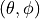. An antenna
radiation pattern is then expressed as a mathematical function
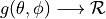 that returns the
gain (in dB) for each possible direction of
transmission/reception. All angles are expressed in radians.
This is the cosine model described in [Chunjian]: the antenna gain is
determined as:
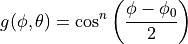
where is the azimuthal orientation of the antenna
(i.e., its direction of maximum gain) and the exponential
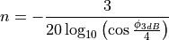
determines the desired 3dB beamwidth . Note that
this radiation pattern is independent of the inclination angle
.
A major difference between the model of [Chunjian] and the one
implemented in the class CosineAntennaModel is that only the element
factor (i.e., what described by the above formulas) is considered. In
fact, [Chunjian] also considered an additional antenna array
factor. The reason why the latter is excluded is that we expect that
the average user would desire to specify a given beamwidth exactly,
without adding an array factor at a latter stage which would in
practice alter the effective beamwidth of the resulting radiation
pattern.
This model is based on the parabolic approximation of the main lobe radiation pattern. It is often used in the context of cellular system to model the radiation pattern of a cell sector, see for instance [R4-092042a] and [Calcev]. The antenna gain in dB is determined as:
where is the azimuthal orientation of the antenna
(i.e., its direction of maximum gain), is its 3 dB
beamwidth, and is the maximum attenuation in dB of the
antenna. Note that this radiation pattern is independent of the inclination angle
.
This model implements the antenna element described in [38901].
Parameters are fixed from the technical report, thus no attributes nor setters are provided.
The model is largely based on the ParabolicAntennaModel.
The class PhasedArrayModel has been created with flexibility in mind.
It abstracts the basic idea of a Phased Antenna Array (PAA) by removing any constraint on the
position of each element, and instead generalizes the concept of steering and beamforming vectors,
solely based on the generalized location of the antenna elements.
For details on Phased Array Antennas see for instance [Mailloux].
Derived classes must implement the following functions:
GetNumberOfElements: returns the number of antenna elements
GetElementLocation: returns the location of the antenna element with the specified index, normalized with respect to the wavelength
GetElementFieldPattern: returns the horizontal and vertical components of the antenna element field pattern at the specified direction. Same polarization (configurable) for all antenna elements of the array is considered.
The class PhasedArrayModel also assumes that all antenna elements are equal, a typical key assumption which allows to model the PAA field pattern as the sum of the array factor, given by the geometry of the location of the antenna elements, and the element field pattern.
Any class derived from AntennaModel is a valid antenna element for the PhasedArrayModel, allowing for a great flexibility of the framework.
The class UniformPlanarArray is a generic implementation of Uniform Planar Arrays (UPAs),
supporting rectangular and linear regular lattices.
It loosely follows the implementation described in the 3GPP TR 38.901 [38901],
considering only a single a single panel, i.e., .
By default, the array is orthogonal to the x-axis, pointing towards the positive
direction, but the orientation can be changed through the attributes “BearingAngle”,
which adjusts the azimuth angle, and “DowntiltAngle”, which adjusts the elevation angle.
The slant angle is instead fixed and assumed to be 0.
The number of antenna elements in the vertical and horizontal directions can be configured
through the attributes “NumRows” and “NumColumns”, while the spacing between the horizontal
and vertical elements can be configured through the attributes “AntennaHorizontalSpacing”
and “AntennaVerticalSpacing”.
The polarization of each antenna element in the array is determined by the polarization
slant angle through the attribute “PolSlantAngle”, as described in [38901] (i.e., ).
Li Chunjian, “Efficient Antenna Patterns for
Three-Sector WCDMA Systems”, Master of Science Thesis, Chalmers
University of Technology, Göteborg, Sweden, 2003
George Calcev and Matt Dillon, “Antenna Tilt Control in
CDMA Networks”, in Proc. of the 2nd Annual International Wireless
Internet Conference (WICON), 2006
The antenna modeled can be used with all the wireless technologies and
physical layer models that support it. Currently, this includes
the physical layer models based on the SpectrumPhy. Please refer to
the documentation of each of these models for details.
The unit test suite angles verifies that the Angles class is
constructed properly by correct conversion from 3D Cartesian
coordinates according to the available methods (construction from a
single vector and from a pair of vectors). For each method, several
test cases are provided that compare the values 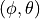
determined by the constructor to known reference values. The test
passes if for each case the values are equal to the reference up to a
tolerance of 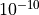 which accounts for numerical errors.
The unit test suite degrees-radians verifies that the methods
DegreesToRadians and RadiansToDegrees work properly by
comparing with known reference values in a number of test
cases. Each test case passes if the comparison is equal up to a
tolerance of which accounts for numerical errors.
The unit test suite isotropic-antenna-model checks that the
IsotropicAntennaModel class works properly, i.e., returns always a
0dB gain regardless of the direction.
The unit test suite cosine-antenna-model checks that the
CosineAntennaModel class works properly. Several test cases are
provided that check for the antenna gain value calculated at different
directions and for different values of the orientation, the reference
gain and the beamwidth. The reference gain is calculated by hand. Each
test case passes if the reference gain in dB is equal to the value returned
by CosineAntennaModel within a tolerance of 0.001, which accounts
for the approximation done for the calculation of the reference
values.
The unit test suite parabolic-antenna-model checks that the
ParabolicAntennaModel class works properly. Several test cases are
provided that check for the antenna gain value calculated at different
directions and for different values of the orientation, the maximum attenuation
and the beamwidth. The reference gain is calculated by hand. Each
test case passes if the reference gain in dB is equal to the value returned
by ParabolicAntennaModel within a tolerance of 0.001, which accounts
for the approximation done for the calculation of the reference
values.
This model implements the base specification of the Ad Hoc On-Demand
Distance Vector (AODV) protocol. The implementation is based on
RFC 3561.
The model was written by Elena Buchatskaia and Pavel Boyko of ITTP RAS,
and is based on the ns-2 AODV model developed by the CMU/MONARCH group
and optimized and tuned by Samir Das and Mahesh Marina, University of
Cincinnati, and also on the AODV-UU implementation by Erik Nordström of
Uppsala University.
Class ns3::aodv::RoutingProtocol implements all functionality of
service packet exchange and inherits from ns3::Ipv4RoutingProtocol.
The base class defines two virtual functions for packet routing and
forwarding. The first one, ns3::aodv::RouteOutput, is used for
locally originated packets, and the second one, ns3::aodv::RouteInput,
is used for forwarding and/or delivering received packets.
Protocol operation depends on many adjustable parameters. Parameters for
this functionality are attributes of ns3::aodv::RoutingProtocol.
Parameter default values are drawn from the RFC and allow the
enabling/disabling protocol features, such as broadcasting HELLO messages,
broadcasting data packets and so on.
AODV discovers routes on demand. Therefore, the AODV model buffers all
packets while a route request packet (RREQ) is disseminated.
A packet queue is implemented in aodv-rqueue.cc. A smart pointer to
the packet, ns3::Ipv4RoutingProtocol::ErrorCallback,
ns3::Ipv4RoutingProtocol::UnicastForwardCallback, and the IP header
are stored in this queue. The packet queue implements garbage collection
of old packets and a queue size limit.
The routing table implementation supports garbage collection of
old entries and state machine, defined in the standard.
It is implemented as a STL map container. The key is a destination IP address.
Some elements of protocol operation aren’t described in the RFC. These
elements generally concern cooperation of different OSI model layers.
The model uses the following heuristics:
This AODV implementation can detect the presence of unidirectional
links and avoid them if necessary. If the node the model receives an
RREQ for is a neighbor, the cause may be a unidirectional link.
This heuristic is taken from AODV-UU implementation and can be disabled.
Protocol operation strongly depends on broken link detection mechanism.
The model implements two such heuristics. First, this implementation
support HELLO messages. However HELLO messages are not a good way to
perform neighbor sensing in a wireless environment (at least not over
802.11). Therefore, one may experience bad performance when running over
wireless. There are several reasons for this: 1) HELLO messages are
broadcasted. In 802.11, broadcasting is often done at a
lower bit rate than unicasting, thus HELLO messages can travel further
than unicast data. 2) HELLO messages are small, thus less prone to
bit errors than data transmissions, and 3) Broadcast transmissions are
not guaranteed to be bidirectional, unlike unicast transmissions.
Second, we use layer 2 feedback when possible. Link are considered to be
broken if frame transmission results in a transmission failure for all
retries. This mechanism is meant for active links and works faster than
the first method.
The layer 2 feedback implementation relies on the TxErrHeader trace source,
currently supported in AdhocWifiMac only.
The model is for IPv4 only. The following optional protocol optimizations
are not implemented:
Local link repair.
RREP, RREQ and HELLO message extensions.
These techniques require direct access to IP header, which contradicts
the assertion from the AODV RFC that AODV works over UDP. This model uses
UDP for simplicity, hindering the ability to implement certain protocol
optimizations. The model doesn’t use low layer raw sockets because they
are not portable.
This traffic generator simulates web browsing traffic using the Hypertext
Transfer Protocol (HTTP). It consists of one or more ThreeGppHttpClient
applications which connect to a ThreeGppHttpServer application. The client
models a web browser which requests web pages to the server. The server
is then responsible to serve the web pages as requested. Please refer to
ThreeGppHttpClientHelper and ThreeGppHttpServerHelper for usage instructions.
Technically speaking, the client transmits request objects to demand a
service from the server. Depending on the type of request received, the
server transmits either:
a main object, i.e., the HTML file of the web page; or
an embedded object, e.g., an image referenced by the HTML file.
A major portion of the traffic pattern is reading time, which does not
generate any traffic. Because of this, one may need to simulate a good
number of clients and/or sufficiently long simulation duration in order to
generate any significant traffic in the system. Reading time is illustrated in
3GPP HTTP reading time histogram.
3GPP HTTP server is a model application which simulates the traffic of a web server. This
application works in conjunction with ThreeGppHttpClient applications.
The application works by responding to requests. Each request is a small
packet of data which contains ThreeGppHttpHeader. The value of the content type
field of the header determines the type of object that the client is
requesting. The possible type is either a main object or an embedded object.
The application is responsible to generate the right type of object and send
it back to the client. The size of each object to be sent is randomly
determined (see ThreeGppHttpVariables). Each object may be sent as multiple packets
due to limited socket buffer space.
To assist with the transmission, the application maintains several instances
of ThreeGppHttpServerTxBuffer. Each instance keeps track of the object type to be
served and the number of bytes left to be sent.
The application accepts connection request from clients. Every connection is
kept open until the client disconnects.
Maximum transmission unit (MTU) size is configurable in ThreeGppHttpServer or in
ThreeGppHttpVariables. By default, the low variant is 536 bytes and high variant is 1460 bytes.
The default values are set with the intention of having a TCP header (size of which is 40 bytes) added
in the packet in such way that lower layers can avoid splitting packets. The change of MTU sizes
affects all TCP sockets after the server application has started. It is mainly visible in sizes of
packets received by ThreeGppHttpClient applications.
3GPP HTTP client is a model application which simulates the traffic of a web browser. This
application works in conjunction with an ThreeGppHttpServer application.
In summary, the application works as follows.
Upon start, it opens a connection to the destination web server
(ThreeGppHttpServer).
After the connection is established, the application immediately requests
a main object from the server by sending a request packet.
After receiving a main object (which can take some time if it consists of
several packets), the application “parses” the main object. Parsing time
is illustrated in figure 3GPP HTTP parsing time histogram.
The parsing takes a short time (randomly determined) to determine the
number of embedded objects (also randomly determined) in the web page.
Number of embedded object is illustrated in 3GPP HTTP number of embedded objects histogram.
If at least one embedded object is determined, the application requests
the first embedded object from the server. The request for the next
embedded object follows after the previous embedded object has been
completely received.
If there is no more embedded object to request, the application enters
the reading time.
Reading time is a long delay (again, randomly determined) where the
application does not induce any network traffic, thus simulating the user
reading the downloaded web page.
After the reading time is finished, the process repeats to step #2.
The client models HTTP persistent connection, i.e., HTTP 1.1, where the
connection to the server is maintained and used for transmitting and receiving
all objects.
Each request by default has a constant size of 350 bytes. A ThreeGppHttpHeader
is attached to each request packet. The header contains information
such as the content type requested (either main object or embedded object)
and the timestamp when the packet is transmitted (which will be used to
compute the delay and RTT of the packet).
Many aspects of the traffic are randomly determined by ThreeGppHttpVariables.
A separate instance of this object is used by the HTTP server and client applications.
These characteristics are based on a legacy 3GPP specification. The description
can be found in the following references:
[1] 3GPP TR 25.892, “Feasibility Study for Orthogonal Frequency Division Multiplexing (OFDM) for UTRAN enhancement”
The three-gpp-http-example can be referenced to see basic usage of the HTTP applications.
In summary, using the ThreeGppHttpServerHelper and ThreeGppHttpClientHelper allow the
user to easily install ThreeGppHttpServer and ThreeGppHttpClient applications to nodes.
The helper objects can be used to configure attribute values for the client
and server objects, but not for the ThreeGppHttpVariables object. Configuration of variables
is done by modifying attributes of ThreeGppHttpVariables, which should be done prior to helpers
installing applications to nodes.
The client and server provide a number of ns-3 trace sources such as
“Tx”, “Rx”, “RxDelay”, and “StateTransition” on the server side, and a large
number on the client side (“ConnectionEstablished”,
“ConnectionClosed”,”TxMainObjectRequest”, “TxEmbeddedObjectRequest”,
“RxMainObjectPacket”, “RxMainObject”, “RxEmbeddedObjectPacket”,
“RxEmbeddedObject”, “Rx”, “RxDelay”, “RxRtt”, “StateTransition”).
For an example demonstrating HTTP applications
run:
$ ./ns3 run 'three-gpp-http-example'
By default, the example will print out the web page requests of the client and responses of the
server and client receiving content packets by using LOG_INFO of ThreeGppHttpServer and ThreeGppHttpClient.
For testing HTTP applications, three-gpp-http-client-server-test is provided. Run:
$ ./test.py -s three-gpp-http-client-server-test
The test consists of simple Internet nodes having HTTP server and client applications installed.
Multiple variant scenarios are tested: delay is 3ms, 30ms or 300ms, bit error rate 0 or 5.0*10^(-6),
MTU size 536 or 1460 bytes and either IPV4 or IPV6 is used. A simulation with each combination of
these parameters is run multiple times to verify functionality with different random variables.
Test cases themselves are rather simple: test verifies that HTTP object packet bytes sent match
total bytes received by the client, and that ThreeGppHttpHeader matches the expected packet.
This model implements an interface to BRITE, the Boston university
Representative Internet Topology gEnerator [1]. BRITE is a standard tool for
generating realistic internet topologies. The ns-3 model, described herein,
provides a helper class to facilitate generating ns-3 specific topologies
using BRITE configuration files. BRITE builds the original graph which is
stored as nodes and edges in the ns-3 BriteTopolgyHelper class. In the ns-3
integration of BRITE, the generator generates a topology and then provides
access to leaf nodes for each AS generated. ns-3 users can than attach
custom topologies to these leaf nodes either by creating them manually or
using topology generators provided in ns-3.
There are three major types of topologies available in BRITE: Router,
AS, and Hierarchical which is a combination of AS and Router. For the
purposes of ns-3 simulation, the most useful are likely to be Router and
Hierarchical. Router level topologies be generated using either the Waxman
model or the Barabasi-Albert model. Each model has different parameters that
effect topology creation. For flat router topologies, all nodes are considered
to be in the same AS.
BRITE Hierarchical topologies contain two levels. The first is the AS level.
This level can be also be created by using either the Waxman model or the
Barabasi-Albert model. Then for each node in the AS topology, a router level
topology is constructed. These router level topologies can again either use
the Waxman model or the Barbasi-Albert model. BRITE interconnects these separate
router topologies as specified by the AS level topology. Once the hierarchical
topology is constructed, it is flattened into a large router level topology.
The model relies on building an external BRITE library,
and then building some ns-3 helpers that call out to the library.
The source code for the ns-3 helpers lives in the directory
src/brite/helper.
To generate the BRITE topology, ns-3 helpers call out to the external BRITE library,
and using a standard BRITE configuration file, the BRITE code builds a graph with nodes
and edges according to this configuration file. Please see the BRITE documentation
or the example configuration files in src/brite/examples/conf_files to get a better
grasp of BRITE configuration options. The graph built by BRITE is returned to ns-3,
and a ns-3 implementation of the graph is built. Leaf nodes for each AS are available
for the user to either attach custom topologies or install ns-3 applications directly.
The brite-generic-example can be referenced to see basic usage of the BRITE
interface. In summary, the BriteTopologyHelper is used as the interface point
by passing in a BRITE configuration file. Along with the configuration file a
BRITE formatted random seed file can also be passed in. If a seed file is not
passed in, the helper will create a seed file using ns-3’s UniformRandomVariable.
Once the topology has been generated by BRITE, BuildBriteTopology() is called to
create the ns-3 representation. Next IP Address can be assigned to the topology
using either AssignIpv4Addresses() or AssignIpv6Addresses(). It should be noted
that each point-to-point link in the topology will be treated as a new network
therefore for IPV4 a /30 subnet should be used to avoid wasting a large amount of
the available address space.
Example BRITE configuration files can be found in /src/brite/examples/conf_files/.
ASBarbasi and ASWaxman are examples of AS only topologies. The RTBarabasi and
RTWaxman files are examples of router only topologies. Finally the
TD_ASBarabasi_RTWaxman configuration file is an example of a Hierarchical topology
that uses the Barabasi-Albert model for the AS level and the Waxman model for each
of the router level topologies. Information on the BRITE parameters used in these files
can be found in the BRITE user manual.
Make sure it says ‘enabled’ beside ‘BRITE Integration’. If it does not, then
something has gone wrong. Either you have forgotten to build BRITE first
following the steps above, or ns-3 could not find your BRITE directory.
For an example demonstrating BRITE integration
run:
$./ns3run'brite-generic-example'
By enabling the verbose parameter, the example will print out the node and
edge information in a similar format to standard BRITE output. There are
many other command-line parameters including confFile, tracing, and nix, described below:
confFile
A BRITE configuration file. Many different BRITE configuration
file examples exist in the src/brite/examples/conf_files directory, for
example, RTBarabasi20.conf and RTWaxman.conf. Please refer to
the conf_files directory for more examples.
tracing
Enables ascii tracing.
nix
Enables nix-vector routing. Global routing is used by default.
The generic BRITE example also support visualization using pyviz, assuming
python bindings in ns-3 are enabled:
$./ns3runbrite-generic-example--vis
Simulations involving BRITE can also be used with MPI. The total number of MPI instances is
passed to the BRITE topology helper where a modulo divide is used to assign the nodes for each
AS to a MPI instance. An example can be found in src/brite/examples:
$mpirun-np2./ns3runbrite-MPI-example
Please see the ns-3 MPI documentation for information on setting up MPI with ns-3.
a new class (Building) that models the presence of a building in a simulation scenario;
a new class (MobilityBuildingInfo) that allows to specify the location, size and characteristics of buildings present in the simulated area, and allows the placement of nodes inside those buildings;
a container class with the definition of the most useful pathloss models and the correspondent variables called BuildingsPropagationLossModel.
a new propagation model (HybridBuildingsPropagationLossModel) working with the mobility model just introduced, that allows to model the phenomenon of indoor/outdoor propagation in the presence of buildings.
a simplified model working only with Okumura Hata (OhBuildingsPropagationLossModel) considering the phenomenon of indoor/outdoor propagation in the presence of buildings.
a channel condition model (BuildingsChannelConditionModel) which determined the LOS/NLOS channel condition based on the Building objects deployed in the scenario.
hybrid channel condition models (ThreeGppV2vUrbanChannelConditionModel and ThreeGppV2vHighwayChannelConditionModel) specifically designed to model vehicular environments (more information can be found in the documentation of the propagation module)
The models have been designed with LTE in mind, though their implementation is in fact independent from any LTE-specific code, and can be used with other ns-3 wireless technologies as well (e.g., wifi, wimax).
The HybridBuildingsPropagationLossModel pathloss model included is obtained through a combination of several well known pathloss models in order to mimic different environmental scenarios such as urban, suburban and open areas. Moreover, the model considers both outdoor and indoor indoor and outdoor communication has to be included since HeNB might be installed either within building and either outside. In case of indoor communication, the model has to consider also the type of building in outdoor <-> indoor communication according to some general criteria such as the wall penetration losses of the common materials; moreover it includes some general configuration for the internal walls in indoor communications.
The OhBuildingsPropagationLossModel pathloss model has been created for simplifying the previous one removing the thresholds for switching from one model to other. For doing this it has been used only one propagation model from the one available (i.e., the Okumura Hata). The presence of building is still considered in the model; therefore all the considerations of above regarding the building type are still valid. The same consideration can be done for what concern the environmental scenario and frequency since both of them are parameters of the model considered.
The model includes a specific class called Building which contains a ns3 Box class for defining the dimension of the building. In order to implements the characteristics of the pathloss models included, the Building class supports the following attributes:
building type:
Residential (default value)
Office
Commercial
external walls type
Wood
ConcreteWithWindows (default value)
ConcreteWithoutWindows
StoneBlocks
number of floors (default value 1, which means only ground-floor)
number of rooms in x-axis (default value 1)
number of rooms in y-axis (default value 1)
The Building class is based on the following assumptions:
a buildings is represented as a rectangular parallelepiped (i.e., a box)
the walls are parallel to the x, y, and z axis
a building is divided into a grid of rooms, identified by the following parameters:
number of floors
number of rooms along the x-axis
number of rooms along the y-axis
the z axis is the vertical axis, i.e., floor numbers increase for increasing z axis values
the x and y room indices start from 1 and increase along the x and y axis respectively
The MobilityBuildingInfo class, which inherits from the ns3 class Object, is in charge of maintaining information about the position of a node with respect to building. The information managed by MobilityBuildingInfo is:
whether the node is indoor or outdoor
if indoor:
in which building the node is
in which room the node is positioned (x, y and floor room indices)
The class MobilityBuildingInfo is used by BuildingsPropagationLossModel class, which inherits from the ns3 class PropagationLossModel and manages the pathloss computation of the single components and their composition according to the nodes’ positions. Moreover, it implements also the shadowing, that is the loss due to obstacles in the main path (i.e., vegetation, buildings, etc.).
It is to be noted that, MobilityBuildingInfo can be used by any other propagation model. However, based on the information at the time of this writing, only the ones defined in the building module are designed for considering the constraints introduced by the buildings.
This class implements a building-dependent indoor propagation loss model based on the ITU P.1238 model, which includes losses due to type of building (i.e., residential, office and commercial).
The analytical expression is given in the following.
where:
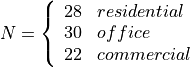 : power loss coefficient [dB]
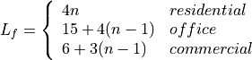
: number of floors between base station and mobile (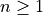)
The BuildingsPropagationLossModel provides an additional set of building-dependent pathloss model elements that are used to implement different pathloss logics. These pathloss model elements are described in the following subsections.
This component models the penetration loss through walls for indoor to outdoor communications and vice-versa. The values are taken from the [cost231] model.
Wood ~ 4 dB
Concrete with windows (not metallized) ~ 7 dB
Concrete without windows ~ 15 dB (spans between 10 and 20 in COST231)
This component models the penetration loss occurring in indoor-to-indoor communications within the same building. The total loss is calculated assuming that each single internal wall has a constant penetration loss , and approximating the number of walls that are penetrated with the manhattan distance (in number of rooms) between the transmitter and the receiver. In detail, let , 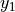, , 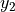 denote the room number along the and axis respectively for user 1 and 2; the total loss 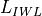 is calculated as
This component model the gain due to the fact that the transmitting device is on a floor above the ground. In the literature [turkmani] this gain has been evaluated as about 2 dB per floor. This gain can be applied to all the indoor to outdoor communications and vice-versa.
The shadowing is modeled according to a log-normal distribution with variable standard deviation as function of the relative position (indoor or outdoor) of the MobilityModel instances involved. One random value is drawn for each pair of MobilityModels, and stays constant for that pair during the whole simulation. Thus, the model is appropriate for static nodes only.
The model considers that the mean of the shadowing loss in dB is always 0. For the variance, the model considers three possible values of standard deviation, in detail:
outdoor (m_shadowingSigmaOutdoor, default value of 7 dB) .
indoor (m_shadowingSigmaIndoor, default value of 10 dB) .
external walls penetration (m_shadowingSigmaExtWalls, default value 5 dB)
The simulator generates a shadowing value per each active link according to nodes’ position the first time the link is used for transmitting. In case of transmissions from outdoor nodes to indoor ones, and vice-versa, the standard deviation () has to be calculated as the square root of the sum of the quadratic values of the standard deviatio in case of outdoor nodes and the one for the external walls penetration. This is due to the fact that that the components producing the shadowing are independent of each other; therefore, the variance of a distribution resulting from the sum of two independent normal ones is the sum of the variances.
The HybridBuildingsPropagationLossModel pathloss model included is obtained through a combination of several well known pathloss models in order to mimic different outdoor and indoor scenarios, as well as indoor-to-outdoor and outdoor-to-indoor scenarios. In detail, the class HybridBuildingsPropagationLossModel integrates the following pathloss models:
OkumuraHataPropagationLossModel (OH) (at frequencies > 2.3 GHz substituted by Kun2600MhzPropagationLossModel)
ItuR1411LosPropagationLossModel and ItuR1411NlosOverRooftopPropagationLossModel (I1411)
ItuR1238PropagationLossModel (I1238)
the pathloss elements of the BuildingsPropagationLossModel (EWL, HG, IWL)
The following pseudo-code illustrates how the different pathloss model elements described above are integrated in HybridBuildingsPropagationLossModel:
We note that, for the case of communication between two nodes below rooftop level with distance is greater then 1 km, we still consider the I1411 model, since OH is specifically designed for macro cells and therefore for antennas above the roof-top level.
For the ITU-R P.1411 model we consider both the LOS and NLoS versions. In particular, we considers the LoS propagation for distances that are shorted than a tunable threshold (m_itu1411NlosThreshold). In case on NLoS propagation, the over the roof-top model is taken in consideration for modeling both macro BS and SC. In case on NLoS several parameters scenario dependent have been included, such as average street width, orientation, etc. The values of such parameters have to be properly set according to the scenario implemented, the model does not calculate natively their values. In case any values is provided, the standard ones are used, apart for the height of the mobile and BS, which instead their integrity is tested directly in the code (i.e., they have to be greater then zero). In the following we give the expressions of the components of the model.
We also note that the use of different propagation models (OH, I1411, I1238 with their variants) in HybridBuildingsPropagationLossModel can result in discontinuities of the pathloss with respect to distance. A proper tuning of the attributes (especially the distance threshold attributes) can avoid these discontinuities. However, since the behavior of each model depends on several other parameters (frequency, node height, etc), there is no default value of these thresholds that can avoid the discontinuities in all possible configurations. Hence, an appropriate tuning of these parameters is left to the user.
The OhBuildingsPropagationLossModel class has been created as a simple means to solve the discontinuity problems of HybridBuildingsPropagationLossModel without doing scenario-specific parameter tuning. The solution is to use only one propagation loss model (i.e., Okumura Hata), while retaining the structure of the pathloss logic for the calculation of other path loss components (such as wall penetration losses). The result is a model that is free of discontinuities (except those due to walls), but that is less realistic overall for a generic scenario with buildings and outdoor/indoor users, e.g., because Okumura Hata is not suitable neither for indoor communications nor for outdoor communications below rooftop level.
In detail, the class OhBuildingsPropagationLossModel integrates the following pathloss models:
OkumuraHataPropagationLossModel (OH)
the pathloss elements of the BuildingsPropagationLossModel (EWL, HG, IWL)
The following pseudo-code illustrates how the different pathloss model elements described above are integrated in OhBuildingsPropagationLossModel:
We note that OhBuildingsPropagationLossModel is a significant simplification with respect to HybridBuildingsPropagationLossModel, due to the fact that OH is used always. While this gives a less accurate model in some scenarios (especially below rooftop and indoor), it effectively avoids the issue of pathloss discontinuities that affects HybridBuildingsPropagationLossModel.
This building has three floors and an internal 3 x 2 grid of rooms of equal size.
The helper class GridBuildingAllocator is also available to easily
create a set of buildings with identical characteristics placed on a
rectangular grid. Here’s an example of how to use it:
This will create a 3x2 grid of 6 buildings, each 7 x 13 x 6 m with 2 x
4 rooms inside and 2 foors; the buildings are spaced by 3 m on both
the x and the y axis.
Nodes and mobility models are configured as usual, however in order to
use them with the buildings model you need an additional call to
BuildingsHelper::Install(), so as to let the mobility model include
the information on their position w.r.t. the buildings. Here is an example:
It is to be noted that any mobility model can be used. However, the
user is advised to make sure that the behavior of the mobility model
being used is consistent with the presence of Buildings. For example,
using a simple random mobility over the whole simulation area in
presence of buildings might easily results in node moving in and out
of buildings, regardless of the presence of walls.
One dedicated buildings-aware mobility model is the
RandomWalk2dOutdoorMobilityModel. This class is similar to the
RandomWalk2dMobilityModel but avoids placing the trajectory
on a path that would intersect a building wall. If a boundary
is encountered (either the bounding box or a building wall), the
model rebounds with a random direction and speed that ensures that
the trajectory stays outside the buildings. An example program
that demonstrates the use of this model is the
src/buildings/examples/outdoor-random-walk-example.cc which
has an associated shell script to plot the traces generated.
Another example program demonstrates how this outdoor mobility
model can be used as the basis of a group mobility model, with
the outdoor buildings-aware model serving as the parent or
reference mobility model, and with additional nodes defining a
child mobility model providing the offset from the reference
mobility model. This example,
src/buildings/example/outdoor-group-mobility-example.cc,
also has an associated shell script
(outdoor-group-mobility-animate.sh) that can be used to generate
an animated GIF of the group’s movement.
Any legacy ns-3 positioning method can be used to place node in the
simulation. The important additional step is to For example, you can
place nodes manually like this:
Alternatively, you could use any existing PositionAllocator
class. The coordinates of the node will determine whether it is placed
outdoor or indoor and, if indoor, in which building and room it is placed.
The following position allocator classes are available to place node
in special positions with respect to buildings:
RandomBuildingPositionAllocator: Allocate each position by
randomly choosing a building from the list of all buildings, and
then randomly choosing a position inside the building.
RandomRoomPositionAllocator: Allocate each position by randomly
choosing a room from the list of rooms in all buildings, and then
randomly choosing a position inside the room.
SameRoomPositionAllocator: Walks a given NodeContainer
sequentially, and for each node allocate a new position randomly in
the same room of that node.
FixedRoomPositionAllocator: Generate a random position
uniformly distributed in the volume of a chosen room inside a
chosen building.
8.2.1.5. Making the Mobility Model Consistent for a node¶
Initially, a mobility model of a node is made consistent when a node is
initialized, which eventually triggers a call to the DoInitialize
method of the MobilityBuildingInfo` class. In particular, it calls the
MakeMobilityModelConsistent method, which goes through the lists of
all buildings, determine if the node is indoor or outdoor, and if indoor
it also determines the building in which the node is located and the
corresponding floor number inside the building. Moreover, this method also
caches the position of the node, which is used to make the mobility model
consistent for a moving node whenever the IsInside method of
MobilityBuildingInfo class is called.
After you placed buildings and nodes in a simulation, you can use a
building-aware pathloss model in a simulation exactly in the same way
you would use any regular path loss model. How to do this is specific
for the wireless module that you are considering (lte, wifi, wimax,
etc.), so please refer to the documentation of that model for specific
instructions.
The class BuildingsChannelConditionModel implements a channel condition model
which determines the LOS/NLOS channel state based on the buildings deployed in
the scenario.
In addition, based on the wall material of the building, low/high building
penetration losses are considered, as defined in 3GPP TS 38.901 7.4.3.1.
In particular, for O2I condition, in case of Wood or ConcreteWithWindows material,
low losses are considered in the pathloss calculation. In case the material has
been set to ConcreteWithoutWindows or StoneBlocks, high losses are considered.
Notice that in certain corner cases, such as the I2O2I interference, the model
underestimates losses by applying either low or high losses based on the wall material
of the involved nodes. For a more accurate estimation the model can be further extended.
The classes ThreeGppV2vUrbanChannelConditionModel and
ThreeGppV2vHighwayChannelConditionModel implement hybrid channel condition
models, specifically designed to model vehicular environments.
More information can be found in the documentation
of the propagation module.
The Building class has the following configurable parameters:
building type: Residential, Office and Commercial.
external walls type: Wood, ConcreteWithWindows, ConcreteWithoutWindows and StoneBlocks.
building bounds: a Box class with the building bounds.
number of floors.
number of rooms in x-axis and y-axis (rooms can be placed only in a grid way).
The BuildingMobilityLossModel parameter configurable with the ns3 attribute system is represented by the bound (string Bounds) of the simulation area by providing a Box class with the area bounds. Moreover, by means of its methods the following parameters can be configured:
the number of floor the node is placed (default 0).
the position in the rooms grid.
The BuildingPropagationLossModel class has the following configurable parameters configurable with the attribute system:
Frequency: reference frequency (default 2160 MHz), note that by setting the frequency the wavelength is set accordingly automatically and vice-versa).
Lambda: the wavelength (0.139 meters, considering the above frequency).
ShadowSigmaOutdoor: the standard deviation of the shadowing for outdoor nodes (default 7.0).
ShadowSigmaIndoor: the standard deviation of the shadowing for indoor nodes (default 8.0).
ShadowSigmaExtWalls: the standard deviation of the shadowing due to external walls penetration for outdoor to indoor communications (default 5.0).
RooftopLevel: the level of the rooftop of the building in meters (default 20 meters).
Los2NlosThr: the value of distance of the switching point between line-of-sigth and non-line-of-sight propagation model in meters (default 200 meters).
ITU1411DistanceThr: the value of distance of the switching point between short range (ITU 1211) communications and long range (Okumura Hata) in meters (default 200 meters).
MinDistance: the minimum distance in meters between two nodes for evaluating the pathloss (considered neglictible before this threshold) (default 0.5 meters).
Environment: the environment scenario among Urban, SubUrban and OpenAreas (default Urban).
CitySize: the dimension of the city among Small, Medium, Large (default Large).
In order to use the hybrid mode, the class to be used is the HybridBuildingMobilityLossModel, which allows the selection of the proper pathloss model according to the pathloss logic presented in the design chapter. However, this solution has the problem that the pathloss model switching points might present discontinuities due to the different characteristics of the model. This implies that according to the specific scenario, the threshold used for switching have to be properly tuned.
The simple OhBuildingMobilityLossModel overcome this problem by using only the Okumura Hata model and the wall penetration losses.
To test and validate the ns-3 Building Pathloss module, some test suites is provided which are integrated with the ns-3 test framework. To run them, you need to have configured the build of the simulator in this way:
The above will run not only the test suites belonging to the buildings module, but also those belonging to all the other ns-3 modules on which the buildings module depends. See the ns-3 manual for generic information on the testing framework.
You can get a more detailed report in HTML format in this way:
$./test.py-wresults.html
After the above command has run, you can view the detailed result for each test by opening the file results.html with a web browser.
You can run each test suite separately using this command:
$./test.py-stest-suite-name
For more details about test.py and the ns-3 testing framework, please refer to the ns-3 manual.
The test suite buildings-helper checks that the method BuildingsHelper::MakeAllInstancesConsistent() works properly, i.e., that the BuildingsHelper is successful in locating if nodes are outdoor or indoor, and if indoor that they are located in the correct building, room and floor. Several test cases are provided with different buildings (having different size, position, rooms and floors) and different node positions. The test passes if each every node is located correctly.
The test suite building-position-allocator feature two test cases that check that respectively RandomRoomPositionAllocator and SameRoomPositionAllocator work properly. Each test cases involves a single 2x3x2 room building (total 12 rooms) at known coordinates and respectively 24 and 48 nodes. Both tests check that the number of nodes allocated in each room is the expected one and that the position of the nodes is also correct.
The test suite buildings-pathloss-model provides different unit tests that compare the expected results of the buildings pathloss module in specific scenarios with pre calculated values obtained offline with an Octave script (test/reference/buildings-pathloss.m). The tests are considered passed if the two values are equal up to a tolerance of 0.1, which is deemed appropriate for the typical usage of pathloss values (which are in dB).
In the following we detailed the scenarios considered, their selection has been done for covering the wide set of possible pathloss logic combinations. The pathloss logic results therefore implicitly tested.
In this test we test the standard Okumura Hata model; therefore both eNB and UE are placed outside at a distance of 2000 m. The frequency used is the E-UTRA band #5, which correspond to 869 MHz (see table 5.5-1 of 36.101). The test includes also the validation of the areas extensions (i.e., urban, suburban and open-areas) and of the city size (small, medium and large).
This test is aimed at validating the COST231 model. The test is similar to the Okumura Hata one, except that the frequency used is the EUTRA band #1 (2140 MHz) and that the test can be performed only for large and small cities in urban scenarios due to model limitations.
This test validates the 2.6 GHz Kun model. The test is similar to Okumura Hata one except that the frequency is the EUTRA band #7 (2620 MHz) and the test can be performed only in urban scenario.
This test is aimed at validating the ITU1411 model in case of line of sight within street canyons transmissions. In this case the UE is placed at 100 meters far from the eNB, since the threshold for switching between LoS and NLoS is left to default one (i.e., 200 m.).
This test is aimed at validating the ITU1411 model in case of non line of sight over the rooftop transmissions. In this case the UE is placed at 900 meters far from the eNB, in order to be above the threshold for switching between LoS and NLoS is left to default one (i.e., 200 m.).
This test is aimed at validating the ITUP1238 model in case of indoor transmissions. In this case both the UE and the eNB are placed in a residential building with walls made of concrete with windows. Ue is placed at the second floor and distances 30 meters far from the eNB, which is placed at the first floor.
8.3.2.3.7. Test #7 Outdoor -> Indoor with Okumura Hata model¶
This test validates the outdoor to indoor transmissions for large distances. In this case the UE is placed in a residential building with wall made of concrete with windows and distances 2000 meters from the outdoor eNB.
8.3.2.3.8. Test #8 Outdoor -> Indoor with ITU1411 model¶
This test validates the outdoor to indoor transmissions for short distances. In this case the UE is placed in a residential building with walls made of concrete with windows and distances 100 meters from the outdoor eNB.
8.3.2.3.9. Test #9 Indoor -> Outdoor with ITU1411 model¶
This test validates the outdoor to indoor transmissions for very short distances. In this case the eNB is placed in the second floor of a residential building with walls made of concrete with windows and distances 100 meters from the outdoor UE (i.e., LoS communication). Therefore the height gain has to be included in the pathloss evaluation.
8.3.2.3.10. Test #10 Indoor -> Outdoor with ITU1411 model¶
This test validates the outdoor to indoor transmissions for short distances. In this case the eNB is placed in the second floor of a residential building with walls made of concrete with windows and distances 500 meters from the outdoor UE (i.e., NLoS communication). Therefore the height gain has to be included in the pathloss evaluation.
The test suite buildings-shadowing-test is a unit test intended to verify the statistical distribution of the shadowing model implemented by BuildingsPathlossModel. The shadowing is modeled according to a normal distribution with mean and variable standard deviation , according to models commonly used in literature. Three test cases are provided, which cover the cases of indoor, outdoor and indoor-to-outdoor communications.
Each test case generates 1000 different samples of shadowing for different pairs of MobilityModel instances in a given scenario. Shadowing values are obtained by subtracting from the total loss value returned by HybridBuildingsPathlossModel the path loss component which is constant and pre-determined for each test case. The test verifies that the sample mean and sample variance of the shadowing values fall within the 99% confidence interval of the sample mean and sample variance. The test also verifies that the shadowing values returned at successive times for the same pair of MobilityModel instances is constant.
The BuildingsChannelConditionModelTestSuite tests the class BuildingsChannelConditionModel.
It checks if the channel condition between two nodes is correctly determined when a
building is deployed.
Turkmani A.M.D., J.D. Parson and D.G. Lewis, “Radio propagation into buildings at 441, 900 and 1400 MHz”,
in Proc. of 4th Int. Conference on Land Mobile Radio, 1987.
Click is a software architecture for building configurable routers.
By using different combinations of packet processing units called elements,
a Click router can be made to perform a specific kind of functionality.
This flexibility provides a good platform for testing and experimenting with
different protocols.
ns-3’s design is well suited for an integration with Click due to the following reasons:
Packets in ns-3 are serialised/deserialised as they move up/down the stack. This allows ns-3 packets to be passed to and from Click as they are.
This also means that any kind of ns-3 traffic generator and transport should work easily on top of Click.
By striving to implement click as an Ipv4RoutingProtocol instance, we can avoid significant changes to the LL and MAC layer of the ns-3 code.
The design goal was to make the ns-3-click public API simple enough such that the user needs to merely add an Ipv4ClickRouting instance to the node, and inform each Click node of the Click configuration file (.click file) that it is to use.
This model implements the interface to the Click Modular Router and
provides the Ipv4ClickRouting class to allow a node to use Click
for external routing. Unlike normal Ipv4RoutingProtocol sub types,
Ipv4ClickRouting doesn’t use a RouteInput() method, but instead,
receives a packet on the appropriate interface and processes it
accordingly. Note that you need to have a routing table type element
in your Click graph to use Click for external routing. This is needed
by the RouteOutput() function inherited from Ipv4RoutingProtocol.
Furthermore, a Click based node uses a different kind of L3 in the
form of Ipv4L3ClickProtocol, which is a trimmed down version of
Ipv4L3Protocol. Ipv4L3ClickProtocol passes on packets passing through
the stack to Ipv4ClickRouting for processing.
9.1.1.1. Developing a Simulator API to allow ns-3 to interact with Click¶
Much of the API is already well defined, which allows Click to probe for information from the simulator (like a Node’s ID, an Interface ID and so forth). By retaining most of the methods, it should be possible to write new implementations specific to ns-3 for the same functionality.
Hence, for the Click integration with ns-3, a class named Ipv4ClickRouting will handle the interaction with Click. The code for the same can be found in src/click/model/ipv4-click-routing.{cc,h}.
There are four kinds of packet hand-offs that can occur between ns-3 and Click.
L4 to L3
L3 to L4
L3 to L2
L2 to L3
To overcome this, we implement Ipv4L3ClickProtocol, a stripped down version of Ipv4L3Protocol. Ipv4L3ClickProtocol passes packets to and from Ipv4ClickRouting appropriately to perform routing.
In its current state, the NS-3 Click Integration is limited to use only with L3, leaving NS-3 to handle L2. We are currently working on adding Click MAC support as well. See the usage section to make sure that you design your Click graphs accordingly.
Eddie Kohler, Robert Morris, Benjie Chen, John Jannotti, and M. Frans Kaashoek. The click modular router. ACM Transactions on Computer Systems 18(3), August 2000, pages 263-297.
Lalith Suresh P., and Ruben Merz. Ns-3-click: click modular router integration for ns-3. In Proc. of 3rd International ICST Workshop on NS-3 (WNS3), Barcelona, Spain. March, 2011.
Michael Neufeld, Ashish Jain, and Dirk Grunwald. Nsclick: bridging network simulation and deployment. MSWiM ‘02: Proceedings of the 5th ACM international workshop on Modeling analysis and simulation of wireless and mobile systems, 2002, Atlanta, Georgia, USA. http://doi.acm.org/10.1145/570758.570772
Hint: If you have click installed one directory above ns-3 (such as in the
ns-3-allinone directory), and the name of the directory is ‘click’ (or
a symbolic link to the directory is named ‘click’), then the –with-nsclick
specifier is not necessary; the ns-3 build system will successfully find
the directory.
If it says ‘enabled’ beside ‘NS-3 Click Integration Support’, then you’re good to go. Note: If running modular ns-3, the minimum set of modules required to run all ns-3-click examples is wifi, csma and config-store.
Next, try running one of the examples:
$./ns3runnsclick-simple-lan
You may then view the resulting .pcap traces, which are named nsclick-simple-lan-0-0.pcap and nsclick-simple-lan-0-1.pcap.
The following should be kept in mind when making your Click graph:
Only userlevel elements can be used.
You will need to replace FromDevice and ToDevice elements with FromSimDevice and ToSimDevice elements.
Packets to the kernel are sent up using ToSimDevice(tap0,IP).
For any node, the device which sends/receives packets to/from the kernel, is named ‘tap0’. The remaining interfaces should be named eth0, eth1 and so forth (even if you’re using wifi). Please note that the device numbering should begin from 0. In future, this will be made flexible so that users can name devices in their Click file as they wish.
A routing table element is a mandatory. The OUTports of the routing table element should correspond to the interface number of the device through which the packet will ultimately be sent out. Violating this rule will lead to really weird packet traces. This routing table element’s name should then be passed to the Ipv4ClickRouting protocol object as a simulation parameter. See the Click examples for details.
The current implementation leaves Click with mainly L3 functionality, with ns-3 handling L2. We will soon begin working to support the use of MAC protocols on Click as well. This means that as of now, Click’s Wifi specific elements cannot be used with ns-3.
and …will print the contents of packets that flow out of the ArpQuerier, then generate a pcap trace file which will have a suffix ‘out_arpquery’, for each node using the Click file, before pushing packets onto ‘ethout’.
The example scripts inside src/click/examples/ demonstrate the use of Click based nodes
in different scenarios. The helper source can be found inside src/click/helper/click-internet-stack-helper.{h,cc}
The following examples have been written, which can be found in src/click/examples/:
nsclick-simple-lan.cc and nsclick-raw-wlan.cc: A Click based node communicating with a normal ns-3 node without Click, using Csma and Wifi respectively. It also demonstrates the use of TCP on top of Click, something which the original nsclick implementation for NS-2 couldn’t achieve.
nsclick-udp-client-server-csma.cc and nsclick-udp-client-server-wifi.cc: A 3 node LAN (Csma and Wifi respectively) wherein 2 Click based nodes run a UDP client, that sends packets to a third Click based node running a UDP server.
nsclick-routing.cc: One Click based node communicates to another via a third node that acts as an IP router (using the IP router Click configuration). This demonstrates routing using Click.
Scripts are available within <click-dir>/conf/ that allow you to generate Click files for some common scenarios. The IP Router used in nsclick-routing.cc was generated from the make-ip-conf.pl file and slightly adapted to work with ns-3-click.
Unit tests have been written to verify the internals of Ipv4ClickRouting. This can be found in src/click/ipv4-click-routing-test.cc. These tests verify whether the methods inside Ipv4ClickRouting which deal with Device name to ID, IP Address from device name and Mac Address from device name bindings work as expected.
The examples have been used to test Click with actual simulation scenarios. These can be found in src/click/examples/. These tests cover the following: the use of different kinds of transports on top of Click, TCP/UDP, whether Click nodes can communicate with non-Click based nodes, whether Click nodes can communicate with each other, using Click to route packets using static routing.
Click has been tested with Csma, Wifi and Point-to-Point devices. Usage instructions are available in the preceding section.
The ns-3 CSMA device models a simple bus network in the spirit of Ethernet.
Although it does not model any real physical network you could ever build or
buy, it does provide some very useful functionality.
Typically when one thinks of a bus network Ethernet or IEEE 802.3 comes to mind.
Ethernet uses CSMA/CD (Carrier Sense Multiple Access with Collision Detection
with exponentially increasing backoff to contend for the shared transmission
medium. The ns-3 CSMA device models only a portion of this process, using the
nature of the globally available channel to provide instantaneous (faster than
light) carrier sense and priority-based collision “avoidance.” Collisions in the
sense of Ethernet never happen and so the ns-3 CSMA device does not model
collision detection, nor will any transmission in progress be “jammed.”
There are a number of conventions in use for describing layered communications
architectures in the literature and in textbooks. The most common layering model
is the ISO seven layer reference model. In this view the CsmaNetDevice and
CsmaChannel pair occupies the lowest two layers – at the physical (layer one),
and data link (layer two) positions. Another important reference model is that
specified by RFC 1122, “Requirements for Internet Hosts – Communication
Layers.” In this view the CsmaNetDevice and CsmaChannel pair occupies the lowest
layer – the link layer. There is also a seemingly endless litany of alternative
descriptions found in textbooks and in the literature. We adopt the naming
conventions used in the IEEE 802 standards which speak of LLC, MAC, MII and PHY
layering. These acronyms are defined as:
LLC: Logical Link Control;
MAC: Media Access Control;
MII: Media Independent Interface;
PHY: Physical Layer.
In this case the LLC and MAC are sublayers of the OSI data link layer and
the MII and PHY are sublayers of the OSI physical layer.
The “top” of the CSMA device defines the transition from the network layer to
the data link layer. This transition is performed by higher layers by calling
either CsmaNetDevice::Send or CsmaNetDevice::SendFrom.
In contrast to the IEEE 802.3 standards, there is no precisely specified PHY in
the CSMA model in the sense of wire types, signals or pinouts. The “bottom”
interface of the CsmaNetDevice can be thought of as as a kind of Media
Independent Interface (MII) as seen in the “Fast Ethernet” (IEEE 802.3u)
specifications. This MII interface fits into a corresponding media independent
interface on the CsmaChannel. You will not find the equivalent of a 10BASE-T or
a 1000BASE-LX PHY.
The CsmaNetDevice calls the CsmaChannel through a media independent interface.
There is a method defined to tell the channel when to start “wiggling the wires”
using the method CsmaChannel::TransmitStart, and a method to tell the channel
when the transmission process is done and the channel should begin propagating
the last bit across the “wire”: CsmaChannel::TransmitEnd.
When the TransmitEnd method is executed, the channel will model a single uniform
signal propagation delay in the medium and deliver copes of the packet to each
of the devices attached to the packet via the CsmaNetDevice::Receive method.
There is a “pin” in the device media independent interface corresponding to
“COL” (collision). The state of the channel may be sensed by calling
CsmaChannel::GetState. Each device will look at this “pin” before starting a
send and will perform appropriate backoff operations if required.
Properly received packets are forwarded up to higher levels from the
CsmaNetDevice via a callback mechanism. The callback function is initialized by
the higher layer (when the net device is attached) using
CsmaNetDevice::SetReceiveCallback and is invoked upon “proper” reception of a
packet by the net device in order to forward the packet up
the protocol stack.
The class CsmaChannel models the actual transmission medium. There is no fixed
limit for the number of devices connected to the channel. The CsmaChannel models
a data rate and a speed-of-light delay which can be accessed via the attributes
“DataRate” and “Delay” respectively. The data rate provided to the channel is
used to set the data rates used by the transmitter sections of the CSMA devices
connected to the channel. There is no way to independently set data rates in the
devices. Since the data rate is only used to calculate a delay time, there is no
limitation (other than by the data type holding the value) on the speed at which
CSMA channels and devices can operate; and no restriction based on any kind of
PHY characteristics.
The CsmaChannel has three states, IDLE, TRANSMITTING and
PROPAGATING. These three states are “seen” instantaneously by all devices on
the channel. By this we mean that if one device begins or ends a simulated
transmission, all devices on the channel are immediately aware of the
change in state. There is no time during which one device may see an IDLE
channel while another device physically further away in the collision domain may
have begun transmitting with the associated signals not propagated down the
channel to other devices. Thus there is no need for collision detection in the
CsmaChannel model and it is not implemented in any way.
We do, as the name indicates, have a Carrier Sense aspect to the model. Since
the simulator is single threaded, access to the common channel will be
serialized by the simulator. This provides a deterministic mechanism for
contending for the channel. The channel is allocated (transitioned from state
IDLE to state TRANSMITTING) on a first-come first-served basis.
The channel always goes through a three state process:
IDLE->TRANSMITTING->PROPAGATING->IDLE
The TRANSMITTING state models the time during which the source net device is
actually wiggling the signals on the wire. The PROPAGATING state models the
time after the last bit was sent, when the signal is propagating down the wire
to the “far end.”
The transition to the TRANSMITTING state is driven by a call to
CsmaChannel::TransmitStart which is called by the net device that transmits the
packet. It is the responsibility of that device to end the transmission with a
call to CsmaChannel::TransmitEnd at the appropriate simulation time that
reflects the time elapsed to put all of the packet bits on the wire. When
TransmitEnd is called, the channel schedules an event corresponding to a single
speed-of-light delay. This delay applies to all net devices on the channel
identically. You can think of a symmetrical hub in which the packet bits
propagate to a central location and then back out equal length cables to the
other devices on the channel. The single “speed of light” delay then corresponds
to the time it takes for: 1) a signal to propagate from one CsmaNetDevice
through its cable to the hub; plus 2) the time it takes for the hub to forward
the packet out a port; plus 3) the time it takes for the signal in question to
propagate to the destination net device.
The CsmaChannel models a broadcast medium so the packet is delivered to all of
the devices on the channel (including the source) at the end of the propagation
time. It is the responsibility of the sending device to determine whether or not
it receives a packet broadcast over the channel.
The CsmaChannel provides following Attributes:
DataRate: The bitrate for packet transmission on connected devices;
Delay: The speed of light transmission delay for the channel.
The CSMA network device appears somewhat like an Ethernet device. The
CsmaNetDevice provides following Attributes:
Address: The Mac48Address of the device;
SendEnable: Enable packet transmission if true;
ReceiveEnable: Enable packet reception if true;
EncapsulationMode: Type of link layer encapsulation to use;
RxErrorModel: The receive error model;
TxQueue: The transmit queue used by the device;
InterframeGap: The optional time to wait between “frames”;
Rx: A trace source for received packets;
Drop: A trace source for dropped packets.
The CsmaNetDevice supports the assignment of a “receive error model.” This is an
ErrorModel object that is used to simulate data corruption on the link.
Packets sent over the CsmaNetDevice are always routed through the transmit queue
to provide a trace hook for packets sent out over the network. This transmit
queue can be set (via attribute) to model different queuing strategies.
Also configurable by attribute is the encapsulation method used by the device.
Every packet gets an EthernetHeader that includes the destination and source MAC
addresses, and a length/type field. Every packet also gets an EthernetTrailer
which includes the FCS. Data in the packet may be encapsulated in different
ways.
By default, or by setting the “EncapsulationMode” attribute to “Dix”, the
encapsulation is according to the DEC, Intel, Xerox standard. This is sometimes
called EthernetII framing and is the familiar destination MAC, source MAC,
EtherType, Data, CRC format.
If the “EncapsulationMode” attribute is set to “Llc”, the encapsulation is by
LLC SNAP. In this case, a SNAP header is added that contains the EtherType (IP
or ARP).
The other implemented encapsulation modes are IP_ARP (set “EncapsulationMode” to
“IpArp”) in which the length type of the Ethernet header receives the protocol
number of the packet; or ETHERNET_V1 (set “EncapsulationMode” to “EthernetV1”)
in which the length type of the Ethernet header receives the length of the
packet. A “Raw” encapsulation mode is defined but not implemented – use of the
RAW mode results in an assertion.
Note that all net devices on a channel must be set to the same encapsulation
mode for correct results. The encapsulation mode is not sensed at the receiver.
The CsmaNetDevice implements a random exponential backoff algorithm that is
executed if the channel is determined to be busy (TRANSMITTING or
PPROPAGATING) when the device wants to start propagating. This results in a
random delay of up to pow (2, retries) - 1 microseconds before a retry is
attempted. The default maximum number of retries is 1000.
The CSMA net devices and channels are typically created and configured using the
associated CsmaHelper object. The various ns-3 device helpers generally
work in a similar way, and their use is seen in many of our example programs.
The conceptual model of interest is that of a bare computer “husk” into which
you plug net devices. The bare computers are created using a NodeContainer
helper. You just ask this helper to create as many computers (we call them
Nodes) as you need on your network:
Once the attributes are set, all that remains is to create the devices and
install them on the required nodes, and to connect the devices together using a
CSMA channel. When we create the net devices, we add them to a container to
allow you to use them in the future. This all takes just one line of code.:
We recommend thinking carefully about changing these Attributes, since
it can result in behavior that surprises users. We allow this because
we believe flexibility is important. As an example of a possibly
surprising effect of changing Attributes, consider the following:
The Mtu Attribute indicates the Maximum Transmission Unit to the device.
This is the size of the largest Protocol Data Unit (PDU) that the
device can send. This Attribute defaults to 1500 bytes and corresponds
to a number found in RFC 894, “A Standard for the Transmission of IP
Datagrams over Ethernet Networks.” The number is actually derived
from the maximum packet size for 10Base5 (full-spec Ethernet) networks –
1518 bytes. If you subtract DIX encapsulation overhead for Ethernet
packets (18 bytes) you will end up with a maximum possible data size (MTU)
of 1500 bytes. One can also find that the MTU for IEEE 802.3 networks
is 1492 bytes. This is because LLC/SNAP encapsulation adds an extra eight
bytes of overhead to the packet. In both cases, the underlying network
hardware is limited to 1518 bytes, but the MTU is different because the
encapsulation is different.
If one leaves the Mtu Attribute at 1500 bytes and changes the encapsulation
mode Attribute to Llc, the result will be a network that encapsulates 1500
byte PDUs with LLC/SNAP framing resulting in packets of 1526 bytes. This
would be illegal in many networks, but we allow you do do this. This
results in a simulation that quite subtly does not reflect what you might
be expecting since a real device would balk at sending a 1526 byte packet.
There also exist jumbo frames (1500 < MTU <= 9000 bytes) and super-jumbo
(MTU > 9000 bytes) frames that are not officially sanctioned by IEEE but
are available in some high-speed (Gigabit) networks and NICs. In the
CSMA model, one could leave the encapsulation mode set to Dix, and set the
Mtu to 64000 bytes – even though an associated CsmaChannel DataRate was
left at 10 megabits per second (certainly not Gigabit Ethernet). This
would essentially model an Ethernet switch made out of vampire-tapped
1980s-style 10Base5 networks that support super-jumbo datagrams, which is
certainly not something that was ever made, nor is likely to ever be made;
however it is quite easy for you to configure.
Be careful about assumptions regarding what CSMA is actually modelling and
how configuration (Attributes) may allow you to swerve considerably away
from reality.
Like all ns-3 devices, the CSMA Model provides a number of trace sources.
These trace sources can be hooked using your own custom trace code, or you can
use our helper functions to arrange for tracing to be enabled on devices you
specify.
From the point of view of tracing in the net device, there are several
interesting points to insert trace hooks. A convention inherited from other
simulators is that packets destined for transmission onto attached networks pass
through a single “transmit queue” in the net device. We provide trace hooks at
this point in packet flow, which corresponds (abstractly) only to a transition
from the network to data link layer, and call them collectively the device MAC
hooks.
When a packet is sent to the CSMA net device for transmission it always passes
through the transmit queue. The transmit queue in the CsmaNetDevice inherits
from Queue, and therefore inherits three trace sources:
An Enqueue operation source (see Queue::m_traceEnqueue);
A Dequeue operation source (see Queue::m_traceDequeue);
A Drop operation source (see Queue::m_traceDrop).
The upper-level (MAC) trace hooks for the CsmaNetDevice are, in fact, exactly
these three trace sources on the single transmit queue of the device.
The m_traceEnqueue event is triggered when a packet is placed on the transmit
queue. This happens at the time that CsmaNetDevice::Send or
CsmaNetDevice::SendFrom is called by a higher layer to queue a packet for
transmission.
The m_traceDequeue event is triggered when a packet is removed from the transmit
queue. Dequeues from the transmit queue can happen in three situations: 1) If
the underlying channel is idle when the CsmaNetDevice::Send or
CsmaNetDevice::SendFrom is called, a packet is dequeued from the transmit queue
and immediately transmitted; 2) If the underlying channel is idle, a packet may
be dequeued and immediately transmitted in an internal TransmitCompleteEvent
that functions much like a transmit complete interrupt service routine; or 3)
from the random exponential backoff handler if a timeout is detected.
Case (3) implies that a packet is dequeued from the transmit queue if it is
unable to be transmitted according to the backoff rules. It is important to
understand that this will appear as a Dequeued packet and it is easy to
incorrectly assume that the packet was transmitted since it passed through the
transmit queue. In fact, a packet is actually dropped by the net device in this
case. The reason for this behavior is due to the definition of the Queue Drop
event. The m_traceDrop event is, by definition, fired when a packet cannot be
enqueued on the transmit queue because it is full. This event only fires if the
queue is full and we do not overload this event to indicate that the CsmaChannel
is “full.”
Similar to the upper level trace hooks, there are trace hooks available at the
lower levels of the net device. We call these the PHY hooks. These events fire
from the device methods that talk directly to the CsmaChannel.
The trace source m_dropTrace is called to indicate a packet that is dropped by
the device. This happens in two cases: First, if the receive side of the net
device is not enabled (see CsmaNetDevice::m_receiveEnable and the associated
attribute “ReceiveEnable”).
The m_dropTrace is also used to indicate that a packet was discarded as corrupt
if a receive error model is used (see CsmaNetDevice::m_receiveErrorModel and the
associated attribute “ReceiveErrorModel”).
The other low-level trace source fires on reception of an accepted packet (see
CsmaNetDevice::m_rxTrace). A packet is accepted if it is destined for the
broadcast address, a multicast address, or to the MAC address assigned to the
net device.
The ns3 CSMA model is a simplistic model of an Ethernet-like network. It
supports a Carrier-Sense function and allows for Multiple Access to a
shared medium. It is not physical in the sense that the state of the
medium is instantaneously shared among all devices. This means that there
is no collision detection required in this model and none is implemented.
There will never be a “jam” of a packet already on the medium. Access to
the shared channel is on a first-come first-served basis as determined by
the simulator scheduler. If the channel is determined to be busy by looking
at the global state, a random exponential backoff is performed and a retry
is attempted.
Ns-3 Attributes provide a mechanism for setting various parameters in the
device and channel such as addresses, encapsulation modes and error model
selection. Trace hooks are provided in the usual manner with a set of
upper level hooks corresponding to a transmit queue and used in ASCII
tracing; and also a set of lower level hooks used in pcap tracing.
Although the ns-3 CsmaChannel and CsmaNetDevice does not model any kind of
network you could build or buy, it does provide us with some useful
functionality. You should, however, understand that it is explicitly not
Ethernet or any flavor of IEEE 802.3 but an interesting subset.
Destination-Sequenced Distance Vector (DSDV) routing protocol is a pro-active, table-driven routing protocol
for MANETs developed by Charles E. Perkins and Pravin Bhagwat in 1994. It uses the hop count as metric in route
selection.
DSDV Routing Table: Every node will maintain a table listing all the other nodes it has known either directly
or through some neighbors. Every node has a single entry in the routing table. The entry will have information
about the node’s IP address, last known sequence number and the hop count to reach that node. Along with these
details the table also keeps track of the nexthop neighbor to reach the destination node, the timestamp of the last
update received for that node.
The DSDV update message consists of three fields, Destination Address, Sequence Number and Hop Count.
Each node uses 2 mechanisms to send out the DSDV updates. They are,
Periodic Updates
Periodic updates are sent out after every m_periodicUpdateInterval(default:15s). In this update the node broadcasts
out its entire routing table.
Trigger Updates
Trigger Updates are small updates in-between the periodic updates. These updates are sent out whenever a node
receives a DSDV packet that caused a change in its routing table. The original paper did not clearly mention
when for what change in the table should a DSDV update be sent out. The current implementation sends out an update
irrespective of the change in the routing table.
The updates are accepted based on the metric for a particular node. The first factor determining the acceptance of
an update is the sequence number. It has to accept the update if the sequence number of the update message is higher
irrespective of the metric. If the update with same sequence number is received, then the update with least metric
(hopCount) is given precedence.
In highly mobile scenarios, there is a high chance of route fluctuations, thus we have the concept of weighted
settling time where an update with change in metric will not be advertised to neighbors. The node waits for
the settling time to make sure that it did not receive the update from its old neighbor before sending out
that update.
The current implementation covers all the above features of DSDV. The current implementation also has a request queue
to buffer packets that have no routes to destination. The default is set to buffer up to 5 packets per destination.
Dynamic Source Routing (DSR) protocol is a reactive routing protocol designed specifically
for use in multi-hop wireless ad hoc networks of mobile nodes.
This model implements the base specification of the Dynamic Source Routing
(DSR) protocol. Implementation is based on RFC 4728, with some extensions
and modifications to the RFC specifications.
DSR operates on a on-demand behavior. Therefore, our DSR model buffers all
packets while a route request packet (RREQ) is disseminated. We implement
a packet buffer in dsr-rsendbuff.cc. The packet queue implements
garbage collection of old packets and a queue size limit. When the packet
is sent out from the send buffer, it will be queued in maintenance buffer
for next hop acknowledgment.
The maintenance buffer then buffers the already sent out packets and waits
for the notification of packet delivery. Protocol operation strongly
depends on broken link detection mechanism. We implement the three heuristics
recommended based the RFC as follows:
First, we use link layer feedback when possible, which is also the fastest
mechanism of these three to detect link errors. A link is considered to be
broken if frame transmission results in a transmission failure for all
retries. This mechanism is meant for active links and works much faster
than in its absence. DSR is able to
detect the link layer transmission failure and notify that as broken.
Recalculation of routes will be triggered
when needed. If user does not want to use link layer acknowledgment,
it can be tuned by setting “LinkAcknowledgment” attribute to false in
“dsr-routing.cc”.
Second, passive acknowledgment should be used whenever possible. The node
turns on “promiscuous” receive mode, in which it can receive packets not
destined for itself, and when the node assures the delivery of that data
packet to its destination, it cancels the passive acknowledgment timer.
Last, we use a network layer acknowledge scheme to notify the receipt of
a packet. Route request packet will not be acknowledged or retransmitted.
The Route Cache implementation support garbage collection of old entries
and state machine, as defined in the
standard. It implements as a STL map container. The key is the
destination IP address.
DSR operates with direct access to IP header, and operates between network
and transport layer. When packet is sent out from transport layer, it
passes itself to DSR and DSR header is appended.
We have two caching mechanisms: path cache and link cache. The path cache
saves the whole path in the cache. The paths are sorted based on the
hop count, and whenever one path is not able to be used, we change to the
next path. The link cache is a slightly better design in the sense that it
uses different subpaths and uses Implemented Link Cache using
Dijkstra algorithm, and this part is implemented by
Song Luan <lsuper@mail.ustc.edu.cn>.
The following optional protocol optimizations aren’t implemented:
Flow state
First Hop External (F), Last Hop External (L) flags
Handling unknown DSR options
Two types of error headers:
flow state not supported option
unsupported option (not going to happen in simulation)
We originally used “TxErrHeader” in Ptr<WifiMac> to indicate the transmission
error of a specific packet in link layer, however, it was not working
quite correctly since even when the packet was dropped, this header was
not recorded in the trace file. We used to a different path on implementing
the link layer notification mechanism. We look into the trace file by
finding packet receive event. If we find one receive event for the
data packet, we count that as the indicator for successful data delivery.
The DsrFsHeader has added 3 fields: message type, source id, destination id, and these changes only for post-processing
1. Message type is used to identify the data packet from control packet
2. source id is used to identify the real source of the data packet since we have to deliver the packet hop-by-hop and the Ipv4Header is not carrying the real source and destination ip address as needed
3. destination id is for same reason of above
Route Reply header is not word-aligned in DSR RFC, change it to word-aligned in implementation
DSR works as a shim header between transport and network protocol, it needs its own forwarding mechanism, we are changing the packet transmission to hop-by-hop delivery, so we added two fields in dsr fixed header to notify packet delivery
This implementation used “path cache”, which is simple to implement and ensures loop-free paths:
the path cache has automatic expire policy
the cache saves multiple route entries for a certain destination and sort the entries based on hop counts
the MaxEntriesEachDst can be tuned to change the maximum entries saved for a single destination
when adding multiple routes for one destination, the route is compared based on hop-count and expire time, the one with less hop count or relatively new route is favored
Future implementation may include “link cache” as another possibility
The example scripts inside src/dsr/examples/ demonstrate the use of DSR based nodes in different scenarios.
The helper source can be found inside src/dsr/helper/dsr-main-helper.{h,cc}
and src/dsr/helper/dsr-helper.{h,cc}
Unit tests have been written to verify the internals of DSR. This can be found in src/dsr/test/dsr-test-suite.cc. These tests verify whether the methods inside DSR module which deal with packet buffer, headers work correctly.
Simulation cases similar to [3] have been tested and have comparable results.
manet-routing-compare.cc has been used to compare DSR with three of other routing protocols.
A paper was presented on these results at the Workshop on ns-3 in 2011.
The model is not fully compliant with RFC 4728. As an example, Dsr fixed size header
has been extended and it is four octets longer then the RFC specification.
As a consequence, the DSR headers can not be correctly decoded by Wireshark.
The model full compliance with the RFC is planned for the future.
ns-3 has been designed for integration into testbed and virtual machine
environments. We have addressed this need by providing two kinds of net devices.
The first kind of device is a file descriptor net device (FdNetDevice),
which is a generic device type that can read and write from a file descriptor.
By associating this file descriptor with different things on the host
system, different capabilities can be provided. For instance, the
FdNetDevice can be associated with an underlying packet socket to provide
emulation capabilities. This allows ns-3 simulations
to send data on a “real” network. The second kind, called a TapBridgeNetDevice allows a “real” host to participate in an ns-3 simulation as if
it were one of the simulated nodes. An ns-3 simulation may be constructed with
any combination of simulated or emulated devices.
Note: Prior to ns-3.17, the emulation capability was provided by a
special device called an Emu NetDevice; the Emu NetDevice has
been replaced by the FdNetDevice.
One of the use-cases we want to support is that of a testbed. A concrete example
of an environment of this kind is the ORBIT testbed. ORBIT is a laboratory
emulator/field trial network arranged as a two dimensional grid of 400 802.11
radio nodes. We integrate with ORBIT by using their “imaging” process to load
and run ns-3 simulations on the ORBIT array. We can use our
EmuFdNetDevice
to drive the hardware in the testbed and we can accumulate results either using
the ns-3 tracing and logging functions, or the native ORBIT data gathering
techniques. See http://www.orbit-lab.org/ for details on the ORBIT
testbed.
A simulation of this kind is shown in the following figure:
You can see that there are separate hosts, each running a subset of a “global”
simulation. Instead of an ns-3 channel connecting the hosts, we use real
hardware provided by the testbed. This allows ns-3 applications and protocol
stacks attached to a simulation node to communicate over real hardware.
We expect the primary use for this configuration will be to generate repeatable
experimental results in a real-world network environment that includes all of
the ns-3 tracing, logging, visualization and statistics gathering tools.
In what can be viewed as essentially an inverse configuration, we allow “real”
machines running native applications and protocol stacks to integrate with an
ns-3 simulation. This allows for the simulation of large networks connected to
a real machine, and also enables virtualization. A simulation of this kind is
shown in the following figure:
Here, you will see that there is a single host with a number of virtual machines
running on it. An ns-3 simulation is shown running in the virtual machine shown
in the center of the figure. This simulation has a number of nodes with
associated ns-3 applications and protocol stacks that are talking to an ns-3
channel through native simulated ns-3 net devices.
There are also two virtual machines shown at the far left and far right of the
figure. These VMs are running native (Linux) applications and protocol stacks.
The VM is connected into the simulation by a Linux Tap net device. The user-mode
handler for the Tap device is instantiated in the simulation and attached to a
proxy node that represents the native VM in the simulation. These handlers allow
the Tap devices on the native VMs to behave as if they were ns-3 net devices in
the simulation VM. This, in turn, allows the native software and protocol suites
in the native VMs to believe that they are connected to the simulated ns-3
channel.
We expect the typical use case for this environment will be to analyze the
behavior of native applications and protocol suites in the presence of large
simulated ns-3 networks.
The basic testbed mode of emulation uses raw sockets. Two other variants
(netmap-based and DPDK-based emulation) have been recently added; these
make use of more recent network interface cards that make use of
directly-mapped memory capabilities to improve packet processing efficiency.
The src/fd-net-device module provides the FdNetDevice class,
which is able to read and write traffic using a file descriptor
provided by the user. This file descriptor can be associated to a TAP
device, to a raw socket, to a user space process generating/consuming
traffic, etc.
The user has full freedom to define how external traffic is generated
and ns-3 traffic is consumed.
Different mechanisms to associate a simulation to external traffic can
be provided through helper classes. Two specific helpers are provided:
EmuFdNetDeviceHelper (to associate the ns-3 device with a physical device
in the host machine)
TapFdNetDeviceHelper (to associate the ns-3 device with the file descriptor
from a tap device in the host machine)
The source code for this module lives in the directory src/fd-net-device.
The FdNetDevice is a special type of ns-3 NetDevice that reads traffic
to and from a file descriptor. That is, unlike pure simulation NetDevice
objects that write frames to and from a simulated channel, this FdNetDevice
directs frames out of the simulation to a file descriptor. The file
descriptor may be associated to a Linux TUN/TAP device, to a socket, or
to a user-space process.
It is up to the user of this device to provide a file descriptor. The
type of file descriptor being provided determines what is being
modelled. For instance, if the file descriptor provides a raw socket
to a WiFi card on the host machine, the device being modelled is a
WiFi device.
From the conceptual “top” of the device looking down, it looks to the
simulated node like a device supporting a 48-bit IEEE MAC address that
can be bridged, supports broadcast, and uses IPv4 ARP or IPv6 Neighbor
Discovery, although these attributes can be tuned on a per-use-case basis.
The FdNetDevice implementation makes use of a reader object,
extended from the FdReader class in the ns-3src/core module,
which manages a separate thread from the main ns-3 execution thread, in order
to read traffic from the file descriptor.
Upon invocation of the StartDevice method, the reader object is initialized
and starts the reading thread.
Before device start, a file descriptor must be previously associated to the
FdNetDevice with the SetFileDescriptor invocation.
The creation and configuration of the file descriptor can be left to a
number of helpers, described in more detail below. When this is done, the
invocation of SetFileDescriptor is responsibility of
the helper and must not be directly invoked by the user.
Upon reading an incoming frame from the file descriptor, the reader
will pass the frame to the ReceiveCallback method, whose
task it is to schedule the reception of the frame by the device as a
ns-3 simulation event. Since the new frame is passed from the reader
thread to the main ns-3 simulation thread, thread-safety issues
are avoided by using the ScheduleWithContext call instead of the
regular Schedule call.
In order to avoid overwhelming the scheduler when the incoming data rate
is too high, a counter is kept with the number of frames that are currently
scheduled to be received by the device. If this counter reaches the value
given by the RxQueueSize attribute in the device, then the new frame will
be dropped silently.
The actual reception of the new frame by the device occurs when the
scheduled FordwarUp method is invoked by the simulator.
This method acts as if a new frame had arrived from a channel attached
to the device. The device then decapsulates the frame, removing any layer 2
headers, and forwards it to upper network stack layers of the node.
The ForwardUp method will remove the frame headers,
according to the frame encapsulation type defined by the EncapsulationMode
attribute, and invoke the receive callback passing an IP packet.
An extra header, the PI header, can be present when the file descriptor is
associated to a TAP device that was created without setting the IFF_NO_PI flag.
This extra header is removed if EncapsulationMode is set to DIXPI value.
In the opposite direction, packets generated inside the simulation that are
sent out through the device, will be passed to the Send method, which
will in turn invoke the SendFrom method. The latter method will add the
necessary layer 2 headers, and simply write the newly created frame to the
file descriptor.
Users of this device are cautioned that there is no flow control
across the file descriptor boundary, when using in emulation mode.
That is, in a Linux system, if the speed of writing network packets
exceeds the ability of the underlying physical device to buffer the
packets, backpressure up to the writing application will be applied
to avoid local packet loss. No such flow control is provided across
the file descriptor interface, so users must be aware of this limitation.
As explained before, the RxQueueSize attribute limits the number of packets
that can be pending to be received by the device.
Frames read from the file descriptor while the number of pending packets is
in its maximum will be silently dropped.
The mtu of the device defaults to the Ethernet II MTU value. However, helpers
are supposed to set the mtu to the right value to reflect the characteristics
of the network interface associated to the file descriptor.
If no helper is used, then the responsibility of setting the correct mtu value
for the device falls back to the user.
The size of the read buffer on the file descriptor reader is set to the
mtu value in the StartDevice method.
The FdNetDevice class currently supports three encapsulation modes,
DIX for Ethernet II frames, LLC for 802.2 LLC/SNAP frames,
and DIXPI for Ethernet II frames with an additional TAP PI header.
This means that traffic traversing the file descriptor is expected to be
Ethernet II compatible. IEEE 802.1q (VLAN) tagging is not supported.
Attaching an FdNetDevice to a wireless interface is possible as long as the
driver provides Ethernet II frames to the socket API.
Note that to associate a FdNetDevice to a wireless card in ad-hoc mode,
the MAC address of the device must be set to the real card MAC address, else
any incoming traffic a fake MAC address will be discarded by the driver.
As mentioned before, three helpers are provided with the fd-net-device module.
Each individual helper (file descriptor type) may have platform
limitations. For instance, threading, real-time simulation mode, and the
ability to create TUN/TAP devices are prerequisites to using the
provided helpers. Support for these modes can be found in the output
of the ns3configure step, e.g.:
Threading Primitives : enabled
Real Time Simulator : enabled
Emulated Net Device : enabled
Tap Bridge : enabled
It is important to mention that while testing the FdNetDevice we have found
an upper bound limit for TCP throughput when using 1Gb Ethernet links of 60Mbps.
This limit is most likely due to the processing power of the computers involved
in the tests.
The usage pattern for this type of device is similar to other net devices
with helpers that install to node pointers or node containers.
When using the base FdNetDeviceHelper the user is responsible for
creating and setting the file descriptor by himself.
Most commonly a FdNetDevice will be used to interact with the host system.
In these cases it is almost certain that the user will want to run in real-time
emulation mode, and to enable checksum computations.
The typical program statements are as follows:
The easiest way to set up an experiment that interacts with a Linux host
system is to user the Emu and Tap helpers.
Perhaps the most unusual part of these helper implementations
relates to the requirement for executing some of the code with super-user
permissions. Rather than force the user to execute the entire simulation as
root, we provide a small “creator” program that runs as root and does any
required high-permission sockets work. The easiest way to set the right
privileges for the “creator” programs, is by enabling the --enable-sudo
flag when performing ns3configure.
We do a similar thing for both the Emu and the Tap devices. The
high-level view is that the CreateFileDescriptor method creates a local interprocess
(Unix) socket, forks, and executes the small creation program. The small
program, which runs as suid root, creates a raw socket and sends back the raw
socket file descriptor over the Unix socket that is passed to it as a parameter.
The raw socket is passed as a control message (sometimes called ancillary data)
of type SCM_RIGHTS.
The EmuFdNetDeviceHelper creates a raw socket to an underlying physical
device, and provides the socket descriptor to the FdNetDevice. This
allows the ns-3 simulation to read frames from and write frames to
a network device on the host.
The emulation helper permits to transparently integrate a simulated
ns-3 node into a network composed of real nodes.
This helper replaces the functionality of the EmuNetDevice found in
ns-3 prior to ns-3.17, by bringing this type of device into the common
framework of the FdNetDevice. The EmuNetDevice was deprecated
in favor of this new helper.
The device is configured to perform
MAC spoofing to separate simulation network traffic from other
network traffic that may be flowing to and from the host.
One can use this helper in a testbed situation where the host on
which the simulation is running has a specific interface of interest which
drives the testbed hardware. You would also need to set this specific interface
into promiscuous mode and provide an appropriate device name to the ns-3
simulation. Additionally, hardware offloading of segmentation and checksums
should be disabled.
The helper only works if the underlying interface is up and in
promiscuous mode. Packets will be sent out over the device, but we use MAC
spoofing. The MAC addresses will be generated (by default) using the
Organizationally Unique Identifier (OUI) 00:00:00 as a base. This vendor code
is not assigned to any organization and so should not conflict with any real
hardware.
It is always up to the user to determine that using these MAC addresses is okay
on your network and won’t conflict with anything else (including another
simulation using such devices) on your network. If you are using the emulated
FdNetDevice configuration in separate simulations,
you must consider global MAC address
assignment issues and ensure that MAC addresses are unique across all
simulations. The emulated net device respects the MAC address provided in the
Address attribute so you can do this manually. For larger simulations, you
may want to set the OUI in the MAC address allocation function.
Before invoking the Install method, the correct device name must be configured
on the helper using the SetDeviceName method. The device name is required to
identify which physical device should be used to open the raw socket.
A Tap device is a special type of Linux device for which one end of the
device appears to the kernel as a virtual net_device, and the other
end is provided as a file descriptor to user-space. This file descriptor
can be passed to the FdNetDevice. Packets forwarded to the TAP device
by the kernel will show up in the FdNetDevice in ns-3.
Users should note that this usage of TAP devices is different than that
provided by the TapBridge NetDevice found in src/tap-bridge.
The model in this helper is as follows:
In the above, packets instead traverse ns-3 NetDevices and Channels.
The usage pattern for this example is that the user sets the
MAC address and either (or both) the IPv4 and IPv6 addresses and masks
on the device, and the PI header if needed. For example:
Start: The simulation start time to spin up the device thread
Stop: The simulation start time to stop the device thread
EncapsulationMode: Link-layer encapsulation format
RxQueueSize: The buffer size of the read queue on the file descriptor
thread (default of 1000 packets)
Start and Stop do not normally need to be specified unless the
user wants to limit the time during which this device is active.
Address needs to be set to some kind of unique MAC address if the
simulation will be interacting with other real devices somehow using
real MAC addresses. Typical code:
dummy-network.cc: This simple example creates two nodes and
interconnects them with a Unix pipe by passing the file descriptors
from the socketpair into the FdNetDevice objects of the respective nodes.
realtime-dummy-network.cc: Same as dummy-network.cc but uses the real time
simulator implementnation instead of the default one.
fd2fd-onoff.cc: This example is aimed at measuring the throughput of the
FdNetDevice in a pure simulation. For this purpose two FdNetDevices, attached to
different nodes but in a same simulation, are connected using a socket pair.
TCP traffic is sent at a saturating data rate.
fd-emu-onoff.cc: This example is aimed at measuring the throughput of the
FdNetDevice when using the EmuFdNetDeviceHelper to attach the simulated
device to a real device in the host machine. This is achieved by saturating
the channel with TCP traffic.
fd-emu-ping.cc: This example uses the EmuFdNetDeviceHelper to send ICMP
traffic over a real channel.
fd-emu-udp-echo.cc: This example uses the EmuFdNetDeviceHelper to send UDP
traffic over a real channel.
fd-tap-ping.cc: This example uses the TapFdNetDeviceHelper to send ICMP
traffic over a real channel.
The fd-net-device module provides the NetmapNetDevice class, a class derived
from the FdNetDevice which is able to read and write traffic using a netmap file descriptor.
This netmap file descriptor must be associated to a real ethernet device in the host machine.
The NetmapNetDeviceHelper class supports the configuration of a NetmapNetDevice.
netmap is a fast packet processing capability that bypasses the
host networking stack and gains direct access to network device.
netmap was developed by Luigi Rizzo [Rizzo2012] and is maintained as
an open source project on GitHub at https://github.com/luigirizzo/netmap.
The NetmapNetDevice for ns-3[Imputato2019] was developed by Pasquale Imputato in the 2017-19 timeframe. The use of NetmapNetDevice requires that the
host system has netmap support (and for best performance, the drivers
must support netmap and must be using a netmap-enabled device driver). Users
can expect that emulation support using Netmap will support higher packets
per second than emulation using FdNetDevice with raw sockets (which pass
through the Linux networking kernel).
Pasquale Imputato, Stefano Avallone, Enhancing the fidelity of network emulation through direct access to device buffers, Journal of Network and Computer Applications, Volume 130, 2019, Pages 63-75, (http://www.sciencedirect.com/science/article/pii/S1084804519300220)
Because netmap uses file descriptor based communication to interact with the
real device, the straightforward approach to design a new NetDevice around
netmap is to have it inherit from the existing FdNetDevice and implement
a specialized version of the operations specific to netmap.
The operations that require a specialized implementation are the
initialization, because the NIC has to be put in netmap mode, and the
read/write methods, which have to make use of the netmap API to coordinate
the exchange of packets with the netmap rings.
In the initialization stage, the network device is switched to netmap mode,
so that ns-3 is able to send/receive packets to/from the
real network device by writing/reading them to/from the netmap rings.
Following the design of the FdNetDevice, a separate reading thread is
started during the initialization. The task of the reading thread is
to wait for new incoming packets in the netmap receiver rings, in order
to schedule the events of packet reception. In
the initialization of the NetmapNetDevice, an additional thread,
the sync thread, is started. The sync thread is required because, in order
to reduce the cost of the system calls, netmap does not automatically
transfer a packet written to a slot of the netmap ring to the transmission
ring or to the installed qdisc. It is up to the user process to
periodically request a synchronization of the netmap ring. Therefore,
the purpose of the sync thread is to periodically make a TXSYNC ioctl
request, so that pending packets in the netmap ring are transferred to
the transmission ring, if in native mode, or to the installed qdisc, if in
generic mode. Also, as described further below, the
sync thread is exploited to perform flow control and notify the BQL library
about the
amount of bytes that have been transferred to the network device.
The read method is called by the reading thread to retrieve new incoming
packets stored in the netmap receiver ring and pass them to the appropriate
ns-3 protocol handler for further processing within the simulator’s network
stack. After retrieving packets, the reading thread also synchronizes
the netmap receiver ring, so that the retrieved packets can be removed
from the netmap receiver ring.
The NetmapNetDevice also specializes the write method, i.e., the method
used to transmit a packet received from the upper layer (the ns-3 traffic
control layer). The write method uses the netmap API to write the packet to a
free slot in the netmap
transmission ring. After writing a packet, the write method checks whether
there is enough room in the netmap transmission ring for another packet.
If not, the NetmapNetDevice stops its queue so that the ns-3 traffic
control layer does not attempt to send a packet that could not be stored in
the netmap transmission ring.
A stopped NetmapNetDevice queue needs to be restarted as soon as some
room is made in the netmap transmission ring. The sync thread can be exploited
for this purpose, given that it periodically synchronizes the netmap
transmission ring. In particular, the sync thread also checks the number of
free slots in the netmap transmission ring in case the NetmapNetDevice
queue is stopped. If the number of free slots exceeds a configurable value,
the sync thread restarts the NetmapNetDevice
queue and wakes the associated ns-3 qdisc. The NetmapNetDevice also supports
BQL: the write method notifies the BQL library of the amount of bytes that
have been written to the netmap transmission ring, while the sync thread
notifies the BQL library of the amount of bytes that have been removed from
the netmap transmission ring and transferred to the NIC since the previous
notification.
The main scope of NetmapNetDevice is to support the flow-control between
the physical device and the upper layer and using at best the computational
resources to process packets. However, the (Linux) system and network
device must support netmap to make use of this feature.
ns-3 netmap support uses a NetMapNetDeviceHelper helper object to
install the NetmapNetDevice. In other respects, the API and use is similar
to that of the EmuFdNetDeviceHelper.
There is one attribute specialized to NetmapNetDevice, named
SyncAndNotifyQueuePeriod. This value takes an integer number of
microseconds, and is used as the period of time after which the device
syncs the netmap ring and notifies queue status. The value should be
close to the interrupt coalescence period of the real device. Users
may want to tune this parameter for their own system; it should be
a compromise between CPU usage and accuracy in the ring sync (if it is
too high, the device goes into starvation and lower throughput occurs).
fd-emu-onoff.cc: This example is aimed at measuring the throughput of the
NetmapNetDevice when using the NetmapNetDeviceHelper to attach the
simulated device to a real device in the host machine. This is achieved
by saturating the channel with TCP or UDP traffic.
fd-emu-ping.cc: This example uses the NetmapNetDevice to send ICMP
traffic over a real device.
fd-emu-tc.cc: This example configures a router on a machine with two
interfaces in emulated mode through netmap. The aim is to explore different
qdiscs behaviours on the backlog of a device emulated bottleneck side.
fd-emu-send.cc: This example builds a node with a device in
emulation mode through netmap. The aim is to measure the maximum transmit
rate in packets per second (pps) achievable with NetmapNetDevice on
a specific machine.
Note that all the examples run in emulation mode through netmap (with
NetmapNetDevice) and raw socket (with FdNetDevice).
Data Plane Development Kit (DPDK) is a library hosted by The Linux Foundation
to accelerate packet processing workloads (https://www.dpdk.org/).
The DpdkNetDevice class provides the implementation of a network device which uses DPDK’s fast packet processing abilities and bypasses the kernel. This class is included in the src/fd-net-devicemodel. The DpdkNetDevice class inherits the FdNetDevice class and overrides the functions which are required by ns-3 to interact with DPDK environment.
The DpdkNetDevice for ns-3[Patel2019] was developed by Harsh Patel,
Hrishikesh Hiraskar and Mohit P. Tahiliani. They were supported by Intel
Technology India Pvt. Ltd., Bangalore for this work.
Harsh Patel, Hrishikesh Hiraskar, Mohit P. Tahiliani, “Extending Network Emulation Support in ns-3 using DPDK”, Proceedings of the 2019 Workshop on ns-3, ACM, Pages 17-24, (https://dl.acm.org/doi/abs/10.1145/3321349.3321358)
DpdkNetDevice is a network device which provides network emulation capabilities i.e. to allow simulated nodes to interact with real hosts and vice versa. The main feature of the DpdkNetDevice is that is uses the Environment Abstraction Layer (EAL) provided by DPDK to perform fast packet processing. EAL hides the device specific attributes from the applications and provides an interface via which the applications can interact directly with the Network Interface Card (NIC). This allows ns-3 to send/receive packets directly to/from the NIC without the kernel involvement.
DpdkNetDeviceHelper model is responsible for the initialization of DpdkNetDevice. After this, the EAL is initialized, a memory pool is allocated, access to the Ethernet port is obtained and it is initialized, reception (Rx) and transmission (Tx) queues are set up on the port, Rx and Tx buffers are set up and LaunchCore method is called which will launch the HandleRx method to handle reading of packets in burst.
DPDK interacts with packet in the form of mbuf, a data structure provided by it, while ns-3 interacts with packets in the form of raw buffer. The packet transfer functions take care of converting DPDK mbufs to ns-3 buffers. The functions are read and write.
Read: HandleRx method takes care of reading the packets from NIC and transferring them to ns-3 Internet Stack. This function is called by LaunchCore method which is launched during initialization. It continuously polls the NIC using DPDK API for packets to read. It reads the mbuf packets in burst from NIC Rx ring, which are placed into Rx buffer upon read. For each mbuf packet in Rx buffer, it then converts it to ns-3 raw buffer and then forwards the packet to ns-3 Internet Stack.
Write: Write method handles transmission of packets. ns-3 provides this packet in the form of a buffer, which is converted to packet mbuf and then placed in the Tx buffer. These packets are then transferred to NIC Tx ring when the Tx buffer is full, from where they will be transmitted by the NIC. However, there might be a scenario where there are not enough packets to fill the Tx buffer. This will lead to stale packet mbufs in buffer. In such cases, the Write function schedules a manual flush of these stale packet mbufs to NIC Tx ring, which will occur upon a certain timeout period. The default value of this timeout is set to 2ms.
When ns-3 is done using DpdkNetDevice, the DpdkNetDevice will stop polling for Rx, free the allocated mbuf packets and then the mbuf pool. Lastly, it will stop the Ethernet device and close the port.
The current implementation supports only one NIC to be bound to DPDK with single Rx and Tx on the NIC. This can be extended to support multiple NICs and multiple Rx/Tx queues simultaneously. Currently there is no support for Jumbo frames, which can be added. Offloading, scheduling features can also be added. Flow control and support for qdisc can be added to provide a more extensive model for network testing.
Visit the DPDK Downloads page to download the latest stable source. (This module has been tested with version 19.11 LTS and DpdkNetDevice will only be enabled if this version is available.)
13.3.2.4.2. 2. Configure DPDK as a shared library¶
In the DPDK directory, edit the config/common_base file to change the following line to compile DPDK as a shared library:
# Compile to share library
CONFIG_RTE_BUILD_SHARED_LIB=y
To allocate hugepages at boot time, edit /etc/default/grub, and following to GRUB_CMDLINE_LINUX_DEFAULT:
hugepages=256
We suggest minimum of number of 256 to run our applications. (This is to test an application run at 1 Gbps on a 1 Gbps NIC.) You can use any number of hugepages based on your system capacity and application requirements.
Then update the grub configurations using:
sudo update-grub
OR
sudo update-grub2
You will need to reboot your system in order to see these changes.
To check allocation of hugepages, run:
cat /proc/meminfo | grep HugePages
You will see the number of hugepages allocated, they should be equal to the number you used above.
Once the hugepage memory is reserved (at either runtime or boot time),
to make the memory available for DPDK use, perform the following steps:
sudo mkdir /mnt/huge
sudo mount -t hugetlbfs nodev /mnt/huge
The mount point can be made permanent across reboots, by adding the following line to the /etc/fstab file:
Initialization of DPDK driver requires initialization of EAL. EAL requires PMD (Poll Mode Driver) Library for using NIC. DPDK supports multiple Poll Mode Drivers and you can use one that works for your NIC. PMD Library can be set via DpdkNetDeviceHelper::SetPmdLibrary, as follows:
DpdkNetDeviceHelper* dpdk = new DpdkNetDeviceHelper();
dpdk->SetPmdLibrary("librte_pmd_e1000.so");
Also, NIC should be bound to DPDK Driver in order to be used with EAL. The default driver used is uio_pci_generic which supports most of the NICs. You can change it using DpdkNetDeviceHelper::SetDpdkDriver, as follows:
DpdkNetDeviceHelper* dpdk = new DpdkNetDeviceHelper();
dpdk->SetDpdkDriver("igb_uio");
The DpdkNetDevice provides a number of attributes:
TxTimeout - The time to wait before transmitting burst from Tx Buffer (in us). (default - 2000) This attribute is only used to flush out buffer in case it is not filled. This attribute can be decrease for low data rate traffic. For high data rate traffic, this attribute needs no change.
MaxRxBurst - Size of Rx Burst. (default - 64) This attribute can be increased for higher data rates.
MaxTxBurst - Size of Tx Burst. (default - 64) This attribute can be increased for higher data rates.
MempoolCacheSize - Size of mempool cache. (default - 256) This attribute can be increased for higher data rates.
NbRxDesc - Number of Rx descriptors. (default - 1024) This attribute can be increased for higher data rates.
NbTxDesc - Number of Tx descriptors. (default - 1024) This attribute can be increased for higher data rates.
Note: Default values work well with 1Gbps traffic.
fd-emu-ping.cc: This example can be configured to use the DpdkNetDevice to send ICMP traffic bypassing the kernel over a real channel.
fd-emu-onoff.cc: This example can be configured to measure the throughput of the DpdkNetDevice by sending traffic from the simulated node to a real device using the ns3::OnOffApplication while leveraging DPDK’s fast packet processing abilities. This is achieved by saturating the channel with TCP/UDP traffic.
The Tap Bridge is designed to integrate “real” internet hosts (or more
precisely, hosts that support Tun/Tap devices) into ns-3 simulations. The
goal is to make it appear to a “real” host node in that it has an ns-3 net
device as a local device. The concept of a “real host” is a bit slippery
since the “real host” may actually be virtualized using readily available
technologies such as VMware, VirtualBox or OpenVZ.
Since we are, in essence, connecting the inputs and outputs of an ns-3 net
device to the inputs and outputs of a Linux Tap net device, we call this
arrangement a Tap Bridge.
There are three basic operating modes of this device available to users.
Basic functionality is essentially identical, but the modes are different
in details regarding how the arrangement is created and configured;
and what devices can live on which side of the bridge.
We call these three modes the ConfigureLocal, UseLocal and UseBridge modes.
The first “word” in the camel case mode identifier indicates who has the
responsibility for creating and configuring the taps. For example,
the “Configure” in ConfigureLocal mode indicates that it is the TapBridge
that has responsibility for configuring the tap. In UseLocal mode and
UseBridge modes, the “Use” prefix indicates that the TapBridge is asked to
“Use” an existing configuration.
In other words, in ConfigureLocal mode, the TapBridge has the responsibility
for creating and configuring the TAP devices. In UseBridge or UseLocal
modes, the user provides a configuration and the TapBridge adapts to that
configuration.
In the ConfigureLocal mode, the configuration of the tap device is ns-3
configuration-centric. Configuration information is taken from a device
in the ns-3 simulation and a tap device matching the ns-3 attributes is
automatically created. In this case, a Linux computer is made to appear as
if it was directly connected to a simulated ns-3 network.
In this case, the “ns-3 net device” in the “ghost node” appears as if it
were actually replacing the TAP device in the Linux host. The ns-3
simulation creates the TAP device on the underlying Linux OS and configures
the IP and MAC addresses of the TAP device to match the values assigned to
the simulated ns-3 net device. The “IPC” link shown above is the network
tap mechanism in the underlying OS. The whole arrangement acts as a
conventional bridge; but a bridge between devices that happen to have the
same shared MAC and IP addresses.
Here, the user is not required to provide any configuration information
specific to the tap. A tap device will be created and configured by ns-3
according to its defaults, and the tap device will have its name assigned
by the underlying operating system according to its defaults.
If the user has a requirement to access the created tap device, he or she
may optionally provide a “DeviceName” attribute. In this case, the created
OS tap device will be named accordingly.
The ConfigureLocal mode is the default operating mode of the Tap Bridge.
The UseLocal mode is quite similar to the ConfigureLocal mode. The
significant difference is, as the mode name implies, the TapBridge is
going to “Use” an existing tap device previously created and configured
by the user. This mode is particularly useful when a virtualization
scheme automatically creates tap devices and ns-3 is used to provide
simulated networks for those devices.
+--------+
| Linux |
| host | +----------+
| ------ | | ghost |
| apps | | node |
| ------ | | -------- |
| stack | | IP | +----------+
| ------ | | stack | | node |
| TAP | |==========| | -------- |
| device | <----- IPC ------> | tap | | IP |
| MAC X | | bridge | | stack |
+--------+ | -------- | | -------- |
| ns-3 | | ns-3 |
| net | | net |
| device | | device |
| MAC Y | | MAC Z |
+----------+ +----------+
|| ||
+---------------------------+
| ns-3 channel |
+---------------------------+
In this case, the pre-configured MAC address of the “Tap device” (MAC X)
will not be the same as that of the bridged “ns-3 net device” (MAC Y) shown
in the illustration above. In order to bridge to ns-3 net devices which do
not support SendFrom() (especially wireless STA nodes) we impose a requirement
that only one Linux device (with one unique MAC address – here X) generates
traffic that flows across the IPC link. This is because the MAC addresses of
traffic across the IPC link will be “spoofed” or changed to make it appear to
Linux and ns-3 that they have the same address. That is, traffic moving from
the Linux host to the ns-3 ghost node will have its MAC address changed from
X to Y and traffic from the ghost node to the Linux host will have its MAC
address changed from Y to X. Since there is a one-to-one correspondence
between devices, there may only be one MAC source flowing from the Linux side.
This means that Linux bridges with more than one net device added are
incompatible with UseLocal mode.
In UseLocal mode, the user is expected to create and configure a tap device
completely outside the scope of the ns-3 simulation using something like:
To tell the TapBridge what is going on, the user will set either directly
into the TapBridge or via the TapBridgeHelper, the “DeviceName” attribute.
In the case of the configuration above, the “DeviceName” attribute would be
set to “tap0” and the “Mode” attribute would be set to “UseLocal”.
One particular use case for this mode is in the OpenVZ environment. There it
is possible to create a Tap device on the “Hardware Node” and move it into a
Virtual Private Server. If the TapBridge is able to use an existing tap device
it is then possible to avoid the overhead of an OS bridge in that environment.
The simplest mode for those familiar with Linux networking is the UseBridge
mode. Again, the “Use” prefix indicates that the TapBridge is going to Use
an existing configuration. In this case, the TapBridge is going to logically
extend a Linux bridge into ns-3.
In this case, a computer running Linux applications, protocols, etc., is
connected to a ns-3 simulated network in such a way as to make it appear
to the Linux host that the TAP device is a real network device participating
in the Linux bridge.
In the ns-3 simulation, a TapBridge is created to match each TAP Device.
The name of the TAP Device is assigned to the Tap Bridge using the
“DeviceName” attribute. The TapBridge then logically extends the OS bridge
to encompass the ns-3 net device.
Since this mode logically extends an OS bridge, there may be many Linux net
devices on the non-ns-3 side of the bridge. Therefore, like a net device on
any bridge, the ns-3 net device must deal with the possibly of many source
addresses. Thus, ns-3 devices must support SendFrom()
(NetDevice::SupportsSendFrom() must return true) in order to be configured
for use in UseBridge mode.
It is expected that the user will do something like the following to
configure the bridge and tap completely outside ns-3:
To tell the TapBridge what is going on, the user will set either directly
into the TapBridge or via the TapBridgeHelper, the “DeviceName” attribute.
In the case of the configuration above, the “DeviceName” attribute would be
set to “mytap” and the “Mode” attribute would be set to “UseBridge”.
This mode is especially useful in the case of virtualization where the
configuration of the virtual hosts may be dictated by another system and
not be changeable to suit ns-3. For example, a particular VM scheme may create
virtual “vethx” or “vmnetx” devices that appear local to virtual hosts. In
order to connect to such systems, one would need to manually create TAP devices
on the host system and bridge these TAP devices to the existing (VM) virtual
devices. The job of the Tap Bridge in this case is to extend the bridge to
join a ns-3 net device.
In ConfigureLocal mode, the TapBridge and therefore its associated ns-3 net
device appears to the Linux host computer as a network device just like any
arbitrary “eth0” or “ath0” might appear. The creation and configuration
of the TAP device is done by the ns-3 simulation and no manual configuration
is required by the user. The IP addresses, MAC addresses, gateways, etc.,
for created TAP devices are extracted from the simulation itself by querying
the configuration of the ns-3 device and the TapBridge Attributes.
Since the MAC addresses are identical on the Linux side and the ns-3 side,
we can use Send() on the ns-3 device which is available on all ns-3 net devices.
Since the MAC addresses are identical there is no requirement to hook the
promiscuous callback on the receive side. Therefore there are no restrictions
on the kinds of net device that are usable in ConfigureLocal mode.
The TapBridge appears to an ns-3 simulation as a channel-less net device.
This device must not have an IP address associated with it, but the bridged
(ns-3) net device must have an IP address. Be aware that this is the inverse
of an ns-3 BridgeNetDevice (or a conventional bridge in general) which
demands that its bridge ports not have IP addresses, but allows the bridge
device itself to have an IP address.
The host computer will appear in a simulation as a “ghost” node that contains
one TapBridge for each NetDevice that is being bridged. From the perspective
of a simulation, the only difference between a ghost node and any other node
will be the presence of the TapBridge devices. Note however, that the
presence of the TapBridge does affect the connectivity of the net device to
the IP stack of the ghost node.
Configuration of address information and the ns-3 devices is not changed in
any way if a TapBridge is present. A TapBridge will pick up the addressing
information from the ns-3 net device to which it is connected (its “bridged”
net device) and use that information to create and configure the TAP device
on the real host.
The end result of this is a situation where one can, for example, use the
standard ping utility on a real host to ping a simulated ns-3 node. If
correct routes are added to the internet host (this is expected to be done
automatically in future ns-3 releases), the routing systems in ns-3 will
enable correct routing of the packets across simulated ns-3 networks.
For an example of this, see the example program, tap-wifi-dumbbell.cc in
the ns-3 distribution.
The Tap Bridge lives in a kind of a gray world somewhere between a Linux host
and an ns-3 bridge device. From the Linux perspective, this code appears as
the user mode handler for a TAP net device. In ConfigureLocal mode, this Tap
device is automatically created by the ns-3 simulation. When the Linux host
writes to one of these automatically created /dev/tap devices, the write is
redirected into the TapBridge that lives in the ns-3 world; and from this
perspective, the packet write on Linux becomes a packet read in the Tap Bridge.
In other words, a Linux process writes a packet to a tap device and this packet
is redirected by the network tap mechanism toan ns-3 process where it is
received by the TapBridge as a result of a read operation there. The TapBridge
then writes the packet to the ns-3 net device to which it is bridged; and
therefore it appears as if the Linux host sent a packet directly through an
ns-3 net device onto an ns-3 network.
In the other direction, a packet received by the ns-3 net device connected to
the Tap Bridge is sent via a receive callback to the TapBridge. The
TapBridge then takes that packet and writes it back to the host using the
network tap mechanism. This write to the device will appear to the Linux
host as if a packet has arrived on a net device; and therefore as if a packet
received by the ns-3 net device during a simulation has appeared on a real
Linux net device.
The upshot is that the Tap Bridge appears to bridge a tap device on a
Linux host in the “real world” to an ns-3 net device in the simulation.
Because the TAP device and the bridged ns-3 net device have the same MAC
address and the network tap IPC link is not externalized, this particular
kind of bridge makes it appear that a ns-3 net device is actually installed
in the Linux host.
In order to implement this on the ns-3 side, we need a “ghost node” in the
simulation to hold the bridged ns-3 net device and the TapBridge. This node
should not actually do anything else in the simulation since its job is
simply to make the net device appear in Linux. This is not just arbitrary
policy, it is because:
Bits sent to the TapBridge from higher layers in the ghost node (using
the TapBridge Send method) are completely ignored. The TapBridge is
not, itself, connected to any network, neither in Linux nor in ns-3. You
can never send nor receive data over a TapBridge from the ghost node.
The bridged ns-3 net device has its receive callback disconnected
from the ns-3 node and reconnected to the Tap Bridge. All data received
by a bridged device will then be sent to the Linux host and will not be
received by the node. From the perspective of the ghost node, you can
send over this device but you cannot ever receive.
Of course, if you understand all of the issues you can take control of
your own destiny and do whatever you want – we do not actively
prevent you from using the ghost node for anything you decide. You
will be able to perform typical ns-3 operations on the ghost node if
you so desire. The internet stack, for example, must be there and
functional on that node in order to participate in IP address
assignment and global routing. However, as mentioned above,
interfaces talking to any TapBridge or associated bridged net devices
will not work completely. If you understand exactly what you are
doing, you can set up other interfaces and devices on the ghost node
and use them; or take advantage of the operational send side of the
bridged devices to create traffic generators. We generally recommend
that you treat this node as a ghost of the Linux host and leave it to
itself, though.
As described in above, the TapBridge acts like a bridge from the “real” world
into the simulated ns-3 world. In the case of the ConfigureLocal mode,
life is easy since the IP address of the Tap device matches the IP address of
the ns-3 device and the MAC address of the Tap device matches the MAC address
of the ns-3 device; and there is a one-to-one relationship between the
devices.
Things are slightly complicated when a Tap device is externally configured
with a different MAC address than the ns-3 net device. The conventional way
to deal with this kind of difference is to use promiscuous mode in the
bridged device to receive packets destined for the different MAC address and
forward them off to Linux. In order to move packets the other way, the
conventional solution is SendFrom() which allows a caller to “spoof” or change
the source MAC address to match the different Linux MAC address.
We do have a specific requirement to be able to bridge Linux Virtual Machines
onto wireless STA nodes. Unfortunately, the 802.11 spec doesn’t provide a
good way to implement SendFrom(), so we have to work around that problem.
To this end, we provided the UseLocal mode of the Tap Bridge. This mode allows
you approach the problem as if you were creating a bridge with a single net
device. A single allowed address on the Linux side is remembered in the
TapBridge, and all packets coming from the Linux side are repeated out the
ns-3 side using the ns-3 device MAC source address. All packets coming in
from the ns-3 side are repeated out the Linux side using the remembered MAC
address. This allows us to use Send() on the ns-3 device side which is
available on all ns-3 net devices.
UseLocal mode is identical to the ConfigureLocal mode except for the creation
and configuration of the tap device and the MAC address spoofing.
As described in the ConfigureLocal mode section, when the Linux host writes to
one of the /dev/tap devices, the write is redirected into the TapBridge
that lives in the ns-3 world. In the case of the UseBridge mode, these
packets will need to be sent out on the ns-3 network as if they were sent on
a device participating in the Linux bridge. This means calling the
SendFrom() method on the bridged device and providing the source MAC address
found in the packet.
In the other direction, a packet received by an ns-3 net device is hooked
via callback to the TapBridge. This must be done in promiscuous mode since
the goal is to bridge the ns-3 net device onto the OS bridge of which the
TAP device is a part.
For these reasons, only ns-3 net devices that support SendFrom() and have a
hookable promiscuous receive callback are allowed to participate in UseBridge
mode TapBridge configurations.
There is no channel model associated with the Tap Bridge. In fact, the
intention is make it appear that the real internet host is connected to
the channel of the bridged net device.
Unlike most ns-3 devices, the TapBridge does not provide any standard trace
sources. This is because the bridge is an intermediary that is essentially
one function call away from the bridged device. We expect that the trace
hooks in the bridged device will be sufficient for most users,
We expect that most users will interact with the TapBridge device through
the TapBridgeHelper. Users of other helper classes, such as CSMA or Wifi,
should be comfortable with the idioms used there.
Energy is a key issue for wireless devices, and network researchers
often need to investigate the energy consumption at a node or in the
overall network while running network simulations in ns-3.
This requires ns-3 to support an energy framework.
Further, as concepts such as fuel cells and energy
scavenging are becoming viable for low power wireless devices,
incorporating the effect of these emerging technologies into
simulations requires support for modeling diverse energy models in
ns-3. The ns-3 energy framework provides the basis for energy storing
consumption and harvesting.
The framework is implemented into the src/energy/ folder.
The ns-3 energy framework is composed of 3 essential parts:
Energy source models. Represent storing energy sources such as batteries or capacitors.
Energy consumption models. Represent a portion of a device that draws energy from energy sources. Examples of this include sensors, radio transceivers, vehicles, UAV, etc.
Energy harvesting models. Represent devices that provide energy to energy sources. For example, solar panels and chargers.
An energy source represents a power supply. In ns-3, nodes can
have one or more energy sources. Likewise, energy sources can be
connected to multiple energy consuption models (Device energy models).
Connecting an energy source to a device energy model implies that the
corresponding device draws power from the source.
When energy is completely drained from the energy source, it notifies to the device energy models on
the node such that each device energy model can react to this event. Further, each node
can access the energy source objects for information such as remaining capacity , voltage or
state of charge (SoC). This enables the implementation of energy aware protocols in ns-3.
In order to model a wide range of power supplies such as batteries, the energy source must be able to capture characteristics of these supplies. There are 2 important characteristics or effects related to practical batteries:
Rate Capacity Effect. Decrease of battery lifetime when the current draw is higher than the rated value of the battery.
Recovery Effect. Increase of battery lifetime when the battery is alternating between discharge and idle states.
In order to incorporate the Rate Capacity Effect, the Energy Source
uses current draw from all the devices on the same node to calculate
energy consumption. Moreover, multiple Energy Harvesters can be
connected to the Energy Source in order to replenish its energy. The
Energy Source periodically polls all the devices and energy harvesters
on the same node to calculate the total current drain and hence the
energy consumption. When a device changes state, its corresponding
Device Energy Model will notify the Energy Source of this change and
new total current draw will be calculated. Similarly, every Energy
Harvester update triggers an update to the connected Energy Source.
The EnergySource base class keeps a list of devices (DeviceEnergyModel objects) and energy harvesters (EnergyHarvester objects) that are using the particular Energy Source as power supply. When energy is completely drained, the Energy Source will notify all devices on this list. Each device can then handle this event independently, based on the desired behavior that should be followed in case of power outage.
The Generic battery model is able to represent 4 basic types of batteries
chemestries: Lithium-Ion (LiIon) or Lithium Polymer (LiPo), Nickel Cadmium (NiCd),
Lead Acid, and Nickel-metal hydride (NiMH). The main difference between these batteries
is the shape of the discharge curves when using constant discharge current and that
NiCd and NiMh batteries hysteresis phenomenon is also modeled. Peurket effect, aging,
temperature and variable battery impedance is not considered for all batteries. batteries
with similar discharge behavior might be also represented but one of the 4 basic
arqueotipes must be chosen.
The Generic Battery Model is directly based by the works of Trembley et al.
Tremblay’s model on itself is based on a popular battery model created by Shepherd.
Tremblay’s model consist in visually identify a set of points from batteries manufacters’
discharge curves datasheets.
ns-3 Generic Battery Model Points in battery discharge curve.¶
The 3 basic set of points that require identification in a datasheet are:
The full battery voltage
The maximum battery capacity
The voltage at the end of the exponential zone
The capacity at the end of the exponential zone
The voltage at the end of the exponential zone
The capacity at the end of the exponential zone
Additionally, it is also necessary to set the values of:
The battery impedance (The battery internal resistance)
The typical current value used to discharge the battery, this value is used to calculate some of the constants used in the model.
Required if we desired to inform connected energy consumption models that the battery has reached its discharged point.
The discharge current used to discharge the battery. This value is provided by the energy consumption model attached to the battery.
The value of is typically included in the datatsheets, however, because variability is not modeled in ns-3 (The resistance is fixed), it is necessary
to discretely adjust its value to obtain the desired discharge curves. The value can
be obtained by inferring its value from the discharged curves shown in datasheets. When modeling
the behavior of a new battery, it is important to chose values that satisfies more than one curve,
trial an error adjustments might be necessary to obtain the desired results.
Attributes:
FullVoltage: Represents the value.
MaxCapacity: Represents the value.
ExponentialVoltage: Represents the value.
ExponentialCapacity: Represents the value.
NominalVoltage: Represents the value.
NominalCapacity: Represents the value.
InternalResistance: Represents the value.
TypicalDischargeCurrent: Represents the value.
CutoffVoltage: The voltage where the battery is considered depleted.
BatteryType: Indicates the battery type used.
PeriodicEnergyUpdateInterval: Indicates how often the update values are obtained.
LowBatteryThreshold: Additional voltage threshold to indicate when the battery has low energy.
The process described above can be simplified by installing batteries presents of previously tested
batteries using helpers. Details on helpers usage are detailed in the following sections.
A DeviceEnergyModel is the energy consumption model of a device installed on the node.
It is designed to be a state based model where each device is assumed to have a number of states, and each state is associated with a power consumption value.
Whenever the state of the device changes, the corresponding DeviceEnergyModel will notify the associated EnergySourceModel of the new current draw of the device.
The EnergySourceModel will then calculate the new total current draw and update the remaining energy. A DeviceEnergyModel can also be used for devices that do not have finite number of states.
For example, in an electric vehicle, the current draw of the motor is determined by its speed.
Since the vehicle’s speed can take continuous values within a certain range, it is infeasible to define a set of discrete states of operation.
However, by converting the speed value into current draw directly, the same set of DeviceEnergyModel APIs can still be used.
The WiFi Radio Energy Model is the energy consumption model of a Wifi
net device. It provides a state for each of the available states of
the PHY layer: Idle, CcaBusy, Tx, Rx, ChannelSwitch, Sleep, Off. Each of
such states is associated with a value (in Ampere) of the current draw
(see below for the corresponding attribute names). A Wifi Radio Energy
Model PHY Listener is registered to the Wifi PHY in order to be
notified of every Wifi PHY state transition. At every transition, the
energy consumed in the previous state is computed and the energy
source is notified in order to update its remaining energy.
The Wifi Tx Current Model gives the possibility to compute the current
draw in the transmit state as a function of the nominal tx power (in
dBm), as observed in several experimental measurements. To this
purpose, the Wifi Radio Energy Model PHY Listener is notified of the
nominal tx power used to transmit the current frame and passes such a
value to the Wifi Tx Current Model which takes care of updating the
current draw in the Tx state. Hence, the energy consumption is
correctly computed even if the Wifi Remote Station Manager performs
per-frame power control. Currently, a Linear Wifi Tx Current Model is
implemented which computes the tx current as a linear function
(according to parameters that can be specified by the user) of the
nominal tx power in dBm.
The Wifi Radio Energy Model offers the possibility to specify a
callback that is invoked when the energy source is depleted. If such a
callback is not specified when the Wifi Radio Energy Model Helper is
used to install the model on a device, a callback is implicitly made
so that the Wifi PHY is put in the OFF mode (hence no frame is
transmitted nor received afterwards) when the energy source is
depleted. Likewise, it is possible to specify a callback that is
invoked when the energy source is recharged (which might occur in case
an energy harvester is connected to the energy source). If such a
callback is not specified when the Wifi Radio Energy Model Helper is
used to install the model on a device, a callback is implicitly made
so that the Wifi PHY is resumed from the OFF mode when the energy
source is recharged.
Attributes
IdleCurrentA: The default radio Idle current in Ampere.
CcaBusyCurrentA: The default radio CCA Busy State current in Ampere.
TxCurrentA: The radio Tx current in Ampere.
RxCurrentA: The radio Rx current in Ampere.
SwitchingCurrentA: The default radio Channel Switch current in Ampere.
SleepCurrentA: The radio Sleep current in Ampere.
TxCurrentModel: A pointer to the attached tx current model.
The energy harvester represents the elements that supply energy from
the environment and recharge an energy source to which it is
connected. The energy harvester includes the complete implementation
of the actual energy harvesting device (e.g., a solar panel) and the
environment (e.g., the solar radiation). This means that in
implementing an energy harvester, the energy contribution of the
environment and the additional energy requirements of the energy
harvesting device such as the conversion efficiency and the internal
power consumption of the device needs to be jointly modeled.
The main way that ns-3 users will typically interact with the Energy
Framework is through the helper API and through the publicly visible
attributes of the framework. The helper API is defined in
src/energy/helper/*.h.
In order to use the energy framework, the user must install an Energy
Source for the node of interest, the corresponding Device Energy Model
for the network devices and, if necessary, the one or more Energy
Harvester. Energy Source (objects) are aggregated onto each node by
the Energy Source Helper. In order to allow multiple energy sources
per node, we aggregate an Energy Source Container rather than directly
aggregating a source object.
The Energy Source object keeps a list of Device Energy Model and
Energy Harvester objects using the source as power supply. Device
Energy Model objects are installed onto the Energy Source by the
Device Energy Model Helper, while Energy Harvester object are
installed by the Energy Harvester Helper. User can access the Device
Energy Model objects through the Energy Source object to obtain energy
consumption information of individual devices. Moreover, the user can
access to the Energy Harvester objects in order to gather information
regarding the current harvestable power and the total energy harvested
by the harvester.
Base helper class for Energy Source objects, this helper Aggregates
Energy Source object onto a node. Child implementation of this class
creates the actual Energy Source object.
Device Energy Model Helper:
Base helper class for Device Energy Model objects, this helper
attaches Device Energy Model objects onto Energy Source objects. Child
implementation of this class creates the actual Device Energy Model
object.
Energy Harvesting Helper:
Base helper class for Energy Harvester objects, this helper attaches
Energy Harvester objects onto Energy Source objects. Child
implementation of this class creates the actual Energy Harvester
object.
Generic Battery Model Helper:
The GenericBatteryModelHelper can be used to easily install an energy source into a
node or node container of one of four types of chemestries (Li-Ion,Lead Acid, NiCd,NiMH).
Users must use one of the available presets that represent an specific battery.
In the previous example, the GenericBatteryModelHelper was used to install a Panasonic CGR18650DA
Li-Ion battery. Likewise, the helper is used to define a cell pack of 4 batteries. 2 batteries
connected in series and 2 connected in parallel (2S,2P).
Another option is to manually configure the values that makes the preset:
autonode=CreateObject<Node>();autodevicesEnergyModel=CreateObject<SimpleDeviceEnergyModel>();batteryModel=CreateObject<GenericBatteryModel>();batteryModel->SetAttribute("FullVoltage",DoubleValue(1.39));// QfullbatteryModel->SetAttribute("MaxCapacity",DoubleValue(7.0));// QbatteryModel->SetAttribute("NominalVoltage",DoubleValue(1.18));// VnombatteryModel->SetAttribute("NominalCapacity",DoubleValue(6.25));// QNombatteryModel->SetAttribute("ExponentialVoltage",DoubleValue(1.28));// VexpbatteryModel->SetAttribute("ExponentialCapacity",DoubleValue(1.3));// QexpbatteryModel->SetAttribute("InternalResistance",DoubleValue(0.0046));// RbatteryModel->SetAttribute("TypicalDischargeCurrent",DoubleValue(1.3));// i typicalbatteryModel->SetAttribute("CutoffVoltage",DoubleValue(1.0));// End of charge.batteryModel->SetAttribute("BatteryType",EnumValue(NIMH_NICD));// General battery typebatteryModel=DynamicCast<GenericBatteryModel>(batteryHelper.Install(node,PANASONIC_HHR650D_NIMH));devicesEnergyModel->SetEnergySource(batteryModel);batteryModel->AppendDeviceEnergyModel(devicesEnergyModel);devicesEnergyModel->SetNode(node);
Usage of both of these type of configurations are shown in generic-battery-discharge-example.cc.
The following table is a list of the available presents in ns-3:
Traced values differ between Energy Sources, Devices Energy Models and
Energy Harvesters implementations, please look at the specific child
class for details.
Basic Energy Source
RemainingEnergy: Remaining energy at BasicEnergySource.
RV Battery Model
RvBatteryModelBatteryLevel: RV battery model battery level.
RvBatteryModelBatteryLifetime: RV battery model battery lifetime.
WiFi Radio Energy Model
TotalEnergyConsumption: Total energy consumption of the radio device.
Basic Energy Harvester
HarvestedPower: Current power provided by the BasicEnergyHarvester.
TotalEnergyHarvested: Total energy harvested by the BasicEnergyHarvester.
basic-energy-model-test.cc: Demonstrates the use of a Basic energy source with a Wifi radio model.
generic-battery-discharge-example.cc: Demonstrates the installation of battery energy sources. The output of this example shows the discharge curve of 5 different batteries.
generic-battery-discharge-example.py: A simplified version of the previous example but using python bindings.
generic-battery-wifiradio-example.cc: Demonstrates the use and installation of the Generic Battery Model with the WifiRadio model.
rv-battery-model-test.cc: Discharge example of a RV energy source model.
Examples in examples/energy:
energy-model-example.cc
energy-model-with-harvesting-example.cc: Shows the harvesting model usage. Only usable with basicEnergySources.
The RV battery model is validated by comparing results with what was presented in the original RV battery model paper. The generic battery model is validated by superimposing the obtained discharge curves with manufacters’s datasheets plots. The following shows the results of the generic-battery-discharge-example.cc superimposed to manufacter’s datasheets charts:
In the GenericBatteryModel charging behavior (voltage as a function of SoC) is included but is not been thoroughly tested. Testing requires the implementation of a harvesting device (A charger) capable of providing a CCCV charging method typically used in batteries.
In the GenericBatteryModel impedance (battery resistance) is constant, battery aging or temperature effects are not considered.
The Rv battery model has some reported issues (See: issue #164)
The harvesting mode can only be used with basic energy sources because it does not consider the current capacity or voltage of the battery.
Support of device energy models for PHY layers (lr-wpan, WiMax, etc) and other pieces of hardware (UAV, sensors, CPU).
Support for realistical charging batteries in the GenericBatteryModule.
Support for device capable of charging batteries (e.g. chargers with CCCV capabilities).
Implement an energy harvester that recharges the energy sources according to the power levels defined in a user customizable dataset of real measurements.
Energy source models and energy consumption models:
[1] H. Wu, S. Nabar and R. Poovendran. An Energy Framework for the Network Simulator 3 (ns-3).
[2] M. Handy and D. Timmermann. Simulation of mobile wireless networks with accurate modelling of non-linear battery effects. In Proc. of Applied simulation and Modeling (ASM), 2003.
[3] D. N. Rakhmatov and S. B. Vrudhula. An analytical high-level battery model for use in energy management of portable electronic systems. In Proc. of IEEE/ACM International Conference on Computer Aided Design (ICCAD’01), pages 488-493, November 2001.
[4] D. N. Rakhmatov, S. B. Vrudhula, and D. A. Wallach. Battery lifetime prediction for energy-aware computing. In Proc. of the 2002 International Symposium on Low Power Electronics and Design (ISLPED’02), pages 154-159, 2002.
[5] Olivier Tremblay and Louis-A. Dessaint. 2009. Experimental Validation of a Battery Dynamic Model for EV Applications. World Electric Vehicle Journal 3, 2 (2009), 289–298. https://doi.org/10.3390/wevj3020289
[6] Olivier Tremblay, Louis-A. Dessaint, and Abdel-Illah Dekkiche. 2007. A Generic Battery Model for the Dynamic Simulation of Hybrid Electric Vehicles. In 2007 IEEE Vehicle Power and Propulsion Conference. 284–289. https://doi.org/10.1109/VPPC.2007.4544139
[8] C. M. Shepherd. 1965. Design of Primary and Secondary Cells: II . An Equation Describing Battery Discharge. Journal of The Electrochemical Society 112, 7 (jul 1965), 657. https://doi.org/10.1149/1.2423659
[9] Alberto Gallegos Ramonet, Alexander Guzman Urbina, and Kazuhiko Kinoshita. 2023. Evaluation and Extension of ns-3 Battery Framework. In Proceedings of the 2023 Workshop on ns-3 (WNS3 ‘23). Association for Computing Machinery, New York, NY, USA, 102–108. https://doi.org/10.1145/3592149.3592156
Energy Harvesting Models:
[10] C. Tapparello, H. Ayatollahi and W. Heinzelman. Extending the Energy Framework for Network Simulator 3 (ns-3). Workshop on ns-3 (WNS3), Poster Session, Atlanta, GA, USA. May, 2014.
[11] C. Tapparello, H. Ayatollahi and W. Heinzelman. Energy Harvesting Framework for Network Simulator 3 (ns-3). 2nd International Workshop on Energy Neutral Sensing Systems (ENSsys), Memphis, TN, USA. November 6, 2014.
The source code for the module lives in the directory src/flow-monitor.
The Flow Monitor module goal is to provide a flexible system to measure the
performance of network protocols. The module uses probes, installed in network
nodes, to track the packets exchanged by the nodes, and it will measure
a number of parameters. Packets are divided according to the flow they belong
to, where each flow is defined according to the probe’s characteristics (e.g.,
for IP, a flow is defined as the packets with the same {protocol, source (IP, port),
destination (IP, port)} tuple.
The statistics are collected for each flow can be exported in XML format. Moreover,
the user can access the probes directly to request specific stats about each flow.
Flow Monitor module is designed in a modular way. It can be extended by subclassing
ns3::FlowProbe and ns3::FlowClassifier.
Typically, a subclass of ns3::FlowProbe works by listening to the appropriate
class Traces, and then uses its own ns3::FlowClassifier subclass to classify
the packets passing though each node.
Each Probe can try to listen to other classes traces (e.g., ns3::Ipv4FlowProbe
will try to use any ns3::NetDevice trace named TxQueue/Drop) but this
is something that the user should not rely into blindly, because the trace is not
guaranteed to be in every type of ns3::NetDevice. As an example,
CsmaNetDevice and PointToPointNetDevice have a TxQueue/Drop trace, while
WiFiNetDevice does not.
The full module design is described in [FlowMonitor]
At the moment, probes and classifiers are available only for IPv4 and IPv6.
IPv4 and IPv6 probes will classify packets in four points:
When a packet is sent (SendOutgoing IPv[4,6] traces)
When a packet is forwarded (UnicastForward IPv[4,6] traces)
When a packet is received (LocalDeliver IPv[4,6] traces)
When a packet is dropped (Drop IPv[4,6] traces)
Since the packets are tracked at IP level, any retransmission caused by L4 protocols (e.g., TCP)
will be seen by the probe as a new packet.
A Tag will be added to the packet (ns3::Ipv[4,6]FlowProbeTag). The tag will carry
basic packet’s data, useful for the packet’s classification.
It must be underlined that only L4 (TCP, UDP) packets are, so far, classified.
Moreover, only unicast packets will be classified.
These limitations may be removed in the future.
The data collected for each flow are:
timeFirstTxPacket: when the first packet in the flow was transmitted;
timeLastTxPacket: when the last packet in the flow was transmitted;
timeFirstRxPacket: when the first packet in the flow was received by an end node;
timeLastRxPacket: when the last packet in the flow was received;
delaySum: the sum of all end-to-end delays for all received packets of the flow;
jitterSum: the sum of all end-to-end delay jitter (delay variation) values for all received packets of the flow, as defined in RFC 3393;
txBytes, txPackets: total number of transmitted bytes / packets for the flow;
rxBytes, rxPackets: total number of received bytes / packets for the flow;
lostPackets: total number of packets that are assumed to be lost (not reported over 10 seconds);
timesForwarded: the number of times a packet has been reportedly forwarded;
delayHistogram, jitterHistogram, packetSizeHistogram: histogram versions for the delay, jitter, and packet sizes, respectively;
packetsDropped, bytesDropped: the number of lost packets and bytes, divided according to the loss reason code (defined in the probe).
It is worth pointing out that the probes measure the packet bytes including IP headers.
The L2 headers are not included in the measure.
These stats will be written in XML form upon request (see the Usage section).
Due to the above design, FlowMonitor can not generate statistics when used with DSR routing
protocol (because DSR forwards packets using broadcast addresses)
At the end of a simulation, Flow Monitor could report about “lost” packets, i.e.,
packets that Flow Monitor have lost track of.
It is important to keep in mind that Flow Monitor records the packets statistics by
intercepting them at a given network level - let’s say at IP level. When the simulation
ends, any packet queued for transmission below the IP level will be considered as lost.
It is strongly suggested to consider this point when using Flow Monitor. The user can choose to:
Ignore the lost packets (if their number is a statistically irrelevant quantity), or
Stop the Applications before the actual Simulation End time, leaving enough time between the two for the queued packets to be processed.
The second method is the suggested one. Usually a few seconds are enough (the
exact value depends on the network type).
It is important to stress that “lost” packets could be anywhere in the network, and could count
toward the received packets or the dropped ones. Ideally, their number should be zero or a minimal
fraction of the other ones, i.e., they should be “statistically irrelevant”.
the SerializeToXmlFile() function 2nd and 3rd parameters are used respectively to
activate/deactivate the histograms and the per-probe detailed stats.
Other possible alternatives can be found in the Doxygen documentation, while
cleanup_time is the time needed by in-flight packets to reach their destinations.
The helper API follows the pattern usage of normal helpers.
Through the helper you can install the monitor in the nodes, set the monitor attributes, and
print the statistics.
One important thing is: the ns3::FlowMonitorHelper must be instantiated only
once in the main.
The output was generated by a TCP flow from 10.1.3.1 to 10.1.2.2.
It is worth noticing that the index 2 probe is reporting more packets and more bytes than the other probes.
That’s a perfectly normal behaviour, as packets are fragmented at IP level in that node.
It should also be observed that the receiving node’s probe (index 4) doesn’t count the fragments, as the
reassembly is done before the probing point.
A bare class Node is not very useful as-is; other objects must be
aggregated to it to provide useful node functionality.
The ns-3 source code directory src/internet provides implementation
of TCP/IPv4- and IPv6-related components. These include IPv4, ARP, UDP, TCP,
IPv6, Neighbor Discovery, and other related protocols.
Internet Nodes are not subclasses of class Node; they are simply Nodes that have
had a bunch of IP-related objects aggregated to them. They can be put together
by hand, or via a helper function InternetStackHelper::Install()
which does the following to all nodes passed in as arguments:
voidInternetStackHelper::Install(Ptr<Node>node)const{if(m_ipv4Enabled){/* IPv4 stack */if(node->GetObject<Ipv4>()!=0){NS_FATAL_ERROR("InternetStackHelper::Install(): Aggregating ""an InternetStack to a node with an existing Ipv4 object");return;}CreateAndAggregateObjectFromTypeId(node,"ns3::ArpL3Protocol");CreateAndAggregateObjectFromTypeId(node,"ns3::Ipv4L3Protocol");CreateAndAggregateObjectFromTypeId(node,"ns3::Icmpv4L4Protocol");// Set routingPtr<Ipv4>ipv4=node->GetObject<Ipv4>();Ptr<Ipv4RoutingProtocol>ipv4Routing=m_routing->Create(node);ipv4->SetRoutingProtocol(ipv4Routing);}if(m_ipv6Enabled){/* IPv6 stack */if(node->GetObject<Ipv6>()!=0){NS_FATAL_ERROR("InternetStackHelper::Install(): Aggregating ""an InternetStack to a node with an existing Ipv6 object");return;}CreateAndAggregateObjectFromTypeId(node,"ns3::Ipv6L3Protocol");CreateAndAggregateObjectFromTypeId(node,"ns3::Icmpv6L4Protocol");// Set routingPtr<Ipv6>ipv6=node->GetObject<Ipv6>();Ptr<Ipv6RoutingProtocol>ipv6Routing=m_routingv6->Create(node);ipv6->SetRoutingProtocol(ipv6Routing);/* register IPv6 extensions and options */ipv6->RegisterExtensions();ipv6->RegisterOptions();}if(m_ipv4Enabled||m_ipv6Enabled){/* UDP and TCP stacks */CreateAndAggregateObjectFromTypeId(node,"ns3::UdpL4Protocol");node->AggregateObject(m_tcpFactory.Create<Object>());Ptr<PacketSocketFactory>factory=CreateObject<PacketSocketFactory>();node->AggregateObject(factory);}}
Where multiple implementations exist in ns-3 (TCP, IP routing), these objects
are added by a factory object (TCP) or by a routing helper (m_routing).
Note that the routing protocol is configured and set outside this
function. By default, the following protocols are added:
At the lowest layer, sitting above the NetDevices, are the “layer 3” protocols,
including IPv4, IPv6, ARP and so on. The class
Ipv4L3Protocol is an implementation class whose public interface is
typically class Ipv4, but the
Ipv4L3Protocol public API is also used internally at present.
In class Ipv4L3Protocol, one method described below is Receive():
/** * Lower layer calls this method after calling L3Demux::Lookup * The ARP subclass needs to know from which NetDevice this * packet is coming to: * - implement a per-NetDevice ARP cache * - send back arp replies on the right device */voidReceive(Ptr<NetDevice>device,Ptr<constPacket>p,uint16_tprotocol,constAddress&from,constAddress&to,NetDevice::PacketTypepacketType);
First, note that the Receive() function has a matching signature to the
ReceiveCallback in the class Node. This function pointer is
inserted into the Node’s protocol handler when AddInterface() is called.
The actual registration is done
with a statement such as follows:
The Ipv4L3Protocol object is aggregated to the Node; there is only one such
Ipv4L3Protocol object. Higher-layer protocols that have a packet to send down to
the Ipv4L3Protocol object can call GetObject<Ipv4L3Protocol>() to obtain a
pointer, as follows:
The first step is to find the right Ipv4L4Protocol object, based on IP protocol
number. For instance, TCP is registered in the demux as protocol number 6.
Finally, the Receive() function on the Ipv4L4Protocol (such as
TcpL4Protocol::Receive is called.
We have not yet introduced the class Ipv4Interface. Basically, each NetDevice is
paired with an IPv4 representation of such device. In Linux, this class
Ipv4Interface roughly corresponds to the structin_device; the
main purpose is to provide address-family specific information (addresses) about
an interface.
All the classes have appropriate traces in order to track sent, received and lost packets.
The users is encouraged to use them so to find out if (and where) a packet is dropped. A
common mistake is to forget the effects of local queues when sending packets, e.g., the ARP
queue. This can be particularly puzzling when sending jumbo packets or packet bursts using UDP.
The ARP cache pending queue is limited (3 datagrams) and IP packets might be fragmented, easily
overfilling the ARP cache queue size. In those cases it is useful to increase the ARP cache
pending size to a proper value, e.g.:
The IPv6 implementation follows a similar architecture. Dual-stacked nodes (one with
support for both IPv4 and IPv6) will allow an IPv6 socket to receive IPv4 connections
as a standard dual-stacked system does. A socket bound and listening to an IPv6 endpoint
can receive an IPv4 connection and will return the remote address as an IPv4-mapped address.
Support for the IPV6_V6ONLY socket option does not currently exist.
We next describe how the transport protocols, sockets, and applications tie
together. In summary, each transport protocol implementation is a socket
factory. An application that needs a new socket
For instance, to create a UDP socket, an application would use a code snippet
such as the following:
The above will query the node to get a pointer to its UDP socket factory, will
create one such socket, and will use the socket with an API similar to the
C-based sockets API, such as Connect() and Send(). The address passed
to the Bind(), Connect(), or Send() functions may be a
Ipv4Address, Ipv6Address, or Address.
If a Address is passed in and contains anything other than
a Ipv4Address or Ipv6Address, these functions will
return an error. The Bind() and Bind6() functions bind to
“0.0.0.0” and “::” respectively.
The socket can also be bound to a specific NetDevice though the
BindToNetDevice(Ptr<NetDevice>netdevice) function.
BindToNetDevice(Ptr<NetDevice>netdevice) will bind the socket
to “0.0.0.0” and “::”(equivalent to calling Bind() and Bind6(),
unless the socket has been already bound to a specific address.
Summarizing, the correct sequence is:
See the chapter on ns-3 sockets for more information.
We have described so far a socket factory (e.g. classUdp) and a socket,
which may be specialized (e.g., class UdpSocket). There are a few
more key objects that relate to the specialized task of demultiplexing a packet
to one or more receiving sockets. The key object in this task is class
Ipv4EndPointDemux. This demultiplexer stores objects of class
Ipv4EndPoint. This class holds the addressing/port tuple (local
port, local address, destination port, destination address) associated with the
socket, and a receive callback. This receive callback has a receive function
registered by the socket. The Lookup() function to Ipv4EndPointDemux
returns a list of Ipv4EndPoint objects(there may be a list since more than one
socket may match the packet). The layer-4 protocol copies the packet to each
Ipv4EndPoint and calls its ForwardUp() method, which then calls the
Receive() function registered by the socket.
An issue that arises when working with the sockets API on real
systems is the need to manage the reading from a socket, using
some type of I/O (e.g., blocking, non-blocking, asynchronous, …).
ns-3 implements an asynchronous model for socket I/O; the application
sets a callback to be notified of received data ready to be read, and the
callback is invoked by the transport protocol when data is available.
This callback is specified as follows:
To summarize, internally, the UDP implementation is organized as follows:
a UdpImpl class that implements the UDP socket factory functionality
a UdpL4Protocol class that implements the protocol logic that is
socket-independent
a UdpSocketImpl class that implements socket-specific aspects of UDP
a class called Ipv4EndPoint that stores the addressing tuple (local port,
local address, destination port, destination address) associated with the
socket, and a receive callback for the socket.
Many of the implementation details, or internal objects themselves, of
IP-capable Node objects are not exposed at the simulator public API. This
allows for different implementations; for instance, replacing the native ns-3
models with ported TCP/IP stack code.
The C++ public APIs of all of these objects is found in the src/network
directory, including principally:
address.h
socket.h
node.h
packet.h
These are typically base class objects that implement the default values used in
the implementation, implement access methods to get/set state variables, host
attributes, and implement publicly-available methods exposed to clients such as
CreateSocket.
In order to use IPv4 on a network, the first thing to do is assigning IPv4 addresses.
Any IPv4-enabled ns-3 node will have at least one NetDevice: the ns3::LoopbackNetDevice.
The loopback device address is 127.0.0.1.
All the other NetDevices will have one (or more) IPv4 addresses.
Note that, as today, ns-3 does not have a NAT module, and it does not follows the rules about
filtering private addresses (RFC 1918): 10.0.0.0/8, 172.16.0.0/12, and 192.168.0.0/16.
These addresses are routed as any other address. This behaviour could change in the future.
IPv4 global addresses can be:
manually assigned
assigned though DHCP
ns-3 can use both methods, and it’s quite important to understand the implications of both.
This method will add two global IPv4 addresses to the nodes.
Note that the addresses are assigned in sequence. As a consequence, the first Node / NetDevice
will have “192.168.1.1”, the second “192.168.1.2” and so on.
It is possible to repeat the above to assign more than one address to a node.
However, due to the Ipv4AddressHelper singleton nature, one should first assign all the
addresses of a network, then change the network base (SetBase), then do a new assignment.
Alternatively, it is possible to assign a specific address to a node:
Ptr<Node>n0=CreateObject<Node>();NodeContainernet(n0);CsmaHelpercsma;NetDeviceContainerndc=csma.Install(net);NS_LOG_INFO("Specifically Assign an IPv4 Address.");Ipv4AddressHelperipv4;Ptr<NetDevice>device=ndc.Get(0);Ptr<Node>node=device->GetNode();Ptr<Ipv4>ipv4proto=node->GetObject<Ipv4>();int32_tifIndex=0;ifIndex=ipv4proto->GetInterfaceForDevice(device);Ipv4InterfaceAddressipv4Addr=Ipv4InterfaceAddress(Ipv4Address("192.168.1.42"),NetMask("/24"));ipv4proto->AddAddress(ifIndex,ipv4Addr);
DHCP is available in the internet-apps module. In order to use DHCP you have to have a
DhcpServer application in a node (the DHC server node) and a DhcpClient application in
each of the nodes. Note that it not necessary that all the nodes in a subnet use DHCP. Some
nodes can have static addresses.
All the DHCP setup is performed though the DhcpHelper class. A complete example is in
src/internet-apps/examples/dhcp-example.cc.
Further info about the DHCP functionalities can be found in the internet-apps model documentation.
The internet stack provides a number of trace sources in its various
protocol implementations. These trace sources can be hooked using your own
custom trace code, or you can use our helper functions in some cases to
arrange for tracing to be enabled.
ARP provides two trace hooks, one in the cache, and one in the layer three
protocol. The trace accessor in the cache is given the name “Drop.” When
a packet is transmitted over an interface that requires ARP, it is first
queued for transmission in the ARP cache until the required MAC address is
resolved. There are a number of retries that may be done trying to get the
address, and if the maximum retry count is exceeded the packet in question
is dropped by ARP. The single trace hook in the ARP cache is called,
If an outbound packet is placed in the ARP cache pending address resolution
and no resolution can be made within the maximum retry count, the outbound
packet is dropped and this trace is fired;
A second trace hook lives in the ARP L3 protocol (also named “Drop”) and may
be called for a number of reasons.
If an ARP reply is received for an entry that is not waiting for a reply,
the ARP reply packet is dropped and this trace is fired;
If an ARP reply is received for a non-existent entry, the ARP reply packet
is dropped and this trace is fired;
If an ARP cache entry is in the DEAD state (has timed out) and an ARP reply
packet is received, the reply packet is dropped and this trace is fired.
Each ARP cache entry has a queue of pending packets. If the size of the
queue is exceeded, the outbound packet is dropped and this trace is fired.
The IPv4 layer three protocol provides three trace hooks. These are the
“Tx” (ns3::Ipv4L3Protocol::m_txTrace), “Rx” (ns3::Ipv4L3Protocol::m_rxTrace)
and “Drop” (ns3::Ipv4L3Protocol::m_dropTrace) trace sources.
The “Tx” trace is fired in a number of situations, all of which indicate that
a given packet is about to be sent down to a given ns3::Ipv4Interface.
In the case of a packet destined for the broadcast address, the
Ipv4InterfaceList is iterated and for every interface that is up and can
fragment the packet or has a large enough MTU to transmit the packet,
the trace is hit. See ns3::Ipv4L3Protocol::Send.
In the case of a packet that needs routing, the “Tx” trace may be fired
just before a packet is sent to the interface appropriate to the default
gateway. See ns3::Ipv4L3Protocol::SendRealOut.
Also in the case of a packet that needs routing, the “Tx” trace may be
fired just before a packet is sent to the outgoing interface appropriate
to the discovered route. See ns3::Ipv4L3Protocol::SendRealOut.
The “Rx” trace is fired when a packet is passed from the device up to the
ns3::Ipv4L3Protocol::Receive function.
In the receive function, the Ipv4InterfaceList is iterated, and if the
Ipv4Interface corresponding to the receiving device is found to be in the
UP state, the trace is fired.
The “Drop” trace is fired in any case where the packet is dropped (in both
the transmit and receive paths).
In the ns3::Ipv4Interface::Receive function, the packet is dropped and the
drop trace is hit if the interface corresponding to the receiving device
is in the DOWN state.
Also in the ns3::Ipv4Interface::Receive function, the packet is dropped and
the drop trace is hit if the checksum is found to be bad.
In ns3::Ipv4L3Protocol::Send, an outgoing packet bound for the broadcast
address is dropped and the “Drop” trace is fired if the “don’t fragment”
bit is set and fragmentation is available and required.
Also in ns3::Ipv4L3Protocol::Send, an outgoing packet destined for the
broadcast address is dropped and the “Drop” trace is hit if fragmentation
is not available and is required (MTU < packet size).
In the case of a broadcast address, an outgoing packet is cloned for each
outgoing interface. If any of the interfaces is in the DOWN state, the
“Drop” trace event fires with a reference to the copied packet.
In the case of a packet requiring a route, an outgoing packet is dropped
and the “Drop” trace event fires if no route to the remote host is found.
In ns3::Ipv4L3Protocol::SendRealOut, an outgoing packet being routed
is dropped and the “Drop” trace is fired if the “don’t fragment” bit is
set and fragmentation is available and required.
Also in ns3::Ipv4L3Protocol::SendRealOut, an outgoing packet being routed
is dropped and the “Drop” trace is hit if fragmentation is not available
and is required (MTU < packet size).
An outgoing packet being routed is dropped and the “Drop” trace event fires
if the required Ipv4Interface is in the DOWN state.
If a packet is being forwarded, and the TTL is exceeded (see
ns3::Ipv4L3Protocol::DoForward), the packet is dropped and the “Drop” trace
event is fired.
In IPv4, ECN bits are the last 2 bits in TOS field and occupy 14th and 15th
bits in the header.
The IPv4 header class defines an EcnType enum with all four ECN codepoints
(ECN_NotECT, ECN_ECT1, ECN_ECT0, ECN_CE) mentioned
in RFC 3168, and also a setter and getter method to handle ECN values in
the TOS field.
The traffic control sublayer in ns-3 handles objects of class
QueueDiscItem which are used to hold an ns3::Packet and an ns3::Header.
This is done to facilitate the marking of packets for Explicit
Congestion Notification. The Mark() method is implemented in
Ipv4QueueDiscItem. It returns true if marking the packet is successful, i.e.,
it successfully sets the CE bit in the IPv4 header. The Mark() method
will return false, however, if the IPv4 header indicates the ECN_NotECT
codepoint.
To support mesh network protocols over broadcast-capable networks (e.g. Wi-Fi),
it is useful to have support for duplicate packet detection and filtering,
since nodes in a network may receive multiple copies of flooded multicast
packets arriving on different paths. The Ipv4L3Protocol model in ns-3
has a model for hash-based duplicate packet detection (DPD) based on
Section 6.2.2 of (RFC 6621). The model, disabled by default, must be
enabled by setting EnableRFC6621 to true. A second attribute,
DuplicateExpire, sets the expiration delay for erasing the cache entry
of a packet in the duplicate cache; the delay value defaults to 1ms.
NeighborCacheHelper provides a way to generate ARP cache automatically. It
generates needed ARP cache before simulation start to avoid the delay and message overhead of
address resolution in simulations that are focused on other performance aspects.
The state of entries which are generated by NeighborCacheHelper is STATIC_AUTOGENERATED,
which is similar to PERMANENT, but they are not manually added or removed by user, they
will be managed by NeighborCacheHelper when user need pre-generate cache.
When user is generating neighbor caches globally, neighbor caches will update dynamically when
IPv4 addresses are removed or added; when user is generating neighbor caches partially,
NeighborCacheHelper will take care of address removal, for adding address user may rerun a
reduced-scope PopulateNeighbor() again to pick up the new IP address or manually
add an entry to keep the neighbor cache up-to-date, the reason is that: when PopulateNeighborCache()
has previously been run with a scope less than global, the code does not know whether it was previously
run with a scope of Channel, NetDeviceContainer, or Ip interface container.
The source code for NeighborCache is located in src/internet/helper/neighbor-cache-helper
A complete example is in src/internet/examples/neighbor-cache-example.cc.
NeighborCacheHelperneighborCache;neighborCache.PopulateNeighborCache(channel);// channel is the Ptr<Channel> want to generate ARP caches
Populate neighbor ARP caches for devices in a given NetDeviceContainer:
NeighborCacheHelperneighborCache;neighborCache.PopulateNeighborCache(netDevices);// netDevices is the NetDeviceContainer want to generate ARP caches
Populate neighbor ARP caches for a given Ipv4InterfaceContainer:
NeighborCacheHelperneighborCache;neighborCache.PopulateNeighborCache(interfaces);// interfaces is the Ipv4InterfaceContainer want to generate ARP caches
The IPv6 model is loosely patterned after the Linux implementation;
the implementation is not complete as some features of IPv6 are not of
much interest to simulation studies, and some features of IPv6 are simply
not modeled yet in ns-3.
The base class Ipv6
defines a generic API, while the class Ipv6L3Protocol is the actual class
implementing the protocol. The actual classes used by the IPv6 stack are located mainly
in the directory src/internet.
The implementation of IPv6 is contained in the following files:
The following description is based on using the typical helpers found in the example code.
IPv6 does not need to be activated in a node. it is automatically added to the
available protocols once the Internet Stack is installed.
In order to not install IPv6 along with IPv4, it is possible to use
ns3::InternetStackHelper method SetIpv6StackInstall (bool enable)
before installing the InternetStack in the nodes.
Note that to have an IPv6-only network (i.e., to not install the IPv4 stack in a node)
one should use ns3::InternetStackHelper method SetIpv4StackInstall (bool enable)
before the stack installation.
As an example, in the following code node 0 will have both IPv4 and IPv6, node 1 only
only IPv6 and node 2 only IPv4:
In order to use IPv6 on a network, the first thing to do is assigning IPv6 addresses.
Any IPv6-enabled ns-3 node will have at least one NetDevice: the ns3::LoopbackNetDevice.
The loopback device address is ::1.
All the other NetDevices will have one or more IPv6 addresses:
One link-local address: fe80::interfaceID, where interfaceID is derived from the NetDevice MAC address.
Zero or more global addresses, e.g., 2001:db8::1.
Typically the first address on an interface will be the link-local one, with the global
address(es) being the following ones.
IPv6 global addresses might be:
manually assigned
auto-generated
ns-3 can use both methods, and it’s quite important to understand the implications of both.
This method will add two global IPv6 addresses to the nodes. Note that, as usual for IPv6,
all the nodes will also have a link-local address. Typically the first address on an
interface will be the link-local one, with the global address(es) being the following ones.
Note that the global addresses will be derived from the MAC address. As a consequence, expect
to have addresses similar to 2001:db8::200:ff:fe00:1.
It is possible to repeat the above to assign more than one global address to a node.
However, due to the Ipv6AddressHelper singleton nature, one should first assign all the
addresses of a network, then change the network base (SetBase), then do a new assignment.
Alternatively, it is possible to assign a specific address to a node:
Ptr<Node>n0=CreateObject<Node>();NodeContainernet(n0);CsmaHelpercsma;NetDeviceContainerndc=csma.Install(net);NS_LOG_INFO("Specifically Assign an IPv6 Address.");Ipv6AddressHelperipv6;Ptr<NetDevice>device=ndc.Get(0);Ptr<Node>node=device->GetNode();Ptr<Ipv6>ipv6proto=node->GetObject<Ipv6>();int32_tifIndex=0;ifIndex=ipv6proto->GetInterfaceForDevice(device);Ipv6InterfaceAddressipv6Addr=Ipv6InterfaceAddress(Ipv6Address("2001:db8:f00d:cafe::42"),Ipv6Prefix(64));ipv6proto->AddAddress(ifIndex,ipv6Addr);
This is accomplished by relying on the RADVD protocol, implemented by the class
Radvd. A helper class is available, which can be used to ease the most
common tasks, e.g., setting up a prefix on an interface, if it is announced periodically,
and if the router is the default router for that interface.
A fine grain configuration is possible though the RadvdInterface class, which
allows to setup every parameter of the announced router advertisement on a given interface.
It is worth mentioning that the configurations must be set up before installing the
application in the node.
Upon using this method, the nodes will acquire dynamically (i.e., during the simulation)
one (or more) global address(es) according to the RADVD configuration.
These addresses will be bases on the RADVD announced prefix and the node’s EUI-64.
Examples of RADVD use are shown in examples/ipv6/radvd.cc
and examples/ipv6/radvd-two-prefix.cc.
Note that the router (i.e., the node with Radvd) will have to have a global address,
while the nodes using the auto-generated addresses (SLAAC) will have to have a link-local address.
This is accomplished using Ipv6AddressHelper::AssignWithoutAddress, e.g.:
While IPv6 real nodes will use randomly generated addresses to protect privacy, ns-3
does NOT have this capability. This feature haven’t been so far considered as interesting
for simulation.
16.3.2.1.3. Networks with and without the onlink property¶
IPv6 adds the concept of “on-link” for addresses and prefixes. Simplifying the concept, a
network with the on-link property behaves roughly as IPv4: a node will assume that any address
belonging to the on-link prefix is reachable on the link, so it uses Neighbor Discovery Protocol (NDP)
to find the MAC address corresponding to the IPv6 address.
If the prefix is not marked as “on-link”, then any packet is sent to the default router.
Radvd can announce prefixes that have the on-link flag not set. Moreover, it is possible
to add an address to a node without setting the on-link property for the prefix used in the address.
The function to use is Ipv6AddressHelper::AssignWithoutOnLink.
Nodes will perform DAD (it can be disabled using an Icmpv6L4Protocol attribute).
Upon receiving a DAD, however, nodes will not react to it. As is: DAD reaction is
incomplete so far.
The main reason relies on the missing random-generated address capability. Moreover,
since ns-3 nodes will usually be well-behaving, there shouldn’t be any Duplicate Address.
This might be changed in the future, so as to avoid issues with real-world
integrated simulations.
16.3.2.2. Explicit Congestion Notification (ECN) bits in IPv6¶
In IPv6, ECN bits are the last 2 bits of the Traffic class and occupy 10th and 11th bit
in the header.
The IPv6 header class defines an EcnType enum with all four ECN codepoints
(ECN_NotECT, ECN_ECT1, ECN_ECT0, ECN_CE) mentioned
in RFC 3168, and also a setter and getter method to handle ECN values in
the Traffic Class field.
The traffic control sublayer in ns-3 handles objects of class
QueueDiscItem which are used to hold an ns3::Packet and an ns3::Header.
This is done to facilitate the marking of packets for Explicit
Congestion Notification. The Mark() method is implemented in
Ipv6QueueDiscItem. It returns true if marking the packet is successful, i.e.,
it successfully sets the CE bit in the IPv6 header. The Mark() method
will return false, however, if the IPv6 header indicates the ECN_NotECT
codepoint.
16.3.3.1. Host and Router behaviour in IPv6 and ns-3¶
In IPv6 there is a clear distinction between routers and hosts. As one might expect,
routers can forward packets from an interface to another interface, while hosts drop
packets not directed to them.
Unfortunately, forwarding is not the only thing affected by this distinction, and forwarding
itself might be fine-tuned, e.g., to forward packets incoming from an interface and drop
packets from another interface.
In ns-3 a node is configured to be an host by default. There are two main ways to change
this behaviour:
Using ns3::Ipv6InterfaceContainer SetForwarding(uint32_t i, bool router) where i is the interface index in the container.
Changing the ns3::Ipv6 attribute IpForward.
Either one can be used during the simulation.
A fine-grained setup can be accomplished by using ns3::Ipv6Interface SetForwarding (bool forward);
which allows to change the behaviour on a per-interface-basis.
Note that the node-wide configuration only serves as a convenient method to enable/disable the
ns3::Ipv6Interface specific setting. An Ipv6Interface added to a node
with forwarding enabled will be set to be forwarding as well.
This is really important when a node has interfaces added during the simulation.
According to the ns3::Ipv6Interface forwarding state, the following happens:
Forwarding OFF
The node will NOT reply to Router Solicitation
The node will react to Router Advertisement
The node will periodically send Router Solicitation
Routing protocols MUST DROP packets not directed to the node
Forwarding ON
The node will reply to Router Solicitation
The node will NOT react to Router Advertisement
The node will NOT send Router Solicitation
Routing protocols MUST forward packets
The behaviour is matching ip-sysctl.txt (http://www.kernel.org/doc/Documentation/networking/ip-sysctl.txt)
with the difference that it’s not possible to override the behaviour using esoteric settings
(e.g., forwarding but accept router advertisements, accept_ra=2, or forwarding but send router solicitations
forwarding=2).
Consider carefully the implications of packet forwarding. As an example, a node will NOT send
ICMPv6 PACKET_TOO_BIG messages from an interface with forwarding off. This is completely normal,
as the Routing protocol will drop the packet before attempting to forward it.
The use is almost identical to the corresponding IPv4 case, e.g.:
NodeContainern;n.Create(4);NS_LOG_INFO("Create IPv6 Internet Stack");InternetStackHelperinternetv6;internetv6.Install(n);NS_LOG_INFO("Create channels.");CsmaHelpercsma;NetDeviceContainerd=csma.Install(n);NS_LOG_INFO("Create networks and assign IPv6 Addresses.");Ipv6AddressHelperipv6;ipv6.SetBase(Ipv6Address("2001:db8::"),Ipv6Prefix(64));Ipv6InterfaceContaineriic=ipv6.Assign(d);
Additionally, a common task is to enable forwarding on one of the nodes and to
setup a default route toward it in the other nodes, e.g.:
This will enable forwarding on the node 0 and will setup a default route in
ns3::Ipv6StaticRouting on all the other nodes. Note that this
requires that Ipv6StaticRouting is present in the nodes.
The IPv6 routing helpers enable the user to perform specific tasks on the
particular routing algorithm and to print the routing tables.
The IPv6 stack provides some useful trace sources:
ns3::Ipv6L3Protocol
Tx, Send IPv6 packet to outgoing interface.
Rx, Receive IPv6 packet from incoming interface.
Drop, Drop IPv6 packet.
ns3::Ipv6Extension
Drop, Drop IPv6 packet.
The latest trace source is generated when a packet contains an unknown option blocking its processing.
Mind that ns3::NdiscCache could drop packets as well, and they are not logged
in a trace source (yet). This might generate some confusion in the sent/received packets counters.
16.3.3.5.1. IPv6 maximum transmission unit (MTU) and fragmentation¶
ns-3 NetDevices define the MTU according to the L2 simulated Device. IPv6 requires
that the minimum MTU is 1280 bytes, so all NetDevices are required to support at least
this MTU. This is the link-MTU.
In order to support different MTUs in a source-destination path, ns-3 IPv6 model can
perform fragmentation.
This can be either triggered by receiving a packet bigger than the link-MTU from the L4
protocols (UDP, TCP, etc.), or by receiving an ICMPv6 PACKET_TOO_BIG message.
The model mimics RFC 1981, with the following notable exceptions:
L4 protocols are not informed of the Path MTU change
TCP can not change its Segment Size according to the Path-MTU.
Both limitations are going to be removed in due time.
The Path-MTU cache is currently based on the source-destination IPv6 addresses. Further
classifications (e.g., flow label) are possible but not yet implemented.
The Path-MTU default validity time is 10 minutes. After the cache entry expiration, the
Path-MTU information is removed and the next packet will (eventually) trigger a new ICMPv6
PACKET_TOO_BIG message.
Note that 1) this is consistent with the RFC specification and 2) L4 protocols are
responsible for retransmitting the packets.
The examples for IPv6 are in the directory examples/ipv6. These examples focus on
the most interesting IPv6 peculiarities, such as fragmentation, redirect and so on.
Moreover, most TCP and UDP examples located in examples/udp, examples/tcp, etc.
have a command-line option to use IPv6 instead of IPv4.
Since the only (so far) routing scheme available for IPv6 is ns3::Ipv6StaticRouting,
default router have to be setup manually. When there are two or more routers in a network
(e.g., node A and node B), avoid using the helper function SetDefaultRouteInAllNodes
for more than one router.
The consequence would be to install a default route to B in A and a default route pointing to
A in B, generating a loop.
Remember that addresses in IPv6 are global by definition. When using IPv6 with an emulation
ns-3 capability, avoid at all costs address leakage toward the global Internet.
It is advisable to setup an external firewall to prevent leakage.
IPv6 standard (RFC 3849) defines the 2001:DB8::/32 address class for the documentation.
This manual uses this convention. The addresses in this class are, however, only usable in
a document, and routers should discard them.
The IPv6 protocols has not yet been extensively validated against real implementations.
The actual tests involve mainly performing checks of the .pcap trace files with Wireshark,
and the results are positive.
NeighborCacheHelper provides a way to generate NDISC cache automatically. It generates
needed NDISC cache before simulation start to avoid the delay and message overhead of
neighbor discovery in simulations that are focused on other performance aspects.
The state of entries generate by NeighborCacheHelper is STATIC_AUTOGENERATED,
which is similar to PERMANENT, but they are not manually added or removed by user, they
will be managed by NeighborCacheHelper when user need pre-generate cache.
When user is generating neighbor caches globally, neighbor caches will update dynamically when
IPv6 addresses are removed or added; when user is generating neighbor caches partially,
NeighborCacheHelper will take care of address removal, for adding address user may rerun a
reduced-scope PopulateNeighbor() again to pick up the new IP address or manually
add an entry to keep the neighbor cache up-to-date, the reason is that: when PopulateNeighborCache()
has previously been run with a scope less than global, the code does not know whether it was previously
run with a scope of Channel, NetDeviceContainer, or Ip interface container.
The source code for NeighborCache is located in src/internet/helper/neighbor-cache-helper
A complete example is in src/internet/examples/neighbor-cache-example.cc.
The usages for generating NDISC cache is almost the same as generating ARP cache, see
src/internet/doc/ipv4.rst
Populate neighbor ARP caches for a given Ipv6InterfaceContainer:
NeighborCacheHelperneighborCache;neighborCache.PopulateNeighborCache(interfaces);// interfaces is the Ipv6InterfaceContainer want to generate ARP caches
ns-3 is intended to support traditional routing approaches and protocols,
support ports of open source routing implementations, and facilitate research
into unorthodox routing techniques. The overall routing architecture is
described below in Routing architecture. Users who wish to just read
about how to configure global routing for wired topologies can read
Global centralized routing. Unicast routing protocols are described in
Unicast routing. Multicast routing is documented in
Multicast routing.
Overview of routing shows the overall routing architecture for Ipv4. The key
objects are Ipv4L3Protocol, Ipv4RoutingProtocol(s) (a class to which all
routing/forwarding has been delegated from Ipv4L3Protocol), and Ipv4Route(s).
Ipv4L3Protocol must have at least one Ipv4RoutingProtocol added to it at
simulation setup time. This is done explicitly by calling
Ipv4::SetRoutingProtocol ().
The abstract base class Ipv4RoutingProtocol () declares a minimal interface,
consisting of two methods: RouteOutput () and RouteInput (). For packets
traveling outbound from a host, the transport protocol will query Ipv4 for the
Ipv4RoutingProtocol object interface, and will request a route via
Ipv4RoutingProtocol::RouteOutput (). A Ptr to Ipv4Route object is returned.
This is analogous to a dst_cache entry in Linux. The Ipv4Route is carried down
to the Ipv4L3Protocol to avoid a second lookup there. However, some cases (e.g.
Ipv4 raw sockets) will require a call to RouteOutput()
directly from Ipv4L3Protocol.
For packets received inbound for forwarding or delivery,
the following steps occur. Ipv4L3Protocol::Receive() calls
Ipv4RoutingProtocol::RouteInput(). This passes the packet ownership to the
Ipv4RoutingProtocol object. There are four callbacks associated with this call:
LocalDeliver
UnicastForward
MulticastForward
Error
The Ipv4RoutingProtocol must eventually call one of these callbacks for each
packet that it takes responsibility for. This is basically how the input routing
process works in Linux.
This overall architecture is designed to support different routing approaches,
including (in the future) a Linux-like policy-based routing implementation,
proactive and on-demand routing protocols, and simple routing protocols for when
the simulation user does not really care about routing.
Ipv4Routing specialization. illustrates how multiple routing protocols derive
from this base class. A class Ipv4ListRouting (implementation class
Ipv4ListRoutingImpl) provides the existing list routing approach in ns-3. Its
API is the same as base class Ipv4Routing except for the ability to add multiple
prioritized routing protocols (Ipv4ListRouting::AddRoutingProtocol(),
Ipv4ListRouting::GetRoutingProtocol()).
The details of these routing protocols are described below in
Unicast routing. For now, we will first start with a basic
unicast routing capability that is intended to globally build routing
tables at simulation time t=0 for simulation users who do not care
about dynamic routing.
IPv4 Optimized Link State Routing (OLSR) (a MANET protocol defined in
RFC 3626)
IPv4 Ad Hoc On Demand Distance Vector (AODV) (a MANET protocol defined in
RFC 3561)
IPv4 Destination Sequenced Distance Vector (DSDV) (a MANET protocol)
IPv4 Dynamic Source Routing (DSR) (a MANET protocol)
In the future, this architecture should also allow someone to implement a
Linux-like implementation with routing cache, or a Click modular router, but
those are out of scope for now.
This section describes the current default ns-3 Ipv[4,6]RoutingProtocol. Typically,
multiple routing protocols are supported in user space and coordinate to write a
single forwarding table in the kernel. Presently in ns-3, the implementation
instead allows for multiple routing protocols to build/keep their own routing
state, and the IP implementation will query each one of these routing
protocols (in some order determined by the simulation author) until a route is
found.
We chose this approach because it may better facilitate the integration of
disparate routing approaches that may be difficult to coordinate the writing to
a single table, approaches where more information than destination IP address
(e.g., source routing) is used to determine the next hop, and on-demand routing
approaches where packets must be cached.
These methods are implemented respectively by class Ipv4ListRoutingImpl and by class
Ipv6ListRoutingImpl in the internet module.
The priority variable above governs the priority in which the routing protocols
are inserted. Notice that it is a signed int. By default in ns-3, the helper
classes will instantiate a Ipv[4,6]ListRoutingImpl object, and add to it an
Ipv[4,6]StaticRoutingImpl object at priority zero. Internally, a list of
Ipv[4,6]RoutingProtocols is stored, and and the routing protocols are each consulted
in decreasing order of priority to see whether a match is found. Therefore, if
you want your Ipv4RoutingProtocol to have priority lower than the static
routing, insert it with priority less than 0; e.g.:
Upon calls to RouteOutput() or RouteInput(), the list routing object will search
the list of routing protocols, in priority order, until a route is found. Such
routing protocol will invoke the appropriate callback and no further routing
protocols will be searched.
Global centralized routing is sometimes called “God” routing; it is a special
implementation that walks the simulation topology and runs a shortest path
algorithm, and populates each node’s routing tables. No actual protocol overhead
(on the simulated links) is incurred with this approach. It does have a few
constraints:
Wired only: It is not intended for use in wireless networks.
Unicast only: It does not do multicast.
Scalability: Some users of this on large topologies (e.g. 1000 nodes)
have noticed that the current implementation is not very scalable. The global
centralized routing will be modified in the future to reduce computations and
runtime performance.
Presently, global centralized IPv4 unicast routing over both point-to-point and
shared (CSMA) links is supported.
By default, when using the ns-3 helper API and the default InternetStackHelper,
global routing capability will be added to the node, and global routing will be
inserted as a routing protocol with lower priority than the static routes (i.e.,
users can insert routes via Ipv4StaticRouting API and they will take precedence
over routes found by global routing).
The public API is very minimal. User scripts include the following:
#include"ns3/internet-module.h"
If the default InternetStackHelper is used, then an instance of global routing
will be aggregated to each node. After IP addresses are configured, the
following function call will cause all of the nodes that have an Ipv4 interface
to receive forwarding tables entered automatically by the GlobalRouteManager:
Ipv4GlobalRoutingHelper::PopulateRoutingTables();
Note: A reminder that the wifi NetDevice will work but does not take any
wireless effects into account. For wireless, we recommend OLSR dynamic routing
described below.
It is possible to call this function again in the midst of a simulation using
the following additional public function:
There are two attributes that govern the behavior. The first is
Ipv4GlobalRouting::RandomEcmpRouting. If set to true, packets are randomly
routed across equal-cost multipath routes. If set to false (default), only one
route is consistently used. The second is
Ipv4GlobalRouting::RespondToInterfaceEvents. If set to true, dynamically
recompute the global routes upon Interface notification events (up/down, or
add/remove address). If set to false (default), routing may break unless the
user manually calls RecomputeRoutingTables() after such events. The default is
set to false to preserve legacy ns-3 program behavior.
This section is for those readers who care about how this is implemented. A
singleton object (GlobalRouteManager) is responsible for populating the static
routes on each node, using the public Ipv4 API of that node. It queries each
node in the topology for a “globalRouter” interface. If found, it uses the API
of that interface to obtain a “link state advertisement (LSA)” for the router.
Link State Advertisements are used in OSPF routing, and we follow their
formatting.
It is important to note that all of these computations are done before
packets are flowing in the network. In particular, there are no
overhead or control packets being exchanged when using this implementation.
Instead, this global route manager just walks the list of nodes to
build the necessary information and configure each node’s routing table.
The GlobalRouteManager populates a link state database with LSAs gathered from
the entire topology. Then, for each router in the topology, the
GlobalRouteManager executes the OSPF shortest path first (SPF) computation on
the database, and populates the routing tables on each node.
The quagga (http://www.quagga.net) OSPF implementation was used as the
basis for the routing computation logic. One benefit of following an existing
OSPF SPF implementation is that OSPF already has defined link state
advertisements for all common types of network links:
point-to-point (serial links)
point-to-multipoint (Frame Relay, ad hoc wireless)
non-broadcast multiple access (ATM)
broadcast (Ethernet)
Therefore, we think that enabling these other link types will be more
straightforward now that the underlying OSPF SPF framework is in place.
Presently, we can handle IPv4 point-to-point, numbered links, as well as shared
broadcast (CSMA) links. Equal-cost multipath is also supported. Although
wireless link types are supported by the implementation, note that due
to the nature of this implementation, any channel effects will not be
considered and the routing tables will assume that every node on the
same shared channel is reachable from every other node (i.e. it will
be treated like a broadcast CSMA link).
The GlobalRouteManager first walks the list of nodes and aggregates
a GlobalRouter interface to each one as follows:
This interface is later queried and used to generate a Link State
Advertisement for each router, and this link state database is
fed into the OSPF shortest path computation logic. The Ipv4 API
is finally used to populate the routes themselves.
The RIPv2 protocol for IPv4 is described in the RFC 2453, and it consolidates
a number of improvements over the base protocol defined in RFC 1058.
This IPv6 routing protocol (RFC 2080) is the evolution of the well-known
RIPv1 (see RFC 1058 and RFC 1723) routing protocol for IPv4.
The protocols are very simple, and are normally suitable for flat, simple
network topologies.
RIPv1, RIPv2, and RIPng have the very same goals and limitations.
In particular, RIP considers any route with a metric equal or greater
than 16 as unreachable. As a consequence, the maximum number of hops is the
network must be less than 15 (the number of routers is not set).
Users are encouraged to read RFC 2080 and RFC 1058 to fully understand
RIP behaviour and limitations.
RIP uses a Distance-Vector algorithm, and routes are updated according to
the Bellman-Ford algorithm (sometimes known as Ford-Fulkerson algorithm).
The algorithm has a convergence time of O(|V|*|E|) where |V| and |E|
are the number of vertices (routers) and edges (links) respectively.
It should be stressed that the convergence time is the number of steps in
the algorithm, and each step is triggered by a message.
Since Triggered Updates (i.e., when a route is changed) have a 1-5 seconds
cooldown, the topology can require some time to be stabilized.
Users should be aware that, during routing tables construction, the routers
might drop packets. Data traffic should be sent only after a time long
enough to allow RIP to build the network topology.
Usually 80 seconds should be enough to have a suboptimal (but working)
routing setup. This includes the time needed to propagate the routes to the
most distant router (16 hops) with Triggered Updates.
If the network topology is changed (e.g., a link is broken), the recovery
time might be quite high, and it might be even higher than the initial
setup time. Moreover, the network topology recovery is affected by
the Split Horizoning strategy.
The examples examples/routing/ripng-simple-network.cc and
examples/routing/rip-simple-network.cc
shows both the network setup and network recovery phases.
Split Horizon is a strategy to prevent routing instability.
Three options are possible:
No Split Horizon
Split Horizon
Poison Reverse
In the first case, routes are advertised on all the router’s interfaces.
In the second case, routers will not advertise a route on the interface
from which it was learned.
Poison Reverse will advertise the route on the interface from which it
was learned, but with a metric of 16 (infinity).
For a full analysis of the three techniques, see RFC 1058, section 2.2.
The examples are based on the network topology
described in the RFC, but it does not show the effect described there.
The reason are the Triggered Updates, together with the fact that when a
router invalidates a route, it will immediately propagate the route
unreachability, thus preventing most of the issues described in the RFC.
However, with complex topologies, it is still possible to have route
instability phenomena similar to the one described in the RFC after a
link failure. As a consequence, all the considerations about Split Horizon
remains valid.
RIP protocol should be installed only on routers. As a consequence,
nodes will not know what is the default router.
To overcome this limitation, users should either install the default route
manually (e.g., by resorting to Ipv4StaticRouting or Ipv6StaticRouting), or
by using RADVd (in case of IPv6).
RADVd is available in ns-3 in the Applications module, and it is strongly
suggested.
The RIP ns-3 implementations allow to change all the timers associated
with route updates and routes lifetime.
Moreover, users can change the interface metrics on a per-node basis.
The type of Split Horizoning (to avoid routes back-propagation) can be
selected on a per-node basis, with the choices being “no split horizon”,
“split horizon” and “poison reverse”. See RFC 2080 for further details,
and RFC 1058 for a complete discussion on the split horizoning strategies.
Moreover, it is possible to use a non-standard value for Link Down Value (i.e.,
the value after which a link is considered down). The default is value is 16.
There is no support for the Next Hop option (RFC 2080, Section 2.1.1).
The Next Hop option is useful when RIP is not being run on all of the
routers on a network.
Support for this option may be considered in the future.
There is no support for CIDR prefix aggregation. As a result, both routing
tables and route advertisements may be larger than necessary.
Prefix aggregation may be added in the future.
A multicast route must specify an origin IP address, a multicast group and an
input network interface index as conditions and provide a vector of output
network interface indices over which packets matching the conditions are sent.
Typically there are two main types of multicast routes:
Routes used during forwarding, and
Routes used in the originator node.
In the first case all the conditions must be explicitly
provided.
In the second case, the route is equivalent to a unicast route, and must be added
through Ipv4StaticRouting::AddHostRouteTo.
This is the multicast equivalent of the unicast version SetDefaultRoute. We
tell the routing system what to do in the case where a specific route to a
destination multicast group is not found. The system forwards packets out the
specified interface in the hope that “something out there” knows better how to
route the packet. This method is only used in initially sending packets off of a
host. The default multicast route is not consulted during forwarding – exact
routes must be specified using AddMulticastRoute for that case.
Since we’re basically sending packets to some entity we think may know better
what to do, we don’t pay attention to “subtleties” like origin address, nor do
we worry about forwarding out multiple interfaces. If the default multicast
route is set, it is returned as the selected route from LookupStatic
irrespective of origin or multicast group if another specific route is not
found.
Finally, a number of additional functions are provided to fetch and remove
multicast routes:
ns-3 was written to support multiple TCP implementations. The implementations
inherit from a few common header classes in the src/network directory, so that
user code can swap out implementations with minimal changes to the scripts.
There are three important abstract base classes:
class TcpSocket: This is defined in
src/internet/model/tcp-socket.{cc,h}. This class exists for hosting TcpSocket
attributes that can be reused across different implementations. For instance,
the attribute InitialCwnd can be used for any of the implementations
that derive from class TcpSocket.
class TcpSocketFactory: This is used by the layer-4 protocol
instance to create TCP sockets of the right type.
class TcpCongestionOps: This supports different variants of
congestion control– a key topic of simulation-based TCP research.
There are presently two active implementations of TCP available for ns-3.
Direct Code Execution is limited in its support for newer kernels; at
present, only Linux kernel 4.4 is supported. However, the TCP implementations
in kernel 4.4 can still be used for ns-3 validation or for specialized
simulation use cases.
It should also be mentioned that various ways of combining virtual machines
with ns-3 makes available also some additional TCP implementations, but
those are out of scope for this chapter.
In brief, the native ns-3 TCP model supports a full bidirectional TCP with
connection setup and close logic. Several congestion control algorithms
are supported, with CUBIC the default, and NewReno, Westwood, Hybla, HighSpeed,
Vegas, Scalable, Veno, Binary Increase Congestion Control (BIC), Yet Another
HighSpeed TCP (YeAH), Illinois, H-TCP, Low Extra Delay Background Transport
(LEDBAT), TCP Low Priority (TCP-LP), Data Center TCP (DCTCP) and Bottleneck
Bandwidth and RTT (BBR) also supported. The model also supports Selective
Acknowledgements (SACK), Proportional Rate Reduction (PRR) and Explicit
Congestion Notification (ECN). Multipath-TCP is not yet supported in the ns-3
releases.
Until the ns-3.10 release, ns-3 contained a port of the TCP model from GTNetS,
developed initially by George Riley and ported to ns-3 by Raj Bhattacharjea.
This implementation was substantially rewritten by Adriam Tam for ns-3.10.
In 2015, the TCP module was redesigned in order to create a better
environment for creating and carrying out automated tests. One of the main
changes involves congestion control algorithms, and how they are implemented.
Before the ns-3.25 release, a congestion control was considered as a stand-alone TCP
through an inheritance relation: each congestion control (e.g. TcpNewReno) was
a subclass of TcpSocketBase, reimplementing some inherited methods. The
architecture was redone to avoid this inheritance,
by making each congestion control a separate class, and defining an interface
to exchange important data between TcpSocketBase and the congestion modules.
The Linux tcp_congestion_ops interface was used as the design reference.
Along with congestion control, Fast Retransmit and Fast Recovery algorithms
have been modified; in previous releases, these algorithms were delegated to
TcpSocketBase subclasses. Starting from ns-3.25, they have been merged inside
TcpSocketBase. In future releases, they can be extracted as separate modules,
following the congestion control design.
As of the ns-3.31 release, the default initial window was set to 10 segments
(in previous releases, it was set to 1 segment). This aligns with current
Linux default, and is discussed further in RFC 6928.
In the ns-3.32 release, the default recovery algorithm was set to
Proportional Rate Reduction (PRR) from the classic ack-clocked Fast
Recovery algorithm.
In the ns-3.34 release, the default congestion control algorithm was set
to CUBIC from NewReno.
As mentioned above, ns-3 TCP has had multiple authors and maintainers over
the years. Several publications exist on aspects of ns-3 TCP, and users
of ns-3 TCP are requested to cite one of the applicable papers when
publishing new work.
A general reference on the current architecture is found in the following paper:
For an academic peer-reviewed paper on the SACK implementation in ns-3,
please refer to:
Natale Patriciello. 2017. A SACK-based Conservative Loss Recovery Algorithm for ns-3 TCP: a Linux-inspired Proposal. In Proceedings of the Workshop on ns-3 (WNS3 ‘17). ACM, New York, NY, USA, 1-8. (https://dl.acm.org/citation.cfm?id=3067666)
In many cases, usage of TCP is set at the application layer by telling
the ns-3 application which kind of socket factory to use.
Using the helper functions defined in src/applications/helper and
src/network/helper, here is how one would create a TCP receiver:
// Create a packet sink on the star "hub" to receive these packetsuint16_tport=50000;AddresssinkLocalAddress(InetSocketAddress(Ipv4Address::GetAny(),port));PacketSinkHelpersinkHelper("ns3::TcpSocketFactory",sinkLocalAddress);ApplicationContainersinkApp=sinkHelper.Install(serverNode);sinkApp.Start(Seconds(1.0));sinkApp.Stop(Seconds(10.0));
Similarly, the below snippet configures OnOffApplication traffic source to use
TCP:
// Create the OnOff applications to send TCP to the serverOnOffHelperclientHelper("ns3::TcpSocketFactory",Address());
The careful reader will note above that we have specified the TypeId of an
abstract base class TcpSocketFactory. How does the script tell
ns-3 that it wants the native ns-3 TCP vs. some other one? Well, when
internet stacks are added to the node, the default TCP implementation that is
aggregated to the node is the ns-3 TCP. So, by default, when using the ns-3
helper API, the TCP that is aggregated to nodes with an Internet stack is the
native ns-3 TCP.
To configure behavior of TCP, a number of parameters are exported through the
ns-3 attribute system. These are documented in the Doxygen for class
TcpSocket. For example, the maximum segment size is a
settable attribute.
To set the default socket type before any internet stack-related objects are
created, one may put the following statement at the top of the simulation
program:
For users who wish to have a pointer to the actual socket (so that
socket operations like Bind(), setting socket options, etc. can be
done on a per-socket basis), Tcp sockets can be created by using the
Socket::CreateSocket() method. The TypeId passed to CreateSocket()
must be of type ns3::SocketFactory, so configuring the underlying
socket type must be done by twiddling the attribute associated with the
underlying TcpL4Protocol object. The easiest way to get at this would be
through the attribute configuration system. In the below example,
the Node container “n0n1” is accessed to get the zeroth element, and a socket is
created on this node:
// Create and bind the socket...TypeIdtid=TypeId::LookupByName("ns3::TcpNewReno");Config::Set("/NodeList/*/$ns3::TcpL4Protocol/SocketType",TypeIdValue(tid));Ptr<Socket>localSocket=Socket::CreateSocket(n0n1.Get(0),TcpSocketFactory::GetTypeId());
Above, the “*” wild card for node number is passed to the attribute
configuration system, so that all future sockets on all nodes are set to
NewReno, not just on node ‘n0n1.Get (0)’. If one wants to limit it to just
the specified node, one would have to do something like:
// Create and bind the socket...TypeIdtid=TypeId::LookupByName("ns3::TcpNewReno");std::stringstreamnodeId;nodeId<<n0n1.Get(0)->GetId();std::stringspecificNode="/NodeList/"+nodeId.str()+"/$ns3::TcpL4Protocol/SocketType";Config::Set(specificNode,TypeIdValue(tid));Ptr<Socket>localSocket=Socket::CreateSocket(n0n1.Get(0),TcpSocketFactory::GetTypeId());
Once a TCP socket is created, one will want to follow conventional socket logic
and either connect() and send() (for a TCP client) or bind(), listen(), and
accept() (for a TCP server).
Please note that applications usually create the sockets they use automatically,
and so is not straightforward to connect directly to them using pointers. Please
refer to the source code of your preferred application to discover how and when
it creates the socket.
16.5.2.3.1. TCP Socket interaction and interface with Application layer¶
In the following there is an analysis on the public interface of the TCP socket,
and how it can be used to interact with the socket itself. An analysis of the
callback fired by the socket is also carried out. Please note that, for
the sake of clarity, we will use the terminology “Sender” and “Receiver” to clearly
divide the functionality of the socket. However, in TCP these two roles can be
applied at the same time (i.e. a socket could be a sender and a receiver at the
same time): our distinction does not lose generality, since the following
definition can be applied to both sockets in case of full-duplex mode.
In ns-3 we are fully compliant with the state machine depicted in
Figure TCP State machine.
Public interface for receivers (e.g. servers receiving data)
Bind()
Bind the socket to an address, or to a general endpoint. A general endpoint
is an endpoint with an ephemeral port allocation (that is, a random port
allocation) on the 0.0.0.0 IP address. For instance, in current applications,
data senders usually binds automatically after a Connect() over a random
port. Consequently, the connection will start from this random port towards
the well-defined port of the receiver. The IP 0.0.0.0 is then translated by
lower layers into the real IP of the device.
Bind6()
Same as Bind(), but for IPv6.
BindToNetDevice()
Bind the socket to the specified NetDevice, creating a general endpoint.
Listen()
Listen on the endpoint for an incoming connection. Please note that this
function can be called only in the TCP CLOSED state, and transit in the
LISTEN state. When an incoming request for connection is detected (i.e. the
other peer invoked Connect()) the application will be signaled with the
callback NotifyConnectionRequest (set in SetAcceptCallback() beforehand).
If the connection is accepted (the default behavior, when the associated
callback is a null one) the Socket will fork itself, i.e. a new socket is
created to handle the incoming data/connection, in the state SYN_RCVD. Please
note that this newly created socket is not connected anymore to the callbacks
on the “father” socket (e.g. DataSent, Recv); the pointer of the newly
created socket is provided in the Callback NotifyNewConnectionCreated (set
beforehand in SetAcceptCallback), and should be used to connect new
callbacks to interesting events (e.g. Recv callback). After receiving the ACK
of the SYN-ACK, the socket will set the congestion control, move into
ESTABLISHED state, and then notify the application with
NotifyNewConnectionCreated.
ShutdownSend()
Signal a termination of send, or in other words prevents data from being added
to the buffer. After this call, if buffer is already empty, the socket
will send a FIN, otherwise FIN will go when buffer empties. Please note
that this is useful only for modeling “Sink” applications. If you have
data to transmit, please refer to the Send() / Close() combination of
API.
GetRxAvailable()
Get the amount of data that could be returned by the Socket in one or multiple
call to Recv or RecvFrom. Please use the Attribute system to configure the
maximum available space on the receiver buffer (property “RcvBufSize”).
Recv()
Grab data from the TCP socket. Please remember that TCP is a stream socket,
and it is allowed to concatenate multiple packets into bigger ones. If no data
is present (i.e. GetRxAvailable returns 0) an empty packet is returned.
Set the callback RecvCallback through SetRecvCallback() in order to have
the application automatically notified when some data is ready to be read.
It’s important to connect that callback to the newly created socket in case
of forks.
RecvFrom()
Same as Recv, but with the source address as parameter.
Public interface for senders (e.g. clients uploading data)
Connect()
Set the remote endpoint, and try to connect to it. The local endpoint should
be set before this call, or otherwise an ephemeral one will be created. The
TCP then will be in the SYN_SENT state. If a SYN-ACK is received, the TCP will
setup the congestion control, and then call the callback
ConnectionSucceeded.
GetTxAvailable()
Return the amount of data that can be stored in the TCP Tx buffer. Set this
property through the Attribute system (“SndBufSize”).
Send()
Send the data into the TCP Tx buffer. From there, the TCP rules will decide
if, and when, this data will be transmitted. Please note that, if the tx
buffer has enough data to fill the congestion (or the receiver) window, dynamically
varying the rate at which data is injected in the TCP buffer does not have any
noticeable effect on the amount of data transmitted on the wire, that will
continue to be decided by the TCP rules.
SendTo()
Same as Send().
Close()
Terminate the local side of the connection, by sending a FIN (after all data
in the tx buffer has been transmitted). This does not prevent the socket in
receiving data, and employing retransmit mechanism if losses are detected. If
the application calls Close() with unread data in its rx buffer, the socket
will send a reset. If the socket is in the state SYN_SENT, CLOSING, LISTEN,
FIN_WAIT_2, or LAST_ACK, after that call the application will be notified with
NotifyNormalClose(). In other cases, the notification is delayed
(see NotifyNormalClose()).
Public callbacks
These callbacks are called by the TCP socket to notify the application of
interesting events. We will refer to these with the protected name used in
socket.h, but we will provide the API function to set the pointers to these
callback as well.
Called in the SYN_SENT state, before moving to ESTABLISHED. In other words, we
have sent the SYN, and we received the SYN-ACK: the socket prepares the
sequence numbers, sends the ACK for the SYN-ACK, tries to send out more data (in
another segment) and then invokes this callback. After this callback, it
invokes the NotifySend callback.
A normal close is invoked. A rare case is when we receive an RST segment (or a
segment with bad flags) in normal states. All other cases are:
- The application tries to Connect() over an already connected socket
- Received an ACK for the FIN sent, with or without the FIN bit set (we are in LAST_ACK)
- The socket reaches the maximum amount of retries in retransmitting the SYN (*)
- We receive a timeout in the LAST_ACK state
- Upon entering the TIME_WAIT state, before waiting the 2*Maximum Segment Lifetime seconds to finally deallocate the socket.
NotifyErrorClose: SetCloseCallbacks, 2nd argument
Invoked when we send an RST segment (for whatever reason) or we reached the
maximum amount of data retries.
Invoked in the LISTEN state, when we receive a SYN. The return value indicates
if the socket should accept the connection (return true) or should ignore it
(return false).
Invoked when from SYN_RCVD the socket passes to ESTABLISHED, and after setting
up the congestion control, the sequence numbers, and processing the incoming
ACK. If there is some space in the buffer, NotifySend is called shortly
after this callback. The Socket pointer, passed with this callback, is the
newly created socket, after a Fork().
NotifyDataSent: SetDataSentCallback
The Socket notifies the application that some bytes have been transmitted on
the IP level. These bytes could still be lost in the node (traffic control
layer) or in the network.
NotifySend: SetSendCallback
Invoked if there is some space in the tx buffer when entering the ESTABLISHED
state (e.g. after the ACK for SYN-ACK is received), after the connection
succeeds (e.g. after the SYN-ACK is received) and after each new ACK (i.e.
that advances SND.UNA).
NotifyDataRecv: SetRecvCallback
Called when in the receiver buffer there are in-order bytes, and when in
FIN_WAIT_1 or FIN_WAIT_2 the socket receive a in-sequence FIN (that can carry
data).
Here follows a list of supported TCP congestion control algorithms. For an
academic paper on many of these congestion control algorithms, see
http://dl.acm.org/citation.cfm?id=2756518 .
NewReno algorithm introduces partial ACKs inside the well-established Reno
algorithm. This and other modifications are described in RFC 6582. We have two
possible congestion window increment strategy: slow start and congestion
avoidance. Taken from RFC 5681:
During slow start, a TCP increments cwnd by at most SMSS bytes for
each ACK received that cumulatively acknowledges new data. Slow
start ends when cwnd exceeds ssthresh (or, optionally, when it
reaches it, as noted above) or when congestion is observed. While
traditionally TCP implementations have increased cwnd by precisely
SMSS bytes upon receipt of an ACK covering new data, we RECOMMEND
that TCP implementations increase cwnd, per Equation (1),
where N is the number of previously unacknowledged bytes acknowledged
in the incoming ACK.
During congestion avoidance, cwnd is incremented by roughly 1 full-sized
segment per round-trip time (RTT), and for each congestion event, the slow
start threshold is halved.
CUBIC (class TcpCubic) is the default TCP congestion control
in Linux, macOS (since 2014), and Microsoft Windows (since 2017).
CUBIC has two main differences with respect to
a more classic TCP congestion control such as NewReno. First, during the
congestion avoidance phase, the window size grows according to a cubic
function (concave, then convex) with the latter convex portion designed
to allow for bandwidth probing. Second, a hybrid slow start (HyStart)
algorithm uses observations of delay increases in the slow start
phase of window growth to try to exit slow start before window growth
causes queue overflow.
CUBIC is documented in RFC 8312, and the ns-3 implementation is based
on the RFC more so than the Linux implementation, although the Linux 4.4
kernel implementation (through the Direct Code Execution environment) has
been used to validate the behavior and is fairly well aligned (see below
section on validation).
TCP Linux Reno (class TcpLinuxReno) is designed to provide a
Linux-like implementation of
TCP NewReno. The implementation of class TcpNewReno in ns-3
follows RFC standards, and increases cwnd more conservatively than does Linux Reno.
Linux Reno modifies slow start and congestion avoidance algorithms to
increase cwnd based on the number of bytes being acknowledged by each
arriving ACK, rather than by the number of ACKs that arrive. Another major
difference in implementation is that Linux maintains the congestion window
in units of segments, while the RFCs define the congestion window in units of
bytes.
In slow start phase, on each incoming ACK at the TCP sender side cwnd
is increased by the number of previously unacknowledged bytes ACKed by the
incoming acknowledgment. In contrast, in ns-3 NewReno, cwnd is increased
by one segment per acknowledgment. In standards terminology, this
difference is referred to as Appropriate Byte Counting (RFC 3465); Linux
follows Appropriate Byte Counting while ns-3 NewReno does not.
In congestion avoidance phase, the number of bytes that have been ACKed at
the TCP sender side are stored in a ‘bytes_acked’ variable in the TCP control
block. When ‘bytes_acked’ becomes greater than or equal to the value of the
cwnd, ‘bytes_acked’ is reduced by the value of cwnd. Next, cwnd is incremented
by a full-sized segment (SMSS). In contrast, in ns-3 NewReno, cwnd is increased
by (1/cwnd) with a rounding off due to type casting into int.
if(m_cWndCnt>=w){uint32_tdelta=m_cWndCnt/w;m_cWndCnt-=delta*w;tcb->m_cWnd+=delta*tcb->m_segmentSize;NS_LOG_DEBUG("Subtracting delta * w from m_cWndCnt "<<delta*w);}
if(segmentsAcked>0){doubleadder=static_cast<double>(tcb->m_segmentSize*tcb->m_segmentSize)/tcb->m_cWnd.Get();adder=std::max(1.0,adder);tcb->m_cWnd+=static_cast<uint32_t>(adder);NS_LOG_INFO("In CongAvoid, updated to cwnd "<<tcb->m_cWnd<<" ssthresh "<<tcb->m_ssThresh);}
So, there are two main difference between the TCP Linux Reno and TCP NewReno
in ns-3:
1) In TCP Linux Reno, delayed acknowledgement configuration does not affect
congestion window growth, while in TCP NewReno, delayed acknowledgments cause
a slower congestion window growth.
2) In congestion avoidance phase, the arithmetic for counting the number of
segments acked and deciding when to increment the cwnd is different for TCP
Linux Reno and TCP NewReno.
Following graphs shows the behavior of window growth in TCP Linux Reno and
TCP NewReno with delayed acknowledgement of 2 segments:
TCP HighSpeed is designed for high-capacity channels or, in general, for
TCP connections with large congestion windows.
Conceptually, with respect to the standard TCP, HighSpeed makes the
cWnd grow faster during the probing phases and accelerates the
cWnd recovery from losses.
This behavior is executed only when the window grows beyond a
certain threshold, which allows TCP HighSpeed to be friendly with standard
TCP in environments with heavy congestion, without introducing new dangers
of congestion collapse.
The function a() is calculated using a fixed RTT the value 100 ms (the
lookup table for this function is taken from RFC 3649). For each congestion
event, the slow start threshold is decreased by a value that depends on the
size of the slow start threshold itself. Then, the congestion window is set
to such value.
The key idea behind TCP Hybla is to obtain for long RTT connections the same
instantaneous transmission rate of a reference TCP connection with lower RTT.
With analytical steps, it is shown that this goal can be achieved by
modifying the time scale, in order for the throughput to be independent from
the RTT. This independence is obtained through the use of a coefficient rho.
This coefficient is used to calculate both the slow start threshold
and the congestion window when in slow start and in congestion avoidance,
respectively.
Westwood and Westwood+ employ the AIAD (Additive Increase/Adaptive Decrease)
congestion control paradigm. When a congestion episode happens,
instead of halving the cwnd, these protocols try to estimate the network’s
bandwidth and use the estimated value to adjust the cwnd.
While Westwood performs the bandwidth sampling every ACK reception,
Westwood+ samples the bandwidth every RTT.
The TCP Westwood model has been removed in ns-3.38 due to bugs that are impossible
to fix without modifying the original Westwood model as presented in the published papers.
For further info refer to https://gitlab.com/nsnam/ns-3-dev/-/issues/579
The Westwood+ model does not have such issues, and is still available.
WARNING: this TCP model lacks validation and regression tests; use with caution.
TCP Vegas is a pure delay-based congestion control algorithm implementing a
proactive scheme that tries to prevent packet drops by maintaining a small
backlog at the bottleneck queue. Vegas continuously samples the RTT and computes
the actual throughput a connection achieves using Equation (6) and compares it
with the expected throughput calculated in Equation (7). The difference between
these 2 sending rates in Equation (8) reflects the amount of extra packets being
queued at the bottleneck.
To avoid congestion, Vegas linearly increases/decreases its congestion window
to ensure the diff value falls between the two predefined thresholds, alpha and
beta. diff and another threshold, gamma, are used to determine when Vegas
should change from its slow-start mode to linear increase/decrease mode.
Following the implementation of Vegas in Linux, we use 2, 4, and 1 as the
default values of alpha, beta, and gamma, respectively, but they can be
modified through the Attribute system.
Scalable improves TCP performance to better utilize the available bandwidth of
a highspeed wide area network by altering NewReno congestion window adjustment
algorithm. When congestion has not been detected, for each ACK received in an
RTT, Scalable increases its cwnd per:
TCP Veno enhances Reno algorithm for more effectively dealing with random
packet loss in wireless access networks by employing Vegas’s method in
estimating the backlog at the bottleneck queue to distinguish between
congestive and non-congestive states.
The backlog (the number of packets accumulated at the bottleneck queue) is
calculated using Equation (11):
Veno makes decision on cwnd modification based on the calculated N and its
predefined threshold beta.
Specifically, it refines the additive increase algorithm of Reno so that the
connection can stay longer in the stable state by incrementing cwnd by
1/cwnd for every other new ACK received after the available bandwidth has
been fully utilized, i.e. when N exceeds beta. Otherwise, Veno increases
its cwnd by 1/cwnd upon every new ACK receipt as in Reno.
In the multiplicative decrease algorithm, when Veno is in the non-congestive
state, i.e. when N is less than beta, Veno decrements its cwnd by only 1/5
because the loss encountered is more likely a corruption-based loss than a
congestion-based. Only when N is greater than beta, Veno halves its sending
rate as in Reno.
BIC (class TcpBic) is a predecessor of TCP CUBIC.
In TCP BIC the congestion control problem is viewed as a search
problem. Taking as a starting point the current window value
and as a target point the last maximum window value
(i.e. the cWnd value just before the loss event) a binary search
technique can be used to update the cWnd value at the midpoint between
the two, directly or using an additive increase strategy if the distance from
the current window is too large.
This way, assuming a no-loss period, the congestion window logarithmically
approaches the maximum value of cWnd until the difference between it and cWnd
falls below a preset threshold. After reaching such a value (or the maximum
window is unknown, i.e. the binary search does not start at all) the algorithm
switches to probing the new maximum window with a ‘slow start’ strategy.
If a loss occur in either these phases, the current window (before the loss)
can be treated as the new maximum, and the reduced (with a multiplicative
decrease factor Beta) window size can be used as the new minimum.
YeAH-TCP (Yet Another HighSpeed TCP) is a heuristic designed to balance various
requirements of a state-of-the-art congestion control algorithm:
fully exploit the link capacity of high BDP networks while inducing a small number of congestion events
compete friendly with Reno flows
achieve intra and RTT fairness
robust to random losses
achieve high performance regardless of buffer size
YeAH operates between 2 modes: Fast and Slow mode. In the Fast mode when the queue
occupancy is small and the network congestion level is low, YeAH increments
its congestion window according to the aggressive HSTCP rule. When the number of packets
in the queue grows beyond a threshold and the network congestion level is high, YeAH enters
its Slow mode, acting as Reno with a decongestion algorithm. YeAH employs Vegas’ mechanism
for calculating the backlog as in Equation (13). The estimation of the network congestion
level is shown in Equation (14).
To ensure TCP friendliness, YeAH also implements an algorithm to detect the presence of legacy
Reno flows. Upon the receipt of 3 duplicate ACKs, YeAH decreases its slow start threshold
according to Equation (15) if it’s not competing with Reno flows. Otherwise, the ssthresh is
halved as in Reno:
TCP Illinois is a hybrid congestion control algorithm designed for
high-speed networks. Illinois implements a Concave-AIMD (or C-AIMD)
algorithm that uses packet loss as the primary congestion signal to
determine the direction of window update and queueing delay as the
secondary congestion signal to determine the amount of change.
The additive increase and multiplicative decrease factors (denoted as
alpha and beta, respectively) are functions of the current average queueing
delay da as shown in Equations (16) and (17). To improve the protocol
robustness against sudden fluctuations in its delay sampling,
Illinois allows the increment of alpha to alphaMax
only if da stays below d1 for a some (theta) amount of time.
Other parameters include da (the current average queueing delay), and
Ta (the average RTT, calculated as sumRtt / cntRtt in the implementation) and
Tmin (baseRtt in the implementation) which is the minimum RTT ever seen.
dm is the maximum (average) queueing delay, and Tmax (maxRtt in the
implementation) is the maximum RTT ever seen.
Illinois only executes its adaptation of alpha and beta when cwnd exceeds a threshold
called winThresh. Otherwise, it sets alpha and beta to the base values of 1 and 0.5,
respectively.
Following the implementation of Illinois in the Linux kernel, we use the following
default parameter settings:
H-TCP has been designed for high BDP (Bandwidth-Delay Product) paths. It is
a dual mode protocol. In normal conditions, it works like traditional TCP
with the same rate of increment and decrement for the congestion window.
However, in high BDP networks, when it finds no congestion on the path
after deltal seconds, it increases the window size based on the alpha
function in the following:
where deltal is a threshold in seconds for switching between the modes and
delta is the elapsed time from the last congestion. During congestion,
it reduces the window size by multiplying by beta function provided
in the reference paper. The calculated throughput between the last two
consecutive congestion events is considered for beta calculation.
The transport TcpHtcp can be selected in the program
examples/tcp/tcp-variants-comparison.cc to perform an experiment with H-TCP,
although it is useful to increase the bandwidth in this example (e.g.
to 20 Mb/s) to create a higher BDP link, such as
Low Extra Delay Background Transport (LEDBAT) is an experimental delay-based
congestion control algorithm that seeks to utilize the available bandwidth on
an end-to-end path while limiting the consequent increase in queueing delay
on that path. LEDBAT uses changes in one-way delay measurements to limit
congestion that the flow itself induces in the network.
As a first approximation, the LEDBAT sender operates as shown below:
TARGET is the maximum queueing delay that LEDBAT itself may introduce in the
network, and GAIN determines the rate at which the cwnd responds to changes in
queueing delay; offtarget is a normalized value representing the difference between
the measured current queueing delay and the predetermined TARGET delay. offtarget can
be positive or negative; consequently, cwnd increases or decreases in proportion to
offtarget.
Following the recommendation of RFC 6817, the default values of the parameters are:
TargetDelay = 100
baseHistoryLen = 10
noiseFilterLen = 4
Gain = 1
To enable LEDBAT on all TCP sockets, the following configuration can be used:
TCP-Low Priority (TCP-LP) is a delay based congestion control protocol in which the low
priority data utilizes only the excess bandwidth available on an end-to-end path.
TCP-LP uses one way delay measurements as an indicator of congestion as it does
not influence cross-traffic in the reverse direction.
On receipt of an ACK:
where owdMin and owdMax are the minimum and maximum one way delays experienced
throughout the connection, LP_WITHIN_INF indicates if TCP-LP is in inference
phase or not
DCTCP, specified in RFC 8257 and implemented in Linux, is a TCP congestion
control algorithm for data center networks. It leverages Explicit Congestion
Notification (ECN) to provide more fine-grained congestion
feedback to the end hosts, and is intended to work with routers that
implement a shallow congestion marking threshold (on the order of a
few milliseconds) to achieve high throughput and low latency in the
datacenter. However, because DCTCP does not react in the same way to
notification of congestion experienced, there are coexistence (fairness)
issues between it and legacy TCP congestion controllers, which is why it
is recommended to only be used in controlled networking environments such
as within data centers.
DCTCP extends the Explicit Congestion Notification signal
to estimate the fraction of bytes that encounter congestion, rather than simply
detecting that the congestion has occurred. DCTCP then scales the congestion
window based on this estimate. This approach achieves high burst tolerance, low
latency, and high throughput with shallow-buffered switches.
Receiver functionality: If CE is observed in the IP header of an incoming
packet at the TCP receiver, the receiver sends congestion notification to
the sender by setting ECE in TCP header. This processing is different
from standard receiver ECN processing which sets and holds the ECE bit
for every ACK until it observes a CWR signal from the TCP sender.
Sender functionality: The sender makes use of the modified receiver
ECE semantics to maintain an estimate of the fraction of packets marked
() by using the exponential weighted moving average (EWMA) as
shown below:
In the above EWMA:
g is the estimation gain (between 0 and 1)
F is the fraction of packets marked in current RTT.
For send windows in which at least one ACK was received with ECE set,
the sender should respond by reducing the congestion
window as follows, once for every window of data:
Following the recommendation of RFC 8257, the default values of the parameters are:
To enable DCTCP on all TCP sockets, the following configuration can be used:
To enable DCTCP on a selected node, one can set the “SocketType” attribute
on the TcpL4Protocol object of that node to the TcpDctcp TypeId.
The ECN is enabled automatically when DCTCP is used, even if the user
has not explicitly enabled it.
DCTCP depends on a simple queue management algorithm in routers / switches to
mark packets. The current implementation of DCTCP in ns-3 can use RED with
a simple
configuration to achieve the behavior of desired queue management algorithm.
There is also the option, when running CoDel or FqCoDel, to enable ECN
on the queue and to set the “CeThreshold” value to a low value such as 1ms.
The following example uses CoDel:
The following unit tests have been written to validate the implementation of DCTCP:
ECT flags should be set for SYN, SYN+ACK, ACK and data packets for DCTCP traffic
ECT flags should not be set for SYN, SYN+ACK and pure ACK packets, but should be set on data packets for ECN enabled traditional TCP flows
ECE should be set only when CE flags are received at receiver and even if sender doesn’t send CWR, receiver should not send ECE if it doesn’t receive packets with CE flags
An example program, examples/tcp/tcp-validation.cc, can be used to
experiment with DCTCP for long-running flows with different bottleneck
link bandwidth, base RTTs, and queuing disciplines. A variant of this
program has also been run using the ns-3 Direct Code Execution
environment using DCTCP from Linux kernel 4.4, and the results were
compared against ns-3 results.
An example program based on an experimental topology found in the original
DCTCP SIGCOMM paper is provided in examples/tcp/dctcp-example.cc.
This example uses a simple topology consisting of forty DCTCP senders
and receivers and two ECN-enabled switches to examine throughput,
fairness, and queue delay properties of the network.
This implementation was tested extensively against a version of DCTCP in
the Linux kernel version 4.4 using the ns-3 direct code execution (DCE)
environment. Some differences were noted:
Linux maintains its congestion window in segments and not bytes, and
the arithmetic is not floating point, so small differences in the
evolution of congestion window have been observed.
Linux uses pacing, where packets to be sent are paced out at regular
intervals. However, if at any instant the number of segments that can
be sent are less than two, Linux does not pace them and instead sends
them back-to-back. Currently, ns-3 paces out all packets eligible to
be sent in the same manner.
BBR (class TcpBbr) is a congestion control algorithm that
regulates the sending rate by deriving an estimate of the bottleneck’s
available bandwidth and RTT of the path. It seeks to operate at an optimal
point where sender experiences maximum delivery rate with minimum RTT. It
creates a network model comprising maximum delivery rate with minimum RTT
observed so far, and then estimates BDP (maximum bandwidth * minimum RTT)
to control the maximum amount of inflight data. BBR controls congestion by
limiting the rate at which packets are sent. It caps the cwnd to one BDP
and paces out packets at a rate which is adjusted based on the latest estimate
of delivery rate. BBR algorithm is agnostic to packet losses and ECN marks.
pacing_gain controls the rate of sending data and cwnd_gain controls the amount
of data to send.
The following is a high level overview of BBR congestion control algorithm:
The ns-3 implementation of BBR is based on its Linux implementation. Linux 5.4
kernel implementation has been used to validate the behavior of ns-3
implementation of BBR (See below section on Validation).
In addition, the following unit tests have been written to validate the
implementation of BBR in ns-3:
BBR should enable (if not already done) TCP pacing feature.
Test to validate the values of pacing_gain and cwnd_gain in different phases
of BBR.
An example program, examples/tcp/tcp-bbr-example.cc, is provided to experiment
with BBR for one long running flow. This example uses a simple topology
consisting of one sender, one receiver and two routers to examine congestion
window, throughput and queue control. A program similar to this has been run
using the Network Stack Tester (NeST) using BBR from Linux kernel 5.4, and the
results were compared against ns-3 results.
For an academic peer-reviewed paper on the BBR implementation in ns-3,
please refer to:
Vivek Jain, Viyom Mittal and Mohit P. Tahiliani. “Design and Implementation of TCP BBR in ns-3.” In Proceedings of the 10th Workshop on ns-3, pp. 16-22. 2018. (https://dl.acm.org/doi/abs/10.1145/3199902.3199911)
16.5.2.5. Support for Explicit Congestion Notification (ECN)¶
ECN provides end-to-end notification of network congestion without dropping
packets. It uses two bits in the IP header: ECN Capable Transport (ECT bit)
and Congestion Experienced (CE bit), and two bits in the TCP header: Congestion
Window Reduced (CWR) and ECN Echo (ECE).
The following ECN states are declared in src/internet/model/tcp-socket-state.h
typedefenum{ECN_DISABLED=0,//!< ECN disabled trafficECN_IDLE,//!< ECN is enabled but currently there is no action pertaining to ECE or CWR to be takenECN_CE_RCVD,//!< Last packet received had CE bit set in IP headerECN_SENDING_ECE,//!< Receiver sends an ACK with ECE bit set in TCP headerECN_ECE_RCVD,//!< Last ACK received had ECE bit set in TCP headerECN_CWR_SENT//!< Sender has reduced the congestion window, and sent a packet with CWR bit set in TCP header. This is used for tracing.}EcnStates_t;
Current implementation of ECN is based on RFC 3168 and is referred as Classic ECN.
The following enum represents the mode of ECN:
typedefenum{ClassicEcn,//!< ECN functionality as described in RFC 3168.DctcpEcn,//!< ECN functionality as described in RFC 8257. Note: this mode is specific to DCTCP.}EcnMode_t;
By default, support for ECN is disabled in TCP sockets. To enable, change
the value of the attribute ns3::TcpSocketBase::UseEcn to On.
Following are supported values for the same, this functionality is aligned with
Linux: https://www.kernel.org/doc/Documentation/networking/ip-sysctl.txt
typedefenum{Off=0,//!< DisableOn=1,//!< EnableAcceptOnly=2,//!< Enable only when the peer endpoint is ECN capable}UseEcn_t;
Once the ECN-negotiation is successful, the sender sends data packets with ECT
bits set in the IP header.
Note: As mentioned in Section 6.1.1 of RFC 3168, ECT bits should not be set
during ECN negotiation. The ECN negotiation implemented in ns-3 follows
this guideline.
Initially both sender and receiver have their m_ecnState set as ECN_DISABLED
Once the ECN negotiation is successful, their states are set to ECN_IDLE
The receiver’s state changes to ECN_CE_RCVD when it receives a packet with
CE bit set. The state then moves to ECN_SENDING_ECE when the receiver sends
an ACK with ECE set. This state is retained until a CWR is received
, following which, the state changes to ECN_IDLE.
When the sender receives an ACK with ECE bit set from receiver, its state
is set as ECN_ECE_RCVD
The sender’s state changes to ECN_CWR_SENT when it sends a packet with
CWR bit set. It remains in this state until an ACK with valid ECE is received
(i.e., ECE is received for a packet that belongs to a new window),
following which, its state changes to ECN_ECE_RCVD.
Retransmitted packets should not have the CWR bit set (Section 6.1.5).
Despite the congestion window size being 1 MSS, the sender should reduce its
congestion window by half when it receives a packet with the ECE bit set. The
sender must reset the retransmit timer on receiving the ECN-Echo packet when
the congestion window is one. The sending TCP will then be able to send a
new packet only when the retransmit timer expires (Section 6.1.2).
Support for separately handling the enabling of ECN on the incoming and
outgoing TCP sessions (e.g. a TCP may perform ECN echoing but not set the
ECT codepoints on its outbound data segments).
TCP pacing refers to the sender-side practice of scheduling the transmission
of a burst of eligible TCP segments across a time interval such as
a TCP RTT, to avoid or reduce bursts. Historically,
TCP used the natural ACK clocking mechanism to pace segments, but some
network paths introduce aggregation (bursts of ACKs arriving) or ACK
thinning, either of which disrupts ACK clocking.
Some latency-sensitive congestion controls under development (Prague, BBR)
require pacing to operate effectively.
Until recently, the state of the art in Linux was to support pacing in one
of two ways:
The first option was most often used when offloading (TSO) was enabled and
when the sch_fq scheduler was used at the traffic control (qdisc) sublayer. In
this case, TCP was responsible for setting the socket pacing rate, but
the qdisc sublayer would enforce it. When TSO was enabled, the kernel
would break a large burst into smaller chunks, with dynamic sizing based
on the pacing rate, and hand off the segments to the fq qdisc for
pacing.
The second option was used if sch_fq was not enabled; TCP would be
responsible for internally pacing.
TCP pacing in Linux was added in kernel 3.12, and authors chose to allow
a pacing rate of 200% against the current rate, to allow probing for
optimal throughput even during slow start phase. Some refinements were
added in https://git.kernel.org/pub/scm/linux/kernel/git/torvalds/linux.git/commit/?id=43e122b014c9,
in which Google reported that it was better to apply
a different ratio (120%) in Congestion Avoidance phase. Furthermore,
authors found that after cwnd reduction, it was helpful to become more
conservative and switch to the conservative ratio (120%) as soon as
cwnd >= ssthresh/2, as the initial ramp up (when ssthresh is infinite) still
allows doubling cwnd every other RTT. Linux also does not pace the initial
window (IW), typically 10 segments in practice.
Linux has also been observed to not pace if the number of eligible segments
to be sent is exactly two; they will be sent back to back. If three or
more, the first two are sent immediately, and additional segments are paced
at the current pacing rate.
In ns-3, the model is as follows. There is no TSO/sch_fq model; only
internal pacing according to current Linux policy.
Pacing may be enabled for any TCP congestion control, and a maximum
pacing rate can be set. Furthermore, dynamic pacing is enabled for
all TCP variants, according to the following guidelines.
Pacing of the initial window (IW) is not done by default but can be
separately enabled.
Pacing of the initial slow start, after IW, is done according to the
pacing rate of 200% of the current rate, to allow for window growth
This pacing rate can be configured to a different value than 200%.
Pacing of congestion avoidance phase is done at a pacing rate of 120% of
current rate. This can be configured to a different value than 120%.
Pacing of subsequent slow start is done according to the following
heuristic. If cwnd < ssthresh/2, such as after a timeout or idle period,
pace at the slow start rate (200%). Otherwise, pace at the congestion
avoidance rate.
Dynamic pacing is demonstrated by the example program examples/tcp/tcp-pacing.cc.
The following tests are found in the src/internet/test directory. In
general, TCP tests inherit from a class called TcpGeneralTest,
which provides common operations to set up test scenarios involving TCP
objects. For more information on how to write new tests, see the
section below on Writing TCP tests.
tcp: Basic transmission of string of data from client to server
tcp-bytes-in-flight-test: TCP correctly estimates bytes in flight under loss conditions
tcp-cong-avoid-test: TCP congestion avoidance for different packet sizes
tcp-datasentcb: Check TCP’s ‘data sent’ callback
tcp-endpoint-bug2211-test: A test for an issue that was causing stack overflow
tcp-fast-retr-test: Fast Retransmit testing
tcp-header: Unit tests on the TCP header
tcp-highspeed-test: Unit tests on the HighSpeed congestion control
tcp-htcp-test: Unit tests on the H-TCP congestion control
tcp-hybla-test: Unit tests on the Hybla congestion control
tcp-vegas-test: Unit tests on the Vegas congestion control
tcp-veno-test: Unit tests on the Veno congestion control
tcp-scalable-test: Unit tests on the Scalable congestion control
tcp-bic-test: Unit tests on the BIC congestion control
tcp-yeah-test: Unit tests on the YeAH congestion control
tcp-illinois-test: Unit tests on the Illinois congestion control
tcp-ledbat-test: Unit tests on the LEDBAT congestion control
tcp-lp-test: Unit tests on the TCP-LP congestion control
tcp-dctcp-test: Unit tests on the DCTCP congestion control
tcp-bbr-test: Unit tests on the BBR congestion control
tcp-option: Unit tests on TCP options
tcp-pkts-acked-test: Unit test the number of time that PktsAcked is called
tcp-rto-test: Unit test behavior after a RTO occurs
tcp-rtt-estimation-test: Check RTT calculations, including retransmission cases
tcp-slow-start-test: Check behavior of slow start
tcp-timestamp: Unit test on the timestamp option
tcp-wscaling: Unit test on the window scaling option
tcp-zero-window-test: Unit test persist behavior for zero window conditions
tcp-close-test: Unit test on the socket closing: both receiver and sender have to close their socket when all bytes are transferred
tcp-ecn-test: Unit tests on Explicit Congestion Notification
tcp-pacing-test: Unit tests on dynamic TCP pacing rate
Several tests have dependencies outside of the internet module, so they
are located in a system test directory called src/test/ns3tcp.
ns3-tcp-loss: Check behavior of ns-3 TCP upon packet losses
ns3-tcp-no-delay: Check that ns-3 TCP Nagle’s algorithm works correctly and that it can be disabled
ns3-tcp-socket: Check that ns-3 TCP successfully transfers an application data write of various sizes
ns3-tcp-state: Check the operation of the TCP state machine for several cases
Several TCP validation test results can also be found in the
wiki page
describing this implementation.
The ns-3 implementation of TCP Linux Reno was validated against the NewReno
implementation of Linux kernel 4.4.0 using ns-3 Direct Code Execution (DCE).
DCE is a framework which allows the users to run kernel space protocol inside
ns-3 without changing the source code.
In this validation, cwnd traces of DCE Linux reno were compared to those of
ns-3 Linux Reno and NewReno for a delayed acknowledgement configuration of 1
segment (in the ns-3 implementation; Linux does not allow direct configuration
of this setting). It can be observed that cwnd traces for ns-3 Linux Reno are
closely overlapping with DCE reno, while
for ns-3 NewReno there was deviation in the congestion avoidance phase.
The difference in the cwnd in the early stage of this flow is because of the
way cwnd is plotted. As ns-3 provides a trace source for cwnd, an ns-3 Linux
Reno cwnd simple is obtained every time the cwnd value changes, whereas for
DCE Linux Reno, the kernel does not have a corresponding trace source.
Instead, we use the “ss” command of the Linux kernel to obtain
cwnd values. The “ss” samples cwnd at an interval of 0.5 seconds.
Figure DCTCP throughput for 10ms/50Mbps bottleneck, 1ms CE threshold shows a long-running
file transfer using DCTCP over a 50 Mbps bottleneck (running CoDel queue
disc with a 1ms CE threshold setting) with a 10 ms base RTT. The figure
shows that DCTCP reaches link capacity very quickly and stays there for
the duration with minimal change in throughput. In contrast, Figure
DCTCP throughput for 80ms/50Mbps bottleneck, 1ms CE threshold plots the throughput for
the same configuration except with an 80 ms base RTT. In this case,
the DCTCP exits slow start early and takes a long time to build the
flow throughput to the bottleneck link capacity. DCTCP is not intended
to be used at such a large base RTT, but this figure highlights the
sensitivity to RTT (and can be reproduced using the Linux implementation).
DCTCP throughput for 10ms/50Mbps bottleneck, 1ms CE threshold¶
DCTCP throughput for 80ms/50Mbps bottleneck, 1ms CE threshold¶
Similar to DCTCP, TCP CUBIC has been tested against the Linux kernel version
4.4 implementation. Figure CUBIC cwnd evolution for 50ms/50Mbps bottleneck, no ECN
compares the congestion window evolution between ns-3 and Linux for a single
flow operating over a 50 Mbps link with 50 ms base RTT and the CoDel AQM.
Some differences can be observed between the peak of slow start window
growth (ns-3 exits slow start earlier due to its HyStart implementation),
and the window growth is a bit out-of-sync (likely due to different
implementations of the algorithm), but the cubic concave/convex window
pattern, and the signs of TCP CUBIC fast convergence algorithm
(alternating patterns of cubic and concave window growth) can be observed.
The ns-3 congestion window is maintained in bytes (unlike Linux which uses
segments) but has been normalized to segments for these plots.
Figure CUBIC cwnd evolution for 50ms/50Mbps bottleneck, with ECN displays the outcome of
a similar scenario but with ECN enabled throughout.
CUBIC cwnd evolution for 50ms/50Mbps bottleneck, no ECN¶
CUBIC cwnd evolution for 50ms/50Mbps bottleneck, with ECN¶
TCP ECN operation is tested in the ARED and RED tests that are documented in the traffic-control
module documentation.
Like DCTCP and TCP CUBIC, the ns-3 implementation of TCP BBR was validated
against the BBR implementation of Linux kernel 5.4 using Network Stack Tester
(NeST). NeST is a python package which allows the users to emulate kernel space
protocols using Linux network namespaces. Figure Congestion window evolution: ns-3 BBR vs. Linux BBR (using NeST)
compares the congestion window evolution between ns-3 and Linux for a single
flow operating over a 10 Mbps link with 10 ms base RTT and FIFO queue
discipline.
Congestion window evolution: ns-3 BBR vs. Linux BBR (using NeST)¶
It can be observed that the congestion window traces for ns-3 BBR closely
overlap with Linux BBR. The periodic drops in congestion window every 10
seconds depict the PROBE_RTT phase of the BBR algorithm. In this phase, BBR
algorithm keeps the congestion window fixed to 4 segments.
16.5.2.8. Writing a new congestion control algorithm¶
Writing (or porting) a congestion control algorithms from scratch (or from
other systems) is a process completely separated from the internals of
TcpSocketBase.
All operations that are delegated to a congestion control are contained in
the class TcpCongestionOps. It mimics the structure tcp_congestion_ops of
Linux, and the following operations are defined:
The most interesting methods to write are GetSsThresh and IncreaseWindow.
The latter is called when TcpSocketBase decides that it is time to increase
the congestion window. Much information is available in the Transmission
Control Block, and the method should increase cWnd and/or ssThresh based
on the number of segments acked.
GetSsThresh is called whenever the socket needs an updated value of the
slow start threshold. This happens after a loss; congestion control algorithms
are then asked to lower such value, and to return it.
PktsAcked is used in case the algorithm needs timing information (such as
RTT), and it is called each time an ACK is received.
CwndEvent is used in case the algorithm needs the state of socket during different
congestion window event.
To avoid code duplication and the effort of maintaining two different versions
of the TCP core, namely RFC 6675 (TCP-SACK) and RFC 5681 (TCP congestion control),
we have merged RFC 6675 in the current code base. If the receiver supports the
option, the sender bases its retransmissions over the received SACK information.
However, in the absence of that option, the best it can do is to follow the RFC
5681 specification (on Fast Retransmit/Recovery) and employing NewReno
modifications in case of partial ACKs.
A similar concept is used in Linux with the function tcp_add_reno_sack.
Our implementation resides in the TcpTxBuffer class that implements a scoreboard
through two different lists of segments. TcpSocketBase actively uses the API
provided by TcpTxBuffer to query the scoreboard; please refer to the Doxygen
documentation (and to in-code comments) if you want to learn more about this
implementation.
The following loss recovery algorithms are supported in ns-3 TCP. The current
default (as of ns-3.32 release) is Proportional Rate Reduction (PRR), while
the default for ns-3.31 and earlier was Classic Recovery.
Classic Recovery refers to the combination of NewReno algorithm described in
RFC 6582 along with SACK based loss recovery algorithm mentioned in RFC 6675.
SACK based loss recovery is used when sender and receiver support SACK options.
In the case when SACK options are disabled, the NewReno modification handles
the recovery.
At the start of recovery phase the congestion window is reduced diffently for
NewReno and SACK based recovery. For NewReno the reduction is done as given below:
For SACK based recovery, this is done as follows:
While in the recovery phase, the congestion window is inflated by segmentSize
on arrival of every ACK when NewReno is used. The congestion window is kept
same when SACK based loss recovery is used.
Proportional Rate Reduction (PRR) is a loss recovery algorithm described in
RFC 6937 and currently used in Linux. The design of PRR helps in avoiding
excess window adjustments and aims to keep the congestion window as close as
possible to ssThresh.
PRR updates the congestion window by comparing the values of bytesInFlight and
ssThresh. If the value of bytesInFlight is greater than ssThresh, congestion window
is updated as shown below:
where RecoverFS is the value of bytesInFlight at the start of recovery phase,
prrDelivered is the total bytes delivered during recovery phase,
prrOut is the total bytes sent during recovery phase and
sndcnt represents the number of bytes to be sent in response to each ACK.
Otherwise, the congestion window is updated by either using Conservative Reduction
Bound (CRB) or Slow Start Reduction Bound (SSRB) with SSRB being the default
Reduction Bound. Each Reduction Bound calculates a maximum data sending limit.
For CRB, the limit is calculated as shown below:
For SSRB, it is calculated as:
where DeliveredData represents the total number of bytes delivered to the
receiver as indicated by the current ACK and MSS is the maximum segment size.
After limit calculation, the cWnd is updated as given below:
16.5.2.11. Adding a new loss recovery algorithm in ns-3¶
Writing (or porting) a loss recovery algorithms from scratch (or from
other systems) is a process completely separated from the internals of
TcpSocketBase.
All operations that are delegated to a loss recovery are contained in
the class TcpRecoveryOps and are given below:
EnterRecovery is called when packet loss is detected and recovery is triggered.
While in recovery phase, each time when an ACK arrives, DoRecovery is called which
performs the necessary congestion window changes as per the recovery algorithm.
ExitRecovery is called just prior to exiting recovery phase in order to perform the
required congestion window adjustments. UpdateBytesSent is used to keep track of
bytes sent and is called whenever a data packet is sent during recovery phase.
Current TCP implementation measures the approximate value of the delivery rate of
inflight data based on Delivery Rate Estimation.
As high level idea, keep in mind that the algorithm keeps track of 2 variables:
delivered: Total amount of data delivered so far.
deliveredStamp: Last time delivered was updated.
When a packet is transmitted, the value of delivered (d0) and deliveredStamp (t0)
is stored in its respective TcpTxItem.
When an acknowledgement comes for this packet, the value of delivered and deliveredStamp
is updated to d1 and t1 in the same TcpTxItem.
After processing the acknowledgement, the rate sample is calculated and then passed
to a congestion avoidance algorithm:
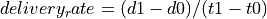
The implementation to estimate delivery rate is a joint work between TcpTxBuffer and TcpRateOps.
For more information, please take a look at their Doxygen documentation.
The TCP subsystem supports automated test
cases on both socket functions and congestion control algorithms. To show
how to write tests for TCP, here we explain the process of creating a test
case that reproduces the Bug #1571.
The bug concerns the zero window situation, which happens when the receiver
cannot handle more data. In this case, it advertises a zero window, which causes
the sender to pause transmission and wait for the receiver to increase the
window.
The sender has a timer to periodically check the receiver’s window: however, in
modern TCP implementations, when the receiver has freed a “significant” amount
of data, the receiver itself sends an “active” window update, meaning that
the transmission could be resumed. Nevertheless, the sender timer is still
necessary because window updates can be lost.
Note
During the text, we will assume some knowledge about the general design
of the TCP test infrastructure, which is explained in detail into the
Doxygen documentation. As a brief summary, the strategy is to have a class
that sets up a TCP connection, and that calls protected members of itself.
In this way, subclasses can implement the necessary members, which will
be called by the main TcpGeneralTest class when events occur. For example,
after processing an ACK, the method ProcessedAck will be invoked. Subclasses
interested in checking some particular things which must have happened during
an ACK processing, should implement the ProcessedAck method and check
the interesting values inside the method. To get a list of available methods,
please check the Doxygen documentation.
We describe the writing of two test cases, covering both situations: the
sender’s zero-window probing and the receiver “active” window update. Our focus
will be on dealing with the reported problems, which are:
an ns-3 receiver does not send “active” window update when its receive buffer
is being freed;
even if the window update is artificially crafted, the transmission does not
resume.
However, other things should be checked in the test:
Persistent timer setup
Persistent timer teardown if rWnd increases
To construct the test case, one first derives from the TcpGeneralTest class:
Then, one should define the general parameters for the TCP connection, which
will be one-sided (one node is acting as SENDER, while the other is acting as
RECEIVER):
Application packet size set to 500, and 20 packets in total (meaning a stream
of 10k bytes)
Segment size for both SENDER and RECEIVER set to 500 bytes
Initial slow start threshold set to UINT32_MAX
Initial congestion window for the SENDER set to 10 segments (5000 bytes)
Congestion control: NewReno
We have also to define the link properties, because the above definition does
not work for every combination of propagation delay and sender application behavior.
Link one-way propagation delay: 50 ms
Application packet generation interval: 10 ms
Application starting time: 20 s after the starting point
To define the properties of the environment (e.g. properties which should be
set before the object creation, such as propagation delay) one next implements
the method ConfigureEnvironment:
For other properties, set after the object creation, one can use
ConfigureProperties ().
The difference is that some values, such as initial congestion window
or initial slow start threshold, are applicable only to a single instance, not
to every instance we have. Usually, methods that requires an id and a value
are meant to be called inside ConfigureProperties (). Please see the Doxygen
documentation for an exhaustive list of the tunable properties.
To see the default value for the experiment, please see the implementation of
both methods inside TcpGeneralTest class.
Note
If some configuration parameters are missing, add a method called
“SetSomeValue” which takes as input the value only (if it is meant to be
called inside ConfigureEnvironment) or the socket and the value (if it is
meant to be called inside ConfigureProperties).
To define a zero-window situation, we choose (by design) to initiate the connection
with a 0-byte rx buffer. This implies that the RECEIVER, in its first SYN-ACK,
advertises a zero window. This can be accomplished by implementing the method
CreateReceiverSocket, setting an Rx buffer value of 0 bytes (at line 6 of the
following code):
Even so, to check the active window update, we should schedule an increase
of the buffer size. We do this at line 7 and 8, scheduling the function
IncreaseBufSize.
Which utilizes the SetRcvBufSize method to edit the RxBuffer object of the
RECEIVER. As said before, check the Doxygen documentation for class TcpGeneralTest
to be aware of the various possibilities that it offers.
Note
By design, we choose to maintain a close relationship between TcpSocketBase
and TcpGeneralTest: they are connected by a friendship relation. Since
friendship is not passed through inheritance, if one discovers that one
needs to access or to modify a private (or protected) member of TcpSocketBase,
one can do so by adding a method in the class TcpGeneralSocket. An example
of such method is SetRcvBufSize, which allows TcpGeneralSocket subclasses
to forcefully set the RxBuffer size.
At time 0.0 s the connection is opened sender side, with a SYN packet sent from
SENDER to RECEIVER
At time 0.05 s the RECEIVER gets the SYN and replies with a SYN-ACK
At time 0.10 s the SENDER gets the SYN-ACK and replies with a SYN.
While the general structure is defined, and the connection is started,
we need to define a way to check the rWnd field on the segments. To this aim,
we can implement the methods Rx and Tx in the TcpGeneralTest subclass,
checking each time the actions of the RECEIVER and the SENDER. These methods are
defined in TcpGeneralTest, and they are attached to the Rx and Tx traces in the
TcpSocketBase. One should write small tests for every detail that one wants to ensure during the
connection (it will prevent the test from changing over the time, and it ensures
that the behavior will stay consistent through releases). We start by ensuring that
the first SYN-ACK has 0 as advertised window size:
voidTcpZeroWindowTest::Tx(constPtr<constPacket>p,constTcpHeader&h,SocketWhowho){...elseif(who==RECEIVER){NS_LOG_INFO("\tRECEIVER TX "<<h<<" size "<<p->GetSize());if(h.GetFlags()&TcpHeader::SYN){NS_TEST_ASSERT_MSG_EQ(h.GetWindowSize(),0,"RECEIVER window size is not 0 in the SYN-ACK");}}....}
Practically, we are checking that every SYN packet sent by the RECEIVER has the
advertised window set to 0. The same thing is done also by checking, in the Rx
method, that each SYN received by SENDER has the advertised window set to 0.
Thanks to the log subsystem, we can print what is happening through messages.
If we run the experiment, enabling the logging, we can see the following:
The output is cut to show the threeway handshake. As we can see from the headers,
the rWnd of RECEIVER is set to 0, and thankfully our tests are not failing.
Now we need to test for the persistent timer, which should be started by
the SENDER after it receives the SYN-ACK. Since the Rx method is called before
any computation on the received packet, we should utilize another method, namely
ProcessedAck, which is the method called after each processed ACK. In the
following, we show how to check if the persistent event is running after the
processing of the SYN-ACK:
voidTcpZeroWindowTest::ProcessedAck(constPtr<constTcpSocketState>tcb,constTcpHeader&h,SocketWhowho){if(who==SENDER){if(h.GetFlags()&TcpHeader::SYN){EventIdpersistentEvent=GetPersistentEvent(SENDER);NS_TEST_ASSERT_MSG_EQ(persistentEvent.IsRunning(),true,"Persistent event not started");}}}
Since we programmed the increase of the buffer size after 10 simulated seconds,
we expect the persistent timer to fire before any rWnd changes. When it fires,
the SENDER should send a window probe, and the receiver should reply reporting
again a zero window situation. At first, we investigates on what the sender sends:
1if(Simulator::Now().GetSeconds()<=6.0) 2{ 3NS_TEST_ASSERT_MSG_EQ(p->GetSize()-h.GetSerializedSize(),0, 4"Data packet sent anyway"); 5} 6elseif(Simulator::Now().GetSeconds()>6.0&& 7Simulator::Now().GetSeconds()<=7.0) 8{ 9NS_TEST_ASSERT_MSG_EQ(m_zeroWindowProbe,false,"Sent another probe");1011if(!m_zeroWindowProbe)12{13NS_TEST_ASSERT_MSG_EQ(p->GetSize()-h.GetSerializedSize(),1,14"Data packet sent instead of window probe");15NS_TEST_ASSERT_MSG_EQ(h.GetSequenceNumber(),SequenceNumber32(1),16"Data packet sent instead of window probe");17m_zeroWindowProbe=true;18}19}
We divide the events by simulated time. At line 1, we check everything that
happens before the 6.0 seconds mark; for instance, that no data packets are sent,
and that the state remains OPEN for both sender and receiver.
Since the persist timeout is initialized at 6 seconds (exercise left for the
reader: edit the test, getting this value from the Attribute system), we need
to check (line 6) between 6.0 and 7.0 simulated seconds that the probe is sent.
Only one probe is allowed, and this is the reason for the check at line 11.
1if(Simulator::Now().GetSeconds()>6.0&&2Simulator::Now().GetSeconds()<=7.0)3{4NS_TEST_ASSERT_MSG_EQ(h.GetSequenceNumber(),SequenceNumber32(1),5"Data packet sent instead of window probe");6NS_TEST_ASSERT_MSG_EQ(h.GetWindowSize(),0,7"No zero window advertised by RECEIVER");8}
For the RECEIVER, the interval between 6 and 7 seconds is when the zero-window
segment is sent.
Other checks are redundant; the safest approach is to deny any other packet
exchange between the 7 and 10 seconds mark.
elseif(Simulator::Now().GetSeconds()>7.0&&Simulator::Now().GetSeconds()<10.0){NS_FATAL_ERROR("No packets should be sent before the window update");}
The state checks are performed at the end of the methods, since they are valid
in every condition:
NS_TEST_ASSERT_MSG_EQ(GetCongStateFrom(GetTcb(SENDER)),TcpSocketState::CA_OPEN,"Sender State is not OPEN");NS_TEST_ASSERT_MSG_EQ(GetCongStateFrom(GetTcb(RECEIVER)),TcpSocketState::CA_OPEN,"Receiver State is not OPEN");
Now, the interesting part in the Tx method is to check that after the 10.0
seconds mark (when the RECEIVER sends the active window update) the value of
the window should be greater than zero (and precisely, set to 2500):
elseif(Simulator::Now().GetSeconds()>=10.0){NS_TEST_ASSERT_MSG_EQ(h.GetWindowSize(),2500,"Receiver window not updated");}
To be sure that the sender receives the window update, we can use the Rx
method:
1if(Simulator::Now().GetSeconds()>=10.0)2{3NS_TEST_ASSERT_MSG_EQ(h.GetWindowSize(),2500,4"Receiver window not updated");5m_windowUpdated=true;6}
We check every packet after the 10 seconds mark to see if it has the
window updated. At line 5, we also set to true a boolean variable, to check
that we effectively reach this test.
Last but not least, we implement also the NormalClose() method, to check that
the connection ends with a success:
The method is called only if all bytes are transmitted successfully. Then, in
the method FinalChecks(), we check all variables, which should be true (which
indicates that we have perfectly closed the connection).
voidTcpZeroWindowTest::FinalChecks(){NS_TEST_ASSERT_MSG_EQ(m_zeroWindowProbe,true,"Zero window probe not sent");NS_TEST_ASSERT_MSG_EQ(m_windowUpdated,true,"Window has not updated during the connection");NS_TEST_ASSERT_MSG_EQ(m_senderFinished,true,"Connection not closed successfully(SENDER)");NS_TEST_ASSERT_MSG_EQ(m_receiverFinished,true,"Connection not closed successfully(RECEIVER)");}
This code magically runs without any reported errors; however, in real cases,
when you discover a bug you should expect the existing test to fail (this
could indicate a well-written test and a bad-written model, or a bad-written
test; hopefully the first situation). Correcting bugs is an iterative
process. For instance, commits created to make this test case running without
errors are 11633:6b74df04cf44, (others to be merged).
ns-3 supports a native implementation of UDP. It provides a connectionless,
unreliable datagram packet service. Packets may be reordered or duplicated before
they arrive. UDP calculates and checks checksums to catch transmission errors.
This implementation inherits from a few common header classes in the src/network
directory, so that user code can swap out implementations with minimal changes to
the scripts.
Here are the important abstract base classes:
class UdpSocket: This is defined in:
src/internet/model/udp-socket.{cc,h}
This is an abstract base class of all UDP sockets. This class exists solely
for hosting UdpSocket attributes that can be reused across different
implementations, and for declaring UDP-specific multicast API.
class UdpSocketImpl: This class subclasses UdpSocket, and
provides a socket interface to ns-3’s implementation of UDP.
class UdpSocketFactory: This is used by the layer-4 protocol
instance to create UDP sockets.
class UdpSocketFactoryImpl: This class is derived from SocketFactory
and implements the API for creating UDP sockets.
class UdpHeader: This class contains fields corresponding to those
in a network UDP header (port numbers, payload size, checksum) as well as methods
for serialization to and deserialization from a byte buffer.
class UdpL4Protocol: This is a subclass of IpL4Protocol and
provides an implementation of the UDP protocol.
This is an implementation of the User Datagram Protocol described in RFC 768.
UDP uses a simple connectionless communication model with a minimum of protocol
mechanism. The implementation provides checksums for data integrity, and port
numbers for addressing different functions at the source and destination of the
datagram. It has no handshaking dialogues, and thus exposes the user’s data to
any unreliability of the underlying network. There is no guarantee of data delivery,
ordering, or duplicate protection.
In many cases, usage of UDP is set at the application layer by telling
the ns-3 application which kind of socket factory to use.
Using the helper functions defined in src/applications/helper, here
is how one would create a UDP receiver:
// Create a packet sink on the receiveruint16_tport=50000;AddresssinkLocalAddress(InetSocketAddress(Ipv4Address::GetAny(),port));PacketSinkHelpersinkHelper("ns3::UdpSocketFactory",sinkLocalAddress);ApplicationContainersinkApp=sinkHelper.Install(serverNode);sinkApp.Start(Seconds(1.0));sinkApp.Stop(Seconds(10.0));
Similarly, the below snippet configures OnOffApplication traffic source to use
UDP:
// Create the OnOff applications to send data to the UDP receiverOnOffHelperclientHelper("ns3::UdpSocketFactory",Address());clientHelper.SetAttribute("Remote",remoteAddress);ApplicationContainerclientApps=(clientHelper.Install(clientNode);clientApps.Start(Seconds(2.0));clientApps.Stop(Seconds(9.0));
For users who wish to have a pointer to the actual socket(so that
socket operations like Bind(), setting socket options, etc. can be
done on a per-socket basis), UDP sockets can be created by using the
Socket::CreateSocket() method as given below:
Once a UDP socket is created, we do not need an explicit connection setup before
sending and receiving data. Being a connectionless protocol, all we need to do
is to create a socket and bind it to a known port. For a client, simply create a
socket and start sending data. The Bind() call allows an application to specify
a port number and an address on the local machine. It allocates a local IPv4
endpoint for this socket.
At the end of data transmission, the socket is closed using the Socket::Close().
It returns a 0 on success and -1 on failure.
Please note that applications usually create the sockets automatically. Please
refer to the source code of your preferred application to discover how and
when it creates the socket.
16.6.2.1.1. UDP Socket interaction and interface with Application layer¶
The following is the description of the public interface of the UDP socket,
and how the interface is used to interact with the socket itself.
Socket APIs for UDP connections:
Connect()
This is called when Send() is used instead of SendTo() by the user.
It sets the address of the remote endpoint which is used by Send(). If the
remote address is valid, this method makes a callback to ConnectionSucceeded.
Bind()
Bind the socket to an address, or to a general endpoint. A general endpoint
is an endpoint with an ephemeral port allocation (that is, a random port
allocation) on the 0.0.0.0 IP address. For instance, in current applications,
data senders usually bind automatically after a Connect() over a random
port. Consequently, the connection will start from this random port towards
the well-defined port of the receiver. The IP 0.0.0.0 is then translated by
lower layers into the real IP of the device.
Bind6()
Same as Bind(), but for IPv6.
BindToNetDevice()
Bind the socket to the specified NetDevice. If set on a socket, this option
will force packets to leave the bound device regardless of the device that IP
routing would naturally choose. In the receive direction, only packets received
from the bound interface will be delivered.
ShutdownSend()
Signals the termination of send, or in other words, prevents data from being added
to the buffer.
Recv()
Grabs data from the UDP socket and forwards it to the application layer. If no
data is present (i.e. m_deliveryQueue.empty() returns 0), an empty packet is
returned.
RecvFrom()
Same as Recv(), but with the source address as parameter.
SendTo()
The SendTo() API is the UDP counterpart of the TCP API Send(). It
additionally specifies the address to which the message is to be sent
because no prior connection is established in UDP communication. It returns
the number of bytes sent or -1 in case of failure.
Close()
The close API closes a socket and terminates the connection. This
results in freeing all the data structures previously allocated.
Public callbacks
These callbacks are called by the UDP socket to notify the application of
interesting events. We will refer to these with the protected name used in
socket.h, but we will provide the API function to set the pointers to these
callback as well.
Called in Connect() when the the remote address validation fails.
NotifyDataSent: SetDataSentCallback
The socket notifies the application that some bytes have been transmitted at
the IP layer. These bytes could still be lost in the node (traffic control
layer) or in the network.
NotifySend: SetSendCallback
Invoked to get the space available in the tx buffer when a packet (that carries
data) is sent.
NotifyDataRecv: SetRecvCallback
Called when the socket receives a packet (that carries data) in the receiver
buffer.
The goal of this module is to hold all the Internet-specific applications,
and most notably some very specific applications (e.g., ping) or daemons (e.g., radvd). Other non-Internet-specific applications such as packet generators
are contained in other modules.
The source code for the new module lives in the directory src/internet-apps.
Each application has its own goals, limitations and scope, which are briefly explained
in the following.
All the applications are extensively used in the top-level examples
directories. The users are encouraged to check the scripts therein to have a
clear overview of the various options and usage tricks.
The Ping application supports both IPv4 and IPv6 and replaces earlier
ns-3 implementations called v4Ping and Ping6 that were
address family dependent. Ping was introduced in the ns-3.38 release cycle.
This application behaves similarly to the Unix ping application, although
with fewer options supported. Ping sends ICMP Echo Request messages to
a remote address, and collects statistics and reports on the ICMP Echo
Reply responses that are received. The application can be used to send
ICMP echo requests to unicast, broadcast, and multicast IPv4 and IPv6
addresses. The application can produce a verbose output similar to the real
application, and can also export statistics and results via trace sources.
The following can be controlled via attributes of this class:
Destination address
Local address (sender address)
Packet size (default 56 bytes)
Packet interval (default 1 second)
Timeout value (default 1 second)
The count, or maximum number of packets to send
Verbose mode
In practice, the real-world ping application behavior varies slightly
depending on the operating system (Linux, macOS, Windows, etc.). Most
implementations also support a very large number of options. The ns-3
model is intended to handle the most common use cases of testing for
reachability.
The aim of ns-3Ping application is to mimic the built-in application
found in most operating systems. In practice, ping is usually used to
check reachability of a destination, but additional options have been
added over time and the tool can be used in different ways to gather
statistics about reachability and round trip times (RTT). Since ns-3 is
mainly used for performance studies and not for operational forensics,
some options of real ping implementations may not be useful for simulations.
However, the ns-3 application can deliver output and RTT samples similar
to how the real application operates.
Ping is usually installed on a source node and does not require any
ns-3 application installation on the destination node. Ping is an
Application that can be started and stopped using the base class
Application APIs.
The behavior of real ping applications varies across operating systems. For
example, on Linux, the first ICMP sequence number sent is one, while on
macOS, the first sequence number is zero. The behavior when pinging
non-existent hosts also can differ (Linux is quiet while macOS is verbose).
Windows and other operating systems like Cisco routers also can behave
slightly differently.
This implementation tries to generally follow the Linux behavior, except
that it will print out a verbose ‘request timed out’ message when an
echo request is sent and no reply arrives in a timely manner. The timeout
value (time that ping waits for a response to return) defaults to one
second, but once there are RTT samples available, the timeout is set
to twice the observed RTT. In contrast to Linux (but aligned with macOS),
the first sequence number sent is zero.
ping implementations have a lot of command-line options. The ns-3
implementation only supports a few of the most commonly-used options;
patches to add additional options would be welcome.
At the present time, fragmentation (sending an ICMP Echo Request larger
than the path MTU) is not handled correctly during Echo Response reassembly.
Users may create and install Ping applications on nodes on a one-by-one
basis using CreateObject or by using the PingHelper. For
CreateObject, the following can be used:
Ptr<Node>n=...;Ptr<Ping>ping=CreateObject<Ping>();// Configure ping as needed...n->AddApplication(ping);
Users should be aware of how this application stops. For most ns-3
applications, StopApplication() should be called before the simulation
is stopped. If the Count attribute of this application is set to
a positive integer, the application will stop (and a report will be printed)
either when Count responses have been received or when StopApplication()
is called, whichever comes first. If Count is zero, meaning infinite
pings, then StopApplication() should be used to eventually stop the
application and generate the report. If StopApplication() is called
while a packet (echo request) is in-flight, the response cannot be
received and the packet will be treated as lost in the report– real
ping applications work this way as well. To avoid this, it is recommended
to call StopApplication() at a time when an Echo Request or Echo Response
packet is not expected to be in flight.
The first statement sets the remote address (destination) for all application
instances created with this helper. The second and third statements perform
further configuration. The fourth statement configures the verbosity to
be totally silent. The fifth statement is a typical Install()
method that returns an ApplicationContainer (in this case, of size 1).
The sixth and seventh statements fetch the application instance created and
configure a trace sink (TracePingRtt) for the Rtt trace source.
The eighth and ninth statements configure the start and stop time,
respectively.
The helper is most useful when there are many similarly configured
applications to install on a collection of nodes (a NodeContainer).
When there is only one Ping application to configure in a program,
or when the configuration between different instances is different,
it may be more straightforward to directly create the Ping applications
without the PingHelper.
If VerboseMode mode is set to VERBOSE, ping will output the results of
ICMP Echo Reply responses to std::cout output stream. If the mode is
set to QUIET, only the initial statement and summary are printed. If the
mode is set to SILENT, no output will be printed to std::cout. These
behavioral differences can be seen with the ping-example.cc as follows:
Additional output can be gathered by using the four trace sources provided
by Ping:
Tx: This trace executes when a new packet is sent, and returns the sequence number and full packet (including ICMP header).
Rtt: Each time an ICMP echo reply is received, this trace is called and reports the sequence number and RTT.
Drop: If an ICMP error is returned instead of an echo reply, the sequence number and reason for reported drop are returned.
Report: When ping completes and exits, it prints output statistics to the terminal. These values are copied to a structPingReport and returned in this trace source.
A basic ping-example.cc program is provided to highlight the following
usage. The topology has three nodes interconnected by two point-to-point links.
Each link has 5 ms one-way delay, for a round-trip propagation delay
of 20 ms. The transmission rate on each link is 100 Mbps. The routing
between links is enabled by ns-3’s NixVector routing.
By default, this program will send 5 pings from node A to node C.
When using the default IPv6, the output will look like this:
The example program will also produce four pcap traces (one for each
NetDevice in the scenario) that can be viewed using tcpdump or Wireshark.
Other program options include options to change the destination and
source addresses, number of packets (count), packet size, interval,
and whether to enable logging (if logging is enabled in the build).
These program options will override any corresponding attribute settings.
Finally, the program has some code that can be enabled to selectively
force packet drops to check such behavior.
This app mimics a “RADVD” daemon. I.e., the daemon responsible for IPv6 routers
advertisements. All the IPv6 routers should have a RADVD daemon installed.
The configuration of the Radvd application mimics the one of the radvd Linux program.
The server should be provided with a network address, mask and a range of address
for the pool. One client application can be installed on only one netdevice in a
node, and can configure address for only that netdevice.
The following five basic DHCP messages are supported:
DHCP DISCOVER
DHCP OFFER
DHCP REQUEST
DHCP ACK
DHCP NACK
Also, the following eight options of BootP are supported:
1 (Mask)
50 (Requested Address)
51 (Address Lease Time)
53 (DHCP message type)
54 (DHCP server identifier)
58 (Address renew time)
59 (Address rebind time)
255 (end)
The client identifier option (61) can be implemented in near future.
In the current implementation, a DHCP client can obtain IPv4 address dynamically
from the DHCP server, and can renew it within a lease time period.
Multiple DHCP servers can be configured, but the implementation does not support
the use of a DHCP Relay yet.
This module contains a series of classes and examples aimed at modeling the
modulation and medium access technology of a LoRaWAN network. Thanks to a simple
underlying physical layer model and to the regulations imposed on traffic in the
unlicensed bands this technology operates on, this module can support
simulations featuring a large number of devices that access the wireless channel
infrequently.
The following parts of this documentation first outline how the technology works
and then describe how it was translated into a system of classes in order to
simulate a LoRaWAN system.
LoRaWAN is a Low Power Wide Area Network (LPWAN) technology built on the LoRa
modulation. This technology allows a large number of devices to communicate
wirelessly over long distances (in the order of 5-15 km, depending on the
propagation environment) at low data rates. The typical scenario in which this
technology is expected to be employed is that of an IoT network, where devices
need to communicate sparsely and only need short payloads to transmit
some information coming from, typically, a sensor.
The basis of LoRaWAN is the proprietary Long Range (LoRa) modulation, owned by
Semtech. This modulation, based on Chirp Spread Spectrum (CSS), spreads a signal
over a certain band by leveraging a chirp signal that scans the available
bandwidth linearly.
One of the key parameters of the modulation is the Spreading Factor (SF): this
value, ranging from 7 to 12, expresses how much a packet is spread in time
(i.e., how long it takes for a chirp to complete a complete scan of the
available bandwidth). Transmissions using a low SF need a lower Time on Air
(ToA) (assuming the same bandwidth) than packets using SF values closer to 12.
The advantage of using higher SFs is in the increased sensitivity of the
receiver: as an example, a transmission using SF7 that cannot be detected by a
LoRa receiver may be correctly demodulated if performed using SF12. Another
key feature of the modulation is the quasi-orthogonality between transmissions
using different SF values: even if two packets overlap in time, a receiver may
still be able to demodulate one of the packets, assuming that they are using
different SF and that some restrictions on their reciprocal power are respected.
More details on how the modulation works can be found in
[semtech2015modulation] (an official document explaining the modulation) and in
[knight2016reversing] (a reverse engineering of the modulation by Matt Knight).
The LoRa Alliance first defined the LoRaWAN standard in [lorawanstandard],
with the objective of creating a medium access scheme and a set of network
management policies that leverage the properties of the modulation to achieve
good network performance at a low price in the complexity of the devices.
The topology of a LoRaWAN network is represented in the figure
Topology of the LoRaWAN architecture., where dotted lines represent a LoRa wireless link while
solid lines are other kinds of high throughput, high reliability connections. It
can be seen that there are three kinds of devices in a LoRaWAN network: End
Devices (EDs), Gateways (GWs) and a Network Server (NS). End Devices are basic
network nodes: typically inexpensive, they are constrained by low computational
capabilities and are usually powered by a battery. Gateways are high-end, mains
powered devices that are tasked with collecting the data transmitted by End
Devices leveraging the LoRa modulation. After a packet is correctly received, it
is forwarded to the Network Server via a link with high reliability and speed.
The Network Server functions as a sink for data coming from all devices, and as
a controller of the network that can leverage some MAC commands to change
transmission settings in the End Devices.
End Devices of the most basic type are defined as Class A devices, and are
currently the only kind of device supported by this module. Class A devices
perform transmission in a totally asynchronous way, and open two receive windows
of fixed duration after each transmission to allow the Network Server to
transmit acknowledgments or MAC commands.
Another important characteristic of the standard is that it is defined to work
on unlicensed bands in various regions, which usually subject transmitters to
regulations on duty cycle. This fact will be explained in greater detail in the
MAC layer model section of this document.
This module comprises two main models: one for the LoRa PHY layer that needs to
represent LoRa chips and the behavior of LoRa transmissions, and one for the
LoRaWAN MAC layer, that needs to behave according to the official
specifications.
To represent these two models, the module features two generic LoraPhy and
LorawanMac base classes. These classes are then extended by classes that
model the peculiarities of the two wireless network devices: the End Device (ED)
and the Gateway (GW). So, the PHY layers can be modeled by use of
EndDeviceLoraPhy and GatewayLoraPhy classes, while objects of class
EndDeviceLorawanMac, ClassAEndDeviceLorawanMac, and GatewayLorawanMac
are used to represent the MAC layer. A NetworkServer application can also be
installed on a node that will then administer the wireless network through the
GW’s forwarding application, Forwarder, which leverages the gateway’s LoRa
communication capabilities to forward to End Devices the Network Server’s
packets.
The model for the PHY layer needs to take into account the two key factors of
LoRa, sensitivity and orthogonality, to decide whether a transmission is
received correctly or not. Besides, it also needs to be aware of how the chips
implementing the modulation work, and of their architecture.
The link model takes into account three main components to determine the
performance of a LoRa transmission:
Data about device sensitivity taken from device datasheets;
A model to account for the interference between different LoRa transmissions;
A series of assumptions regarding this interference model.
In this section, we will describe each portion of the model with a particular
focus on its implementation in the code.
The LoraChannel class is used to interconnect the LoRa PHY layers of all
devices wishing to communicate using this technology. The class holds a list of
connected PHY layers, and notifies them about incoming transmissions, following
the same paradigm of other Channel classes in ns-3.
PHY layers that are connected to the channel expose a public StartReceive
method that allows the channel to start reception at a certain PHY. At this
point, these PHY classes rely on a LoraInterferenceHelper object to keep
track of all incoming packets, both as potentially desirable packets and as
interference. Once the channel notifies the PHY layer of the incoming packet,
the PHY informs its LoraInterferenceHelper right away of the incoming
transmission. After this, if a PHY fills certain prerequisites, it can lock on
the incoming packet for reception. In order to do so:
The receiver must be idle (in STANDBY state) when the StartReceive
function is called;
The packet receive power must be above a sensitivity threshold;
The receiver must be listening on the correct frequency;
The receiver must be listening for the correct SF.
The sensitivity threshold that is currently implemented can be seen below
(values in dBm):
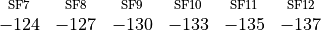
After the PHY layer locks on the incoming packet, it schedules an EndReceive
function call after the packet duration. The reception power is considered to be
constant throughout the packet reception process. When reception ends,
EndReceive calls the IsDestroyedByInterference method of the PHY’s
instance of LoraInterferenceHelper to determine whether the packet is lost
due to interference.
The IsDestroyedByInterference function compares the desired packet’s
reception power with the interference energy of packets that overlap with it on
a SF basis, and compares the obtained SIR value against the isolation matrix
that was tabulated in [goursaud2015dedicated] and reproduced below. For
example, if the desired packet is using SF7, and it is (even partially)
overlapped to two packets using SF10, the desired signal’s energy (computed as
the product of reception power and signal duration) is compared to the summed
energy of the two interferers (computed as the product of the interferer’s power
at the receiver and overlap time). The ratio between the desired and the
interference energy from each spreading factor (considered separately) is then
compared to the table below, in which rows identify the desired signal’s SF,
while columns represent the interfering SF that is currently being considered.
If the SIR is above the tabulated threshold, the packet is received correctly
and forwarded to the MAC layer.
The chip installed on LoRa GWs needs special attention because of its
architecture: since it is characterized by the presence of 8 parallel receive
paths, it can receive multiple packets in parallel [sx1301]. This
behavior is represented in the simulator through a ReceptionPath object that
behaves as an EndDeviceLoraPhy, locking into incoming packets and comparing
them to others to determine correct reception by using the gateway’s
LoraInterferenceHelper instance. A GatewayLoraPhy, then, is essentially
a manager of this collection of ReceptionPath objects. Upon arrival of a
packet, the gateway picks a free reception path (if there are any), marks it as
occupied and locks it into the incoming packet. Once the scheduled
EndReceive method is executed, the gateway’s LoraInterferenceHelper
(which contains information used by all ReceptionPaths) is queried, and it
is decided whether the packet is correctly received or not.
Some further assumptions on the collaboration behavior of these reception paths
were made to establish a consistent model despite the SX1301 gateway chip
datasheet not going into full detail on how the chip administers the available
reception paths:
Receive paths can be configured to listen for incoming packets on any
frequency;
Receive paths can be allocated freely on the available frequencies;
Receive paths don’t need to be pre-configured to listen for a certain
spreading factor (thus, point 4 of the prerequisites stated above for End
Devices doesn’t apply);
If a packet is incoming and multiple receive paths are listening for the same
channel, only one locks into the incoming packet;
If all reception paths listening on a channel are locked into an incoming
packet and another packet arrives, the new packet is immediately marked as
lost.
The MAC models contained in this module aim at implementing the LoRaWAN
standard. To facilitate this task, a series of side classes were created to
handle headers, MAC commands, logical channels and duty cycle computations.
Furthermore, a simplified version of a Network Server (NS) is also provided in
the form of an application that can be installed on a ns-3Node and
connected to the GWs via a PointToPoint link to also simulate a backbone
channel.
18.2.2.1. Headers, MAC commands and addressing system¶
The packet structure defined by the LoRaWAN standard is implemented through two
classes that extend the Header class: LorawanMacHeader and
LoraFrameHeader. In particular, LoraFrameHeader can include MAC commands
by leveraging the MacCommand and LoraDeviceAddress classes, that are
used to make serialization, deserialization and interpretation of MAC commands
and the LoRaWAN address system easier.
MAC commands are implemented by extending the MacCommand class. Each child
class is used to define a set of command variables, methods to serialize and
deserialize the commands inside a LoraFrameHeader, and callbacks to the MAC
layer to perform actions. This structure can facilitate the implementation and
testing of custom MAC commands, as allowed by the specification.
The LoraDeviceAddress class is used to represent the address of a LoRaWAN
ED, and to handle serialization and deserialization.
Since LoRaWAN operates in unlicensed bands that are subject to restrictions on
duty cycle, a series of objects were created to keep track of available
transmission time and limit transmission at the MAC layer in case the layers
above aren’t aware of these limitations. A LogicalLoraChannelHelper is
assigned to each LorawanMac instance, and is tasked with keeping track of all
available logical channels (which can be added and modified with MAC commands,
and are represented by the LogicalLoraChannel class) and is aware of the
sub-band they are in (through instances of the SubBand class).
Additionally, in order to enforce duty cycle limitations, this object also
registers all transmissions that are performed on each channel, and can be
queried by the LorawanMac instance to know the next time in which transmission
will be possible according to the regulation. If a transmission of duration
is performed by the device on a channel where the duty cycle
expressed in fractional form is , the time the device needs to
stay off is computed according to the following formula:
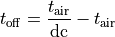
This time is kept track of on a sub band basis, so that if two channels are
under the same regulation, a transmission on one of them will also block the
other one.
The NetworkServer is an application which is running on a node that is
connected to the simulation GWs. The GWs forward incoming LoRa packets to the
NS, and expect to be given packets to transmit in the downlink to EDs by the NS.
In order to keep track of all players in the network, the NS keeps two lists of
DeviceStatus and GatewayStatus objects, which represent the current
status of each ED and GW in the network, respectively. These objects are used to
keep track of downlink packets that will need to be sent during the ED’s receive
windows, and they also hold pointers to the Mac layer instances of each GW. This
is done in order to be able to perform queries on the gateway’s current duty
cycle limitations and always forward downlink packets to gateways that will be
able to transmit the packet in the LoRa network. The current iteration of the
Network Server only sends downlink packets to devices that require an
acknowledgment, ignoring the contents of the packet and of MAC commands it may
contain. Transmission is performed on the first receive window whenever
possible, and the second receive window is used only when no more resources are
available to leverage the first chance to respond to the device. More complex
and realistic NS behaviors are definitely possible, however they also come at a
complexity cost that is non-negligible.
Since the LoraChannel class can only be connected to LoRa PHY layers, the
model is currently unable to account for interference by other technologies.
It’s expected that it will become possible, in the future, to handle
inter-protocol interference by leveraging the SpectrumChannel class, once
more accurate models of how interference affects LoRa signals become available.
Interference between partially overlapping channels is not checked for.
Furthermore, there currently is no model to account for interference between
signals using different bandwidths.
The current implementation of the Network Server tries to provide a general
structure to handle EDs and GWs in a network, but still lacks some possibly
complex code to simulate advanced features like different Adaptive Data Rate
(ADR) algorithms, responding to the ED’s MAC commands and supporting join
procedures. Other limitations of the Network Server is that it doesn’t employ a
protocol to communicate with the Gateways (since no official ones exist), and
that it informs the gateway in real time about downlink messages it needs to
send (in other words, no “booking” of the gateway resource is done in advance,
and downlink packets take priority over incoming packets at the gateway).
As of now, the Network Server implementation should be considered as an
experimental feature, prone to yet undiscovered bugs.
Since LoRaWAN parameters like default channel lineup and MAC command
interpretations vary based on the operational region of the network,
LorawanMacHelper includes methods to specify the region. While the current
implementation is predisposed to support different configurations of the network
based on the region it’s meant to be operating in, currently only the EU region
using the 868 MHz sub band is supported.
A typical usage of the model follows some typical ns-3 paradigms, like the
usage of helpers to configure a complex network. This section illustrates the
setup of a LoRaWAN network using the module and some other side classes that
weren’t described in the previous sections because they are mainly used to
configure the network.
The lorawan module features helpers to configure the PHY and MAC layers on a
large number of devices. The two layers are split in two different classes,
LorawanMacHelper and LoraPhyHelper, which can be leveraged by a
LoraHelper object to fully configure a LoRa device (both for EDs and for
GWs). Since the helpers are general purpose (i.e., they can be used both for ED
and GW configuration), it is necessary to specify the device type via the
SetDeviceType method before the Install method can be called.
The LorawanMacHelper also exposes a method to set up the Spreading Factors used
by the devices participating in the network automatically, based on the channel
conditions and on the placement of devices and gateways. This procedure is
contained in the static method SetSpreadingFactorsUp, and works by trying to
minimize the time-on-air of packets, thus assigning the lowest possible
spreading factor such that reception by at least one gateway is still possible.
It should be noted that this is an heuristic, and that it doesn’t guarantee that
the SF distribution is optimal for the best possible operation of the network.
In fact, finding such a distribution based on the network scenario is still an
open challenge.
Currently, the following attributes are available:
Interval and PacketSize in PeriodicSender determine the interval
between packet sends of the application, and the size of the packets that are
generated by the application.
Various trace sources can be used to keep track of events throughout the
simulation, mainly regarding the lifetime of a packet. At the PHY layer, the
following trace sources are exposed:
In LoraPhy (both EndDeviceLoraPhy and GatewayLoraPhy):
StartSending, fired when a PHY layer begins transmitting a packet;
PhyRxBegin, fired when a PHY layer becomes locked on a packet;
PhyRxEnd, fired when a PHY’s reception of a packet ends;
ReceivedPacket, fired when a packet is correctly received;
LostPacketBecauseInterference, fired when a packet is lost because of
interference from other transmissions;
LostPacketBecauseUnderSensitivity, fired when a PHY cannot lock on a
packet because it’s being received with a power below the device sensitivity;
In EndDeviceLoraPhy:
LoraPacketBecauseWrongFrequency is fired when an incoming packet is
using a frequency that is different from that on which the PHY is listening;
LoraPacketBecauseWrongSpreadingFactor is fired when an incoming packet
is using a SF that is different from that for which the PHY is listening;
EndDeviceState is used to keep track of the state of the device’s PHY
layer.
In GatewayLoraPhy:
LostPacketBecauseNoMoreReceivers is fired when a packet is lost because
no more receive paths are available to lock onto the incoming packet;
OccupiedReceptionPaths is used to keep track of the number of occupied
reception paths out of the 8 that are available at the gateway;
In LorawanMac (both EndDeviceLorawanMac and GatewayLorawanMac):
CannotSendBecauseDutyCycle is used to keep track of the number of when a
packet coming from the application layer cannot be sent on any of the
available channels because of duty cycle limitations;
In EndDeviceLorawanMac:
DataRate keeps track of the data rate that is employed by the device;
LastKnownLinkMargin keeps track of the last link margin of this device’s
uplink transmissions; This information is gathered through the LinkCheck
MAC commands;
LastKnownGatewayCount keeps track of the last known number of gateways
that this device is able to reach; This information is gathered through the
LinkCheck MAC commands;
AggregatedDutyCycle keeps track of the currently set aggregated duty
cycle limitations;
PacketSent in LoraChannel is fired when a packet is sent on the channel;
This example is used to showcase how wireless communication between a device and
a gateway happens: one LoRa ED is configured to send a packet, and a GW receives
it. When logging is enabled, the various steps that are needed to send a packet
from the APP layer of an ED to the MAC layer of a GW can be observed.
This example builds on the simple-lorawan-network-example to add a Network
Server and multiple EDs and GWs to the scenario. This example works as a
showcase for how communication between the End Devices and the Network Server
happens.
This example shows how to configure a whole LoRaWAN network using the ns-3lorawan module. A big network featuring several thousand devices and tens of
gateways is built, and each device is equipped with a PeriodicSender
application that periodically sends a packet to the NetworkServer through the
Gateways. The example keeps track of the sent and received packets, and computes
some statistics at the end of the simulation. No Network Server is used in this
simulation, since performance metrics are collected through the GW trace sources
and packets don’t require an acknowledgment.
D. Magrin, M. Centenaro and L. Vangelista,
Performance Evaluation of LoRa Networks in a Smart
City Scenario, in Proc. of the IEEE International
Conference on Communications, May 2017.
N. Sornin, M. Luis, T. Eirich, T. Kramp, and O. Hersent,
LoRaWAN Specifications, LoRa Alliance, Tech. Rep., 2015.
PageBreak
19. Low-Rate Wireless Personal Area Network (LR-WPAN)¶
This chapter describes the implementation of ns-3 models for the
low-rate, wireless personal area network (LR-WPAN) as specified by
IEEE standard 802.15.4 (2003,2006,2011).
The APIs closely follow the standard, adapted for ns-3 naming conventions
and idioms. The APIs are organized around the concept of service primitives
as shown in the following figure adapted from Figure 14 of
IEEE Std. 802.15.4-2006.
The MAC at present implements both, the unslotted CSMA/CA (non-beacon mode) and
the slotted CSMA/CA (beacon-enabled mode). The beacon-enabled mode supports only
direct transmissions. Indirect transmissions and Guaranteed Time Slots (GTS) are
currently not supported.
The present implementation supports a single PAN coordinator, support for additional
coordinators is under consideration for future releases.
The implemented MAC is similar to Contiki’s NullMAC, i.e., a MAC without sleep
features. The radio is assumed to be always active (receiving or transmitting),
of completely shut down. Frame reception is not disabled while performing the
CCA.
The main API supported is the data transfer API
(McpsDataRequest/Indication/Confirm). CSMA/CA according to Stc 802.15.4-2006,
section 7.5.1.4 is supported. Frame reception and rejection according to
Std 802.15.4-2006, section 7.5.6.2 is supported, including acknowledgements.
Only short addressing completely implemented. Various trace sources are
supported, and trace sources can be hooked to sinks.
The implemented ns-3 MAC supports scanning. Typically, a scanning request is preceded
by an association request but these can be used independently.
IEEE 802.15.4 supports 4 types of scanning:
Energy Detection (ED) Scan: In an energy scan, a device or a coordinator scan a set number of channels looking for traces of energy. The maximum energy registered during a given amount of time is stored. Energy scan is typically used to measure the quality of a channel at any given time. For this reason, coordinators often use this scan before initiating a PAN on a channel.
Active Scan: A device sends beaconrequestcommands on a set number of channels looking for a PAN coordinator. The receiving coordinator must be configured on non-beacon mode. Coordinators on beacon-mode ignore these requests. The coordinators who accept the request, respond with a beacon. After an active scan take place, during the association process devices extract the information in the PAN descriptors from the collected beacons and based on this information (e.g. channel, LQI level), choose a coordinator to associate with.
Passive Scan: In a passive scan, no beaconrequestscommands are sent. Devices scan a set number of channels looking for beacons currently being transmitted (coordinators in beacon-mode). Like in the active scan, the information from beacons is stored in PAN descriptors and used by the device to choose a coordinator to associate with.
Orphan Scan: Orphan scan is used typically by device as a result of repeated communication failure attempts with a coordinator. In other words, an orphan scan represents the intent of a device to relocate its coordinator. In some situations, it can be used by devices higher layers to not only rejoin a network but also join a network for the first time. In an orphan scan, a device send a orphannotificationcommand to a given list of channels. If a coordinator receives this notification, it responds to the device with a coordinatorrealignmentcommand.
In active and passive scans, the link quality indicator (LQI) is the main parameter used to
determine the optimal coordinator. LQI values range from 0 to 255. Where 255 is the highest quality link value and 0 the lowest. Typically, a link lower than 127 is considered a link with poor quality.
In LR-WPAN, association is used to join or leave PANs. All devices in LR-WPAN must belong to a PAN to communicate. ns-3 uses a classic association procedure described in the standard. The standard also covers a more effective association procedure known as fast association (See IEEE 802.15.4-2015, fastA) but this association is currently not supported by ns-3. Alternatively, ns-3 can do a “quick and dirty” association using either `LrWpanHelper::AssociateToPan` or `LrWpanHelper::AssociateToBeaconPan`. These functions are used when a preset association can be done. For example, when the relationships between existing nodes and coordinators are known and can be set before the beginning of the simulation. In other situations, like in many networks in real deployments or in large networks, it is desirable that devices “associate themselves” with the best possible available coordinator candidates. This is a process known as bootstrap, and simulating this process makes it possible to demonstrate the kind of situations a node would face in which large networks to associate in real environment.
Bootstrap (a.k.a. network initialization) is possible with a combination of scan and association MAC primitives. Details on the general process for this network initialization is described in the standard. Bootstrap is a complex process that not only requires the scanning networks, but also the exchange of command frames and the use of a pending transaction list (indirect transmissions) in the coordinator to store command frames. The following summarizes the whole process:
Bootstrap as whole depends on procedures that also take place on higher layers of devices and coordinators. These procedures are briefly described in the standard but out of its scope (See IEE 802.15.4-2011 Section 5.1.3.1.). However, these procedures are necessary for a “complete bootstrap” process. In the examples in ns-3, these high layer procedures are only briefly implemented to demonstrate a complete example that shows the use of scan and association. A full high layer (e.g. such as those found in Zigbee and Thread protocol stacks) should complete these procedures more robustly.
By default, Txqueue and IndTxqueue (the pending transaction list) are not limited but they can configure to drop packets after they
reach a limit of elements (transaction overflow). Additionally, the IndTxqueue drop packets when the packet has been longer than
macTransactionPersistenceTime (transaction expiration). Expiration of packets in the Tx queue is not supported.
Finally, packets in the Txqueue may be dropped due to excessive transmission retries or channel access failure.
The physical layer components consist of a Phy model, an error rate model,
and a loss model. The PHY state transitions are roughly model after
ATMEL’s AT86RF233.
Ns-3 lr-wpan PHY basic operating mode state diagram¶
The error rate model presently models the error rate
for IEEE 802.15.4 2.4 GHz AWGN channel for OQPSK; the model description can
be found in IEEE Std 802.15.4-2006, section E.4.1.7. The Phy model is
based on SpectrumPhy and it follows specification described in section 6
of IEEE Std 802.15.4-2006. It models PHY service specifications, PPDU
formats, PHY constants and PIB attributes. It currently only supports
the transmit power spectral density mask specified in 2.4 GHz per section
6.5.3.1. The noise power density assumes uniformly distributed thermal
noise across the frequency bands. The loss model can fully utilize all
existing simple (non-spectrum phy) loss models. The Phy model uses
the existing single spectrum channel model.
The physical layer is modeled on packet level, that is, no preamble/SFD
detection is done. Packet reception will be started with the first bit of the
preamble (which is not modeled), if the SNR is more than -5 dB, see IEEE
Std 802.15.4-2006, appendix E, Figure E.2. Reception of the packet will finish
after the packet was completely transmitted. Other packets arriving during
reception will add up to the interference/noise.
Rx sensitivity is defined as the weakest possible signal point at which a receiver can receive and decode a packet with a high success rate.
According to the standard (IEEE Std 802.15.4-2006, section 6.1.7), this
corresponds to the point where the packet error rate is under 1% for 20 bytes PSDU
reference packets (11 bytes MAC header + 7 bytes payload (MSDU) + FCS 2 bytes). Setting low Rx sensitivity values (increasing the radio hearing capabilities)
have the effect to receive more packets (and at a greater distance) but it raises the probability to have dropped packets at the
MAC layer or the probability of corrupted packets. By default, the receiver sensitivity is set to the maximum theoretical possible value of -106.58 dBm for the supported IEEE 802.15.4 O-QPSK 250kps.
This rx sensitivity is set for the “perfect radio” which only considers the floor noise, in essence, this do not include the noise factor (noise introduced by imperfections in the demodulator chip or external factors).
The receiver sensitivity can be changed to different values using SetRxSensitivity function in the PHY to simulate the hearing capabilities of different compliant radio transceivers (the standard minimum compliant Rx sensitivity is -85 dBm).:
The example lr-wpan-per-plot.cc`showsthatatgivenRxsensitiviy,packetsaredroppedregardlessoftheirtheoreticalerrorprobability.Thisprogramoutputsafilenamed``802.15.4-per-vs-rxSignal.plt.
Loading this file into gnuplot yields a file 802.15.4-per-vs-rsSignal.eps, which can
be converted to pdf or other formats. Packet payload size, Tx power and Rx sensitivity can be configurated.
The point where the blue line crosses with the PER indicates the Rx sensitivity. The default output is shown below.
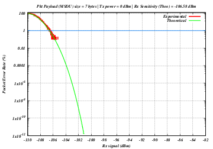
Default output of the program lr-wpan-per-plot.cc¶
Although it is expected that other technology profiles (such as
6LoWPAN and ZigBee) will write their own NetDevice classes, a basic
LrWpanNetDevice is provided, which encapsulates the common operations
of creating a generic LrWpan device and hooking things together.
Contrary to other technologies, a IEEE 802.15.4 has 2 different kind of addresses:
Long addresses (64 bits)
Short addresses (16 bits)
The 64-bit addresses are unique worldwide, and set by the device vendor (in a real device).
The 16-bit addresses are not guaranteed to be unique, and they are typically either assigned
during the devices deployment, or assigned dynamically during the device bootstrap.
The other relevant “address” to consider is the PanId (16 bits), which represents the PAN
the device is attached to.
Due to the limited number of available bytes in a packet, IEEE 802.15.4 tries to use short
addresses instead of long addresses, even though the two might be used at the same time.
For the sake of communicating with the upper layers, and in particular to generate auto-configured
IPv6 addresses, each NetDevice must identify itself with a MAC address. The MAC addresses are
also used during packet reception, so it is important to use them consistently.
Focusing on IPv6 Stateless address autoconfiguration (SLAAC), there are two relevant RFCs to
consider: RFC 4944 and RFC 6282, and the two differ on how to build the IPv6 address given
the NetDevice address.
RFC 4944 mandates that the IID part of the IPv6 address is calculated as YYYY:00ff:fe00:XXXX,
while RFC 6282 mandates that the IID part of the IPv6 address is calculated as 0000:00ff:fe00:XXXX
where XXXX is the device short address, and YYYY is the PanId.
In both cases the U/L bit must be set to local, so in the RFC 4944 the PanId might have one bit flipped.
In order to facilitate interoperability, and to avoid unwanted module dependencies, the ns-3
implementation moves the IID calculation in the LrWpanNetDevice::GetAddress(), which will
return an Address formatted properly, i.e.:
The Long address (a Mac64Address) if the Short address has not been set, or
A properly formatted 48-bit pseudo-address (a Mac48Address) if the short address has been set.
The 48-bit pseudo-address is generated according to either RFC 4944 or RFC 6282 depending on the
configuration of an Attribute (PseudoMacAddressMode).
The default is to use RFC 6282 style addresses.
Note that, on reception, a packet might contain either a short or a long address. This is reflected
in the upper-layer notification callback, which can contain either the pseudo-address (48 bits) or
the long address (64 bit) of the sender.
Note also that RFC 4944 or RFC 6282 are the RFCs defining the IPv6 address compression formats
(HC1 and IPHC respectively). It is defintely not a good idea to either mix devices using different
pseudo-address format or compression types in the same network. This point is further discussed
in the sixlowpan module documentation.
Future versions of this document will contain a PICS proforma similar to
Appendix D of IEEE 802.15.4-2006. The current emphasis is on direct transmissions
running on both, slotted and unslotted mode (CSMA/CA) of 802.15.4 operation for use in Zigbee.
Indirect data transmissions are not supported but planned for a future update.
Devices are capable of associating with a single PAN coordinator. Interference is modeled as AWGN but this is currently not thoroughly tested.
The standard describes the support of multiple PHY band-modulations but currently, only 250kbps O-QPSK (channel page 0) is supported.
Active and passive MAC scans are able to obtain a LQI value from a beacon frame, however, the scan primitives assumes LQI is correctly implemented and does not check the validity of its value.
Configuration of the ED thresholds are currently not supported.
Coordinator realignment command is only supported in orphan scans.
Wireless Medium Access Control (MAC) and Physical Layer (PHY) Specifications for Low-Rate Wireless Personal Area Networks (WPANs), IEEE Computer Society, IEEE Std 802.15.4-2006, 8 September 2006.
IEEE Standard for Local and metropolitan area networks–Part 15.4: Low-Rate Wireless Personal Area Networks (LR-WPANs),” in IEEE Std 802.15.4-2011 (Revision of IEEE Std 802.15.4-2006) , vol., no., pp.1-314, 5 Sept. 2011, doi: 10.1109/IEEESTD.2011.6012487.
Zheng and Myung J. Lee, “A comprehensive performance study of IEEE 802.15.4,” Sensor Network Operations, IEEE Press, Wiley Interscience, Chapter 4, pp. 218-237, 2006.
Alberto Gallegos Ramonet and Taku Noguchi. 2020. LR-WPAN: Beacon Enabled Direct Transmissions on Ns-3. In 2020 the 6th International Conference on Communication and Information Processing (ICCIP 2020). Association for Computing Machinery, New York, NY, USA, 115–122. https://doi.org/10.1145/3442555.3442574.
The helper is patterned after other device helpers. In particular,
tracing (ascii and pcap) is enabled similarly, and enabling of all
lr-wpan log components is performed similarly. Use of the helper
is exemplified in examples/lr-wpan-data.cc. For ascii tracing,
the transmit and receive traces are hooked at the Mac layer.
The default propagation loss model added to the channel, when this helper
is used, is the LogDistancePropagationLossModel with default parameters.
The following examples have been written, which can be found in src/lr-wpan/examples/:
lr-wpan-data.cc: A simple example showing end-to-end data transfer.
lr-wpan-error-distance-plot.cc: An example to plot variations of the packet success ratio as a function of distance.
lr-wpan-per-plot.cc: An example to plot the theoretical and experimental packet error rate (PER) as a function of receive signal.
lr-wpan-error-model-plot.cc: An example to test the phy.
lr-wpan-packet-print.cc: An example to print out the MAC header fields.
lr-wpan-phy-test.cc: An example to test the phy.
lr-wpan-ed-scan.cc: Simple example showing the use of energy detection (ED) scan in the MAC.
lr-wpan-active-scan.cc: A simple example showing the use of an active scan in the MAC.
lr-wpan-mlme.cc: Demonstrates the use of lr-wpan beacon mode. Nodes use a manual association (i.e. No bootstrap) in this example.
lr-wpan-bootstrap.cc: Demonstrates the use of scanning and association working together to initiate a PAN.
lr-wpan-orphan-scan.cc: Demonstrates the use of an orphan scanning in a simple network joining procedure.
In particular, the module enables a very simplified end-to-end data
transfer scenario, implemented in lr-wpan-data.cc. The figure
shows a sequence of events that are triggered when the MAC receives
a DataRequest from the higher layer. It invokes a Clear Channel
Assessment (CCA) from the PHY, and if successful, sends the frame
down to the PHY where it is transmitted over the channel and results
in a DataIndication on the peer node.
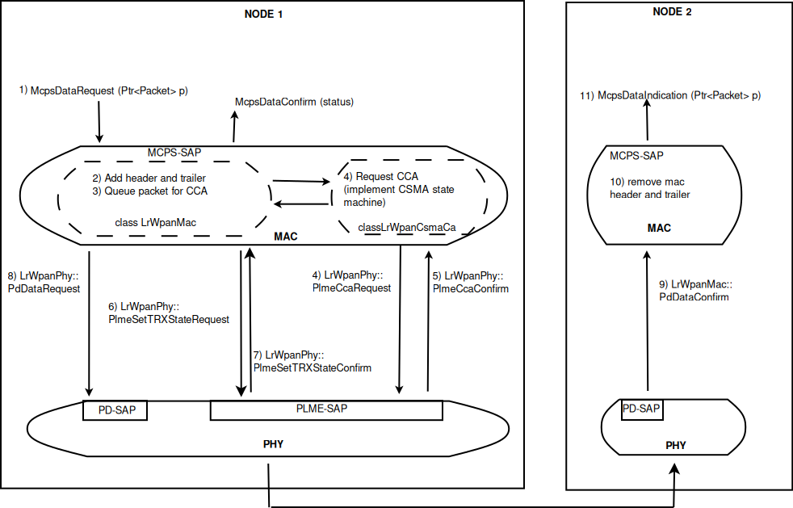
Data example for simple LR-WPAN data transfer end-to-end¶
The example lr-wpan-error-distance-plot.cc plots the packet success
ratio (PSR) as a function of distance, using the default LogDistance
propagation loss model and the 802.15.4 error model. The channel (default 11),
packet size (default PSDU 20 bytes = 11 bytes MAC header + data payload), transmit power (default 0 dBm)
and Rx sensitivity (default -106.58 dBm) can be varied by command line arguments.
The program outputs a file named 802.15.4-psr-distance.plt.
Loading this file into gnuplot yields a file 802.15.4-psr-distance.eps, which can
be converted to pdf or other formats. The following image shows the output
of multiple runs using different Rx sensitivity values. A higher Rx sensitivity (lower dBm) results
in a increased communication distance but also makes the radio suceptible to more interference from
surronding devices.
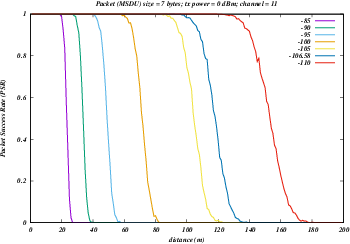
Default output of the program lr-wpan-error-distance-plot.cc¶
The following tests have been written, which can be found in src/lr-wpan/tests/:
lr-wpan-ack-test.cc: Check that acknowledgments are being used and issued in the correct order.
lr-wpan-collision-test.cc: Test correct reception of packets with interference and collisions.
lr-wpan-error-model-test.cc: Check that the error model gives predictable values.
lr-wpan-packet-test.cc: Test the 802.15.4 MAC header/trailer classes
lr-wpan-pd-plme-sap-test.cc: Test the PLME and PD SAP per IEEE 802.15.4
lr-wpan-spectrum-value-helper-test.cc: Test that the conversion between power (expressed as a scalar quantity) and spectral power, and back again, falls within a 25% tolerance across the range of possible channels and input powers.
lr-wpan-ifs-test.cc: Check that the Intraframe Spaces (IFS) are being used and issued in the correct order.
lr-wpan-slotted-csmaca-test.cc: Test the transmission and deferring of data packets in the Contention Access Period (CAP) for the slotted CSMA/CA (beacon-enabled mode).
The model has not been validated against real hardware. The error model
has been validated against the data in IEEE Std 802.15.4-2006,
section E.4.1.7 (Figure E.2). The MAC behavior (CSMA backoff) has been
validated by hand against expected behavior. The below plot is an example
of the error model validation and can be reproduced by running
lr-wpan-error-model-plot.cc:
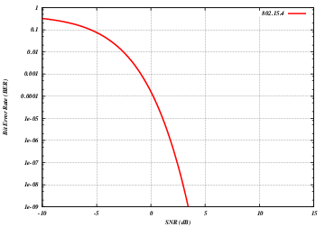
Default output of the program lr-wpan-error-model-plot.cc¶
the LTE Model. This model includes the LTE Radio Protocol
stack (RRC, PDCP, RLC, MAC, PHY). These entities reside entirely within the
UE and the eNB nodes.
the EPC Model. This model includes core network
interfaces, protocols and entities. These entities and protocols
reside within the SGW, PGW and MME nodes, and partially within the
eNB nodes.
The LTE model has been designed to support the evaluation of the following aspects of LTE systems:
Radio Resource Management
QoS-aware Packet Scheduling
Inter-cell Interference Coordination
Dynamic Spectrum Access
In order to model LTE systems to a level of detail that is sufficient to allow a
correct evaluation of the above mentioned aspects, the following requirements
have been considered:
At the radio level, the granularity of the model should be at least that
of the Resource Block (RB). In fact, this is the fundamental unit being used for
resource allocation. Without this minimum level of granularity, it is not
possible to model accurately packet scheduling and
inter-cell-interference.
The reason is that, since packet scheduling is done on
a per-RB basis, an eNB might transmit on a subset only of all the available
RBs, hence interfering with other eNBs only on those RBs where it is
transmitting.
Note that this requirement rules out the adoption of a system level simulation
approach, which evaluates resource allocation only at the granularity of
call/bearer establishment.
The simulator should scale up to tens of eNBs and hundreds of User
Equipment (UEs). This
rules out the use of a link level simulator, i.e., a simulator whose radio
interface is modeled with a granularity up to the symbol level. This is because
to have a symbol level model it is necessary to implement all the PHY
layer signal processing, whose huge computational complexity severely limits
simulation. In fact, link-level simulators are normally limited to a single eNB
and one or a few UEs.
It should be possible within the simulation to configure different cells
so that they use different carrier frequencies and system bandwidths. The
bandwidth used by different cells should be allowed to overlap, in order to
support dynamic spectrum licensing solutions such as those described
in [Ofcom2600MHz] and [RealWireless]. The calculation of interference should
handle appropriately this case.
To be more representative of the LTE standard, as well as to be as
close as possible to real-world implementations, the simulator
should support the MAC Scheduler API published by the FemtoForum
[FFAPI]. This interface is expected to be used by femtocell manufacturers
for the implementation of scheduling and Radio Resource Management
(RRM) algorithms. By introducing support for this interface in the
simulator, we make it possible for LTE equipment vendors and
operators to test in a simulative environment exactly the same
algorithms that would be deployed in a real system.
The LTE simulation model should contain its own implementation of
the API defined in [FFAPI]. Neither
binary nor data structure compatibility with vendor-specific implementations
of the same interface are expected; hence, a compatibility layer should be
interposed whenever a vendor-specific MAC scheduler is to be used
with the simulator. This requirement is necessary to allow the
simulator to be independent from vendor-specific implementations of this
interface specification. We note that [FFAPI] is a logical
specification only, and its implementation (e.g., translation to some specific
programming language) is left to the vendors.
The model is to be used to simulate the transmission of IP packets
by the upper layers. With this respect, it shall be considered
that in LTE the Scheduling and Radio Resource Management do not
work with IP packets directly, but rather with RLC PDUs, which are
obtained by segmentation and concatenation of IP packets done by
the RLC entities. Hence, these functionalities of the RLC layer
should be modeled accurately.
The main objective of the EPC model is to provides means for the
simulation of end-to-end IP connectivity over the LTE model.
To this aim, it supports for the
interconnection of multiple UEs to the Internet, via a radio access
network of multiple eNBs connected to the core network, as shown
in Figure Overview of the LTE-EPC simulation model.
The following design choices have been made for the EPC model:
The Packet Data Network (PDN) type supported is both IPv4 and IPv6.
In other words, the end-to-end connections between the UEs and the remote
hosts can be IPv4 and IPv6. However, the networks between the core network
elements (MME, SGWs and PGWs) are IPv4-only.
The SGW and PGW functional entities are implemented in different
nodes, which are hence referred to as the SGW node and PGW node,
respectively.
The MME functional entities is implemented as a network node,
which is hence referred to as the MME node.
The scenarios with inter-SGW mobility are not of interest. But
several SGW nodes may be present in simulations scenarios.
A requirement for the EPC model is that it can be used to simulate the
end-to-end performance of realistic applications. Hence, it should
be possible to use with the EPC model any regular ns-3 application
working on top of TCP or UDP.
Another requirement is the possibility of simulating network topologies
with the presence of multiple eNBs, some of which might be
equipped with a backhaul connection with limited capabilities. In
order to simulate such scenarios, the user data plane
protocols being used between the eNBs and the SGW should be
modeled accurately.
It should be possible for a single UE to use different applications
with different QoS profiles. Hence, multiple EPS bearers should be
supported for each UE. This includes the necessary classification
of TCP/UDP traffic over IP done at the UE in the uplink and at the
PGW in the downlink.
The initial focus of the EPC model is mainly on the EPC data plane.
The accurate modeling of the EPC control plane is,
for the time being, not a requirement; however, the necessary control
plane interactions among the different network nodes of the core network
are realized by implementing control protocols/messages among them.
Direct interaction among the different simulation objects via the
provided helper objects should be avoided as much as possible.
The focus of the EPC model is on simulations of active users in ECM
connected mode. Hence, all the functionality that is only relevant
for ECM idle mode (in particular, tracking area update and paging)
are not modeled at all.
The model should allow the possibility to perform an X2-based
handover between two eNBs.
In Figure LTE-EPC data plane protocol stack, we represent the
end-to-end LTE-EPC data plane protocol stack as it is modeled in the
simulator. The figure shows all nodes in the data path, i.e. UE, eNB,
SGW, PGW and a remote host in the Internet. All protocol stacks
(S5 protocol stack, S1-U protocol stack and the LTE radio protocol stack)
specified by 3GPP are present.
The architecture of the implementation of the control plane model is
shown in figure LTE-EPC control plane protocol stack.
The control interfaces that are modeled explicitly are the S1-MME, the S11, and the S5
interfaces. The X2 interface is also modeled explicitly and it is described in more
detail in section X2
The S1-MME, the S11 and the S5 interfaces are modeled using procotol data units sent
over its respective links. These interfaces use the SCTP protocol as transport protocol
but currently, the SCTP protocol is not modeled in the ns-3 simulator, so the
UDP protocol is used instead of the SCTP protocol.
For channel modeling purposes, the LTE module uses the SpectrumChannel
interface provided by the spectrum module. At the time of this
writing, two implementations of such interface are available:
SingleModelSpectrumChannel and MultiModelSpectrumChannel, and the
LTE module requires the use of the MultiModelSpectrumChannel in
order to work properly. This is because of the need to support
different frequency and bandwidth configurations. All the
propagation models supported by MultiModelSpectrumChannel can be
used within the LTE module.
The recommended propagation model to be used with the LTE
module is the one provided by the Buildings module, which was in fact
designed specifically with LTE (though it can be used with other
wireless technologies as well). Please refer to the documentation of
the Buildings module for generic information on the propagation model
it provides.
In this section we will highlight some considerations that
specifically apply when the Buildings module is used together with the
LTE module.
The naming convention used in the following will be:
User equipment: UE
Macro Base Station: MBS
Small cell Base Station (e.g., pico/femtocell): SC
The LTE module considers FDD only, and implements downlink and uplink propagation separately. As a consequence, the following pathloss computations are performed
MBS <-> UE (indoor and outdoor)
SC (indoor and outdoor) <-> UE (indoor and outdoor)
The LTE model does not provide the following pathloss computations:
UE <-> UE
MBS <-> MBS
MBS <-> SC
SC <-> SC
The Buildings model does not know the actual type of the node; i.e.,
it is not aware of whether a transmitter node is a UE, a MBS, or a
SC. Rather, the Buildings model only cares about the position of the
node: whether it is indoor and outdoor, and what is its z-axis respect
to the rooftop level. As a consequence, for an eNB node that is placed
outdoor and at a z-coordinate above the rooftop level, the propagation
models typical of MBS will be used by the Buildings
module. Conversely, for an eNB that is placed outdoor but below the
rooftop, or indoor, the propagation models typical of pico and
femtocells will be used.
For communications involving at least one indoor node, the
corresponding wall penetration losses will be calculated by the
Buildings model. This covers the following use cases:
MBS <-> indoor UE
outdoor SC <-> indoor UE
indoor SC <-> indoor UE
indoor SC <-> outdoor UE
Please refer to the documentation of the Buildings module for details
on the actual models used in each case.
The LTE module includes a trace-based fading model derived from the one developed during the GSoC 2010 [Piro2011]. The main characteristic of this model is the fact that the fading evaluation during simulation run-time is based on per-calculated traces. This is done to limit the computational complexity of the simulator. On the other hand, it needs huge structures for storing the traces; therefore, a trade-off between the number of possible parameters and the memory occupancy has to be found. The most important ones are:
users’ speed: relative speed between users (affects the Doppler frequency, which in turns affects the time-variance property of the fading)
number of taps (and relative power): number of multiple paths considered, which affects the frequency property of the fading.
time granularity of the trace: sampling time of the trace.
frequency granularity of the trace: number of values in frequency to be evaluated.
length of trace: ideally large as the simulation time, might be reduced by windowing mechanism.
number of users: number of independent traces to be used (ideally one trace per user).
With respect to the mathematical channel propagation model, we suggest the one provided by the rayleighchan function of Matlab, since it provides a well accepted channel modelization both in time and frequency domain. For more information, the reader is referred to [mathworks].
The simulator provides a matlab script (src/lte/model/fading-traces/fading-trace-generator.m) for generating traces based on the format used by the simulator.
In detail, the channel object created with the rayleighchan function is used for filtering a discrete-time impulse signal in order to obtain the channel impulse response. The filtering is repeated for different TTI, thus yielding subsequent time-correlated channel responses (one per TTI). The channel response is then processed with the pwelch function for obtaining its power spectral density values, which are then saved in a file with the proper format compatible with the simulator model.
Since the number of variable it is pretty high, generate traces considering all of them might produce a high number of traces of huge size. On this matter, we considered the following assumptions of the parameters based on the 3GPP fading propagation conditions (see Annex B.2 of [TS36104]):
users’ speed: typically only a few discrete values are considered, i.e.:
0 and 3 kmph for pedestrian scenarios
30 and 60 kmph for vehicular scenarios
0, 3, 30 and 60 for urban scenarios
channel taps: only a limited number of sets of channel taps are normally considered, for example three models are mentioned in Annex B.2 of [TS36104].
time granularity: we need one fading value per TTI, i.e., every 1 ms (as this is the granularity in time of the ns-3 LTE PHY model).
frequency granularity: we need one fading value per RB (which is the frequency granularity of the spectrum model used by the ns-3 LTE model).
length of the trace: the simulator includes the windowing mechanism implemented during the GSoC 2011, which consists of picking up a window of the trace each window length in a random fashion.
per-user fading process: users share the same fading trace, but for each user a different starting point in the trace is randomly picked up. This choice was made to avoid the need to provide one fading trace per user.
According to the parameters we considered, the following formula express in detail the total size of the fading traces:
where is the size in bytes of the sample (e.g., 8 in case of double precision, 4 in case of float precision), is the number of RB or set of RBs to be considered, is the total length of the trace, is the time resolution of the trace (1 ms), and is the number of fading scenarios that are desired (i.e., combinations of different sets of channel taps and user speed values). We provide traces for 3 different scenarios one for each taps configuration defined in Annex B.2 of [TS36104]:
Pedestrian: with nodes’ speed of 3 kmph.
Vehicular: with nodes’ speed of 60 kmph.
Urban: with nodes’ speed of 3 kmph.
hence . All traces have s and . This results in a total 24 MB bytes of traces.
Being based on the SpectrumPhy, the LTE PHY model supports antenna
modeling via the ns-3 AntennaModel class. Hence, any model based on
this class can be associated with any eNB or UE instance. For
instance, the use of the CosineAntennaModel associated with an eNB
device allows to model one sector of a macro base station. By default,
the IsotropicAntennaModel is used for both eNBs and UEs.
The physical layer model provided in this LTE simulator is based on
the one described in [Piro2011], with the following modifications. The model now includes the
inter cell interference calculation and the simulation of uplink traffic, including both packet transmission and CQI generation.
Considering the granularity of the simulator based on RB, the control and the reference signaling have to be consequently modeled considering this constraint. According to the standard [TS36211], the downlink control frame starts at the beginning of each subframe and lasts up to three symbols across the whole system bandwidth, where the actual duration is provided by the Physical Control Format Indicator Channel (PCFICH). The information on the allocation are then mapped in the remaining resource up to the duration defined by the PCFICH, in the so called Physical Downlink Control Channel (PDCCH). A PDCCH transports a single message called Downlink Control Information (DCI) coming from the MAC layer, where the scheduler indicates the resource allocation for a specific user.
The PCFICH and PDCCH are modeled with the transmission of the control frame of a fixed duration of 3/14 of milliseconds spanning in the whole available bandwidth, since the scheduler does not estimate the size of the control region. This implies that a single transmission block models the entire control frame with a fixed power (i.e., the one used for the PDSCH) across all the available RBs. According to this feature, this transmission represents also a valuable support for the Reference Signal (RS). This allows of having every TTI an evaluation of the interference scenario since all the eNB are transmitting (simultaneously) the control frame over the respective available bandwidths. We note that, the model does not include the power boosting since it does not reflect any improvement in the implemented model of the channel estimation.
The Sounding Reference Signal (SRS) is modeled similar to the downlink control frame. The SRS is periodically placed in the last symbol of the subframe in the whole system bandwidth. The RRC module already includes an algorithm for dynamically assigning the periodicity as function of the actual number of UEs attached to a eNB according to the UE-specific procedure (see Section 8.2 of [TS36213]).
To model the latency of real MAC and PHY implementations, the PHY model simulates a MAC-to-channel delay in multiples of TTIs (1ms). The transmission of both data and control packets are delayed by this amount.
The generation of CQI feedback is done accordingly to what specified in [FFAPI]. In detail, we considered the generation
of periodic wideband CQI (i.e., a single value of channel state that is deemed representative of all RBs
in use) and inband CQIs (i.e., a set of value representing the channel state for each RB).
The CQI index to be reported is obtained by first obtaining a SINR measurement and then passing this SINR measurement to the Adaptive Modulation and Coding module which will map it to the CQI index.
In downlink, the SINR used to generate CQI feedback can be calculated in two different ways:
Ctrl method: SINR is calculated combining the signal power from the reference signals (which in the simulation is equivalent to the PDCCH) and the interference power from the PDCCH. This approach results in considering any neighboring eNB as an interferer, regardless of whether this eNB is actually performing any PDSCH transmission, and regardless of the power and RBs used for eventual interfering PDSCH transmissions.
Mixed method: SINR is calculated combining the signal power from the reference signals (which in the simulation is equivalent to the PDCCH) and the interference power from the PDSCH. This approach results in considering as interferers only those neighboring eNBs that are actively transmitting data on the PDSCH, and allows to generate inband CQIs that account for different amounts of interference on different RBs according to the actual interference level. In the case that no PDSCH transmission is performed by any eNB, this method consider that interference is zero, i.e., the SINR will be calculated as the ratio of signal to noise only.
To switch between this two CQI generation approaches, LteHelper::UsePdschForCqiGeneration needs to be configured: false for first approach and true for second approach (true is default value):
PUSCH based, calculated from the actual transmitted data.
The scheduler interface include an attribute system called UlCqiFilter for managing the filtering of the CQIs according to their nature, in detail:
SRS_UL_CQI for storing only SRS based CQIs.
PUSCH_UL_CQI for storing only PUSCH based CQIs.
It has to be noted that, the FfMacScheduler provides only the interface and it is matter of the actual scheduler implementation to include the code for managing these attributes (see scheduler related section for more information on this matter).
The PHY model is based on the well-known Gaussian interference models, according to which the powers of interfering signals (in linear units) are summed up together to determine the overall interference power.
The usage of the radio spectrum by eNBs and UEs in LTE is described in
[TS36101]. In the simulator, radio spectrum usage is modeled as follows.
Let denote the LTE Absolute Radio Frequency Channel Number, which
identifies the carrier frequency on a 100 kHz raster; furthermore, let be
the Transmission Bandwidth Configuration in number of Resource Blocks. For every
pair used in the simulation we define a corresponding SpectrumModel using
the functionality provided by the Spectrum Module .
model using the Spectrum framework described
in [Baldo2009]. and can be configured for every eNB instantiated
in the simulation; hence, each eNB can use a different spectrum model. Every UE
will automatically use the spectrum model of the eNB it is attached to. Using
the MultiModelSpectrumChannel described in [Baldo2009], the interference
among eNBs that use different spectrum models is properly accounted for.
This allows to simulate dynamic spectrum access policies, such as for
example the spectrum licensing policies that are
discussed in [Ofcom2600MHz].
The simulator includes an error model of the data plane (i.e., PDSCH and PUSCH) according to the standard link-to-system mapping (LSM) techniques. The choice is aligned with the standard system simulation methodology of OFDMA radio transmission technology. Thanks to LSM we are able to maintain a good level of accuracy and at the same time limiting the computational complexity increase. It is based on the mapping of single link layer performance obtained by means of link level simulators to system (in our case network) simulators. In particular link the layer simulator is used for generating the performance of a single link from a PHY layer perspective, usually in terms of code block error rate (BLER), under specific static conditions. LSM allows the usage of these parameters in more complex scenarios, typical of system/network simulators, where we have more links, interference and “colored” channel propagation phenomena (e.g., frequency selective fading).
To do this the Vienna LTE Simulator [ViennaLteSim] has been used for what concerns the extraction of link layer performance and the Mutual Information Based Effective SINR (MIESM) as LSM mapping function using part of the work recently published by the Signet Group of University of Padua [PaduaPEM].
The specific LSM method adopted is the one based on the usage of a mutual information metric, commonly referred to as the mutual information per per coded bit (MIB or MMIB when a mean of multiples MIBs is involved). Another option would be represented by the Exponential ESM (EESM); however, recent studies demonstrate that MIESM outperforms EESM in terms of accuracy [LozanoCost].
The mutual information (MI) is dependent on the constellation mapping and can be calculated per transport block (TB) basis, by evaluating the MI over the symbols and the subcarrier. However, this would be too complex for a network simulator. Hence, in our implementation a flat channel response within the RB has been considered; therefore the overall MI of a TB is calculated averaging the MI evaluated per each RB used in the TB. In detail, the implemented scheme is depicted in Figure MIESM computational procedure diagram, where we see that the model starts by evaluating the MI value for each RB, represented in the figure by the SINR samples. Then the equivalent MI is evaluated per TB basis by averaging the MI values. Finally, a further step has to be done since the link level simulator returns the performance of the link in terms of block error rate (BLER) in a addive white gaussian noise (AWGN) channel, where the blocks are the code blocks (CBs) independently encoded/decoded by the turbo encoder. On this matter the
standard 3GPP segmentation scheme has been used for estimating the actual CB size (described in section 5.1.2 of [TS36212]). This scheme divides the TB in blocks of size and blocks of size . Therefore the overall TB BLER (TBLER) can be expressed as
where the is the BLER of the CB obtained according to the link level simulator CB BLER curves.
For estimating the , the MI evaluation has been implemented according to its numerical approximation defined in [wimaxEmd]. Moreover, for reducing the complexity of the computation, the approximation has been converted into lookup tables. In detail, Gaussian cumulative model has been used for approximating the AWGN BLER curves with three parameters which provides a close fit to the standard AWGN performances, in formula:
where is the MI of the TB, represents the “transition center” and is related to the “transition width” of the Gaussian cumulative distribution for each Effective Code Rate (ECR) which is the actual transmission rate according to the channel coding and MCS. For limiting the computational complexity of the model we considered only a subset of the possible ECRs in fact we would have potentially 5076 possible ECRs (i.e., 27 MCSs and 188 CB sizes). On this respect, we will limit the CB sizes to some representative values (i.e., 40, 140, 160, 256, 512, 1024, 2048, 4032, 6144), while for the others the worst one approximating the real one will be used (i.e., the smaller CB size value available respect to the real one). This choice is aligned to the typical performance of turbo codes, where the CB size is not strongly impacting on the BLER. However, it is to be notes that for CB sizes lower than 1000 bits the effect might be relevant (i.e., till 2 dB); therefore, we adopt
this unbalanced sampling interval for having more precision where it is necessary. This behaviour is confirmed by the figures presented in the Annes Section.
On this respect, we reused part of the curves obtained within [PaduaPEM]. In detail, we introduced the CB size dependency to the CB BLER curves with the support of the developers of [PaduaPEM] and of the LTE Vienna Simulator. In fact, the module released provides the link layer performance only for what concerns the MCSs (i.e, with a given fixed ECR). In detail the new error rate curves for each has been evaluated with a simulation campaign with the link layer simulator for a single link with AWGN noise and for CB size of 104, 140, 256, 512, 1024, 2048, 4032 and 6144. These curves has been mapped with the Gaussian cumulative model formula presented above for obtaining the correspondents and parameters.
The BLER performance of all MCS obtained with the link level simulator are plotted in the following figures (blue lines) together with their correspondent mapping to the Gaussian cumulative distribution (red dashed lines).
20.1.5.7.3. Integration of the BLER curves in the ns-3 LTE module¶
The model implemented uses the curves for the LSM of the recently LTE PHY Error Model released in the ns3 community by the Signet Group [PaduaPEM] and the new ones generated for different CB sizes. The LteSpectrumPhy class is in charge of evaluating the TB BLER thanks to the methods provided by the LteMiErrorModel class, which is in charge of evaluating the TB BLER according to the vector of the perceived SINR per RB, the MCS and the size in order to proper model the segmentation of the TB in CBs. In order to obtain the vector of the perceived SINRs for data and control signals, two instances of LteChunkProcessor (dedicated to evaluate the SINR for obtaining physical error performance) have been attached to UE downlink and eNB uplink LteSpectrumPhy modules for evaluating the error model distribution of PDSCH (UE side) and ULSCH (eNB side).
The model can be disabled for working with a zero-losses channel by setting the DataErrorModelEnabled attribute of the LteSpectrumPhy class (by default is active). This can be done according to the standard ns3 attribute system procedure, that is:
The simulator includes the error model for downlink control channels (PCFICH and PDCCH), while in uplink it is assumed and ideal error-free channel. The model is based on the MIESM approach presented before for considering the effects of the frequency selective channel since most of the control channels span the whole available bandwidth.
The model adopted for the error distribution of these channels is based on an evaluation study carried out in the RAN4 of 3GPP, where different vendors investigated the demodulation performance of the PCFICH jointly with PDCCH. This is due to the fact that the PCFICH is the channel in charge of communicating to the UEs the actual dimension of the PDCCH (which spans between 1 and 3 symbols); therefore the correct decodification of the DCIs depends on the correct interpretation of both ones. In 3GPP this problem have been evaluated for improving the cell-edge performance [FujitsuWhitePaper], where the interference among neighboring cells can be relatively high due to signal degradation. A similar problem has been notices in femto-cell scenario and, more in general, in HetNet scenarios the bottleneck has been detected mainly as the PCFICH channel [Bharucha2011], where in case of many eNBs are deployed in the same service area, this channel may collide in frequency, making impossible the correct detection of
the PDCCH channel, too.
In the simulator, the SINR perceived during the reception has been estimated according to the MIESM model presented above in order to evaluate the error distribution of PCFICH and PDCCH. In detail, the SINR samples of all the RBs are included in the evaluation of the MI associated to the control frame and, according to this values, the effective SINR (eSINR) is obtained by inverting the MI evaluation process. It has to be noted that, in case of MIMO transmission, both PCFICH and the PDCCH use always the transmit diversity mode as defined by the standard. According to the eSINR perceived the decodification error probability can be estimated as function of the results presented in [R4-081920]. In case an error occur, the DCIs discarded and therefore the UE will be not able to receive the correspondent Tbs, therefore resulting lost.
The use of multiple antennas both at transmitter and receiver side, known as multiple-input and multiple-output (MIMO), is a problem well studied in literature during the past years. Most of the work concentrate on evaluating analytically the gain that the different MIMO schemes might have in term of capacity; however someones provide also information of the gain in terms of received power [CatreuxMIMO].
According to the considerations above, a model more flexible can be obtained considering the gain that MIMO schemes bring in the system from a statistical point of view. As highlighted before, [CatreuxMIMO] presents the statistical gain of several MIMO solutions respect to the SISO one in case of no correlation between the antennas. In the work the gain is presented as the cumulative distribution function (CDF) of the output SINR for what concern SISO, MIMO-Alamouti, MIMO-MMSE, MIMO-OSIC-MMSE and MIMO-ZF schemes. Elaborating the results, the output SINR distribution can be approximated with a log-normal one with different mean and variance as function of the scheme considered. However, the variances are not so different and they are approximately equal to the one of the SISO mode already included in the shadowing component of the BuildingsPropagationLossModel, in detail:
SISO: and [dB].
MIMO-Alamouti: and [dB].
MIMO-MMSE: and [dB].
MIMO-OSIC-MMSE: and [dB].
MIMO-ZF: and [dB].
Therefore the PHY layer implements the MIMO model as the gain perceived by the receiver when using a MIMO scheme respect to the one obtained using SISO one. We note that, these gains referred to a case where there is no correlation between the antennas in MIMO scheme; therefore do not model degradation due to paths correlation.
According to [TS36214], the UE has to report a set of measurements of the eNBs that the device is able to perceive: the reference signal received power (RSRP) and the reference signal received quality (RSRQ). The former is a measure of the received power of a specific eNB, while the latter includes also channel interference and thermal noise.
The UE has to report the measurements jointly with the physical cell identity (PCI) of the cell. Both the RSRP and RSRQ measurements are performed during the reception of the RS, while the PCI is obtained with the Primary Synchronization Signal (PSS). The PSS is sent by the eNB each 5 subframes and in detail in the subframes 1 and 6. In real systems, only 504 distinct PCIs are available, and hence it could occur that two nearby eNBs use the same PCI; however, in the simulator we model PCIs using simulation metadata, and we allow up to 65535 distinct PCIs, thereby avoiding PCI collisions provided that less that 65535 eNBs are simulated in the same scenario.
According to [TS36133] sections 9.1.4 and 9.1.7, RSRP is reported by PHY layer in dBm while RSRQ in dB. The values of RSRP and RSRQ are provided to higher layers through the C-PHY SAP (by means of UeMeasurementsParameters struct) every 200 ms as defined in [TS36331]. Layer 1 filtering is performed by averaging the all the measurements collected during the last window slot. The periodicity of reporting can be adjusted for research purposes by means of the LteUePhy::UeMeasurementsFilterPeriod attribute.
The formulas of the RSRP and RSRQ can be simplified considering the assumption of the PHY layer that the channel is flat within the RB, the finest level of accuracy. In fact, this implies that all the REs within a RB have the same power, therefore:
where represents the signal power of the RE within the RB , which, as observed before, is constant within the same RB and equal to , is the number of REs carrying the RS in a RB and is the number of RBs. It is to be noted that , and in general all the powers defined in this section, is obtained in the simulator from the PSD of the RB (which is provided by the LteInterferencePowerChunkProcessor), in detail:
where is the power spectral density of the RB , is the bandwidth in Hz of the RB and is the number of REs per RB in an OFDM symbol.
Similarly, for RSSI we have
where is the number of OFDM symbols carrying RS in a RB and is the number of REs carrying a RS in a OFDM symbol (which is fixed to ) while , and represent respectively the perceived power of the serving cell, the interference power and the noise power of the RE in symbol . As for RSRP, the measurements within a RB are always equals among each others according to the PHY model; therefore , and , which implies that the RSSI can be calculated as:
Considering the constraints of the PHY reception chain implementation, and in order to maintain the level of computational complexity low, only RSRP can be directly obtained for all the cells. This is due to the fact that LteSpectrumPhy is designed for evaluating the interference only respect to the signal of the serving eNB. This implies that the PHY layer is optimized for managing the power signals information with the serving eNB as a reference. However, RSRP and RSRQ of neighbor cell can be extracted by the current information available of the serving cell as detailed in the following:
where is the RSRP of the neighbor cell , is the power perceived at any RE within the RB , is the total number of RBs, is the RSSI of the neighbor cell when the UE is attached to cell (which, since it is the sum of all the received powers, coincides with ), is the total interference perceived by UE in any RE of RB when attached to cell (obtained by the LteInterferencePowerChunkProcessor), is the power perceived of cell in any RE of the RB and is the power noise spectral density in any RE. The sample is considered as valid in case of the RSRQ evaluated is above the LteUePhy::RsrqUeMeasThreshold attribute.
The HARQ scheme implemented is based on a incremental redundancy (IR) solutions combined with multiple stop-and-wait processes for enabling a continuous data flow. In detail, the solution adopted is the soft combining hybrid IR Full incremental redundancy (also called IR Type II), which implies that the retransmissions contain only new information respect to the previous ones. The resource allocation algorithm of the HARQ has been implemented within the respective scheduler classes (i.e., RrFfMacScheduler and PfFfMacScheduler, refer to their correspondent sections for more info), while the decodification part of the HARQ has been implemented in the LteSpectrumPhy and LteHarqPhy classes which will be detailed in this section.
According to the standard, the UL retransmissions are synchronous and therefore are allocated 7 ms after the original transmission. On the other hand, for the DL, they are asynchronous and therefore can be allocated in a more flexible way starting from 7 ms and it is a matter of the specific scheduler implementation. The HARQ processes behavior is depicted in Figure:ref:fig-harq-processes-scheme.
At the MAC layer, the HARQ entity residing in the scheduler is in charge of controlling the 8 HARQ processes for generating new packets and managing the retransmissions both for the DL and the UL. The scheduler collects the HARQ feedback from eNB and UE PHY layers (respectively for UL and DL connection) by means of the FF API primitives SchedUlTriggerReq and SchedUlTriggerReq. According to the HARQ feedback and the RLC buffers status, the scheduler generates a set of DCIs including both retransmissions of HARQ blocks received erroneous and new transmissions, in general, giving priority to the former. On this matter, the scheduler has to take into consideration one constraint when allocating the resource for HARQ retransmissions, it must use the same modulation order of the first transmission attempt (i.e., QPSK for MCS , 16QAM for MCS and 64QAM for MCS ). This restriction comes from the specification of the rate matcher in the 3GPP standard [
TS36212]_, where the algorithm fixes the modulation order for generating the different blocks of the redundancy versions.
The PHY Error Model model (i.e., the LteMiErrorModel class already presented before) has been extended for considering IR HARQ according to [wimaxEmd], where the parameters for the AWGN curves mapping for MIESM mapping in case of retransmissions are given by:
where is the number of original information bits, are number of coded bits, are the mutual information per HARQ block received on the total number of retransmissions. Therefore, in order to be able to return the error probability with the error model implemented in the simulator evaluates the and the and return the value of error probability of the ECR of the same modulation with closest lower rate respect to the . In order to consider the effect of HARQ retransmissions a new sets of curves have been integrated respect to the standard one used for the original MCS. The new curves are intended for covering the cases when the most conservative MCS of a modulation is used which implies the generation of lower respect to the one of standard MCSs. On this matter the curves for 1, 2 and 3 retransmissions have been evaluated for 10 and 17. For MCS 0 we considered only the first retransmission since the
produced code rate is already very conservative (i.e., 0.04) and returns an error rate enough robust for the reception (i.e., the downturn of the BLER is centered around -18 dB).
It is to be noted that, the size of first TB transmission has been assumed as containing all the information bits to be coded; therefore is equal to the size of the first TB sent of a an HARQ process. The model assumes that the eventual presence of parity bits in the codewords is already considered in the link level curves. This implies that as soon as the minimum is reached the model is not including the gain due to the transmission of further parity bits.
The part of HARQ devoted to manage the decodification of the HARQ blocks has been implemented in the LteHarqPhy and LteSpectrumPhy classes. The former is in charge of maintaining the HARQ information for each active process . The latter interacts with LteMiErrorModel class for evaluating the correctness of the blocks received and includes the messaging algorithm in charge of communicating to the HARQ entity in the scheduler the result of the decodifications. These messages are encapsulated in the dlInfoListElement for DL and ulInfoListElement for UL and sent through the PUCCH and the PHICH respectively with an ideal error free model according to the assumptions in their implementation. A sketch of the iteration between HARQ and LTE protocol stack in represented in Figure:ref:fig-harq-architecture.
Finally, the HARQ engine is always active both at MAC and PHY layer; however, in case of the scheduler does not support HARQ the system will continue to work with the HARQ functions inhibited (i.e., buffers are filled but not used). This implementation characteristic gives backward compatibility with schedulers implemented before HARQ integration.
We now briefly describe how resource allocation is handled in LTE,
clarifying how it is modeled in the simulator. The scheduler is in
charge of generating specific structures called Data Control Indication (DCI)
which are then transmitted by the PHY of the eNB to the connected UEs, in order
to inform them of the resource allocation on a per subframe basis. In doing this
in the downlink direction, the scheduler has to fill some specific fields of the
DCI structure with all the information, such as: the Modulation and Coding
Scheme (MCS) to be used, the MAC Transport Block (TB) size, and the allocation
bitmap which identifies which RBs will contain the data
transmitted by the eNB to each user.
For the mapping of resources to
physical RBs, we adopt a localized mapping approach
(see [Sesia2009], Section 9.2.2.1);
hence in a given subframe each RB is always allocated to the same user in both
slots.
The allocation bitmap can be coded in
different formats; in this implementation, we considered the Allocation
Type 0 defined in [TS36213], according to which the RBs are grouped in
Resource Block Groups (RBG) of different size determined as a function of the
Transmission Bandwidth Configuration in use.
For certain bandwidth
values not all the RBs are usable, since the
group size is not a common divisor of the group. This is for instance the case
when the bandwidth is equal to 25 RBs, which results in a RBG size of 2 RBs, and
therefore 1 RB will result not addressable.
In uplink the format of the DCIs is different, since only adjacent RBs
can be used because of the SC-FDMA modulation. As a consequence, all
RBs can be allocated by the eNB regardless of the bandwidth
configuration.
The simulator provides two Adaptive Modulation and Coding (AMC) models: one based on the GSoC model [Piro2011] and one based on the physical error model (described in the following sections).
The former model is a modified version of the model described in [Piro2011],
which in turn is inspired from [Seo2004]. Our version is described in the
following. Let denote the
generic user, and let be its SINR. We get the spectral efficiency
of user using the following equations:
The procedure described in [R1-081483] is used to get
the corresponding MCS scheme. The spectral efficiency is quantized based on the
channel quality indicator (CQI), rounding to the lowest value, and is mapped to the corresponding MCS
scheme.
Finally, we note that there are some discrepancies between the MCS index
in [R1-081483]
and that indicated by the standard: [TS36213] Table
7.1.7.1-1 says that the MCS index goes from 0 to 31, and 0 appears to be a valid
MCS scheme (TB size is not 0) but in [R1-081483] the first useful MCS
index
is 1. Hence to get the value as intended by the standard we need to subtract 1
from the index reported in [R1-081483].
The alternative model is based on the physical error model developed for this simulator and explained in the following subsections. This scheme is able to adapt the MCS selection to the actual PHY layer performance according to the specific CQI report. According to their definition, a CQI index is assigned when a single PDSCH TB with the modulation coding scheme and code rate correspondent to that CQI index in table 7.2.3-1 of [TS36213] can be received with an error probability less than 0.1. In case of wideband CQIs, the reference TB includes all the RBGs available in order to have a reference based on the whole available resources; while, for subband CQIs, the reference TB is sized as the RBGs.
The model of the MAC Transport Blocks (TBs) provided by the simulator
is simplified with respect to the 3GPP specifications. In particular,
a simulator-specific class (PacketBurst) is used to aggregate
MAC SDUs in order to achieve the simulator’s equivalent of a TB,
without the corresponding implementation complexity.
The multiplexing of different logical channels to and from the RLC
layer is performed using a dedicated packet tag (LteRadioBearerTag), which
performs a functionality which is partially equivalent to that of the
MAC headers specified by 3GPP.
This section describes the ns-3 specific version of the LTE MAC
Scheduler Interface Specification published by the FemtoForum [FFAPI].
We implemented the ns-3 specific version of the FemtoForum MAC Scheduler
Interface [FFAPI] as a set of C++ abstract
classes; in particular, each primitive is translated to a C++ method of a
given class. The term implemented here is used with the same
meaning adopted in [FFAPI], and hence refers to the process of translating
the logical interface specification to a particular programming language.
The primitives in [FFAPI] are grouped in two groups: the CSCHED
primitives, which deal with scheduler configuration, and the SCHED primitives,
which deal with the execution of the scheduler. Furthermore, [FFAPI]
defines primitives of two different kinds: those of type REQ go from the MAC to
the Scheduler, and those of type IND/CNF go from the scheduler to the MAC. To
translate these characteristics into C++, we define the following abstract
classes that implement Service Access Points (SAPs) to be used to issue the
primitives:
the FfMacSchedSapProvider class defines all the C++ methods that
correspond to SCHED primitives of type REQ;
the FfMacSchedSapUser class defines all the C++ methods that
correspond to SCHED primitives of type CNF/IND;
the FfMacCschedSapProvider class defines all the C++ methods that
correspond to CSCHED primitives of type REQ;
the FfMacCschedSapUser class defines all the C++ methods that
correspond to CSCHED primitives of type CNF/IND;
There are 3 blocks involved in the MAC Scheduler interface: Control block,
Subframe block and Scheduler block. Each of these blocks provide one part of the
MAC Scheduler interface. The figure below shows the relationship
between the blocks and the SAPs defined in our implementation of the MAC
Scheduler Interface.
In addition to the above principles, the following design choices have been
taken:
The definition of the MAC Scheduler interface classes follows the naming
conventions of the ns-3 Coding Style. In particular, we follow the
CamelCase convention for the primitive names. For example, the primitive
CSCHED_CELL_CONFIG_REQ is translated to CschedCellConfigReq
in the ns-3 code.
The same naming conventions are followed for the primitive parameters. As
the primitive parameters are member variables of classes, they are also prefixed
with a m_.
regarding the use of vectors and lists in data structures, we note
that [FFAPI] is a pretty much C-oriented API. However, considered that
C++ is used in ns-3, and that the use of C arrays is discouraged, we used STL
vectors (std::vector) for the implementation of the MAC Scheduler
Interface, instead of using C arrays as implicitly suggested by the
way [FFAPI] is written.
In C++, members with constructors and destructors are not allow in
unions. Hence all those data structures that are said to be
unions in [FFAPI] have been defined as structs in our code.
The figure below shows how the MAC Scheduler Interface is
used within the eNB.
The User side of both the CSCHED SAP and the SCHED SAP are
implemented within the eNB MAC, i.e., in the file lte-enb-mac.cc.
The eNB MAC can be used with different scheduler implementations without
modifications. The same figure also shows, as an example, how the Round Robin
Scheduler is implemented: to interact with the MAC of the eNB, the Round Robin
scheduler implements the Provider side of the SCHED SAP and CSCHED
SAP interfaces. A similar approach can be used to implement other schedulers as
well. A description of each of the scheduler implementations that we provide as
part of our LTE simulation module is provided in the following subsections.
The Round Robin (RR) scheduler is probably the simplest scheduler found in the literature. It works by dividing the
available resources among the active flows, i.e., those logical channels which have a non-empty RLC queue. If the number of RBGs is greater than the number of active flows, all the flows can be allocated in the same subframe. Otherwise, if the number of active flows is greater than the number of RBGs, not all the flows can be scheduled in a given subframe; then, in the next subframe the allocation will start from the last flow that was not allocated. The MCS to be adopted for each user is done according to the received wideband CQIs.
For what concern the HARQ, RR implements the non adaptive version, which implies that in allocating the retransmission attempts RR uses the same allocation configuration of the original block, which means maintaining the same RBGs and MCS. UEs that are allocated for HARQ retransmissions are not considered for the transmission of new data in case they have a transmission opportunity available in the same TTI. Finally, HARQ can be disabled with ns3 attribute system for maintaining backward compatibility with old test cases and code, in detail:
The Proportional Fair (PF) scheduler [Sesia2009] works by scheduling a user
when its
instantaneous channel quality is high relative to its own average channel
condition over time. Let denote generic users; let be the
subframe index, and be the resource block index; let be MCS
usable by user on resource block according to what reported by the AMC
model (see Adaptive Modulation and Coding); finally, let be the TB
size in bits as defined in [TS36213] for the case where a number of
resource blocks is used. The achievable rate in bit/s for user
on resource block group at subframe is defined as
where is the TTI duration.
At the start of each subframe , each RBG is assigned to a certain user.
In detail, the index to which RBG is assigned at time
is determined as
where is the past throughput performance perceived by the
user .
According to the above scheduling algorithm, a user can be allocated to
different RBGs, which can be either adjacent or not, depending on the current
condition of the channel and the past throughput performance . The
latter is determined at the end of the subframe using the following
exponential moving average approach:
where is the time constant (in number of subframes) of
the exponential moving average, and is the actual
throughput achieved by the user in the subframe .
is measured according to the following procedure. First we
determine the MCS actually used by user
:
then we determine the total number of RBGs allocated to user
:
where indicates the cardinality of the set; finally,
For what concern the HARQ, PF implements the non adaptive version, which implies that in allocating the retransmission attempts the scheduler uses the same allocation configuration of the original block, which means maintaining the same RBGs and MCS. UEs that are allocated for HARQ retransmissions are not considered for the transmission of new data in case they have a transmission opportunity available in the same TTI. Finally, HARQ can be disabled with ns3 attribute system for maintaining backward compatibility with old test cases and code, in detail:
The Maximum Throughput (MT) scheduler [FCapo2012] aims to maximize the overall throughput of eNB.
It allocates each RB to the user that can achieve the maximum achievable rate in the current TTI.
Currently, MT scheduler in NS-3 has two versions: frequency domain (FDMT) and time domain (TDMT).
In FDMT, every TTI, MAC scheduler allocates RBGs to the UE who has highest achievable rate calculated
by subband CQI. In TDMT, every TTI, MAC scheduler selects one UE which has highest achievable rate
calculated by wideband CQI. Then MAC scheduler allocates all RBGs to this UE in current TTI.
The calculation of achievable rate in FDMT and TDMT is as same as the one in PF.
Let denote generic users; let be the
subframe index, and be the resource block index; let be MCS
usable by user on resource block according to what reported by the AMC
model (see Adaptive Modulation and Coding); finally, let be the TB
size in bits as defined in [TS36213] for the case where a number of
resource blocks is used. The achievable rate in bit/s for user
on resource block at subframe is defined as
where is the TTI duration.
At the start of each subframe , each RB is assigned to a certain user.
In detail, the index to which RB is assigned at time
is determined as
When there are several UEs having the same achievable rate, current implementation always selects
the first UE created in script. Although MT can maximize cell throughput, it cannot provide
fairness to UEs in poor channel condition.
20.1.7.4.4. Throughput to Average (TTA) Scheduler¶
The Throughput to Average (TTA) scheduler [FCapo2012] can be considered as an intermediate between MT and PF.
The metric used in TTA is calculated as follows:
Here, in bit/s represents the achievable rate for user
on resource block at subframe . The
calculation method already is shown in MT and PF. Meanwhile, in bit/s stands
for the achievable rate for at subframe . The difference between those two
achievable rates is how to get MCS. For , MCS is calculated by subband CQI while
is calculated by wideband CQI. TTA scheduler can only be implemented in frequency domain (FD) because
the achievable rate of particular RBG is only related to FD scheduling.
The Blind Average Throughput scheduler [FCapo2012] aims to provide equal throughput to all UEs under eNB. The metric
used in TTA is calculated as follows:
where is the past throughput performance perceived by the user and can be calculated by the
same method in PF scheduler. In the time domain blind average throughput (TD-BET), the scheduler selects the UE
with largest priority metric and allocates all RBGs to this UE. On the other hand, in the frequency domain blind
average throughput (FD-BET), every TTI, the scheduler first selects one UE with lowest pastAverageThroughput (largest
priority metric). Then scheduler assigns one RBG to this UE, it calculates expected throughput of this UE and uses it
to compare with past average throughput of other UEs. The scheduler continues
to allocate RBG to this UE until its expected throughput is not the smallest one among past average throughput
of all UE. Then the scheduler will use the same way to allocate RBG for a new UE which has the
lowest past average throughput until all RBGs are allocated to UEs. The principle behind this is
that, in every TTI, the scheduler tries the best to achieve the equal throughput among all UEs.
Token Bank Fair Queue (TBFQ) is a QoS aware scheduler which derives from the leaky-bucket mechanism. In TBFQ,
a traffic flow of user is characterized by following parameters:
: packet arrival rate (byte/sec )
: token generation rate (byte/sec)
: token pool size (byte)
: counter that records the number of token borrowed from or given to the token bank by flow ;
can be smaller than zero
Each K bytes data consumes k tokens. Also, TBFQ maintains a shared token bank () so as to balance the traffic
between different flows. If token generation rate is bigger than packet arrival rate , then tokens
overflowing from token pool are added to the token bank, and is increased by the same amount. Otherwise,
flow needs to withdraw tokens from token bank based on a priority metric , and is decreased.
Obviously, the user contributes more on token bank has higher priority to borrow tokens; on the other hand, the
user borrows more tokens from bank has lower priority to continue to withdraw tokens. Therefore, in case of several
users having the same token generation rate, traffic rate and token pool size, user suffers from higher interference
has more opportunity to borrow tokens from bank. In addition, TBFQ can police the traffic by setting the token
generation rate to limit the throughput. Additionally, TBFQ also maintains following three parameters for each flow:
Debt limit : if belows this threshold, user i cannot further borrow tokens from bank. This is for
preventing malicious UE to borrow too much tokens.
Credit limit : the maximum number of tokens UE i can borrow from the bank in one time.
Credit threshold : once reaches debt limit, UE i must store tokens to bank in order to further
borrow token from bank.
LTE in NS-3 has two versions of TBFQ scheduler: frequency domain TBFQ (FD-TBFQ) and time domain TBFQ (TD-TBFQ).
In FD-TBFQ, the scheduler always select UE with highest metric and allocates RBG with highest subband CQI until
there are no packets within UE’s RLC buffer or all RBGs are allocated [FABokhari2009]. In TD-TBFQ, after selecting
UE with maximum metric, it allocates all RBGs to this UE by using wideband CQI [WKWong2004].
Priority set scheduler (PSS) is a QoS aware scheduler which combines time domain (TD) and frequency domain (FD)
packet scheduling operations into one scheduler [GMonghal2008]. It controls the fairness among UEs by a specified
Target Bit Rate (TBR).
In TD scheduler part, PSS first selects UEs with non-empty RLC buffer and then divide them into two sets based
on the TBR:
set 1: UE whose past average throughput is smaller than TBR; TD scheduler calculates their priority metric in
Blind Equal Throughput (BET) style:
set 2: UE whose past average throughput is larger (or equal) than TBR; TD scheduler calculates their priority
metric in Proportional Fair (PF) style:
UEs belonged to set 1 have higher priority than ones in set 2. Then PSS will select UEs with
highest metric in two sets and forward those UE to FD scheduler. In PSS, FD scheduler allocates RBG k to UE n
that maximums the chosen metric. Two PF schedulers are used in PF scheduler:
Proportional Fair scheduled (PFsch)
Carrier over Interference to Average (CoIta)
where is similar past throughput performance perceived by the user , with the
difference that it is updated only when the i-th user is actually served. is an
estimation of the SINR on the RBG of UE . Both PFsch and CoIta is for decoupling
FD metric from TD scheduler. In addition, PSS FD scheduler also provide a weight metric W[n] for helping
controlling fairness in case of low number of UEs.
where is the past throughput performance perceived by the user . Therefore, on
RBG k, the FD scheduler selects the UE that maximizes the product of the frequency domain
metric (, ) by weight . This strategy will guarantee the throughput of lower
quality UE tend towards the TBR.
The Channel and QoS Aware (CQA) Scheduler [Bbojovic2014] is an LTE
MAC downlink scheduling algorithm that considers the head of line
(HOL) delay, the GBR parameters and channel quality over
different subbands. The CQA scheduler is based on joint TD and FD
scheduling.
In the TD (at each TTI) the CQA scheduler groups users by
priority. The purpose of grouping is to enforce the FD scheduling to
consider first the flows with highest HOL delay. The grouping metric
for user is defined in the
following way:
where is the current value of HOL delay of flow
, and is a grouping parameter that determines
granularity of the groups, i.e. the number of the flows that will be
considered in the FD scheduling iteration.
The groups of flows selected in the TD iteration are forwarded to the FD
scheduling starting from the flows with the highest value of the
metric until all RBGs are assigned in the corresponding
TTI. In the FD, for each RBG , the CQA scheduler
assigns the current RBG to the user that has the maximum value of
the FD metric which we define in the following way:
where is calculated as follows:
where is the bit rate specified in EPS bearer of the
flow , is the past averaged throughput that is calculated with a
moving average, is the throughput achieved at the
time t, and is a coefficient such that .
For we consider two different
metrics: and .
is the Proportional Fair metric which is defined as follows:
where is the estimated achievable throughput of user
over RBG calculated by the Adaptive Modulation and Coding
(AMC) scheme that maps the channel quality indicator (CQI) value to
the transport block size in bits.
The other channel awareness metric that we consider is which
is proposed in [GMonghal2008] and it represents the frequency
selective fading gains over RBG for user and is calculated in
the following way:
where is the last reported CQI value from user
for the -th RBG.
The user can select whether or is used
by setting the attribute ns3::CqaFfMacScheduler::CqaMetric
respectively to "CqaPf" or "CqaFf".
The LTE model includes a model of the Random Access procedure based on
some simplifying assumptions, which are detailed in the following for
each of the messages and signals described in the specs [TS36321].
Random Access (RA) preamble: in real LTE systems this
corresponds to a Zadoff-Chu (ZC)
sequence using one of several formats available and sent in the
PRACH slots which could in principle overlap with PUSCH.
PRACH Configuration Index 14 is assumed, i.e., preambles can be
sent on any system frame number and subframe number.
The RA preamble is modeled using the LteControlMessage class,
i.e., as an ideal message that does not consume any radio
resources. The collision of preamble transmission by multiple UEs
in the same cell are modeled using a protocol interference model,
i.e., whenever two or more identical preambles are transmitted in
same cell at the same TTI, no one of these identical preambles
will be received by the eNB. Other than this collision model, no
error model is associated with the reception of a RA preamble.
Random Access Response (RAR): in real LTE systems, this is a
special MAC PDU sent on the DL-SCH. Since MAC control elements are not
accurately modeled in the simulator (only RLC and above PDUs
are), the RAR is modeled as an LteControlMessage that does not
consume any radio resources. Still, during the RA procedure, the
LteEnbMac will request to the scheduler the allocation of
resources for the RAR using the FF MAC Scheduler primitive
SCHED_DL_RACH_INFO_REQ. Hence, an enhanced scheduler
implementation (not available at the moment) could allocate radio
resources for the RAR, thus modeling the consumption of Radio
Resources for the transmission of the RAR.
Message 3: in real LTE systems, this is an RLC TM
SDU sent over resources specified in the UL Grant in the RAR. In
the simulator, this is modeled as a real RLC TM RLC PDU
whose UL resources are allocated by the scheduler upon call to
SCHED_DL_RACH_INFO_REQ.
Contention Resolution (CR): in real LTE system, the CR phase
is needed to address the case where two or more UE sent the same
RA preamble in the same TTI, and the eNB was able to detect this
preamble in spite of the collision. Since this event does not
occur due to the protocol interference model used for the
reception of RA preambles, the CR phase is not modeled in the
simulator, i.e., the CR MAC CE is never sent by the eNB and the
UEs consider the RA to be successful upon reception of the
RAR. As a consequence, the radio resources consumed for the
transmission of the CR MAC CE are not modeled.
The RLC entity is specified in the 3GPP technical specification
[TS36322], and comprises three different types of RLC: Transparent
Mode (TM), Unacknowledged Mode (UM) and Acknowledged Mode (AM). The
simulator includes one model for each of these entities
The RLC entities provide the RLC service interface to the upper PDCP layer and the MAC service interface
to the lower MAC layer. The RLC entities use the PDCP service interface from the upper PDCP layer and
the MAC service interface from the lower MAC layer.
The processing of the data transfer in the Acknowledge Mode (AM) RLC entity is explained in section 5.1.3 of [TS36322].
In this section we describe some details of the implementation of the
RLC entity.
Our implementation of the AM RLC entity maintains 3 buffers for the
transmit operations:
Transmission Buffer: it is the RLC SDU queue.
When the AM RLC entity receives a SDU in the TransmitPdcpPdu service primitive from the
upper PDCP entity, it enqueues it in the Transmission Buffer. We
put a limit on the RLC buffer size and the LteRlc TxDrop trace source
is called when a drop due to a full buffer occurs.
Transmitted PDUs Buffer: it is the queue of transmitted RLC PDUs for which an ACK/NACK has not
been received yet. When the AM RLC entity sends a PDU to the MAC
entity, it also puts a copy of the transmitted PDU in the Transmitted PDUs Buffer.
Retransmission Buffer: it is the queue of RLC PDUs which are considered for retransmission
(i.e., they have been NACKed). The AM RLC entity moves this PDU to the Retransmission Buffer,
when it retransmits a PDU from the Transmitted Buffer.
The following sequence diagram shows the interactions between the
different entities (RRC, PDCP, AM RLC, MAC and MAC scheduler) of the
eNB in the downlink to perform data communications.
Sequence diagram of data PDU transmission in downlink¶
The PDCP entity calls the Transmit_PDCP_PDUserviceprimitive in
order to send a data PDU. The AM RLC entity processes this service
primitive according to the AM data transfer procedures defined in
section 5.1.3 of [TS36322].
When the Transmit_PDCP_PDU service primitive is called, the AM RLC
entity performs the following operations:
Put the data SDU in the Transmission Buffer.
Compute the size of the buffers (how the size of buffers is
computed will be explained afterwards).
Call the Report_Buffer_Status service primitive of the eNB
MAC entity in order to notify to the eNB MAC
entity the sizes of the buffers of the AM RLC entity. Then, the
eNB MAC entity updates the buffer status in the MAC scheduler
using the SchedDlRlcBufferReq service primitive of the FF MAC
Scheduler API.
Afterwards, when the MAC scheduler decides that some data can be sent,
the MAC entity notifies it to the RLC entity, i.e. it calls the
Notify_Tx_Opportunity service primitive, then the AM RLC entity
does the following:
Create a single data PDU by segmenting and/or concatenating the
SDUs in the Transmission Buffer.
Move the data PDU from the Transmission Buffer to the
Transmitted PDUs Buffer.
Update state variables according section 5.1.3.1.1 of
[TS36322].
Call the Transmit_PDU primitive in order to send the data
PDU to the MAC entity.
The sequence diagram of Figure Sequence diagram of data PDU retransmission in downlink shows
the interactions between the different entities (AM RLC, MAC and MAC
scheduler) of the eNB in downlink when data PDUs must be retransmitted
by the AM RLC entity.
Sequence diagram of data PDU retransmission in downlink¶
The transmitting AM RLC entity can receive STATUS PDUs from the peer AM RLC entity. STATUS PDUs are
sent according section 5.3.2 of [TS36322] and the processing of reception is made according
section 5.2.1 of [TS36322].
When a data PDUs is retransmitted from the Transmitted PDUs Buffer, it is also moved to the
Retransmission Buffer.
The sequence diagram of Figure Sequence diagram of data PDU transmission in uplink shows
the interactions between the different entities of the UE (RRC, PDCP,
RLC and MAC) and the eNB (MAC and Scheduler) in uplink when data PDUs
are sent by the upper layers.
Sequence diagram of data PDU transmission in uplink¶
It is similar to the sequence diagram in downlink; the main difference
is that in this case the Report_Buffer_Status is sent from the UE MAC
to the MAC Scheduler in the eNB over the air using the control
channel.
The sequence diagram of Figure Sequence diagram of data PDU retransmission in uplink shows
the interactions between the different entities of the UE (AM RLC and
MAC) and the eNB (MAC) in uplink when data PDUs must be retransmitted
by the AM RLC entity.
Sequence diagram of data PDU retransmission in uplink¶
The Transmission Buffer contains RLC SDUs. A RLC PDU is one or more SDU segments plus an RLC header.
The size of the RLC header of one RLC PDU depends on the number of SDU segments the PDU contains.
The 3GPP standard (section 6.1.3.1 of [TS36321]) says clearly that,
for the uplink, the RLC and MAC headers are not considered in the
buffer size that is to be report as part of the Buffer Status Report.
For the downlink, the behavior is not specified. Neither [FFAPI] specifies
how to do it. Our RLC model works by assuming that the calculation of
the buffer size in the downlink is done exactly as in the uplink,
i.e., not considering the RLC and MAC header size.
We note that this choice affects the interoperation with the
MAC scheduler, since, in response to the
Notify_Tx_Opportunity service primitive, the RLC is expected to
create a PDU of no more than the size requested by the MAC, including
RLC overhead. Hence, unneeded fragmentation can occur if (for example)
the MAC notifies a transmission exactly equal to the buffer size
previously reported by the RLC. We assume that it is left to the Scheduler
to implement smart strategies for the selection of the size of the
transmission opportunity, in order to eventually avoid the inefficiency
of unneeded fragmentation.
The AM RLC entity generates and sends exactly one RLC PDU for each transmission opportunity even
if it is smaller than the size reported by the transmission opportunity. So for instance, if a
STATUS PDU is to be sent, then only this PDU will be sent in that transmission opportunity.
The segmentation and concatenation for the SDU queue of the AM RLC entity follows the same philosophy
as the same procedures of the UM RLC entity but there are new state
variables (see [TS36322] section 7.1) only present in the AM RLC entity.
It is noted that, according to the 3GPP specs, there is no concatenation for the Retransmission Buffer.
The current model of the AM RLC entity does not support the
re-segmentation of the retransmission buffer. Rather, the AM RLC
entity just waits to receive a big enough transmission
opportunity.
The transmit operations of the UM RLC are similar to those of the AM
RLC previously described in Section Transmit operations in downlink,
with the difference that, following the specifications of [TS36322],
retransmission are not performed, and there are no STATUS PDUs.
The transmit operations in the uplink are similar to those of the
downlink, with the main difference that the Report_Buffer_Status is
sent from the UE MAC to the MAC Scheduler in the eNB over the air
using the control channel.
The calculation of the buffer size for the UM RLC is done using the
same approach of the AM RLC, please refer to section
Calculation of the buffer size for the corresponding description.
In the simulator, the TM RLC still provides to the upper layers the
same service interface provided by the AM and UM RLC
entities to the PDCP layer; in practice, this interface is used by an RRC
entity (not a PDCP entity) for the transmission of RLC SDUs. This
choice is motivated by the fact that the services provided by the TM
RLC to the upper layers, according to [TS36322], is a subset of those
provided by the UM and AM RLC entities to the PDCP layer; hence,
we reused the same interface for simplicity.
The transmit operations in the downlink are performed as follows. When
the Transmit_PDCP_PDUserviceprimitive is called by the upper
layers, the TM RLC does the following:
put the SDU in the Transmission Buffer
compute the size of the Transmission Buffer
call the Report_Buffer_Status service primitive of the eNB
MAC entity
Afterwards, when the MAC scheduler decides that some data can be sent
by the logical channel to which the TM RLC entity belongs, the MAC
entity notifies it to the TM RLC entity by calling the
Notify_Tx_Opportunity service primitive. Upon reception of this
primitive, the TM RLC entity does the following:
if the TX opportunity has a size that is greater than or equal to
the size of the head-of-line SDU in the Transmission Buffer
dequeue the head-of-line SDU from the Transmission Buffer
create one RLC PDU that contains entirely that SDU, without any
RLC header
Call the Transmit_PDU primitive in order to send the RLC
PDU to the MAC entity.
The transmit operations in the uplink are similar to those of the
downlink, with the main difference that a transmission opportunity can
also arise from the assignment of the UL GRANT as part of the Random
Access procedure, without an explicit Buffer Status Report issued by
the TM RLC entity.
As per the specifications [TS36322], the TM RLC does not add any RLC
header to the PDUs being transmitted. Because of this, the buffer size
reported to the MAC layer is calculated simply by summing the size of
all packets in the transmission buffer, thus notifying to the MAC the
exact buffer size.
In addition to the AM, UM and TM implementations that are modeled
after the 3GPP specifications, a simplified RLC model is provided,
which is called Saturation Mode (SM) RLC. This RLC model does not accept
PDUs from any above layer (such as PDCP); rather, the SM RLC takes care of the
generation of RLC PDUs in response to
the notification of transmission opportunities notified by the MAC.
In other words, the SM RLC simulates saturation conditions, i.e., it
assumes that the RLC buffer is always full and can generate a new PDU
whenever notified by the scheduler.
The SM RLC is used for simplified simulation scenarios in which only the
LTE Radio model is used, without the EPC and hence without any IP
networking support. We note that, although the SM RLC is an
unrealistic traffic model, it still allows for the correct simulation
of scenarios with multiple flows belonging to different (non real-time)
QoS classes, in order to test the QoS performance obtained by different
schedulers. This can be
done since it is the task of the Scheduler to assign transmission
resources based on the characteristics (e.g., Guaranteed Bit Rate) of
each Radio Bearer, which are specified upon the definition of each
Bearer within the simulation program.
As for schedulers designed to work with real-time QoS
traffic that has delay constraints, the SM RLC is probably not an appropriate choice.
This is because the absence of actual RLC SDUs (replaced by the artificial
generation of Buffer Status Reports) makes it not possible to provide
the Scheduler with meaningful head-of-line-delay information, which is
often the metric of choice for the implementation of scheduling
policies for real-time traffic flows. For the simulation and testing
of such schedulers, it is advisable to use either the UM or the AM RLC
models instead.
The reference document for the specification of the PDCP entity is
[TS36323]. With respect to this specification, the PDCP model
implemented in the simulator supports only the following features:
transfer of data (user plane or control plane);
maintenance of PDCP SNs;
transfer of SN status (for use upon handover);
The following features are currently not supported:
header compression and decompression of IP data flows using the ROHC protocol;
in-sequence delivery of upper layer PDUs at re-establishment of lower layers;
duplicate elimination of lower layer SDUs at re-establishment of lower layers for radio bearers mapped on RLC AM;
ciphering and deciphering of user plane data and control plane data;
integrity protection and integrity verification of control plane data;
The RRC model implemented in the simulator provides the following functionality:
generation (at the eNB) and interpretation (at the UE) of System
Information (in particular the Master Information Block and, at the
time of this writing, only System Information Block Type 1 and 2)
initial cell selection
RRC connection establishment procedure
RRC reconfiguration procedure, supporting the following use cases:
+ reconfiguration of the SRS configuration index
+ reconfiguration of the PHY TX mode (MIMO)
+ reconfiguration of UE measurements
+ data radio bearer setup
+ handover
RRC connection re-establishment, supporting the following use
cases:
+ handover
The RRC model is divided into the following components:
the RRC entities LteUeRrc and LteEnbRrc, which implement the state
machines of the RRC entities respectively at the UE and the eNB;
the RRC SAPs LteUeRrcSapProvider, LteUeRrcSapUser,
LteEnbRrcSapProvider, LteEnbRrcSapUser, which allow the RRC
entities to send and receive RRC messages and information
elmenents;
the RRC protocol classes LteUeRrcProtocolIdeal,
LteEnbRrcProtocolIdeal, LteUeRrcProtocolReal,
LteEnbRrcProtocolReal, which implement two different models for
the transmission of RRC messages.
All the states are transient, however, the UE in “CONNECTED_NORMALLY” state will
only switch to the IDLE state if the downlink SINR is below a defined threshold,
which would lead to radio link failure Radio Link Failure.
One the other hand, the UE would not be able switch to IDLE mode due to a handover
failure, as mentioned in X2.
The eNB RRC maintains the state for each UE that is attached to the
cell. From an implementation point of view, the state of each UE is
contained in an instance of the UeManager class. The state machine is
represented in Figure ENB RRC State Machine for each UE.
Initial cell selection is an IDLE mode procedure, performed by UE when it has
not yet camped or attached to an eNodeB. The objective of the procedure is to
find a suitable cell and attach to it to gain access to the cellular network.
It is typically done at the beginning of simulation, as depicted in Figure
Sample runs of initial cell selection in UE and timing of related events below. The time diagram on the left side
is illustrating the case where initial cell selection succeed on first try,
while the diagram on the right side is for the case where it fails on the first
try and succeed on the second try. The timing assumes the use of real RRC
protocol model (see RRC protocol models) and no transmission error.
Sample runs of initial cell selection in UE and timing of related events¶
The functionality is based on 3GPP IDLE mode specifications, such as in
[TS36300], [TS36304], and [TS36331]. However, a proper implementation of IDLE
mode is still missing in the simulator, so we reserve several simplifying
assumptions:
multiple carrier frequency is not supported;
multiple Public Land Mobile Network (PLMN) identities (i.e. multiple network
operators) is not supported;
RSRQ measurements are not utilized;
stored information cell selection is not supported;
“Any Cell Selection” state and camping to an acceptable cell is not
supported;
marking a cell as barred or reserved is not supported;
Idle cell reselection is not supported, hence it is not possible for UE to camp to
a different cell after the initial camp has been placed; and
UE’s Closed Subscriber Group (CSG) white list contains only one CSG identity.
Also note that initial cell selection is only available for EPC-enabled
simulations. LTE-only simulations must use the manual attachment method. See
section Network Attachment of the User Documentation for more
information on their differences in usage.
The next subsections cover different parts of initial cell selection, namely
cell search, broadcast of system information, and cell selection evaluation.
Cell search aims to detect surrounding cells and measure the strength of
received signal from each of these cells. One of these cells will become the
UE’s entry point to join the cellular network.
The measurements are based on the RSRP of the received PSS, averaged by Layer 1
filtering, and performed by the PHY layer, as previously described in more
detail in section UE PHY Measurements Model. PSS is transmitted by eNodeB
over the central 72 sub-carriers of the DL channel (Section 5.1.7.3 [TS36300]),
hence we model cell search to operate using a DL bandwidth of 6 RBs. Note that
measurements of RSRQ are not available at this point of time in simulation. As
a consequence, the LteUePhy::RsrqUeMeasThreshold attribute does not apply
during cell search.
By using the measured RSRP, the PHY entity is able to generate a list of
detected cells, each with its corresponding cell ID and averaged RSRP. This list
is periodically pushed via CPHY SAP to the RRC entity as a measurement report.
The RRC entity inspects the report and simply choose the cell with the strongest
RSRP, as also indicated in Section 5.2.3.1 of [TS36304]. Then it instructs back
the PHY entity to synchronize to this particular cell. The actual operating
bandwidth of the cell is still unknown at this time, so the PHY entity listens
only to the minimum bandwidth of 6 RBs. Nevertheless, the PHY entity will be
able to receive system broadcast message from this particular eNodeB, which is
the topic of the next subsection.
System information blocks are broadcasted by eNodeB to UEs at predefined time
intervals, adapted from Section 5.2.1.2 of [TS36331]. The supported system
information blocks are:
Master Information Block (MIB)
Contains parameters related to the PHY layer, generated during cell
configuration and broadcasted every 10 ms at the beginning of radio frame
as a control message.
System Information Block Type 1 (SIB1)
Contains information regarding network access, broadcasted every 20 ms at
the middle of radio frame as a control message. Not used in manual
attachment method. UE must have decoded MIB before it can receive SIB1.
System Information Block Type 2 (SIB2)
Contains UL- and RACH-related settings, scheduled to transmit via RRC
protocol at 16 ms after cell configuration, and then repeats every 80 ms
(configurable through LteEnbRrc::SystemInformationPeriodicity attribute.
UE must be camped to a cell in order to be able to receive its SIB2.
Reception of system information is fundamental for UE to advance in its
lifecycle. MIB enables the UE to increase the initial DL bandwidth of 6 RBs to
the actual operating bandwidth of the network. SIB1 provides information
necessary for cell selection evaluation (explained in the next section). And
finally SIB2 is required before the UE is allowed to switch to CONNECTED state.
UE RRC reviews the measurement report produced in Cell Search and the
cell access information provided by SIB1. Once both information is available for
a specific cell, the UE triggers the evaluation process. The purpose of this
process is to determine whether the cell is a suitable cell to camp to.
The evaluation process is a slightly simplified version of Section 5.2.3.2 of
[TS36304]. It consists of the following criteria:
Rx level criterion; and
closed subscriber group (CSG) criterion.
The first criterion, Rx level, is based on the cell’s measured RSRP
, which has to be higher than a required minimum
in order to pass the criterion:
where is determined by each eNodeB and is obtainable by UE
from SIB1.
The last criterion, CSG, is a combination of a true-or-false parameter called
CSG indication and a simple number CSG identity. The basic rule is that UE
shall not camp to eNodeB with a different CSG identity. But this rule is only
enforced when CSG indication is valued as true. More details are provided in
Section Network Attachment of the User Documentation.
When the cell passes all the above criteria, the cell is deemed as suitable.
Then UE camps to it (IDLE_CAMPED_NORMALLY state).
After this, upper layer may request UE to enter CONNECTED mode. Please refer to
section RRC connection establishment for details on this.
On the other hand, when the cell does not pass the CSG criterion, then the cell
is labeled as acceptable (Section 10.1.1.1 [TS36300]). In this case, the RRC
entity will tell the PHY entity to synchronize to the second strongest cell and
repeat the initial cell selection procedure using that cell. As long as no
suitable cell is found, the UE will repeat these steps while avoiding cells that
have been identified as acceptable.
Radio Admission Control is supported by having the eNB RRC
reply to an RRC CONNECTION REQUEST message sent by the UE with either
an RRC CONNECTION SETUP message or an RRC CONNECTION REJECT message,
depending on whether the new UE is to be admitted or not. In the
current implementation, the behavior is determined by the boolean attribute
ns3::LteEnbRrc::AdmitRrcConnectionRequest. There is currently no Radio Admission
Control algorithm that dynamically decides whether a new connection
shall be admitted or not.
In real LTE networks, Radio link failure (RLF) can happen due to several reasons.
It can be triggered if a UE is unable to decode PDCCH due to poor signal quality,
upon maximum RLC retransmissions, RACH problems and other reasons. 3GPP only
specifies guidelines to detect RLF at the UE side, in [TS36331] and [TS36133].
On the other hand, the eNB implementation is expected to be vendor specific.
To implement the RLF functionality in ns-3, we have assumed the following
simplifications:
The RLF detection procedure at eNodeB is not implemented. Instead, a direct
function call by using the SAP between UE and eNB RRC (for both ideal and real
RRC) is used to notify the eNB about the RLF.
No RRC connection re-establishment procedure is implemented, thus, the UE
directly goes to the IDLE state upon RLF. This is in fact as per the standard
[TS36331] sec 5.3.11.3, since, at this stage the LTE module does not support
the Access Stratum (AS) security.
The above mentioned RLF specifications can be divided into the following two
categories:
RLF detection
Actions upon RLF detection
In the following, we will explain the RLF implementation in context of these
two categories.
The RLF detection at the UE is implemented as per [TS36133], i.e., by monitoring
the radio link quality based on the reference signals (which in the simulation
is equivalent to the PDCCH) in the downlink. Thus, it is independent of the method
used for the downlink CQI computation, i.e., Ctrl method and Mixed method.
Moreover, when using FFR, especially for hard-FFR, and CQIs based on Mixed method,
UEs might experience relatively good performance and RLF simultaneously. This is
due to the fact that the interference in PDSCH is affected by the actual data
transmissions on the specific RBs and the power control. Therefore, UEs might
experience good SINR in PDSCH, while bad SINR in PDCCH channel. For more details
about these methods please refer to CQI feedback. Also, it does not
matter if the DL control error model is disabled, a UE can still detect the RLF
since the SINR based on the control channel is reported to the LteUePhy class,
using a callback hooked in LteHelper while installing a UE device.
The RLF detection starts once the RRC connection is established between UE and
eNodeB, i.e., UE is in “CONNECTED_NORMALLY” state; upon which the RLF parameters
are configured (see LteUePhy::DoConfigureRadioLinkFailureDetection). In real
networks, these parameters are transmitted by the eNB using IE UE-TimersAndConstants or
RLF-TimersAndConstants. However, for the sake of simplification, in the simulator
they are presented as the attributes of the LteUePhy and LteUeRrc classes.
Moreover, what concerns the carrier aggregation, i.e., when a UE is configured
with multiple component carriers, the RLF detection is only performed by the
primary component carrier, i.e. component carrier id 0
(see LteUePhy::DoNotifyConnectionSuccessful). In LteUePhy class, CQI
calculation is triggered for every downlink subframe received,
and the average SINR value is measured across all resource blocks. For the RLF
detection, these SINR values are averaged over a downlink frame and if the result
is less than a defined threshold Qout (default: -5dB), the frame cannot be decoded
(see``LteUePhy::RadioLinkFailureDetection``). The Qout threshold corresponds to 10%
block error rate (BLER) of a hypothetical PDCCH transmission taking into account
the PCFICH errors [R4-081920] (also refer to
Control Channels PHY Error Model). Once, the UE is unable to decode
20 consecutive frames, i.e., the Qout evaluation period (200ms) is reached, an
out-of-sync indication is sent to the UE RRC layer (see LteUeRrc::DoNotifyOutOfSync).
Else, the counter for the unsuccessfuly decoded frames is reset to zero. At the
LteUeRrc, when the number of consecutive out-of-sync indications matches with the
value of N310 parameter, the T310 timer is started and LteUePhy is notified to start
measuring for in-sync indications (see LteUePhy::DoStartInSyncDetection). We note
that, the UE RRC state is not changed till the expiration of T310 timer. If the
resultant SINR values averaged over a downlink frame is greater than a defined
threshold Qin (default: -3.8dB), the frame is considered to be successfully
decoded. Qin corresponds to 2% BLER [R4-081920] of a hypothetical PDCCH transmission
taking into account the PCFICH errors. Once the UE is able to decode 10
consecutive frames, an in-sync indication is sent to the UE RRC layer
(see LteUeRrc::DoNotifyInSync). Else, the counter for the successfully decoded
frames is reset to zero. If prior to the T310 timer expiry, the number of
consecutive in-sync indications matches with N311 parameter of LteUeRRC, the UE
is considered back in-sync. At this stage, the related parameters are reset to
initiate the radio link failure detection from the beginning
(see LteUePhy::DoConfigureRadioLinkFailureDetection). On the other hand, If the
T310 timer expires, the UE considers that a RLF has occurred
(see LteUeRrc::RadioLinkFailureDetected).
Once the T310 timer is expired, a UE is considered to be in RLF; upon which the
UE RRC:
Sends a request to the eNB RRC to remove the UE context
Moves to “CONNECTED_PHY_PROBLEM” state
Notifies the UE NAS layer about the release of RRC connection.
Then, after getting the notification from the UE RRC the NAS does the following:
Delete all the TFTs
Reset the bearer counter
Restore the bearer list, which is used to activate the bearers for the next
RRC connection. This restoration of the bearers is achieved by maintaining an
additional list, i.e., m_bearersToBeActivatedListForReconnection in EpcUeNas
class
Switch the NAS state to OFF by calling EpcUeNas::Disconnect
Tells the UE RRC to disconnect
The UE RRC, upon receiving the call to disconnect from the EpcUeNas class,
performs the action as specified by [TS36331] 5.3.11.3, and finally leaves the
connected state, i.e., its RRC state is changed from “CONNECTED_PHY_PROBLEM” to
“IDLE_START” to perform cell selection as shown in figures UE RRC State Machine
and UE procedures after radio link failure.
At this stage, the LTE module does not support the paging functionality, therefore,
to allow a UE to read SIB2 message after camping on a suitable cell after RLF, a
work around is used in LteUeRrc::EvaluateCellForSelection method. As per this
workaround, the UE RRC invokes the call to LteUeRrc::DoConnect method, which
enables the UE to switch its state from “IDLE_CAMPED_NORMALLY” to “IDLE_WAIT_SIB2”,
thus, allowing it to perform the random access.
The eNB RRC, after receiving the notification from the UE RRC starts the procedure
of UE context deletion, which also involves the deletion of the UE context removal
from the EPC UE context removal from EPC and the eNB stack
UE context removal from eNB stack. We note that, the UE context
at the MME is not removed since, bearers are only added at the start of a
simulation in MME, and cannot be added again unless scheduled for addition
during a simulation.
The UE RRC entity provides support for UE measurements; in particular, it
implements the procedures described in Section 5.5 of [TS36331], with the
following simplifying assumptions:
only E-UTRA intra-frequency measurements are supported, which implies:
only one measurement object is used during the simulation;
measurement gaps are not needed to perform the measurements;
Event B1 and B2 are not implemented;
only reportStrongestCells purpose is supported, while reportCGI and
reportStrongestCellsForSON purposes are not supported;
s-Measure is not supported;
carrier aggregation is now supported in the LTE module
- Event A6 is not implemented;
speed dependent scaling of time-to-trigger (Section 5.5.6.2 of [TS36331]) is
not supported.
The model is based on the concept of UE measurements consumer, which is an
entity that may request an eNodeB RRC entity to provide UE measurement reports.
Consumers are, for example, Handover algorithm, which compute
handover decision based on UE measurement reports. Test cases and user’s
programs may also become consumers. Figure Relationship between UE measurements and its consumers depicts
the relationship between these entities.
Relationship between UE measurements and its consumers¶
The whole UE measurements function at the RRC level is divided into 4 major
parts:
Measurement configuration (handled by LteUeRrc::ApplyMeasConfig)
Performing measurements (handled by LteUeRrc::DoReportUeMeasurements)
Measurement report triggering (handled by
LteUeRrc::MeasurementReportTriggering)
Measurement reporting (handled by LteUeRrc::SendMeasurementReport)
The following sections will describe each of the parts above.
An eNodeB RRC entity configures UE measurements by sending the configuration
parameters to the UE RRC entity. This set of parameters are defined within the
MeasConfig Information Element (IE) of the RRC Connection Reconfiguration
message (RRC connection reconfiguration).
The eNodeB RRC entity implements the configuration parameters and procedures
described in Section 5.5.2 of [TS36331], with the following simplifying
assumption:
configuration (i.e. addition, modification, and removal) can only be done
before the simulation begins;
all UEs attached to the eNodeB will be configured the same way, i.e. there is
no support for configuring specific measurement for specific UE; and
it is assumed that there is a one-to-one mapping between the PCI and the
E-UTRAN Global Cell Identifier (EGCI). This is consistent with the PCI
modeling assumptions described in UE PHY Measurements Model.
The eNodeB RRC instance here acts as an intermediary between the consumers and
the attached UEs. At the beginning of simulation, each consumer provides the
eNodeB RRC instance with the UE measurements configuration that it requires.
After that, the eNodeB RRC distributes the configuration to attached UEs.
Users may customize the measurement configuration using several methods. Please
refer to Section Configure UE measurements of the User Documentation
for the description of these methods.
UE RRC receives both RSRP and RSRQ measurements on periodical basis from UE PHY,
as described in UE PHY Measurements Model. Layer 3 filtering will be
applied to these received measurements. The implementation of the filtering
follows Section 5.5.3.2 of [TS36331]:
where:
is the latest received measurement result from the physical
layer;
is the updated filtered measurement result;
is the old filtered measurement result, where
(i.e. the first measurement is not filtered); and
, where is the configurable
filterCoefficient provided by the QuantityConfig;
is the default value, but can be configured by setting the
RsrpFilterCoefficient and RsrqFilterCoefficient attributes in
LteEnbRrc.
Therefore will disable Layer 3 filtering. On the other hand, past
measurements can be granted more influence on the filtering results by using
larger value of .
In this part, UE RRC will go through the list of active measurement
configuration and check whether the triggering condition is fulfilled in
accordance with Section 5.5.4 of [TS36331]. When at least one triggering
condition from all the active measurement configuration is fulfilled, the
measurement reporting procedure (described in the next subsection) will be
initiated.
3GPP defines two kinds of triggerType: periodical and event-based. At the
moment, only event-based criterion is supported. There are various events that
can be selected, which are briefly described in the table below:
List of supported event-based triggering criteria¶
Name
Description
Event A1
Serving cell becomes better than threshold
Event A2
Serving cell becomes worse than threshold
Event A3
Neighbour becomes offset dB better than serving cell
Event A4
Neighbour becomes better than threshold
Event A5
Serving becomes worse than threshold1
AND neighbour becomes better than threshold2
Two main conditions to be checked in an event-based trigger are the entering
condition and the leaving condition. More details on these two can be found
in Section 5.5.4 of [TS36331].
An event-based trigger can be further configured by introducing hysteresis and
time-to-trigger. Hysteresis () defines the distance between the
entering and leaving conditions in dB. Similarly, time-to-trigger introduces
delay to both entering and leaving conditions, but as a unit of time.
The periodical type of reporting trigger is not supported, but its behavior
can be easily obtained by using an event-based trigger. This can be done by
configuring the measurement in such a way that the entering condition is always
fulfilled, for example, by setting the threshold of Event A1 to zero (the
minimum level). As a result, the measurement reports will always be triggered
at every certain interval, as determined by the reportInterval field within
LteRrcSap::ReportConfigEutra, therefore producing the same behaviour as
periodical reporting.
As a limitation with respect to 3GPP specifications, the current model does not
support any cell-specific configuration. These configuration parameters are
defined in measurement object. As a consequence, incorporating a list of black
cells into the triggering process is not supported. Moreover, cell-specific
offset (i.e., and in Event A3, A4, and A5) are not
supported as well. The value equal to zero is always assumed in place of them.
This part handles the submission of measurement report from the UE RRC entity
to the serving eNodeB entity via RRC protocol. Several simplifying assumptions
have been adopted:
reportAmount is not applicable (i.e. always assumed to be infinite);
in measurement reports, the reportQuantity is always assumed to be BOTH,
i.e., both RSRP and RSRQ are always reported, regardless of the
triggerQuantity.
The RRC model supports UE mobility in CONNECTED mode by invoking the X2-based
handover procedure. The model is intra-EUTRAN and intra-frequency, as based on
Section 10.1.2.1 of [TS36300].
This section focuses on the process of triggering a handover. The handover
execution procedure itself is covered in Section X2.
There are two ways to trigger the handover procedure:
explicitly (or manually) triggered by the simulation program by scheduling
an execution of the method LteEnbRrc::SendHandoverRequest; or
automatically triggered by the eNodeB RRC entity based on UE measurements
and according to the selected handover algorithm.
Section X2-based handover of the User Documentation provides some
examples on using both explicit and automatic handover triggers in simulation.
The next subsection will take a closer look on the automatic method, by
describing the design aspects of the handover algorithm interface and the
available handover algorithms.
Handover in 3GPP LTE has the following properties:
UE-assisted
The UE provides input to the network in the form of measurement reports.
This is handled by the UE RRC Measurements Model.
Network-controlled
The network (i.e. the source eNodeB and the target eNodeB) decides when to
trigger the handover and oversees its execution.
The handover algorithm operates at the source eNodeB and is responsible in
making handover decisions in an “automatic” manner. It interacts with an eNodeB
RRC instance via the Handover Management SAP interface. These relationships
are illustrated in Figure Relationship between UE measurements and its consumers from the previous section.
The handover algorithm interface consists of the following methods:
AddUeMeasReportConfigForHandover
(Handover Algorithm -> eNodeB RRC) Used by the handover algorithm to
request measurement reports from the eNodeB RRC entity, by passing the
desired reporting configuration. The configuration will be applied to
all future attached UEs.
ReportUeMeas
(eNodeB RRC -> Handover Algorithm) Based on the UE measurements configured
earlier in AddUeMeasReportConfigForHandover, UE may submit measurement
reports to the eNodeB. The eNodeB RRC entity uses the ReportUeMeas
interface to forward these measurement reports to the handover algorithm.
TriggerHandover
(Handover Algorithm -> eNodeB RRC) After examining the measurement reports
(but not necessarily), the handover algorithm may declare a handover. This
method is used to notify the eNodeB RRC entity about this decision, which
will then proceed to commence the handover procedure.
One note for the AddUeMeasReportConfigForHandover. The method will return
the measId (measurement identity) of the newly created measurement
configuration. Typically a handover algorithm would store this unique number. It
may be useful in the ReportUeMeas method, for example when more than one
configuration has been requested and the handover algorithm needs to
differentiate incoming reports based on the configuration that triggered them.
A handover algorithm is implemented by writing a subclass of the
LteHandoverAlgorithm abstract superclass and implementing each of the above
mentioned SAP interface methods. Users may develop their own handover algorithm
this way, and then use it in any simulation by following the steps outlined in
Section X2-based handover of the User Documentation.
Alternatively, users may choose to use one of the 3 built-in handover algorithms
provided by the LTE module: no-op, A2-A4-RSRQ, and strongest cell handover
algorithm. They are ready to be used in simulations or can be taken as an
example of implementing a handover algorithm. Each of these built-in algorithms
is covered in each of the following subsections.
The no-op handover algorithm (NoOpHandoverAlgorithm class) is the simplest
possible implementation of handover algorithm. It basically does nothing, i.e.,
does not call any of the Handover Management SAP interface methods. Users may
choose this handover algorithm if they wish to disable automatic handover
trigger in their simulation.
The A2-A4-RSRQ handover algorithm provides the functionality of the default
handover algorithm originally included in LENA M6 (ns-3.18), ported to the
Handover Management SAP interface as the A2A4RsrqHandoverAlgorithm class.
As the name implies, the algorithm utilizes the Reference Signal Received
Quality (RSRQ) measurements acquired from Event A2 and Event A4. Thus, the
algorithm will add 2 measurement configuration to the corresponding eNodeB RRC
instance. Their intended use are described as follows:
Event A2 (serving cell’s RSRQ becomes worse than threshold) is leveraged
to indicate that the UE is experiencing poor signal quality and may benefit
from a handover.
Event A4 (neighbour cell’s RSRQ becomes better than threshold) is used
to detect neighbouring cells and acquire their corresponding RSRQ from every
attached UE, which are then stored internally by the algorithm. By default,
the algorithm configures Event A4 with a very low threshold, so that the
trigger criteria are always true.
Two attributes can be set to tune the algorithm behaviour:
ServingCellThreshold
The threshold for Event A2, i.e. a UE must have an RSRQ lower than this
threshold to be considered for a handover.
NeighbourCellOffset
The offset that aims to ensure that the UE would receive better signal
quality after the handover. A neighbouring cell is considered as a target
cell for the handover only if its RSRQ is higher than the serving cell’s
RSRQ by the amount of this offset.
The value of both attributes are expressed as RSRQ range (Section 9.1.7 of
[TS36133]), which is an integer between 0 and 34, with 0 as the lowest RSRQ.
The strongest cell handover algorithm, or also sometimes known as the
traditional power budget (PBGT) algorithm, is developed using [Dimou2009] as
reference. The idea is to provide each UE with the best possible Reference
Signal Received Power (RSRP). This is done by performing a handover as soon as
a better cell (i.e. with stronger RSRP) is detected.
Event A3 (neighbour cell’s RSRP becomes better than serving cell’s RSRP) is
chosen to realize this concept. The A3RsrpHandoverAlgorithm class is the
result of the implementation. Handover is triggered for the UE to the best cell
in the measurement report.
A simulation which uses this algorithm is usually more vulnerable to ping-pong
handover (consecutive handover to the previous source eNodeB within short period
of time), especially when the Fading Model is enabled. This problem
is typically tackled by introducing a certain delay to the handover. The
algorithm does this by including hysteresis and time-to-trigger parameters
(Section 6.3.5 of [TS36331]) to the UE measurements configuration.
Hysteresis (a.k.a. handover margin) delays the handover in regard of RSRP. The
value is expressed in dB, ranges between 0 to 15 dB, and have a 0.5 dB accuracy,
e.g., an input value of 2.7 dB is rounded to 2.5 dB.
On the other hand, time-to-trigger delays the handover in regard of time. 3GPP
defines 16 valid values for time-to-trigger (all in milliseconds): 0, 40, 64,
80, 100, 128, 160, 256, 320, 480, 512, 640, 1024, 1280, 2560, and 5120.
The difference between hysteresis and time-to-trigger is illustrated in Figure
Effect of hysteresis and time-to-trigger in strongest cell handover algorithm below, which is taken from the
lena-x2-handover-measures example. It depicts the perceived RSRP of serving
cell and a neighbouring cell by a UE which moves pass the border of the cells.
Effect of hysteresis and time-to-trigger in strongest cell handover algorithm¶
By default, the algorithm uses a hysteresis of 3.0 dB and time-to-trigger of
256 ms. These values can be tuned through the Hysteresis and
TimeToTrigger attributes of the A3RsrpHandoverAlgorithm class.
LTE module supports a simplified Automatic Neighbour Relation (ANR) function.
This is handled by the LteAnr class, which interacts with an eNodeB RRC
instance through the ANR SAP interface.
The ANR holds a Neighbour Relation Table (NRT), similar to the description in
Section 22.3.2a of [TS36300]. Each entry in the table is called a Neighbour
Relation (NR) and represents a detected neighbouring cell, which contains the
following boolean fields:
No Remove
Indicates that the NR shall not be removed from the NRT. This is true
by default for user-provided NR and false otherwise.
No X2
Indicates that the NR shall not use an X2 interface in order to initiate
procedures towards the eNodeB parenting the target cell. This is false by
default for user-provided NR, and true otherwise.
No HO
Indicates that the NR shall not be used by the eNodeB for handover
reasons. This is true in most cases, except when the NR is both
user-provided and network-detected.
Each NR entry may have at least one of the following properties:
User-provided
This type of NR is created as instructed by the simulation user. For
example, a NR is created automatically upon a user-initiated establishment
of X2 connection between 2 eNodeBs, e.g. as described in Section
X2-based handover. Another way to create a user-provided NR is
to call the AddNeighbourRelation function explicitly.
Network-detected
This type of NR is automatically created during the simulation as a result
of the discovery of a nearby cell.
In order to automatically create network-detected NR, ANR utilizes UE
measurements. In other words, ANR is a consumer of UE measurements, as depicted
in Figure Relationship between UE measurements and its consumers. RSRQ and Event A4 (neighbour becomes
better than threshold) are used for the reporting configuration. The default
Event A4 threshold is set to the lowest possible, i.e., maximum detection
capability, but can be changed by setting the Threshold attribute of
LteAnr class. Note that the A2-A4-RSRQ handover algorithm also utilizes a
similar reporting configuration. Despite the similarity, when both ANR and this
handover algorithm are active in the eNodeB, they use separate reporting
configuration.
Also note that automatic setup of X2 interface is not supported. This is the
reason why the No X2 and No HO fields are true in a network-detected but not
user-detected NR.
The ANR SAP interface provides the means of communication between ANR and eNodeB
RRC. Some interface functions are used by eNodeB RRC to interact with the NRT,
as shown below:
AddNeighbourRelation
(eNodeB RRC -> ANR) Add a new user-provided NR entry into the NRT.
GetNoRemove
(eNodeB RRC -> ANR) Get the value of No Remove field of an NR entry of
the given cell ID.
GetNoHo
(eNodeB RRC -> ANR) Get the value of No HO field of an NR entry of
the given cell ID.
GetNoX2
(eNodeB RRC -> ANR) Get the value of No X2 field of an NR entry of
the given cell ID.
Other interface functions exist to support the role of ANR as a UE measurements
consumer, as listed below:
AddUeMeasReportConfigForAnr
(ANR -> eNodeB RRC) Used by the ANR to request measurement reports from the
eNodeB RRC entity, by passing the desired reporting configuration. The
configuration will be applied to all future attached UEs.
ReportUeMeas
(eNodeB RRC -> ANR) Based on the UE measurements configured earlier in
AddUeMeasReportConfigForAnr, UE may submit measurement reports to the
eNodeB. The eNodeB RRC entity uses the ReportUeMeas interface to
forward these measurement reports to the ANR.
Please refer to the corresponding API documentation for LteAnrSap class for
more details on the usage and the required parameters.
The ANR is utilized by the eNodeB RRC instance as a data structure to keep track
of the situation of nearby neighbouring cells. The ANR also helps the eNodeB RRC
instance to determine whether it is possible to execute a handover procedure to
a neighbouring cell. This is realized by the fact that eNodeB RRC will only
allow a handover procedure to happen if the NR entry of the target cell has both
No HO and No X2 fields set to false.
ANR is enabled by default in every eNodeB instance in the simulation. It can be
disabled by setting the AnrEnabled attribute in LteHelper class to
false.
Figure Sequence diagram of the RRC Connection Establishment procedure shows how the RRC
Connection Establishment procedure is modeled, highlighting the role
of the RRC layer at both the UE and the eNB, as well as the
interaction with the other layers.
Sequence diagram of the RRC Connection Establishment procedure¶
There are several timeouts related to this procedure, which are listed in the
following Table Timers in RRC connection establishment procedure. If any of these
timers expired, the RRC connection establishment procedure is terminated in
failure. At the UE side, if T300 timer has expired a consecutive
connEstFailCount times on the same cell it performs the cell selection again
[TS36331]. Else, the upper layer (UE NAS) will immediately attempt to retry
the procedure.
Note: The value of connection request timeout timer at the eNB RRC should
not be higher than the T300 timer at UE RRC. It is to make sure that the UE
context is already removed at the eNB, once the UE will perform cell selection
upon reaching the connEstFailCount count. Moreover, at the time of writing
this document the Cell Selection Evaluation does not include
the parameter, thus, it is not applied while selecting
the same cell again.
Counters in RRC connection establishment procedure¶
Name
Location
Msg
Monitored
by
Default
value
Limit not reached
Limit reached
ConnEstFailCount
eNB MAC
RachConfigCommon
in SIB2, HO REQ
and HO Ack
UE RRC
1
Increment the local counter.
Invalided the prev SIB2 msg,
and try random access
with the same cell.
Reset the local
counter and perform
cell selection.
Sequence diagram of the RRC Connection Reconfiguration procedure¶
Figure Sequence diagram of the RRC Connection Reconfiguration procedure
for the handover case shows how the RRC
Connection Reconfiguration procedure is modeled for the case where
MobilityControlInfo is provided, i.e., handover is to be performed.
As specified in [TS36331], After receiving the handover message,
the UE attempts to access the target cell at the first available RACH
occasion according to Random Access resource selection defined in [TS36321]_,
i.e. the handover is asynchronous. Consequently, when
allocating a dedicated preamble for the random access in the target
cell, E-UTRA shall ensure it is available from the first RACH occasion
the UE may use. Upon successful completion of the handover, the UE
sends a message used to confirm the handover. Note that the random
access procedure in this case is non-contention based, hence in a real
LTE system it differs slightly from the one used in RRC connection
established. Also note that the RA Preamble ID is signaled via the
Handover Command included in the X2 Handover Request ACK message sent
from the target eNB to the source eNB; in particular, the preamble is
included in the RACH-ConfigDedicated IE which is part of
MobilityControlInfo.
Sequence diagram of the RRC Connection Reconfiguration procedure
for the handover case¶
As previously anticipated, we provide two different models for the
transmission and reception of RRC messages: Ideal
and Real. Each of them is described in one of the following
subsections.
According to this model, implemented in the classes and LteUeRrcProtocolIdeal and
LteEnbRrcProtocolIdeal, all RRC messages and information elements
are transmitted between the eNB and the UE in an ideal fashion,
without consuming radio resources and without errors. From an
implementation point of view, this is achieved by passing the RRC data
structure directly between the UE and eNB RRC entities, without
involving the lower layers (PDCP, RLC, MAC, scheduler).
This model is implemented in the classes LteUeRrcProtocolReal and
LteEnbRrcProtocolReal and aims at modeling the transmission of RRC
PDUs as commonly performed in real LTE systems. In particular:
for every RRC message being sent, a real RRC PDUs is created
following the ASN.1 encoding of RRC PDUs and information elements (IEs)
specified in [TS36331]. Some simplification are made with respect
to the IEs included in the PDU, i.e., only those IEs that are
useful for simulation purposes are included. For a detailed list,
please see the IEs defined in lte-rrc-sap.h and compare with
[TS36331].
the encoded RRC PDUs are sent on Signaling Radio Bearers and are
subject to the same transmission modeling used for data
communications, thus including scheduling, radio resource
consumption, channel errors, delays, retransmissions, etc.
We now describe the Signaling Radio Bearer model that is used for the
Real RRC protocol model.
SRB0 messages (over CCCH):
RrcConnectionRequest: in real LTE systems, this is an RLC TM
SDU sent over resources specified in the UL Grant in the RAR (not
in UL DCIs); the reason is that C-RNTI is not known yet at this
stage. In the simulator, this is modeled as a real RLC TM RLC PDU
whose UL resources are allocated by the scheduler upon call to
SCHED_DL_RACH_INFO_REQ.
RrcConnectionSetup: in the simulator this is implemented as in
real LTE systems, i.e., with an RLC TM SDU sent over resources
indicated by a regular UL DCI, allocated with
SCHED_DL_RLC_BUFFER_REQ triggered by the RLC TM instance that is
mapped to LCID 0 (the CCCH).
SRB1 messages (over DCCH):
All the SRB1 messages modeled in the simulator (e.g.,
RrcConnectionCompleted) are implemented as in real LTE systems,
i.e., with a real RLC SDU sent over RLC AM using DL resources
allocated via Buffer Status Reports. See the RLC model
documentation for details.
SRB2 messages (over DCCH):
According to [TS36331], “SRB1 is for RRC messages (which may
include a piggybacked NAS message) as well as for NAS messages
prior to the establishment of SRB2, all using DCCH logical
channel”, whereas “SRB2 is for NAS messages, using DCCH
logical channel” and “SRB2 has a lower-priority than SRB1 and is
always configured by E-UTRAN after security
activation”. Modeling security-related aspects is not a
requirement of the LTE simulation model, hence we always use
SRB1 and never activate SRB2.
The messages defined in RRC SAP, common to all Ue/Enb SAP Users/Providers, are transported in a transparent container to/from a Ue/Enb. The encoding format for the different Information Elements are specified in [TS36331], using ASN.1 rules in the unaligned variant. The implementation in Ns3/Lte has been divided in the following classes:
Asn1Header : Contains the encoding / decoding of basic ASN types
RrcAsn1Header : Inherits Asn1Header and contains the encoding / decoding of common IE’s defined in [TS36331]
Rrc specific messages/IEs classes : A class for each of the messages defined in RRC SAP header
20.1.10.13.2.3. Asn1Header class - Implementation of base ASN.1 types¶
This class implements the methods to Serialize / Deserialize the ASN.1 types being used in [TS36331], according to the packed encoding rules in ITU-T X.691. The types considered are:
Boolean : a boolean value uses a single bit (1=true, 0=false).
Integer : a constrained integer (with min and max values defined) uses the minimum amount of bits to encode its range (max-min+1).
Bitstring : a bistring will be copied bit by bit to the serialization buffer.
Octetstring : not being currently used.
Sequence : the sequence generates a preamble indicating the presence of optional and default fields. It also adds a bit indicating the presence of extension marker.
Sequence…Of : the sequence…of type encodes the number of elements of the sequence as an integer (the subsequent elements will need to be encoded afterwards).
Choice : indicates which element among the ones in the choice set is being encoded.
Enumeration : is serialized as an integer indicating which value is used, among the ones in the enumeration, with the number of elements in the enumeration as upper bound.
Null : the null value is not encoded, although its serialization function is defined to provide a clearer map between specification and implementation.
The class inherits from ns-3 Header, but Deserialize() function is declared pure virtual, thus inherited classes having to implement it. The reason is that deserialization will retrieve the elements in RRC messages, each of them containing different information elements.
Additionally, it has to be noted that the resulting byte length of a specific type/message can vary, according to the presence of optional fields, and due to the optimized encoding. Hence, the serialized bits will be processed using PreSerialize() function, saving the result in m_serializationResult Buffer. As the methods to read/write in a ns3 buffer are defined in a byte basis, the serialization bits are stored into m_serializationPendingBits attribute, until the 8 bits are set and can be written to buffer iterator. Finally, when invoking Serialize(), the contents of the m_serializationResult attribute will be copied to Buffer::Iterator parameter
The focus of the LTE-EPC model is on the NAS Active state, which corresponds to EMM Registered, ECM connected, and RRC connected. Because of this, the following simplifications are made:
EMM and ECM are not modeled explicitly; instead, the NAS entity at the UE will interact directly with the MME to perform actions that are equivalent (with gross simplifications) to taking the UE to the states EMM Connected and ECM Connected;
the NAS also takes care of multiplexing uplink data packets coming from the upper layers into the appropriate EPS bearer by using the Traffic Flow Template classifier (TftClassifier).
the NAS does not support PLMN and CSG selection
the NAS does not support any location update/paging procedure in idle mode
Figure Sequence diagram of the attach procedure shows how the simplified NAS model
implements the attach procedure. Note that both the default and
eventual dedicated EPS bearers are activated as part of this
procedure.
The S1-U and S5 interfaces are modeled in a realistic way by encapsulating
data packets over GTP/UDP/IP, as done in real LTE-EPC systems. The
corresponding protocol stack is shown in Figure
LTE-EPC data plane protocol stack. As shown in the figure,
there are two different layers of
IP networking. The first one is the end-to-end layer, which provides end-to-end
connectivity to the users; this layer involves the UEs, the PGW and
the remote host (including eventual internet routers and hosts in
between), but does not involve the eNB and the SGW. In this version of LTE, the EPC
supports both IPv4 and IPv6 type users. The 3GPP unique 64 bit IPv6 prefix
allocation process for each UE and PGW is followed here. Each EPC is assigned
a unique 16 bit IPv4 and a 48 bit IPv6 network address from the pool of
7.0.0.0/8 and 7777:f00d::/32 respectively. In the end-to-end IP connection
between UE and PGW, all addresses are configured using these prefixes.
The PGW’s address is used by all UEs as the gateway to reach the internet.
The second layer of IP networking is the EPC local area network. This
involves all eNB nodes, SGW nodes and PGW nodes. This network is
implemented as a set of point-to-point links which connect each eNB
with its corresponding SGW node and a point-to-point link which connect
each SGW node with its corresponding PGW node;
thus, each SGW has a set of point-to-point devices, each providing
connectivity to a different eNB. By default, a 10.x.y.z/30 subnet
is assigned to each point-to-point link (a /30 subnet is the smallest
subnet that allows for two distinct host addresses).
As specified by 3GPP, the end-to-end IP
communications is tunneled over the local EPC IP network using
GTP/UDP/IP. In the following, we explain how this tunneling is
implemented in the EPC model. The explanation is done by discussing the
end-to-end flow of data packets.
Data flow in the downlink between the internet and the UE¶
To begin with, we consider the case of the downlink, which is depicted
in Figure Data flow in the downlink between the internet and the UE.
Downlink IPv4/IPv6 packets are generated from a generic remote host, and
addressed to one of the UE device. Internet routing will take care of
forwarding the packet to the generic NetDevice of the PGW node
which is connected to the internet (this is the Gi interface according
to 3GPP terminology). The PGW has a VirtualNetDevice which is
assigned the base IPv4 address of the EPC network; hence, static
routing rules will cause the incoming packet from the internet to be
routed through this VirtualNetDevice. In case of IPv6 address as destination,
a manual route towards the VirtualNetDevice is inserted in the routing table,
containing the 48 bit IPv6 prefix from which all the IPv6 addresses of the UEs
and PGW are configured. Such device starts the GTP/UDP/IP tunneling procedure,
by forwarding the packet to a dedicated application in the PGW node which
is called EpcPgwApplication. This application does the following operations:
it determines the SGW node to which it must route the traffic
for this UE, by looking at the IP destination address
(which is the address of the UE);
it classifies the packet using Traffic Flow Templates (TFTs) to
identify to which EPS Bearer it belongs. EPS bearers have a
one-to-one mapping to S5 Bearers, so this operation returns the
GTP-U Tunnel Endpoint Identifier (TEID) to which the packet
belongs;
it adds the corresponding GTP-U protocol header to the packet;
finally, it sends the packet over a UDP socket to the S5
point-to-point NetDevice, addressed to the appropriate SGW.
As a consequence, the end-to-end IP packet with newly added IP, UDP
and GTP headers is sent through one of the S5 links to the SGW, where
it is received and delivered locally (as the destination address of
the outermost IP header matches the SGW IP address). The local delivery
process will forward the packet, via an UDP socket, to a dedicated
application called EpcSgwApplication. This application then performs
the following operations:
it determines the eNB node to which the UE is attached, by looking
at the S5 TEID;
it maps the S5 TEID to get the S1 TEID. EPS bearers have a
one-to-one mapping to S1-U Bearers, so this operation returns the
S1 GTP-U Tunnel Endpoint Identifier (TEID) to which the packet
belongs;
it adds a new GTP-U protocol header to the packet;
finally, it sends the packet over a UDP socket to the S1-U
point-to-point NetDevice, addressed to the eNB to which the UE is
attached.
Finally, the end-to-end IP packet with newly added IP, UDP
and GTP headers is sent through one of the S1 links to the eNB, where
it is received and delivered locally (as the destination address of
the outermost IP header matches the eNB IP address). The local delivery
process will forward the packet, via an UDP socket, to a dedicated
application called EpcEnbApplication. This application then performs
the following operations:
it removes the GTP header and retrieves the S1 TEID which is
contained in it;
leveraging on the one-to-one mapping between S1-U bearers and
Radio Bearers (which is a 3GPP requirement), it determines the
Bearer ID (BID) to which the packet belongs;
it records the BID in a dedicated tag called EpsBearerTag,
which is added to the packet;
it forwards the packet to the LteEnbNetDevice of the eNB node via
a raw packet socket
Note that, at this point, the outmost header of the packet is the
end-to-end IP header, since the IP/UDP/GTP headers of the S1 protocol
stack have already been stripped. Upon reception of
the packet from the EpcEnbApplication, the LteEnbNetDevice will
retrieve the BID from the EpsBearerTag, and based on the BID
will determine the Radio Bearer instance (and the corresponding PDCP
and RLC protocol instances) which are then used to forward the packet
to the UE over the LTE radio interface. Finally, the LteUeNetDevice of
the UE will receive the packet, and delivery it locally to the IP
protocol stack, which will in turn delivery it to the application of
the UE, which is the end point of the downlink communication.
Data flow in the uplink between the UE and the internet¶
The case of the uplink is depicted in Figure Data flow in the uplink between the UE and the internet.
Uplink IP packets are generated by a generic application inside the UE,
and forwarded by the local TCP/IP stack to the LteUeNetDevice of the
UE. The LteUeNetDevice then performs the following operations:
it classifies the packet using TFTs and determines the
Radio Bearer to which the packet belongs (and the corresponding
RBID);
it identifies the corresponding PDCP protocol instance, which is
the entry point of the LTE Radio Protocol stack for this packet;
it sends the packet to the eNB over the LTE Radio Protocol stack.
The eNB receives the packet via its LteEnbNetDevice. Since there is a
single PDCP and RLC protocol instance for each Radio Bearer, the
LteEnbNetDevice is able to determine the BID of the packet. This BID
is then recorded onto an EpsBearerTag, which is added to the
packet. The LteEnbNetDevice then forwards the packet to the
EpcEnbApplication via a raw packet socket.
Upon receiving the packet, the EpcEnbApplication performs the
following operations:
it retrieves the BID from the EpsBearerTag in the packet;
it determines the corresponding EPS Bearer instance and GTP-U TEID by
leveraging on the one-to-one mapping between S1-U bearers and Radio
Bearers;
it adds a GTP-U header on the packet, including the TEID
determined previously;
it sends the packet to the SGW node via the UDP socket
connected to the S1-U point-to-point net device.
At this point, the packet contains the S1-U IP, UDP and GTP headers in
addition to the original end-to-end IP header. When the packet is
received by the corresponding S1-U point-to-point NetDevice of the
SGW node, it is delivered locally (as the destination address of
the outmost IP header matches the address of the point-to-point net
device). The local delivery process will forward the packet to the
EpcSgwApplication via the corresponding UDP socket. The
EpcSgwApplication then performs the following operations:
it removes the GTP header and retrieves the S1-U TEID;
it maps the S1-U TEID to get the S5 TEID to which the packet
belongs;
it determines the PGW to which it must send the packet from
the TEID mapping;
it add a new GTP-U protocol header to the packet;
finally, it sends the packet over a UDP socket to the S5
point-to-point NetDevice, addressed to the corresponding PGW.
At this point, the packet contains the S5 IP, UDP and GTP headers in
addition to the original end-to-end IP header. When the packet is
received by the corresponding S5 point-to-point NetDevice of the
PGW node, it is delivered locally (as the destination address of
the outmost IP header matches the address of the point-to-point net
device). The local delivery process will forward the packet to the
EpcPgwApplication via the corresponding UDP socket. The
EpcPgwApplication then removes the GTP header and forwards the
packet to the VirtualNetDevice. At this point, the outmost header
of the packet is the end-to-end IP header. Hence, if the destination
address within this header is a remote host on the internet, the
packet is sent to the internet via the corresponding NetDevice of the
PGW. In the event that the packet is addressed to another UE, the
IP stack of the PGW will redirect the packet again to the
VirtualNetDevice, and the packet will go through the downlink delivery
process in order to reach its destination UE.
Note that the EPS Bearer QoS is not enforced on the S1-U and S5
links, it is assumed that the overprovisioning of the link bandwidth
is sufficient to meet the QoS requirements of all bearers.
The S1-AP interface provides control plane interaction between the eNB
and the MME. In the simulator, this interface is modeled in a realistic
fashion transmitting the encoded S1AP messages and information elements
specified in [TS36413] on the S1-MME link.
The S5 interface provides control plane interaction between the SGW
and the PGW. The S11 interface provides control plane interaction between
the SGw and the MME. Both interfaces use the GPRS Tunneling Protocol (GTPv2-C)
to tunnel signalling messages [TS29274] and use UDP as transport protocol.
In the simulator, these interfaces and protocol are modeled in a realistic
fashion transmitting the encoded GTP-C messages.
The GTPv2-C primitives that are modeled are:
CREATE SESSION REQUEST
CREATE SESSION RESPONSE
MODIFY BEARER REQUEST
MODIFY BEARER RESPONSE
DELETE SESSION REQUEST
DELETE SESSION RESPONSE
DELETE BEARER COMMAND
DELETE BEARER REQUEST
DELETE BEARER RESPONSE
Of these primitives, the first two are used upon initial UE attachment for the establishment
of the S1-U and S5 bearers. Section NAS shows the implementation of the attach
procedure. The other primitives are used during the handover to switch the S1-U bearers from
the source eNB to the target eNB as a consequence of the reception by the MME of a
PATH SWITCH REQUEST S1-AP message.
The X2 interface interconnects two eNBs [TS36420]. From a logical
point of view, the X2 interface is a point-to-point interface between
the two eNBs. In a real E-UTRAN, the logical point-to-point interface
should be feasible even in the absence of a physical direct connection
between the two eNBs. In the X2 model implemented in the simulator,
the X2 interface is a point-to-point link between the two eNBs. A
point-to-point device is created in both eNBs and the two
point-to-point devices are attached to the point-to-point link.
For a representation of how the X2 interface fits in the overall
architecture of the LENA simulation model, the reader is referred to
the figure Overview of the LTE-EPC simulation model.
The X2 interface implemented in the simulator provides detailed implementation of the following elementary procedures of the Mobility Management functionality [TS36423]:
Handover Request procedure
Handover Request Acknowledgement procedure
SN Status Transfer procedure
UE Context Release procedure
These procedures are involved in the X2-based handover. You can find
the detailed description of the handover in section 10.1.2.1 of
[TS36300]. We note that the simulator model currently supports only
the seamless handover as defined in Section 2.6.3.1 of [Sesia2009];
in particular, lossless handover as described in Section 2.6.3.2 of
[Sesia2009] is not supported at the time of this writing.
Figure Sequence diagram of the X2-based handover below shows the interaction of
the entities of the X2 model in the simulator. The shaded labels indicate the
moments when the UE or eNodeB transition to another RRC state.
The figure also shows two timers within the handover procedure: the handover
leaving timer is maintained by the source eNodeB, while the handover joining
timer by the target eNodeB. The duration of the timers can be configured in
the HandoverLeavingTimeoutDuration and HandoverJoiningTimeoutDuration
attributes of the respective LteEnbRrc instances. When one of these timers
expire, the handover procedure is considered as failed.
However, there is no proper handling of handover failure in the current version
of LTE module. Users should tune the simulation properly in order to avoid
handover failure, otherwise unexpected behaviour may occur. Please refer to
Section Tuning simulation with handover of the User Documentation for some
tips regarding this matter.
The X2 model is an entity that uses services from:
the X2 interfaces,
They are implemented as Sockets on top of the point-to-point devices.
They are used to send/receive X2 messages through the X2-C and X2-U interfaces (i.e. the point-to-point device attached to the point-to-point link) towards the peer eNB.
the S1 application.
Currently, it is the EpcEnbApplication.
It is used to get some information needed for the Elementary Procedures of the X2 messages.
and it provides services to:
the RRC entity (X2 SAP)
to send/receive RRC messages. The X2 entity sends the RRC message as a transparent container in the X2 message. This RRC message is sent to the UE.
Figure Implementation Model of X2 entity and SAPs shows the implementation model of the X2 entity and its relationship with all the other entities and services in the protocol stack.
The RRC entity manages the initiation of the handover procedure. This is done in the Handover Management submodule of the eNB RRC entity. The target eNB may perform some Admission Control procedures. This is done in the Admission Control submodule. Initially, this submodule will accept any handover request.
The X2-C interface is the control part of the X2 interface and it is
used to send the X2-AP PDUs (i.e. the elementary procedures).
In the original X2 interface control plane protocol stack, SCTP is
used as the transport protocol but currently, the SCTP protocol is not
modeled in the ns-3 simulator and its implementation is out-of-scope
of the project. The UDP protocol is used as the datagram oriented
protocol instead of the SCTP protocol.
The X2-U interface is used to send the bearer data when there is DL
forwarding during the execution of the X2-based handover
procedure. Similarly to what done for the S1-U interface, data packets
are encapsulated over GTP/UDP/IP when being sent over this
interface. Note that the EPS Bearer QoS is not enforced on the X2-U
links, it is assumed that the overprovisioning of the link bandwidth
is sufficient to meet the QoS requirements of all bearers.
The X2 service interface is used by the RRC entity to send and receive messages of the X2 procedures. It is divided into two parts:
the EpcX2SapProvider part is provided by the X2 entity and used by the RRC entity and
the EpcX2SapUser part is provided by the RRC entity and used by the RRC entity.
The primitives that are supported in our X2-C model are described in the following subsections.
20.1.13.2.1. X2-C primitives for handover execution¶
The following primitives are used for the X2-based
handover:
HANDOVER REQUEST
HANDOVER REQUEST ACK
HANDOVER PREPARATION FAILURE
SN STATUS STRANSFER
UE CONTEXT RELEASE
all the above primitives are used by the currently implemented RRC
model during the preparation and execution of the handover
procedure. Their usage interacts with the RRC state machine;
therefore, they are not meant to be used for code customization, at
least unless it is desired to modify the RRC state machine.
The following primitives can be used to implement Self-Organized Network (SON) functionalities:
LOAD INFORMATION
RESOURCE STATUS UPDATE
note that the current RRC model does not actually use these
primitives, they are included in the model just to make it possible to
develop SON algorithms included in the RRC logic that make use of
them.
As a first example, we show here how the load information primitive
can be used. We assume that the LteEnbRrc has been modified to include
the following new member variables:
for a detailed description of the type of these variables, we suggest
to consult the file epc-x2-sap.h, the corresponding doxygen
documentation, and the references therein to the relevant sections of
3GPP TS 36.423. Now, assume that at run time these variables have been
set to meaningful values following the specifications just
mentioned. Then, you can add the following code in the LteEnbRrc class
implementation in order to send a load information primitive:
The above code allows the source eNB to send the message. The method
LteEnbRrc::DoRecvLoadInformation will be called when the target
eNB receives the message. The desired processing of the load
information should therefore be implemented within that method.
In the following second example we show how the resource
status update primitive is used. We assume that the LteEnbRrc has been
modified to include the following new member variable:
EpcX2Sap::CellMeasurementResultItemm_cmri;
similarly to before, we refer to epc-x2-sap.h and the references
therein for detailed information about this variable type.
Again, we assume that the variable has been already set to a
meaningful value. Then, you can add the following code in order to
send a resource status update:
The method eEnbRrc::DoRecvResourceStatusUpdate will be called when
the target eNB receives the resource status update message. The
desired processing of this message should therefore be implemented
within that method.
Finally, we note that the setting and processing of the appropriate
values for the variable passed to the above described primitives is
deemed to be specific of the SON algorithm being implemented, and
hence is not covered by this documentation.
The S11 interface provides control plane interaction between the SGW
and the MME using the GTPv2-C protocol specified in [TS29274]. In the
simulator, this interface is modeled in an ideal
fashion, with direct interaction between the SGW and the MME objects,
without actually implementing the encoding of the messages and without actually
transmitting any PDU on any link.
The S11 primitives that are modeled are:
CREATE SESSION REQUEST
CREATE SESSION RESPONSE
MODIFY BEARER REQUEST
MODIFY BEARER RESPONSE
Of these primitives, the first two are used upon initial UE attachment
for the establishment of the S1-U bearers; the other two are used
during handover to switch the S1-U bearers from the source eNB to the
target eNB as a consequence of the reception by the MME of a PATH
SWITCH REQUEST S1-AP message.
Figure Sequence diagram of Downlink Power Control shows the sequence diagram of
setting downlink P_A value for UE, highlighting the interactions between
the RRC and the other entities. FR algorithm triggers RRC to change P_A values
for UE. Then RRC starts RrcConnectionReconfiguration function to inform UE
about new configuration. After successful RrcConnectionReconfiguration, RRC
can set P_A value for UE by calling function SetPa from CphySap, value is
saved in new map m_paMap which contain P_A values for each UE served by eNb.
When LteEnbPhy starts new subframe, DCI control messages are processed to get
vector of used RBs. Now also GeneratePowerAllocationMap(uint16_t rnti, int rbId)
function is also called. This function check P_A value for UE, generate power
for each RB and store it in m_dlPowerAllocationMap. Then this map is used by
CreateTxPowerSpectralDensityWithPowerAllocation function to create
Ptr<SpectrumValue> txPsd.
PdschConfigDedicated (TS 36.331, 6.3.2 PDSCH-Config) was added in
LteRrcSap::PhysicalConfigDedicated struct, which is used in
RrcConnectionReconfiguration process.
Uplink power control controls the transmit power of the different uplink physical
channels. This functionality is described in 3GPP TS 36.213 section 5.
Uplink Power Control is enabled by default, and can be disabled by attribute system:
Two Uplink Power Control mechanisms are implemented:
Open Loop Uplink Power Control: the UE transmission power depends on estimation of
the downlink path-loss and channel configuration
Closed Loop Uplink Power Control: as in Open Loop, in addition eNB can control the UE
transmission power by means of explicit Transmit Power Control TPC commands transmitted
in the downlink.
To switch between these two mechanism types, one should change parameter:
The setting of the UE Transmit power for a Physical Uplink Shared Channel (PUSCH) transmission
is defined as follows:
If the UE transmits PUSCH without a simultaneous PUCCH for the serving cell , then the
UE transmit power for PUSCH transmission in subframe for the
serving cell is given by:
If the UE transmits PUSCH simultaneous with PUCCH for the serving cell , then the UE
transmit power for the PUSCH transmission in subframe for
the serving cell is given by:
Since Uplink Power Control for PUCCH is not implemented, this case is not implemented as well.
If the UE is not transmitting PUSCH for the serving cell , for the accumulation of
TPC command received with DCI format 3/3A for PUSCH, the UE shall assume that the UE transmit
power for the PUSCH transmission in subframe for the serving
cell is computed by
where:
is the configured UE transmit power defined in 3GPP 36.101. Table 6.2.2-1
in subframe for serving cell and is the linear
value of . Default value for is 23 dBm
is the bandwidth of the PUSCH resource assignment expressed in number
of resource blocks valid for subframe and serving cell .
is a parameter composed of the sum of a component
provided from higher layers for and a component provided by higher
layers for for serving cell . SIB2 message needs to be extended to carry these two
components, but currently they can be set via attribute system:
is the downlink pathloss estimate calculated in the UE for serving cell in dB
and , where
is provided by higher layers and RSRP. is provided in SIB2 message
for
and for . Only second case is implemented.
is component of Closed Loop Power Control. It is the current PUSCH power control
adjustment state for serving cell .
If Accumulation Mode is enabled is given by:
where: is a correction value, also referred to as a TPC command and is included
in PDCCH with DCI; was signalled on PDCCH/EPDCCH with DCI for
serving cell on subframe ; for FDD.
If UE has reached for serving cell , positive TPC commands for serving cell
are not be accumulated. If UE has reached minimum power, negative TPC commands are not be accumulated.
Minimum UE power is defined in TS36.101 section 6.2.3. Default value is -40 dBm.
If Accumulation Mode is not enabled is given by:
where: is a correction value, also referred to as a TPC command and is included
in PDCCH with DCI; was signalled on PDCCH/EPDCCH with DCI for
serving cell on subframe ; for FDD.
Mapping of TPC Command Field in DCI format 0/3/4 to absolute and accumulated
values is defined in TS36.231 section 5.1.1.1 Table 5.1.1.1-2
Since all uplink control messages are an ideal messages and do not consume any radio resources,
Uplink Power Control for PUCCH is not needed and it is not implemented.
The setting of the UE Transmit power for the SRS transmitted on subframe
for serving cell is defined by
where:
is the configured UE transmit power defined in 3GPP 36.101. Table 6.2.2-1.
Default value for is 23 dBm
is semi-statically configured by higher layers for for
serving cell . For SRS transmission given trigger type 0 then and for SRS
transmission given trigger type 1 then .
For P_Srs_Offset_Value is computed with equation:
This parameter is configurable by attribute system:
is the bandwidth of the SRS transmission in subframe for serving
cell expressed in number of resource blocks. In current implementation SRS is sent
over entire UL bandwidth.
This section describes the ns-3 support for Fractional Frequency Reuse
algorithms. All implemented algorithms are described in [ASHamza2013].
Currently 7 FR algorithms are implemented:
ns3::LteFrNoOpAlgorithm
ns3::LteFrHardAlgorithm
ns3::LteFrStrictAlgorithm
ns3::LteFrSoftAlgorithm
ns3::LteFfrSoftAlgorithm
ns3::LteFfrEnhancedAlgorithm
ns3::LteFfrDistributedAlgorithm
New LteFfrAlgorithm class was created and it is a abstract class for
Frequency Reuse algorithms implementation. Also, two new SAPs between
FR-Scheduler and FR-RRC were added.
Figure Sequence diagram of Scheduling with FR algorithm shows the sequence diagram of
scheduling process with FR algorithm. In the beginning of scheduling
process, scheduler asks FR entity for available RBGs. According to
implementation FR returns all RBGs available in cell or filter them based
on its policy. Then when trying to assign some RBG to UE, scheduler asks FR
entity if this RBG is allowed for this UE. When FR returns true, scheduler
can assign this RBG to this UE, if not scheduler is checking another RBG
for this UE. Again, FR response depends on implementation and policy applied
to UE.
The NoOp FR algorithm (LteFrNoOpAlgorithm class) is implementation of
Full Frequency Reuse scheme, that means no frequency partitioning is performed
between eNBs of the same network (frequency reuse factor, FRF equals 1). eNBs
uses entire system bandwidth and transmit with uniform power over all RBGs. It
is the simplest scheme and is the basic way of operating an LTE network. This
scheme allows for achieving the high peak data rate. But from the other hand,
due to heavy interference levels from neighbouring cells, cell-edge users
performance is greatly limited.
In ns-3, the NoOp FR algorithm always allows scheduler to use full bandwidth
and allows all UEs to use any RBG. It simply does nothing new (i.e. it does not
limit eNB bandwidth, FR algorithm is disabled), it is the simplest implementation
of FrAlgorithm class and is installed in eNb by default.
The Hard Frequency Reuse algorithm provides the simplest scheme which allows to
reduce inter-cell interference level. In this scheme whole frequency bandwidth is
divided into few (typically 3, 4, or 7) disjoint sub-bands. Adjacent eNBs are
allocated with different sub-band. Frequency reuse factor equals the number
of sub-bands. This scheme allows to significantly reduce ICI at the cell edge,
so the performance of cell-users is improved. But due to the fact, that each
eNB uses only one part of whole bandwidth, peak data rate level is also reduced
by the factor equal to the reuse factor.
In our implementation, the Hard FR algorithm has only vector of RBGs available
for eNB and pass it to MAC Scheduler during scheduling functions. When scheduler
ask, if RBG is allowed for specific UE it always return true.
Strict Frequency Reuse scheme is combination of Full and Hard Frequency Reuse
schemes. It consists of dividing the system bandwidth into two parts which will
have different frequency reuse. One common sub-band of the system bandwidth is
used in each cell interior (frequency reuse-1), while the other part of the
bandwidth is divided among the neighboring eNBs as in hard frequency reuse
(frequency reuse-N, N>1), in order to create one sub-band with a low inter-cell
interference level in each sector. Center UEs will be granted with the fully-reused
frequency chunks, while cell-edge UEs with orthogonal chunks. It means that interior
UEs from one cell do not share any spectrum with edge UEs from second cell, which
reduces interference for both. As can be noticed, Strict FR requires a total of
N + 1 sub-bands, and allows to achieve RFR in the middle between 1 and 3.
Figure Strict Frequency Reuse scheme below presents frequency and
power plan for Strict Frequency Reuse scheme with a cell-edge reuse factor of N = 3.
In our implementation, Strict FR algorithm has two maps, one for each sub-band.
If UE can be served within private sub-band, its RNTI is added to m_privateSubBandUe
map. If UE can be served within common sub-band, its RNTI is added to
m_commonSubBandUe map. Strict FR algorithm needs to decide within which sub-band
UE should be served. It uses UE measurements provided by RRB and compare them
with signal quality threshold (this parameter can be easily tuned by attribute
mechanism). Threshold has influence on interior to cell radius ratio.
In Soft Frequency Reuse (SFR) scheme each eNb transmits over the entire system
bandwidth, but there are two sub-bands, within UEs are served with different power
level. Since cell-center UEs share the bandwidth with neighboring cells, they
usually transmit at lower power level than the cell-edge UEs. SFR is more bandwidth
efficient than Strict FR, because it uses entire system bandwidth, but it also
results in more interference to both cell interior and edge users.
There are two possible versions of SFR scheme:
In first version, the sub-band dedicated for the cell-edge UEs may also be used
by the cell-center UEs but with reduced power level and only if it is not occupied
by the cell-edge UEs. Cell-center sub-band is available to the centre UEs only.
Figure Soft Frequency Reuse scheme version 1 below presents frequency and
power plan for this version of Soft Frequency Reuse scheme.
In second version, cell-center UEs do not have access to cell-edge sub-band.
In this way, each cell can use the whole system bandwidth while reducing the
interference to the neighbors cells. From the other hand, lower ICI level at
the cell-edge is achieved at the expense of lower spectrum utilization.
Figure Soft Frequency Reuse scheme version 2 below presents frequency
and power plan for this version of Soft Frequency Reuse scheme.
SFR algorithm maintain two maps. If UE should be served with lower power level,
its RNTI is added to m_lowPowerSubBandUe map. If UE should be served with higher
power level, its RNTI is added to m_highPowerSubBandUe map. To decide with which
power level UE should be served SFR algorithm utilize UE measurements, and
compares them to threshold. Signal quality threshold and PdschConfigDedicated
(i.e. P_A value) for inner and outer area can be configured by attributes system.
SFR utilizes Downlink Power Control described here.
Soft Fractional Frequency Reuse (SFFR) is an combination of Strict and Soft
Frequency Reuse schemes. While Strict FR do not use the subbands allocated
for outer region in the adjacent cells, soft FFR uses these subbands for the
inner UEs with low transmit power. As a result, the SFFR, like SFR, use the
subband with high transmit power level and with low transmit power level.
Unlike the Soft FR and like Strict FR, the Soft FFR uses the common sub-band
which can enhance the throughput of the inner users.
Enhanced Fractional Frequency Reuse (EFFR) described in [ZXie2009] defines 3
cell-types for directly neighboring cells in a cellular system, and reserves
for each cell-type a part of the whole frequency band named Primary Segment,
which among different type cells should be orthogonal. The remaining subchannels
constitute the Secondary Segment. The Primary Segment of a cell-type is
at the same time a part of the Secondary Segments belonging to the other two
cell-types. Each cell can occupy all subchannels of its Primary Segment at
will, whereas only a part of subchannels in the Secondary Segment can be used
by this cell in an interference-aware manner.The Primary Segment of each cell
is divided into a reuse-3 part and reuse-1 part. The reuse-1 part can be reused
by all types of cells in the system, whereas reuse-3 part can only be exclusively
reused by other same type cells( i.e. the reuse-3 subchannels cannot be reused
by directly neighboring cells). On the Secondary Segment cell acts as a guest,
and occupying secondary subchannels is actually reuse the primary subchannels
belonging to the directly neighboring cells, thus reuse on the Secondary Segment
by each cell should conform to two rules:
monitor before use
resource reuse based on SINR estimation
Each cell listens on every secondary subchannel all the time. And before occupation,
it makes SINR evaluation according to the gathered channel quality information (CQI)
and chooses resources with best estimation values for reuse. If CQI value for RBG is
above configured threshold for some user, transmission for this user can be performed
using this RBG.
In [ZXie2009] scheduling process is described, it consist of three steps and two
scheduling polices. Since none of currently implemented schedulers allow for
this behaviour, some simplification were applied. In our implementation reuse-1
subchannels can be used only by cell center users. Reuse-3 subchannels can be used by
edge users, and only if there is no edge user, transmission for cell center users can
be served in reuse-3 subchannels.
Enhanced Fractional Fractional Frequency Reuse scheme¶
20.1.16.2.7. Distributed Fractional Frequency Reuse¶
This Distributed Fractional Frequency Reuse Algorithm was presented in [DKimura2012]. It
automatically optimizes cell-edge sub-bands by focusing on user distribution (in particular,
receive-power distribution). This algorithm adaptively selects RBs for cell-edge sub-band on
basis of coordination information from adjacent cells and notifies the base stations of the
adjacent cells, which RBs it selected to use in edge sub-band. The base station of each cell
uses the received information and the following equation to compute cell-edge-band metric
for each RB.
where is a set of neighbor cells, is the RNTP from the -th
neighbor cell. It takes a value of 1 when the -th RB in the -th neighbor cell is used
as a cell-edge sub-band and 0 otherwise. The symbol denotes weight with respect to adjacent
cell , that is, the number of users for which the difference between the power of the signal
received from the serving cell and the power of the signal received from the adjacent cell
is less than a threshold value (i.e., the number of users near the cell edge in the service cell). A large
received power difference means that cell-edge users in the -th cell suffer strong interference
from the -th cell.
The RB for which metric is smallest is considered to be least affected by interference from
another cell. Serving cell selects a configured number of RBs as cell-edge sub-band in ascending order
of . As a result, the RBs in which a small number of cell-edge users receive high
interference from adjacent base stations are selected.
The updated RNTP is then sent to all the neighbor cells. In order to avoid the meaningless oscillation
of cell-edge-band selection, a base station ignores an RNTP from another base station that has larger
cell ID than the base station.
Repeating this process across all cells enables the allocation of RBs to cell-edge areas to be optimized
over the system and to be adjusted with changes in user distribution.
This section describes the ns-3 support for Carrier Aggregation.
The references in the standard are [TS36211], [TS36213] and [TS36331].
Note: Carrier Aggregation was introduced in release 3.27 and currently, only works in downlink.
3GPP standardizes, in release R10, the Carrier Aggregation (CA) technology.
This technology consists of the possibility, to aggregate radio resources belonging to
different carriers, in order to have more bandwidth available, and to achieve a higher
throughput. Carrier Aggregation as defined by 3GPP can be used with both TDD and FDD.
Since ns-3 only supports FDD LTE implementation, we will consider only this case in
this section. Each aggregated carrier is referred to as a component carrier, CC.
The component carrier can have a bandwidth of 1.4, 3, 5, 10, 15 or 20 MHz and a maximum
of five component carriers can be aggregated, hence the maximum aggregated bandwidth is
100 MHz. In FDD the number of aggregated carriers can be different in DL and UL. However,
the number of UL component carriers is always equal to or lower than the number of DL
component carriers. The individual component carriers can also be of different bandwidths.
When carrier aggregation is used there are a number of serving cells, one for each
component carrier. The coverage of the serving cells may differ, for example due to
that CCs on different frequency bands will experience different pathloss. The RRC
connection is only handled by one cell, the Primary serving cell, served by the
Primary component carrier (DL and UL PCC). It is also on the DL PCC that the UE
receives NAS information, such as security parameters.
3GPP defines three different CA bandwidth classes in releases 10 and 11 (where ATBC
is Aggregated Transmission Bandwidth Configuration):
Class A: ATBC 100, maximum number of CC = 1
Class B: ATBC 100, maximum number of CC = 2
Class C: 100 ATBC 200, maximum number of CC = 2
Figure CA impact on different layers of LTE protocol stack (from 3gpp.org) (from 3gpp.org) shows the main
impact of CA technology on the different layers of the LTE protocol stack.
Introduction of carrier aggregation influences mainly the MAC and new RRC messages
are introduced. In order to keep R8/R9 compatibility the protocol changes will be kept
to a minimum. Basically each component carrier is treated as an R8 carrier. However some
changes are required, such as new RRC messages in order to handle the secondary component
carrier (SCC), and MAC must be able to handle scheduling on a number of CCs. In the
following we describe the impact of the carrier aggregation implementation on the different
layers of the LTE protocol stack in ns-3.
CA impact on different layers of LTE protocol stack (from 3gpp.org)¶
The main impacts on the RRC layer are related to secondary carrier configuration and
measurements reporting. To enable these features we have enhanced the already existing
procedures for the RRC Connection Reconfiguration and UE RRC Measurements Model.
The carrier aggregation enabling procedure is shown in figure A schematic overview of the secondary carrier enabling procedure.
As per 3GPP definition, the secondary cell is a cell, operating on a secondary frequency,
which may be configured once an RRC connection is established and which may be used to
provide additional radio resources. Hence, the procedure starts when the UE is in the
CONNECTED_NORMALLY state (see the RRC state machine description). This part of the procedure
is the same as in the previous architecture. In order to simplify the implementation,
the UE Capability Inquiry and UE Capability Information are not implemented. This
implies to assume that each UE can support the carrier aggregation, and any specific
configuration provided by the eNB to which is attached. The eNB RRC sends to the UE the
secondary carrier configuration parameters through the RRC Connection Reconfiguration
procedure. This procedure may be used for various purposes related to modifications of
the RRC connection, e.g. to establish, modify or release RBs, to perform handover, to
setup, modify or release measurements, to add, modify and release secondary cells (SCells).
At UE side, the RRC is extended to configure the lower layers, in such a way that the
SCell(s) are considered. Once the carriers are configured, the Reconfiguration Completed
message is sent back to the eNB RRC, informing the eNB RRC and CCM that the secondary
carriers have been properly configured. The RRC layer at both the UE and the eNB sides
is extended to allow measurement reporting for the secondary carriers. Finally, in order
to allow the procedures for configuration and measurement reporting, the RRC is enhanced
to support serialization and deserialization of RRC message structures that carry information
related to the secondary carriers, e.g., if the RRCConnectionReconfiguration message
includes sCellToAddModList structure, SCell addition or modification will be performed,
or, if it contains measConfig the measurement reporting will be configured. To allow
transmission of this information the following structures are implemented for the sCell:
RadioResourceConfigCommonSCell, RadioResourceConfigDedicatedSCell and
PhysicalConfigDedicatedSCell and NonCriticalExtensionConfiguration.
RadioResourceConfigCommonSCell and RadioResourceConfigDedicatedSCell are
used for SCell addition and modification (see TS 36.331, 5.3.10.3b).
PhysicalConfigDedicatedSCell is used for physical channel reconfiguration
(see TS 36.331, 5.3.10.6). Finally, NonCriticalExtensionConfiguration is used to
carry information of sCellToAddModeList and sCellToReleaseList,
which is a modified structure comparing to TS 36.331, 6.6.2, according to which these
are directly in the root of RRCConnectionReconfiguration message. Measurement
reporting is extended with measResultSCell structure to include RSRP and RSRQ
measurements for each configured SCell. However, the measurement report triggering
event A6 (neighbour becomes offset better than SCell) is not implemented yet.
A schematic overview of the secondary carrier enabling procedure¶
Handover is possible between different component carriers on the same
eNB (i.e., intra-eNB handover from one frequency to another) and between
carriers on different eNB (i.e., inter-eNB). One constraint for inter-eNB
handovers is that both eNB must have the same number of component carriers.
The impact on the RLC layer is relatively small. There is some impact on configuration of
the buffer and the usage of SAP interfaces between RLC and MAC. Since the capacity of the
lower layers increases with the carrier aggregation it is necessary to accordingly adjust
the size of the RLC buffer. The impact on the implementation of the RLC layer is very small
thanks to the design choice that allows the CCM manager to serve the different RLC instances
through the LteMacSapProviderinterface. Thanks to this design choice, the RLC is using
the same interface as in the earlier LTE module architecture, the LteMacSapProvider,
but the actual SAP provider in the new architecture is the CCM (some class that inherits
LteEnbComponentCarrierManager). The CCM acts as a proxy, it receives function calls
that are meant for the MAC, and forwards them to the MAC of the different component
carriers. Additionally, it uses the information of the UEs and the logical channels for
its own functionalities.
The impact on the MAC layer depends on the CA scheduling scheme in use. Two different
scheduling schemes are proposed in R10 and are shown in
figure CA scheduling schemes (from 3gpp.org).
The CIF (Carrier Indicator Field) on PDCCH (represented by the red area) indicates
on which carrier the scheduled resource is located. In the following we describe both
the schemes:
scheduling grant and resources on the same carrier. One PDCCH is supported per carrier.
cross-carrier scheduling: it is used to schedule resources on the secondary carrier
without PDCCH.
Current implementation covers only option 1, so there is no cross-carrier scheduling.
The MAC layer of the eNodeB has suffered minor changes and they are mainly related to
addition of component carrier information in message exchange between layers.
The impact on PHY layer is minor. There is an instance of PHY layer per each component
carrier and the SAP interface functions remain unchanged. As shown
in CA scheduling schemes (from 3gpp.org) the difference is that since there are
multiple PHY instances, there are also multiple instances of PDCCH, HARQ, ACK/NACK and
CSI per carrier. So, at the eNB PHY, the changes are related to the addition of the
component carrier id information, while at the UE PHY the information of the Component
Carrier is used for some functionalities that depend on the Component Carrier to which
the PHY instance belongs. For example, the UE PHY is extended to allow disabling of
the sounding reference signal (SRS) at the secondary carriers. This is necessary
because there is one UE PHY instance per component carrier, but according
to CA scheduling schemes (from 3gpp.org), only a single carrier is used
and the uplink traffic is transmitted only over the primary carrier.
This section briefly introduces the software design and implementation of the
carrier aggregation functionality.
Both LteEnbNetDevice and LteUeNetDevice are created by the LteHelper
using the method InstallSingleEnbDevice and InstallSingleUeDevice. These
functions are now extended to allow the carrier aggregation configuration. In the
following we explain the main differences comparing to the previous architecture.
Figure Changes in LteEnbNetDevice to support CA shows the attributes and associations
of the LteEnbNetDevice that are affected by the implementation, or are created
in order to support the carrier aggregation functionality. Since LteEnbNetDevice
may have several component carriers, the attributes that were formerly part of
the LteEnbNetDevice and are carrier specific are migrated to the ComponentCarrier
class, e.g. physical layer configuration parameters. The attributes that are
specific for the eNB component carrier are migrated to ComponentCarrierEnb, e.g.
pointers to MAC, PHY, scheduler, fractional frequency reuse instances.
LteEnbNetDevice can contain pointers to several ComponentCarrierEnb instances.
This architecture allows that each CC may have its own configuration for PHY, MAC,
scheduling algorithm and franctional frequency reuse algorithm. These attributes are
currently maintained also in the LteEnbNetDevice for backward compatibility purpose.
By default the LteEnbNetDevice attributes are the same as the
primary carrier attributes.
Figure Changes in LteUeNetDevice to support CA shows the attributes and associations
of LteUeNetDevice that are affected by the carrier aggregation implementation.
Similarly, to the changes in LteEnbNetDevice, pointers that are specific to UE
component carrier are migrated to the ComponentCarrierUe class.
LteUeNetDevice has maintained m_dlEarfcn for initial cell selection purposes.
The main impact is the insertion of the LteEnbComponentCarrierManager class
in the middle of the LTE protocol stack. During the design phase it was
decided to keep the same SAP interfaces design that existed between MAC and RLC
in order to avoid unnecessary changes in these parts of protocol stack.
To achieve this the LteEnbComponentCarrierManager implements all functions
that were previously exposed by RLC to MAC through LteMacSapUser interface.
It also implements functions that were previously exposed by MAC to RLC through
the LteMacSapProvider interface. In this way, the carrier aggregation is
transparent to upper and lower layers. The only difference is that the MAC
instance sees now only one LteMacSapUser, whereas formerly it was seeing only
one LteMacSapUser per RLC instance.
The LteEnbComponentCarrierManager is responsible for the forwarding messages
in both directions. In the current implementation, a PDCP and a RLC instances are
activated each time a new data radio bearer is configured. The correspondence
between a new data radio bearer and a RLC instance is one to one. In order to
maintain the same behavior, when a new logical channel is activated, the logical
channel configurations is propagated to each MAC layer object in “as is” fashion.
Figure Sequence Diagram of downlink buffer status reporting (BSR) with CA shows a sequence diagram of downlink buffer status
reporting with a carrier aggregation implementation of only one secondary carrier.
Each time that an RLC instance sends a buffer status report (BSR), the
LteEnbComponentCarrierManager propagates the BSR to the MAC instances.
The LteEnbComponentCarrierManager may modify a BSR before sending it to the
MAC instances. This modification depends on the traffic split algorithm implemented
in CCM class that inherits LteEnbComponentCarrierManager.
Sequence Diagram of downlink buffer status reporting (BSR) with CA¶
20.1.17.2.2. CA impact on control plane of eNodeB¶
Figure eNB Control Plane Architecture shows the class diagram of the control plane
at the eNB. During the design phase it was decided to maintain the same hooks as in
the former architecture. To do so, at each component carrier the PHY and the MAC are
directly associated to the RRC instance. However, the RRC instance is additionally
connected to the LteEnbComponentCarrierManager, which is responsible for enabling
and disabling the component carriers. When the simulation starts, the number of
component carrier is fixed, but only the primary carrier component is enabled.
Depending on the LteEnbComponentCarrierManager algorithm the other carrier
components could be activated or not.
Figure UE Data Plane Architecture shows the relation between the different classes
related to the UE data plane. The UE data plane architecture is similar to the eNB data
plane implementation. The LteUeComponentCarrierManager is responsible to (re)map
each MacSapUserProvider to the corresponding RLC instance or to the proper MAC
instance. The channel remapping depends on algorithm used as LteUeComponentCarrierManager.
A particular case is represented by the UE buffer status report (BSR) to eNB.
Since, i) the standard does not specify how the BSR has to be reported on each component
carrier and ii) it is decided to map one-to-one the logical channel to each MAC layer,
the only way to send BSRs to the eNB is through the primary carrier.
Figure Uplink buffer status reporting with CA shows the sequence diagram.
Each time a BSR is generated, the LteUeComponentCarrierManager sends it through
the primary carrier component. When the primary component carrier at the eNB receives
the BSR, it sends it to LteEnbComponentCarrierManager. The latter, according to
algorithm dependent policies, forwards a BSR to component carriers. The communication
between the LteEnbMac and the LteEnbComponentCarrierManager is done through a
specific set of SAP functions which are implemented in the LteUlCcmRrcSapUser and
the LteUlCcmRrcSapProvider.
Figure UE Control Plane Architecture shows the relation between the different classes
associated to the UE control plane. The control plane implementation at the UE is basically
the same as the eNB control plane implementation. Each component carrier control SAP
(both for PHY and MAC layer objects) is linked in a one-to-one fashion directly to the RRC
instance. The Ue RRC instance is then connected to the LteUeComponentCarrierManager
in the same way as in the eNB.
CCHelper is the class that is implemented to help the configuration of the physical
layer parameters, such as uplink and downlink,bandwidth and EARFCN of each carrier.
The Component carrier manager (CCM) is also developed by using the SAP interface design.
The following SAP interfaces are implemented for CCM and MAC:
the LteCcmMacSapUser part is provided by MAC and is used by the CCM
the LteCcmMacSapProvider part is provided by CCM and is used by the MAC layer
When the primary component carrier receives an uplink BSR it uses the LteCcmMacSapUser
to forward it to the CCM, which should decide how to split the traffic corresponding to
this BSR among carriers. Once this decision is made, the CCM uses the LteCcmMacSapProvider
interface to send back an uplink BSR to some of the MAC instances. Additionally,
the LteCcmMacSapUser can be used by the MAC to notify about the PRB occupancy
in the downlink to the CCM. This information may be used by the CCM to decide how
to split the traffic and whether to use the secondary carriers.
The following SAP interfaces are implemented for CCM and RRC:
the LteCcmRrcSapProvider is provided by the CCM and is used by the RRC layer
the LteCcmRrcSapUser is provided by RRC and is used by the CCM
By using the LteCcmRrcSapUser the CCM may request a specific measurement reporting
configuration to be fulfilled by the UEs attached to the eNB. When a UE measurement
report is received, as a result of this configuration, the eNB RRC entity shall forward
this report to the CCM through the LteCcmRrcSapProvider::ReportUeMeas SAP function.
Additionally, the LteCcmRrcSapProvider offers different functions to the RRC that can
be used to add and remove of UEs, setup or release of radio bearer, configuration of the
signalling bearer, etc.
Currently, there are two component carrier manager implementations available. The first one
is the NoOpComponentCarrierManager, which is the default CCM choice. When this CCM is
used the carrier aggregation feature is disabled. This CCM forwards all traffic, the uplink
and the downlink, over
the primary carrier, and does not use secondary carriers.
Another implementation is the RrComponentCarrierManager, which splits the traffic
equally among carriers, by diving the buffer status report among different carriers.
SRB0 and SRB1 flows will be forwarded only over primary carrier.
Two helper objects are used to setup simulations and configure the
various components. These objects are:
LteHelper, which takes care of the configuration of the LTE radio access network,
as well as of coordinating the setup and release of EPS bearers. The LteHelper class
provides both the API definition and its implementation.
EpcHelper, which takes care of the configuration of the Evolved Packet Core. The
EpcHelper class is an abstract base class, which only provides the API definition;
the implementation is delegated to the child classes in order to allow for different
EPC network models.
A third helper object is used to configure the Carrier Aggregation functionality:
CcHelper, which takes care of the configuration of the LteEnbComponentCarrierMap,
basically, it creates a user specified number of LteEnbComponentCarrier.
LteUeComponentCarrierMap is currently created starting from the
LteEnbComponentCarrierMap. LteHelper:InstallSingleUeDevice,
in this implementation, is needed to invoke after the LteHelper:InstallSingleEnbDevice
to ensure that the LteEnbComponentCarrierMap is properly initialized.
It is possible to create a simple LTE-only simulations by
using the LteHelper alone, or to create complete LTE-EPC simulations by using both
LteHelper and EpcHelper. When both helpers are used, they interact in a master-slave
fashion, with the LteHelper being the Master that interacts directly with the user program,
and the EpcHelper working “under the hood” to configure the EPC upon explicit methods
called by the LteHelper. The exact interactions are displayed in the Figure Sequence diagram of the interaction between LteHelper and EpcHelper..
Sequence diagram of the interaction between LteHelper and EpcHelper.¶
We assume the reader is already familiar with how to use the ns-3
simulator to run generic simulation programs. If this is not the case,
we strongly recommend the reader to consult [ns3tutorial].
The ns-3 LTE model is a software library that allows the simulation of
LTE networks, optionally including the Evolved Packet Core (EPC). The
process of performing such simulations typically involves the
following steps:
Define the scenario to be simulated
Write a simulation program that recreates the desired scenario
topology/architecture. This is done accessing the ns-3 LTE model
library using the ns3::LteHelper API defined in src/lte/helper/lte-helper.h.
Specify configuration parameters of the objects that are being
used for the simulation. This can be done using input files (via the
ns3::ConfigStore) or directly within the simulation program.
Configure the desired output to be produced by the simulator
Run the simulation.
All these aspects will be explained in the following sections by means
of practical examples.
Here is the minimal simulation program that is needed to do an LTE-only simulation (without EPC).
Initial boilerplate:
#include <ns3/core-module.h>
#include <ns3/network-module.h>
#include <ns3/mobility-module.h>
#include <ns3/lte-module.h>
using namespace ns3;
int main(int argc, char *argv[])
{
// the rest of the simulation program follows
The above will place all nodes at the coordinates (0,0,0). Please
refer to the documentation of the ns-3 mobility model for how to
set your own position or configure node movement.
this method will also activate two saturation traffic generators for
that bearer, one in uplink and one in downlink.
Set the stop time:
Simulator::Stop(Seconds(0.005));
This is needed otherwise the simulation will last forever, because
(among others) the start-of-subframe event is scheduled repeatedly, and the
ns-3 simulator scheduler will hence never run out of events.
Run the simulation:
Simulator::Run();
Cleanup and exit:
Simulator::Destroy();
return 0;
}
For how to compile and run simulation programs, please refer to [ns3tutorial].
All the relevant LTE model parameters are managed through the ns-3
attribute system. Please refer to the [ns3tutorial] and [ns3manual]
for detailed information on all the possible methods to do it
(environmental variables, C++ API, GtkConfigStore…).
In the following, we just briefly summarize
how to do it using input files together with the ns-3 ConfigStore.
First of all, you need to put the following in your simulation
program, right after main() starts:
CommandLine cmd(__FILE__);
cmd.Parse(argc, argv);
ConfigStore inputConfig;
inputConfig.ConfigureDefaults();
// parse again so you can override default values from the command line
cmd.Parse(argc, argv);
for the above to work, make sure you also #include"ns3/config-store.h".
Now create a text file named (for example) input-defaults.txt
specifying the new default values that you want to use for some attributes:
Supposing your simulation program is called
src/lte/examples/lte-sim-with-input, you can now pass these
settings to the simulation program in the following way:
./ns3 run src/lte/examples/lte-sim-with-input
--command-template="%s --ns3::ConfigStore::Filename=input-defaults.txt
--ns3::ConfigStore::Mode=Load --ns3::ConfigStore::FileFormat=RawText"
Furthermore, you can generate a template input file with the following
command:
./ns3 run src/lte/examples/lte-sim-with-input
--command-template="%s --ns3::ConfigStore::Filename=input-defaults.txt
--ns3::ConfigStore::Mode=Save --ns3::ConfigStore::FileFormat=RawText"
note that the above will put in the file input-defaults.txtall
the default values that are registered in your particular build of the
simulator, including lots of non-LTE attributes.
TBFQ and PSS have more parameters than other schedulers. Users can define those parameters in following way:
* TBFQ scheduler::
Ptr<LteHelper> lteHelper = CreateObject<LteHelper>();
lteHelper->SetSchedulerAttribute("DebtLimit", IntegerValue(yourvalue)); // default value -625000 bytes(-5Mb)
lteHelper->SetSchedulerAttribute("CreditLimit", UintegerValue(yourvalue)); // default value 625000 bytes(5Mb)
lteHelper->SetSchedulerAttribute("TokenPoolSize", UintegerValue(yourvalue)); // default value 1 byte
lteHelper->SetSchedulerAttribute("CreditableThreshold", UintegerValue(yourvalue)); // default value 0
* PSS scheduler::
Ptr<LteHelper> lteHelper = CreateObject<LteHelper>();
lteHelper->SetSchedulerAttribute("nMux", UIntegerValue(yourvalue)); // the maximum number of UE selected by TD scheduler
lteHelper->SetSchedulerAttribute("PssFdSchedulerType", StringValue("CoItA")); // PF scheduler type in PSS
In TBFQ, default values of debt limit and credit limit are set to -5Mb and 5Mb respectively based on paper [FABokhari2009].
Current implementation does not consider credit threshold ( = 0). In PSS, if user does not define nMux,
PSS will set this value to half of total UE. The default FD scheduler is PFsch.
In addition, token generation rate in TBFQ and target bit rate in PSS need to be configured by Guarantee Bit Rate (GBR) or
Maximum Bit Rate (MBR) in epc bearer QoS parameters. Users can use following codes to define GBR and MBR in both downlink and uplink:
In PSS, TBR is obtained from GBR in bearer level QoS parameters. In TBFQ, token generation rate is obtained from the MBR
setting in bearer level QoS parameters, which therefore needs to be configured consistently.
For constant bit rate (CBR) traffic, it is suggested to set MBR to GBR. For variance bit rate (VBR) traffic,
it is suggested to set MBR k times larger than GBR in order to cover the peak traffic rate. In current implementation, k is set to
three based on paper [FABokhari2009]. In addition, current version of TBFQ does not consider RLC header and PDCP header length in
MBR and GBR. Another parameter in TBFQ is packet arrival rate. This parameter is calculated within scheduler and equals to the past
average throughput which is used in PF scheduler.
Many useful attributes of the LTE-EPC model will be described in the
following subsections. Still, there are many attributes which are not
explicitly mentioned in the design or user documentation, but which
are clearly documented using the ns-3 attribute system. You can easily
print a list of the attributes of a given object together with their
description and default value passing --PrintAttributes= to a simulation
program, like this:
./ns3 run lena-simple --command-template="%s --PrintAttributes=ns3::LteHelper"
You can try also with other LTE and EPC objects, like this:
./ns3 run lena-simple --command-template="%s --PrintAttributes=ns3::LteEnbNetDevice"
./ns3 run lena-simple --command-template="%s --PrintAttributes=ns3::LteEnbMac"
./ns3 run lena-simple --command-template="%s --PrintAttributes=ns3::LteEnbPhy"
./ns3 run lena-simple --command-template="%s --PrintAttributes=ns3::LteUePhy"
./ns3 run lena-simple --command-template="%s --PrintAttributes=ns3::PointToPointEpcHelper"
The ns-3 LTE model currently supports the output to file of PHY, MAC, RLC
and PDCP level Key Performance Indicators (KPIs). You can enable it in
the following way:
Ptr<LteHelper> lteHelper = CreateObject<LteHelper>();
// configure all the simulation scenario here...
lteHelper->EnablePhyTraces();
lteHelper->EnableMacTraces();
lteHelper->EnableRlcTraces();
lteHelper->EnablePdcpTraces();
Simulator::Run();
RLC and PDCP KPIs are calculated over a time interval and stored on ASCII
files, two for RLC KPIs and two for PDCP KPIs, in each case one for
uplink and one for downlink. The time interval duration can be controlled using the attribute
ns3::RadioBearerStatsCalculator::EpochDuration.
The columns of the RLC KPI files is the following (the same
for uplink and downlink):
start time of measurement interval in seconds since the start of simulation
end time of measurement interval in seconds since the start of simulation
Cell ID
unique UE ID (IMSI)
cell-specific UE ID (RNTI)
Logical Channel ID
Number of transmitted RLC PDUs
Total bytes transmitted.
Number of received RLC PDUs
Total bytes received
Average RLC PDU delay in seconds
Standard deviation of the RLC PDU delay
Minimum value of the RLC PDU delay
Maximum value of the RLC PDU delay
Average RLC PDU size, in bytes
Standard deviation of the RLC PDU size
Minimum RLC PDU size
Maximum RLC PDU size
Similarly, the columns of the PDCP KPI files is the following (again, the same
for uplink and downlink):
start time of measurement interval in seconds since the start of simulation
end time of measurement interval in seconds since the start of simulation
Cell ID
unique UE ID (IMSI)
cell-specific UE ID (RNTI)
Logical Channel ID
Number of transmitted PDCP PDUs
Total bytes transmitted.
Number of received PDCP PDUs
Total bytes received
Average PDCP PDU delay in seconds
Standard deviation of the PDCP PDU delay
Minimum value of the PDCP PDU delay
Maximum value of the PDCP PDU delay
Average PDCP PDU size, in bytes
Standard deviation of the PDCP PDU size
Minimum PDCP PDU size
Maximum PDCP PDU size
Note: The PDCP traces for data radio bearers are not generated when
SM RLC is used.
MAC KPIs are basically a trace of the resource allocation reported by
the scheduler upon the start of every subframe. They are stored in
ASCII files. For downlink MAC KPIs the format is the following:
Simulation time in seconds at which the allocation is indicated by the scheduler
Cell ID
unique UE ID (IMSI)
Frame number
Subframe number
cell-specific UE ID (RNTI)
MCS of TB 1
size of TB 1
MCS of TB 2 (0 if not present)
size of TB 2 (0 if not present)
while for uplink MAC KPIs the format is:
Simulation time in seconds at which the allocation is indicated by the scheduler
Cell ID
unique UE ID (IMSI)
Frame number
Subframe number
cell-specific UE ID (RNTI)
MCS of TB
size of TB
The names of the files used for MAC KPI output can be customized via
the ns-3 attributes ns3::MacStatsCalculator::DlOutputFilename and
ns3::MacStatsCalculator::UlOutputFilename.
PHY KPIs are distributed in seven different files, configurable through the attributes
ns3::PhyStatsCalculator::DlRsrpSinrFilename
ns3::PhyStatsCalculator::UeSinrFilename
ns3::PhyStatsCalculator::InterferenceFilename
ns3::PhyStatsCalculator::DlTxOutputFilename
ns3::PhyStatsCalculator::UlTxOutputFilename
ns3::PhyStatsCalculator::DlRxOutputFilename
ns3::PhyStatsCalculator::UlRxOutputFilename
In the RSRP/SINR file, the following content is available:
Simulation time in seconds at which the allocation is indicated by the scheduler
Cell ID
unique UE ID (IMSI)
RSRP
Linear average over all RBs of the downlink SINR in linear units
The contents in the UE SINR file are:
Simulation time in seconds at which the allocation is indicated by the scheduler
Cell ID
unique UE ID (IMSI)
uplink SINR in linear units for the UE
In the interference filename the content is:
Simulation time in seconds at which the allocation is indicated by the scheduler
Cell ID
List of interference values per RB
In UL and DL transmission files the parameters included are:
Simulation time in milliseconds
Cell ID
unique UE ID (IMSI)
RNTI
Layer of transmission
MCS
size of the TB
Redundancy version
New Data Indicator flag
And finally, in UL and DL reception files the parameters included are:
Simulation time in milliseconds
Cell ID
unique UE ID (IMSI)
RNTI
Transmission Mode
Layer of transmission
MCS
size of the TB
Redundancy version
New Data Indicator flag
Correctness in the reception of the TB
Note: The traces generated by simulating the scenarios involving the RLF
will have a discontinuity in time from the moment of the RLF event until the UE
connects again to an eNB.
It is possible to generate fading traces by using a dedicated matlab script provided with the code (/lte/model/fading-traces/fading-trace-generator.m). This script already includes the typical taps configurations for three 3GPP scenarios (i.e., pedestrian, vehicular and urban as defined in Annex B.2 of [TS36104]); however users can also introduce their specific configurations. The list of the configurable parameters is provided in the following:
fc : the frequency in use (it affects the computation of the doppler speed).
v_km_h : the speed of the users
traceDuration : the duration in seconds of the total length of the trace.
numRBs : the number of the resource block to be evaluated.
tag : the tag to be applied to the file generated.
The file generated contains ASCII-formatted real values organized in a matrix fashion: every row corresponds to a different RB, and every column correspond to a different temporal fading trace sample.
It has to be noted that the ns-3 LTE module is able to work with any fading trace file that complies with the above described ASCII format. Hence, other external tools can be used to generate custom fading traces, such as for example other simulators or experimental devices.
When using a fading trace, it is of paramount importance to specify correctly the trace parameters in the simulation, so that the fading model can load and use it correctly.
The parameters to be configured are:
TraceFilename : the name of the trace to be loaded (absolute path, or relative path w.r.t. the path from where the simulation program is executed);
TraceLength : the trace duration in seconds;
SamplesNum : the number of samples;
WindowSize : the size of the fading sampling window in seconds;
It is important to highlight that the sampling interval of the fading trace has to be 1 ms or greater, and in the latter case it has to be an integer multiple of 1 ms in order to be correctly processed by the fading module.
The default configuration of the matlab script provides a trace 10 seconds long, made of 10,000 samples (i.e., 1 sample per TTI=1ms) and used with a windows size of 0.5 seconds amplitude. These are also the default values of the parameters above used in the simulator; therefore their settage can be avoided in case the fading trace respects them.
In order to activate the fading module (which is not active by default) the following code should be included in the simulation program:
It has to be noted that, TraceFilename does not have a default value, therefore is has to be always set explicitly.
The simulator provide natively three fading traces generated according to the configurations defined in in Annex B.2 of [TS36104]. These traces are available in the folder src/lte/model/fading-traces/). An excerpt from these traces is represented in the following figures.
Excerpt of the fading trace included in the simulator for a pedestrian scenario (speed of 3 kmph).¶
Excerpt of the fading trace included in the simulator for a vehicular scenario (speed of 60 kmph).¶
Excerpt of the fading trace included in the simulator for an urban scenario (speed of 3 kmph).¶
We now explain by examples how to use the buildings model (in particular, the MobilityBuildingInfo and the BuildingPropagationModel classes) in an ns-3 simulation program to setup an LTE simulation scenario that includes buildings and indoor nodes.
The selection of the working frequency of the propagation model has to be done with the standard ns-3 attribute system as described in the correspond section (“Configuration of LTE model parameters”) by means of the DlEarfcn and UlEarfcn parameters, for instance:
It is to be noted that using other means to configure the frequency used by the propagation model (i.e., configuring the corresponding BuildingsPropagationLossModel attributes directly) might generates conflicts in the frequencies definition in the modules during the simulation, and is therefore not advised.
Mobility model selection:
MobilityHelper mobility;
mobility.SetMobilityModel("ns3::ConstantPositionMobilityModel");
It is to be noted that any mobility model can be used.
This will instantiate a residential building with base of 10 x 20 meters and height of 10 meters whose external walls are of concrete with windows; the building has three floors and has an internal 3 x 2 grid of rooms of equal size.
The Physical error model consists of the data error model and the downlink control error model, both of them active by default. It is possible to deactivate them with the ns3 attribute system, in detail:
Is this subsection we illustrate how to configure the MIMO parameters. LTE defines 7 types of transmission modes:
Transmission Mode 1: SISO.
Transmission Mode 2: MIMO Tx Diversity.
Transmission Mode 3: MIMO Spatial Multiplexity Open Loop.
Transmission Mode 4: MIMO Spatial Multiplexity Closed Loop.
Transmission Mode 5: MIMO Multi-User.
Transmission Mode 6: Closer loop single layer precoding.
Transmission Mode 7: Single antenna port 5.
According to model implemented, the simulator includes the first three transmission modes types. The default one is the Transmission Mode 1 (SISO). In order to change the default Transmission Mode to be used, the attribute DefaultTransmissionMode of the LteEnbRrc can be used, as shown in the following:
Config::SetDefault("ns3::LteEnbRrc::DefaultTransmissionMode", UintegerValue(0)); // SISO
Config::SetDefault("ns3::LteEnbRrc::DefaultTransmissionMode", UintegerValue(1)); // MIMO Tx diversity(1 layer)
Config::SetDefault("ns3::LteEnbRrc::DefaultTransmissionMode", UintegerValue(2)); // MIMO Spatial Multiplexity(2 layers)
For changing the transmission mode of a certain user during the simulation a specific interface has been implemented in both standard schedulers:
This method can be used both for developing transmission mode decision engine (i.e., for optimizing the transmission mode according to channel condition and/or user’s requirements) and for manual switching from simulation script. In the latter case, the switching can be done as shown in the following:
Finally, the model implemented can be reconfigured according to different MIMO models by updating the gain values (the only constraints is that the gain has to be constant during simulation run-time and common for the layers). The gain of each Transmission Mode can be changed according to the standard ns3 attribute system, where the attributes are: TxMode1Gain, TxMode2Gain, TxMode3Gain, TxMode4Gain, TxMode5Gain, TxMode6Gain and TxMode7Gain. By default only TxMode1Gain, TxMode2Gain and TxMode3Gain have a meaningful value, that are the ones derived by _[CatreuxMIMO] (i.e., respectively 0.0, 4.2 and -2.8 dB).
We now show how associate a particular AntennaModel with an eNB device
in order to model a sector of a macro eNB. For this purpose, it is
convenient to use the CosineAntennaModel provided by the ns-3
antenna module. The configuration of the eNB is to be done via the
LteHelper instance right before the creation of the
EnbNetDevice, as shown in the following:
the above code will generate an antenna model with a 60 degrees
beamwidth pointing along the X axis. The orientation is measured
in degrees from the X axis, e.g., an orientation of 90 would point
along the Y axis, and an orientation of -90 would point in the
negative direction along the Y axis. The beamwidth is the -3 dB
beamwidth, e.g, for a 60 degree beamwidth the antenna gain at an angle
of degrees from the direction of orientation is -3 dB.
To create a multi-sector site, you need to create different ns-3 nodes
placed at the same position, and to configure separate EnbNetDevice
with different antenna orientations to be installed on each node.
By using the class RadioEnvironmentMapHelper it is possible to output
to a file a Radio Environment Map (REM), i.e., a uniform 2D grid of values
that represent the Signal-to-noise ratio in the downlink with respect
to the eNB that has the strongest signal at each point. It is possible
to specify if REM should be generated for data or control channel. Also user
can set the RbId, for which REM will be generated. Default RbId is -1, what
means that REM will generated with averaged Signal-to-noise ratio from all RBs.
To do this, you just need to add the following code to your simulation
program towards the end, right before the call to Simulator::Run():
By configuring the attributes of the RadioEnvironmentMapHelper object
as shown above, you can tune the parameters of the REM to be
generated. Note that each RadioEnvironmentMapHelper instance can
generate only one REM; if you want to generate more REMs, you need to
create one separate instance for each REM.
Note that the REM generation is very demanding, in particular:
the run-time memory consumption is approximately 5KB per pixel. For example,
a REM with a resolution of 500x500 would need about 1.25 GB of memory, and
a resolution of 1000x1000 would need needs about 5 GB (too much for a
regular PC at the time of this writing). To overcome this issue,
the REM is generated at successive steps, with each step evaluating
at most a number of pixels determined by the value of the
the attribute RadioEnvironmentMapHelper::MaxPointsPerIteration.
if you generate a REM at the beginning of a simulation, it will
slow down the execution of the rest of the simulation. If you want
to generate a REM for a program and also use the same program to
get simulation result, it is recommended to add a command-line
switch that allows to either generate the REM or run the complete
simulation. For this purpose, note that there is an attribute
RadioEnvironmentMapHelper::StopWhenDone (default: true) that
will force the simulation to stop right after the REM has been generated.
The REM is stored in an ASCII file in the following format:
column 1 is the x coordinate
column 2 is the y coordinate
column 3 is the z coordinate
column 4 is the SINR in linear units
A minimal gnuplot script that allows you to plot the REM is given
below:
set view map;
set xlabel "X"
set ylabel "Y"
set cblabel "SINR (dB)"
unset key
plot "rem.out" using ($1):($2):(10*log10($4)) with image
As an example, here is the REM that can be obtained with the example program lena-dual-stripe, which shows a three-sector LTE macrocell in a co-channel deployment with some residential femtocells randomly deployed in two blocks of apartments.
Note that the lena-dual-stripe example program also generate
gnuplot-compatible output files containing information about the
positions of the UE and eNB nodes as well as of the buildings,
respectively in the files ues.txt, enbs.txt and
buildings.txt. These can be easily included when using
gnuplot. For example, assuming that your gnuplot script (e.g., the
minimal gnuplot script described above) is saved in a file named
my_plot_script, running the following command would plot the
location of UEs, eNBs and buildings on top of the REM:
The simulator provides two possible schemes for what concerns the selection of the MCSs and
correspondingly the generation of the CQIs. The first one is based on the GSoC module [Piro2011]
and works per RB basis. This model can be activated with the ns3 attribute system, as presented in
the following:
We now explain how to write a simulation program that allows to
simulate the EPC in addition to the LTE radio access network. The use
of EPC allows to use IPv4 and IPv6 networking with LTE devices. In other words,
you will be able to use the regular ns-3 applications and sockets over
IPv4 and IPv6 over LTE, and also to connect an LTE network to any other IPv4 and IPv6
network you might have in your simulation.
First of all, in addition to LteHelper that we already introduced
in Basic simulation program, you need to use an additional
EpcHelper class, which will take care of creating the EPC entities and
network topology. Note that you can’t use EpcHelper directly, as
it is an abstract base class; instead, you need to use one of its
child classes, which provide different EPC topology implementations. In
this example we will consider PointToPointEpcHelper, which
implements an EPC based on point-to-point links. To use it, you need
first to insert this code in your simulation program:
Then, you need to tell the LTE helper that the EPC will be used:
lteHelper->SetEpcHelper(epcHelper);
the above step is necessary so that the LTE helper will trigger the
appropriate EPC configuration in correspondence with some important
configuration, such as when a new eNB or UE is added to the
simulation, or an EPS bearer is created. The EPC helper will
automatically take care of the necessary setup, such as S1 link
creation and S1 bearer setup. All this will be done without the
intervention of the user.
Calling lteHelper->SetEpcHelper(epcHelper) enables the use of
EPC, and has the side effect that any new LteEnbRrc that is
created will have the EpsBearerToRlcMapping attribute set to
RLC_UM_ALWAYS instead of RLC_SM_ALWAYS if the latter was
the default; otherwise, the attribute won’t be changed (e.g., if
you changed the default to RLC_AM_ALWAYS, it won’t be touched).
It is to be noted that the EpcHelper will also automatically
create the PGW node and configure it so that it can properly handle
traffic from/to the LTE radio access network. Still,
you need to add some explicit code to connect the PGW to other
IPv4/IPv6 networks (e.g., the internet, another EPC). Here is a very
simple example about how to connect a single remote host (IPv4 type)
to the PGW via a point-to-point link:
Ptr<Node> pgw = epcHelper->GetPgwNode();
// Create a single RemoteHost
NodeContainer remoteHostContainer;
remoteHostContainer.Create(1);
Ptr<Node> remoteHost = remoteHostContainer.Get(0);
InternetStackHelper internet;
internet.Install(remoteHostContainer);
// Create the internet
PointToPointHelper p2ph;
p2ph.SetDeviceAttribute("DataRate", DataRateValue(DataRate("100Gb/s")));
p2ph.SetDeviceAttribute("Mtu", UintegerValue(1500));
p2ph.SetChannelAttribute("Delay", TimeValue(Seconds(0.010)));
NetDeviceContainer internetDevices = p2ph.Install(pgw, remoteHost);
Ipv4AddressHelper ipv4h;
ipv4h.SetBase("1.0.0.0", "255.0.0.0");
Ipv4InterfaceContainer internetIpIfaces = ipv4h.Assign(internetDevices);
// interface 0 is localhost, 1 is the p2p device
Ipv4Address remoteHostAddr = internetIpIfaces.GetAddress(1);
Ipv4StaticRoutingHelper ipv4RoutingHelper;
Ptr<Ipv4StaticRouting> remoteHostStaticRouting;
remoteHostStaticRouting = ipv4RoutingHelper.GetStaticRouting(remoteHost->GetObject<Ipv4>());
remoteHostStaticRouting->AddNetworkRouteTo(epcHelper->GetEpcIpv4NetworkAddress(),
Ipv4Mask("255.255.0.0"), 1);
Now, you should go on and create LTE eNBs and UEs as explained in the
previous sections. You can of course configure other LTE aspects such
as pathloss and fading models. Right after you created the UEs, you
should also configure them for IP networking. This is done as
follows. We assume you have a container for UE and eNodeB nodes like this:
NodeContainer ueNodes;
NodeContainer enbNodes;
to configure an LTE-only simulation, you would then normally do
something like this:
in order to configure the UEs for IP networking, you just need to
additionally do like this:
// we install the IP stack on the UEs
InternetStackHelper internet;
internet.Install(ueNodes);
// assign IP address to UEs
for (uint32_t u = 0; u < ueNodes.GetN(); ++u)
{
Ptr<Node> ue = ueNodes.Get(u);
Ptr<NetDevice> ueLteDevice = ueLteDevs.Get(u);
Ipv4InterfaceContainer ueIpIface;
ueIpIface = epcHelper->AssignUeIpv4Address(NetDeviceContainer(ueLteDevice));
// set the default gateway for the UE
Ptr<Ipv4StaticRouting> ueStaticRouting;
ueStaticRouting = ipv4RoutingHelper.GetStaticRouting(ue->GetObject<Ipv4>());
ueStaticRouting->SetDefaultRoute(epcHelper->GetUeDefaultGatewayAddress(), 1);
}
The activation of bearers is done in a slightly different way with
respect to what done for an LTE-only simulation. First, the method
ActivateDataRadioBearer is not to be used when the EPC is
used. Second, when EPC is used, the default EPS bearer will be
activated automatically when you call LteHelper::Attach(). Third, if
you want to setup dedicated EPS bearer, you can do so using the method
LteHelper::ActivateDedicatedEpsBearer(). This method takes as a
parameter the Traffic Flow Template(TFT), which is a struct that
identifies the type of traffic that will be mapped to the dedicated
EPS bearer. Here is an example for how to setup a dedicated bearer
for an application at the UE communicating on port 1234:
you can of course use custom EpsBearer and EpcTft configurations,
please refer to the doxygen documentation for how to do it.
Finally, you can install applications on the LTE UE nodes that communicate
with remote applications over the internet. This is done following the
usual ns-3 procedures. Following our simple example with a single
remoteHost, here is how to setup downlink communication, with an
UdpClient application on the remote host, and a PacketSink on the LTE UE
(using the same variable names of the previous code snippets)
In the previous section we used PointToPoint links for the connection between the eNBs and the SGW (S1-U interface) and among eNBs (X2-U and X2-C interfaces). The LTE module supports using emulated links instead of PointToPoint links. This is achieved by just replacing the creation of LteHelper and EpcHelper with the following code:
The attributes ns3::EmuEpcHelper::sgwDeviceName and ns3::EmuEpcHelper::enbDeviceName are used to set the name of the devices used for transporting the S1-U, X2-U and X2-C interfaces at the SGW and eNB, respectively. We will now show how this is done in an example where we execute the example program lena-simple-epc-emu using two virtual ethernet interfaces.
Then we setup two virtual ethernet interfaces, and start wireshark to look at the traffic going through:
# note: you need to be root
# create two paired veth devices
ip link add name veth0 type veth peer name veth1
ip link show
# enable promiscuous mode
ip link set veth0 promisc on
ip link set veth1 promisc on
# bring interfaces up
ip link set veth0 up
ip link set veth1 up
# start wireshark and capture on veth0
wireshark &
We can now run the example program with the simulated clock:
./ns3 run lena-simple-epc-emu --command="%s --ns3::EmuEpcHelper::sgwDeviceName=veth0
--ns3::EmuEpcHelper::enbDeviceName=veth1"
Using wireshark, you should see ARP resolution first, then some GTP
packets exchanged both in uplink and downlink.
The default setting of the example program is 1 eNB and 1UE. You can change this via command line parameters, e.g.:
./ns3 run lena-simple-epc-emu --command="%s --ns3::EmuEpcHelper::sgwDeviceName=veth0
--ns3::EmuEpcHelper::enbDeviceName=veth1 --nEnbs=2 --nUesPerEnb=2"
To get a list of the available parameters:
./ns3 run lena-simple-epc-emu --command="%s --PrintHelp"
To run with the realtime clock: it turns out that the default debug
build is too slow for realtime. Softening the real time constraints
with the BestEffort mode is not a good idea: something can go wrong
(e.g., ARP can fail) and, if so, you won’t get any data packets out.
So you need a decent hardware and the optimized build with statically
linked modules:
./ns3 run lena-simple-epc-emu --command="%s --ns3::EmuEpcHelper::sgwDeviceName=veth0
--ns3::EmuEpcHelper::enbDeviceName=veth1
--SimulatorImplementationType=ns3::RealtimeSimulatorImpl
--ns3::RealtimeSimulatorImpl::SynchronizationMode=HardLimit"
note the HardLimit setting, which will cause the program to terminate
if it cannot keep up with real time.
The approach described in this section can be used with any type of
net device. For instance, [Baldo2014] describes how it was used to
run an emulated LTE-EPC network over a real multi-layer packet-optical
transport network.
In the previous sections, Evolved Packet Core (EPC), we explained how to write a simulation
program using EPC with a predefined backhaul network between the RAN and the EPC. We used the
PointToPointEpcHelper. This EpcHelper creates point-to-point links between the eNBs and the SGW.
We now explain how to write a simulation program that allows the simulator user to create any kind
of backhaul network in the simulation program.
First of all, in addition to LteHelper, you need to use the NoBackhaulEpcHelper class, which
implements an EPC but without connecting the eNBs with the core network. It just creates the network
elements of the core network:
Then, as usual, you need to tell the LTE helper that the EPC will be used:
lteHelper->SetEpcHelper(epcHelper);
Now, you should create the backhaul network. Here we create point-to-point links as it is done
by the PointToPointEpcHelper. We assume you have a container for eNB nodes like this:
NodeContainer enbNodes;
We get the SGW node:
Ptr<Node> sgw = epcHelper->GetSgwNode();
And we connect every eNB from the container with the SGW with a point-to-point link. We also assign
IPv4 addresses to the interfaces of eNB and SGW with s1uIpv4AddressHelper.Assign(sgwEnbDevices)
and finally we tell the EpcHelper that this enb has a new S1 interface with
epcHelper->AddS1Interface(enb,enbS1uAddress,sgwS1uAddress), where enbS1uAddress and
sgwS1uAddress are the IPv4 addresses of the eNB and the SGW, respectively:
Ipv4AddressHelper s1uIpv4AddressHelper;
// Create networks of the S1 interfaces
s1uIpv4AddressHelper.SetBase("10.0.0.0", "255.255.255.252");
for (uint16_t i = 0; i < enbNodes.GetN(); ++i)
{
Ptr<Node> enb = enbNodes.Get(i);
// Create a point to point link between the eNB and the SGW with
// the corresponding new NetDevices on each side
PointToPointHelper p2ph;
DataRate s1uLinkDataRate = DataRate("10Gb/s");
uint16_t s1uLinkMtu = 2000;
Time s1uLinkDelay = Time(0);
p2ph.SetDeviceAttribute("DataRate", DataRateValue(s1uLinkDataRate));
p2ph.SetDeviceAttribute("Mtu", UintegerValue(s1uLinkMtu));
p2ph.SetChannelAttribute("Delay", TimeValue(s1uLinkDelay));
NetDeviceContainer sgwEnbDevices = p2ph.Install(sgw, enb);
Ipv4InterfaceContainer sgwEnbIpIfaces = s1uIpv4AddressHelper.Assign(sgwEnbDevices);
s1uIpv4AddressHelper.NewNetwork();
Ipv4Address sgwS1uAddress = sgwEnbIpIfaces.GetAddress(0);
Ipv4Address enbS1uAddress = sgwEnbIpIfaces.GetAddress(1);
// Create S1 interface between the SGW and the eNB
epcHelper->AddS1Interface(enb, enbS1uAddress, sgwS1uAddress);
}
This is just an example how to create a custom backhaul network. In this other example, we connect
all eNBs and the SGW to the same CSMA network:
// Create networks of the S1 interfaces
s1uIpv4AddressHelper.SetBase("10.0.0.0", "255.255.255.0");
NodeContainer sgwEnbNodes;
sgwEnbNodes.Add(sgw);
sgwEnbNodes.Add(enbNodes);
CsmaHelper csmah;
NetDeviceContainer sgwEnbDevices = csmah.Install(sgwEnbNodes);
Ptr<NetDevice> sgwDev = sgwEnbDevices.Get(0);
Ipv4InterfaceContainer sgwEnbIpIfaces = s1uIpv4AddressHelper.Assign(sgwEnbDevices);
Ipv4Address sgwS1uAddress = sgwEnbIpIfaces.GetAddress(0);
for (uint16_t i = 0; i < enbNodes.GetN(); ++i)
{
Ptr<Node> enb = enbNodes.Get(i);
Ipv4Address enbS1uAddress = sgwEnbIpIfaces.GetAddress(i + 1);
// Create S1 interface between the SGW and the eNB
epcHelper->AddS1Interface(enb, enbS1uAddress, sgwS1uAddress);
}
As you can see, apart from how you create the backhaul network, i.e. the point-to-point links or
the CSMA network, the important point is to tell the EpcHelper that an eNB has a new S1 interface.
Now, you should continue configuring your simulation program as it is explained in
Evolved Packet Core (EPC) subsection. This configuration includes: the internet, installing the LTE eNBs
and possibly configuring other LTE aspects, installing the LTE UEs and configuring them as IP nodes,
activation of the dedicated EPS bearers and installing applications on the LTE UEs and on the remote hosts.
As shown in the basic example in section Basic simulation program,
attaching a UE to an eNodeB is done by calling LteHelper::Attach function.
There are 2 possible ways of network attachment. The first method is the
“manual” one, while the second one has a more “automatic” sense on it. Each
of them will be covered in this section.
This method uses the LteHelper::Attach function mentioned above. It has been
the only available network attachment method in earlier versions of LTE module.
It is typically invoked before the simulation begins:
lteHelper->Attach(ueDevs, enbDev); // attach one or more UEs to a single eNodeB
LteHelper::InstallEnbDevice and LteHelper::InstallUeDevice functions
must have been called before attaching. In an EPC-enabled simulation, it is also
required to have IPv4/IPv6 properly pre-installed in the UE.
This method is very simple, but requires you to know exactly which UE belongs to
to which eNodeB before the simulation begins. This can be difficult when the UE
initial position is randomly determined by the simulation script.
One may choose the distance between the UE and the eNodeB as a criterion for
selecting the appropriate cell. It is quite simple (at least from the
simulator’s point of view) and sometimes practical. But it is important to note
that sometimes distance does not make a single correct criterion. For instance,
the eNodeB antenna directivity should be considered as well. Besides that, one
should also take into account the channel condition, which might be fluctuating
if there is fading or shadowing in effect. In these kind of cases, network
attachment should not be based on distance alone.
In real life, UE will automatically evaluate certain criteria and select the
best cell to attach to, without manual intervention from the user. Obviously
this is not the case in this LteHelper::Attach function. The other network
attachment method uses more “automatic” approach to network attachment, as
will be described next.
20.2.17.2. Automatic attachment using Idle mode cell selection procedure¶
The strength of the received signal is the standard criterion used for selecting
the best cell to attach to. The use of this criterion is implemented in the
initial cell selection process, which can be invoked by calling another
version of the LteHelper::Attach function, as shown below:
lteHelper->Attach(ueDevs); // attach one or more UEs to a strongest cell
The difference with the manual method is that the destination eNodeB is not
specified. The procedure will find the best cell for the UEs, based on several
criteria, including the strength of the received signal (RSRP).
After the method is called, the UE will spend some time to measure the
neighbouring cells, and then attempt to attach to the best one. More details can
be found in section Initial Cell Selection of the Design
Documentation.
It is important to note that this method only works in EPC-enabled simulations.
LTE-only simulations must resort to manual attachment method.
An interesting use case of the initial cell selection process is to setup a
simulation environment with Closed Subscriber Group (CSG).
For example, a certain eNodeB, typically a smaller version such as femtocell,
might belong to a private owner (e.g. a household or business), allowing access
only to some UEs which have been previously registered by the owner. The eNodeB
and the registered UEs altogether form a CSG.
The access restriction can be simulated by “labeling” the CSG members with the
same CSG ID. This is done through the attributes in both eNodeB and UE, for
example using the following LteHelper functions:
// label the following eNodeBs with CSG identity of 1 and CSG indication enabled
lteHelper->SetEnbDeviceAttribute("CsgId", UintegerValue(1));
lteHelper->SetEnbDeviceAttribute("CsgIndication", BooleanValue(true));
// label one or more UEs with CSG identity of 1
lteHelper->SetUeDeviceAttribute("CsgId", UintegerValue(1));
// install the eNodeBs and UEs
NetDeviceContainer csgEnbDevs = lteHelper->InstallEnbDevice(csgEnbNodes);
NetDeviceContainer csgUeDevs = lteHelper->InstallUeDevice(csgUeNodes);
Then enable the initial cell selection procedure on the UEs:
lteHelper->Attach(csgUeDevs);
This is necessary because the CSG restriction only works with automatic method
of network attachment, but not in the manual method.
Note that setting the CSG indication of an eNodeB as false (the default value)
will disable the restriction, i.e., any UEs can connect to this eNodeB.
The active UE measurement configuration in a simulation is dictated by the
selected so called “consumers”, such as handover algorithm. Users may add their
own configuration into action, and there are several ways to do so:
direct configuration in eNodeB RRC entity;
configuring existing handover algorithm; and
developing a new handover algorithm.
This section will cover the first method only. The second method is covered in
Automatic handover trigger, while the third method is explained in length in
Section Handover algorithm of the Design Documentation.
Direct configuration in eNodeB RRC works as follows. User begins by creating a
new LteRrcSap::ReportConfigEutra instance and pass it to the
LteEnbRrc::AddUeMeasReportConfig function. The function will return the
measId (measurement identity) which is a unique reference of the
configuration in the eNodeB instance. This function must be called before the
simulation begins. The measurement configuration will be active in all UEs
attached to the eNodeB throughout the duration of the simulation. During the
simulation, user can capture the measurement reports produced by the UEs by
listening to the existing LteEnbRrc::RecvMeasurementReport trace source.
The structure ReportConfigEutra is in accord with 3GPP specification.
Definition of the structure and each member field can be found in Section 6.3.5
of [TS36331].
The code sample below configures Event A1 RSRP measurement to every eNodeB
within the container devs:
Note that thresholds are expressed as range. In the example above, the range 41
for RSRP corresponds to -100 dBm. The conversion from and to the range format is
due to Section 9.1.4 and 9.1.7 of [TS36133]. The EutranMeasurementMapping
class has several static functions that can be used for this purpose.
The corresponding callback function would have a definition similar as below:
This method will register the callback function as a consumer of UE
measurements. In the case where there are more than one consumers in the
simulation (e.g. handover algorithm), the measurements intended for other
consumers will also be captured by this callback function. Users may utilize the
the measId field, contained within the LteRrcSap::MeasurementReport
argument of the callback function, to tell which measurement configuration has
triggered the report.
In general, this mechanism prevents one consumer to unknowingly intervene with
another consumer’s reporting configuration.
Note that only the reporting configuration part (i.e.
LteRrcSap::ReportConfigEutra) of the UE measurements parameter is open for
consumers to configure, while the other parts are kept hidden. The
intra-frequency limitation is the main motivation behind this API implementation
decision:
there is only one, unambiguous and definitive measurement object, thus
there is no need to configure it;
measurement identities are kept hidden because of the fact that there is
one-to-one mapping between reporting configuration and measurement identity,
thus a new measurement identity is set up automatically when a new reporting
configuration is created;
As defined by 3GPP, handover is a procedure for changing the serving cell of a
UE in CONNECTED mode. The two eNodeBs involved in the process are typically
called the source eNodeB and the target eNodeB.
In order to enable the execution of X2-based handover in simulation, there are
two requirements that must be met. Firstly, EPC must be enabled in the
simulation (see Evolved Packet Core (EPC)).
Secondly, an X2 interface must be configured between the two eNodeBs, which
needs to be done explicitly within the simulation program:
lteHelper->AddX2Interface(enbNodes);
where enbNodes is a NodeContainer that contains the two eNodeBs between
which the X2 interface is to be configured. If the container has more than two
eNodeBs, the function will create an X2 interface between every pair of eNodeBs
in the container.
Lastly, the target eNodeB must be configured as “open” to X2 HANDOVER REQUEST.
Every eNodeB is open by default, so no extra instruction is needed in most
cases. However, users may set the eNodeB to “closed” by setting the boolean
attribute LteEnbRrc::AdmitHandoverRequest to false. As an example, you can
run the lena-x2-handover program and setting the attribute in this way:
NS_LOG=EpcX2:LteEnbRrc ./ns3 run lena-x2-handover --command="%s --ns3::LteEnbRrc::AdmitHandoverRequest=false"
After the above three requirements are fulfilled, the handover procedure can be
triggered manually or automatically. Each will be presented in the following
subsections.
Handover event can be triggered “manually” within the simulation program by
scheduling an explicit handover event. The LteHelper object provides a
convenient method for the scheduling of a handover event. As an example, let us
assume that ueLteDevs is a NetDeviceContainer that contains the UE that
is to be handed over, and that enbLteDevs is another NetDeviceContainer
that contains the source and the target eNB. Then, a handover at 0.1s can be
scheduled like this:
Handover procedure can also be triggered “automatically” by the serving eNodeB
of the UE. The logic behind the trigger depends on the handover algorithm
currently active in the eNodeB RRC entity. Users may select and configure the
handover algorithm that will be used in the simulation, which will be explained
shortly in this section. Users may also opt to write their own implementation of
handover algorithm, as described in Section Handover algorithm of the
Design Documentation.
Selecting a handover algorithm is done via the LteHelper object and its
SetHandoverAlgorithmType method as shown below:
Three options of handover algorithm are included in the LTE module. The
A2-A4-RSRQ handover algorithm (named as ns3::A2A4RsrqHandoverAlgorithm) is
the default option, and the usage has already been shown above.
Another option is the strongest cell handover algorithm (named as
ns3::A3RsrpHandoverAlgorithm), which can be selected and configured by the
following code:
The last option is a special one, called the no-op handover algorithm, which
basically disables automatic handover trigger. This is useful for example in
cases where manual handover trigger need an exclusive control of all handover
decision. It does not have any configurable attributes. The usage is as
follows:
For more information on each handover algorithm’s decision policy and their
attributes, please refer to their respective subsections in Section
Handover algorithm of the Design Documentation.
Finally, the InstallEnbDevice function of LteHelper will instantiate one
instance of the selected handover algorithm for each eNodeB device. In other
words, make sure to select the right handover algorithm before finalizing it in
the following line of code:
As mentioned in the Design Documentation, the current implementation of handover
model may produce unpredicted behaviour when handover failure occurs. This
subsection will focus on the steps that should be taken into account by users
if they plan to use handover in their simulations.
The major cause of handover failure that we will tackle is the error in
transmitting handover-related signaling messages during the execution of a
handover procedure. As apparent from the Figure
Sequence diagram of the X2-based handover from the Design Documentation, there
are many of them and they use different interfaces and protocols. For the sake
of simplicity, we can safely assume that the X2 interface (between the source
eNodeB and the target eNodeB) and the S1 interface (between the target eNodeB
and the SGW/PGW) are quite stable. Therefore we will focus our attention to the
RRC protocol (between the UE and the eNodeBs) and the Random Access procedure,
which are normally transmitted through the air and susceptible to degradation of
channel condition.
A general tips to reduce transmission error is to ensure high enough SINR
level in every UE. This can be done by a proper planning of the network topology
that minimizes network coverage hole. If the topology has a known coverage
hole, then the UE should be configured not to venture to that area.
Another approach to keep in mind is to avoid too-late handovers. In other
words, handover should happen before the UE’s SINR becomes too low, otherwise
the UE may fail to receive the handover command from the source eNodeB. Handover
algorithms have the means to control how early or late a handover decision is
made. For example, A2-A4-RSRQ handover algorithm can be configured with a higher
threshold to make it decide a handover earlier. Similarly, smaller hysteresis
and/or shorter time-to-trigger in the strongest cell handover algorithm
typically results in earlier handovers. In order to find the right values for
these parameters, one of the factors that should be considered is the UE
movement speed. Generally, a faster moving UE requires the handover to be
executed earlier. Some research work have suggested recommended values, such as
in [Lee2010].
The above tips should be enough in normal simulation uses, but in the case some
special needs arise then an extreme measure can be taken into consideration.
For instance, users may consider disabling the channel error models. This will
ensure that all handover-related signaling messages will be transmitted
successfully, regardless of distance and channel condition. However, it will
also affect all other data or control packets not related to handover, which may
be an unwanted side effect. Otherwise, it can be done as follows:
By using the above code, we disable the error model in both control and data
channels and in both directions (downlink and uplink). This is necessary because
handover-related signaling messages are transmitted using these channels. An
exception is when the simulation uses the ideal RRC protocol. In this case, only
the Random Access procedure is left to be considered. The procedure consists of
control messages, therefore we only need to disable the control channel’s error
model.
The RRC model, in particular the LteEnbRrc and LteUeRrc
objects, provide some useful traces which can be hooked up to some
custom functions so that they are called upon start and end of the
handover execution phase at both the UE and eNB side. As an example,
in your simulation program you can declare the following methods:
Handover failure events can also be traced by trace sink functions with
a similar signature as above(including IMSI, cell ID, and RNTI). Four
different failure events are traced:
HandoverFailureNoPreamble: Handover failure due to non allocation of
non-contention-based preamble at eNB
HandoverFailureMaxRach: Handover failure due to maximum RACH attempts
HandoverFailureLeaving: Handover leaving timeout at source eNB
HandoverFailureJoining: Handover joining timeout at target eNB
Similarly, one can hook up methods to the corresponding trace sources
like this:
The example program src/lte/examples/lena-x2-handover.cc
illustrates how the above instructions can be integrated in a
simulation program. You can run the program like this:
./ns3 run lena-x2-handover
and it will output the messages printed by the custom handover trace
hooks. In order to additionally print out some meaningful logging
information, you can run the program like this:
NS_LOG=LteEnbRrc:LteUeRrc:EpcX2 ./ns3 run lena-x2-handover
In this section we will describe how to use Frequency Reuse Algorithms
in eNb within LTE simulations.
There are two possible ways of configuration. The first approach is the
“manual” one, it requires more parameters to be configured, but allow user
to configure FR algorithm as he/she needs. The second approach is more
“automatic”. It is very convenient, because is the same for each FR algorithm,
so user can switch FR algorithm very quickly by changing only type of FR
algorithm. One drawback is that “automatic” approach uses only limited set
of configurations for each algorithm, what make it less flexible, but is
sufficient for most of cases.
These two approaches will be described more in following sub-section.
If user do not configure Frequency Reuse algorithm, default one
(i.e. LteFrNoOpAlgorithm) is installed in eNb. It acts as if FR
algorithm was disabled.
One thing that should be mentioned is that most of implemented FR algorithms work with
cell bandwidth greater or equal than 15 RBs. This limitation is caused by requirement
that at least three continuous RBs have to be assigned to UE for transmission.
Frequency reuse algorithm can be configured “manually” within the simulation
program by setting type of FR algorithm and all its attributes. Currently,
seven FR algorithms are implemented:
ns3::LteFrNoOpAlgorithm
ns3::LteFrHardAlgorithm
ns3::LteFrStrictAlgorithm
ns3::LteFrSoftAlgorithm
ns3::LteFfrSoftAlgorithm
ns3::LteFfrEnhancedAlgorithm
ns3::LteFfrDistributedAlgorithm
Selecting a FR algorithm is done via the LteHelper object and
its SetFfrAlgorithmType method as shown below:
Each implemented FR algorithm provide several configurable attributes. Users do
not have to care about UL and DL bandwidth configuration, because it is done
automatically during cell configuration. To change bandwidth for FR algorithm,
configure required values for LteEnbNetDevice:
As described in Section Hard Frequency Reuse of the Design Documentation
ns3::LteFrHardAlgorithm uses one sub-band. To configure this sub-band user need
to specify offset and bandwidth for DL and UL in number of RBs.
Hard Frequency Reuse Algorithm provides following attributes:
DlSubBandOffset: Downlink Offset in number of Resource Block Groups
DlSubBandwidth: Downlink Transmission SubBandwidth Configuration in number of Resource Block Groups
UlSubBandOffset: Uplink Offset in number of Resource Block Groups
UlSubBandwidth: Uplink Transmission SubBandwidth Configuration in number of Resource Block Groups
Example configuration of LteFrHardAlgorithm can be done in following way:
Strict Frequency Reuse Algorithm uses two sub-bands: one common for each cell and one
private. There is also RSRQ threshold, which is needed to decide within which sub-band
UE should be served. Moreover the power transmission in these sub-bands can be different.
Strict Frequency Reuse Algorithm provides following attributes:
UlCommonSubBandwidth: Uplink Common SubBandwidth Configuration in number of Resource Block Groups
UlEdgeSubBandOffset: Uplink Edge SubBand Offset in number of Resource Block Groups
UlEdgeSubBandwidth: Uplink Edge SubBandwidth Configuration in number of Resource Block Groups
DlCommonSubBandwidth: Downlink Common SubBandwidth Configuration in number of Resource Block Groups
DlEdgeSubBandOffset: Downlink Edge SubBand Offset in number of Resource Block Groups
DlEdgeSubBandwidth: Downlink Edge SubBandwidth Configuration in number of Resource Block Groups
RsrqThreshold: If the RSRQ of is worse than this threshold, UE should be served in edge sub-band
CenterPowerOffset: PdschConfigDedicated::Pa value for center sub-band, default value dB0
EdgePowerOffset: PdschConfigDedicated::Pa value for edge sub-band, default value dB0
CenterAreaTpc: TPC value which will be set in DL-DCI for UEs in center area,
Absolute mode is used, default value 1 is mapped to -1 according to TS36.213 Table 5.1.1.1-2
EdgeAreaTpc: TPC value which will be set in DL-DCI for UEs in edge area,
Absolute mode is used, default value 1 is mapped to -1 according to TS36.213 Table 5.1.1.1-2
Example below allow eNB to use RBs from 0 to 6 as common sub-band and from 12 to 18 as
private sub-band in DL and UL, RSRQ threshold is 20 dB, power in center area equals
LteEnbPhy::TxPower-3dB, power in edge area equals LteEnbPhy::TxPower+3dB:
With Soft Frequency Reuse Algorithm, eNb uses entire cell bandwidth, but there are two
sub-bands, within UEs are served with different power level.
Soft Frequency Reuse Algorithm provides following attributes:
UlEdgeSubBandOffset: Uplink Edge SubBand Offset in number of Resource Block Groups
UlEdgeSubBandwidth: Uplink Edge SubBandwidth Configuration in number of Resource Block Groups
DlEdgeSubBandOffset: Downlink Edge SubBand Offset in number of Resource Block Groups
DlEdgeSubBandwidth: Downlink Edge SubBandwidth Configuration in number of Resource Block Groups
AllowCenterUeUseEdgeSubBand: If true center UEs can receive on edge sub-band RBGs, otherwise
edge sub-band is allowed only for edge UEs, default value is true
RsrqThreshold: If the RSRQ of is worse than this threshold, UE should be served in edge sub-band
CenterPowerOffset: PdschConfigDedicated::Pa value for center sub-band, default value dB0
EdgePowerOffset: PdschConfigDedicated::Pa value for edge sub-band, default value dB0
CenterAreaTpc: TPC value which will be set in DL-DCI for UEs in center area,
Absolute mode is used, default value 1 is mapped to -1 according to TS36.213 Table 5.1.1.1-2
EdgeAreaTpc: TPC value which will be set in DL-DCI for UEs in edge area,
Absolute mode is used, default value 1 is mapped to -1 according to TS36.213 Table 5.1.1.1-2
Example below configures RBs from 8 to 16 to be used by cell edge UEs and this sub-band
is not available for cell center users. RSRQ threshold is 20 dB, power in center area
equals LteEnbPhy::TxPower, power in edge area equals LteEnbPhy::TxPower+3dB:
20.2.20.1.4. Soft Fractional Frequency Reuse Algorithm¶
Soft Fractional Frequency Reuse (SFFR) uses three sub-bands: center, medium (common)
and edge. User have to configure only two of them: common and edge. Center sub-band
will be composed from the remaining bandwidth. Each sub-band can be served with
different transmission power. Since there are three sub-bands, two RSRQ thresholds needs to
be configured.
Soft Fractional Frequency Reuse Algorithm provides following attributes:
UlCommonSubBandwidth: Uplink Common SubBandwidth Configuration in number of Resource Block Groups
UlEdgeSubBandOffset: Uplink Edge SubBand Offset in number of Resource Block Groups
UlEdgeSubBandwidth: Uplink Edge SubBandwidth Configuration in number of Resource Block Groups
DlCommonSubBandwidth: Downlink Common SubBandwidth Configuration in number of Resource Block Groups
DlEdgeSubBandOffset: Downlink Edge SubBand Offset in number of Resource Block Groups
DlEdgeSubBandwidth: Downlink Edge SubBandwidth Configuration in number of Resource Block Groups
CenterRsrqThreshold: If the RSRQ of is worse than this threshold, UE should be served in medium sub-band
EdgeRsrqThreshold: If the RSRQ of is worse than this threshold, UE should be served in edge sub-band
CenterAreaPowerOffset: PdschConfigDedicated::Pa value for center sub-band, default value dB0
MediumAreaPowerOffset: PdschConfigDedicated::Pa value for medium sub-band, default value dB0
EdgeAreaPowerOffset: PdschConfigDedicated::Pa value for edge sub-band, default value dB0
CenterAreaTpc: TPC value which will be set in DL-DCI for UEs in center area,
Absolute mode is used, default value 1 is mapped to -1 according to TS36.213 Table 5.1.1.1-2
MediumAreaTpc: TPC value which will be set in DL-DCI for UEs in medium area,
Absolute mode is used, default value 1 is mapped to -1 according to TS36.213 Table 5.1.1.1-2
EdgeAreaTpc: TPC value which will be set in DL-DCI for UEs in edge area,
Absolute mode is used, default value 1 is mapped to -1 according to TS36.213 Table 5.1.1.1-2
In example below RBs from 0 to 6 will be used as common (medium) sub-band,
RBs from 6 to 12 will be used as edge sub-band and RBs from 12 to 24 will be used as
center sub-band (it is composed with remaining RBs). RSRQ threshold between center
and medium area is 28 dB, RSRQ threshold between medium and edge area is 18 dB.
Power in center area equals LteEnbPhy::TxPower-3dB, power in medium area equals
LteEnbPhy::TxPower+3dB, power in edge area equals LteEnbPhy::TxPower+3dB:
20.2.20.1.5. Enhanced Fractional Frequency Reuse Algorithm¶
Enhanced Fractional Frequency Reuse (EFFR) reserve part of system bandwidth for each cell
(typically there are 3 cell types and each one gets 1/3 of system bandwidth). Then part of
this subbandwidth it used as Primary Segment with reuse factor 3 and as Secondary Segment
with reuse factor 1. User has to configure (for DL and UL) offset of the cell subbandwidth
in number of RB, number of RB which will be used as Primary Segment and number of RB which
will be used as Secondary Segment. Primary Segment is used by cell at will, but RBs from
Secondary Segment can be assigned to UE only is CQI feedback from this UE have higher value
than configured CQI threshold. UE is considered as edge UE when its RSRQ is lower than RsrqThreshold.
Since each eNb needs to know where are Primary and Secondary of other cell types,
it will calculate them assuming configuration is the same for each cell and only subbandwidth offsets
are different. So it is important to divide available system bandwidth equally to each cell and apply
the same configuration of Primary and Secondary Segments to them.
Enhanced Fractional Frequency Reuse Algorithm provides following attributes:
UlSubBandOffset: Uplink SubBand Offset for this cell in number of Resource Block Groups
UlReuse3SubBandwidth: Uplink Reuse 3 SubBandwidth Configuration in number of Resource Block Groups
UlReuse1SubBandwidth: Uplink Reuse 1 SubBandwidth Configuration in number of Resource Block Groups
DlSubBandOffset: Downlink SubBand Offset for this cell in number of Resource Block Groups
DlReuse3SubBandwidth: Downlink Reuse 3 SubBandwidth Configuration in number of Resource Block Groups
DlReuse1SubBandwidth: Downlink Reuse 1 SubBandwidth Configuration in number of Resource Block Groups
RsrqThreshold: If the RSRQ of is worse than this threshold, UE should be served in edge sub-band
CenterAreaPowerOffset: PdschConfigDedicated::Pa value for center sub-band, default value dB0
EdgeAreaPowerOffset: PdschConfigDedicated::Pa value for edge sub-band, default value dB0
DlCqiThreshold: If the DL-CQI for RBG of is higher than this threshold, transmission on RBG is possible
UlCqiThreshold: If the UL-CQI for RBG of is higher than this threshold, transmission on RBG is possible
CenterAreaTpc: TPC value which will be set in DL-DCI for UEs in center area,
Absolute mode is used, default value 1 is mapped to -1 according to TS36.213 Table 5.1.1.1-2
EdgeAreaTpc: TPC value which will be set in DL-DCI for UEs in edge area,
Absolute mode is used, default value 1 is mapped to -1 according to TS36.213 Table 5.1.1.1-2
In example below offset in DL and UL is 0 RB, 4 RB will be used in Primary Segment and
Secondary Segment. RSRQ threshold between center and edge area is 25 dB. DL and UL CQI
thresholds are set to value of 10. Power in center area equals LteEnbPhy::TxPower-6dB,
power in edge area equals LteEnbPhy::TxPower+0dB:
20.2.20.1.6. Distributed Fractional Frequency Reuse Algorithm¶
Distributed Fractional Frequency Reuse requires X2 interface between all eNB to be installed.
X2 interfaces can be installed only when EPC is configured, so this FFR scheme can be used only with
EPC scenarios.
With Distributed Fractional Frequency Reuse Algorithm, eNb uses entire cell bandwidth and there can
be two sub-bands: center sub-band and edge sub-band . Within these sub-bands UEs can be served with
different power level. Algorithm adaptively selects RBs for cell-edge sub-band on basis of
coordination information (i.e. RNTP) from adjacent cells and notifies the base stations of the adjacent cells,
which RBs it selected to use in edge sub-band. If there are no UE classified as edge UE in cell,
eNB will not use any RBs as edge sub-band.
Distributed Fractional Frequency Reuse Algorithm provides following attributes:
CalculationInterval: Time interval between calculation of Edge sub-band, Default value 1 second
RsrqThreshold: If the RSRQ of is worse than this threshold, UE should be served in edge sub-band
RsrpDifferenceThreshold: If the difference between the power of the signal received by UE from
the serving cell and the power of the signal received from the adjacent cell is less than a
RsrpDifferenceThreshold value, the cell weight is incremented
CenterPowerOffset: PdschConfigDedicated::Pa value for edge sub-band, default value dB0
EdgePowerOffset: PdschConfigDedicated::Pa value for edge sub-band, default value dB0
EdgeRbNum: Number of RB that can be used in edge sub-band
CenterAreaTpc: TPC value which will be set in DL-DCI for UEs in center area,
Absolute mode is used, default value 1 is mapped to -1 according to TS36.213 Table 5.1.1.1-2
EdgeAreaTpc: TPC value which will be set in DL-DCI for UEs in edge area,
Absolute mode is used, default value 1 is mapped to -1 according to TS36.213 Table 5.1.1.1-2
In example below calculation interval is 500 ms. RSRQ threshold between center and edge area is 25.
RSRP Difference Threshold is set to be 5. In DL and UL 6 RB will be used by each cell in edge sub-band.
Power in center area equals LteEnbPhy::TxPower-0dB, power in edge area equals LteEnbPhy::TxPower+3dB:
Frequency Reuse algorithms can also be configured in more “automatic” way by setting
only the bandwidth and FrCellTypeId. During initialization of FR instance, configuration
for set bandwidth and FrCellTypeId will be taken from configuration table. It is important
that only sub-bands will be configured, thresholds and transmission power will be set
to default values. If one wants, he/she can change thresholds and transmission power
as show in previous sub-section.
There are three FrCellTypeId : 1,2,3, which correspond to three different
configurations for each bandwidth. Three configurations allow to have different
configurations in neighbouring cells in hexagonal eNB layout. If user needs to have
more different configuration for neighbouring cells, he/she need to use manual
configuration.
Example below show automatic FR algorithm configuration:
Uplink Power Control functionality is enabled by default. User can disable it by setting
the boolean attribute ns3::LteUePhy::EnableUplinkPowerControl to true.
User can switch between Open Loop Power Control and Closed Loop Power Control mechanisms
by setting the boolean attribute ns3::LteUePowerControl::ClosedLoop.
By default Closed Loop Power Control with Accumulation Mode is enabled.
Path-loss is key component of Uplink Power Control. It is computed as difference between
filtered RSRP and ReferenceSignalPower parameter. ReferenceSignalPower is
sent with SIB2.
Attributes available in Uplink Power Control:
ClosedLoop: if true Closed Loop Uplink Power Control mode is enabled and Open Loop
Power Control otherwise, default value is false
AccumulationEnabled: if true Accumulation Mode is enabled and Absolute mode otherwise,
default value is false
Alpha: the path loss compensation factor, default value is 1.0
Pcmin: minimal UE TxPower, default value is -40 dBm
Pcmax: maximal UE TxPower, default value is 23 dBm
PoNominalPusch: this parameter should be set by higher layers, but currently
it needs to be configured by attribute system, possible values are
integers in range (-126 … 24), Default value is -80
PoUePusch: this parameter should be set by higher layers, but currently
it needs to be configured by attribute system, possible values are
integers in range (-8 … 7), Default value is 0
PsrsOffset: this parameter should be set by higher layers, but currently
it needs to be configured by attribute system, possible values are
integers in range (0 … 15), Default value is 7, what gives P_Srs_Offset_Value = 0
There is a vast amount of reference LTE simulation scenarios which can
be found in the literature. Here we list some of them:
The system simulation scenarios mentioned in section A.2 of [TR36814].
The dual stripe model [R4-092042], which is partially implemented in the
example program src/lte/examples/lena-dual-stripe.cc. This example
program features a lot of configurable parameters which can be customized by
changing the corresponding global variables. To get a list of all these
global variables, you can run this command:
./ns3 run lena-dual-stripe --command-template="%s --PrintGlobals"
The following subsection presents an example of running a simulation
campaign using this example program.
In this subsection, we will demonstrate an example of running a simulation
campaign using the LTE module of ns-3. The objective of the campaign is to
compare the effect of each built-in handover algorithm of the LTE module.
The campaign will use the lena-dual-stripe example program. First, we have
to modify the example program to produce the output that we need. In this
occasion, we want to produce the number of handovers, user average throughput,
and average SINR.
The number of handovers can be obtained by counting the number of times the
HandoverEndOk Handover traces is fired. Then the user average
throughput can be obtained by enabling the RLC Simulation Output.
Finally, SINR can be obtained by enabling the PHY simulation output. The
following sample code snippet shows one possible way to obtain the above:
Then we have to configure the parameters of the program to suit our simulation
needs. We are looking for the following assumptions in our simulation:
7 sites of tri-sectored macro eNodeBs (i.e. 21 macrocells) deployed in
hexagonal layout with 500 m inter-site distance.
Although lena-dual-stripe is originally intended for a two-tier
(macrocell and femtocell) simulation, we will simplify our simulation to
one-tier (macrocell) simulation only.
UEs are randomly distributed around the sites and attach to the network
automatically using Idle mode cell selection. After that, UE will roam the
simulation environment with 60 kmph movement speed.
50 seconds simulation duration, so UEs would have traveled far enough to
trigger some handovers.
46 dBm macrocell Tx power and 10 dBm UE Tx power.
EPC mode will be used because the X2 handover procedure requires it to be
enabled.
Full-buffer downlink and uplink traffic, both in 5 MHz bandwidth, using TCP
protocol and Proportional Fair scheduler.
lena-dual-stripe parameter configuration for handover campaign¶
Parameter name
Value
Description
simTime
50
50 seconds simulation duration
nBlocks
0
Disabling apartment buildings and femtocells
nMacroEnbSites
7
Number of macrocell sites (each site has 3
cells)
nMacroEnbSitesX
2
The macrocell sites will be positioned in a
2-3-2 formation
interSiteDistance
500
500 m distance between adjacent macrocell sites
macroEnbTxPowerDbm
46
46 dBm Tx power for each macrocell
epc
1
Enable EPC mode
epcDl
1
Enable full-buffer DL traffic
epcUl
1
Enable full-buffer UL traffic
useUdp
0
Disable UDP traffic and enable TCP instead
macroUeDensity
0.00002
Determines number of UEs (translates to 48 UEs
in our simulation)
outdoorUeMinSpeed
16.6667
Minimum UE movement speed in m/s (60 kmph)
outdoorUeMaxSpeed
16.6667
Maximum UE movement speed in m/s (60 kmph)
macroEnbBandwidth
25
5 MHz DL and UL bandwidth
generateRem
1
(Optional) For plotting the Radio Environment
Map
Some of the required assumptions are not available as parameters of
lena-dual-stripe. In this case, we override the default attributes, as
shown in Table Overriding default attributes for handover campaign below.
Overriding default attributes for handover campaign¶
Default value name
Value
Description
ns3::LteHelper::HandoverAlgorithm
ns3::NoOpHandoverAlgorithm,
ns3::A3RsrpHandoverAlgorithm, or
ns3::A2A4RsrqHandoverAlgorithm
ns-3 provides many ways for passing configuration values into a simulation. In
this example, we will use the command line arguments. It is basically done by
appending the parameters and their values to the ns3 call when starting each
individual simulation. So the ns3 calls for invoking our 3 simulations would
look as below:
Notice that some arguments are not specified because they are already the
same as the default values. We also keep the handover algorithms on each own
default settings.
Note the file names of simulation output, e.g. RLC traces and PHY traces,
because we have to make sure that they are not overwritten by the next
simulation run. In this example, we specify the names one by one using the
command line arguments.
The --RngRun=1 argument at the end is used for setting the run number
used by the random number generator used in the simulation. We re-run the
same simulations with different RngRun values, hence creating several
independent replications of the same simulations. Then we average the
results obtained from these replications to achieve some statistical
confidence.
We can add a --generateRem=1 argument to generate the files necessary for
generating the Radio Environment Map (REM) of the simulation. The result is
Figure REM obtained from a simulation in handover campaign below, which can be produced by
following the steps described in Section Radio Environment Maps.
This figure also shows the position of eNodeBs and UEs at the beginning of a
simulation using RngRun=1. Other values of RngRun may produce
different UE position.
REM obtained from a simulation in handover campaign¶
After hours of running, the simulation campaign will eventually end. Next we
will perform some post-processing on the produced simulation output to obtain
meaningful information out of it.
In this example, we use GNU Octave to assist the processing of throughput and
SINR data, as demonstrated in a sample GNU Octave script below:
% RxBytes is the 10th column
DlRxBytes = load ("no-op-DlRlcStats.txt") (:,10);
DlAverageThroughputKbps = sum (DlRxBytes) * 8 / 1000 / 50
% RxBytes is the 10th column
UlRxBytes = load ("no-op-UlRlcStats.txt") (:,10);
UlAverageThroughputKbps = sum (UlRxBytes) * 8 / 1000 / 50
% Sinr is the 6th column
DlSinr = load ("no-op-DlRsrpSinrStats.txt") (:,6);
% eliminate NaN values
idx = isnan (DlSinr);
DlSinr (idx) = 0;
DlAverageSinrDb = 10 * log10 (mean (DlSinr)) % convert to dB
% Sinr is the 5th column
UlSinr = load ("no-op-UlSinrStats.txt") (:,5);
% eliminate NaN values
idx = isnan (UlSinr);
UlSinr (idx) = 0;
UlAverageSinrDb = 10 * log10 (mean (UlSinr)) % convert to dB
As for the number of handovers, we can use simple shell scripting to count the
number of occurrences of string “Handover” in the log file:
$ grep "Handover" no-op.txt | wc -l
Table Results of handover campaign below shows the complete statistics
after we are done with post-processing on every individual simulation run. The
values shown are the average of the results obtained from RngRun of 1, 2, 3,
and 4.
The results show that having a handover algorithm in a mobility simulation
improves both user throughput and SINR significantly. There is little difference
between the two handover algorithms in this campaign scenario. It would be
interesting to see their performance in different scenarios, such as scenarios
with home eNodeBs deployment.
There are two examples showing Frequency Reuse Algorithms functionality.
lena-frequency-reuse is simple example with 3 eNBs in triangle layout.
There are 3 cell edge UEs, which are located in the center of this triangle and
3 cell center UEs (one near each eNB). User can also specify the number of randomly
located UEs. FR algorithm is installed in eNBs and each eNB has different FrCellTypeId,
what means each eNB uses different FR configuration. User can run lena-frequency-reuse
with 6 different FR algorithms: NoOp, Hard FR, Strict FR, Soft FR, Soft FFR and Enhanced FFR.
To run scenario with Distributed FFR algorithm, user should use lena-distributed-ffr.
These two examples are very similar, but they were split because Distributed FFR requires
EPC to be used, and other algorithms do not.
To run lena-frequency-reuse with different Frequency Reuse algorithms, user needs to specify
FR algorithm by overriding the default attribute ns3::LteHelper::FfrAlgorithm.
Example command to run lena-frequency-reuse with Soft FR algorithm is presented below:
$ ./ns3 run "lena-frequency-reuse --ns3::LteHelper::FfrAlgorithm=ns3::LteFrSoftAlgorithm"
In these examples functionality to generate REM and spectrum analyzer trace was added.
User can enable generation of it by setting generateRem and generateSpectrumTrace
attributes.
Command to generate REM for RB 1 in data channel from lena-frequency-reuse scenario
with Soft FR algorithm is presented below:
$ ./ns3 run "lena-frequency-reuse --ns3::LteHelper::FfrAlgorithm=ns3::LteFrSoftAlgorithm
--generateRem=true --remRbId=1"
REM for RB 1 obtained from lena-frequency-reuse example with Soft FR
algorithm enabled¶
Command to generate spectrum trace from lena-frequency-reuse scenario
with Soft FFR algorithm is presented below (Spectrum Analyzer position needs to be configured
inside script):
$ ./ns3 run "lena-frequency-reuse --ns3::LteHelper::FfrAlgorithm=ns3::LteFfrSoftAlgorithm
--generateSpectrumTrace=true"
Spectrum Analyzer trace obtained from lena-frequency-reuse example
with Soft FFR algorithm enabled. Spectrum Analyzer was located need eNB
with FrCellTypeId 2.¶
lena-dual-stripe can be also run with Frequency Reuse algorithms installed in all macro eNB.
User needs to specify FR algorithm by overriding the default attribute ns3::LteHelper::FfrAlgorithm.
Example command to run lena-dual-stripe with Hard FR algorithm is presented below:
Radio Environment Maps for RB 1, 10 and 20 generated from lena-dual-stripe
scenario with Hard Frequency Reuse algorithm are presented in the figures
below. These RB were selected because each one is used by different FR cell type.
REM for RB 1 obtained from lena-dual-stripe simulation with Hard FR algorithm enabled¶
REM for RB 10 obtained from lena-dual-stripe simulation with Hard FR algorithm enabled¶
REM for RB 20 obtained from lena-dual-stripe simulation with Hard FR algorithm enabled¶
The carrier aggregation feature is not enabled by default. The user can enable it by setting the boolean attribute
ns3::LteHelper::UseCa to true. The number of component carriers to be used in carrier aggregation can
be configured by setting the attribute ns3::LteHelper::NumberOfComponentCarriers. Currently the
maximum number is 5. Additionally, the component carrier manager needs to be configured. By default
the NoOpComponentCarrierManager is selected, which means that only the primary carrier is enabled. The Component
carrier manager (CCM) implementation that uses all the available carriers is RrComponentCarrierManager.
The CCM can be configured by using the attribute LteHelper::EnbComponentCarrierManager.
As an example, the user can take a look and run the lena-simple and lena-simple-epc programs and enable LTE traces
to check the performance. A new column is added to PHY and MAC traces to indicate the component carrier.
The test suite lte-carrier-aggregation is also a test program that can be used as an example as it can be run in a mode to write results
to output files by setting the s_writeResults boolean static variable to true. The test can be run by using a test-runner:
./ns3 run ‘test-runner –suite=lte-carrier-aggregation’
To plot the test results, a file has to be created in the root folder of the ns-3 repository, and added to it with the following content :
set terminal png
set xlabel “Number of users”
set ylabel “Throughput per UE [Mbps]”
set key top right
set output “ca-test-example-dl.png”
set title “Downlink performance”
plot downlink_results using 1:($2==1 ? $3/10000001/0) w lp t ‘NO SDL’,
downlink_results using 1:($2==2 ? $3/1000000 : 1/0) w lp t ‘RR SDL 1’, downlink_results using 1:($2==3 ? $3/1000000 : 1/0) w lp t ‘RR SDL 2’
set output “ca-test-example-ul.png”
set title “Uplink performance”
plot uplink_results using 1:($2==1 ? $3/10000001/0) w lp t ‘NO SDL’,
uplink_results using 1:($2==2 ? $3/1000000 : 1/0) w lp t ‘RR SDL 1’, uplink_results using 1:($2==3 ? $3/1000000 : 1/0) w lp t ‘RR SDL 2’
gnuplot can be run by providing the file name, so that in the ns-3 root directory
figures are generated. An example to run this test suite is shown in figures:
fig-ca-test-example-ul and fig-ca-test-example-dl.
In this example, to study the impact of a RLF on the user’s quality of experience,
we compute an instantaneous (i.e., every 200 ms) DL throughput of the UE, and
writes it into a file for plotting purposes. For example, to simulate the “Scenario
A” with Ideal and Real RRC protocol a user can use the following commands:
Ideal RRC:
./ns3 run "lena-radio-link-failure
--numberOfEnbs=1 --useIdealRrc=1
--interSiteDistance=1200 --n310=1 --n311=1
--t310=1 --enableCtrlErrorModel=1
--enableDataErrorModel=1 --simTime=25"
Real RRC:
./ns3 run "lena-radio-link-failure
--numberOfEnbs=1 --useIdealRrc=0
--interSiteDistance=1200 --n310=1 --n311=1
--t310=1 --enableCtrlErrorModel=1
--enableDataErrorModel=1 --simTime=25"
set terminal png
set output "lena-radio-link-failure-one-enb-thrput.png"
set multiplot
set xlabel "Time [s]"
set ylabel "Instantaneous throughput UE [Mbps]"
set grid
set title "LTE RLF example 1 eNB DL instantaneous throughput"
plot "rlf_dl_thrput_1_eNB_ideal_rrc" using ($1):($2) with linespoints
title 'Ideal RRC' linestyle 1 lw 2 lc rgb 'blue', "rlf_dl_thrput_1_eNB_real_rrc"
using ($1):($2) with linespoints title 'Real RRC' linestyle 2 lw 2 lc rgb 'red'
unset multiplot
Downlink instantaneous throughput of UE in scenario A¶
In the simulator, a UE can synchronize (i.e., start reading system information)
with an eNB at a low RSRP level, which defaults to -140 dBm (see QRxLevMin attribute of eNB RRC).
It enables the UE to start the random access procedure with the eNB. In this scenario,
when using the Ideal RRC the UE after the RLF will connect and disconnect from
the eNB several times. This is because in the Ideal RRC mode, once the UE is
able to receive Random Access Response (RAR) from the eNB, it can complete the
RRC connection establishment procedure
(RRC connection establishment) without any
errors, since all the RRC messages are exchanged ideally between the eNB and the UE.
However, soon after the connection establishment, it ends up in RLF due to the
poor channel quality. On the other hand, with the Real RRC the UE after the RLF
will not be able to complete the RRC connection establishment procedure due to
the loss of RRC messages. Thus, it will not be able to establish the connection
with the eNB. Therefore, in both the cases the UE throughput drops to zero as shown in the
Figure Downlink instantaneous throughput of UE in scenario A. It is also worthwhile
to mention that towards the end of the simulation (using Ideal or Real RRC)
there are occasions where RAR timer at the UE MAC would timeout due to the
increased distance between the eNB and the UE, which causes errors while decoding
this message at the UE (Note: the downlink control error model is enabled by default).
Scenario B: Radio link failure example with two eNBs¶
Similarly, to simulate the “Scenario B” with Ideal and Real RRC protocol
following commands can be used:
Ideal RRC:
./ns3 run "lena-radio-link-failure
--numberOfEnbs=2 --useIdealRrc=1
--interSiteDistance=1200 --n310=1 --n311=1
--t310=1 --enableCtrlErrorModel=1
--enableDataErrorModel=1 --simTime=25"
Real RRC:
./ns3 run "lena-radio-link-failure
--numberOfEnbs=2 --useIdealRrc=0
--interSiteDistance=1200 --n310=1 --n311=1
--t310=1 --enableCtrlErrorModel=1
--enableDataErrorModel=1 --simTime=25"
Figure Downlink instantaneous throughput of UE in scenario B, shows the throughput
in “Scenario B”. We note that in this scenario the handover algorithm is not used.
As expected, with Ideal RRC protocol the UE after the RLF can complete
the random access procedure with the second eNB. Interestingly, the DL SINR after
the connection establishment is not low enough to trigger the RLF, but it is
low enough to impact the DL control reception for some TBs, which in turn causes
loss of data. It can be observed from the slightly unstable throughput of the UE
after connecting to the second eNB. On the other hand, with Real RRC the UE faces
problems in connection establishment phase due to the loss of RRC messages, in
particular, the RRC connection request from the UE. This is the reason why the
UE throughput after the RLF remains zero for a more extended period as compared
to the ideal RRC protocol.
Downlink instantaneous throughput of UE in scenario B¶
Many users post on the ns-3-users mailing list asking, for example,
why they do not get any traffic in their simulation, or maybe only
uplink but no downlink traffic is generated, etc. In most of the cases,
this is a bug in the user simulation program. Here the reader can find some
tips to debug the program and find out the cause of the problem.
The general approach is to selectively and incrementally enable the logging
of relevant LTE module components, verifying upon each activation that the
output is as expected. In detail:
first check the control plane, in particular the RRC connection
establishment procedure, by enabling the log components LteUeRrc and LteEnbRrc
then check packet transmissions on the data plane, starting by
enabling the log components LteUeNetDevice and the
EpcSgwApplication, EpcPgwApplication and EpcEnbApplication, then moving down the
LTE radio stack (PDCP, RLC, MAC, and finally PHY). All this until
you find where packets stop being processed / forwarded.
To test and validate the ns-3 LTE module, several test suites are provided which are integrated with the ns-3 test framework.
To run them, you need to have configured the build of the simulator in this way:
The above will run not only the test suites belonging to the LTE module, but also those belonging to all the other ns-3 modules on which the LTE module depends. See the ns-3 manual for generic information on the testing framework.
You can get a more detailed report in HTML format in this way:
$./test.py-wresults.html
After the above command has run, you can view the detailed result for each test by opening the file results.html with a web browser.
You can run each test suite separately using this command:
$./test.py-stest-suite-name
For more details about test.py and the ns-3 testing framework, please refer to the ns-3 manual.
The test suite lte-downlink-sinr
checks that the SINR calculation in
downlink is performed correctly. The SINR in the downlink is calculated for each
RB assigned to data transmissions by dividing the power of the
intended signal from the considered eNB by the sum of the noise power plus all
the transmissions on the same RB coming from other eNBs (the interference
signals):
In general, different signals can be active during different periods
of time. We define a chunk as the time interval between any two
events of type either start or end of a waveform. In other words, a
chunk identifies a time interval during which the set of active
waveforms does not change. Let be the generic chunk,
its duration and its SINR,
calculated with the above equation. The calculation of the average
SINR to be used for CQI feedback reporting
uses the following formula:
The test suite checks that the above calculation is performed
correctly in the simulator. The test vectors are obtained offline by
an Octave script that implements the above equation, and that
recreates a number of random transmitted signals and interference
signals that mimic a scenario where an UE is trying to decode a signal
from an eNB while facing interference from other eNBs. The test passes
if the calculated values are equal to the test vector within a
tolerance of . The tolerance is meant to account for
the approximation errors typical of floating point arithmetic.
The test suite lte-uplink-sinr checks that the SINR calculation in
uplink is performed correctly. This test suite is identical to
lte-downlink-sinr described in the previous section, with the
difference than both the signal and the interference now refer to
transmissions by the UEs, and reception is performed by the eNB.
This test suite recreates a number of random transmitted signals and
interference signals to mimic a scenario where an eNB is trying to
decode the signal from several UEs simultaneously (the ones in the
cell of the eNB) while facing interference from other UEs (the ones
belonging to other cells).
The test vectors are obtained by a dedicated Octave script. The test
passes if the calculated values are equal to the test vector within a
tolerance of which, as for the downlink SINR test,
deals with floating point arithmetic approximation issues.
20.3.2.1.3. E-UTRA Absolute Radio Frequency Channel Number (EARFCN)¶
The test suite lte-earfcn checks that the carrier frequency used
by the LteSpectrumValueHelper class (which implements the LTE spectrum
model) is done in compliance with [TS36101], where the E-UTRA
Absolute Radio Frequency Channel Number (EARFCN) is defined. The test
vector for this test suite comprises a set of EARFCN values and the
corresponding carrier frequency calculated by hand following the
specification of [TS36101]. The test passes if the carrier frequency
returned by LteSpectrumValueHelper is the same as the known value for
each element in the test vector.
The test suite ‘lte-test-deactivate-bearer’ creates test case with single EnodeB and Three UE’s.
Each UE consists of one Default and one Dedicated EPS bearer with same bearer specification but with different ARP.
Test Case Flow is as follows:
Attach UE -> Create Default+Dedicated Bearer -> Deactivate one of the Dedicated bearer
Test case further deactivates dedicated bearer having bearer ID 2(LCID=BearerId+2) of First UE (UE_ID=1)
User can schedule bearer deactivation after specific time delay using Simulator::Schedule () method.
Once the test case execution ends it will create DlRlcStats.txt and UlRlcStats.txt. Key fields that need to be checked in statistics are:
|Start|end|CellID|IMSI|RNTI|LCID|TxBytes|RxBytes|
Test case executes in three epochs:
In first Epoch (0.04s-1.04s) All UE’s and corresponding bearers gets attached and packet flow over the dedicated bearers activated.
In second Epoch (1.04s-2.04s), bearer deactivation is instantiated, hence User can see relatively less number of TxBytes on UE_ID=1 and LCID=4 as compared to other bearers.
In third Epoch (2.04s-3.04s) since bearer deactivation of UE_ID=1 and LCID=4 is completed, user will not see any logging related to LCID=4.
Test case passes if and only if
IMSI=1 and LCID=4 completely removed in third epoch
No packets seen in TxBytes and RxBytes corresponding to IMSI=1 and LCID=4
If above criteria do not match, the test case is considered to be failed
The test suite lte-link-adaptation provides system tests recreating a
scenario with a single eNB and a single UE. Different test cases are created
corresponding to different SNR values perceived by the UE. The aim of the test
is to check that in each test case the chosen MCS corresponds to some known
reference values. These reference values are obtained by
re-implementing in Octave (see src/lte/test/reference/lte_amc.m) the
model described in Section Adaptive Modulation and Coding for the calculation of the
spectral efficiency, and determining the corresponding MCS index
by manually looking up the tables in [R1-081483]. The resulting test vector is
represented in Figure Test vector for Adaptive Modulation and Coding.
The MCS which is used by the simulator is measured by
obtaining the tracing output produced by the scheduler after 4ms (this
is needed to account for the initial delay in CQI reporting). The SINR
which is calculated by the simulator is also obtained using the
LteChunkProcessor interface. The test
passes if both the following conditions are satisfied:
the SINR calculated by the simulator correspond to the SNR
of the test vector within an absolute tolerance of ;
the MCS index used by the simulator exactly corresponds to
the one in the test vector.
The test suite lte-interference provides system tests recreating an
inter-cell interference scenario with two eNBs, each having a single
UE attached to it and employing Adaptive Modulation and Coding both in
the downlink and in the uplink. The topology of the scenario
is depicted in Figure Topology for the inter-cell interference test. The
parameter represents the distance of each UE to the eNB it
is attached to, whereas the parameter represent the
interferer distance. We note that the scenario topology is such that
the interferer distance is the same for uplink and downlink; still,
the actual interference power perceived will be different, because of
the different propagation loss in the uplink and downlink
bands. Different test cases are obtained by varying the
and parameters.
The test vectors are obtained by use of a dedicated octave script
(available in
src/lte/test/reference/lte_link_budget_interference.m), which does
the link budget calculations (including interference) corresponding to the topology of each
test case, and outputs the resulting SINR and spectral efficiency. The
latter is then used to determine (using the same procedure adopted for
Adaptive Modulation and Coding Tests. We note that the test vector
contains separate values for uplink and downlink.
The test suite lte-ue-measurements provides system tests recreating an
inter-cell interference scenario identical of the one defined for
lte-interference test-suite. However, in this test the quantities to be
tested are represented by RSRP and RSRQ measurements performed by the UE in two
different points of the stack: the source, which is UE PHY layer, and the
destination, that is the eNB RRC.
The test vectors are obtained by the use of a dedicated octave script (available
in src/lte/test/reference/lte-ue-measurements.m), which does the link budget
calculations (including interference) corresponding to the topology of each
test case, and outputs the resulting RSRP and RSRQ. The obtained values are then
used for checking the correctness of the UE Measurements at PHY layer. After
that, they have to be converted according to 3GPP formatting for the purpose of
checking their correctness at eNB RRC level.
Besides the previously mentioned test suite, there are 3 other test suites for
testing UE measurements: lte-ue-measurements-piecewise-1,
lte-ue-measurements-piecewise-2, and lte-ue-measurements-handover. These
test suites are more focused on the reporting trigger procedure, i.e. the
correctness of the implementation of the event-based triggering criteria is
verified here.
In more specific, the tests verify the timing and the content of each
measurement reports received by eNodeB. Each test case is an stand-alone LTE
simulation and the test case will pass if measurement report(s) only occurs at
the prescribed time and shows the correct level of RSRP (RSRQ is not verified at
the moment).
The piecewise configuration aims to test a particular UE measurements
configuration. The simulation script will setup the corresponding measurements
configuration to the UE, which will be active throughout the simulation.
Since the reference values are precalculated by hands, several assumptions are
made to simplify the simulation. Firstly, the channel is only affected by path
loss model (in this case, Friis model is used). Secondly, the ideal RRC protocol
is used, and layer 3 filtering is disabled. Finally, the UE moves in a
predefined motion pattern between 4 distinct spots, as depicted in Figure
UE movement trace throughout the simulation in piecewise configuration below. Therefore the fluctuation of the
measured RSRP can be determined more easily.
UE movement trace throughout the simulation in piecewise configuration¶
The motivation behind the “teleport” between the predefined spots is to
introduce drastic change of RSRP level, which will guarantee the triggering of
entering or leaving condition of the tested event. By performing drastic
changes, the test can be run within shorter amount of time.
Figure Measured RSRP trace of an example Event A1 test case in piecewise
configuration below shows the measured RSRP after
layer 1 filtering by the PHY layer during the simulation with a piecewise
configuration. Because layer 3 filtering is disabled, these are the exact values
used by the UE RRC instance to evaluate reporting trigger procedure. Notice that
the values are refreshed every 200 ms, which is the default filtering period of
PHY layer measurements report. The figure also shows the time when entering and
leaving conditions of an example instance of Event A1 (serving cell becomes
better than threshold) occur during the simulation.
Measured RSRP trace of an example Event A1 test case in piecewise
configuration¶
Measured RSRP trace of an example Event A1 with hysteresis test case in
piecewise configuration¶
Piecewise configuration is used in two test suites of UE measurements. The first
one is lte-ue-measurements-piecewise-1, henceforth Piecewise test #1, which
simulates 1 UE and 1 eNodeB. The other one is lte-ue-measurements-piecewise-2,
which has 1 UE and 2 eNodeBs in the simulation.
Piecewise test #1 is intended to test the event-based criteria which are not
dependent on the existence of a neighboring cell. These criteria include Event
A1 and A2. The other events are also briefly tested to verify that they are
still working correctly (albeit not reporting anything) in the absence of any
neighboring cell. Table UE measurements test scenarios using piecewise configuration #1 below lists the
scenarios tested in piecewise test #1.
UE measurements test scenarios using piecewise configuration #1¶
Test #
Reporting Criteria
Threshold/Offset
Hysteresis
Time-to-Trigger
1
Event A1
Low
No
No
2
Event A1
Normal
No
No
3
Event A1
Normal
No
Short
4
Event A1
Normal
No
Long
5
Event A1
Normal
No
Super
6
Event A1
Normal
Yes
No
7
Event A1
High
No
No
8
Event A2
Low
No
No
9
Event A2
Normal
No
No
10
Event A2
Normal
No
Short
11
Event A2
Normal
No
Long
12
Event A2
Normal
No
Super
13
Event A2
Normal
Yes
No
14
Event A2
High
No
No
15
Event A3
Zero
No
No
16
Event A4
Normal
No
No
17
Event A5
Normal-Normal
No
No
Other events such as Event A3, A4, and A5 depend on measurements of neighbouring
cell, so they are more thoroughly tested in Piecewise test #2. The simulation
places the nodes on a straight line and instruct the UE to “jump” in a similar
manner as in Piecewise test #1. Handover is disabled in the simulation, so the
role of serving and neighbouring cells do not switch during the simulation.
Table UE measurements test scenarios using piecewise configuration #2 below lists the scenarios tested in
Piecewise test #2.
UE measurements test scenarios using piecewise configuration #2¶
Test #
Reporting Criteria
Threshold/Offset
Hysteresis
Time-to-Trigger
1
Event A1
Low
No
No
2
Event A1
Normal
No
No
3
Event A1
Normal
Yes
No
4
Event A1
High
No
No
5
Event A2
Low
No
No
6
Event A2
Normal
No
No
7
Event A2
Normal
Yes
No
8
Event A2
High
No
No
9
Event A3
Positive
No
No
10
Event A3
Zero
No
No
11
Event A3
Zero
No
Short
12
Event A3
Zero
No
Super
13
Event A3
Zero
Yes
No
14
Event A3
Negative
No
No
15
Event A4
Low
No
No
16
Event A4
Normal
No
No
17
Event A4
Normal
No
Short
18
Event A4
Normal
No
Super
19
Event A4
Normal
Yes
No
20
Event A4
High
No
No
21
Event A5
Low-Low
No
No
22
Event A5
Low-Normal
No
No
23
Event A5
Low-High
No
No
24
Event A5
Normal-Low
No
No
25
Event A5
Normal-Normal
No
No
26
Event A5
Normal-Normal
No
Short
27
Event A5
Normal-Normal
No
Super
28
Event A5
Normal-Normal
Yes
No
29
Event A5
Normal-High
No
No
30
Event A5
High-Low
No
No
31
Event A5
High-Normal
No
No
32
Event A5
High-High
No
No
One note about the tests with time-to-trigger, they are tested using 3 different
values of time-to-trigger: short (shorter than report interval), long
(shorter than the filter measurement period of 200 ms), and super (longer than
200 ms). The first two ensure that time-to-trigger evaluation always use the
latest measurement reports received from PHY layer. While the last one is
responsible for verifying time-to-trigger cancellation, for example when a
measurement report from PHY shows that the entering/leaving condition is no
longer true before the first trigger is fired.
The purpose of the handover configuration is to verify whether UE measurement
configuration is updated properly after a successful handover takes place. For
this purpose, the simulation will construct 2 eNodeBs with different UE
measurement configuration, and the UE will perform handover from one cell to
another. The UE will be located on a straight line between the 2 eNodeBs, and
the handover will be invoked manually. The duration of each simulation is
2 seconds (except the last test case) and the handover is triggered exactly at
halfway of simulation.
The lte-ue-measurements-handover test suite covers various types of
configuration differences. The first one is the difference in report interval,
e.g. the first eNodeB is configured with 480 ms report interval, while the
second eNodeB is configured with 240 ms report interval. Therefore, when the UE
performed handover to the second cell, the new report interval must take effect.
As in piecewise configuration, the timing and the content of each measurement
report received by the eNodeB will be verified.
The test suite lte-rr-ff-mac-scheduler creates different test cases with
a single eNB and several UEs, all having the same Radio Bearer specification. In
each test case, the UEs see the same SINR from the eNB; different test cases are
implemented by using different distance among UEs and the eNB (i.e., therefore
having different SINR values) and different numbers of UEs. The test consists on
checking that the obtained throughput performance is equal among users and
matches a reference throughput value obtained according to the SINR perceived
within a given tolerance.
The test vector is obtained according to the values of transport block
size reported in table 7.1.7.2.1-1 of [TS36213], considering an
equal distribution of the physical resource block among the users
using Resource Allocation Type 0 as defined in Section 7.1.6.1 of
[TS36213]. Let be the TTI duration, be the
number of UEs, the transmission bandwidth configuration in
number of RBs, the RBG size, the modulation and
coding scheme in use at the given SINR and be the
transport block size in bits as defined by 3GPP TS 36.213. We first
calculate the number of RBGs allocated to each user as
The reference throughput in bit/s achieved by each UE is then calculated as
The test passes if the measured throughput matches with the reference throughput
within a relative tolerance of 0.1. This tolerance is needed to account for the
transient behavior at the beginning of the simulation (e.g., CQI feedback is
only available after a few subframes) as well as for the accuracy of the
estimator of the average throughput performance over the chosen simulation time
(0.4s). This choice of the simulation time is justified by the need to
follow the ns-3 guidelines of keeping the total execution time of the test
suite low, in spite of the high number of test cases. In any case, we note that
a lower value of the tolerance can be used when longer simulations are
run.
In Figure fig-lenaThrTestCase1, the curves labeled “RR” represent the test values
calculated for the RR scheduler test, as a function of the number of UEs and of
the MCS index being used in each test case.
Test vectors for the RR and PF Scheduler in the downlink in a
scenario where all UEs use the same MCS.¶
The test suite lte-pf-ff-mac-scheduler creates different test cases with
a single eNB, using the Proportional Fair (PF) scheduler, and several UEs, all
having the same Radio Bearer specification. The test cases are grouped in two
categories in order to evaluate the performance both in terms of the adaptation
to the channel condition and from a fairness perspective.
In the first category of test cases, the UEs are all placed at the
same distance from the eNB, and hence all placed in order to have the
same SINR. Different test cases are implemented by using a different
SINR value and a different number of UEs. The test consists on
checking that the obtained throughput performance matches with the
known reference throughput up to a given tolerance. The expected
behavior of the PF scheduler when all UEs have the same SNR is that
each UE should get an equal fraction of the throughput obtainable by a
single UE when using all the resources. We calculate the reference
throughput value by dividing the throughput achievable by a single UE
at the given SNR by the total number of UEs.
Let be the TTI duration, the transmission
bandwidth configuration in number of RBs, the modulation and
coding scheme in use at the given SINR and be the
transport block size as defined in [TS36213]. The reference
throughput in bit/s achieved by each UE is calculated as
The curves labeled “PF” in Figure fig-lenaThrTestCase1 represent the test values
calculated for the PF scheduler tests of the first category, that we just described.
The second category of tests aims at verifying the fairness of the PF
scheduler in a more realistic simulation scenario where the UEs have a
different SINR (constant for the whole simulation). In these conditions, the PF
scheduler will give to each user a share of the system bandwidth that is
proportional to the capacity achievable by a single user alone considered its
SINR. In detail, let be the modulation and coding scheme being used by
each UE (which is a deterministic function of the SINR of the UE, and is hence
known in this scenario). Based on the MCS, we determine the achievable
rate for each user using the
procedure described in Section~ref{sec:pfs}. We then define the
achievable rate ratio of each user as
Let now be the throughput actually achieved by the UE , which
is obtained as part of the simulation output. We define the obtained throughput
ratio of UE as
The test consists of checking that the following condition is verified:
if so, it means that the throughput obtained by each UE over the whole
simulation matches with the steady-state throughput expected by the PF scheduler
according to the theory. This test can be derived from [Holtzman2000]
as follows. From Section 3 of [Holtzman2000], we know that
where is a constant. By substituting the above into the
definition of given previously, we get
which is exactly the expression being used in the test.
Figure Throughput ratio evaluation for the PF scheduler in a scenario
where the UEs have MCS index 28, 24, 16, 12, 6 presents the results obtained in a test case with
UEs that are located at a distance from the base
station such that they will use respectively the MCS index . From the figure, we note that, as expected, the obtained throughput is
proportional to the achievable rate. In other words, the PF scheduler assign
more resources to the users that use a higher MCS index.
Throughput ratio evaluation for the PF scheduler in a scenario
where the UEs have MCS index ¶
20.3.2.2.8. Maximum Throughput scheduler performance¶
Test suites lte-fdmt-ff-mac-scheduler and lte-tdmt-ff-mac-scheduler
create different test cases with a single eNB and several UEs, all having the same
Radio Bearer specification, using the Frequency Domain Maximum Throughput (FDMT)
scheduler and Time Domain Maximum Throughput (TDMT) scheduler respectively.
In other words, UEs are all placed at the
same distance from the eNB, and hence all placed in order to have the
same SNR. Different test cases are implemented by using a different
SNR values and a different number of UEs. The test consists on
checking that the obtained throughput performance matches with the
known reference throughput up to a given tolerance.The expected
behavior of both FDMT and TDMT scheduler when all UEs have the same SNR is that
scheduler allocates all RBGs to the first UE defined in script. This is because
the current FDMT and TDMT implementation always select the first UE to serve when there are
multiple UEs having the same SNR value. We calculate the reference
throughput value for first UE by the throughput achievable of a single UE
at the given SNR, while reference throughput value for other UEs by zero.
Let be the TTI duration, the transmission
bandwidth configuration in number of RBs, the modulation and
coding scheme in use at the given SNR and be the
transport block size as defined in [TS36213]. The reference
throughput in bit/s achieved by each UE is calculated as
20.3.2.2.9. Throughput to Average scheduler performance¶
Test suites lte-tta-ff-mac-scheduler
create different test cases with a single eNB and several UEs, all having the same
Radio Bearer specification using TTA scheduler. Network topology and configurations in
TTA test case are as the same as the test for MT scheduler. More complex test case needs to be
developed to show the fairness feature of TTA scheduler.
20.3.2.2.10. Blind Average Throughput scheduler performance¶
Test suites lte-tdbet-ff-mac-scheduler and lte-fdbet-ff-mac-scheduler create different
test cases with a single eNB and several UEs, all having the same Radio Bearer specification.
In the first test case of lte-tdbet-ff-mac-scheduler and lte-fdbet-ff-mac-scheduler,
the UEs are all placed at the same distance from the eNB, and hence all placed in order to
have the same SNR. Different test cases are implemented by using a different SNR value and
a different number of UEs. The test consists on checking that the obtained throughput performance
matches with the known reference throughput up to a given tolerance. In long term, the expected
behavior of both TD-BET and FD-BET when all UEs have the same SNR is that each UE should get an
equal throughput. However, the exact throughput value of TD-BET and FD-BET in this test case is not
the same.
When all UEs have the same SNR, TD-BET can be seen as a specific case of PF where achievable rate equals
to 1. Therefore, the throughput obtained by TD-BET is equal to that of PF. On the other hand, FD-BET performs
very similar to the round robin (RR) scheduler in case of that all UEs have the same SNR and the number of UE( or RBG)
is an integer multiple of the number of RBG( or UE). In this case, FD-BET always allocate the same number of RBGs
to each UE. For example, if eNB has 12 RBGs and there are 6 UEs, then each UE will get 2 RBGs in each TTI.
Or if eNB has 12 RBGs and there are 24 UEs, then each UE will get 2 RBGs per two TTIs. When the number of
UE (RBG) is not an integer multiple of the number of RBG (UE), FD-BET will not follow the RR behavior because
it will assigned different number of RBGs to some UEs, while the throughput of each UE is still the same.
The second category of tests aims at verifying the fairness of the both TD-BET and FD-BET schedulers in a more realistic
simulation scenario where the UEs have a different SNR (constant for the whole simulation). In this case,
both scheduler should give the same amount of averaged throughput to each user.
Specifically, for TD-BET, let be the fraction of time allocated to user i in total simulation time,
be the full bandwidth achievable rate for user i and be the achieved throughput of
user i. Then we have:
In TD-BET, the sum of for all user equals one. In long term, all UE has the same so that we replace
by . Then we have:
20.3.2.2.11. Token Band Fair Queue scheduler performance¶
Test suites lte-fdtbfq-ff-mac-scheduler and lte-tdtbfq-ff-mac-scheduler create different
test cases for testing three key features of TBFQ scheduler: traffic policing, fairness and traffic
balance. Constant Bit Rate UDP traffic is used in both downlink and uplink in all test cases.
The packet interval is set to 1ms to keep the RLC buffer non-empty. Different traffic rate is
achieved by setting different packet size. Specifically, two classes of flows are created in the
test suites:
Homogeneous flow: flows with the same token generation rate and packet arrival rate
Heterogeneous flow: flows with different packet arrival rate, but with the same token generation rate
In test case 1 verifies traffic policing and fairness features for the scenario that all UEs are
placed at the same distance from the eNB. In this case, all Ues have the same SNR value. Different
test cases are implemented by using a different SNR value and a different number of UEs. Because each
flow have the same traffic rate and token generation rate, TBFQ scheduler will guarantee the same
throughput among UEs without the constraint of token generation rate. In addition, the exact value
of UE throughput is depended on the total traffic rate:
If total traffic rate <= maximum throughput, UE throughput = traffic rate
If total traffic rate > maximum throughput, UE throughput = maximum throughput / N
Here, N is the number of UE connected to eNodeB. The maximum throughput in this case equals to the rate
that all RBGs are assigned to one UE(e.g., when distance equals 0, maximum throughput is 2196000 byte/sec).
When the traffic rate is smaller than max bandwidth, TBFQ can police the traffic by token generation rate
so that the UE throughput equals its actual traffic rate (token generation rate is set to traffic
generation rate); On the other hand, when total traffic rate is bigger than the max throughput, eNodeB
cannot forward all traffic to UEs. Therefore, in each TTI, TBFQ will allocate all RBGs to one UE due to
the large packets buffered in RLC buffer. When a UE is scheduled in current TTI, its token counter is decreased
so that it will not be scheduled in the next TTI. Because each UE has the same traffic generation rate,
TBFQ will serve each UE in turn and only serve one UE in each TTI (both in TD TBFQ and FD TBFQ).
Therefore, the UE throughput in the second condition equals to the evenly share of maximum throughput.
Test case 2 verifies traffic policing and fairness features for the scenario that each UE is placed at
the different distance from the eNB. In this case, each UE has the different SNR value. Similar to test
case 1, UE throughput in test case 2 is also depended on the total traffic rate but with a different
maximum throughput. Suppose all UEs have a high traffic load. Then the traffic will saturate the RLC buffer
in eNodeB. In each TTI, after selecting one UE with highest metric, TBFQ will allocate all RBGs to this
UE due to the large RLC buffer size. On the other hand, once RLC buffer is saturated, the total throughput
of all UEs cannot increase any more. In addition, as we discussed in test case 1, for homogeneous flows
which have the same t_i and r_i, each UE will achieve the same throughput in long term. Therefore, we
can use the same method in TD BET to calculate the maximum throughput:
Here, is the maximum throughput. be the full bandwidth achievable rate
for user i. is the number of UE.
When the total traffic rate is bigger than , the UE throughput equals to . Otherwise, UE throughput
equals to its traffic generation rate.
In test case 3, three flows with different traffic rate are created. Token generation rate for each
flow is the same and equals to the average traffic rate of three flows. Because TBFQ use a shared token
bank, tokens contributed by UE with lower traffic load can be utilized by UE with higher traffic load.
In this way, TBFQ can guarantee the traffic rate for each flow. Although we use heterogeneous flow here,
the calculation of maximum throughput is as same as that in test case 2. In calculation max throughput
of test case 2, we assume that all UEs suffer high traffic load so that scheduler always assign all RBGs
to one UE in each TTI. This assumes is also true in heterogeneous flow case. In other words, whether
those flows have the same traffic rate and token generation rate, if their traffic rate is bigger enough,
TBFQ performs as same as it in test case 2. Therefore, the maximum bandwidth in test case 3 is as
same as it in test case 2.
In test case 3, in some flows, token generate rate does not equal to MBR, although all flows are CBR
traffic. This is not accorded with our parameter setting rules. Actually, the traffic balance feature
is used in VBR traffic. Because different UE’s peak rate may occur in different time, TBFQ use shared
token bank to balance the traffic among those VBR traffics. Test case 3 use CBR traffic to verify this
feature. But in the real simulation, it is recommended to set token generation rate to MBR.
Test suites lte-pss-ff-mac-scheduler create different test cases with a single eNB and several UEs.
In all test cases, we select PFsch in FD scheduler. Same testing results can also be obtained by using CoItA
scheduler. In addition, all test cases do not define nMux so that TD scheduler in PSS will always select half
of total UE.
In the first class test case of lte-pss-ff-mac-scheduler, the UEs are all placed at the same distance from
the eNB, and hence all placed in order to have the same SNR. Different test cases are implemented
by using a different TBR for each UEs. In each test cases, all UEs have the same
Target Bit Rate configured by GBR in EPS bear setting. The expected behavior of PSS is to guarantee that
each UE’s throughput at least equals its TBR if the total flow rate is blow maximum throughput. Similar
to TBFQ, the maximum throughput in this case equals to the rate that all RBGs are assigned to one UE.
When the traffic rate is smaller than max bandwidth, the UE throughput equals its actual traffic rate;
On the other hand, UE throughput equals to the evenly share of the maximum throughput.
In the first class of test cases, each UE has the same SNR. Therefore, the priority metric in PF scheduler will be
determined by past average throughput because each UE has the same achievable throughput
in PFsch or same in CoItA. This means that PSS will performs like a
TD-BET which allocates all RBGs to one UE in each TTI. Then the maximum value of UE throughput equals to
the achievable rate that all RBGs are allocated to this UE.
In the second class of test case of lte-pss-ff-mac-scheduler, the UEs are all placed at the same distance from
the eNB, and hence all placed in order to have the same SNR. Different TBR values are assigned to each UE.
There also exist an maximum throughput in this case. Once total traffic rate is bigger than this threshold,
there will be some UEs that cannot achieve their TBR. Because there is no fading, subband CQIs for each
RBGs frequency are the same. Therefore, in FD scheduler,in each TTI, priority metrics of UE for all RBGs
are the same. This means that FD scheduler will always allocate all RBGs to one user. Therefore, in the
maximum throughput case, PSS performs like a TD-BET. Then we have:
Here, is the maximum throughput. be the full bandwidth achievable rate
for user i. is the number of UE.
20.3.2.2.13. Channel and QoS aware scheduler performance¶
The performance of the Channel and QoS aware scheduler can be tested in the similar way to performance of
Priority Set scheduler when GBR flows are not delay sensitive by measuring if the achieved throughput at
RLC layer is close to the TBR. Having this in mind, the performance of the CQA scheduler is tested by using
the same test cases as the lte-pss-ff-mac-scheduler. Additionally, in [Bbojovic2014] can be found performance
evaluation of CQA scheduler when the GBR flows are delay sensitive by considering different QoE metrics.
The aim of the system test is to verify the integration of the
BuildingPathlossModel with the lte module. The test exploits a set of
three pre calculated losses for generating the expected SINR at the
receiver counting the transmission and the noise powers. These SINR
values are compared with the results obtained from a LTE
simulation that uses the BuildingPathlossModel. The reference loss values are
calculated off-line with an Octave script
(/test/reference/lte_pathloss.m). Each test case passes if the
reference loss value is equal to the value calculated by the simulator
within a tolerance of dB, which accounts for numerical
errors in the calculations.
The test suite lte-phy-error-model generates different test cases for
evaluating both data and control error models. For what concern the data, the
test consists of six test cases with single eNB and a various number of UEs,
all having the same Radio Bearer specification. Each test is designed for
evaluating the error rate perceived by a specific TB size in order to verify
that it corresponds to the expected values according to the BLER generated for
CB size analog to the TB size. This means that, for instance, the test will
check that the performance of a TB of bits is analogous to the one of
a CB size of bits by collecting the performance of a user which has
been forced the generation of a such TB size according to the distance to eNB.
In order to significantly test the BLER at MAC level, we configured the Adaptive
Modulation and Coding (AMC) module, the LteAmc class, for making it less
robust to channel conditions by using the PiroEW2010 AMC model and configuring
it to select the MCS considering a target BER of 0.03 (instead of the default
value of 0.00005). We note that these values do not reflect the actual BER,
since they come from an analytical bound which does not consider all the
transmission chain aspects; therefore the BER and BLER actually experienced at
the reception of a TB is in general different.
The parameters of the six test cases are reported in the following:
4 UEs placed 1800 meters far from the eNB, which implies the use of MCS 2
(SINR of -5.51 dB) and a TB of 256 bits, that in turns produce a BLER of 0.33
(see point A in figure BLER for tests 1, 2, 3.).
2 UEs placed 1800 meters far from the eNB, which implies the use of MCS 2
(SINR of -5.51 dB) and a TB of 528 bits, that in turns produce a BLER of 0.11
(see point B in figure BLER for tests 1, 2, 3.).
1 UE placed 1800 meters far from the eNB, which implies the use of MCS 2
(SINR of -5.51 dB) and a TB of 1088 bits, that in turns produce a BLER of
0.02 (see point C in figure BLER for tests 1, 2, 3.).
1 UE placed 600 meters far from the eNB, which implies the use of MCS 12
(SINR of 4.43 dB) and a TB of 4800 bits, that in turns produce a BLER of 0.3
(see point D in figure BLER for tests 4, 5.).
3 UEs placed 600 meters far from the eNB, which implies the use of MCS 12
(SINR of 4.43 dB) and a TB of 1632 bits, that in turns produce a BLER of 0.55
(see point E in figure BLER for tests 4, 5.).
1 UE placed 470 meters far from the eNB, which implies the use of MCS 16
(SINR of 8.48 dB) and a TB of 7272 bits (segmented in 2 CBs of 3648 and 3584
bits), that in turns produce a BLER of 0.14, since each CB has CBLER equal to
0.075 (see point F in figure BLER for test 6.).
The test condition verifies that in each test case the expected number of
packets received correctly corresponds to a Bernoulli distribution with a
confidence interval of 99%, where the probability of success in each trail is
and is the total number of packets sent.
The error model of PCFICH-PDCCH channels consists of 4 test cases with a single
UE and several eNBs, where the UE is connected to only one eNB in order to have
the remaining acting as interfering ones. The errors on data are disabled in
order to verify only the ones due to erroneous decodification of PCFICH-PDCCH.
As before, the system has been forced on working in a less conservative fashion
in the AMC module for appreciating the results in border situations. The
parameters of the 4 tests cases are reported in the following:
2 eNBs placed 1078 meters far from the UE, which implies a SINR of -2.00 dB
and a TB of 217 bits, that in turns produce a BLER of 0.007.
3 eNBs placed 1040 meters far from the UE, which implies a SINR of -4.00 dB
and a TB of 217 bits, that in turns produce a BLER of 0.045.
4 eNBs placed 1250 meters far from the UE, which implies a SINR of -6.00 dB
and a TB of 133 bits, that in turns produce a BLER of 0.206.
5 eNBs placed 1260 meters far from the UE, which implies a SINR of -7.00 dB
and a TB of 81 bits, that in turns produce a BLER of 0.343.
The test condition verifies that in each test case the expected number
of packets received correct corresponds to a Bernoulli distribution
with a confidence interval of 99.8%, where the probability of success
in each trail is and is the total number of
packet sent. The larger confidence interval is due to the errors that
might be produced in quantizing the MI and the error curve.
The test suite lte-harq includes two tests for evaluating the HARQ model and the related extension in the error model. The test consists on checking whether the amount of bytes received during the simulation corresponds to the expected ones according to the values of transport block and the HARQ dynamics. In detail, the test checks whether the throughput obtained after one HARQ retransmission is the expected one. For evaluating the expected throughput the expected TB delivering time has been evaluated according to the following formula:
where is the probability of receiving with success the HARQ block at the attempt (i.e., the RV with 3GPP naming). According to the scenarios, in the test we always have equal to 0.0, while varies in the two tests, in detail:
The expected throughput is calculted by counting the number of transmission slots available during the simulation (e.g., the number of TTIs) and the size of the TB in the simulation, in detail:
where is the total number of TTIs in 1 second.
The test is performed both for Round Robin scheduler. The test passes if the measured throughput matches with the reference throughput within a relative tolerance of 0.1. This tolerance is needed to account for the transient behavior at the beginning of the simulation and the on-fly blocks at the end of the simulation.
The test suite lte-mimo aims at verifying both the effect of the gain considered for each Transmission Mode on the system performance and the Transmission Mode switching through the scheduler interface. The test consists on checking whether the amount of bytes received during a certain window of time (0.1 seconds in our case) corresponds to the expected ones according to the values of transport block
size reported in table 7.1.7.2.1-1 of [TS36213], similarly to what done for the tests of the schedulers.
The test is performed both for Round Robin and Proportional Fair schedulers. The test passes if the measured throughput matches with the reference throughput within a relative tolerance of 0.1. This tolerance is needed to account for the
transient behavior at the beginning of the simulation and the transition phase between the Transmission Modes.
The test suite lte-antenna checks that the AntennaModel integrated
with the LTE model works correctly. This test suite recreates a
simulation scenario with one eNB node at coordinates (0,0,0) and one
UE node at coordinates (x,y,0). The eNB node is configured with an
CosineAntennaModel having given orientation and beamwidth. The UE
instead uses the default IsotropicAntennaModel. The test
checks that the received power both in uplink and downlink account for
the correct value of the antenna gain, which is determined
offline; this is implemented by comparing the uplink and downlink SINR
and checking that both match with the reference value up to a
tolerance of which accounts for numerical errors.
Different test cases are provided by varying the x and y coordinates
of the UE, and the beamwidth and the orientation of the antenna of
the eNB.
Two test suites lte-rlc-um-transmitter and
lte-rlc-am-transmitter check that the UM RLC and the AM RLC
implementation work correctly. Both these suites work by testing RLC
instances connected to special test entities that play the role of the
MAC and of the PDCP, implementing respectively the LteMacSapProvider
and LteRlcSapUser interfaces. Different test cases (i.e., input test
vector consisting of series of primitive calls by the MAC and the
PDCP) are provided that check the behavior in the following cases:
one SDU, one PDU: the MAC notifies a TX opportunity causes the creation of a PDU which exactly
contains a whole SDU
segmentation: the MAC notifies multiple TX opportunities that are smaller than the SDU
size stored in the transmission buffer, which is then to be fragmented and hence
multiple PDUs are generated;
concatenation: the MAC notifies a TX opportunity that is bigger than the SDU, hence
multiple SDUs are concatenated in the same PDU
buffer status report: a series of new SDUs notifications by the
PDCP is inteleaved with a series of TX opportunity notification in
order to verify that the buffer status report procedure is
correct.
In all these cases, an output test vector is determine manually from
knowledge of the input test vector and knowledge of the expected
behavior. These test vector are specialized for UM RLC and
AM RLC due to their different behavior. Each test case passes if the
sequence of primitives triggered by the RLC instance being tested is
exactly equal to the output test vector. In particular, for each PDU
transmitted by the RLC instance, both the size and the content of the
PDU are verified to check for an exact match with the test vector.
The AM RLC implementation features an additional test suite,
lte-rlc-am-e2e, which test the correct retransmission of RLC PDUs
in presence of channel losses. The test instantiates an RLC AM
transmitter and a receiver, and interposes a channel that randomly
drops packet according to a fixed loss probability. Different test
cases are instantiated using different RngRun values and different
loss probability values. Each test case passes if at the end of the
simulation all SDUs are correctly delivered to the upper layers of the
receiving RLC AM entity.
The test suite lte-rrc tests the correct functionality of the following aspects:
MAC Random Access
RRC System Information Acquisition
RRC Connection Establishment
RRC Reconfiguration
The test suite considers a type of scenario with four eNBs aligned in a square
layout with 100-meter edges. Multiple UEs are located at a specific spot on the
diagonal of the square and are instructed to connect to the first eNB. Each test
case implements an instance of this scenario with specific values of the
following parameters:
number of UEs
number of Data Radio Bearers to be activated for each UE
time at which the first UE is instructed to start connecting to the eNB
time interval between the start of connection of UE and UE ; the time at which user connects is thus determined as sdf
the relative position of the UEs on the diagonal of the square, where higher
values indicate larger distance from the serving eNodeB, i.e., higher
interference from the other eNodeBs
a boolean flag indicating whether the ideal or the real RRC protocol model is used
Each test cases passes if a number of test conditions are positively evaluated for each UE after a delay from the time it started connecting to the eNB. The delay is determined as
where:
is the max delay necessary for the acquisition of System Information. We set it to 90ms accounting for 10ms for the MIB acquisition and 80ms for the subsequent SIB2 acquisition
is the delay for the MAC Random Access (RA)
procedure. This depends on preamble collisions as well as on the
availability of resources for the UL grant allocation. The total amount of
necessary RA attempts depends on preamble collisions and failures
to allocate the UL grant because of lack of resources. The number
of collisions depends on the number of UEs that try to access
simultaneously; we estimated that for a RA success
probability, 5 attempts are sufficient for up to 20 UEs, and 10 attempts for up
to 50 UEs.
For the UL grant, considered the system bandwidth and the
default MCS used for the UL grant (MCS 0), at most 4 UL grants can
be assigned in a TTI; so for UEs trying to
do RA simultaneously the max number of attempts due to the UL grant
issue is . The time for
a RA attempt is determined by 3ms + the value of
LteEnbMac::RaResponseWindowSize, which defaults to 3ms, plus 1ms
for the scheduling of the new transmission.
is the delay required for the transmission of RRC CONNECTION
SETUP + RRC CONNECTION SETUP COMPLETED. We consider a round trip
delay of 10ms plus considering that 2
RRC packets have to be transmitted and that at most 4 such packets
can be transmitted per TTI. In cases where interference is high, we
accommodate one retry attempt by the UE, so we double the
value and then add on top of it (because the timeout has
reset the previously received SIB2).
is the delay required for eventually needed RRC
CONNECTION RECONFIGURATION transactions. The number of transactions needed is
1 for each bearer activation. Similarly to what done for
, for each transaction we consider a round trip
delay of 10ms plus .
delay of 20ms.
The base version of the test LteRrcConnectionEstablishmentTestCase
tests for correct RRC connection establishment in absence of channel
errors. The conditions that are evaluated for this test case to pass
are, for each UE:
the RRC state at the UE is CONNECTED_NORMALLY
the UE is configured with the CellId, DlBandwidth, UlBandwidth,
DlEarfcn and UlEarfcn of the eNB
the IMSI of the UE stored at the eNB is correct
the number of active Data Radio Bearers is the expected one, both
at the eNB and at the UE
for each Data Radio Bearer, the following identifiers match between
the UE and the eNB: EPS bearer id, DRB id, LCID
The test variant LteRrcConnectionEstablishmentErrorTestCase is
similar except for the presence of errors in the transmission of a
particular RRC message of choice during the first connection
attempt. The error is obtained by temporarily moving the UE to a far
away location; the time of movement has been determined empirically
for each instance of the test case based on the message that it was
desired to be in error. The test case checks that at least one of the following
conditions is false at the time right before the UE is moved back to
the original location:
the RRC state at the UE is CONNECTED_NORMALLY
the UE context at the eNB is present
the RRC state of the UE Context at the eNB is CONNECTED_NORMALLY
The test suite lte-cell-selection is responsible for verifying the
Initial Cell Selection procedure. The test is a simulation of a small
network of 2 non-CSG cells and 2 non-CSG cells. Several static UEs are then
placed at predefined locations. The UEs enter the simulation without being
attached to any cell. Initial cell selection is enabled for these UEs, so each
UE will find the best cell and attach to it by themselves.
At predefined check points time during the simulation, the test verifies that
every UE is attached to the right cell. Moreover, the test also ensures that the
UE is properly connected, i.e., its final state is CONNECTED_NORMALLY. Figure
Sample result of cell selection test depicts the network layout and the
expected result. When a UE is depicted as having 2 successful cell selections
(e.g., UE #3 and #4), any of them is accepted by the test case.
The figure shows that CSG members may attach to either CSG or non-CSG cells, and
simply choose the stronger one. On the other hand, non-members can only attach
to non-CSG cells, even when they are actually receiving stronger signal from a
CSG cell.
For reference purpose, Table UE error rate in Initial Cell Selection test shows the
error rate of each UE when receiving transmission from the control channel.
Based on this information, the check point time for UE #3 is done at a later
time than the others to compensate for its higher risk of failure.
The unit test lte-secondary-cell-selection` tests that a UE can attach to
any component carrier (not just the 0-th one) during initial cell selection.
20.3.2.2.23. Handover with multiple component carriers¶
The unit test suite lte-primary-cell-change tests a number of handover
cases between different component carriers, for both the Ideal RRC and the
Real RRC. The following handover cases are tested:
(inter-eNB) eNB to eNB with one component carrier
(inter-eNB) handover between the first carrier of two eNBs
(inter-eNB) handover between the second carrier of one eNB to the first carrier of another eNB
(inter-eNB) handover between the second carrier of one eNB to the second carrier of another eNB
(intra-eNB) three handover cases between component carriers of the same eNB
The unit test suite epc-gtpu checks that the encoding and decoding of the GTP-U
header is done correctly. The test fills in a header with a set of
known values, adds the header to a packet, and then removes the header
from the packet. The test fails if, upon removing, any of the fields
in the GTP-U header is not decoded correctly. This is detected by
comparing the decoded value from the known value.
Two test suites (epc-s1u-uplink and epc-s1u-downlink) make
sure that the S1-U interface implementation works correctly in
isolation. This is achieved by creating a set of simulation scenarios
where the EPC model alone is used, without the LTE model (i.e.,
without the LTE radio protocol stack, which is replaced by simple CSMA
devices). This checks that the
interoperation between multiple EpcEnbApplication instances in
multiple eNBs and the EpcSgwPgwApplication instance in the SGW/PGW
node works correctly in a variety of scenarios, with varying numbers
of end users (nodes with a CSMA device installed), eNBs, and different
traffic patterns (packet sizes and number of total packets).
Each test case works by injecting the chosen traffic pattern in the
network (at the considered UE or at the remote host for in the uplink or the
downlink test suite respectively) and checking that at the receiver
(the remote host or each considered UE, respectively) that exactly the same
traffic patterns is received. If any mismatch in the transmitted and
received traffic pattern is detected for any UE, the test fails.
The test suite epc-tft-classifier checks in isolation that the
behavior of the EpcTftClassifier class is correct. This is performed
by creating different classifier instances where different TFT
instances are activated, and testing for each classifier that an
heterogeneous set of packets (including IP and TCP/UDP headers) is
classified correctly. Several test cases are provided that check the
different matching aspects of a TFT (e.g. local/remote IP address, local/remote port) both for uplink and
downlink traffic. Each test case corresponds to a specific packet and
a specific classifier instance with a given set of TFTs. The test case
passes if the bearer identifier returned by the classifier exactly
matches with the one that is expected for the considered packet.
20.3.2.2.27. End-to-end LTE-EPC data plane functionality¶
The test suite lte-epc-e2e-data ensures the correct end-to-end
functionality of the LTE-EPC data plane. For each test case in this
suite, a complete LTE-EPC simulation
scenario is created with the following characteristics:
a given number of eNBs
for each eNB, a given number of UEs
for each UE, a given number of active EPS bearers
for each active EPS bearer, a given traffic pattern (number of UDP
packets to be transmitted and packet size)
Each test is executed by transmitting the given traffic pattern both
in the uplink and in the downlink, at subsequent time intervals. The
test passes if all the following conditions are satisfied:
for each active EPS bearer, the transmitted and received traffic
pattern (respectively at the UE and the remote host for uplink,
and vice versa for downlink) is exactly the same
for each active EPS bearer and each direction (uplink or downlink),
exactly the expected number of packet flows over the corresponding
RadioBearer instance
The test suite lte-x2-handover checks the correct functionality of the X2 handover procedure. The scenario being tested is a topology with two eNBs connected by an X2 interface. Each test case is a particular instance of this scenario defined by the following parameters:
the number of UEs that are initially attached to the first eNB
the number of EPS bearers activated for each UE
a list of handover events to be triggered, where each event is defined by:
+ the start time of the handover trigger
+ the index of the UE doing the handover
+ the index of the source eNB
+ the index of the target eNB
a boolean flag indicating whether the target eNB admits the handover or not
a boolean flag indicating whether the ideal RRC protocol is to be used instead of the real RRC protocol
the type of scheduler to be used (RR or PF)
Each test case passes if the following conditions are true:
at time 0.06s, the test CheckConnected verifies that each UE is connected to the first eNB
for each event in the handover list:
at the indicated event start time, the indicated UE is connected to the indicated source eNB
0.1s after the start time, the indicated UE is connected to the indicated target eNB
0.6s after the start time, for each active EPS bearer, the uplink and downlink sink applications of the indicated UE have achieved a number of bytes which is at least half the number of bytes transmitted by the corresponding source applications
The condition “UE is connected to eNB” is evaluated positively if and only if all the following conditions are met:
the eNB has the context of the UE (identified by the RNTI value
retrieved from the UE RRC)
the RRC state of the UE at the eNB is CONNECTED_NORMALLY
the RRC state at the UE is CONNECTED_NORMALLY
the UE is configured with the CellId, DlBandwidth, UlBandwidth,
DlEarfcn and UlEarfcn of the eNB
the IMSI of the UE stored at the eNB is correct
the number of active Data Radio Bearers is the expected one, both
at the eNB and at the UE
for each Data Radio Bearer, the following identifiers match between
the UE and the eNB: EPS bearer id, DRB id, LCID
The test suite lte-x2-handover-measures checks the correct functionality of the handover
algorithm. The scenario being tested is a topology with two, three or four eNBs connected by
an X2 interface. The eNBs are located in a straight line in the X-axes. A UE moves along the
X-axes going from the neighborhood of one eNB to the next eNB. Each test case is a particular
instance of this scenario defined by the following parameters:
the number of eNBs in the X-axes
the number of UEs
the number of EPS bearers activated for the UE
a list of check point events to be triggered, where each event is defined by:
+ the time of the first check point event
+ the time of the last check point event
+ interval time between two check point events
+ the index of the UE doing the handover
+ the index of the eNB where the UE must be connected
a boolean flag indicating whether UDP traffic is to be used instead of TCP traffic
the type of scheduler to be used
the type of handover algorithm to be used
a boolean flag indicating whether handover is admitted by default
a boolean flag indicating whether the ideal RRC protocol is to be used instead of the
real RRC protocol
The test suite consists of many test cases. In fact, it has been one of the most
time-consuming test suite in ns-3. The test cases run with some combination of
the following variable parameters:
handover algorithm: A2-A4-RSRQ, strongest cell (see Handover algorithm).
Each test case passes if the following conditions are true:
at time 0.08s, the test CheckConnected verifies that each UE is connected to the first eNB
for each event in the check point list:
at the indicated check point time, the indicated UE is connected to the indicated eNB
0.5s after the check point, for each active EPS bearer, the uplink and downlink sink
applications of the UE have achieved a number of bytes which is at least half the number
of bytes transmitted by the corresponding source applications
The condition “UE is connected to eNB” is evaluated positively if and only if all the following conditions are met:
the eNB has the context of the UE (identified by the RNTI value
retrieved from the UE RRC)
the RRC state of the UE at the eNB is CONNECTED_NORMALLY
the RRC state at the UE is CONNECTED_NORMALLY
the UE is configured with the CellId, DlBandwidth, UlBandwidth,
DlEarfcn and UlEarfcn of the eNB
the IMSI of the UE stored at the eNB is correct
the number of active Data Radio Bearers is the expected one, both
at the eNB and at the UE
for each Data Radio Bearer, the following identifiers match between
the UE and the eNB: EPS bearer id, DRB id, LCID
Handover procedure consists of several message exchanges between UE, source
eNodeB, and target eNodeB over both RRC protocol and X2 interface. Test suite
lte-handover-delay verifies that this procedure consistently spends the
same amount of time.
The test suite will run several handover test cases. Each test case is an
individual simulation featuring a handover at a specified time in simulation.
For example, the handover in the first test case is invoked at time +0.100s,
while in the second test case it is at +0.101s. There are 10 test cases, each
testing a different subframe in LTE. Thus the last test case has the handover
at +0.109s.
The simulation scenario in the test cases is as follow:
EPC is enabled
2 eNodeBs with circular (isotropic) antenna, separated by 1000 meters
1 static UE positioned exactly in the center between the eNodeBs
no application installed
no channel fading
default path loss model (Friis)
0.300s simulation duration
The test case runs as follow. At the beginning of the simulation, the UE is
attached to the first eNodeB. Then at the time specified by the test case input
argument, a handover request will be explicitly issued to the second eNodeB.
The test case will then record the starting time, wait until the handover is
completed, and then record the completion time. If the difference between the
completion time and starting time is less than a predefined threshold, then the
test passes.
A typical handover in the current ns-3 implementation takes 4.2141 ms when using
Ideal RRC protocol model, and 19.9283 ms when using Real RRC protocol model.
Accordingly, the test cases use 5 ms and 20 ms as the maximum threshold values.
The test suite runs 10 test cases with Ideal RRC protocol model and 10 test
cases with Real RRC protocol model. More information regarding these models can
be found in Section RRC protocol models.
The motivation behind using subframes as the main test parameters is the fact
that subframe index is one of the factors for calculating RA-RNTI, which is used
by Random Access during the handover procedure. The test cases verify this
computation, utilizing the fact that the handover will be delayed when this
computation is broken. In the default simulation configuration, the handover
delay observed because of a broken RA-RNTI computation is typically 6 ms.
The test suite lte-handover-failure tests the proper operation of a number
of handover failure cases by inducing the conditions leading to the following
eight failure modes:
Maximum number of RACH transmissions exceeded from UE to target eNB
Non-allocation of non-contention-based preamble at the target eNB, due to the maximum number reached
HANDOVER JOINING timeout before reception of RRC CONNECTION RECONFIGURATION at source eNB
HANDOVER JOINING timeout before completion of non-contention RACH process to target eNB
HANDOVER JOINING timeout before reception of RRC CONNECTION RECONFIGURATION COMPLETE at target eNB
HANDOVER LEAVING timeout before reception of RRC CONNECTION RECONFIGURATION at source eNB
HANDOVER LEAVING timeout before completion of non-contention RACH process to target eNB
HANDOVER LEAVING timeout before reception of RRC CONNECTION RECONFIGURATION COMPLETE attarget eNB
Both Ideal and Real RRC models are checked by this test suite.
20.3.2.2.32. Selection of target cell in handover algorithm¶
eNodeB may utilize Handover algorithm to automatically create
handover decisions during simulation. The decision includes the UE which should
do the handover and the target cell where the UE should perform handover to.
The test suite lte-handover-target verifies that the handover algorithm is
making the right decision, in particular, in choosing the right target cell. It
consists of several short test cases for different network topology (2×2 grid
and 3×2 grid) and types of handover algorithm (the A2-A4-RSRQ handover algorithm
and the strongest cell handover algorithm).
Each test case is a simulation of a micro-cell environment with the following
parameter:
EPC is enabled
several circular (isotropic antenna) micro-cell eNodeBs in a rectangular grid
layout, with 130 m distance between each adjacent point
1 static UE, positioned close to and attached to the source cell
no control channel error model
no application installed
no channel fading
default path loss model (Friis)
1s simulation duration
To trigger a handover, the test case “shutdowns” the source cell at +0.5s
simulation time. Figure lte-handover-target test scenario in a 2×2 grid below
illustrates the process. This is done by setting the source cell’s Tx power to
a very low value. As a result, the handover algorithm notices that the UE
deserves a handover and several neighboring cells become candidates of target
cell at the same time.
The test suite lte-downlink-power-control checks correctness of Downlink
Power Control in three different ways:
LteDownlinkPowerControlSpectrumValue test case check if
LteSpectrumValueHelper::CreateTxPowerSpectralDensity is creating correct
spectrum value for PSD for downlink transmission. The test vector contain EARFCN,
system bandwidth, TX power, TX power for each RB, active RBs, and expected TxPSD.
The test passes if TxPDS generated by
LteSpectrumValueHelper::CreateTxPowerSpectralDensity is equal to expected TxPSD.
LteDownlinkPowerControlTestCase test case check if TX power difference between
data and control channel is equal to configured PdschConfigDedicated::P_A value.
TX power of control channel is measured by LteTestSinrChunkProcessor added
to RsPowerChunkProcessor list in UE DownlinkSpectrumPhy. Tx power of data
channel is measured in similar way, but it had to be implemented. Now
LteTestSinrChunkProcessor is added to DataPowerChunkProcessor list in UE
DownlinkSpectrumPhy. Test vector contain a set of all available P_A values. Test
pass if power difference equals P_A value.
LteDownlinkPowerControlRrcConnectionReconfiguration test case check if
RrcConnectionReconfiguration is performed correctly. When FR entity gets UE
measurements, it immediately calls function to change P_A value for this UE and also
triggers callback connected with this event. Then, test check if UE gets
RrcConnectionReconfiguration message (it trigger callback). Finally, it checks if eNB
receive RrcConnectionReconfigurationCompleted message, what also trigger callback.
The test passes if all event have occurred. The test is performed two times, with
IdealRrcProtocol and with RealRrcProtocol.
UE uses Uplink Power Control to automatically change Tx Power level for Uplink
Physical Channels. Tx Power is computed based on path-loss, number of RB used for transmission,
some configurable parameters and TPC command from eNB.
The test suite lte-uplink-power-control verifies if Tx Power is computed correctly.
There are three different test cases:
LteUplinkOpenLoopPowerControlTestCase test case checks Uplink Power Control functionality
in Open Loop mechanism. UE is attached to eNB and is transmitting data in Downlink and
Uplink. Uplink Power Control with Open Loop mechanism is enabled and UE changes position
each 100 ms. In each position Uplink Power Control entity is calculating new Tx Power level
for all uplink channels. These values are traced and test passes if Uplink Tx Power for
PUSCH, PUCCH and SRS in each UE position are equal to expected values.
LteUplinkClosedLoopPowerControlAbsoluteModeTestCase test case checks Uplink Power Control
functionality with Closed Loop mechanism and Absolute Mode enabled.
UE is attached to eNB and is transmitting data in Downlink and Uplink. Uplink Power Control
with Closed Loop mechanism and Absolute Mode is enabled. UE is located 100 m from eNB and
is not changing its position. LteFfrSimple algorithm is used on eNB side to set TPC values in
DL-DCI messages. TPC configuration in eNB is changed every 100 ms, so every 100 ms Uplink
Power Control entity in UE should calculate different Tx Power level for all uplink channels.
These values are traced and test passes if Uplink Tx Power for PUSCH, PUCCH and SRS
computed with all TCP values are equal to expected values.
LteUplinkClosedLoopPowerControlAccumulatedModeTestCase test case checks Closed Loop Uplink
Power Control functionality with Closed Loop mechanism and Accumulative Mode enabled.
UE is attached to eNB and is transmitting data in Downlink and Uplink. Uplink Power Control
with Closed Loop mechanism and Accumulative Mode is enabled. UE is located 100 m from eNB and
is not changing its position. As in above test case, LteFfrSimple algorithm is used on eNB
side to set TPC values in DL-DCI messages, but in this case TPC command are set in DL-DCI
only configured number of times, and after that TPC is set to be 1, what is mapped to value
of 0 in Accumulative Mode (TS36.213 Table 5.1.1.1-2). TPC configuration in eNB is changed
every 100 ms. UE is accumulating these values and calculates Tx Power levels for all uplink
channels based on accumulated value. If computed Tx Power level is lower than minimal
UE Tx Power, UE should transmit with its minimal Tx Power. If computed Tx Power level is
higher than maximal UE Tx Power, UE should transmit with its maximal Tx Power.
Tx Power levels for PUSCH, PUCCH and SRS are traced and test passes if they are equal to
expected values.
The test suite lte-frequency-reuse contain two types of test cases.
First type of test cases check if RBGs are used correctly according to FR algorithm
policy. We are testing if scheduler use only RBGs allowed by FR configuration. To
check which RBGs are used LteSimpleSpectrumPhy is attached to Downlink Channel.
It notifies when data downlink channel transmission has occurred and pass signal
TxPsd spectrum value to check which RBs were used for transmission. The test vector
comprise a set of configuration for Hard and Strict FR algorithms (there is no point
to check other FR algorithms in this way because they use entire cell bandwidth).
Test passes if none of not allowed RBGs are used.
Second type of test cases check if UE is served within proper sub-band and with proper
transmission power. In this test scenario, there are two eNBs.There are also two UEs
and each eNB is serving one. One uses Frequency Reuse algorithm and second one does not.
Second eNB is responsible for generating interferences in whole system bandwidth.
UE served by first eNB is changing position each few second (rather slow because time is
needed to report new UE Measurements). To check which RBGs are used for this UE
LteSimpleSpectrumPhy is attached to Downlink Channel. It notifies when data
downlink channel transmission in cell 1 has occurred and pass signal TxPsd spectrum value
to check which RBs were used for transmission and their power level.
The same approach is applied in Uplink direction and second LteSimpleSpectrumPhy
is attached to Uplink Channel. Test passes if UE served by eNB with FR algorithm
is served in DL and UL with expected RBs and with expected power level.
Test vector comprise a configuration for Strict FR, Soft FR, Soft FFR, Enhanced FFR.
Each FR algorithm is tested with all schedulers, which support FR (i.e. PF, PSS, CQA,
TD-TBFQ, FD-TBFQ). (Hard FR do not use UE measurements, so there is no point to perform
this type of test for Hard FR).
Test case for Distributed FFR algorithm is quite similar to above one, but since eNBs need
to exchange some information, scenario with EPC enabled and X2 interfaces is considered.
Moreover, both eNB are using Distributed FFR algorithm. There are 2 UE in first cell,
and 1 in second cell. Position of each UE is changed (rather slow because time is
needed to report new UE Measurements), to obtain different result from calculation in
Distributed FFR algorithm entities. To check which RBGs are used for UE transmission
LteSimpleSpectrumPhy is attached to Downlink Channel. It notifies when data
downlink channel transmission has occurred and pass signal TxPsd spectrum value
to check which RBs were used for transmission and their power level.
The same approach is applied in Uplink direction and second LteSimpleSpectrumPhy
is attached to Uplink Channel.
Test passes if UE served by eNB in cell 2, is served in DL and UL with expected RBs
and with expected power level. Test vector comprise a configuration for Distributed FFR.
Test is performed with all schedulers, which support FR (i.e. PF, PSS, CQA,
TD-TBFQ, FD-TBFQ).
20.3.2.2.36. Inter-cell Interference with FR algorithms Tests¶
The test suite lte-interference-fr is very similar to lte-interference.
Topology (Figure Topology for the inter-cell interference test) is the same and test checks
interference level. The difference is that, in this test case Frequency Reuse algorithms
are enabled and we are checking interference level on different RBGs (not only on one).
For example, when we install Hard FR algorithm in eNbs, and first half of system bandwidth
is assigned to one eNb, and second half to second eNb, interference level should be much
lower compared to legacy scenario. The test vector comprise a set of configuration for
all available Frequency Reuse Algorithms. Test passes if calculated SINR on specific
RBs is equal to these obtained by Octave script.
The test suite lte-carrier-aggregation is a system test program that creates different test
cases with a single eNB and several UEs, all having the same radio bearer specification. Different
test cases are implemented by using different SINR values and different numbers of UEs. eNBs and UEs
are configured to use the secondary carrier and the component carrier manager is configured to
split the data uniformly between primary and secondary carrier. The test consists of checking that
the throughput obtained over the different carriers are equal considering a given tolerance. For more
details about this test, see the section Carrier aggregation usage example.
20.3.2.2.38. Carrier aggregation test for eNB and UE configuration¶
The test suite carrier-aggregation-config-test is a system test program, which verifies the
following two cases:
When carrier aggregation is enabled and UE carriers configuration is different than the default
configuration done in LteHelper, we check that the UE(s) is configured properly once it receives
RRC Connection Reconfiguration message from eNB.
A user can configure 2 or more eNBs and UEs with different configuration parameters, i.e.,
each eNB and UE can have different EARFCN and Bandwidths and a UE connects to an eNB with similar DL EARFCN.
In this test, we check with CA enabled but the end results will be the same if carrier aggregation is not
enabled and we have more than one eNBs and UEs with different configurations.
Since, we do not need EPC to test the configuration, this test only simulates the LTE radio access with RLC SM.
There are two test cases, Test 1 tests that the UE is configured properly after receiving RRC Connection Reconfiguration
message from the eNB, which will overwrite UE default configuration done in LteHelper for the sake of
creating PHY and MAC instances equal to the number of component carriers. Test 2 tests that every eNB or UE in a
simulation scenario can be configured with different EARFCNs and Bandwidths. For both test cases, it also counts
the number of times the hooked trace source SCarrierConfigured get triggered. As, it reflects how many UEs
got attached to their respective eNB. If the count is not equal to the number of UEs in the scenario, the test fails,
which could be the result of improper UE configuration.
The test suite lte-radio-link-failure is a system test, which tests the
radio link failure functionality using Ideal and Real RRC protocols.
In particular, it tests the following to verify the Radio link
Failure (RLF) implementation.
The state and the configuration of the UE while it is connected to the eNB.
The state of the UE while T310 timer is running at the UE.
The number of out-of-sync and in-synch indications received.
The state of the UE before the simulation end.
The UE context existence at the eNB before the simulation end.
This test simulates only one static UE with EPC performing downlink and uplink
communication in the following two scenarios:
In this scenario, the UE is initially placed near to the eNB, and on the
following instances above conditions are verified against the expected outcome.
At 0.3 sec: It verifies that the UE is well connected, i.e., it is in
“CONNECTED_NORMALLY” state, and is attached to the eNB with cell id 1. It also
checks for the match between the configuration of the UE and the UE context at
the eNB, e.g., IMSI, bandwidth, D/UL EARFCN, number of bearers and the bearer IDs.
The miss match would result in the test suite failure.
At 0.4 sec: The UE jumps far away from the eNB, which causes the DL SINR at
the UE to fall below -5 dB. In result, the UE PHY after monitoring the SINR for
20 consecutive frames will send a notification to the UE RRC. In this test, the
N310 counter is set to 1; thus, the UE RRC will start the T310 (set to 1 sec)
timer upon the first notification from the PHY layer.
At 1 sec: At this stage, it is expected that the T310 timer is still running,
and the UE is connected to the eNB.
Upon RLF: It is expected that the UE RRC will start the T310 timer upon reaching
the configured, i.e., N310 = 1 number of notification from the eNB. The RRC will
receive no in-sync indication since the UE stays at far away position.
Before the end of simulation: The expected behavior is that the UE state
will be in “IDLE_CELL_SEARCH” since there is no eNB available where it has jumped.
Moreover, the deletion of the UE context from the eNB is also verified.
In this scenario, the only difference is the addition of a second eNB near the
position where the UE jumps away. Therefore, except the outcome before the end
of the simulation, all the outcomes are similar to that we expected in the first
scenario.
Before the end of simulation: It is expected that the UE after the RLF will
connect to the second eNB, i.e., it will be in “CONNECTED_NORMALLY” state, and
its context exists in the second eNB.
The main objective of the profiling carried out is to assess the simulator performance on a broad set of scenarios. This evaluation provides reference values for simulation running times and memory consumption figures. It also helps to identify potential performance improvements and to check for scalability problems when increasing the number of eNodeB and UEs attached to those.
In the following sections, a detailed description of the general profiling framework employed to perform the study is introduced. It also includes details on the main performed tests and its results evaluation.
The simulation script used for all the E-UTRAN results showed in this documentation is located at src/lte/examples/lena-profiling.cc. It uses the complete PHY and MAC UE/eNodeB implementation with a simplified RLC implementation on top. This script generates a squared grid topology, placing a eNodeB at the centre of each square. UEs attached to this node are scattered randomly across the square (using a random uniform distribution along X and Y axis). If BuildingPropagationModel is used, the squares are replaced by rooms. To generate the UL and DL traffic, the RLC implementation always report data to be transferred.
For the EPC results, the script is src/lte/examples/lena-simple-epc.cc. It uses a complete E-UTRAN implementation (PHY+MAC+RLC/UM+PDCP) and the most relevant EPC user plane entities the PGW and SGW, including GTP-U tunneling. This script generates a given number of eNodeBs, distributed across a line and attaches a single UE to every eNodeB. It also creates an EPC network and an external host connected to it through the Internet. Each UE sends and receives data to and from the remote host. In addition, each UE is also sending data to the UE camped in the adjacent eNodeB.
To simplify the process of running the profiling script for a wide range of values and collecting its timing data, a simple Perl script to automate the complete process is provided. It is placed in src/lte/test/lte-test-run-time.pl for lena-profiling and in src/lte/epc-test-run-time.pl for lena-simple-epc. It simply runs a batch of simulations with a range of parameters and stores the timing results in a CSV file called lteTimes.csv and epcTimes.csv respectively. The range of values each parameter sweeps can be modified editing the corresponding script.
To plot the results obtained from running the Perl scripts, two gnuplot scripts are provided, in src/lte/test/lte-test-run-plot and src/lte/test/epc-test-run-plot. Most of the plots available in this documentation can be reproduced with those, typing the commands gnuplot<src/lte/test/lte-test-run-plot and gnuplot<src/lte/test/epc-test-run-plot.
All timing tests had been run in a Intel Pentium IV 3.00 GHz machine with 512 Mb of RAM memory running Fedora Core 10 with a 2.6.27.41-170.2.117 kernel, storing the traces directly to the hard disk.
Also, as a reference configuration, the build has been configured static and optimized. The exact ns3 command issued is:
This scenario, evaluates the running time for a fixed simulation time (10s) and Friis propagation mode increasing the number of UEs attached to each eNodeB and the number of planted eNodeBs in the scenario.
The figure shows the expected behaviour, since it increases linearly respect the number of UEs per eNodeB and quadratically respect the total number of eNodeBs.
The objective of this scenario is to evaluate the impact of the propagation model complexity in the overall run time figures. Therefore, the same scenario is simulated twice: once using the more simple Friis model, once with the more complex Building model. The rest of the parameters (e.g. number of eNodeB and of UE attached per eNodeB) were maintained. The timing results for both models are compared in the following figure.
In this situation, results are also coherent with what is expected. The more complex the model, the higher the running time. Moreover, as the number of computed path losses increases (i.e. more UEs per eNodeB or more eNodeBs) the extra complexity of the propagation model drives the running time figures further apart.
In this scenario, for a fixed set of UEs per eNodeB, different simulation times had been run. As the simulation time increases, running time should also increase linearly, i.e. for a given scenario, simulate four seconds should take twice times what it takes to simulate two seconds. The slope of this line is a function of the complexity of the scenario: the more eNodeB / UEs placed, the higher the slope of the line.
The following results and figures had been obtained with LENA changeset e8b3ccdf6673. The rationale behind the two scenarios profiled on this section is the same than for the E-UTRA part.
To estimate the additional complexity of the upper LTE Radio Protocol Stack model and the EPC model, we compare two scenarios using the simplified E-UTRAN version (using only PHY, MAC and the simplified RLC/SM, with no EPC and no ns-3 applications) against the complete E-UTRAN + EPC (with UM RLC, PDCP, end-to-end IP networking and regular ns-3 applications). Both configuration have been tested with the same number of UEs per eNodeB, the same number of eNodeBs, and approximately the same volume of transmitted data (an exact match was not possible due to the different ways in which packets are generated in the two configurations).
From the figure, it is evident that the additional complexity of using the upper LTE stack plus the EPC model translates approximately into a doubling of the execution time of the simulations. We believe that, considered all the new features that have been added, this figure is acceptable.
Finally, again the linearity of the running time as the simulation time increases gets validated through a set of experiments, as the following figure shows.
S. Sesia, I. Toufik and M. Baker,
“LTE - The UMTS Long Term Evolution - from theory to practice”,
Wiley, 2009
[Baldo2009]
N. Baldo and M. Miozzo, “Spectrum-aware Channel and PHY layer modeling for ns3”,
Proceedings of ICST NSTools 2009, Pisa, Italy
[Piro2010]
Giuseppe Piro, Luigi Alfredo Grieco, Gennaro Boggia, and Pietro Camarda,
“A Two-level Scheduling Algorithm for QoS Support in the Downlink of LTE Cellular Networks”,
Proc. of European Wireless, EW2010, Lucca, Italy, Apr., 2010
[Holtzman2000]
J.M. Holtzman, “CDMA forward link waterfilling power control”,
in Proc. of IEEE VTC Spring, 2000.
[Piro2011]
G. Piro, N. Baldo. M. Miozzo, “An LTE module for the ns-3 network simulator”,
in Proc. of Wns3 2011 (in conjunction with SimuTOOLS 2011), March 2011, Barcelona (Spain)
[Seo2004]
H. Seo, B. G. Lee. “A proportional-fair power allocation scheme for fair and efficient multiuser OFDM systems”,
in Proc. of IEEE GLOBECOM, December 2004. Dallas (USA)
[Ofcom2600MHz]
Ofcom, “Consultation on assessment of future mobile
competition and proposals for the award of 800 MHz and 2.6 GHz
spectrum and related issues”, March 2011
[RealWireless]
RealWireless, “Low-power shared access to spectrum
for mobile broadband”, Final Report, Ofcom Project MC/073, 18th
March 2011
Joan Olmos, Silvia Ruiz, Mario García-Lozano and David Martín-Sacristán,
“Link Abstraction Models Based on Mutual Information for LTE Downlink”,
COST 2100 TD(10)11052 Report
[wimaxEmd]
WiMAX Forum White Paper, “WiMAX System Evaluation Methodology”, July 2008.
S. Catreux, L.J. Greenstein, V. Erceg,
“Some results and insights on the performance gains of MIMO systems,”
Selected Areas in Communications, IEEE Journal on , vol.21, no.5, pp. 839- 847, June 2003
[Ikuno2010]
J.C. Ikuno, M. Wrulich, M. Rupp, “System Level Simulation of LTE Networks,”
Vehicular Technology Conference (VTC 2010-Spring), 2010 IEEE 71st , vol., no., pp.1-5, 16-19 May 2010
[Milos2012]
J. Milos, “Performance Analysis Of PCFICH LTE Control Channel”,
Proceedings of the 19th Conference STUDENT EEICT 2012, Brno, CZ, 2012.
[FujitsuWhitePaper]
“Enhancing LTE Cell-Edge Performance via PDCCH ICIC”.
[Bharucha2011]
Z. Bharucha, G. Auer, T. Abe, N. Miki,
“Femto-to-Macro Control Channel Interference Mitigation via Cell ID Manipulation in LTE,”
Vehicular Technology Conference (VTC Fall), 2011 IEEE , vol., no., pp.1-6, 5-8 Sept. 2011
F.Capozzi, G.Piro, L.A. Grieco, G.Boggia, P.Camarda,
“Downlink Packet Scheduling in LTE Cellular Networks: Key Design Issues and a Survey”,
IEEE Comm. Surveys and Tutorials, vol.2012, no.99, pp.1-23, Jun. 2012
[FABokhari2009]
F.A. Bokhari, H. Yanikomeroglu, W.K. Wong, M. Rahman,
“Cross-Layer Resource Scheduling for Video Traffic in the Downlink of OFDMA-Based Wireless 4G Networks”,
EURASIP J. Wirel. Commun. Netw., vol.2009, no.3, pp. 1-10, Jan. 2009.
[WKWong2004]
W.K. Wong, H.Y. Tang, V.C.M, Leung,
“Token bank fair queuing: a new scheduling algorithm for wireless multimedia services”,
Int. J. Commun. Syst., vol.17, no.6, pp.591-614, Aug.2004.
[GMonghal2008]
G. Mongha, K.I. Pedersen, I.Z. Kovacs, P.E. Mogensen,
“QoS Oriented Time and Frequency Domain Packet Schedulers for The UTRAN Long Term Evolution”,
In Proc. IEEE VTC, 2008.
[Dimou2009]
K. Dimou, M. Wang, Y. Yang, M. Kazmi, A. Larmo, J. Pettersson, W. Muller, Y. Timner,
“Handover within 3GPP LTE: Design Principles and Performance”,
Vehicular Technology Conference Fall (VTC 2009-Fall), 2009 IEEE 70th, pp.1-5, 20-23 Sept. 2009
[Lee2010]
Y.J. Lee, B.J. Shin, J.C. Lim, D.H. Hong,
“Effects of time-to-trigger parameter on handover performance in SON-based LTE systems”,
Communications (APCC), 2010 16th Asia-Pacific Conference on, pp.492-496, Oct. 31 2010–Nov. 3 2010
Abdelbaset S. Hamza, Shady S. Khalifa, Haitham S. Hamza, and Khaled Elsayed, “A Survey on Inter-Cell Interference Coordination Techniques in OFDMA-based Cellular Networks”, IEEE Communications Surveys & Tutorials, March 19, 2013
[ZXie2009]
Zheng Xie, Bernhard Walke, “Enhanced Fractional Frequency Reuse to Increase Capacity of OFDMA Systems”, Proceedings of the 3rd international conference on New technologies, mobility and security, NTMS 2009
The ns-3 mesh module extends the ns-3 wifi module to provide mesh
networking capabilities according to the IEEE 802.11s standard [ieee80211s].
The basic purpose of IEEE 802.11s is to define a mode of operation for
Wi-Fi that permits frames to be forwarded over multiple radio hops
transparent to higher layer protocols such as IP. To accomplish this,
mesh-capable stations form a Mesh Basic Service Set (MBSS) by running
a pair-wise peering protocol to establish forwarding associations, and
by running a routing protocol to find paths through the network. A
special gateway device called a mesh gate allows a MBSS to interconnect
with a Distribution System (DS).
The basic enhancements defined by IEEE 802.11s include:
discovery services
peering management
security
beaconing and synchronization
the Mesh Coordination Function (MCF)
power management
channel switching
extended frame formats
path selection and forwarding
interworking (proxy mesh gateways)
intra-mesh congestion control, and
emergency service support.
The ns-3 models implement only a subset of the above service extensions,
focusing mainly on those items related to peering and routing/forwarding
of data frames through the mesh.
The Mesh NetDevice based on 802.11s D3.0 draft standard
was added in ns-3.6 and includes the Mesh Peering Management Protocol and
HWMP (routing) protocol implementations. An overview
presentation by Kirill Andreev was published at the Workshop on ns-3
in 2009 [And09]. An overview paper is available at [And10].
As of ns-3.23 release, the model has been updated to the 802.11s-2012
standard [ieee80211s] with regard to packet formats, based on the
contribution in [Hep15].
These changes include:
Category codes and the categories compliant to IEEE-802.11-2012 Table 8-38—Category values.
Information Elements (An adjustment of the element ID values was needed according to Table 8-54 of IEEE-802.11-2012).
Mesh Peering Management element format changed according to IEEE-802.11-2012 Figure 8-370.
Mesh Configuration element format changed according to IEEE-802.11-2012 Figure 8-363.
PERR element format changed according to IEEE-802.11-2012 Figure 8-394.
With these changes the messages of the Peering Management Protocol and Hybrid Wireless Mesh Protocol will be transmitted compliant to IEEE802.11-2012 and the resulting pcap trace files can be analyzed by Wireshark.
The multi-interface mesh points are supported as an extension of IEEE draft version 3.0. Note that corresponding ns-3 mesh device helper creates a single interface station by default.
The implementation of the 802.11s extension consists of two main parts: the Peer Management Protocol (PMP) and Hybrid Wireless Mesh Protocol (HWMP).
The tasks of the peer management protocol are the following:
opening links, detecting beacons, and starting peer link finite state machine, and
closing peer links due to transmission failures or beacon loss.
If a peer link between the sender and receiver does not exist, a frame will be
dropped. So, the plug-in to the peer management protocol (PMP) is the first
in the list of ns3::MeshWifiInterfaceMacPlugins to be used.
The peer management protocol consists of three main parts:
the protocol itself, ns3::dot11s::PeerManagementProtocol, which keeps all active peer links on interfaces, handles all changes of their states and notifies the routing protocol about link failures.
the MAC plug-in, ns3::dot11s::PeerManagementProtocolMac, which drops frames if there is no peer link, and peeks all needed information from management frames and information elements from beacons.
the peer link, ns3::dot11s::PeerLink, which keeps finite state machine of each peer link, keeps beacon loss counter and counter of successive transmission failures.
The procedure of closing a peer link is not described in detail in the
standard, so in the model the link may be closed by:
beacon loss (see an appropriate attribute of ns3::dot11s::PeerLink class)
transmission failure – when a predefined number of successive packets have failed to transmit, the link will be closed.
The peer management protocol is also responsible for beacon collision avoidance, because it keeps beacon timing elements from all neighbours. Note that the PeerManagementProtocol is not attached to the MeshPointDevice as a routing protocol, but the structure is similar: the upper tier of the protocol is
ns3::dot11s::PeerManagementProtocol and its plug-in is
ns3::dot11s::PeerManagementProtocolMac.
HWMP is implemented in both modes, reactive and proactive, although path maintenance is not implemented (so active routes may time out and need to be rebuilt, causing packet loss). Also the model implements an ability to transmit broadcast data and management frames as unicasts (see appropriate attributes). This feature is disabled at a station when the number of neighbors of the station is more than a threshold value.
Previous versions of this model have had issues with collisions due to
the lack of a model for forwarding delay, and lack of clarity about whether
backoff should be invoked when forwarding a broadcast frame. These issues
become problematic for mesh, because in a topology in which multiple nodes
within radio range of the next hop node decide to forward a received
frame at the same time, they will repeatedly collide (if no backoff is
triggered). Past contributors have argued for the triggering of backoff
when forwarding a frame (e.g., [Hep16]), but current wifi module maintainers
concluded that the standard does not call for backoff in this case.
This was also privately confirmed with a Wi-Fi vendor.
Issue 478 in the GitLab.com
tracker has more discussion on this point.
In practice, it is assumed that collisions can be avoided due to the fact
that each mesh node will take slightly different times to process and
forward the frame, and one will go first and trigger a channel busy detection
on the other nodes. To accomplish this in ns-3, we
must include a model for forwarding delay that includes some randomness.
The class ns3::MeshPointDevice is responsible for forwarding
unicast frames, and the class ns3::dot11s::HwmpProtocol is
responsible for forwarding management frames when HWMP is used.
ns3::MeshPointDevice has an attribute
called ForwardingDelay that configures a random variable (units of
microseconds) from which a forwarding delay value is drawn for each frame
forwarding event. The default configuration of this attribute
is a uniform random variable between 300 and 400 microseconds. The mean
value was chosen based on the measurement results reported in [Hep16] which
measured and derived an average 350 microsecond delay in forwarding frames
on real mesh devices. The range of this variable is somewhat arbitrary and
determined by some simulation testing to provide a generally low
probability of collision; the 100 microsecond range is roughly 11 slot times.
The HWMP protocol can also access this random variable to create forwarding
delay for the forwarding of management frames.
Users may substitute other random variable configurations as desired.
Users should be aware that the mesh module has not been actively maintained
for several years and that there may be some performance and
standards-alignment issues with the current code. Below is a listing of
possible (confirmed and unconfirmed) issues.
A bug was previously reported in the Wi-Fi module that manifests itself as performance
degradation in large mesh networks, due to incorrect duplicate frame
detection for QoS data frames (https://www.nsnam.org/bugzilla/show_bug.cgi?id=2326).
IEEE Standard for Information Technology, Telecommunications and information exchange between systems, Local and metropolitan area networks, Specific requirements, Part 11: Wireless LAN Medium Access Control (MAC) and Physical Layer (PHY) specifications, Amendment 10: Mesh Networking, 10 September 2011.
Parallel and distributed discrete event simulation allows the execution of a
single simulation program on multiple processors. By splitting up the simulation
into logical processes, LPs, each LP can be executed by a different processor.
This simulation methodology enables very large-scale simulations by leveraging
increased processing power and memory availability. In order to ensure proper
execution of a distributed simulation, message passing between LPs is required.
To support distributed simulation in ns-3, the standard Message Passing
Interface (MPI) is used, along with a new distributed simulator class.
Currently, dividing a simulation for distributed purposes in ns-3 can only occur
across point-to-point links.
During the course of a distributed simulation, many packets must cross simulator
boundaries. In other words, a packet that originated on one LP is destined for a
different LP, and in order to make this transition, a message containing the
packet contents must be sent to the remote LP. Upon receiving this message, the
remote LP can rebuild the packet and proceed as normal. The process of sending
an receiving messages between LPs is handled easily by the new MPI interface in
ns-3.
Along with simple message passing between LPs, a distributed simulator is used
on each LP to determine which events to process. It is important to process
events in time-stamped order to ensure proper simulation execution. If a LP
receives a message containing an event from the past, clearly this is an issue,
since this event could change other events which have already been executed. To
address this problem, two conservative synchronization algorithm with lookahead are
used in ns-3. For more information on different synchronization approaches and
parallel and distributed simulation in general, please refer to “Parallel and
Distributed Simulation Systems” by Richard Fujimoto.
The default parallel synchronization strategy implemented in the
DistributedSimulatorImpl class is based on a globally synchronized
algorithm using an MPI collective operation to synchronize simulation
time across all LPs. A second synchronization strategy based on local
communication and null messages is implemented in the
NullMessageSimulatorImpl class, For the null message strategy the
global all to all gather is not required; LPs only need to
communication with LPs that have shared point-to-point links. The
algorithm to use is controlled by which the ns-3 global value
SimulatorImplementationType.
The best algorithm to use is dependent on the communication and event
scheduling pattern for the application. In general, null message
synchronization algorithms will scale better due to local
communication scaling better than a global all-to-all gather that is
required by DistributedSimulatorImpl. There are two known cases where
the global synchronization performs better. The first is when most
LPs have point-to-point link with most other LPs, in other words the
LPs are nearly fully connected. In this case the null message
algorithm will generate more message passing traffic than the
all-to-all gather. A second case where the global all-to-all gather
is more efficient is when there are long periods of simulation time
when no events are occurring. The all-to-all gather algorithm is able
to quickly determine then next event time globally. The nearest
neighbor behavior of the null message algorithm will require more
communications to propagate that knowledge; each LP is only aware of
neighbor next event times.
As described in the introduction, dividing a simulation for distributed purposes
in ns-3 currently can only occur across point-to-point links; therefore, the
idea of remote point-to-point links is very important for distributed simulation
in ns-3. When a point-to-point link is installed, connecting two nodes, the
point-to-point helper checks the system id, or rank, of both nodes. The rank
should be assigned during node creation for distributed simulation and is
intended to signify on which LP a node belongs. If the two nodes are on the same
rank, a regular point-to-point link is created. If, however, the two nodes are
on different ranks, then these nodes are intended for different LPs, and a
remote point-to-point link is used. If a packet is to be sent across a remote
point-to-point link, MPI is used to send the message to the remote LP.
Currently, the full topology is created on each rank, regardless of the
individual node system ids. Only the applications are specific to a rank. For
example, consider node 1 on LP 1 and node 2 on LP 2, with a traffic generator on
node 1. Both node 1 and node 2 will be created on both LP1 and LP2; however, the
traffic generator will only be installed on LP1. While this is not optimal for
memory efficiency, it does simplify routing, since all current routing
implementations in ns-3 will work with distributed simulation.
Ensure that MPI is installed, as well as mpic++. In Ubuntu repositories,
these are openmpi-bin, openmpi-common, openmpi-doc, libopenmpi-dev. In
Fedora, these are openmpi and openmpi-devel.
Note:
There is a conflict on some Fedora systems between libotf and openmpi. A
possible “quick-fix” is to yum remove libotf before installing openmpi.
This will remove conflict, but it will also remove emacs. Alternatively,
these steps could be followed to resolve the conflict:
Rename the tiny otfdump which emacs says it needs:
Also, it may be necessary to add the openmpi bin directory to PATH in order to
execute mpic++ and mpirun from the command line. Alternatively, the full path to
these executables can be used. Finally, if openmpi complains about the inability
to open shared libraries, such as libmpi_cxx.so.0, it may be necessary to add
the openmpi lib directory to LD_LIBRARY_PATH.
Here is an example of setting up PATH and LD_LIBRARY_PATH using a bash shell:
These lines can be added into ~/.bash_profile or ~/.bashrc to avoid having to
retype them when a new shell is opened.
Note 2: There is a separate issue on recent Fedora distributions, which is
that the libraries are built with AVX instructions. On older machines or
some virtual machines, this results in an illegal instruction
being thrown. This is not an ns-3 issue, a simple MPI test case will also
fail. The AVX instructions are being called during initialization.
The symptom of this is that attempts to run an ns-3 MPI program will fail
with the error: terminated with signal SIGILL. To check if this is the
problem, run:
$grepavx/proc/cpuinfo
and it will not return anything if AVX is not present.
If AVX is not supported, it is recommended to switch to a different MPI
implementation such as MPICH:
Ensure that MPI is enabled by checking the optional features shown from the
output of configure.
Next, build ns-3:
$./ns3
After building ns-3 with mpi enabled, the example programs are now
ready to run with mpiexec. It is advised to avoid running ns3 directly
with mpiexec; two options that should be more robust are to either use
the –command-template way of running the mpiexec program, or to use
./ns3 shell and run the executables directly on the command line.
Here are a few examples (from the root ns-3 directory):
The np switch is the number of logical processors to use. The machinefile switch
is which machines to use. In order to use machinefile, the target file must
exist (in this case mpihosts). This can simply contain something like:
localhost
localhost
localhost
...
Or if you have a cluster of machines, you can name them.
The other alternative to command-template is to use ./ns3 shell. Here
are the equivalent examples to the above (assuming optimized build profile):
The global value SimulatorImplementationType is used to set the
synchronization algorithm to use. This value must be set before the
MpiInterface::Enable method is invoked if the default
DistributedSimulatorImpl is not used. Here is an example code snippet
showing how to add a command line argument to control the
synchronization algorithm choice::
cmd.AddValue("nullmsg","Enable the use of null-message synchronization",nullmsg);if(nullmsg){GlobalValue::Bind("SimulatorImplementationType",
StringValue("ns3::NullMessageSimulatorImpl"));}else{GlobalValue::Bind("SimulatorImplementationType",
StringValue("ns3::DistributedSimulatorImpl"));}
//Enableparallelsimulatorwiththecommandlinearguments
MpiInterface::Enable(&argc,&argv);
The example programs in src/mpi/examples give a good idea of how to create different
topologies for distributed simulation. The main points are assigning system ids
to individual nodes, creating point-to-point links where the simulation should
be divided, and installing applications only on the LP associated with the
target node.
Assigning system ids to nodes is simple and can be handled two different ways.
First, a NodeContainer can be used to create the nodes and assign system ids:
NodeContainernodes;nodes.Create(5,1);// Creates 5 nodes with system id 1.
Alternatively, nodes can be created individually, assigned system ids, and added
to a NodeContainer. This is useful if a NodeContainer holds nodes with different
system ids:
NodeContainernodes;Ptr<Node>node1=CreateObject<Node>(0);// Create node1 with system id 0Ptr<Node>node2=CreateObject<Node>(1);// Create node2 with system id 1nodes.Add(node1);nodes.Add(node2);
Next, where the simulation is divided is determined by the placement of
point-to-point links. If a point-to-point link is created between two
nodes with different system ids, a remote point-to-point link is created,
as described in Current Implementation Details.
Finally, installing applications only on the LP associated with the target node
is very important. For example, if a traffic generator is to be placed on node
0, which is on LP0, only LP0 should install this application. This is easily
accomplished by first checking the simulator system id, and ensuring that it
matches the system id of the target node before installing the application.
Depending on the system id (rank) of the simulator, the information traced will
be different, since traffic originating on one simulator is not seen by another
simulator until it reaches nodes specific to that simulator. The easiest way to
keep track of different traces is to just name the trace files or pcaps
differently, based on the system id of the simulator. For example, something
like this should work well, assuming all of these local variables were
previously defined:
The design includes mobility models, position allocators, and helper
functions.
In ns-3, MobilityModel` objects track the evolution of position
with respect to a (cartesian) coordinate system. The mobility model
is typically aggregated to an ns3::Node object and queried using
GetObject<MobilityModel>(). The base class ns3::MobilityModel
is subclassed for different motion behaviors.
The initial position of objects is typically set with a PositionAllocator.
These types of objects will lay out the position on a notional canvas.
Once the simulation starts, the position allocator may no longer be
used, or it may be used to pick future mobility “waypoints” for such
mobility models.
Most users interact with the mobility system using mobility helper
classes. The MobilityHelper combines a mobility model and position
allocator, and can be used with a node container to install a similar
mobility capability on a set of nodes.
We first describe the coordinate system and issues
surrounding multiple coordinate systems.
There are many possible coordinate systems and possible translations between
them. ns-3 uses the Cartesian coordinate system only, at present.
The question has arisen as to how to use the mobility models (supporting
Cartesian coordinates) with different coordinate systems. This is possible
if the user performs conversion between the ns-3 Cartesian and the
other coordinate system. One possible library to assist is
the proj4 library for projections and reverse
projections.
If we support converting between coordinate systems, we must adopt a
reference. It has been suggested to use the geocentric Cartesian coordinate
system as a reference. Contributions are welcome in this regard.
The question has arisen about adding a new mobility model whose motion
is natively implemented in a different coordinate system (such as an
orbital mobility model implemented using spherical coordinate system).
We advise to create a subclass with the APIs desired
(such as Get/SetSphericalPosition), and new position allocators, and
implement the motion however desired, but must also support the conversion to
cartesian (by supporting the cartesian Get/SetPosition).
The base class for a coordinate is called ns3::Vector. While
positions are normally described as coordinates and not vectors in
the literature, it is possible to reuse the same data structure to
represent position (x,y,z) and velocity (magnitude and direction
from the current position). ns-3 uses class Vector for both.
There are also some additional related structures used to support
mobility models.
Position allocators usually used only at beginning, to lay out the nodes
initial position. However, some mobility models (e.g. RandomWaypoint) will
use a position allocator to pick new waypoints.
A special mobility helper is provided that is mainly aimed at supporting
the installation of mobility to a Node container (when using containers
at the helper API level). The MobilityHelper class encapsulates
a MobilityModel factory object and a PositionAllocator used for
initial node layout.
Group mobility is also configurable via a GroupMobilityHelper object.
Group mobility reuses the HierarchicalMobilityModel allowing one to
define a reference (parent) mobility model and child (member) mobility
models, with the position being the vector sum of the two mobility
model positions (i.e., the child position is defined as an offset to
the parent position). In the GroupMobilityHelper, the parent mobility
model is not associated with any node, and is used as the parent mobility
model for all (distinct) child mobility models. The reference point group
mobility model [Camp2002] is the basis for this ns-3 model.
In the above, the initial positions are set using the set statements.
Also, this set can be specified for a future time, such as in the
last three statements above.
The command setdest instructs the simulation to start moving the
specified node towards the coordinate (x2, y2) at the specified time.
Note that the node may never get to the destination, but will
proceed towards the destination at the specified speed until it
either reaches the destination (where it will pause), is set to
a new position (via set), or sent on another course change
(via setdest).
Note that in ns-3, movement along the Z dimension is not supported.
Some examples of external tools that can export in this format include:
A special Ns2MobilityHelper object can be used to parse these files
and convert the statements into ns-3 mobility events. The underlying
ConstantVelocityMobilityModel is used to model these movements.
See below for additional usage instructions on this helper.
T. Camp, J. Boleng, V. Davies. “A survey of mobility models for ad hoc network research”,
in Wireless Communications and Mobile Computing, 2002: vol. 2, pp. 2483-2502.
Most ns-3 program authors typically interact with the mobility system
only at configuration time. However, various ns-3 objects interact
with mobility objects repeatedly during runtime, such as a propagation
model trying to determine the path loss between two mobile nodes.
This code tells the mobility helper to use a two-dimensional grid to initially
place the nodes. The first argument is an ns-3 TypeId specifying the
type of mobility model; the remaining attribute/value pairs configure
this position allocator.
Next, the user typically sets the MobilityModel subclass; e.g.:
The ns2-mobility-trace.cc program is an example of loading an
ns-2 trace file that specifies the movements of two nodes over 100
seconds of simulation time. It is paired with the file
default.ns_movements.
The program behaves as follows:
a Ns2MobilityHelper object is created, with the specified trace file.
A log file is created, using the log file name argument.
A node container is created with the number of nodes specified in the command line. For this particular trace file, specify the value 2 for this argument.
the Install() method of Ns2MobilityHelper to set mobility to nodes. At this moment, the file is read line by line, and the movement is scheduled in the simulator.
A callback is configured, so each time a node changes its course a log message is printed.
The example prints out messages generated by each read line from the ns2 movement trace file. For each line, it shows if the line is correct, or of it has errors and in this case it will be ignored.
The bonnmotion-ns2-example.cc program, which models the movement of
a single mobile node for 1000 seconds of simulation time, has a few
associated files:
bonnmotion.ns_movements is the ns-2-formatted mobility trace
bonnmotion.params is a BonnMotion-generated file with some metadata about the mobility trace
bonnmotion.ns_params is another BonnMotion-generated file with ns-2-related metadata.
Neither of the latter two files is used by ns-3, although they are generated
as part of the BonnMotion process to output ns-2-compatible traces.
The program bonnmotion-ns2-example.cc will output the following to stdout:
At 0.00 node 0: Position(329.82, 66.06, 0.00); Speed(0.53, -0.22, 0.00)
At 100.00 node 0: Position(378.38, 45.59, 0.00); Speed(0.00, 0.00, 0.00)
At 200.00 node 0: Position(304.52, 123.66, 0.00); Speed(-0.92, 0.97, 0.00)
At 300.00 node 0: Position(274.16, 131.67, 0.00); Speed(-0.53, -0.46, 0.00)
At 400.00 node 0: Position(202.11, 123.60, 0.00); Speed(-0.98, 0.35, 0.00)
At 500.00 node 0: Position(104.60, 158.95, 0.00); Speed(-0.98, 0.35, 0.00)
At 600.00 node 0: Position(31.92, 183.87, 0.00); Speed(0.76, -0.51, 0.00)
At 700.00 node 0: Position(107.99, 132.43, 0.00); Speed(0.76, -0.51, 0.00)
At 800.00 node 0: Position(184.06, 80.98, 0.00); Speed(0.76, -0.51, 0.00)
At 900.00 node 0: Position(250.08, 41.76, 0.00); Speed(0.60, -0.05, 0.00)
The motion of the mobile node is sampled every 100 seconds, and its position
and speed are printed out. This output may be compared to the output of
a similar ns-2 program (found in the ns-2tcl/ex/ directory of ns-2)
running from the same mobility trace.
The next file is generated from ns-2 (users will have to download and
install ns-2 and run this Tcl program to see this output).
The output of the ns-2bonnmotion-example.tcl program is shown below
for comparison (file bonnmotion-example.tr):
M 0.00000 0 (329.82, 66.06, 0.00), (378.38, 45.59), 0.57
M 100.00000 0 (378.38, 45.59, 0.00), (378.38, 45.59), 0.57
M 119.37150 0 (378.38, 45.59, 0.00), (286.69, 142.52), 1.33
M 200.00000 0 (304.52, 123.66, 0.00), (286.69, 142.52), 1.33
M 276.35353 0 (286.69, 142.52, 0.00), (246.32, 107.57), 0.70
M 300.00000 0 (274.16, 131.67, 0.00), (246.32, 107.57), 0.70
M 354.65589 0 (246.32, 107.57, 0.00), (27.38, 186.94), 1.04
M 400.00000 0 (202.11, 123.60, 0.00), (27.38, 186.94), 1.04
M 500.00000 0 (104.60, 158.95, 0.00), (27.38, 186.94), 1.04
M 594.03719 0 (27.38, 186.94, 0.00), (241.02, 42.45), 0.92
M 600.00000 0 (31.92, 183.87, 0.00), (241.02, 42.45), 0.92
M 700.00000 0 (107.99, 132.43, 0.00), (241.02, 42.45), 0.92
M 800.00000 0 (184.06, 80.98, 0.00), (241.02, 42.45), 0.92
M 884.77399 0 (241.02, 42.45, 0.00), (309.59, 37.22), 0.60
M 900.00000 0 (250.08, 41.76, 0.00), (309.59, 37.22), 0.60
The output formatting is slightly different, and the course change
times are additionally plotted, but it can be seen that the position
vectors are the same between the two traces at intervals of 100 seconds.
The mobility computations performed on the ns-2 trace file are slightly
different in ns-2 and ns-3, and floating-point arithmetic is used,
so there is a chance that the position in ns-2 may be slightly
different than the respective position when using the trace file
in ns-3.
A typical use case is to evaluate protocols on a mobile topology that
involves some randomness in the motion or initial position allocation.
To obtain random motion and positioning that is not affected by
the configuration of the rest of the scenario, it is recommended to
use the “AssignStreams” facility of the random number system.
Class MobilityModel and class PositionAllocator both have public
API to assign streams to underlying random variables:
/** * Assign a fixed random variable stream number to the random variables * used by this model. Return the number of streams (possibly zero) that * have been assigned. * * \param stream first stream index to use * \return the number of stream indices assigned by this model */int64_tAssignStreams(int64_tstream);
The class MobilityHelper also provides this API. The typical usage
pattern when using the helper is:
The reference point group mobility model ([Camp2002]) is demonstrated
in the example program reference-point-group-mobility-example.cc.
This example runs a short simulation that illustrates a parent
WaypointMobilityModel traversing a rectangular course within a bounding
box, and three member nodes independently execute a two-dimensional
random walk around the parent position, within a small bounding box.
The example illustrates configuration using the GroupMobilityHelper
and manual configuration without a helper; the configuration option
is selectable by command-line argument.
The example outputs two mobility trace files, a course change trace and
a time-series trace of node position. The latter trace file can be
parsed by a Bash script (reference-point-group-mobility-animate.sh)
to create PNG images at one-second intervals, which can then be combined
using an image processing program such as ImageMagick to form a
basic animated gif of the mobility. The example and animation program
files have further instructions on how to run them.
The design of the Packet framework of ns was heavily guided by a few
important use-cases:
avoid changing the core of the simulator to introduce new types of packet
headers or trailers
maximize the ease of integration with real-world code and systems
make it easy to support fragmentation, defragmentation, and, concatenation
which are important, especially in wireless systems.
make memory management of this object efficient
allow actual application data or dummy application bytes for emulated
applications
Each network packet contains a byte buffer, a set of byte tags, a set of packet
tags, and metadata.
The byte buffer stores the serialized content of the headers and trailers added
to a packet. The serialized representation of these headers is expected to match
that of real network packets bit for bit (although nothing forces you to do
this) which means that the content of a packet buffer is expected to be that of
a real packet.
Fragmentation and defragmentation are quite natural to implement within this
context: since we have a buffer of real bytes, we can split it in multiple
fragments and re-assemble these fragments. We expect that this choice will make
it really easy to wrap our Packet data structure within Linux-style skb or
BSD-style mbuf to integrate real-world kernel code in the simulator. We also
expect that performing a real-time plug of the simulator to a real-world network
will be easy.
One problem that this design choice raises is that it is difficult to
pretty-print the packet headers without context. The packet metadata describes
the type of the headers and trailers which were serialized in the byte buffer.
The maintenance of metadata is optional and disabled by default. To enable it,
you must call Packet::EnablePrinting() and this will allow you to get non-empty
output from Packet::Print and Packet::Print.
Also, developers often want to store data in packet objects that is not found
in the real packets (such as timestamps or flow-ids). The Packet class
deals with this requirement by storing a set of tags (class Tag).
We have found two classes of use cases for these tags, which leads to
two different types of tags. So-called ‘byte’ tags are used to tag a subset of
the bytes in the packet byte buffer while ‘packet’ tags are used to tag the
packet itself. The main difference between these two kinds of tags is what
happens when packets are copied, fragmented, and reassembled: ‘byte’ tags follow
bytes while ‘packet’ tags follow packets. Another important difference between
these two kinds of tags is that byte tags cannot be removed and are expected to
be written once, and read many times, while packet tags are expected to be
written once, read many times, and removed exactly once. An example of a ‘byte’
tag is a FlowIdTag which contains a flow id and is set by the application
generating traffic. An example of a ‘packet’ tag is a cross-layer QoS class id
set by an application and processed by a lower-level MAC layer.
Memory management of Packet objects is entirely automatic and extremely
efficient: memory for the application-level payload can be modeled by a virtual
buffer of zero-filled bytes for which memory is never allocated unless
explicitly requested by the user or unless the packet is fragmented or
serialized out to a real network device. Furthermore, copying, adding, and,
removing headers or trailers to a packet has been optimized to be virtually free
through a technique known as Copy On Write.
Packets (messages) are fundamental objects in the simulator and
their design is important from a performance and resource management
perspective. There are various ways to design the simulation packet, and
tradeoffs among the different approaches. In particular, there is a tension
between ease-of-use, performance, and safe interface design.
Unlike ns-2, in which Packet objects contain a buffer of C++
structures corresponding to protocol headers, each network packet in
ns-3 contains a byte Buffer, a list of byte Tags, a list of
packet Tags, and a PacketMetadata object:
The byte buffer stores the serialized content of the chunks added to a packet.
The serialized representation of these chunks is expected to match that of
real network packets bit for bit (although nothing forces you to do this)
which means that the content of a packet buffer is expected to be that of a
real packet. Packets can also be created with an arbitrary zero-filled
payload for which no real memory is allocated.
Each list of tags stores an arbitrarily large set of arbitrary user-provided
data structures in the packet. Each Tag is uniquely identified by its type;
only one instance of each type of data structure is allowed in a list of tags.
These tags typically contain per-packet cross-layer information or flow
identifiers (i.e., things that you wouldn’t find in the bits on the wire).
Figure Implementation overview of Packet class. is a high-level overview of the Packet implementation;
more detail on the byte Buffer implementation is provided later in Figure
Implementation overview of a packet’s byte Buffer.. In ns-3, the Packet byte buffer is analogous to a Linux skbuff
or BSD mbuf; it is a serialized representation of the actual data in the packet.
The tag lists are containers for extra items useful for simulation convenience;
if a Packet is converted to an emulated packet and put over an actual network,
the tags are stripped off and the byte buffer is copied directly into a real
packet.
Packets are reference counted objects. They are handled with smart pointer (Ptr)
objects like many of the objects in the ns-3 system. One small difference you
will see is that class Packet does not inherit from class Object or class
RefCountBase, and implements the Ref() and Unref() methods directly. This was
designed to avoid the overhead of a vtable in class Packet.
The Packet class is designed to be copied cheaply; the overall design
is based on Copy on Write (COW). When there are multiple references
to a packet object, and there is an operation on one of them, only
so-called “dirty” operations will trigger a deep copy of the packet:
ns3::Packet::AddHeader()
ns3::Packet::AddTrailer()
bothversionsofns3::Packet::AddAtEnd()
Packet::RemovePacketTag()
The fundamental classes for adding to and removing from the byte buffer are
classHeader and classTrailer. Headers are more common but the below
discussion also largely applies to protocols using trailers. Every protocol
header that needs to be inserted and removed from a Packet instance should
derive from the abstract Header base class and implement the private pure
virtual methods listed below:
ns3::Header::SerializeTo()
ns3::Header::DeserializeFrom()
ns3::Header::GetSerializedSize()
ns3::Header::PrintTo()
Basically, the first three functions are used to serialize and deserialize
protocol control information to/from a Buffer. For example, one may define
classTCPHeader:publicHeader. The TCPHeader object will typically
consist of some private data (like a sequence number) and public interface
access functions (such as checking the bounds of an input). But the underlying
representation of the TCPHeader in a Packet Buffer is 20 serialized bytes (plus
TCP options). The TCPHeader::SerializeTo() function would therefore be designed
to write these 20 bytes properly into the packet, in network byte order. The
last function is used to define how the Header object prints itself onto an
output stream.
Similarly, user-defined Tags can be appended to the packet. Unlike Headers,
Tags are not serialized into a contiguous buffer but are stored in lists. Tags
can be flexibly defined to be any type, but there can only be one instance of
any particular object type in the Tags buffer at any time.
The following command will create a new packet with a new unique Id.:
Ptr<Packet>pkt=Create<Packet>();
What is the Uid (unique Id)? It is an internal id that the system uses to
identify packets. It can be fetched via the following method:
uint32_tuid=pkt->GetUid();
But please note the following. This uid is an internal uid and cannot be counted
on to provide an accurate counter of how many “simulated packets” of a
particular protocol are in the system. It is not trivial to make this uid into
such a counter, because of questions such as what should the uid be when the
packet is sent over broadcast media, or when fragmentation occurs. If a user
wants to trace actual packet counts, he or she should look at e.g. the IP ID
field or transport sequence numbers, or other packet or frame counters at other
protocol layers.
We mentioned above that it is possible to create packets with zero-filled
payloads that do not actually require a memory allocation (i.e., the packet may
behave, when delays such as serialization or transmission delays are computed,
to have a certain number of payload bytes, but the bytes will only be allocated
on-demand when needed). The command to do this is, when the packet is
created:
Ptr<Packet>pkt=Create<Packet>(N);
where N is a positive integer.
The packet now has a size of N bytes, which can be verified by the GetSize()
method:
/** * \returns the size in bytes of the packet (including the zero-filled * initial payload) */uint32_tGetSize()const;
You can also initialize a packet with a character buffer. The input
data is copied and the input buffer is untouched. The constructor
applied is:
After the initial packet creation (which may possibly create some fake initial
bytes of payload), all subsequent buffer data is added by adding objects of
class Header or class Trailer. Note that, even if you are in the application
layer, handling packets, and want to write application data, you write it as an
ns3::Header or ns3::Trailer. If you add a Header, it is prepended to the
packet, and if you add a Trailer, it is added to the end of the packet. If you
have no data in the packet, then it makes no difference whether you add a Header
or Trailer. Since the APIs and classes for header and trailer are pretty much
identical, we’ll just look at class Header here.
The first step is to create a new header class. All new Header classes
must inherit from class Header, and implement the following methods:
Serialize()
Deserialize()
GetSerializedSize()
Print()
To see a simple example of how these are done, look at the UdpHeader class
headers src/internet/model/udp-header.cc. There are many other examples within
the source code.
Once you have a header (or you have a preexisting header), the following
Packet API can be used to add or remove such headers.:
/** * Add header to this packet. This method invokes the * Header::GetSerializedSize and Header::Serialize * methods to reserve space in the buffer and request the * header to serialize itself in the packet buffer. * * \param header a reference to the header to add to this packet. */voidAddHeader(constHeader&header);/** * Deserialize and remove the header from the internal buffer. * * This method invokes Header::Deserialize(begin) and should be used for * fixed-length headers. * * \param header a reference to the header to remove from the internal buffer. * \returns the number of bytes removed from the packet. */uint32_tRemoveHeader(Header&header);/** * Deserialize but does _not_ remove the header from the internal buffer. * This method invokes Header::Deserialize. * * \param header a reference to the header to read from the internal buffer. * \returns the number of bytes read from the packet. */uint32_tPeekHeader(Header&header)const;
For instance, here are the typical operations to add and remove a UDP header.:
// add headerPtr<Packet>packet=Create<Packet>();UdpHeaderudpHeader;// Fill out udpHeader fields appropriatelypacket->AddHeader(udpHeader);...// remove headerUdpHeaderudpHeader;packet->RemoveHeader(udpHeader);// Read udpHeader fields as needed
If the header is variable-length, then another variant of RemoveHeader() is
needed:
/** * \brief Deserialize and remove the header from the internal buffer. * * This method invokes Header::Deserialize(begin, end) and should be * used for variable-length headers (where the size is determined somehow * by the caller). * * \param header a reference to the header to remove from the internal buffer. * \param size number of bytes to deserialize * \returns the number of bytes removed from the packet. */uint32_tRemoveHeader(Header&header,uint32_tsize);
In this case, the caller must figure out and provide the right ‘size’ as
an argument (the Deserialization routine may not know when to stop). An
example of this type of header would be a series of Type-Length-Value (TLV)
information elements, where the ending point of the series of TLVs can
be deduced from the packet length.
There is a single base class of Tag that all packet tags must derive from. They
are used in two different tag lists in the packet; the lists have different
semantics and different expected use cases.
As the names imply, ByteTags follow bytes and PacketTags follow packets. What
this means is that when operations are done on packets, such as fragmentation,
concatenation, and appending or removing headers, the byte tags keep track of
which packet bytes they cover. For instance, if a user creates a TCP segment,
and applies a ByteTag to the segment, each byte of the TCP segment will be
tagged. However, if the next layer down inserts an IPv4 header, this ByteTag
will not cover those bytes. The converse is true for the PacketTag; it covers a
packet despite the operations on it.
Each tag type must subclass ns3::Tag, and only one instance of
each Tag type may be in each tag list. Here are a few differences in the
behavior of packet tags and byte tags.
Fragmentation: As mentioned above, when a packet is fragmented, each
packet fragment (which is a new packet) will get a copy of all packet tags,
and byte tags will follow the new packet boundaries (i.e. if the fragmented
packets fragment across a buffer region covered by the byte tag, both packet
fragments will still have the appropriate buffer regions byte tagged).
Concatenation: When packets are combined, two different buffer regions
will become one. For byte tags, the byte tags simply follow the respective
buffer regions. For packet tags, only the tags on the first packet survive
the merge.
Finding and Printing: Both classes allow you to iterate over all of the
tags and print them.
Removal: Users can add and remove the same packet tag multiple times on a
single packet (AddPacketTag() and RemovePacketTag()). The packet However,
once a byte tag is added, it can only be removed by stripping all byte tags
from the packet. Removing one of possibly multiple byte tags is not supported
by the current API.
If a user wants to take an existing packet object and reuse it as a new packet,
he or she should remove all byte tags and packet tags before doing so. An
example is the UdpEchoServer class, which takes the received packet and “turns
it around” to send back to the echo client.
The Packet API for byte tags is given below.:
/** * \param tag the new tag to add to this packet * * Tag each byte included in this packet with the * new tag. * * Note that adding a tag is a const operation which is pretty * un-intuitive. The rationale is that the content and behavior of * a packet is _not_ changed when a tag is added to a packet: any * code which was not aware of the new tag is going to work just * the same if the new tag is added. The real reason why adding a * tag was made a const operation is to allow a trace sink which gets * a packet to tag the packet, even if the packet is const (and most * trace sources should use const packets because it would be * totally evil to allow a trace sink to modify the content of a * packet). */voidAddByteTag(constTag&tag)const;/** * \returns an iterator over the set of byte tags included in this packet. */ByteTagIteratorGetByteTagIterator()const;/** * \param tag the tag to search in this packet * \returns true if the requested tag type was found, false otherwise. * * If the requested tag type is found, it is copied in the user's * provided tag instance. */boolFindFirstMatchingByteTag(Tag&tag)const;/** * Remove all the tags stored in this packet. */voidRemoveAllByteTags();/** * \param os output stream in which the data should be printed. * * Iterate over the tags present in this packet, and * invoke the Print method of each tag stored in the packet. */voidPrintByteTags(std::ostream&os)const;
The Packet API for packet tags is given below.:
/** * \param tag the tag to store in this packet * * Add a tag to this packet. This method calls the * Tag::GetSerializedSize and, then, Tag::Serialize. * * Note that this method is const, that is, it does not * modify the state of this packet, which is fairly * un-intuitive. */voidAddPacketTag(constTag&tag)const;/** * \param tag the tag to remove from this packet * \returns true if the requested tag is found, false * otherwise. * * Remove a tag from this packet. This method calls * Tag::Deserialize if the tag is found. */boolRemovePacketTag(Tag&tag);/** * \param tag the tag to search in this packet * \returns true if the requested tag is found, false * otherwise. * * Search a matching tag and call Tag::Deserialize if it is found. */boolPeekPacketTag(Tag&tag)const;/** * Remove all packet tags. */voidRemoveAllPacketTags();/** * \param os the stream in which we want to print data. * * Print the list of 'packet' tags. * * \sa Packet::AddPacketTag, Packet::RemovePacketTag, Packet::PeekPacketTag, * Packet::RemoveAllPacketTags */voidPrintPacketTags(std::ostream&os)const;/** * \returns an object which can be used to iterate over the list of * packet tags. */PacketTagIteratorGetPacketTagIterator()const;
Here is a simple example illustrating the use of tags from the
code in src/internet/model/udp-socket-impl.cc:
Ptr<Packet>p;// pointer to a pre-existing packetSocketIpTtlTagtagtag.SetTtl(m_ipMulticastTtl);// Convey the TTL from UDP layer to IP layerp->AddPacketTag(tag);
This tag is read at the IP layer, then stripped (src/internet/model/ipv4-l3-protocol.cc):
Packets may be fragmented or merged together. For example, to fragment a packet
p of 90 bytes into two packets, one containing the first 10 bytes and the
other containing the remaining 80, one may call the following code:
As discussed above, the packet tags from p will follow to both packet
fragments, and the byte tags will follow the byte ranges as needed.
Now, to put them back together:
frag0->AddAtEnd(frag1);
Now frag0 should be equivalent to the original packet p. If, however, there
were operations on the fragments before being reassembled (such as tag
operations or header operations), the new packet will not be the same.
We mentioned above that packets, being on-the-wire representations of byte
buffers, present a problem to print out in a structured way unless the printing
function has access to the context of the header. For instance, consider a
tcpdump-like printer that wants to pretty-print the contents of a packet.
To enable this usage, packets may have metadata enabled (disabled by default for
performance reasons). This class is used by the Packet class to record every
operation performed on the packet’s buffer, and provides an implementation of
Packet::Print() method that uses the metadata to analyze the content of the
packet’s buffer.
The metadata is also used to perform extensive sanity checks at runtime when
performing operations on a Packet. For example, this metadata is used to verify
that when you remove a header from a packet, this same header was actually
present at the front of the packet. These errors will be detected and will abort
the program.
To enable this operation, users will typically insert one or both of these
statements at the beginning of their programs:
Each Packet has a Buffer and two Tags lists, a PacketMetadata object, and a ref
count. A static member variable keeps track of the UIDs allocated. The actual
uid of the packet is stored in the PacketMetadata.
Note:
that real network packets do not have a UID; the UID is therefore an instance of
data that normally would be stored as a Tag in the packet. However, it was felt
that a UID is a special case that is so often used in simulations that it would
be more convenient to store it in a member variable.
Class Buffer represents a buffer of bytes. Its size is automatically adjusted to
hold any data prepended or appended by the user. Its implementation is optimized
to ensure that the number of buffer resizes is minimized, by creating new
Buffers of the maximum size ever used. The correct maximum size is learned at
runtime during use by recording the maximum size of each packet.
Authors of new Header or Trailer classes need to know the public API of the
Buffer class. (add summary here)
BufferData::m_count: reference count for BufferData structure
BufferData::m_size: size of data buffer stored in BufferData structure
BufferData::m_initialStart: offset from start of data buffer where data
was first inserted
BufferData::m_dirtyStart: offset from start of buffer where every Buffer
which holds a reference to this BufferData instance have written data so far
BufferData::m_dirtySize: size of area where data has been written so far
BufferData::m_data: pointer to data buffer
Buffer::m_zeroAreaSize: size of zero area which extends before
m_initialStart
Buffer::m_start: offset from start of buffer to area used by this buffer
Buffer::m_size: size of area used by this Buffer in its BufferData
structure
Implementation overview of a packet’s byte Buffer.¶
This data structure is summarized in Figure Implementation overview of a packet’s byte Buffer.. Each Buffer holds a
pointer to an instance of a BufferData. Most Buffers should be able to share the
same underlying BufferData and thus simply increase the BufferData’s reference
count. If they have to change the content of a BufferData inside the Dirty Area,
and if the reference count is not one, they first create a copy of the
BufferData and then complete their state-changing operation.
Tags are implemented by a single pointer which points to the start of a
linked list ofTagData data structures. Each TagData structure points
to the next TagData in the list (its next pointer contains zero to
indicate the end of the linked list). Each TagData contains an integer
unique id which identifies the type of the tag stored in the TagData.:
Adding a tag is a matter of inserting a new TagData at the head of the linked
list. Looking at a tag requires you to find the relevant TagData in the linked
list and copy its data into the user data structure. Removing a tag and updating
the content of a tag requires a deep copy of the linked list before performing
this operation. On the other hand, copying a Packet and its tags is a matter of
copying the TagData head pointer and incrementing its reference count.
Tags are found by the unique mapping between the Tag type and
its underlying id. This is why at most one instance of any Tag
can be stored in a packet. The mapping between Tag type and
underlying id is performed by a registration as follows:
/* A sample Tag implementation */structMyTag{uint16_tm_streamId;};
The current implementation of the byte buffers and tag list is based on COW
(Copy On Write). An introduction to COW can be found in Scott Meyer’s “More
Effective C++”, items 17 and 29). This design feature and aspects of the public
interface borrows from the packet design of the Georgia Tech Network Simulator.
This implementation of COW uses a customized reference counting smart pointer
class.
What COW means is that copying packets without modifying them is very cheap (in
terms of CPU and memory usage) and modifying them can be also very cheap. What
is key for proper COW implementations is being able to detect when a given
modification of the state of a packet triggers a full copy of the data prior to
the modification: COW systems need to detect when an operation is “dirty” and
must therefore invoke a true copy.
Dirty operations:
ns3::Packet::AddHeader
ns3::Packet::AddTrailer
both versions of ns3::Packet::AddAtEnd
ns3::Packet::RemovePacketTag
Non-dirty operations:
ns3::Packet::AddPacketTag
ns3::Packet::PeekPacketTag
ns3::Packet::RemoveAllPacketTags
ns3::Packet::AddByteTag
ns3::Packet::FindFirstMatchingByteTag
ns3::Packet::RemoveAllByteTags
ns3::Packet::RemoveHeader
ns3::Packet::RemoveTrailer
ns3::Packet::CreateFragment
ns3::Packet::RemoveAtStart
ns3::Packet::RemoveAtEnd
ns3::Packet::CopyData
Dirty operations will always be slower than non-dirty operations, sometimes by
several orders of magnitude. However, even the dirty operations have been
optimized for common use-cases which means that most of the time, these
operations will not trigger data copies and will thus be still very fast.
This section documents a few error model objects, typically associated with
NetDevice models, that are maintained as part of the network module:
RateErrorModel
ListErrorModel
ReceiveListErrorModel
BurstErrorModel
Error models are used to indicate that a packet should be considered to
be errored, according to the underlying (possibly stochastic or
empirical) error model.
The source code for error models live in the directory src/packet/utils.
Two types of error models are generally provided. The first are stochastic
models. In this case, packets are errored according to underlying
random variable distributions. An example of this is the RateErrorModel.
The other type of model is a deterministic or empirical model, in which
packets are errored according to a particular prescribed pattern.
An example is the ListErrorModel that allows users to specify
the list of packets to be errored, by listing the specific packet UIDs.
The ns3::RateErrorModel errors packets according to an underlying
random variable distribution, which is by default a UniformRandomVariable
distributed between 0.0 and 1.0. The error rate and error units (bit,
byte, or packet) are set by the user. For instance, by setting ErrorRate
to 0.1 and ErrorUnit to “Packet”, in the long run, around 10% of the
packets will be lost.
Error models are ns-3 objects and can be created using the typical
pattern of CreateObject<>(). They have configuration attributes.
An ErrorModel can be applied anywhere, but are commonly deployed on
NetDevice models so that artificial losses (mimicking channel losses)
can be induced.
No known limitations. There are no existing models that try to modify
the packet contents (e.g. apply bit or byte errors to the byte buffers).
This type of operation will likely be performance-expensive, and existing
Packet APIs may not easily support it.
The ns-3 spectrum model and devices that derive from it (e.g. LTE) have
their own error model base class, found in
boolErrorModel::IsCorrupt(Ptr<Packet>pkt): Evaluate the packet and
return true or false whether the packet should be considered errored or not.
Some models could potentially alter the contents of the packet bit buffer.
voidErrorModel::Reset(): Reset any state.
voidErrorModel::Enable(): Enable the model
voidErrorModel::Disable(): Disable the model; IsCorrupt() will
always return false.
boolErrorModel::IsEnabled()const: Return the enabled state
Many ns-3 NetDevices contain attributes holding pointers to error
models. The error model is applied in the notional physical layer
processing chain of the device, and drops should show up on the PhyRxDrop
trace source of the device. The following are known to include an attribute
with a pointer available to hold this type of error model:
SimpleNetDevice
PointToPointNetDevice
CsmaNetDevice
VirtualNetDevice
However, the ErrorModel could be used anywhere where packets are used
The error-model unit test suite provides a single test case of
of a particular combination of ErrorRate and ErrorUnit for the
RateErrorModel applied to a SimpleNetDevice.
The basic ErrorModel, RateErrorModel, and ListErrorModel classes were ported
from ns-2 to ns-3 in 2007. The ReceiveListErrorModel was added at that
time.
The burst error model is due to Truc Anh N. Nguyen at the University of
Kansas (James P.G. Sterbenz <jpgs@ittc.ku.edu>, director, ResiliNets
Research Group (https://resilinets.org/), Information and
Telecommunication Technology Center (ITTC) and Department of Electrical
Engineering and Computer Science, The University of Kansas Lawrence, KS USA).
Work supported in part by NSF FIND (Future Internet Design) Program
under grant CNS-0626918 (Postmodern Internet Architecture),
NSF grant CNS-1050226 (Multilayer Network Resilience Analysis and
Experimentation on GENI), US Department of Defense (DoD), and ITTC at
The University of Kansas.
In ns-3, nodes are instances of ns3::Node. This class may be
subclassed, but instead, the conceptual model is that we aggregate or insert
objects to it rather than define subclasses.
One might think of a bare ns-3 node as a shell of a computer, to which one may
add NetDevices (cards) and other innards including the protocols and
applications. High-level node architecture illustrates that ns3::Node
objects contain a list of ns3::Application instances (initially,
the list is empty), a list of ns3::NetDevice instances (initially,
the list is empty), a list of ns3::Node::ProtocolHandler instances,
a unique integer ID, and a system ID (for distributed simulation).
The design tries to avoid putting too many dependencies on the class
ns3::Node, ns3::Application, or
ns3::NetDevice for the following:
IP version, or whether IP is at all even used in the ns3::Node.
implementation details of the IP stack.
From a software perspective, the lower interface of applications corresponds to
the C-based sockets API. The upper interface of ns3::NetDevice
objects corresponds to the device independent sublayer of the Linux stack.
Everything in between can be aggregated and plumbed together as needed.
Let’s look more closely at the protocol demultiplexer. We want incoming frames
at layer-2 to be delivered to the right layer-3 protocol such as IPv4. The
function of this demultiplexer is to register callbacks for receiving packets.
The callbacks are indexed based on the EtherType in the layer-2 frame.
Many different types of higher-layer protocols may be connected to the
NetDevice, such as IPv4, IPv6, ARP, MPLS, IEEE 802.1x, and packet sockets.
Therefore, the use of a callback-based demultiplexer avoids the need to use a
common base class for all of these protocols, which is problematic because of
the different types of objects (including packet sockets) expected to be
registered there.
The sockets API
is a long-standing API used by user-space applications to access
network services in the kernel. A socket is an abstraction, like
a Unix file handle, that allows applications to connect to other
Internet hosts and exchange reliable byte streams and unreliable
datagrams, among other services.
ns-3 provides two types of sockets APIs, and it is important to
understand the differences between them. The first is a nativens-3 API, while the second uses the services of the native API to
provide a POSIX-like
API as part of an overall application process. Both APIs strive
to be close to the typical sockets API that application writers
on Unix systems are accustomed to, but the POSIX variant is much
closer to a real system’s sockets API.
The native sockets API for ns-3 provides an interface to various
types of transport protocols (TCP, UDP) as well as to packet sockets
and, in the future, Netlink-like sockets. However, users are cautioned
to understand that the semantics are not the exact same as
one finds in a real system (for an API which is very much aligned
to real systems, see the next section).
ns3::Socket is defined in src/network/model/socket.h.
Readers will note that many public member functions are aligned
with real sockets function calls, and all other things being equal,
we have tried to align with a Posix sockets API. However, note that:
ns-3 applications handle a smart pointer to a Socket object, not
a file descriptor;
there is no notion of synchronous API or a blocking API;
in fact, the model for interaction between application and socket is
one of asynchronous I/O, which is not typically found in real systems
(more on this below);
the C-style socket address structures are not used;
the API is not a complete sockets API, such as supporting
all socket options or all function variants;
many calls use ns3::Packet class to transfer data
between application and socket. This may seem peculiar to
pass Packets across a stream socket API, but think
of these packets as just fancy byte buffers at this level (more
on this also below).
An application that wants to use sockets must first create one.
On real systems using a C-based API, this is accomplished by calling socket()
intsocket(intdomain,inttype,intprotocol);
which creates a socket in the system and returns an integer descriptor.
In ns-3, we have no equivalent of a system call at the lower layers,
so we adopt the following model. There are certain factory
objects that can create sockets. Each factory is capable of creating
one type of socket, and if sockets of a particular type are able to
be created on a given node, then a factory that can create such sockets
must be aggregated to the Node:
Examples of TypeIds to pass to this method are ns3::TcpSocketFactory,
ns3::PacketSocketFactory, and ns3::UdpSocketFactory.
This method returns a smart pointer to a Socket object. Here is an
example:
Ptr<Node>n0;// Do some stuff to build up the Node's internet stackPtr<Socket>localSocket=Socket::CreateSocket(n0,TcpSocketFactory::GetTypeId());
In some ns-3 code, sockets will not be explicitly created by user’s
main programs, if an ns-3 application does it. For instance, for
ns3::OnOffApplication, the function ns3::OnOffApplication::StartApplication()
performs the socket creation, and the application holds the socket
pointer.
There are analogs to all of these calls in ns-3, but we will focus on
two aspects here. First, most usage of sockets in real systems
requires a way to manage I/O between the application and kernel.
These models include blocking sockets, signal-based I/O,
and non-blocking sockets with polling. In ns-3, we make use
of the callback mechanisms to support a fourth mode, which is
analogous to POSIX asynchronous I/O.
In this model, on the sending side, if the send() call were to
fail because of insufficient buffers, the application suspends the
sending of more data until a function registered at the
ns3::Socket::SetSendCallback() callback is invoked.
An application can also ask the socket how much space is available
by calling ns3::Socket::GetTxAvailable(). A typical sequence
of events for sending data (ignoring connection setup) might be:
SetSendCallback(MakeCallback(&HandleSendCallback));Send();Send();...// Send fails because buffer is full// Wait until HandleSendCallback is called// HandleSendCallback is called by socket, since space now availableSend();// Start sending again
Similarly, on the receive side, the socket user does not block on
a call to recv(). Instead, the application sets a callback
with ns3::Socket::SetRecvCallback() in which the socket will notify the
application when (and how much) there is data to be read, and
the application then calls ns3::Socket::Recv() to read the data until
no more can be read.
The non-Packet variants are provided for legacy API reasons. When calling
the raw buffer variant of ns3::Socket::Send(), the buffer is immediately
written into a Packet and the packet variant is invoked.
Users may find it semantically odd to pass a Packet to a stream socket
such as TCP. However, do not let the name bother you; think of
ns3::Packet to be a fancy byte buffer. There are a few reasons why
the Packet variants are more likely to be preferred in ns-3:
Users can use the Tags facility of packets to, for example, encode
a flow ID or other helper data at the application layer.
Users can exploit the copy-on-write implementation to avoid
memory copies (on the receive side, the conversion back to a
uint8_t*buf may sometimes incur an additional copy).
Use of Packet is more aligned with the rest of the ns-3 API
Sometimes, users want the simulator to just pretend that there is an
actual data payload in the packet (e.g. to calculate transmission delay)
but do not want to actually produce or consume the data. This is
straightforward to support in ns-3; have applications call
Create<Packet>(size); instead of Create<Packet>(buffer,size);.
Similarly, passing in a zero to the pointer argument in the raw buffer
variants has the same effect. Note that, if some subsequent code tries
to read the Packet data buffer, the fake buffer will be converted to
a real (zeroed) buffer on the spot, and the efficiency will be lost there.
The first method is used if the socket has already been connected
(Socket::Connect()) to a peer address. In the case of stream-based
sockets like TCP, the connect call is required to bind the socket to
a peer address, and thereafter, Send() is typically used. In the case of
datagram-based sockets like UDP, the socket is not required to
be connected to a peer address before sending, and the socket may be used to
send data to different destination addresses; in this case, the
SendTo() method is used to specify the destination address for
the datagram.
to set and get, respectively, the type of service associated with the socket.
These methods are equivalent to using the IP_TOS option of BSD sockets.
Clearly, setting the type of service only applies to sockets using the IPv4 protocol.
However, users typically do not set the type of service associated with a socket
through ns3::Socket::SetIpTos() because sockets are normally created
by application helpers and users cannot get a pointer to the sockets.
Instead, users can create an address of type ns3::InetSocketAddress
with the desired type of service value and pass it to the application helpers:
For this to work, the application must eventually call the
ns3::Socket::Connect() method to connect to the provided
destAddress and the Connect method of the particular socket type must
support setting the type of service associated with a socket (by using
the ns3::Socket::SetIpTos() method). Currently, the socket
types that support setting the type of service in such a way are
ns3::UdpSocketImpl and ns3::TcpSocketBase.
The type of service associated with a socket is then used to determine the value
of the Type of Service field (renamed as Differentiated Services field by RFC
2474) of the IPv4 header of the packets sent through that socket, as detailed
in the next sections.
For IPv4 packets, the ToS field is set according to the following rules:
If the socket is connected, the ToS field is set to the ToS value associated
with the socket.
If the socket is not connected, the ToS field is set to the value specified
in the destination address (of type ns3::InetSocketAddress) passed
to ns3::Socket::SendTo(), and the ToS value associated with the
socket is ignored.
to set and get, respectively, the priority associated with the socket.
These methods are equivalent to using the SO_PRIORITY option of BSD sockets.
Only values in the range 0..6 can be set through the above method.
Note that setting the type of service associated with a socket (by calling
ns3::Socket::SetIpTos()) also sets the priority for the socket
to the value that the ns3::Socket::IpTos2Priority() function
returns when it is passed the type of service value. This function
is implemented after the Linux rt_tos2priority function, which takes
an 8-bit value as input and returns a value which is a function of bits 3-6
(where bit 0 is the most significant bit) of the input value:
Bits 3-6
Priority
0 to 3
0 (Best Effort)
4 to 7
2 (Bulk)
8 to 11
6 (Interactive)
12 to 15
4 (Interactive Bulk)
The rationale is that bits 3-6 of the Type of Service field were interpreted
as the TOS subfield by (the obsolete) RFC 1349. Readers can refer to the
doxygen documentation of ns3::Socket::IpTos2Priority()
for more information, including how DSCP values map onto priority values.
The priority set for a socket (as described above) is then used to determine
the priority of the packets sent through that socket, as detailed in the next
sections. Currently, the socket types that support setting the packet priority
are ns3::UdpSocketImpl, ns3::TcpSocketBase and
ns3::PacketSocket. The packet priority is used, e.g., by queuing
disciplines such as the default PfifoFastQueueDisc to classify packets into
distinct queues.
24.4.5.2.1. Setting the priority with UDP sockets¶
If the packet is an IPv4 packet and the value to be inserted in the ToS field
is not null, then the packet is assigned a priority based on such ToS value
(according to the ns3::Socket::IpTos2Priority() function). Otherwise,
the priority associated with the socket is assigned to the packet.
24.4.5.2.2. Setting the priority with TCP sockets¶
Every packet is assigned a priority equal to the priority associated with the
socket.
24.4.5.2.3. Setting the priority with packet sockets¶
Every packet is assigned a priority equal to the priority associated with the
socket.
The source code for the new module lives in the directory src/network/utils.
ns3::Queue has been redesigned as a template class object to allow us to
instantiate queues storing different types of items. The unique template
type parameter specifies the type of items stored in the queue.
The only requirement on the item type is that it must provide a GetSize ()
method which returns the size of the packet included in the item.
Currently, queue items can be objects of the following classes:
Packet
QueueItem and subclasses (e.g., QueueDiscItem)
WifiMacQueueItem
The internal queues of the queue discs are of type Queue<QueueDiscItem>
(an alias of which being InternalQueue). A number of network devices
(SimpleNetDevice, PointToPointNetDevice, CsmaNetDevice) use a Queue<Packet>
to store packets to be transmitted. WifiNetDevices use instead queues of
type WifiMacQueue, which is a subclass of Queue storing objects of
type WifiMacQueueItem. Other devices, such as WiMax and LTE, use specialized
queues.
The Queue class derives from the QueueBase class, which is a non-template
class providing all the methods that are independent of the type of the items
stored in the queue. The Queue class provides instead all the operations that
depend on the item type, such as enqueue, dequeue, peek and remove. The Queue
class also provides the ability to trace certain queue operations such as
enqueuing, dequeuing, and dropping.
Queue is an abstract base class and is subclassed for specific scheduling and
drop policies. Subclasses need to define the following public methods:
boolEnqueue(Ptr<Item>item): Enqueue a packet
Ptr<Item>Dequeue(): Dequeue a packet
Ptr<Item>Remove(): Remove a packet
Ptr<constItem>Peek(): Peek a packet
The Enqueue method does not allow to store a packet if the queue capacity is exceeded.
Subclasses may also define specialized public methods. For instance, the
WifiMacQueue class provides a method to dequeue a packet based on its tid
and MAC address.
There are five trace sources that may be hooked:
Enqueue
Dequeue
Drop
DropBeforeEnqueue
DropAfterDequeue
Also, the QueueBase class defines two additional trace sources:
Please note that the SetQueue method of the PointToPointHelper class allows
to specify “ns3::DropTailQueue” instead of “ns3::DropTailQueue<Packet>”. The
same holds for CsmaHelper, SimpleNetDeviceHelper and TrafficControlHelper.
The ns-3 ascii trace helpers used by many of the NetDevices will hook
the Enqueue, Dequeue, and Drop traces of these queues and print out
trace statements, such as the following from examples/udp/udp-echo.cc:
This section documents the queue limits model, which is used by the traffic control
to limit the NetDevices queueing delay. It operates on the transmission path of
the network node.
The reduction of the NetDevices queueing delay is essential to improve the effectiveness of
Active Queue Management (AQM) algorithms.
Careful assessment of the queueing delay includes a byte-based measure of the NetDevices
queue length. In this design, traffic control can use different byte-based schemes to
limit the queueing delay. Currently the only available scheme is DynamicQueueLimits, which is
modelled after the dynamic queue limit library of Linux.
The source code for the model lives in the directory src/network/utils.
The model allows a byte-based measure of the netdevice queue. The byte-based measure
more accurately approximates the time required to empty the queue than a packet-based measure.
To inform the upper layers about the transmission of packets, NetDevices can call a couple
of functions:
voidNotifyQueuedBytes(uint32_tbytes): Report the number of bytes queued to the device queue
voidNotifyTransmittedBytes(uint32_tbytes): Report the number of bytes transmitted by device
Based on this information, the QueueLimits object can stop the transmission queue.
In case of multiqueue NetDevices this mechanism is available for each queue.
The QueueLimits model can be used on any NetDevice modelled in ns-3.
Dynamic queue limits (DQL) is a basic library implemented in the Linux kernel to limit the Ethernet
queueing delay. DQL is a general purpose queue length controller. The goal of DQL is to calculate
the limit as the minimum number of bytes needed to prevent starvation.
Three attributes are defined in the DynamicQueueLimits class:
HoldTime: The DQL algorithm hold time
MaxLimit: Maximum limit
MinLimit: Minimum limit
The DQL algorithm hold time is 1 s. Reducing the HoldTime increases the responsiveness of
DQL with consequent greater number of limit variation events. Conversely, increasing the HoldTime
decreases the responsiveness of DQL with a minor number of limit variation events.
The limit calculated by DQL is in the range from MinLimit to MaxLimit.
The default values are respectively 0 and DQL_MAX_LIMIT.
Increasing the MinLimit is recommended in case of higher NetDevice transmission rate (e.g. 1 Gbps)
while reducing the MaxLimit is recommended in case of lower NetDevice transmission rate (e.g. 500 Kbps).
There is one trace source in DynamicQueueLimits class that may be hooked:
A typical usage pattern is to create a traffic control helper and configure
the queue limits type and attributes from the helper, such as this example:
Nix-vector routing is a simulation specific routing protocol and is
intended for large network topologies. The on-demand nature of this
protocol as well as the low-memory footprint of the nix-vector provides
improved performance in terms of memory usage and simulation run time
when dealing with a large number of nodes.
The source code for the NixVectorRouting module lives in
the directory src/nix-vector-routing.
ns-3 nix-vector-routing performs on-demand route computation using
a breadth-first search and an efficient route-storage data structure
known as a nix-vector.
When a packet is generated at a node for transmission, the route is
calculated, and the nix-vector is built.
How is the Nix-Vector calculated?
The nix-vector stores an index for each hop along the path, which
corresponds to the neighbor-index. This index is used to determine
which net-device and gateway should be used.
How does the routing take place?
To route a packet, the nix-vector must be transmitted with the packet.
At each hop, the current node extracts the appropriate neighbor-index
from the nix-vector and transmits the packet through the corresponding
net-device. This continues until the packet reaches the destination.
Note
Nix-Vector routing does not use any routing metrics (interface metrics)
during the calculation of nix-vector. It is only based on the shortest
path calculated according to BFS.
How does Nix decide between two equally short path from source to
destination?
It depends on how the topology is constructed i.e., the order in which the
net-devices are added on a node and net-devices added on the channels
associated with current node’s net-devices. Please check the nix-simple.cc
example below to understand how nix-vectors are calculated.
How does Nix reacts to topology changes?
Routes in Nix are specific to a given network topology, and are cached by
the sender node. Nix monitors the following events: Interface up/down,
Route add/removal, Address add/removal to understand if the cached routes
are valid or if they have to be purged.
If the topology changes while the packet is “in flight”, the associated
NixVector is invalid, and have to be rebuilt by an intermediate node.
This is possible because the NixVecor carries an “Epoch”, i.e., a counter
indicating when the NixVector has been created. If the topology changes,
the Epoch is globally updated, and any outdated NixVector is rebuilt.
ns-3 supports IPv4 as well as IPv6 Nix-Vector routing.
Currently, the ns-3 model of nix-vector routing supports IPv4 and IPv6
p2p links, CSMA links and multiple WiFi networks with the same channel object.
It does not (yet) provide support for efficient adaptation to link failures.
It simply flushes all nix-vector routing caches.
NixVectorRouting performs a subnet matching check, but it does not check
entirely if the addresses have been appropriately assigned. In other terms,
using Nix-Vector routing, it is possible to have a working network that
violates some good practices in IP address assignments.
In case of IPv6, Nix assumes the link-local addresses assigned are unique.
When using the IPv6 stack, the link-local address allocation is unique by
default over the entire topology. However, if the link-local addresses are
assigned manually, the user must ensure uniqueness of link-local addresses.
NixVectorRouting supports routes to IPv4 and IPv6 loopback addresses on localhost.
Although it is not really intended to route to these addresses, it can do so.
The usage pattern is the one of all the Internet routing protocols.
Since NixVectorRouting is not installed by default in the
Internet stack, it is necessary to set it in the Internet Stack
helper by using InternetStackHelper::SetRoutingHelper.
Remember to include the header file ns3/nix-vector-routing-module.h to
use IPv4 or IPv6 Nix-Vector routing.
Note
The previous header files ns3/ipv4-nix-vector-helper.h and
ns3/ipv4-nix-vector-routing.h are deprecated and will be removed in
the future. These files are replaced with more generic (having IPv6
capabilities) ns3/nix-vector-helper.h and ns3/nix-vector-routing.h
respectively.
Using IPv4 Nix-Vector Routing:
Ipv4NixVectorHelpernixRouting;InternetStackHelperstack;stack.SetRoutingHelper(nixRouting);// has effect on the next Install()stack.Install(allNodes);// allNodes is the NodeContainer
Using IPv6 Nix-Vector Routing:
Ipv6NixVectorHelpernixRouting;InternetStackHelperstack;stack.SetRoutingHelper(nixRouting);// has effect on the next Install()stack.Install(allNodes);// allNodes is the NodeContainer
Note
The NixVectorHelper helper class helps to use NixVectorRouting functionality.
The NixVectorRouting model class can also be used directly to use Nix-Vector routing.
ns3/nix-vector-routing-module.h contains the header files for both the classes.
In this topology, we install Nix-Vector routing between source
n0 and destination n3. The shortest possible route will be
n0 -> n2 -> n3.
Let’s see how the nix-vector will be generated for this path:
n0 has 2 neighbors i.e. n1 and n3. n0 is connected to both using
separate net-devices. But the net-device for n0 – n1 p2p link was
created before the netdevice for n0 – n2 p2p link. Thus, n2 has
neighbor-index of 1 (n1 has 0) with respect to n0.
n2 has 3 neighbors i.e. n1, n3 and n0. The n2 net-device for n1 – n2
p2p link was created before the n2 net-device for n2 – n3 p2p link
which was before the n2 netdevice for n0 – n2 p2p link. This, n3
has neighbor-index of 01 (n1 has 00 and n0 has 10) with respect to n2.
Thus, the nix-vector for the path from n0 to n3 is 101.
Note
This neighbor-index or nix-index has total number of bits equal to
minimum number of bits required to represent all the neighbors in
their binary form.
Note
If there are multiple netdevices connected to the current netdevice
on the channel then it depends on which order netdevices were added
to the channel.
Using IPv4:
# By default IPv4 network is selected
./ns3runnix-simple
Using IPv6:
# Use the --useIPv6 flag
./ns3run"nix-simple --useIPv6"
nms-p2p-nix.cc
This example demonstrates the advantage of Nix-Vector routing as Nix
performs source-based routing (BFS) to have faster routing.
Using IPv4:
# By default IPv4 network is selected
./ns3runnms-p2p-nix
Using IPv6:
# Use the --useIPv6 flag
./ns3run"nms-p2p-nix --useIPv6"
nix-simple-multi-address.cc
This is an IPv4 example demonstrating multiple interface addresses. This
example also shows how address assignment in between the simulation causes
the all the route caches and Nix caches to flush.
# By default IPv4 network is selected
./ns3runnix-simple-multi-address
nix-double-wifi.cc
This example demonstrates the working of Nix with two Wifi networks
operating on the same Wifi channel object. The example uses ns3::YansWifiChannel
for both the wifi networks.
Using IPv4:
# By default IPv4 network is selected
./ns3runnix-double-wifi
# Use the --enableNixLog to enable NixVectorRouting logging.
./ns3run"nix-double-wifi --enableNixLog"
Using IPv6:
# Use the --useIPv6 flag
./ns3run"nix-double-wifi --useIPv6"# Use the --enableNixLog to enable NixVectorRouting logging.
./ns3run"nix-double-wifi --useIPv6 --enableNixLog"
This model implements the base specification of the Optimized
Link State Routing (OLSR) protocol, which is a dynamic mobile ad hoc
unicast routing protocol. It has been developed at the
University of Murcia (Spain) by Francisco J. Ros for NS-2, and was
ported to NS-3 by Gustavo Carneiro at INESC Porto (Portugal).
The implementation is based on OLSR Version 1 (RFC 3626[rfc3626]) and
it is not compliant with OLSR Version 2 (RFC 7181[rfc7181]) or any
of the Version 2 extensions.
The source code for the OLSR model lives in the directory src/olsr.
As stated before, the model is based on RFC 3626 ([rfc3626]). Moreover, many
design choices are based on the previous ns2 model.
The use of multiple interfaces was not supported by the NS-2 version, but is supported in NS-3;
OLSR does not respond to the routing event notifications corresponding to dynamic interface up and down (ns3::RoutingProtocol::NotifyInterfaceUp and ns3::RoutingProtocol::NotifyInterfaceDown) or address insertion/removal ns3::RoutingProtocol::NotifyAddAddress and ns3::RoutingProtocol::NotifyRemoveAddress).
Unlike the NS-2 version, does not yet support MAC layer feedback as described in RFC 3626 ([rfc3626]);
Host Network Association (HNA) is supported in this implementation
of OLSR. Refer to examples/olsr-hna.cc to see how the API
is used.
The usage pattern is the one of all the Internet routing protocols.
Since OLSR is not installed by default in the Internet stack, it is necessary to
set it in the Internet Stack helper by using InternetStackHelper::SetRoutingHelper
Typically, OLSR is enabled in a main program by use of an OlsrHelper class that
installs OLSR into an Ipv4ListRoutingProtocol object. The following sample
commands will enable OLSR in a simulation using this helper class along with
some other routing helper objects. The setting of priority value 10, ahead of
the staticRouting priority of 0, means that OLSR will be consulted for a route
before the node’s static routing table.:
Once installed,the OLSR “main interface” can be set with the SetMainInterface()
command. If the user does not specify a main address, the protocol will select
the first primary IP address that it finds, starting first the loopback
interface and then the next non-loopback interface found, in order of Ipv4
interface index. The loopback address of 127.0.0.1 is not selected. In addition,
a number of protocol constants are defined in olsr-routing-protocol.cc.
Olsr is started at time zero of the simulation, based on a call to
Object::Start() that eventually calls OlsrRoutingProtocol::DoStart(). Note: a
patch to allow the user to start and stop the protocol at other times would be
welcome.
The examples are in the src/olsr/examples/ directory. However, many other examples exists in the
general examples directory, e.g., examples/routing/manet-routing-compare.cc.
For specific examples of the HNA feature, see the examples in src/olsr/examples/.
A helper class for OLSR has been written. After an IPv4 topology
has been created and unique IP addresses assigned to each node, the
simulation script writer can call one of three overloaded functions
with different scope to enable OLSR: ns3::OlsrHelper::Install(NodeContainercontainer); ns3::OlsrHelper::Install(Ptr<Node>node); or ns3::OlsrHelper::InstallAll()
In addition, the behavior of OLSR can be modified by changing certain
attributes. The method ns3::OlsrHelper::Set() can be used
to set OLSR attributes. These include HelloInterval, TcInterval,
MidInterval, Willingness. Other parameters are defined as macros
in olsr-routing-protocol.cc.
Presently, OLSR is limited to use with an Ipv4ListRouting object, and does not
respond to dynamic changes to a device’s IP address or link up/down
notifications; i.e. the topology changes are due to loss/gain of connectivity
over a wireless channel.
ns-3 simulations can use OpenFlow switches (McKeown et al. [1]),
widely used in research. OpenFlow switches are configurable via the
OpenFlow API, and also have an MPLS extension for quality-of-service and
service-level-agreement support. By extending these capabilities to ns-3
for a simulated OpenFlow switch that is both configurable and can use
the MPLS extension, ns-3 simulations can accurately simulate many different
switches.
The OpenFlow software implementation distribution is hereby referred to as
the OFSID. This is a demonstration of running OpenFlow in software that
the OpenFlow research group has made available. There is also an OFSID
that Ericsson researchers created to add MPLS capabilities; this is the
OFSID currently used with ns-3. The design will allow the users to,
with minimal effort, switch in a different OFSID that may include more
efficient code than a previous OFSID.
The model relies on building an external OpenFlow switch library (OFSID),
and then building some ns-3 wrappers that call out to the library.
The source code for the ns-3 wrappers lives in the directory
src/openflow/model.
The OpenFlow module presents a OpenFlowSwitchNetDevice and a OpenFlowSwitchHelper for
installing it on nodes. Like the Bridge module, it takes a collection of
NetDevices to set up as ports, and it acts as the intermediary between
them, receiving a packet on one port and forwarding it on another, or all
but the received port when flooding. Like an OpenFlow switch, it maintains
a configurable flow table that can match packets by their headers and do
different actions with the packet based on how it matches. The module’s
understanding of OpenFlow configuration messages are kept the same format
as a real OpenFlow-compatible switch, so users testing Controllers via
ns-3 won’t have to rewrite their Controller to work on real
OpenFlow-compatible switches.
The ns-3 OpenFlow switch device models an OpenFlow-enabled switch. It is designed to
express basic use of the OpenFlow protocol, with the maintaining of a virtual
Flow Table and TCAM to provide OpenFlow-like results.
The functionality comes down to the Controllers, which send messages to the
switch that configure its flows, producing different effects. Controllers can
be added by the user, under the ofi namespace extending ofi::Controller. To
demonstrate this, a DropController, which creates flows for ignoring every single
packet, and LearningController, which effectively makes the switch a more complicated
BridgeNetDevice. A user versed in a standard OFSID, and/or OF protocol, can write
virtual controllers to create switches of all kinds of types.
The OpenFlow switch device behaves somewhat according to the diagram setup as a classical OFSID
switch, with a few modifications made for a proper simulation environment.
Normal OF-enabled Switch:
| Secure Channel | <--OF Protocol--> | Controller is external |
| Hardware or Software Flow Table |
1) No SSL, Embedded Controller: Instead of a secure channel and connecting to an
outside location for the Controller program/machine, we currently only allow a
Controller extended from ofi::Controller, an extension of an ns3::Object. This
means ns-3 programmers cannot model the SSL part of the interface or possibility
of network failure. The connection to the OpenFlowSwitch is local and there aren’t any
reasons for the channel/connection to break down. <<This difference may be an
option in the future. Using EmuNetDevices, it should be possible to engage an
external Controller program/machine, and thus work with controllers designed
outside of the ns-3 environment, that simply use the proper OF protocol when
communicating messages to the switch through a tap device.>>
2) Virtual Flow Table, TCAM: Typical OF-enabled switches are implemented on a hardware
TCAM. The OFSID we turn into a library includes a modelled software TCAM, that produces
the same results as a hardware TCAM. We include an attribute FlowTableLookupDelay, which
allows a simple delay of using the TCAM to be modelled. We don’t endeavor to make this
delay more complicated, based on the tasks we are running on the TCAM, that is a possible
future improvement.
The OpenFlowSwitch network device is aimed to model an OpenFlow switch, with a TCAM and a connection
to a controller program. With some tweaking, it can model every switch type, per OpenFlow’s
extensibility. It outsources the complexity of the switch ports to NetDevices of the user’s choosing.
It should be noted that these NetDevices must behave like practical switch ports, i.e. a Mac Address
is assigned, and nothing more. It also must support a SendFrom function so that
the OpenFlowSwitch can forward across that port.
All MPLS capabilities are implemented on the OFSID side in the OpenFlowSwitchNetDevice,
but ns-3-mpls hasn’t been integrated, so ns-3 has no way to pass in
proper MPLS packets to the OpenFlowSwitch. If it did, one would only need to make
BufferFromPacket pick up the MplsLabelStack or whatever the MPLS header
is called on the Packet, and build the MPLS header into the ofpbuf.
In order to use the OpenFlowSwitch module, you must create and link the
OFSID (OpenFlow Software Implementation Distribution) to ns-3.
To do this:
Obtain the OFSID code.
An ns-3 specific OFSID branch is provided to ensure
operation with ns-3. Use mercurial to download this branch and ns3 to build
the library:
Your OFSID is now built into a libopenflow.a library!
To link to an ns-3 build with this OpenFlow switch module, run from the ns-3-dev
(or whatever you have named your distribution):
The SwitchNetDevice provides following Attributes:
FlowTableLookUpDelay: This time gets run off the clock when making a lookup in our Flow Table.
Flags: OpenFlow specific configuration flags. They are defined in the ofp_config_flags enum. Choices include:
OFPC_SEND_FLOW_EXP (Switch notifies controller when a flow has expired),
OFPC_FRAG_NORMAL (Match fragment against Flow table),
OFPC_FRAG_DROP (Drop fragments),
OFPC_FRAG_REASM (Reassemble only if OFPC_IP_REASM set, which is currently impossible,
because switch implementation does not support IP reassembly)
OFPC_FRAG_MASK (Mask Fragments)
FlowTableMissSendLength: When the packet doesn’t match in our Flow Table, and we forward to the controller,
this sets # of bytes forwarded (packet is not forwarded in its entirety, unless specified).
The ns-3 point-to-point model is of a very simple point to point data link
connecting exactly two PointToPointNetDevice devices over an
PointToPointChannel. This can be viewed as equivalent to a full duplex RS-232 or
RS-422 link with null modem and no handshaking.
Data is encapsulated in the Point-to-Point Protocol (PPP – RFC 1661), however
the Link Control Protocol (LCP) and associated state machine is not implemented.
The PPP link is assumed to be established and authenticated at all times.
Data is not framed, therefore Address and Control fields will not be found.
Since the data is not framed, there is no need to provide Flag Sequence and
Control Escape octets, nor is a Frame Check Sequence appended. All that is
required to implement non-framed PPP is to prepend the PPP protocol number for
IP Version 4 which is the sixteen-bit number 0x21 (see
http://www.iana.org/assignments/ppp-numbers).
The PointToPointNetDevice provides following Attributes:
Address: The ns3::Mac48Address of the device (if desired);
DataRate: The data rate (ns3::DataRate) of the device;
TxQueue: The transmit queue (ns3::Queue) used by the device;
InterframeGap: The optional ns3::Time to wait between “frames”;
Rx: A trace source for received packets;
Drop: A trace source for dropped packets.
The PointToPointNetDevice models a transmitter section that puts bits on a
corresponding channel “wire.” The DataRate attribute specifies the number of
bits per second that the device will simulate sending over the channel. In
reality no bits are sent, but an event is scheduled for an elapsed time
consistent with the number of bits in each packet and the specified DataRate.
The implication here is that the receiving device models a receiver section that
can receive any any data rate. Therefore there is no need, nor way to set a
receive data rate in this model. By setting the DataRate on the transmitter of
both devices connected to a given PointToPointChannel one can model a symmetric
channel; or by setting different DataRates one can model an asymmetric channel
(e.g., ADSL).
The PointToPointNetDevice supports the assignment of a “receive error model.”
This is an ErrorModel object that is used to simulate data corruption on the
link.
The point to point net devices are connected via an PointToPointChannel. This
channel models two wires transmitting bits at the data rate specified by the
source net device. There is no overhead beyond the eight bits per byte of the
packet sent. That is, we do not model Flag Sequences, Frame Check Sequences nor
do we “escape” any data.
The PointToPointChannel provides following Attributes:
Delay: An ns3::Time specifying the propagation delay for the channel.
The PointToPoint net devices and channels are typically created and configured
using the associated PointToPointHelper object. The various ns3 device
helpers generally work in a similar way, and their use is seen in many of our
example programs and is also covered in the ns-3 tutorial.
The conceptual model of interest is that of a bare computer “husk” into which
you plug net devices. The bare computers are created using a NodeContainer
helper. You just ask this helper to create as many computers (we call them
Nodes) as you need on your network:
NodeContainernodes;nodes.Create(2);
Once you have your nodes, you need to instantiate a PointToPointHelper and
set any attributes you may want to change. Note that since this is a
point-to-point(as compared to a point-to-multipoint) there may only be two
nodes with associated net devices connected by a PointToPointChannel.:
Once the attributes are set, all that remains is to create the devices and
install them on the required nodes, and to connect the devices together using a
PointToPoint channel. When we create the net devices, we add them to a container
to allow you to use them in the future. This all takes just one line of code.:
Like all ns-3 devices, the Point-to-Point Model provides a number of trace
sources. These trace sources can be hooked using your own custom trace code, or
you can use our helper functions to arrange for tracing to be enabled on devices
you specify.
From the point of view of tracing in the net device, there are several
interesting points to insert trace hooks. A convention inherited from other
simulators is that packets destined for transmission onto attached networks pass
through a single “transmit queue” in the net device. We provide trace hooks at
this point in packet flow, which corresponds (abstractly) only to a transition
from the network to data link layer, and call them collectively
the device MAC hooks.
When a packet is sent to the Point-to-Point net device for transmission it
always passes through the transmit queue. The transmit queue in the
PointToPointNetDevice inherits from Queue, and therefore inherits three trace
sources:
An Enqueue operation source (see ns3::Queue::m_traceEnqueue);
A Dequeue operation source (see ns3::Queue::m_traceDequeue);
A Drop operation source (see ns3::Queue::m_traceDrop).
The upper-level (MAC) trace hooks for the PointToPointNetDevice are, in fact,
exactly these three trace sources on the single transmit queue of the device.
The m_traceEnqueue event is triggered when a packet is placed on the transmit
queue. This happens at the time that ns3::PointtoPointNetDevice::Send or
ns3::PointToPointNetDevice::SendFrom is called by a higher layer to queue a
packet for transmission. An Enqueue trace event firing should be interpreted
as only indicating that a higher level protocol has sent a packet to the device.
The m_traceDequeue event is triggered when a packet is removed from the transmit
queue. Dequeues from the transmit queue can happen in two situations: 1) If the
underlying channel is idle when PointToPointNetDevice::Send is called, a packet
is dequeued from the transmit queue and immediately transmitted; 2) a packet
may be dequeued and immediately transmitted in an internal TransmitCompleteEvent
that functions much like a transmit complete interrupt service routine. An
Dequeue trace event firing may be viewed as indicating that the
PointToPointNetDevice has begun transmitting a packet.
Similar to the upper level trace hooks, there are trace hooks available at the
lower levels of the net device. We call these the PHY hooks. These events fire
from the device methods that talk directly to the
PointToPointChannel.
The trace source m_dropTrace is called to indicate a packet that is dropped by
the device. This happens when a packet is discarded as corrupt due to a receive
error model indication (see ns3::ErrorModel and the associated attribute
“ReceiveErrorModel”).
The other low-level trace source fires on reception of a packet (see
ns3::PointToPointNetDevice::m_rxTrace) from the PointToPointChannel.
The ns-3propagation module defines two generic interfaces, namely PropagationLossModel
and PropagationDelayModel, to model respectively the propagation loss and the propagation delay.
Propagation loss models calculate the Rx signal power considering the Tx signal power and the
mutual Rx and Tx antennas positions.
A propagation loss model can be “chained” to another one, making a list. The final Rx power
takes into account all the chained models. In this way one can use a slow fading and a fast
fading model (for example), or model separately different fading effects.
The following propagation loss models are implemented:
Cost231PropagationLossModel
FixedRssLossModel
FriisPropagationLossModel
ItuR1411LosPropagationLossModel
ItuR1411NlosOverRooftopPropagationLossModel
JakesPropagationLossModel
Kun2600MhzPropagationLossModel
LogDistancePropagationLossModel
MatrixPropagationLossModel
NakagamiPropagationLossModel
OkumuraHataPropagationLossModel
RandomPropagationLossModel
RangePropagationLossModel
ThreeLogDistancePropagationLossModel
TwoRayGroundPropagationLossModel
ThreeGppPropagationLossModel
ThreeGppRMaPropagationLossModel
ThreeGppUMaPropagationLossModel
ThreeGppUmiStreetCanyonPropagationLossModel
ThreeGppIndoorOfficePropagationLossModel
Other models could be available thanks to other modules, e.g., the building module.
Each of the available propagation loss models of ns-3 is explained in
one of the following subsections.
This model implements the Friis propagation loss model. This model was first described in [friis].
The original equation was described as:
with the following equation for the case of an isotropic antenna with no heat loss:
The final equation becomes:
Modern extensions to this original equation are:
With:
: transmission power (W)
: reception power (W)
: transmission gain (unit-less)
: reception gain (unit-less)
: wavelength (m)
: distance (m)
: system loss (unit-less)
In the implementation, is calculated as
, where m/s is the speed of light in
vacuum, and is the frequency in Hz which can be configured by
the user via the Frequency attribute.
The Friis model is valid only for propagation in free space within
the so-called far field region, which can be considered
approximately as the region for .
The model will still return a value for , as
doing so (rather than triggering a fatal error) is practical for
many simulation scenarios. However, we stress that the values
obtained in such conditions shall not be considered realistic.
Related with this issue, we note that the Friis formula is
undefined for , and results in
for .
Both these conditions occur outside of the far field region, so in
principle the Friis model shall not be used in these conditions.
In practice, however, Friis is often used in scenarios where accurate
propagation modeling is not deemed important, and values of
can occur.
To allow practical use of the model in such
scenarios, we have to 1) return some value for , and
2) avoid large discontinuities in propagation loss values (which
could lead to artifacts such as bogus capture effects which are
much worse than inaccurate propagation loss values). The two issues
are conflicting, as, according to the Friis formula,
;
so if, for , we use a fixed loss value, we end up with an infinitely large
discontinuity, which as we discussed can cause undesirable
simulation artifacts.
To avoid these artifact, this implementation of the Friis model
provides an attribute called MinLoss which allows to specify the
minimum total loss (in dB) returned by the model. This is used in
such a way that
continuously increases for , until
MinLoss is reached, and then stay constant; this allow to
return a value for and at the same time avoid
discontinuities. The model won’t be much realistic, but at least
the simulation artifacts discussed before are avoided. The default value of
MinLoss is 0 dB, which means that by default the model will return
for .
We note that this value of is outside of the far field
region, hence the validity of the model in the far field region is
not affected.
This model implements a Two-Ray Ground propagation loss model ported from NS2
The Two-ray ground reflection model uses the formula
The original equation in Rappaport’s book assumes .
To be consistent with the free space equation, is added here.
and are set at the respective nodes coordinate plus a model parameter
set via SetHeightAboveZ.
The two-ray model does not give a good result for short distances, due to the
oscillation caused by constructive and destructive combination of the two
rays. Instead the Friis free-space model is used for small distances.
The crossover distance, below which Friis is used, is calculated as follows:
In the implementation, is calculated as
, where m/s is the speed of light in
vacuum, and is the frequency in Hz which can be configured by
the user via the Frequency attribute.
This model implements a log distance path loss propagation model with three distance
fields. This model is the same as ns3::LogDistancePropagationLossModel
except that it has three distance fields: near, middle and far with
different exponents.
Within each field the reception power is calculated using the log-distance
propagation equation:
Each field begins where the previous ends and all together form a continuous function.
There are three valid distance fields: near, middle, far. Actually four: the
first from 0 to the reference distance is invalid and returns txPowerDbm.
Complete formula for the path loss in dB:
where:
: three distance fields (m)
: path loss distance exponent for each field (unitless)
: path loss at reference distance (dB)
: - distance (m)
: path loss (dB)
When the path loss is requested at a distance smaller than the reference
distance , the tx power (with no path loss) is returned. The
reference distance defaults to 1m and reference loss defaults to
FriisPropagationLossModel with 5.15 GHz and is thus = 46.67 dB.
The propagation loss is totally random, and it changes each time the model is called.
As a consequence, all the packets (even those between two fixed nodes) experience a random
propagation loss.
This propagation loss model implements the Nakagami-m fast fading
model, which accounts for the variations in signal strength due to multipath
fading. The model does not account for the path loss due to the
distance traveled by the signal, hence for typical simulation usage it
is recommended to consider using it in combination with other models
that take into account this aspect.
The Nakagami-m distribution is applied to the power level. The probability density function is defined as
with the fading depth parameter and the average received power.
It is implemented by either a GammaRandomVariable or a ErlangRandomVariable
random variable.
The implementation of the model allows to specify different values of
the parameter (and hence different fast fading profiles)
for three different distance ranges:
For the Nakagami-m distribution equals the Rayleigh distribution. Thus
this model also implements Rayleigh distribution based fast fading.
This model sets a constant received power level independent of the transmit power.
The received power is constant independent of the transmit power; the user
must set received power level. Note that if this loss model is chained to other loss
models, it should be the first loss model in the chain.
Else it will disregard the losses computed by loss models that precede it in the chain.
The propagation loss is fixed for each pair of nodes and doesn’t depend on their actual positions.
This model should be useful for synthetic tests. Note that by default the propagation loss is
assumed to be symmetric.
This propagation loss depends only on the distance (range) between transmitter and receiver.
The single MaxRange attribute (units of meters) determines path loss.
Receivers at or within MaxRange meters receive the transmission at the
transmit power level. Receivers beyond MaxRange receive at power
-1000 dBm (effectively zero).
This model is used to model open area pathloss for long distance (i.e., > 1 Km).
In order to include all the possible frequencies usable by LTE we need to consider
several variants of the well known Okumura Hata model. In fact, the original Okumura
Hata model [hata] is designed for frequencies ranging from 150 MHz to 1500 MHz,
the COST231 [cost231] extends it for the frequency range from 1500 MHz to 2000 MHz.
Another important aspect is the scenarios considered by the models, in fact the all
models are originally designed for urban scenario and then only the standard one and
the COST231 are extended to suburban, while only the standard one has been extended
to open areas. Therefore, the model cannot cover all scenarios at all frequencies.
In the following we detail the models adopted.
The pathloss expression of the COST231 OH is:
where
and
: frequency [MHz]
: eNB height above the ground [m]
: UE height above the ground [m]
: distance [km]
: is a logarithm in base 10 (this for the whole document)
This model is only for urban scenarios.
The pathloss expression of the standard OH in urban area is:
where for small or medium sized city
and for large cities
There extension for the standard OH in suburban is
where
: pathloss in urban areas
The extension for the standard OH in open area is
The literature lacks of extensions of the COST231 to open area (for suburban it seems that
we can just impose C = 0); therefore we consider it a special case fo the suburban one.
This model is designed for Line-of-Sight (LoS) short range outdoor communication in the
frequency range 300 MHz to 100 GHz. This model provides an upper and lower bound
respectively according to the following formulas
where the breakpoint distance is given by
and the above parameters are
: wavelength [m]
: eNB height above the ground [m]
: UE height above the ground [m]
: distance [m]
and is the value for the basic transmission loss at the break point, defined as:
The value used by the simulator is the average one for modeling the median pathloss.
This model is designed for Non-Line-of-Sight (LoS) short range outdoor communication over
rooftops in the frequency range 300 MHz to 100 GHz. This model includes several scenario-dependent
parameters, such as average street width, orientation, etc. It is advised to set the values of
these parameters manually (using the ns-3 attribute system) according to the desired scenario.
In detail, the model is based on [walfisch] and [ikegami], where the loss is expressed
as the sum of free-space loss (), the diffraction loss from rooftop to
street () and the reduction due to multiple screen diffraction past
rows of building (). The formula is:
The free-space loss is given by:
where:
: frequency [MHz]
: distance (where ) [m]
The term takes into account the width of the street and its orientation, according to the formulas
where:
: is the height of the rooftop [m]
: is the height of the mobile [m]
: is the street orientation with respect to the direct path (degrees)
The multiple screen diffraction loss depends on the BS antenna height relative to the building
height and on the incidence angle. The former is selected as the higher antenna in the communication
link. Regarding the latter, the “settled field distance” is used for select the proper model;
its value is given by
with
Therefore, in case of (where l is the distance over which the building extend),
it can be evaluated according to
This is the empirical model for the pathloss at 2600 MHz for urban areas which is described in [kun2600mhz].
The model is as follows. Let be the distance between the transmitter and the receiver
in meters; the pathloss in dB is calculated as:
The base class ThreeGppPropagationLossModel and its derived classes implement
the path loss and shadow fading models described in 3GPP TR 38.901 [38901].
3GPP TR 38.901 includes multiple scenarios modeling different propagation
environments, i.e., indoor, outdoor urban and rural, for frequencies between
0.5 and 100 GHz.
Implemented features:
Path loss and shadowing models (3GPP TR 38.901, Sec. 7.4.1)
Autocorrelation of shadow fading (3GPP TR 38.901, Sec. 7.4.4)
O2I Low/High Building penetration losses (3GPP TR 38.901, Sec. 7.4.3.1).
The Low/High Building penetration losses can be enabled for UEs that are in
O2I channel condition state.
For determining the O2O/O2I state in ns-3 there are two possible scenario setups:
1) ns-3 buildings and BuildingsChannelConditionModel are used.
Then the O2I condition is calculated based on the buildings in the scenario.
In this case losses are considered by default, however there is the option
to disable them by setting the ThreeGppPropagationLossModel
attribute BuildingPenetrationLossesEnabled to false.
2) ns-3 buildings are not used, instead one of the 3GPP stochastic channel condition
models is used, such as: ThreeGppRmaChannelConditionModel,
ThreeGppUmaChannelConditionModel, ThreeGppUmiStreetCanyonChannelConditionModel.
These models are extended to calculate the O2O/O2I state probabilistically.
Additionally, it is possible to configure to calculate O2I condition
deterministically based on the UE height. In both cases, the O2O/O2I is updated
at the same time as LOS/nLOS, i.e. with the same periodicity.
For other 3GPP channel condition models in ns-3 there are no O2I losses because
both TX and RX, are either indoor or outdoor, such as in the case of indoor or
V2V scenarios.
For this case, to consider O2I Low/High Losses, the attribute of the
ChannelCondition O2iThreshold (that indicates the ratio between
O2O and O2I states) must be set to a value different from 0. Possible values
are from 0 to 1, with 1 corresponding to 100% O2I conditions.
To be implemented:
O2I Car penetration losses (3GPP TR 38.901, Sec. 7.4.3.2).
Spatial consistent update of the channel states (3GPP TR 38.901 Sec. 7.6.3.3)
Configuration
The ThreeGppPropagationLossModel instance is paired with a ChannelConditionModel
instance used to retrieve the LOS/NLOS channel condition. By default, a 3GPP
channel condition model related to the same scenario is set (e.g., by default,
ThreeGppRmaPropagationLossModel is paired with
ThreeGppRmaChannelConditionModel), but it can be configured using
the method SetChannelConditionModel. The channel condition models are stored inside the
propagation module, for a limitation of the current spectrum API and to avoid
a circular dependency between the spectrum and the propagation modules. Please
note that it is necessary to install at least one ChannelConditionModel when
using any ThreeGppPropagationLossModel subclass. Please look below for more
information about the Channel Condition models.
The operating frequency has to be set using the attribute “Frequency”,
otherwise an assert is raised. The addition of the shadow fading component can
be enabled/disabled through the attribute “ShadowingEnabled”.
Other scenario-related parameters can be configured through attributes of the
derived classes.
One other attribute, “EnforceParameterRanges”, can be set to true if the
model is configured with parameters that fall outside of the applicability
range specified in TR38.901. By default, the simulator will only warn
(if logging is enabled) if a value is outside of the applicability range.
If this parameter is set to true, the simulation will abort with an
error message (instead of just logging a warning) if the applicability range
is exceeded.
Implementation details
The method DoCalcRxPower computes the propagation loss considering the path loss
and the shadow fading (if enabled). The path loss is computed by the method
GetLossLos or GetLossNlos depending on the LOS/NLOS channel condition, and their
implementation is left to the derived classes. The shadow fading is computed by
the method GetShadowing, which generates an additional random loss component
characterized by Gaussian distribution with zero mean and scenario-specific
standard deviation. Subsequent shadowing components of each BS-UT link are
correlated as described in 3GPP TR 38.901, Sec. 7.4.4 [38901].
Note 1: The TR defines height ranges for UTs and BSs, depending on the chosen
propagation model (for the exact values, please see below in the specific model
documentation). If the user does not set correct values, the model will emit
a warning but perform the calculation anyway.
Note 2: The 3GPP model is originally intended to be used to represent BS-UT
links. However, in ns-3, we may need to compute the pathloss between two BSs
or UTs to evaluate the interference. We have decided to support this case by
considering the tallest node as a BS and the smallest as a UT. As a consequence,
the height values may be outside the validity range of the chosen class:
therefore, an inaccuracy warning may be printed, but it can be ignored.
There are four derived class, each one implementing the propagation model for a different scenario:
This class implements the LOS/NLOS path loss and shadow fading models described in 3GPP TR 38.901 [38901], Table 7.4.1-1 for the RMa scenario.
It supports frequencies between 0.5 and 30 GHz.
It is possible to configure some scenario-related parameters through the attributes AvgBuildingHeight and AvgStreetWidth.
As specified in the TR, the 2D distance between the transmitter and the receiver
should be between 10 m and 10 km for the LOS case, or between 10 m and 5 km for
the NLOS case, otherwise the model may not be accurate (a warning message is
printed if the user has enabled logging on the model, or the simulation aborts, depending on whether “EnforceParameterRanges” is set to true). Also, the height of the
base station (hBS) should be between 10 m and 150 m, while the height of the
user terminal (hUT) should be between 1 m and 10 m.
This implements the LOS/NLOS path loss and shadow fading models described in 3GPP
TR 38.901 [38901], Table 7.4.1-1 for the UMa scenario. It supports frequencies
between 0.5 and 100 GHz.
As specified in the TR, the 2D distance between the transmitter and the receiver
should be between 10 m and 5 km both for the LOS and NLOS cases, otherwise the model may not be
accurate (a warning message is printed if the user has enabled logging on the model, or the simulation aborts, depending on whether “EnforceParameterRanges” is set to true).
Also, the height of the base station (hBS) should be 25 m and the height of the
user terminal (hUT) should be between 1.5 m and 22.5 m.
This implements the LOS/NLOS path loss and shadow fading models described in 3GPP
TR 38.901 [38901], Table 7.4.1-1 for the UMi-Street Canyon scenario. It
supports frequencies between 0.5 and 100 GHz.
As specified in the TR, the 2D distance between the transmitter and the receiver
should be between 10 m and 5 km both for the LOS and NLOS cases, otherwise the model may not be
accurate (a warning message is printed if the user has enabled logging on
the model, or the simulation aborts, depending on whether “EnforceParameterRanges” is set to true). Also, the height of the base station (hBS) should be 10 m and the
height of the user terminal (hUT) should be between 1.5 m and 10 m (the validity
range is reduced because we assume that the height of the UT nodes is always
lower that the height of the BS nodes).
This implements the LOS/NLOS path loss and shadow fading models described in 3GPP
TR 38.901 [38901], Table 7.4.1-1 for the Indoor-Office scenario. It supports
frequencies between 0.5 and 100 GHz.
As specified in the TR, the 3D distance between the transmitter and the receiver
should be between 1 m and 150 m both for the LOS and NLOS cases, otherwise the
model may not be accurate (a warning log message is printed if the user has
enabled logging on the model, or the simulation aborts, depending on whether “EnforceParameterRanges” is set to true).
The test suite ThreeGppPropagationLossModelsTestSuite provides test cases for the classes
implementing the 3GPP propagation loss models.
The test cases ThreeGppRmaPropagationLossModelTestCase,
ThreeGppUmaPropagationLossModelTestCase,
ThreeGppUmiPropagationLossModelTestCase and
ThreeGppIndoorOfficePropagationLossModelTestCase compute the path loss between two nodes and compares it with the value obtained using the formulas in 3GPP TR 38.901 [38901], Table 7.4.1-1.
The test case ThreeGppShadowingTestCase checks if the shadowing is correctly computed by testing the deviation of the overall propagation loss from the path loss. The test is carried out for all the scenarios, both in LOS and NLOS condition.
The loss models require to know if two nodes are in Line-of-Sight (LoS) or if
they are not. The interface for that is represented by this class. The main
method is GetChannelCondition (a, b), which returns a ChannelCondition object
containing the information about the channel state.
We modeled the LoS condition in two ways: (i) by using a probabilistic model
specified by the 3GPP (), and (ii) by using an ns-3 specific
building-aware model, which checks the space position of the BSs and the UTs.
For what regards the first option, the probability is independent of the node
location: in other words, following the 3GPP model, two UT spatially separated
by an epsilon may have different LoS conditions. To take into account mobility,
we have inserted a parameter called “UpdatePeriod,” which indicates how often a
3GPP-based channel condition has to be updated. By default, this attribute is
set to 0, meaning that after the channel condition is generated, it is never
updated. With this default value, we encourage the users to run multiple
simulations with different seeds to get statistical significance from the data.
For the users interested in using mobile nodes, we suggest changing this
parameter to a value that takes into account the node speed and the desired
accuracy. For example, lower-speed node conditions may be updated in terms of
seconds, while high-speed UT or BS may be updated more often.
The two approach are coded, respectively, in the classes:
ThreeGppChannelConditionModel
BuildingsChannelConditionModel (see the building module documentation for further details)
This is the base class for the 3GPP channel condition models.
It provides the possibility to updated the condition of each channel periodically,
after a given time period which can be configured through the attribute “UpdatePeriod”.
If “UpdatePeriod” is set to 0, the channel condition is never updated.
It has five derived classes implementing the channel condition models described in 3GPP TR 38.901 [38901] for different propagation scenarios.
The test suite ChannelConditionModelsTestSuite contains a single test case:
ThreeGppChannelConditionModelTestCase, which tests all the 3GPP channel condition models. It determines the channel condition between two nodes multiple times, estimates the LOS probability, and compares it with the value given by the formulas in 3GPP TR 38.901 [38901], Table 7.4.2-1
In this model, the signal travels with constant speed.
The delay is calculated according with the transmitter and receiver positions.
The Euclidean distance between the Tx and Rx antennas is used.
Beware that, according to this model, the Earth is flat.
The propagation delay is totally random, and it changes each time the model is called.
All the packets (even those between two fixed nodes) experience a random delay.
As a consequence, the packets order is not preserved.
The 3GPP TR 37.885 [37885] specifications extends the channel modeling framework
described in TR 38.901 [38901] to simulate wireless channels in vehicular environments.
The extended framework supports frequencies between 0.5 to 100 GHz and provides
the possibility to simulate urban and highway propagation environments.
To do so, new propagation loss and channel condition models, as well as new
parameters for the fast fading model, are provided.
To properly capture channel dynamics in vehicular environments, three different
channel conditions have been identified:
LOS (Line Of Sight): represents the case in which the direct path between
the transmitter and the receiver is not blocked
NLOSv (Non Line Of Sight vehicle): when the direct path
between the transmitter and the receiver is blocked by a vehicle
NLOS (Non Line Of Sight): when the direct path is blocked by a building
TR 37.885 includes two models that can be used to determine the condition of
the wireless channel between a pair of nodes, the first for urban and the second
for highway environments.
Each model includes both a deterministic and a stochastic part, and works as
follows:
The model determines the presence of buildings obstructing the direct path
between the communicating nodes. This is done in a deterministic way, looking at
the possible interceptions between the direct path and the buildings.
If the path is obstructed, the channel condition is set to NLOS.
If not, the model determines the presence of vehicles obstructing the
direct path. This is done using a probabilistic model, which is specific
for the scenario of interest. If the path is obstructed, the channel
condition is set to NLOSv, otherwise is set to LOS.
These models have been implemented by extending the interface
ChannelConditionModel with the following classes. They have been included in
the building module, because they make use of Buildings objects to determine
the presence of obstructions caused by buildings.
ThreeGppV2vUrbanChannelConditionModel: implements the model
described in Table 6.2-1 of TR 37.885 for the urban scenario.
ThreeGppV2vHighwayChannelConditionModel: implements the model
described in Table 6.2-1 of TR 37.885 for the highway scenario.
These models rely on Buildings objects to determine the presence
of obstructing buildings. When considering large scenarios with a large number of
buildings, this process may become computationally demanding and dramatically
increase the simulation time.
To solve this problem, we implemented two fully-probabilistic models
that can be used as an alternative to the ones included in TR 37.885.
These models are based on the work carried out by M. Boban et al. [Boban2016Modeling],
which derived a statistical representation of the three channel conditions,
With the fully-probabilistic models there is no need to determine the presence of blocking
buildings in a deterministic way, and therefore the computational effort is
reduced.
To determine the channel condition, these models account for the propagation
environment, i.e., urban or highway, as well as for the density of vehicles in the
scenario, which can be high, medium, or low.
The classes implementing the fully-probabilistic models are:
ProbabilisticV2vUrbanChannelConditionModel: implements the model
described in [Boban2016Modeling] for the urban scenario.
ProbabilisticV2vHighwayChannelConditionModel: implements the model
described in [Boban2016Modeling] for the highway scenario.
Both the classes own the attribute “Density”, which can be used to select the
proper value depending on the scenario that have to be simulated.
Differently from the hybrid models described above, these classes have been
included in the propagation module, since they do not have any dependency on the
building module.
NOTE: Both the hybrid and the fully-probabilistic models supports the
modeling of outdoor scenarios, no support is provided for the modeling of
indoor scenarios.
The propagation models described in TR 37.885 determines the attenuation caused
by path loss and shadowing by considering the propagation environment and the
channel condition.
These models have been implemented by extending the interface
ThreeGppPropagationLossModel with the following classes, which
are part of the propagation module:
ThreeGppV2vUrbanPropagationLossModel: implements the models
defined in Table 6.2.1-1 of TR 37.885 for the urban scenario.
ThreeGppV2vHighwayPropagationLossModel: implements the models
defined in Table 6.2.1-1 of TR 37.885 for the highway scenario.
As for all the classes extending the interface ThreeGppPropagationLossModel,
they have to be paired with an instance of the class ChannelConditionModel
which is used to determine the channel condition.
This is done by setting the attribute ChannelConditionModel.
To build the channel modeling framework described in TR 37.885,
ThreeGppV2vUrbanChannelConditionModel or
ThreeGppV2vHighwayChannelConditionModel should be used, but users
are allowed to test any other combination.
The fast fading model described in Sec. 6.2.3 of TR 37.885 is based on the one
specified in TR 38.901, whose implementation is provided in the spectrum module
(see the spectrum module documentation).
This model is general and includes different parameters which can
be tuned to simulate multiple propagation environments.
To better model the channel dynamics in vehicular environments, TR 37.885
provides new sets of values for these parameters, specific for
vehicle-to-vehicle transmissions in urban and highway scenarios.
To select the parameters for vehicular scenarios, it is necessary to set
the attribute “Scenario” of the class ThreeGppChannelModel using the value
“V2V-Urban” or “V2V-Highway”.
edditionally, TR 37.885 specifies a new equation to compute the Doppler component,
which accounts for the mobility of both nodes, as well as scattering
from the environment.
In particular, the scattering effect is considered by deviating the Doppler
frequency by a random value, whose distribution depends on the parameter .
TR 37.885 specifies that should be set to the maximum speed of the
vehicles in the layout and, if , the scattering effect is not considered.
The Doppler equation is implemented in the class ThreeGppSpectrumPropagationLossModel.
By means of the attribute “vScatt”, it is possible to adjust the value of
(by default, the value is set to 0).
We implemented the example three-gpp-v2v-channel-example.cc which shows how to
configure the different classes to simulate wireless propagation in vehicular
scenarios, it can be found in the folder examples/channel-models.
We considered two communicating vehicles moving within the scenario, and
computed the SNR experienced during the entire simulation, with a time
resolution of 10 ms.
The vehicles are equipped with 2x2 antenna arrays modeled using the
3GPP antenna model.
The bearing and the downtilt angles are properly configured and the
optimal beamforming vectors are computed at the beginning of the simulation.
The simulation script accepts the following command line parameters:
frequency: the operating frequency in Hz
txPow: the transmission power in dBm
noiseFigure: the noise figure in dB
scenario: the simulation scenario, “V2V-Urban” or “V2V-Highway”
The “V2V-Urban” scenario simulates urban environment with a rectangular grid of
buildings. The vehicles moves with a waypoint mobility model. They start from
the same position and travel in the same direction, along the main street.
The first vehicle moves at 60 km/h and the second at 30 km/h.
At a certain point, the first vehicle turns left while the second continues on
the main street.
The “V2V-Highway” scenario simulates an highway environment in which the
two vehicles travel on the same lane, in the same direction, and keep a safety
distance of 20 m. They maintain a constant speed of 140 km/h.
The example generates the output file example-output.txt. Each row of the
file is organized as follows:
“Digital Mobile Radio: COST 231 View on the Evolution Towards 3rd Generation Systems”, Commission of the European Communities, L-2920, Luxembourg, 1989
J.Walfisch and H.L. Bertoni, “A Theoretical model of UHF propagation in urban environments,” in IEEE Trans. Antennas Propagat., vol.36, 1988, pp.1788- 1796
F.Ikegami, T.Takeuchi, and S.Yoshida, “Theoretical prediction of mean field strength for Urban Mobile Radio”, in IEEE Trans. Antennas Propagat., Vol.39, No.3, 1991
Sun Kun, Wang Ping, Li Yingze, “Path loss models for suburban scenario at 2.3GHz, 2.6GHz and 3.5GHz”,
in Proc. of the 8th International Symposium on Antennas, Propagation and EM Theory (ISAPE), Kunming, China, Nov 2008.
M. Boban, X. Gong, and W. Xu, “Modeling the evolution
of line-of-sight blockage for V2V channels,” in IEEE 84th Vehicular Technology
Conference (VTC-Fall), 2016.
The Spectrum module aims at providing support for modeling the frequency-dependent
aspects of communications in ns-3.
The model was first introduced in
[Baldo2009Spectrum], and has been enhanced and refined over the years.
Spectrogram produced by a spectrum analyzer in a scenario
involving wifi signals interfered by a microwave oven, as simulated
by the example adhoc-aloha-ideal-phy-with-microwave-oven.¶
The signal model is implemented by the
SpectrumSignalParameters class. This class provides the following
information for a signal being transmitted/received by PHY devices:
a reference to the transmitting PHY device
a reference to the antenna model used by the transmitting PHY device
to transmit this signal
the duration of the signal
its Power Spectral Density (PSD) of the signal, which is assumed to be constant for
the duration of the signal.
The PSD is represented as a set of discrete scalar values each
corresponding to a certain subband in frequency. The set of frequency subbands
to which the PSD refers to is defined by an instance of the
SpectrumModel class. The PSD itself is implemented as an instance
of the SpectrumValue class which contains a reference to the
associated SpectrumModel class instance. The SpectrumValue
class provides several arithmetic operators to allow to perform calculations
with PSD instances. Additionally, the SpectrumConverter class
provides means for the conversion of SpectrumValue instances from
one SpectrumModel to another.
For a more formal mathematical description of the signal model just
described, the reader is referred to [Baldo2009Spectrum].
The SpectrumSignalParameters class is meant to include only
information that is valid for all signals; as such, it is not meant to
be modified to add technology-specific information (such as type of
modulation and coding schemes used, info on preambles and reference
signals, etc). Instead, such information shall be put in a new class
that inherits from SpectrumSignalParameters and extends it with
any technology-specific information that is needed. This design
is intended to model the fact that in the real world we have signals
of different technologies being simultaneously transmitted and
received over the air.
The module provides two SpectrumChannel implementations:
SingleModelSpectrumChannel and MultiModelSpectrumChannel. They
both provide this functionality:
Propagation loss modeling, in three forms:
you can plug models based on PropagationLossModel on these
channels. Only linear models (where the loss value does not
depend on the transmission power) can be used.
These models are single-frequency in the sense that the loss value is
applied equally to all components of the power spectral density.
you can plug models based on SpectrumPropagationLossModel on these
channels. These models can have frequency-dependent loss, i.e.,
a separate loss value is calculated and applied to each component
of the power spectral density.
you can plug models based on PhasedArraySpectrumPropagationLossModel
on these channels. These models can have frequency-dependent loss, i.e.,
a separate loss value is calculated and applied to each component
of the power spectral density. Additionally, these models support
the phased antenna array at the transmitter and the receiver, i.e.,
ns-3 antenna type PhasedArrayModel.
Propagation delay modeling, by plugging a model based on
PropagationDelayModel. The delay is independent of frequency and
applied to the signal as a whole. Delay modeling is implemented by
scheduling the StartRx event with a delay respect to the
StartTx event.
SingleModelSpectrumChannel and MultiModelSpectrumChannel are
quite similar, the main difference is that
MultiModelSpectrumChannel allows to use different
SpectrumModel instances with the same channel instance, by
automatically taking care of the conversion of PSDs among the
different models.
The spectrum module provides some basic implementation of several components that
are mainly intended as a proof-of-concept and as an example for
building custom models with the spectrum module. Here is a brief list
of the available implementations:
SpectrumModel300Khz300GhzLog and
SpectrumModelIsm2400MhzRes1Mhz are two example SpectrumModel implementations
HalfDuplexIdealPhy: a basic PHY model using a gaussian
interference model (implemented in SpectrumInterference)
together with an error model based on Shannon capacity (described
in [Baldo2009Spectrum] and implemented in SpectrumErrorModel. This PHY
uses the GenericPhy interface. Its additional custom signal
parameters are defined in HalfDuplexIdealPhySignalParameters.
WifiSpectrumValueHelper is an helper object that makes it easy
to create SpectrumValues representing PSDs and RF filters for
the wifi technology.
AlohaNoackNetDevice: a minimal NetDevice that allows to send
packets over HalfDuplexIdealPhy (or other PHY model based on
the GenericPhy interface).
SpectrumAnalyzer, WaveformGenerator and MicrowaveOven are examples of PHY
models other than communication devices - the names should be
self-explaining.
The main use case of the spectrum model is for developers who want to
develop a new model for the PHY layer of some wireless technology to
be used within ns-3.
Here are some notes on how the spectrum module is expected to be used.
SpectrumPhy and SpectrumChannel are abstract base classes. Real
code will use classes that inherit from these classes.
If you are implementing a new model for some wireless
technology of your interest, and want to use the spectrum module,
you’ll typically create your own module and make it depend on the
spectrum module. Then you typically have to implement:
a child class of SpectrumModel which defines the (sets of) frequency
subbands used by the considered wireless technology. Note:
instances of SpectrumModel are typically statically allocated,
in order to allow several SpectrumValue instances to reference
the same SpectrumModel instance.
a child class of SpectrumPhy which will handle transmission and
reception of signals (including, if appropriate, interference
and error modeling).
a child class of SpectrumSignalParameters which will contain
all the information needed to model the signals for the wireless
technology being considered that is not already provided by the
base SpectrumSignalParameters class. Examples of such
information are the type of modulation and coding schemes used,
the PHY preamble format, info on the pilot/reference signals, etc.
The available SpectrumChannel implementations
(SingleModelSpectrumChannel and MultiModelSpectrumChannel,
are quite generic. Chances are you can use them as-is. Whether you
prefer one or the other it is just a matter of whether you will
have a single SpectrumModel or multiple ones in your
simulations.
Typically, there will be a single SpectrumChannel instance to which
several SpectrumPhy instances are plugged. The rule of thumb is
that all PHYs that are interfering with each other shall be plugged
on the same channel. Multiple SpectrumChannel instances are
expected to be used mainly when simulating completely orthogonal
channels; for example, when simulating the uplink and downlink
of a Frequency Division Duplex system, it is a good choice to use
two SpectrumChannel instances in order to reduce computational
complexity.
Different types of SpectrumPhy (i.e., instances of different child
classes) can be plugged on the same SpectrumChannel instance. This
is one of the main features of the
spectrum module, to support inter-technology interference. For
example, if you implement a WifiSpectrumPhy and a
BluetoothSpectrumPhy, and plug both on a SpectrumChannel, then you’ll
be able to simulate interference between wifi and bluetooth and
vice versa.
Different child classes of SpectrumSignalParameters can coexist
in the same simulation, and be transmitted over the same channel
object. Again, this is part of the support for inter-technology
interference. A PHY device model is expected to use the
DynamicCast<> operator to determine if a signal is of a certain
type it can attempt to receive. If not, the signal is normally
expected to be considered as interference.
The helpers provided in src/spectrum/helpers are mainly intended
for the example implementations described in Example model implementations.
If you are developing your custom model based on the
spectrum framework, you will probably prefer to define your own
helpers.
Both SingleModelSpectrumChannel and
MultiModelSpectrumChannel have an attribute MaxLossDb which
can use to avoid propagating signals affected by very high
propagation loss. You can use this to reduce the complexity of
interference calculations. Just be careful to choose a value that
does not make the interference calculations inaccurate.
Both SingleModelSpectrumChannel and
MultiModelSpectrumChannel provide a trace source called
PathLoss which is fired whenever a new path loss value is
calculated. Note: only single-frequency path loss is accounted
for, see the attribute description.
unset surface
set pm3d at s
set palette
set key off
set view 50,50
set xlabel "time (ms)"
set ylabel "freq (MHz)"
set zlabel "PSD (dBW/Hz)" offset 15,0,0
splot "./spectrum-analyzer-output-3-0.tr" using ($1*1000.0):($2/1e6):(10*log10($3))
Disclaimer on inter-technology interference: the spectrum model
makes it very easy to implement an inter-technology interference
model, but this does not guarantee
that the resulting model is accurate. For example, the gaussian
interference model implemented in the SpectrumInterference class can be used
to calculate inter-technology interference, however the results might not be valid in some
scenarios, depending on the actual waveforms involved, the number
of interferers, etc. Moreover, it is very important to use error
models that are consistent with the interference model. The
responsibility of ensuring that the models being used are correct
is left to the user.
The test suite spectrum-value verifies the correct functionality of the arithmetic
operators implemented by the SpectrumValue class. Each test case
corresponds to a different operator. The test passes if the result
provided by the operator implementation is equal to the reference
values which were calculated offline by hand. Equality is verified
within a tolerance of which is to account for
numerical errors.
The test suite spectrum-converter verifies the correct
functionality of the SpectrumConverter class. Different test cases
correspond to the conversion of different SpectrumValue instances
to different SpectrumModel instances. Each test passes if the
SpectrumValue instance resulting from the conversion is equal to the reference
values which were calculated offline by hand. Equality is verified
within a tolerance of which is to account for
numerical errors.
Describe how the model has been tested/validated. What tests run in the
test suite? How much API and code is covered by the tests? Again,
references to outside published work may help here.
The test suite spectrum-interference verifies the correct
functionality of the SpectrumInterference and
ShannonSpectrumErrorModel in a scenario involving four
signals (an intended signal plus three interferers). Different test
cases are created corresponding to different PSDs of the intended
signal and different amount of transmitted bytes. The test passes if
the output of the error model (successful or failed) coincides with
the expected one which was determine offline by manually calculating
the achievable rate using Shannon’s formula.
The test verifies that AlohaNoackNetDevice and
HalfDuplexIdealPhy work properly when installed in a node. The
test recreates a scenario with two nodes (a TX and a RX) affected by a path loss such
that a certain SNR is obtained. The TX node transmits with a
pre-determined PHY rate and with an application layer rate which is
larger than the PHY rate, so as to saturate the
channel. PacketSocket is used in order to avoid protocol
overhead. Different
test cases correspond to different PHY rate and SNR values. For each
test case, we calculated offline (using Shannon’s formula) whether
the PHY rate is achievable or not. Each test case passes if the
following conditions are satisfied:
if the PHY rate is achievable, the application throughput shall be within
of the PHY rate;
if the PHY rate is not achievable, the application throughput shall
be zero.
A TV Transmitter model is implemented by the TvSpectrumTransmitter class.
This model enables transmission of realistic TV signals to be simulated and can
be used for interference modeling. It provides a customizable power spectral
density (PSD) model, with configurable attributes including the type of
modulation (with models for analog, 8-VSB, and COFDM), signal bandwidth,
power spectral density level, frequency, and transmission duration. A helper
class, TvSpectrumTransmitterHelper, is also provided to assist users in
setting up simulations.
The main TV Transmitter model class, TvSpectrumTransmitter, provides a
user-configurable PSD model that can be transmitted on the SpectrumChannel.
It inherits from SpectrumPhy and is comprised of attributes and methods to
create and transmit the signal on the channel.
8K COFDM signal spectrum generated from TvSpectrumTransmitter (Left) and
theoretical COFDM signal spectrum [KoppCOFDM] (Right)¶
One of the user-configurable attributes is the type of modulation for the TV
transmitter to use. The options are 8-VSB (Eight-Level Vestigial Sideband
Modulation) which is notably used in the North America ATSC digital television
standard, COFDM (Coded Orthogonal Frequency Division Multiplexing) which is
notably used in the DVB-T and ISDB-T digital television standards adopted by
various countries around the world, and analog modulation which is a legacy
technology but is still being used by some countries today. To accomplish
realistic PSD models for these modulation types, the signals’ PSDs were
approximated from real standards and developed into models that are scalable by
frequency and power. The COFDM PSD is approximated from Figure 12 (8k mode) of
[KoppCOFDM], the 8-VSB PSD is approximated from Figure 3 of [Baron8VSB], and the
analog PSD is approximated from Figure 4 of [QualcommAnalog]. Note that the
analog model is approximated from the NTSC standard, but other analog modulation
standards such as PAL have similar signals. The approximated COFDM PSD model is
in 8K mode. The other configurable attributes are the start frequency,
signal/channel bandwidth, base PSD, antenna type, starting time,
and transmit duration.
TvSpectrumTransmitter uses IsotropicAntennaModel as its antenna model by
default, but any model that inherits from AntennaModel is selectable, so
directional antenna models can also be used. The propagation loss models used
in simulation are configured in the SpectrumChannel that the user chooses to
use. Terrain and spherical Earth/horizon effects may be supported in future ns-3
propagation loss models.
After the attributes are set, along with the SpectrumChannel,
MobilityModel, and node locations, the PSD of the TV transmitter signal can
be created and transmitted on the channel.
The helper class, TvSpectrumTransmitterHelper, consists of features to
assist users in setting up TV transmitters for their simulations. Functionality
is also provided to easily simulate real-world scenarios.
North America ATSC channel 19 & 20 signals generated using
TvSpectrumTransmitterHelper (Left) and theoretical 8-VSB signal
[Baron8VSB] (Right). Note that the theoretical signal is not shown in dB
while the ns-3 generated signals are.¶
Using this helper class, users can easily set up TV transmitters right after
configuring attributes. Multiple transmitters can be created at a time. Also
included are real characteristics of specific geographic regions that can be
used to run realistic simulations. The regions currently included are
North America, Europe, and Japan. The frequencies and bandwidth of each TV
channel for each these regions are provided.
Plot from MATLAB implementation of CreateRegionalTvTransmitters method in
TvSpectrumTransmitterHelper. Shows 100 random points on Earth’s surface
(with altitude 0) corresponding to TV transmitter locations within a 2000 km
radius of 35° latitude and -100° longitude.¶
A method (CreateRegionalTvTransmitters) is provided that enables users to
randomly generate multiple TV transmitters from a specified region with a given
density within a chosen radius around a point on Earth’s surface. The region,
which determines the channel frequencies of the generated TV transmitters, can
be specified to be one of the three provided, while the density determines the
amount of transmitters generated. The TV transmitters’ antenna heights
(altitude) above Earth’s surface can also be randomly generated to be within a
given maximum altitude. This method models Earth as a perfect sphere, and
generated location points are referenced accordingly in Earth-Centered
Earth-Fixed Cartesian coordinates. Note that bodies of water on Earth are not
considered in location point generation–TV transmitters can be generated
anywhere on Earth around the origin point within the chosen maximum radius.
Two example simulations are provided that demonstrate the functionality of the
TV transmitter model. tv-trans-example simulates two 8-VSB TV transmitters
with adjacent channel frequencies. tv-trans-regional-example simulates
randomly generated COFDM TV transmitters (modeling the DVB-T standard)
located around the Paris, France area with channel frequencies and bandwidths
corresponding to the European television channel allocations.
The tv-spectrum-transmitter test suite verifies the accuracy of the
spectrum/PSD model in TvSpectrumTransmitter by testing if the maximum power
spectral density, start frequency, and end frequency comply with expected values
for various test cases.
The tv-helper-distribution test suite verifies the functionality of the
method in TvSpectrumTransmitterHelper that generates a random number of TV
transmitters based on the given density (low, medium, or high) and maximum
number of TV channels. It verifies that the number of TV transmitters generated
does not exceed the expected bounds.
The CreateRegionalTvTransmitters method in TvSpectrumTransmitterHelper
described in Helper Class uses two methods from the
GeographicPositions class in the Mobility module to generate the random
Cartesian points on or above earth’s surface around an origin point which
correspond to TV transmitter positions. The first method converts Earth
geographic coordinates to Earth-Centered Earth-Fixed (ECEF) Cartesian
coordinates, and is tested in the geo-to-cartesian test suite by comparing
(with 10 meter tolerance) its output with the output of the geographic to ECEF
conversion function [MatlabGeo] of the MATLAB Mapping Toolbox for numerous
test cases. The other used method generates random ECEF Cartesian points around
the given geographic origin point, and is tested in the rand-cart-around-geo
test suite by verifying that the generated points do not exceed the given
maximum distance radius from the origin point.
The framework described by TR 38.901 [TR38901] is a 3D statistical Spatial
Channel Model supporting different propagation environments (e.g., urban,
rural, indoor), multi-antenna operations and the modeling of wireless channels
between 0.5 and 100 GHz.
The overall channel is represented by the matrix , in which each
entry H u,s corresponds to the impulse response of the channel between the
s-th element of the transmitting antenna and the u-th element of the receiving
antenna. H u,s is generated by the superposition of N different multi-path
components, called clusters, each of which composed of M different rays.
The channel matrix generation procedure accounts for large and small scale
propagation phenomena. The classes ThreeGppSpectrumPropagationLossModel and
ThreeGppChannelModel included in the spectrum module takes care of the generation
of the channel coefficients and the computation of the frequency-dependent
propagation loss.
Our implementation is described in [Zugno]. It is based on the model described
in [Zhang], but the code has been refactored, extended, and aligned to TR 38.901
[TR38901].
The fundamental assumption behind this model is the channel reciprocity, i.e.,
the impulse response of the channel between node a and node b is the same as
between node b and node a.
To deal with the equivalence of the channel between a and b, no matter who is
the transmitter and who is the receiver, the model considers the pair of nodes
to be composed by one “s” and one “u” node. The channel matrix, as well as other
parameters, are saved and used under the assumption that, within a pair, the
definition of the “s” and “u” node will always be the same. For more details,
please have a look at the documentation of the classes
ThreeGppChannelModel and ThreeGppSpectrumPropagationLossModel.
Note:
Currently, no error model is provided; a link-to-system campaign may be
needed to incorporate it in existing modules.
The model does not include any spatial consistency update procedure
(see [TR38901], Sec. 7.6.1). The implementation of this feature is left
as future work.
Issue regarding the blockage model: according to 3GPP TR 38.901 v15.0.0
(2018-06) section 7.6.4.1, the blocking region for self-blocking is provided
in LCS.
However, here, clusterAOA and clusterZOA are in GCS and blocking check is
performed for self-blocking similar to non-self blocking, that is in GCS.
One would expect the angles to be transposed to LCS before checking
self-blockage.
The class ThreeGppSpectrumPropagationLossModel implements the
PhasedArraySpectrumPropagationLossModel interface and enables the modeling of frequency
dependent propagation phenomena while taking into account the specific pair of the
phased antenna array at the transmitter and the receiver. The main method is
DoCalcRxPowerSpectralDensity, which takes as input the power spectral density (PSD)
of the transmitted signal, the mobility models of the transmitting node and receiving node,
and the phased antenna array of the transmitting node, and of the receiving node.
Finally, it returns the PSD of the received signal.
Procedure used to compute the PSD of to compute the PSD of the received signal:
1. Retrieve the beamforming vectors
To account for the beamforming, ThreeGppSpectrumPropagationLossModel has to
retrieve the beamforming vectors of the transmitting and receiving antennas.
The method DoCalcRxPowerSpectralDensity uses the antenna objects
that are passed as parameters for both the transmitting and receiving devices,
and calls the method GetCurrentBeamformingVector to retrieve the beamforming vectors
of these antenna objects.
2. Retrieve the channel matrix and the channel params
The ThreeGppSpectrumPropagationLossModel relies on the ThreeGppChannelModel class
to obtain the channel matrix and channel parameters.
In particular, it makes use of the method GetChannel,
which returns a ChannelMatrix object containing the channel
matrix, the generation time, the node pair, and the phased antenna array pair among
which is created this channel matrix.
Apart from the function GetChannel, there is a function called GetParams which
returns a ChannelParams object containing the channel parameters.
Notice that the channel information is split into these two structures
(ChannelMatrix and ChannelParams) to support multiple collocate phased antenna arrays at
TX/RX node. ChannelParams (also its specialization ThreeGppChannelParams structure)
contains parameters which are common for all channels among
the same RX/TX node pair, while ChannelMatrix contains the channel matrix for the specific pair
of the phased antenna arrays of TX/RX nodes.
For example, if the TX and the RX node have multiple collocated antenna arrays,
then there will be multiple channel matrices among this pair of nodes for different pairs
of antenna arrays of the TX and the RX node.
These channel matrices that are among the same pair of nodes have common channel parameters,
i.e., they share the same channel condition, cluster powers, cluster delays,
AoD, AoA, ZoD, ZoA, K_factor, delay spread, etc.
On the other hand, each pair of TX and RX antenna arrays has a specific channel matrix
and fading, which depends on the actual antenna element positions and field patterns of
each pair of antennas array subpartitions.
The ThreeGppChannelModel instance is automatically
created in the the ThreeGppSpectrumPropagationLossModel constructor and it can
be configured using the method SetChannelModelAttribute ().
Notice that in MultiModelSpectrumChannel in StartTx function we added a
condition that checks whether the TX/RX SpectrumPhy instances belong to different
TX/RX nodes. This is needed to avoid pathloss models calculations among
the phased antenna arrays of the same node, because there are no models yet
in ns-3 that support the calculation of this kind of interference.
4. Compute the long term component
The method GetLongTerm returns the long term component obtained by multiplying
the channel matrix and the beamforming vectors. To reduce the computational
load, the long term components associated to the different channels are
stored in the m_longTermMap and recomputed only if the associated channel
matrix is updated or if the transmitting and/or receiving beamforming vectors
have changed. Given the channel reciprocity assumption, for each node pair a
single long term component is saved in the map.
5. Apply the small scale fading and compute the channel gain
The method CalcBeamformingGain computes the channel gain in each sub-band and
applies it to the PSD of the transmitted signal to obtain the received PSD.
To compute the sub-band gain, it accounts for the Doppler phenomenon and the
time dispersion effect on each cluster.
In order to reduce the computational load, the Doppler component of each
cluster is computed considering only the central ray.
Also, as specified here, it is possible to account for
the effect of environmental scattering following the model described in Sec. 6.2.3
of 3GPP TR 37.885.
This is done by deviating the Doppler frequency by a random value, whose
distribution depends on the parameter .
The value of can be configured using the attribute “vScatt”
(by default it is set to 0, so that the scattering effect is not considered).
The class ThreeGppChannelModel implements the channel matrix generation procedure
described in Sec. of [TR38901].
The main method is GetChannel, which takes as input the mobility models of
the transmitter and receiver nodes, the associated antenna objects,
and returns a ChannelMatrix object containing:
the channel matrix of size UxSxN, where U is the number of receiving antenna elements, S is the number of transmitting antenna elements and N is the number of clusters
the clusters delays, as an array of size N
the clusters arrival and departure angles, as a 2D array in which each row corresponds to a direction (AOA, ZOA, AOD, ZOD) and each column corresponds to a different cluster
a time stamp indicating the time at which the channel matrix was generated
the node IDs
other channel parameters
The ChannelMatrix objects are saved
in the map m_channelMap and updated when the coherence time
expires, or in case the LOS/NLOS channel condition changes.
The coherence time can be configured through
the attribute “UpdatePeriod”, and should be chosen by taking into account all the
factors that affects the channel variability, such as mobility, frequency,
propagation scenario, etc. By default, it is set to 0, which means that the
channel is recomputed only when the LOS/NLOS condition changes.
It is possible to configure the propagation scenario and the operating frequency
of interest through the attributes “Scenario” and “Frequency”, respectively.
Blockage model: 3GPP TR 38.901 also provides an optional
feature that can be used to model the blockage effect due to the
presence of obstacles, such as trees, cars or humans, at the level
of a single cluster. This differs from a complete blockage, which
would result in an LOS to NLOS transition. Therefore, when this
feature is enabled, an additional attenuation is added to certain
clusters, depending on their angle of arrival. There are two possi-
ble methods for the computation of the additional attenuation, i.e.,
stochastic (Model A) and geometric (Model B). In this work, we
used the implementation provided by [Zhang], which
uses the stochastic method. In particular, the model is implemented by the
method CalcAttenuationOfBlockage, which computes the additional attenuation.
The blockage feature can be disable through the attribute “Blockage”. Also, the
attributes “NumNonselfBlocking”, “PortraitMode” and “BlockerSpeed” can be used
to configure the model.
The test suite ThreeGppChannelTestSuite includes three test cases:
ThreeGppChannelMatrixComputationTest checks if the channel matrix has the
correct dimensions and if it correctly normalized
ThreeGppChannelMatrixUpdateTest, which checks if the channel matrix
is correctly updated when the coherence time exceeds
ThreeGppSpectrumPropagationLossModelTest, which tests the functionalities
of the class ThreeGppSpectrumPropagationLossModel. It builds a simple
network composed of two nodes, computes the power spectral density
received by the receiving node, and
Checks if the long term components for the direct and
the reverse link are the same,
Checks if the long term component is updated when changing
the beamforming vectors,
Checks if the long term is updated when changing the channel matrix
Note: TR 38.901 includes a calibration procedure that can be used to validate
the model, but it requires some additional features which are not currently
implemented, thus is left as future work.
Baron, Stanley. “First-Hand:Digital Television: The Digital
Terrestrial Television Broadcasting (DTTB) Standard.” IEEE Global History
Network. <http://www.ieeeghn.org/wiki/index.php/First-Hand:Digital_Television:_The_Digital_Terrestrial_Television_Broadcasting_(DTTB)_Standard>.
Menglei Zhang, Michele Polese, Marco Mezzavilla, Sundeep Rangan,
Michele Zorzi. “ns-3 Implementation of the 3GPP MIMO Channel Model for
Frequency Spectrum above 6 GHz”. In Proceedings of the Workshop on ns-3
(WNS3 ‘17). 2017.
Tommaso Zugno, Michele Polese, Natale Patriciello, Biljana Bojovic,
Sandra Lagen, Michele Zorzi. “Implementation of a Spatial Channel Model for
ns-3”. Submitted to the Workshop on ns-3 (WNS3 ‘20). 2020.
Available: https://arxiv.org/abs/2002.09341
The model aims to provide a performance-oriented alternative to the 3GPP TR 38.901
framework [TR38901] which is implemented in the ThreeGppSpectrumPropagationLossModel and
ThreeGppChannelModel classes and whose implementation is described in [Zugno2020].
The overall design follows the general approach of [Polese2018], with aim of providing
the means for computing a 3GPP TR 38.901-like end-to-end channel gain by combining
several statistical terms. The frequency range of applicability is the same as
that of [TR38901], i.e., 0.5 - 100 GHz.
The use-cases for this channel model comprise large-scale MIMO simulations involving a high
number of nodes (100+), such as multi-cell LTE and 5G deployments in dense urban areas, for which
the full 3GPP TR 38.901 does not represent a viable option.
The computation of the channel gain is taken care of by the TwoRaySpectrumPropagationLossModel
class. In particular, the latter samples a statistical term which combines:
The array and beamforming gain, computed as outlined in [Rebato2018] using the
CalcBeamformingGain function. This term supports the presence of multiple
antenna elements both at the transmitter and at the receiver and arbitrary antenna
radiation patterns. Specifically, the array gain is compute as:
where:
and:
In turn, , are the number of horizontal and vertical antenna
elements respectively, , are the element spacing in the
horizontal and vertical direction respectively. The figures below depict the resulting
array radiation pattern versus the relative azimuth of transmitter and receiver, for antenna
arrays featuring 3GPP TR 38.901 (ThreeGppAntennaModel, top) and isotropic
(IsotropicAntennaModel, bottom) antenna elements, respectively.
These figures match the corresponding plots of [Asplund].
Radiation pattern produced by the CalcBeamformingGain method when using
antenna arrays featuring ThreeGppAntennaModel antenna elements, for various
Uniform Planar Array (UPA) configurations.¶
Radiation pattern produced by the CalcBeamformingGain method when using
antenna arrays featuring IsotropicAntennaModel antenna elements, for various
Uniform Planar Array (UPA) configurations.¶
Whenever the link is in NLOS, a penalty factor is introduced, to account for beam
misalignment due to the lack of a dominant multipath component [Kulkarni].
A fast fading term, sampled using the Fluctuating Two Ray (FTR) model distribution [Romero].
The latter is a fading model which is more general than typical ones, taking into account two
dominant specular components and a mixture of scattered paths. As, a consequence it has
been shown to provide a better fit to fading phenomena at mmWaves. The model parameters
are automatically picked once the simulation scenario is set, using a lookup table which
associates the simulation parameters (such as carrier frequency and LOS condition) to the
FTR parameters providing the best fit to the corresponding TR 38.901 channel statistics.
As a consequence, this channel model can be used for all the frequencies which are
supported by the 38.901 model, i.e., 0.5-100 GHz. The calibration has been done by
first obtaining the statistics of the channel gain due to the small-scale fading in
the 3GPP model, using an ad hoc simulation script
(src/spectrum/examples/three-gpp-two-ray-channel-calibration.cc). Then, this information
has been used as a reference to estimate the FTR parameters yielding the closest
(in a goodness-of-fit sense) fading realizations, using a custom Python script
(src/spectrum/utils/two-ray-to-three-gpp-ch-calibration.py).
Note:
To then obtain a full channel model characterization, the model is intended to be
used in conjunction of the path loss and shadowing capability provided by the
ThreeGppPropagationLossModel class.
Indeed, the goal of this model is to provide channel realizations which are as close
as possible to ones of [TR38901], but at a fraction of the complexity. Since the
path loss and shadowing terms are not computationally demanding anyway, the ones of
[Zugno2020] have been kept;
Currently, the value of NLoS beamforming factor penalty factor is taken from
the preliminary work of [Kulkarni] and it is scenario-independent; As future
work, the possibility of using scenario-dependent penalty factors will be
investigated.
The purpose of the calibration procedures is to compute offline a look-up table which
associates the FTR fading model parameters with the simulation parameters.
In particular, the [TR38901] fading distributions depend on:
The scenario (RMa, UMa, UMi-StreetCanyon, InH-OfficeOpen, InH-OfficeMixed);
The LOS condition (LoS/NLoS); and
The carrier frequency.
As a consequence, the calibration output is a map which associates LoS condition and
scenario to a list of carrier frequency-FTR parameters values. The latter represent the
FTR parameters yielding channel realizations which exhibit the closest statistics to [TR38901].
The actual calibration is a two-step procedure which:
1. First generates reference channel gain curves using the
src/spectrum/examples/three-gpp-two-ray-channel-calibration.cc simulation script.
Specifically, the script samples numRealizations channel realizations and computes for each of them
the end-to-end channel gain by setting the speed of the TX and RX pair to , disabling the shadowing
and fixing the LOS condition. In such a way, any variation around the mean is due to the small-scale fading only.
The channel gain samples are produced, and returned on output conditioned on the value of
enableOutput, for each combination of LoS condition, channel model scenario and carrier frequency. The
latter cover the whole [TR38901] frequency range of 0.5 - 100 GHz with a relatively sparse resolution
(500 MHz), since the dependency of the fading distribution with respect to the carrier frequency is actually
relatively weak.
Empirical CDF of the reference channel gains obtained using the three-gpp-two-ray-channel-calibration
simulation script when keeping a fixed LoS condition and channel scenario and varying the carrier
frequency only.¶
2. Then, the output of the above script is parsed by the two-ray-to-three-gpp-ch-calibration.py
Python companion script. In particular, reference ECDFs are obtained from the channel gains sampled using the
model of [TR38901]. In turn, the reference ECDFs (one for each LoS condition, channel model scenario
and carrier frequency combination) are compared to FTR distributions ECDFs obtained using different values
of the parameters. Finally, the parameters which provide the best fit (in a goodness-of-fit sense) for
the specific scenario, LOS condition and carrier frequency are found. The parameters to test are picked initially
by performing an exhaustive search within a discrete grid of possible values, and then by iteratively refining
the previous search runs by scanning the neighborhood of the most recent identified values.
In such regard, the Anderson-Darling statistical test is used to rank the various FTR distributions
and eventually pick the one providing the closest approximation to the reference statistics.
The test suite TwoRaySplmTestSuite includes three test cases:
FtrFadingModelAverageTest, which checks that the average of the Fluctuating Two Ray (FTR)
fading model realizations is consistent with the theoretical value provided in [Romero].
ArrayResponseTest, which checks that the overall array response at boresight computed by the ù
CalcBeamformingGain function coincides with the expected theoretical values.
OverallGainAverageTest, which checks that the average overall channel gain obtained using the
DoCalcRxPowerSpectralDensity method of the TwoRaySpectrumPropagationLossModel class is close
(it is, after all, a simplified and performance-oriented model) to the one obtained using
the ThreeGppSpectrumPropagationLossModel and ThreeGppChannelModel classes.
Zugno, Tommaso, Michele Polese, Natale Patriciello, Biljana Bojović,
Sandra Lagen, Michele Zorzi. “Implementation of a spatial channel model for ns-3.”
In Proceedings of the 2020 Workshop on ns-3, pp. 49-56. 2020.
Michele Polese, Michele Zorzi. “Impact of channel models on
the end-to-end performance of mmwave cellular networks”. In: 2018 IEEE 19th
International Workshop on Signal Processing Advances in Wireless Communications
(SPAWC).
Rebato, Mattia, Laura Resteghini, Christian Mazzucco, Michele Zorzi.
“Study of realistic antenna patterns in 5G mmWave cellular scenarios”. In: 2018
IEEE International Conference on Communications (ICC).
Romero-Jerez, Juan M., F. Javier Lopez-Martinez, José F. Paris,
Andrea J. Goldsmith. “The fluctuating two-ray fading model: Statistical
characterization and performance analysis”. In: IEEE Transactions on Wireless
Communications 16.7 (2017).
Kulkarni, Mandar N., Eugene Visotsky, Jeffrey G. Andrews. “Correction
factor for analysis of MIMO wireless networks with highly directional beamforming.”,
IEEE Wireless Communications Letters, 2018
Asplund, Henrik, David Astely, Peter von Butovitsch, Thomas Chapman,
Mattias Frenne, Farshid Ghasemzadeh, Måns Hagström et al. Advanced Antenna Systems
for 5G Network Deployments: Bridging the Gap Between Theory and Practice.
Academic Press, 2020.
31. 6LoWPAN: Transmission of IPv6 Packets over IEEE 802.15.4 Networks¶
This chapter describes the implementation of ns-3 model for the
compression of IPv6 packets over IEEE 802.15.4-Based Networks
as specified by RFC 4944 (“Transmission of IPv6 Packets over IEEE 802.15.4 Networks”)
and RFC 6282 (“Compression Format for IPv6 Datagrams over IEEE 802.15.4-Based Networks”).
The model design does not follow strictly the standard from an architectural
standpoint, as it does extend it beyond the original scope by supporting also
other kinds of networks.
Other than that, the module strictly follows RFC 4944 and RFC 6282, with the
exception that HC2 encoding is not supported, as it has been superseded by IPHC and NHC
compression type (RFC 6282).
IPHC sateful (context-based) compression is supported but, since RFC 6775
(“Neighbor Discovery Optimization for IPv6 over Low-Power Wireless Personal Area Networks (6LoWPANs)”)
is not yet implemented, it is necessary to add the context to the nodes manually.
This is possible though the SixLowPanHelper::AddContext function.
Mind that installing different contexts in different nodes will lead to decompression failures.
The whole module is developed as a transparent NetDevice, which can act as a
proxy between IPv6 and any NetDevice (the module has been successfully tested
with PointToPointNedevice, CsmaNetDevice and LrWpanNetDevice).
For this reason, the module implements a virtual NetDevice, and all the calls are passed
without modifications to the underlying NetDevice. The only important difference is in
GetMtu behaviour. It will always return at least 1280 bytes, as is the minimum IPv6 MTU.
The module does provide some attributes and some tracesources.
The attributes are:
Rfc6282 (boolean, default true), used to activate HC1 (RFC 4944) or IPHC (RFC 6282) compression.
OmitUdpChecksum (boolean, default true), used to activate UDP checksum compression in IPHC.
FragmentReassemblyListSize (integer, default 0), indicating the number of packets that can be reassembled at the same time. If the limit is reached, the oldest packet is discarded. Zero means infinite.
FragmentExpirationTimeout (Time, default 60 seconds), being the timeout to wait for further fragments before discarding a partial packet.
EtherType (unsigned 16 bits integer, default 0xFFFF), to force a particular L2 EtherType.
UseMeshUnder (boolean, default false), it enables mesh-under flood routing.
MeshUnderRadius (unsigned 8 bits integer, default 10), the maximum number of hops that a packet will be forwarded.
MeshCacheLength (unsigned 16 bits integer, default 10), the length of the cache for each source.
MeshUnderJitter (ns3::UniformRandomVariable[Min=0.0|Max=10.0]), the jitter in ms a node uses to forward mesh-under packets - used to prevent collisions.
The CompressionThreshold attribute is similar to Contiki’s SICSLOWPAN_CONF_MIN_MAC_PAYLOAD
option. If a compressed packet size is less than the threshold, the uncompressed version is
used (plus one byte for the correct dispatch header).
This option is useful when a MAC requires a minimum frame size (e.g., ContikiMAC) and the
compression would violate the requirement.
The last two attributes are needed to use the module with a NetDevice other than 802.15.4, as
neither IANA or IEEE did reserve an EtherType for 6LoWPAN. As a consequence there might be a
conflict with the L2 multiplexer/demultiplexer which is based on EtherType. The default
value is 0xFFFF, which is reserved by IEEE (see [IANA802] and [Ethertype]).
The default module behaviour is to not change the EtherType, however this would not work with
any NetDevice actually understanding and using the EtherType.
Note that the ForceEtherType parameter have also a direct effect on the MAC address kind the
module is expecting to handle:
* ForceEtherType true: Mac48Address (Ethernet, WiFi, etc.).
* ForceEtherType false: Mac16Address or Mac64Address (IEEE 802.15.4).
Note that using 6LoWPAN over any NetDevice other than 802.15.4 will produce valid .pcap files,
but they will not be correctly dissected by Wireshark.
The reason lies on the fact that 6LoWPAN was really meant to be used only over 802.15.4, so
Wireshark dissectors will not even try to decode 6LoWPAN headers on top of protocols other than
802.15.4.
The module provides a very simple mesh-under routing [Shelby], implemented as a flooding
(a mesh-under routing protocol is a routing system implemented below IP).
This functionality can be activated through the UseMeshUnder attribute and fine-tuned using
the MeshUnderRadius and MeshUnderJitter attributes.
Note that flooding in a PAN generates a lot of overhead, which is often not wanted.
Moreover, when using the mesh-under facility, ALL the packets are sent without acknowledgment
because, at lower level, they are sent to a broadcast address.
At node level, each packet is re-broadcasted if its BC0 Sequence Number is not in the cache of the
recently seen packets. The cache length (by default 10) can be changed through the MeshCacheLength
attribute.
IPHC sateful (context-based) compression is supported but, since RFC 6775
(“Neighbor Discovery Optimization for IPv6 over Low-Power Wireless Personal Area Networks (6LoWPANs)”)
is not yet implemented, it is necessary to add the context to the nodes manually.
The IPv6/MAC addressing scheme defined in RFC 6282 and RFC 4944 is different.
One adds the PanId in the pseudo-MAC address (4944) and the other doesn’t (6282).
The expected use cases (confirmed by the RFC editor) is to never have a mixed environment
where part of the nodes are using HC1 and part IPHC because this would lead to confusion on
what the IPv6 address of a node is.
Due to this, the nodes configured to use IPHC will drop the packets compressed with HC1
and vice-versa. The drop is logged in the drop trace as DROP_DISALLOWED_COMPRESSION.
31.1.2.5. Using 6LoWPAN with IPv4 (or other L3 protocols)¶
As the name implies, 6LoWPAN can handle only IPv6 packets. Any other protocol will be discarded.
Moreover, 6LoWPAN assumes that the network is uniform, as is all the devices connected by the
same same channel are using 6LoWPAN. Mixed environments are not supported by the standard.
The reason is simple: 802.15.4 frame doesn’t have a “protocol” field. As a consequence,
there is no demultiplexing at MAC layer and the protocol carried by L2 frames must be known
in advance.
In the ns-3 implementation it is possible, but not advisable, to violate this requirement
if the underlying NetDevice is capable of discriminating different protocols. As an example,
CsmaNetDevice can carry IPv4 and 6LoWPAN at the same time. However, this configuration has
not been tested.
The following example can be found in src/sixlowpan/examples/:
example-sixlowpan.cc: A simple example showing end-to-end data transfer.
In particular, the example enables a very simplified end-to-end data
transfer scenario, with a CSMA network forced to carry 6LoWPAN compressed packets.
ns3::RocketfuelTopologyReader for Rocketfuel traces
An helper ns3::TopologyReaderHelper is provided to assist on trivial tasks.
In some cases it might not be simple to identify which ns-3 node corresponds to a given node in the
topology file. To simplify this task, each node created by ns3::TopologyReaderHelper has a name.
The name format is “<TopologyReader>/NodeName/<label>” where “<TopologyReader>” is either
“InetTopology”, “OrbisTopology”, or “RocketFuelTopology”, and “<label>” is the identifier of the
node in the topology file (can be either a number or a string, depending on the file type).
Assuming that there are 10 nodes, labeled with number starting from 0, the code could be:
A good source for topology data is also Archipelago.
The current Archipelago Measurements, monthly updated, are stored in the CAIDA website using
a complete notation and triple data source, one for each working group.
A different and more compact notation reporting only the AS-relationships (a sort of more
Orbis-like format) is here: as-relationships.
The compact notation can be easily stripped down to a pure Orbis format, just removing
the double relationships (the compact format use one-way links, while Orbis use two-way
links) and pruning the 3rd parameter. Note that with the compact data Orbis can then be
used create a rescaled version of the topology, thus being the most effective way
(to my best knowledge) to make an internet-like topology.
Examples can be found in the directory src/topology-read/examples/
The Traffic Control layer aims at introducing an equivalent of the Linux Traffic
Control infrastructure into ns-3. The Traffic Control layer sits in between
the NetDevices (L2) and any network protocol (e.g. IP). It is in charge of processing
packets and performing actions on them: scheduling, dropping, marking, policing, etc.
The Traffic Control layer intercepts both outgoing packets flowing downwards from
the network layer to the network device and incoming packets flowing in the opposite
direction. Currently, only outgoing packets are processed by the Traffic Control layer.
In particular, outgoing packets are enqueued in a queuing discipline, which can perform
multiple actions on them.
In the following, more details are given about how the Traffic Control layer intercepts
outgoing and incoming packets and, more in general, about how the packets traverse the
network stack.
The IPv{4,6} interfaces uses the aggregated object TrafficControlLayer to send
down packets, instead of calling NetDevice::Send() directly. After the analysis
and the process of the packet, when the backpressure mechanism allows it,
TrafficControlLayer will call the Send() method on the right NetDevice.
The callback chain that (in the past) involved IPv{4,6}L3Protocol and NetDevices,
through ReceiveCallback, is extended to involve TrafficControlLayer. When an
IPv{4,6}Interface is added in the IPv{4,6}L3Protocol, the callback chain is
configured to have the following packet exchange:
Any good L2 Helper will do the following operations:
Create n netdevices (n>1)
Attach a channel between these devices
Call Node::AddDevice ()
Obviously the last point is the most important.
Node::AddDevice (network/model/node.cc:128) assigns an interface index to the
device, calls NetDevice::SetNode, sets the receive callback of the device to
Node::NonPromiscReceiveFromDevice. Then, it schedules NetDevice::Initialize() method at
Seconds(0.0), then notify the registered DeviceAdditionListener handlers (not used BY ANYONE).
We have only internet which provides network protocol (IP). That module splits
the operations between two helpers: InternetStackHelper and Ipv{4,6}AddressHelper.
InternetStackHelper::Install (internet/helper/internet-stack-helper.cc:423)
creates and aggregates protocols {ArpL3,Ipv4L3,Icmpv4}Protocol. It creates the
routing protocol, and if Ipv6 is enabled it adds {Ipv6L3,Icmpv6L4}Protocol. In
any case, it instantiates and aggregates an UdpL4Protocol object, along with a
PacketSocketFactory.
Ultimately, it creates the required objects and aggregates them to the node.
Let’s assume an Ipv4 environment (things are the same for Ipv6).
Ipv4AddressHelper::Assign (src/internet/helper/ipv4-address-helper.cc:131)
registers the handlers. The process is a bit long. The method is called with
a list of NetDevice. For each of them, the node and Ipv4L3Protocol pointers are
retrieved; if an Ipv4Interface is already registered for the device, on that the
address is set. Otherwise, the method Ipv4L3Protocol::AddInterface is called,
before adding the address.
In Ipv4L3Protocol::AddInterface (src/internet/model/ipv4-l3-protocol.cc:300)
two protocol handlers are installed: one that react to ipv4 protocol number,
and one that react to arp protocol number (Ipv4L3Protocol::Receive and
ArpL3Protocol::Receive, respectively). The interface is then created,
initialized, and returned.
Ipv4L3Protocol::Receive (src/internet/model/ipv4-l3-protocol.cc:472) iterates
through the interface. Once it finds the Ipv4Interface which has the same device
as the one passed as argument, invokes the rxTrace callback. If the interface is
down, the packet is dropped. Then, it removes the header and trim any residual
frame padding. If checksum is not OK, it drops the packet. Otherwise, forward
the packet to the raw sockets (not used). Then, it ask the routing protocol what
is the destiny of that packet. The choices are: Ipv4L3Protocol::{IpForward,
IpMulticastForward,LocalDeliver,RouteInputError}.
Packets received by the Traffic Control layer for transmission to a netdevice
can be passed to a queueing discipline (queue disc) to perform scheduling and
policing. The ns-3 term “queue disc” corresponds to what Linux calls a “qdisc”.
A netdevice can have a single (root) queue disc installed on it.
Installing a queue disc on a netdevice is not mandatory. If a netdevice does
not have a queue disc installed on it, the traffic control layer sends the packets
directly to the netdevice. This is the case, for instance, of the loopback netdevice.
As in Linux, queue discs may be simple queues or may be complicated hierarchical
structures. A queue disc may contain distinct elements:
queues, which actually store the packets waiting for transmission
classes, which permit the definition of different treatments for different subdivisions of traffic
filters, which determine the queue or class which a packet is destined to
Linux uses the terminology “classful qdiscs” or “classless qdiscs” to describe
how packets are handled. This use of the term “class” should be distinguished
from the C++ language “class”. In general, the below discussion uses “class”
in the Linux, not C++, sense, but there are some uses of the C++ term, so
please keep in mind the dual use of this term in the below text.
Notice that a child queue disc must be attached to every class and a packet
filter is only able to classify packets of a single protocol. Also, while in Linux
some queue discs (e.g., fq-codel) use an internal classifier and do not make use of
packet filters, in ns-3 every queue disc including multiple queues or multiple classes
needs an external filter to classify packets (this is to avoid having the traffic-control
module depend on other modules such as internet).
Queue disc configuration vary from queue disc to queue disc. A typical taxonomy divides
queue discs in classful (i.e., support classes) and classless (i.e., do not support
classes). More recently, after the appearance of multi-queue devices (such as Wi-Fi),
some multi-queue aware queue discs have been introduced. Multi-queue aware queue discs
handle as many queues (or queue discs – without using classes) as the number of
transmission queues used by the device on which the queue disc is installed.
An attempt is made, also, to classify each packet similarly in the queue disc and within
the device (i.e., to keep the packet classification consistent across layers).
The traffic control layer interacts with a queue disc in a simple manner: after requesting
to enqueue a packet, the traffic control layer requests the qdisc to “run”, i.e., to
dequeue a set of packets, until a predefined number (“quota”) of packets is dequeued
or the netdevice stops the queue disc. A netdevice shall
stop the queue disc when its transmission queue does not have room for another
packet. Also, a netdevice shall wake the queue disc when it detects that there
is room for another packet in its transmission queue, but the transmission queue
is stopped. Waking a queue disc is equivalent to make it run.
Every queue disc collects statistics about the total number of packets/bytes
received from the upper layers (in case of root queue disc) or from the parent
queue disc (in case of child queue disc), enqueued, dequeued, requeued, dropped,
dropped before enqueue, dropped after dequeue, marked, and stored in the queue disc and
sent to the netdevice or to the parent queue disc. Note that packets that are
dequeued may be requeued, i.e., retained by the traffic control infrastructure,
if the netdevice is not ready to receive them. Requeued packets are not part
of the queue disc. The following identities hold:
dropped = dropped before enqueue + dropped after dequeue
received = dropped before enqueue + enqueued
queued = enqueued - dequeued
sent = dequeued - dropped after dequeue (- 1 if there is a requeued packet)
Separate counters are also kept for each possible reason to drop a packet.
When a packet is dropped by an internal queue, e.g., because the queue is full,
the reason is “Dropped by internal queue”. When a packet is dropped by a child
queue disc, the reason is “(Dropped by child queue disc) “ followed by the
reason why the child queue disc dropped the packet.
The QueueDisc base class provides the SojournTime trace source, which provides
the sojourn time of every packet dequeued from a queue disc, including packets
that are dropped or requeued after being dequeued. The sojourn time is taken
when the packet is dequeued from the queue disc, hence it does not account for
the additional time the packet is retained within the queue disc in case it is
requeued.
A C++ abstract base class, class QueueDisc, is subclassed to implement a specific
queue disc. A subclass is required to implement the following methods:
boolDoEnqueue(Ptr<QueueDiscItem>item): Enqueue a packet
Ptr<QueueDiscItem>DoDequeue(): Dequeue a packet
boolCheckConfig()const: Check if the configuration is correct
and may optionally override the default implementation of the following method:
Ptr<constQueueDiscItem>DoPeek()const: Peek the next packet to extract
The default implementation of the DoPeek method is based on the qdisc_peek_dequeued
function of the Linux kernel, which dequeues a packet and retains it in the
queue disc as a requeued packet. This approach is recommended
especially for queue discs for which it is not obvious what is the next
packet that will be dequeued (e.g., queue discs having multiple internal
queues or child queue discs or queue discs that drop packets after dequeue).
Therefore, unless the subclass redefines the DoPeek method, calling Peek causes
the next packet to be dequeued from the queue disc, though the packet is still
considered to be part of the queue disc and the dequeue trace is fired when
Dequeue is called and the packet is actually extracted from the queue disc.
The C++ base class QueueDisc implements:
methods to add/get a single queue, class or filter and methods to get the number of installed queues, classes or filters
a Classify method which classifies a packet by processing the list of filters until a filter able to classify the packet is found
methods to extract multiple packets from the queue disc, while handling transmission (to the device) failures by requeuing packets
The base class QueueDisc provides many trace sources:
Enqueue
Dequeue
Requeue
Drop
Mark
PacketsInQueue
BytesInQueue
The C++ base class QueueDisc holds the list of attached queues, classes and filter
by means of three vectors accessible through attributes (InternalQueueList,
QueueDiscClassList and PacketFilterList).
Internal queues are implemented as (subclasses of) Queue objects. A Queue stores
QueueItem objects, which consist of just a Ptr<Packet>. Since a queue disc has to
store at least the destination address and the protocol number for each enqueued
packet, a new C++ class, QueueDiscItem, is derived from QueueItem to store such
additional information for each packet. Thus, internal queues are implemented as
Queue objects storing QueueDiscItem objects. Also, there could be the need to store
further information depending on the network layer protocol of the packet. For
instance, for IPv4 and IPv6 packets it is needed to separately store the header
and the payload, so that header fields can be manipulated, e.g., to support
Explicit Congestion Notification as defined in RFC 3168. To this end,
subclasses Ipv4QueueDiscItem and Ipv6QueueDiscItem are derived from
QueueDiscItem to additionally store the IP header and provide protocol
specific operations such as ECN marking.
Classes (in the Linux sense of the term) are implemented via the QueueDiscClass class, which consists of a pointer
to the attached queue disc. Such a pointer is accessible through the QueueDisc attribute.
Classful queue discs needing to set parameters for their classes can subclass
QueueDiscClass and add the required parameters as attributes.
An abstract base class, PacketFilter, is subclassed to implement specific filters.
Subclasses are required to implement two virtual private pure methods:
boolCheckProtocol(Ptr<QueueDiscItem>item)const: check whether the filter is able to classify packets of the same protocol as the given packet
int32_tDoClassify(Ptr<QueueDiscItem>item)const: actually classify the packet
PacketFilter provides a public method, Classify, which first calls CheckProtocol
to check that the protocol of the packet matches the protocol of the filter and then
calls DoClassify. Specific filters subclassed from PacketFilter should not be
placed in the traffic-control module but in the module corresponding to the protocol
of the classified packets.
The traffic control layer is automatically created and inserted on an ns3::Node object
when typical device and internet module helpers are used. By default, the
InternetStackHelper::Install() method aggregates a TrafficControlLayer object to every
node. When invoked to assign an IPv{4,6} address to a device, the Ipv{4,6}AddressHelper,
besides creating an Ipv{4,6}Interface, also installs the default qdisc
on the device, unless a queue disc has been already installed.
For single-queue NetDevices (such as PointToPoint, Csma and Simple), the default root
qdisc is FqCoDel. For multi-queue NetDevices (such as Wifi), the default root qdisc is
Mq with as many FqCoDel child qdiscs as the number of device queues.
To install a queue disc other than the default one, it is necessary to install such queue
disc before an IP address is assigned to the device. Alternatively, the default queue disc
can be removed from the device after assigning an IP address, by using the
Uninstall method of the TrafficControlHelper C++ class, and then installing a different
queue disc on the device. By uninstalling without adding a new queue disc, it is also possible
to have no queue disc installed on a device.
Note that if no queue disc is installed on an underlying device, the traffic
control layer will still respect flow control signals provided by the device, if
any. Specifically, if no queue disc is installed on a device, and the device is
stopped, then any packet for that device will be dropped in the traffic control
layer, and the device’s drop trace will not record the drop – instead, the TcDrop
drop trace in the traffic control layer will record the drop.
Flow control can be disabled for the devices that support it by using the
DisableFlowControl method of their helpers. If there is no queue disc
installed on the device, and the device is not performing flow control, then
packets will immediately transit the traffic control layer and be sent to the
device, regardless or not of whether the device’s internal queue can accept it,
and the traffic control layer’s TcDrop trace will not be called.
A typical usage pattern is to create a traffic control helper and to configure type
and attributes of queue discs, queues, classes and filters from the helper, For example,
the pfifo_fast can be configured as follows:
The above code adds three internal queues to the root queue disc of type PfifoFast.
With the above configuration, the config path of the root queue disc installed on the j-th
device of the i-th node (the index of a device is the same as in DeviceList) is:
For this helper’s configuration to take effect, it should be added to the ns-3 program after
InternetStackHelper::Install() is called, but before IP addresses are configured using
Ipv{4,6}AddressHelper. For an example program, see examples/traffic-control/traffic-control.cc.
If it is desired to install no queue disc on a device, it is necessary to use the Uninstall
method of the TrafficControlHelper:
TrafficControlHelpertch;tch.Uninstall(device);
Note that the Uninstall method must be called after InternetStackHelper::Install() is called
and after that IP addresses are configured using Ipv{4,6}AddressHelper. For an example program,
see src/test/ns3tcp/ns3tcp-cwnd-test-suite.cc (look at the Ns3TcpCwndTestCase2::DoRun method).
Note also that this method does not uninstall the traffic control layer but instead
removes the root queue disc on the device but keeps the traffic control layer present.
Also, note that removing the root queue disc on a device supporting flow control does not disable
the flow control. As mentioned above, this requires to call the DisableFlowControl method of the
device helper, so that the device is created without support for the flow control.
In Linux, the struct netdev_queue is used to store information about a single
transmission queue of a device: status (i.e., whether it has been stopped or not),
data used by techniques such as Byte Queue Limits and a qdisc pointer field that
is mainly used to solve the following problems:
if a device transmission queue is (almost) empty, identify the queue disc to wake
if a packet will be enqueued in a given device transmission queue, identify the queue disc which the packet must be enqueued into
The latter problem arises because Linux attempts to determine the device transmission
queue which a packet will be enqueued into before passing the packet to a queue disc.
This is done by calling a specific function of the device driver, if implemented, or
by employing fallback mechanisms (such as hashing of the addresses) otherwise. The
identifier of the selected device transmission queue is stored in the queue_mapping field of the struct sk_buff, so that both the queue disc and the device driver can
get the same information. In ns-3, such identifier is stored in a member of the
QueueDiscItem class.
The NetDeviceQueue class in ns-3 is the equivalent of the Linux struct netdev_queue.
The qdisc field of the Linux struct netdev_queue, however, cannot be
similarly stored in a NetDeviceQueue object, because it would make the network module
depend on the traffic-control module. Instead, this information is stored in the
TrafficControlLayer object aggregated to each node. In particular, a TrafficControlLayer
object holds a struct NetDeviceInfo which stores, for each NetDevice, a pointer to the
root queue disc installed on the device, a pointer to the netdevice queue interface
(see below) aggregated to the device, and a vector of pointers (one for each device
transmission queue) to the queue discs to activate when the above
problems occur. The traffic control layer takes care of configuring such a vector
at initialization time, based on the “wake mode” of the root queue disc. If the
wake mode of the root queue disc is WAKE_ROOT, then all the elements of the vector
are pointers to the root queue disc. If the wake mode of the root queue disc is
WAKE_CHILD, then each element of the vector is a pointer to a distinct child queue
disc. This requires that the number of child queue discs matches the number of
netdevice queues. It follows that the wake mode of a classless queue disc must
necessarily be WAKE_ROOT. These two configurations are illustrated by the figures below.
Setup of a multi-queue aware queue disc below shows instead how the TrafficControlLayer
map looks like in case of a classful root queue disc whose wake mode is WAKE_CHILD.
A NetDeviceQueueInterface object is used by the traffic control layer to access the
information stored in the NetDeviceQueue objects, retrieve the number of transmission
queues of the device and get the transmission queue selected for the transmission of a
given packet. A NetDeviceQueueInterface object must be therefore aggregated to all the
devices having an interface supporting the traffic control layer (i.e., an IPv4 or IPv6
interface). In particular:
a NetDeviceQueueInterface object is aggregated to all the devices by the NetDevice
helper classes, at Install time. See, for example, the implementation in the
method CsmaHelper::InstallPriv().
when notified that a netdevice queue interface has been aggregated, traffic control aware devices can cache the pointer to the netdevice queue interface created by the traffic control layer into a member variable. Also, multi-queue devices can set the number of device transmission queues and set the select queue callback through the netdevice queue interface
at initialization time, the traffic control (after calling device->Initialize () to ensure that the netdevice has set the number of device transmission queues, if it has to do so) completes the installation of the queue discs by setting the wake callbacks on the device transmission queues (through the netdevice queue interface). Also, the traffic control calls the Initialize method of the root queue discs. This initialization of queue discs triggers calls to the CheckConfig and InitializeParams methods of the queue disc.
In Linux, a packet dequeued from a queue disc can be requeued (i.e., stored somewhere
and sent to the device at a later time) in some circumstances. Firstly, the function
used to dequeue a packet (dequeue_skb) actually dequeues a packet only if the device
is multi-queue or the (unique) device queue is not stopped. If a packet has been
dequeued from the queue disc, it is passed to the sch_direct_xmit function for
transmission to the device. This function checks whether the device queue the packet is destined
to is stopped, in which case the packet is requeued. Otherwise, the packet is sent to the device.
If the device returns NETDEV_TX_BUSY, the packet is requeued. However, it is advised that
the function called to send a packet to the device (ndo_start_xmit) should always
return NETDEV_TX_OK, which means that the packet is consumed by the device driver
and thus needs not to be requeued. However, the ndo_start_xmit function of the device
driver is allowed to return NETDEV_TX_BUSY (and hence the packet is requeued) when
there is no room for the received packet in the device queue, despite the queue is
not stopped. This case is considered as a corner case or an hard error, and should be avoided.
ns-3 implements the requeue mechanism in a similar manner, the only difference being
that packets are not requeued when such corner cases occur. Basically, the method used
to dequeue a packet (QueueDisc::DequeuePacket) actually dequeues a packet only if the
device is multi-queue or the (unique) device queue is not stopped. If a packet has been
dequeued from the queue disc, it is passed to the QueueDisc::Transmit method for
transmission to the device. This method checks whether the device queue the packet is destined
to is stopped, in which case the packet is requeued. Otherwise, the packet is sent to the device.
We request netdevices to stop a device queue when it is not able to store another packet,
so as to avoid the situation in which a packet is received that cannot be enqueued while
the device queue is not stopped. Should such a corner case occur, the netdevice drops
the packet but, unlike Linux, the value returned by NetDevice::Send is ignored and the
packet is not requeued.
The way the requeue mechanism is implemented in ns-3 has the following implications:
if the underlying device has a single queue, no packet will ever be requeued. Indeed, if the device queue is not stopped when QueueDisc::DequeuePacket is called, it will not be stopped also when QueueDisc::Transmit is called, hence the packet is not requeued (recall that a packet is not requeued after being sent to the device, as the value returned by NetDevice::Send is ignored).
if the underlying device does not implement flow control, i.e., it does not stop its queue(s), no packet will ever be requeued (recall that a packet is only requeued by QueueDisc::Transmit when the device queue the packet is destined to is stopped)
It turns out that packets may only be requeued when the underlying device is multi-queue
and supports flow control.
FifoQueueDisc implements the FIFO (First-In First-Out) policy.
Packets are enqueued in the unique internal queue, which is implemented
as a DropTail queue. The queue disc capacity can be specified in terms of
either packets or bytes, depending on the value of the Mode attribute.
User is allowed to provide an internal queue before the queue disc is initialized.
If no internal queue is provided, one DropTail queue having the same capacity
of the queue disc is created by default. No packet filter can be added to a
FifoQueueDisc.
The fifo model is tested using FifoQueueDiscTestSuite class defined
in src/traffic-control/test/fifo-queue-disc-test-suite.cc. The test aims to
check that the capacity of the queue disc is not exceeded and packets are dequeued
in the correct order.
PfifoFastQueueDisc behaves like pfifo_fast, which is the default queue disc
enabled on Linux systems (init systems such as systemd may override such default
setting). Packets are enqueued in three priority bands (implemented
as FIFO droptail queues) based on their priority (users can read
Use of Send() vs. SendTo() for details on how to set packet priority).
The four least significant bits of the priority are used to determine
the selected band according to the following table:
Priority & 0xf
Band
0
1
1
2
2
2
3
2
4
1
5
2
6
0
7
0
8
1
9
1
10
1
11
1
12
1
13
1
14
1
15
1
The system behaves similar to three ns3::DropTail queues operating
together, in which packets from higher priority bands are always
dequeued before a packet from a lower priority band is dequeued.
The queue disc capacity, i.e., the maximum number of packets that can
be enqueued in the queue disc, is set through the MaxSize attribute, which
plays the same role as txqueuelen in Linux. If no internal queue is
provided, three DropTail queues having each a capacity equal to MaxSize are
created by default. User is allowed to provide queues, but they must be
three, operate in packet mode and each have a capacity not less
than MaxSize. No packet filter can be added to a PfifoFastQueueDisc.
Various examples located in src/traffic-control/examples (e.g., codel-vs-pfifo-asymmetric.cc)
shows how to configure and install a PfifoFastQueueDisc on internet nodes.
The pfifo_fast model is tested using PfifoFastQueueDiscTestSuite class defined
in src/test/ns3tc/pfifo-fast-queue-disc-test-suite.cc. The suite includes 4 test cases:
Test 1: The first test checks whether IPv4 packets are enqueued in the correct band based on the TOS byte
Test 2: The second test checks whether IPv4 packets are enqueued in the correct band based on the TOS byte
Test 3: The third test checks that the queue disc cannot enqueue more packets than its limit
Test 4: The fourth test checks that packets that the filters have not been able to classify are enqueued into the default band of 1
PrioQueueDisc implements a strict priority policy, where packets are dequeued from
a band only if higher priority bands are all empty. PrioQueueDisc is a classful
queue disc and can have an arbitrary number of bands, each of which is handled by a
queue disc of any kind. The capacity of PrioQueueDisc is not limited; packets can
only be dropped by child queue discs (which may have a limited capacity).
If no packet filter is installed or able to classify a packet, then the
packet is enqueued into a priority band based on its priority (modulo 16), which
is used as an index into an array called priomap. Users can read Use of Send() vs. SendTo()
for details on how to set the packet priority. If a packet is classified
by an installed packet filter and the returned value i is non-negative and less than the
number of priority bands, then the packet is enqueued into the i-th priority band.
Otherwise, the packet is enqueued into the priority band specified by the first element
of the priomap array.
If no queue disc class is added by the user before the queue disc is initialized,
three child queue discs of type FifoQueueDisc are automatically added. It has to
be noted that PrioQueueDisc needs at least two child queue discs.
An example of how to configure PrioQueueDisc with custom child queue discs and priomap
is provided by queue-discs-benchmark.cc located in examples/traffic-control:
The code above adds two classes (bands) to a PrioQueueDisc. The highest priority one
is a FifoQueueDisc, the other one is a RedQueueDisc. The attribute Priomap is set to
an array containing only 0 and 1 (since PrioQueueDisc only has two bands).
PrioQueueDisc is tested using PrioQueueDiscTestSuite class defined
in src/traffic-control/test/prio-queue-disc-test-suite.cc. The test aims to
check that: i) packets are enqueued in the correct band based on their priority and
the priomap or according to the value returned by the installed packet filter;
ii) packets are dequeued in the correct order.
The test suite can be run using the following commands:
This chapter describes the TBF ([Ref1]) queue disc implementation
in ns-3. The TBF model in ns-3 is ported based on Linux kernel code implemented by
A. Kuznetsov and D. Torokhov.
TBF is a qdisc that allows controlling the bandwidth of the output according
to a set rate with the possibility of managing burst conditions also. The TBF implementation
consists of a bucket (buffer) having a limited capacity into which tokens (normally representing a
unit of bytes or a single packet of predetermined size) are added at a fixed rate ‘r’ called the
token rate. Whenever a packet arrives into the tx queue (fifo by default), the bucket is checked
to see if there are appropriate number of tokens that is equivalent to the length of the packet in
bytes. If yes, then the tokens are removed and the packet is passed for transmission. If no, then
packets will have to wait until there are sufficient tokens in the bucket. This data conformance
can be thus put into three possible scenarios [Ref3]:
Data rate = Token rate : Packets pass without delay.
Data rate < Token rate : The tokens might accumulate and the bucket might become
full. Then, the next packets to enter TBF will be transmitted right away without
having any limit applied to them, until the bucket is empty. This is called a burst
condition and in TBF the burst parameter defines the size of the bucket. In order
to overcome this problem and provide better control over the bursts, TBF
implements a second bucket which is smaller and generally the same size as the
MTU. This second bucket cannot store large amount of tokens, but its
replenishing rate will be a lot faster than the one of the big bucket. This second
rate is called ‘peakRate’ and it will determine the maximum rate of a burst.
Data rate > Token rate : This causes the TBF algorithm to throttle itself for a while as
soon as the bucket gets empty. This is called an ‘overlimit situation’ [Ref2]. In this situation,
some of the packets will be blocked until enough tokens are available at which time a schedule for
the waking of the queue will be done. If packets keep coming in, at a larger rate, then the
packets will start to get dropped when the total number of bytes exceeds the QueueLimit.
The TBF queue disc does not require packet filters, does not admit internal queues
and uses a single child queue disc. If the user does not provide a child queue disc,
a Fifo queue disc operating in the same mode (packet or byte) as the TBF queue disc
and having a size equal to the TBF QueueLimit attribute is created. Otherwise, the
capacity of the TBF queue disc is determined by the capacity of the child queue disc.
There are two token buckets: first bucket and second bucket. The size of the
first bucket called ‘Burst’ should always be greater than the size of the second
bucket called the Mtu (which is usually the size of a single packet). But the
‘PeakRate’ which is the second bucket’s token rate should be always greater than
the ‘Rate’ which is the first bucket’s token rate.
If the PeakRate is zero, then the second bucket does not exist. In order to activate
the second bucket, both the Mtu and PeakRate values have to be greater than zero. If
the Mtu value is zero at initialization time, then if a NetDevice exits, the Mtu’s
value will be equal to the Mtu of the NetDevice. But if no NetDevice exists, then
the QueueDisc will complain thus prompting the user to set the Mtu value.
The source code for the TBF model is located in the directory src/traffic-control/model
and consists of 2 files tbf-queue-disc.h and tbf-queue-disc.cc defining a TbfQueueDisc
class.
class TbfQueueDisc: This class implements the main TBF algorithm:
TbfQueueDisc::DoEnqueue(): This routine enqueue’s the incoming packet if the queue is not full and drops the packet otherwise.
TbfQueueDisc::DoPeek(): This routine peeks for the top item in the queue and if the queue is not empty, it returns the topmost item.
TbfQueueDisc::DoDequeue(): This routine performs the dequeuing of packets according to the following logic:
It calls TbfQueueDisc::Peek() and calculates the size of the packet to be dequeued in bytes.
Then it calculates the time difference ‘delta’, which is the time elapsed since the last update of tokens in the buckets.
If the second bucket exists, the number of tokens are updated according to the ‘PeakRate’ and ‘delta’.
From this second bucket a number of tokens equal to the size of the packet to be dequeued is subtracted.
Now the number of tokens in the first bucket are updated according to ‘Rate’ and ‘delta’.
From this first bucket a number of tokens equal to the size of the packet to be dequeued is subtracted.
If after this, both the first and second buckets have tokens greater than zero, then the packet is dequeued.
Else, an event to QueueDisc::Run() is scheduled after a time period when enough tokens will be present for the dequeue operation.
The example for TBF is tbf-example.cc located in examples/traffic-control/. The command to run the file (the invocation below shows the available command-line options) is:
..sourcecode::bash
$ ./ns3 run “tbf-example –PrintHelp”
$ ./ns3 run “tbf-example –burst=125000 –rate=1Mbps –peakRate=1.5Mbps”
The expected output from the previous commands are traced value changes in the number of tokens in the first and second buckets.
The TBF model is tested using TbfQueueDiscTestSuite class defined in src/traffic-control/test/tbf-queue-disc-test-suite.cc. The suite includes 4 test cases:
Test 1: Simple Enqueue/Dequeue with verification of attribute setting and subtraction of tokens from the buckets.
Test 2: When DataRate == FirstBucketTokenRate; packets should pass smoothly.
Test 3: When DataRate >>> FirstBucketTokenRate; some packets should get blocked and waking of queue should get scheduled.
Test 4: When DataRate < FirstBucketTokenRate; burst condition, peakRate is set so that bursts are controlled.
The test suite can be run using the following commands:
Random Early Detection (RED) is a queue discipline that aims to provide
early signals to transport protocol congestion control (e.g. TCP) that
congestion is imminent, so that they back off their rate gracefully
rather than with a bunch of tail-drop losses (possibly incurring
TCP timeout). The model in ns-3 is a port of Sally Floyd’s ns-2
RED model.
Note that, starting from ns-3.25, RED is no longer a queue variant and
cannot be installed as a NetDevice queue. Instead, RED is a queue disc
and must be installed in the context of the traffic control (see the
examples mentioned below).
The RED queue disc does not require packet filters, does not admit
child queue discs and uses a single internal queue. If not provided by
the user, a DropTail queue operating in the same mode (packet or byte)
as the queue disc and having a size equal to the RED MaxSize attribute
is created. Otherwise, the capacity of the queue disc is determined by
the capacity of the internal queue provided by the user.
ARED is a variant of RED with two main features: (i) automatically sets Queue
weight, MinTh and MaxTh and (ii) adapts maximum drop probability. The model
in ns-3 contains implementation of both the features, and is a port of Sally
Floyd’s ns-2 ARED model. Note that the user is allowed to choose and explicitly
configure the simulation by selecting feature (i) or feature (ii), or both.
Feng’s Adaptive RED is a variant of RED that adapts the maximum drop
probability. The model in ns-3 contains implementation of this feature, and is a
port of ns-2 Feng’s Adaptive RED model.
33.7.1.3. Nonlinear Random Early Detection (NLRED)¶
NLRED is a variant of RED in which the linear packet dropping function of
RED is replaced by a nonlinear quadratic function. This approach makes packet
dropping gentler for light traffic load and aggressive for heavy traffic load.
This RED model supports an ECN mode of operation to notify endpoints of
congestion that may be developing in a bottleneck queue, without resorting
to packet drops. Such a mode is enabled by setting the UseEcn attribute to
true (it is false by default) and only affects incoming packets with the
ECT bit set in their header. When the average queue length is between the
minimum and maximum thresholds, an incoming packet is marked instead of being
dropped. When the average queue length is above the maximum threshold, an
incoming packet is marked (instead of being dropped) only if the UseHardDrop
attribute is set to false (it is true by default).
The implementation of support for ECN marking is done in such a way as
to not impose an internet module dependency on the traffic control module.
The RED model does not directly set ECN bits on the header, but delegates
that job to the QueueDiscItem class. As a result, it is possible to
use RED queues for other non-IP QueueDiscItems that may or may not support
the Mark() method.
To switch on Feng’s Adaptive RED algorithm, the attribute FengAdaptive must be
set to true, as done in examples/traffic-control/red-vs-fengadaptive.cc:
This chapter describes the CoDel ([Nic12], [Nic14]) queue disc implementation
in ns-3.
Developed by Kathleen Nichols and Van Jacobson as a solution to the
bufferbloat [Buf14] problem, CoDel (Controlled Delay Management) is a queuing
discipline that uses a packet’s sojourn time (time in queue) to make
decisions on packet drops.
Note that, starting from ns-3.25, CoDel is no longer a queue variant and
cannot be installed as a NetDevice queue. Instead, CoDel is a queue disc
and must be installed in the context of the traffic control (see the
examples mentioned below).
The source code for the CoDel model is located in the directory src/traffic-control/model
and consists of 2 files codel-queue-disc.h and codel-queue-disc.cc defining a CoDelQueueDisc
class and a helper CoDelTimestampTag class. The code was ported to ns-3 by
Andrew McGregor based on Linux kernel code implemented by Dave Täht and Eric Dumazet.
class CoDelQueueDisc: This class implements the main CoDel algorithm:
CoDelQueueDisc::DoEnqueue(): This routine tags a packet with the current time before pushing it into the queue. The timestamp tag is used by CoDelQueue::DoDequeue() to compute the packet’s sojourn time. If the queue is full upon the packet arrival, this routine will drop the packet and record the number of drops due to queue overflow, which is stored in m_dropOverLimit.
CoDelQueueDisc::ShouldDrop(): This routine is CoDelQueueDisc::DoDequeue()’s helper routine that determines whether a packet should be dropped or not based on its sojourn time. If the sojourn time goes above m_target and remains above continuously for at least m_interval, the routine returns true indicating that it is OK to drop the packet. Otherwise, it returns false.
CoDelQueueDisc::DoDequeue(): This routine performs the actual packet drop based on CoDelQueueDisc::ShouldDrop()’s return value and schedules the next drop/mark.
class CoDelTimestampTag: This class implements the timestamp tagging for a packet. This tag is used to compute the packet’s sojourn time (the difference between the time the packet is dequeued and the time it is pushed into the queue).
There are 2 branches to CoDelQueueDisc::DoDequeue():
If the queue is currently in the dropping state, which means the sojourn time has remained above m_target for more than m_interval, the routine determines if it’s OK to leave the dropping state or it’s time for the next drop/mark. When CoDelQueueDisc::ShouldDrop() returns false, the queue can move out of the dropping state (set m_dropping to false). Otherwise, the queue continuously drops/marks packets and updates the time for next drop (m_dropNext) until one of the following conditions is met:
The queue is empty, upon which the queue leaves the dropping state and exits CoDelQueueDisc::ShouldDrop() routine;
CoDelQueueDisc::ShouldDrop() returns false (meaning the sojourn time goes below m_target) upon which the queue leaves the dropping state;
It is not yet time for next drop/mark (m_dropNext is less than current time) upon which the queue waits for the next packet dequeue to check the condition again.
If the queue is not in the dropping state, the routine enters the dropping state and drop/mark the first packet if CoDelQueueDisc::ShouldDrop() returns true (meaning the sojourn time has gone above m_target for at least m_interval for the first time or it has gone above again after the queue leaves the dropping state).
The CoDel queue disc does not require packet filters, does not admit
child queue discs and uses a single internal queue. If not provided by
the user, a DropTail queue operating in the same mode (packet or byte)
as the queue disc and having a size equal to the CoDel MaxSize attribute
is created. Otherwise, the capacity of the queue disc is determined by
the capacity of the internal queue provided by the user.
The first example is codel-vs-pfifo-basic-test.cc located in src/traffic-control/examples. To run the file (the first invocation below shows the available
command-line options):
The expected output from the previous commands are two files: codel.pcap file and cwndCoDel.tr (ASCII trace) file The .pcap file can be analyzed using
wireshark or tcptrace:
$tcptrace-l-r-n-Wcodel.pcap
The second example is codel-vs-pfifo-asymmetric.cc located in src/traffic-control/examples. This example is intended to model a typical cable modem
deployment scenario. To run the file:
The CoDel model is tested using CoDelQueueDiscTestSuite class defined in src/traffic-control/test/codel-queue-test-suite.cc. The suite includes 5 test cases:
Test 1: The first test checks the enqueue/dequeue with no drops and makes sure that CoDel attributes can be set correctly.
Test 2: The second test checks the enqueue with drops due to queue overflow.
Test 3: The third test checks the NewtonStep() arithmetic against explicit port of Linux implementation
Test 4: The fourth test checks the ControlLaw() against explicit port of Linux implementation
Test 5: The fifth test checks the enqueue/dequeue with drops according to CoDel algorithm
Test 6: The sixth test checks the enqueue/dequeue with marks according to CoDel algorithm
The test suite can be run using the following commands:
This chapter describes the FqCoDel ([Hoe16]) queue disc implementation in ns-3.
The FlowQueue-CoDel (FQ-CoDel) algorithm is a combined packet scheduler and
Active Queue Management (AQM) algorithm developed as part of the
bufferbloat-fighting community effort ([Buf16]).
FqCoDel classifies incoming packets into different queues (by default, 1024
queues are created), which are served according to a modified Deficit Round
Robin (DRR) queue scheduler. Each queue is managed by the CoDel AQM algorithm.
FqCoDel distinguishes between “new” queues (which don’t build up a standing
queue) and “old” queues, that have queued enough data to be around for more
than one iteration of the round-robin scheduler.
FqCoDel is installed by default on single-queue NetDevices (such as PointToPoint,
Csma and Simple). Also, on multi-queue devices (such as Wifi), the default root
qdisc is Mq with as many FqCoDel child queue discs as the number of device queues.
The source code for the FqCoDel queue disc is located in the directory
src/traffic-control/model and consists of 2 files fq-codel-queue-disc.h
and fq-codel-queue-disc.cc defining a FqCoDelQueueDisc class and a helper
FqCoDelFlow class. The code was ported to ns-3 based on Linux kernel code
implemented by Eric Dumazet.
Set associative hashing is also based on the Linux kernel CAKE queue management code.
Set associative hashing is used to reduce the number of hash collisions in
comparison to choosing queues normally with a simple hash. For a given number of
queues, set associative hashing has fewer collisions than a traditional
hash, as long as the number of flows is lesser than the number of queues.
Essentially, it makes the queue management system more efficient. Set associative
hashing is a vital component of CAKE, which is another popular flow management
algorithm that is implemented in Linux and is being tested for FqCoDel.
Furthermore, this module can be directly used with CAKE when its other
components are implemented in ns-3. The only changes needed to incorporate this
new hashing scheme are in the SetAssociativeHash and DoEnqueue methods,
as described below.
class FqCoDelQueueDisc: This class implements the main FqCoDel algorithm:
FqCoDelQueueDisc::DoEnqueue(): If no packet filter has been configured, this routine calls the QueueDiscItem::Hash() method to classify the given packet into an appropriate queue. Otherwise, the configured filters are used to classify the packet. If the filters are unable to classify the packet, the packet is dropped. Otherwise, an option is provided if set associative hashing is to be used.The packet is now handed over to the CoDel algorithm for timestamping. Then, if the queue is not currently active (i.e., if it is not in either the list of new or the list of old queues), it is added to the end of the list of new queues, and its deficit is initiated to the configured quantum. Otherwise, the queue is left in its current queue list. Finally, the total number of enqueued packets is compared with the configured limit, and if it is above this value (which can happen since a packet was just enqueued), packets are dropped from the head of the queue with the largest current byte count until the number of dropped packets reaches the configured drop batch size or the backlog of the queue has been halved. Note that this in most cases means that the packet that was just enqueued is not among the packets that get dropped, which may even be from a different queue.
FqCoDelQueueDisc::SetAssociativeHash(): An outer hash is identified for the given packet. This corresponds to the set into which the packet is to be enqueued. A set consists of a group of queues. The set determined by outer hash is enumerated; if a queue corresponding to this packet’s flow is found (we use per-queue tags to achieve this), or in case of an inactive queue, or if a new queue can be created for this set without exceeding the maximum limit, the index of this queue is returned. Otherwise, all queues of this full set are active and correspond to flows different from the current packet’s flow. In such cases, the index of first queue of this set is returned. We don’t consider creating new queues for the packet in these cases, since this approach may waste resources in the long run. The situation highlighted is a guaranteed collision and cannot be avoided without increasing the overall number of queues.
FqCoDelQueueDisc::DoDequeue(): The first task performed by this routine is selecting a queue from which to dequeue a packet. To this end, the scheduler first looks at the list of new queues; for the queue at the head of that list, if that queue has a negative deficit (i.e., it has already dequeued at least a quantum of bytes), it is given an additional amount of deficit, the queue is put onto the end of the list of old queues, and the routine selects the next queue and starts again. Otherwise, that queue is selected for dequeue. If the list of new queues is empty, the scheduler proceeds down the list of old queues in the same fashion (checking the deficit, and either selecting the queue for dequeuing, or increasing deficit and putting the queue back at the end of the list). After having selected a queue from which to dequeue a packet, the CoDel algorithm is invoked on that queue. As a result of this, one or more packets may be discarded from the head of the selected queue, before the packet that should be dequeued is returned (or nothing is returned if the queue is or becomes empty while being handled by the CoDel algorithm). Finally, if the CoDel algorithm does not return a packet, then the queue must be empty, and the scheduler does one of two things: if the queue selected for dequeue came from the list of new queues, it is moved to the end of the list of old queues. If instead it came from the list of old queues, that queue is removed from the list, to be added back (as a new queue) the next time a packet for that queue arrives. Then (since no packet was available for dequeue), the whole dequeue process is restarted from the beginning. If, instead, the scheduler did get a packet back from the CoDel algorithm, it subtracts the size of the packet from the byte deficit for the selected queue and returns the packet as the result of the dequeue operation.
FqCoDelQueueDisc::FqCoDelDrop(): This routine is invoked by FqCoDelQueueDisc::DoEnqueue() to drop packets from the head of the queue with the largest current byte count. This routine keeps dropping packets until the number of dropped packets reaches the configured drop batch size or the backlog of the queue has been halved.
class FqCoDelFlow: This class implements a flow queue, by keeping its current status (whether it is in the list of new queues, in the list of old queues or inactive) and its current deficit.
In Linux, by default, packet classification is done by hashing (using a Jenkins
hash function) the 5-tuple of IP protocol, source and destination IP
addresses and port numbers (if they exist). This value modulo
the number of queues is salted by a random value
selected at initialization time, to prevent possible DoS attacks if the hash
is predictable ahead of time. Alternatively, any other packet filter can be
configured.
In ns-3, packet classification is performed in the same way as in Linux.
Neither internal queues nor classes can be configured for an FqCoDel
queue disc.
what to do if ECT(1) and either/both ECT(0) and NotECT are in the same flow queue (hash collisions or tunnels)– our L4S traffic flows will avoid this situation by supporting AccECN and ECN++ (and if it happens in practice, the CoDel logic will just apply two separate thresholds)
adding a ramp marking response instead of step threshold
adding a floor value (to suppress marks if the queue length is below a certain number of bytes or packets)
adding a heuristic such as in PIE to avoid marking a packet if it arrived to an empty flow queue (check on ingress, remember at egress time)
Hoeiland-Joergensen, P. McKenney, D. Taht, J. Gettys and E. Dumazet, The FlowQueue-CoDel Packet Scheduler and Active Queue Management Algorithm, IETF draft. Available online at https://tools.ietf.org/html/draft-ietf-aqm-fq-codel
The key attributes that the FqCoDelQueue class holds include the following:
UseEcn: True to use ECN (packets are marked instead of being dropped)
Interval: The interval parameter to be used on the CoDel queues. The default value is 100 ms.
Target: The target parameter to be used on the CoDel queues. The default value is 5 ms.
MaxSize: The limit on the maximum number of packets stored by FqCoDel.
Flows: The number of flow queues managed by FqCoDel.
DropBatchSize: The maximum number of packets dropped from the fat flow.
Perturbation: The salt used as an additional input to the hash function used to classify packets.
CeThreshold The FqCoDel CE threshold for marking packets
UseL4s True to use L4S (only ECT1 packets are marked at CE threshold)
EnableSetAssociativeHash: The parameter used to enable set associative hash.
Perturbation is an optional configuration attribute and can be used to generate
different hash outcomes for different inputs. For instance, the tuples
used as input to the hash may cause hash collisions (mapping to the same
bucket) for a given set of inputs, but by changing the perturbation value,
the same hash inputs now map to distinct buckets.
Note that the quantum, i.e., the number of bytes each queue gets to dequeue on
each round of the scheduling algorithm, is set by default to the MTU size of the
device (at initialisation time). The FqCoDelQueueDisc::SetQuantum() method
can be used (at any time) to configure a different value.
A typical usage pattern is to create a traffic control helper and to configure type
and attributes of queue disc and filters from the helper. For example, FqCodel
can be configured as follows:
The example for FqCoDel’s L4S mode is FqCoDel-L4S-example.cc located in src/traffic-control/examples. To run the file (the first invocation below shows the available
command-line options):
The FqCoDel model is tested using FqCoDelQueueDiscTestSuite class defined in src/test/ns3tc/codel-queue-test-suite.cc. The suite includes 5 test cases:
Test 1: The first test checks that packets that cannot be classified by any available filter are dropped.
Test 2: The second test checks that IPv4 packets having distinct destination addresses are enqueued into different flow queues. Also, it checks that packets are dropped from the fat flow in case the queue disc capacity is exceeded.
Test 3: The third test checks the dequeue operation and the deficit round robin-based scheduler.
Test 4: The fourth test checks that TCP packets with distinct port numbers are enqueued into different flow queues.
Test 5: The fifth test checks that UDP packets with distinct port numbers are enqueued into different flow queues.
Test 6: The sixth test checks that the packets are marked correctly.
Test 7: The seventh test checks the working of set associative hashing and its linear probing capabilities by using TCP packets with different hashes enqueued into different sets and queues.
Test 8: The eighth test checks the L4S mode of FqCoDel where ECT1 packets are marked at CE threshold (target delay does not matter) while ECT0 packets continue to be marked at target delay (CE threshold does not matter).
The test suite can be run using the following commands:
Set associative hashing is tested by generating a probability collision graph.
This graph is then overlapped with the theoretical graph provided in the original
CAKE paper (refer to Figure 1 from CAKE).
The generated graph is linked below:
The overlapped graph is also linked below:
The steps to replicate this graph are available on this link.
This chapter describes the COBALT (CoDel BLUE Alternate) ([Cake16]) queue disc
implementation in ns-3.
COBALT queue disc is an integral component of CAKE smart queue management system.
It is a combination of the CoDel ([Kath17]) and BLUE ([BLUE02]) Active Queue
Management algorithms.
The source code for the COBALT model is located in the directory
src/traffic-control/model and consists of 2 files: cobalt-queue-disc.h and
cobalt-queue-disc.cc defining a CobaltQueueDisc class and a helper
CobaltTimestampTag class. The code was ported to ns-3 by Vignesh Kanan,
Harsh Lara, Shefali Gupta, Jendaipou Palmei and Mohit P. Tahiliani based on
the Linux kernel code.
Stefano Avallone and Pasquale Imputato helped in verifying the correctness of
COBALT model in ns-3 by comparing the results obtained from it to those obtained
from the Linux model of COBALT. A detailed comparison of ns-3 model of COBALT with
Linux model of COBALT is provided in ([Cobalt19]).
class CobaltQueueDisc: This class implements the main
Cobalt algorithm:
CobaltQueueDisc::DoEnqueue(): This routine tags a packet with the
current time before pushing it into the queue. The timestamp tag is used by
CobaltQueue::DoDequeue() to compute the packet’s sojourn time. If the
queue is full upon the packet arrival, this routine will drop the packet and
record the number of drops due to queue overflow, which is stored in
m_stats.qLimDrop.
CobaltQueueDisc::ShouldDrop(): This routine is
CobaltQueueDisc::DoDequeue()’s helper routine that determines whether a
packet should be dropped or not based on its sojourn time. If L4S mode is
enabled then if the packet is ECT1 is checked and if delay is greater than
CE threshold then the packet is marked and returns false.
If the sojourn time goes above m_target and remains above continuously
for at least m_interval, the routine returns true indicating that it
is OK to drop the packet. Otherwise,itreturns``false. If L4S mode
is turned off and CE threshold marking is enabled, then if the delay is
greater than CE threshold, packet is marked. This routine
decides if a packet should be dropped based on the dropping state of
CoDel and drop probability of BLUE. The idea is to have both algorithms
running in parallel and their effectiveness is decided by their respective
parameters (Pdrop of BLUE and dropping state of CoDel). If either of them
decide to drop the packet, the packet is dropped.
CobaltQueueDisc::DoDequeue(): This routine performs the actual packet
dropbasedon``CobaltQueueDisc::ShouldDrop()’s return value and
schedules the next drop. Cobalt will decrease BLUE’s drop probability
if the queue is empty. This will ensure that the queue does not underflow.
Otherwise Cobalt will take the next packet from the queue and calculate
its drop state by running CoDel and BLUE in parallel till there are none
left to drop.
Feng, W. C., Shin, K. G., Kandlur, D. D., & Saha, D. (2002).
The BLUE
Active Queue Management Algorithms. IEEE/ACM Transactions on Networking
(ToN), 10(4), 513-528.
Jendaipou Palmei, Shefali Gupta, Pasquale Imputato, Jonathan
Morton, Mohit P. Tahiliani, Stefano Avallone and Dave Taht (2019).
Design and Evaluation of COBALT Queue Discipline. IEEE International
Symposium on Local and Metropolitan Area Networks (LANMAN), July 2019.
The COBALT model is tested using CobaltQueueDiscTestSuite class
defined in src/traffic-control/test/cobalt-queue-test-suite.cc.
The suite includes 2 test cases:
Test 1: Simple enqueue/dequeue with no drops.
Test 2: Change of BLUE’s drop probability upon queue full
(Activation of Blue).
Test 3: This test verifies ECN marking.
Test 4: CE threshold marking test.
The test suite can be run using the following commands:
This chapter describes the FqCobalt ([Pal19]) queue disc implementation in ns-3.
The FlowQueue-Cobalt (FQ-Cobalt) algorithm is similar to FlowQueue-CoDel (FQ-CoDel) algorithm available in :FqCoDel queue disc.
The documentation for Cobalt is available in
ns-3-dev/src/traffic-control/doc/cobalt.rst.
FqCobalt is one of the key components of the CAKE smart queue management framework ([Hoe18]). The COBALT AQM is preferred to the CoDel AQM for CAKE because
it adds a heuristic called BLUE to cover cases in which the CoDel control
law is too sluggish to respond to queue growth.
The source code for the FqCobalt queue disc is located in the directory
src/traffic-control/model and consists of 2 files fq-cobalt-queue-disc.h
and fq-cobalt-queue-disc.cc defining a FqCobaltQueueDisc class and a helper
FqCobaltFlow class. The code was ported to ns-3 based on Linux kernel code
implemented by Jonathan Morton
(https://github.com/torvalds/linux/blob/master/net/sched/sch_cake.c).
The Model Description is similar to the FqCoDel documentation mentioned above.
Palmei, S. Gupta, P. Imputato, J. Morton, M. Tahiliani, S. Avallone, and D. Taht, Design and Evaluation of COBALT Queue Discipline, 2019 IEEE International Symposium on Local and Metropolitan Area Networks (LANMAN), Paris, France, 2019.
Hoiland-Jørgensen, D. Taht and J. Morton, “Piece of CAKE: A Comprehensive Queue Management Solution for Home Gateways,” 2018 IEEE International Symposium on Local and Metropolitan Area Networks (LANMAN), Washington, DC, USA, 2018.
A typical usage pattern is to create a traffic control helper and to configure
the type
and attributes of the queue disc and filters from the helper.
For example, FqCobalt can be configured as follows:
The FqCobalt model is tested using FqCobaltQueueDiscTestSuite class defined in src/test/ns3tc/codel-queue-test-suite.cc.
The tests are similar to the ones for FqCoDel queue disc mentioned in first section of this document.
The test suite can be run using the following commands:
This chapter describes the PIE ([Pan13], [Pan16]) queue disc implementation
in ns-3.
Proportional Integral controller Enhanced (PIE) is a queuing discipline that aims to
solve the bufferbloat [Buf14] problem. The model in ns-3 is a port of Preethi
Natarajan’s ns-2 PIE model.
The source code for the PIE model is located in the directory src/traffic-control/model
and consists of 2 files pie-queue-disc.h and pie-queue-disc.cc defining a PieQueueDisc
class. The code was ported to ns-3 by Mohit P. Tahiliani, Shravya K. S. and Smriti Murali
based on ns-2 code implemented by Preethi Natarajan, Rong Pan, Chiara Piglione, Greg White
and Takashi Hayakawa. The implementation was aligned with RFC 8033 by Vivek Jain and Mohit
P. Tahiliani for the ns-3.32 release, with additional unit test cases contributed by Bhaskar Kataria.
class PieQueueDisc: This class implements the main PIE algorithm:
PieQueueDisc::DoEnqueue(): This routine checks whether the queue is full, and if so, drops the packets and records the number of drops due to queue overflow. If queue is not full then if ActiveThreshold is set then it checks if queue delay is higher than ActiveThreshold and if it is then, this routine calls PieQueueDisc::DropEarly(), and depending on the value returned, the incoming packet is either enqueued or dropped.
PieQueueDisc::DropEarly(): The decision to enqueue or drop the packet is taken by invoking this routine, which returns a boolean value; false indicates enqueue and true indicates drop.
PieQueueDisc::CalculateP(): This routine is called at a regular interval of m_tUpdate and updates the drop probability, which is required by PieQueueDisc::DropEarly()
PieQueueDisc::DoDequeue(): This routine calculates queue delay using timestamps (by default) or, optionally with the UseDequeRateEstimator attribute enabled, calculates the average departure rate to estimate queue delay. A queue delay estimate required for updating the drop probability in PieQueueDisc::CalculateP(). Starting with the ns-3.32 release, the default approach to calculate queue delay has been changed to use timestamps.
Pan, R., Natarajan, P., Piglione, C., Prabhu, M. S., Subramanian, V., Baker, F., & VerSteeg, B. (2013, July). PIE: A lightweight control scheme to address the bufferbloat problem. In High Performance Switching and Routing (HPSR), 2013 IEEE 14th International Conference on (pp. 148-155). IEEE. Available online at https://www.ietf.org/mail-archive/web/iccrg/current/pdfB57AZSheOH.pdf.
Pan, P. Natarajan, F. Baker, G. White, B. VerSteeg, M.S. Prabhu, C. Piglione, V. Subramanian, Internet-Draft: PIE: A lightweight control scheme to address the bufferbloat problem, April 2016. Available online at https://tools.ietf.org/html/draft-ietf-aqm-pie-07.
The example for PIE is pie-example.cc located in src/traffic-control/examples. To run the file (the first invocation below shows the available
command-line options):
The PIE model is tested using PieQueueDiscTestSuite class defined in src/traffic-control/test/pie-queue-test-suite.cc. The suite includes the following test cases:
Test 1: simple enqueue/dequeue with defaults, no drops
Test 2: more data with defaults, unforced drops but no forced drops
Test 3: same as test 2, but with higher QueueDelayReference
Test 4: same as test 2, but with reduced dequeue rate
Test 5: same dequeue rate as test 4, but with higher Tupdate
Test 6: same as test 2, but with UseDequeueRateEstimator enabled
Test 7: test with CapDropAdjustment disabled
Test 8: test with CapDropAdjustment enabled
Test 9: PIE queue disc is ECN enabled, but packets are not ECN capable
Test 10: Packets are ECN capable, but PIE queue disc is not ECN enabled
Test 11: Packets and PIE queue disc both are ECN capable
Test 12: test with Derandomization enabled
Test 13: same as test 11 but with accumulated drop probability set below the low threshold
Test 14: same as test 12 but with accumulated drop probability set above the high threshold
Test 15: Tests Active/Inactive feature, ActiveThreshold set to a high value so PIE never starts.
Test 16: Tests Active/Inactive feature, ActiveThreshold set to a low value so PIE starts early.
The test suite can be run using the following commands:
This chapter describes the FQ-PIE ([Ram19]) queue disc implementation in ns-3.
The FQ-PIE queue disc combines the Proportional Integral Controller Enhanced
(PIE) AQM algorithm with the FlowQueue scheduler that is part of FQ-CoDel
(also available in ns-3). FQ-PIE was introduced to Linux kernel version 5.6.
The source code for the FqPieQueueDisc is located in the directory
src/traffic-control/model and consists of 2 files fq-pie-queue-disc.h
and fq-pie-queue-disc.cc defining a FqPieQueueDisc class and a helper
FqPieFlow class. The code was ported to ns-3 based on Linux kernel code
implemented by Mohit P. Tahiliani.
This model calculates drop probability independently in each flow queue.
One difficulty, as pointed out by [CableLabs14], is that PIE calculates
drop probability based on the departure rate of a (flow) queue, which may
be more highly variable than the aggregate queue. An alternative, which
CableLabs has called SFQ-PIE, is to calculate an overall drop probability
for the entire queue structure, and then scale this drop probability based
on the ratio of the queue depth of each flow queue compared with the depth
of the current largest queue. This ns-3 model does not implement the
SFQ-PIE variant described by CableLabs.
Ramakrishnan, M. Bhasi, V. Saicharan, L. Monis, S. D. Patil and M. P. Tahiliani, “FQ-PIE Queue Discipline in the Linux Kernel: Design, Implementation and Challenges,” 2019 IEEE 44th LCN Symposium on Emerging Topics in Networking (LCN Symposium), Osnabrueck, Germany, 2019, pp. 117-124,
The key attributes that the FqPieQueue class holds include the following.
First, there are PIE-specific attributes that are copied into the individual
PIE flow queues:
UseL4s: Whether to use L4S (only mark ECT1 packets at CE threshold)
MeanPktSize: Constant used to roughly convert bytes to packets
A: Alpha value in PIE algorithm drop probability calculation
B: Beta value in PIE algorithm drop probability calculation
Tupdate: Time period to calculate drop probability
Supdate: Start time of the update timer
DequeueThreshold: Minimum queue size in bytes before dequeue rate is measured
QueueDelayReference: AQM latency target
MaxBurstAllowance: AQM max burst allowance before random drop
UseDequeueRateEstimator: Enable/Disable usage of Dequeue Rate Estimator
UseCapDropAdjustment: Enable/Disable Cap Drop Adjustment feature mentioned in RFC 8033
UseDerandomization: Enable/Disable Derandomization feature mentioned in RFC 8033
Second, there are QueueDisc level, or FQ-specific attributes::
* MaxSize: Maximum number of packets in the queue disc
* Flows: Maximum number of flow queues
* DropBatchSize: Maximum number of packets dropped from the fat flow
* Perturbation: Salt value used as hash input when classifying flows
* EnableSetAssociativeHash: Enable or disable set associative hash
* SetWays: Size of a set of queues in set associative hash
A typical usage pattern is to create a traffic control helper and to configure
the type and attributes of queue disc and filters from the helper. For example, FqPIE
can be configured as follows:
The FqPie model is tested using FqPieQueueDiscTestSuite class defined in src/test/ns3tc/fq-pie-queue-test-suite.cc.
The tests are similar to the ones for FqCoDel queue disc mentioned in first section of this document.
The test suite can be run using the following commands:
This chapter describes the mq queue disc implementation in ns-3.
mq is a classful multiqueue dummy scheduler developed to best fit the multiqueue
traffic control API in Linux. The mq scheduler presents device transmission queues as
classes, allowing to attach different queue discs to them, which are grafted to the
device transmission queues.
Mq is installed by default on multi-queue devices (such as Wifi) with as many FqCodel
child queue discs as the number of device queues.
mq is a multi-queue aware queue disc, meaning that it has as many child queue discs as
the number of device transmission queues. Each child queue disc maps to a distinct
device transmission queue. Every packet is enqueued into the child queue disc which
maps to the device transmission queue in which the device will enqueue
the packet.
In ns-3, MqQueueDisc has a wake mode of WAKE_CHILD, which means that the
traffic control layer enqueues packets directly into one of the child queue discs
(multi-queue devices can provide a callback to inform the traffic control layer of
the device transmission queue that will be selected for a given packet). Therefore,
MqQueueDisc::DoEnqueue() shall never be called (in fact, it raises a fatal error).
Given that dequeuing packets is triggered by enqueuing a packet in the queue disc or
by the device invoking the wake callback, it turns out that MqQueueDisc::DoDequeue()
is never called as well (in fact, it raises a fatal error, too).
The mq queue disc does not require packet filters, does not admit internal queues
and must have as many child queue discs as the number of device transmission queues.
A typical usage pattern is to create a traffic control helper used to add the required number of
queue disc classes, attach child queue discs to the classes and (if needed) add packet filters to the
child queue discs. The following code shows how to install an mq queue disc having FqCodel child queue
discs:
The mq model is tested using WifiAcMappingTestSuite class defined in
src/test/wifi-ac-mapping-test-suite.cc. The suite considers a node with a QoS-enabled
wifi device (which has 4 transmission queues) and includes 4 test cases:
Test 1: EF-marked packets are enqueued in the queue disc which maps to the AC_VI queue
Test 2: AF11-marked packets are enqueued in the queue disc which maps to the AC_BK queue
Test 3: AF32-marked packets are enqueued in the queue disc which maps to the AC_BE queue
Test 4: CS7-marked packets are enqueued in the queue disc which maps to the AC_VO queue
The test suite can be run using the following commands:
The main goal of the UAN Framework is to enable researchers to
model a variety of underwater network scenarios. The UAN model
is broken into four main parts: The channel, PHY, MAC and
Autonomous Underwater Vehicle (AUV) models.
The need for underwater wireless communications exists in applications such as remote control in offshore oil industry [1], pollution monitoring in environmental systems, speech transmission between divers, mapping of the ocean floor, mine counter measures [2][4], seismic monitoring of ocean faults as well as climate changes monitoring. Unfortunately, making on-field measurements is very expensive and there are no commonly accepted standard to base on. Hence, the priority to make research work going on, it is to realize a complete simulation framework that researchers can use to experiment, make tests and make performance evaluation and comparison.
The NS-3 UAN module is a first step in this direction, trying to offer a reliable and realistic tool. In fact, the UAN module offers accurate modelling of the underwater acoustic channel, a model of the WHOI acoustic modem (one of the widely used acoustic modems) [6] and its communications performance, and some MAC protocols.
Modelling of the underwater acoustic channel has been an active
area of research for quite some time. Given the complications involved,
surface and bottom interactions, varying speed of sound, etc…, the detailed
models in use for ocean acoustics research are much too complex
(in terms of runtime) for use in network level simulations. We have
attempted to provide the often used models as well as make an attempt to bridge, in part, the gap between
complicated ocean acoustic models and network level simulation. The three propagation
models included are the ideal channel model, the Thorp propagation model and
the Bellhop propagation model (Available as an addition).
All of the Propagation Models follow the same simple interface in ns3::UanPropModel.
The propagation models provide a power delay profile (PDP) and pathloss
information. The PDP is retrieved using the GetPdp method which returns type UanPdp.
ns3::UanPdp utilises a tapped delay line model for the acoustic channel.
The UanPdp class is a container class for Taps, each tap has a delay and amplitude
member corresponding to the time of arrival (relative to the first tap arrival time)
and amplitude. The propagation model also provides pathloss between the source
and receiver in dB re 1uPa. The PDP and pathloss can then be used to find the
received signal power over a duration of time (i.e. received signal power in
a symbol duration and ISI which interferes with neighbouring signals). Both
UanPropModelIdeal and UanPropModelThorp return a single impulse for a PDP.
Ideal Channel Model ns3::UanPropModelIdeal
The ideal channel model assumes 0 pathloss inside a cylindrical area with bounds
set by attribute. The ideal channel model also assumes an impulse PDP.
Thorp Propagation Model ns3::UanPropModelThorp
The Thorp Propagation Model calculates pathloss using the well-known Thorp approximation.
This model is similar to the underwater channel model implemented in ns2 as described here:
Harris, A. F. and Zorzi, M. 2007. Modeling the underwater acoustic channel in ns2. In Proceedings
of the 2nd international Conference on Performance Evaluation Methodologies and Tools
(Nantes, France, October 22 - 27, 2007). ValueTools, vol. 321. ICST (Institute for Computer
Sciences Social-Informatics and Telecommunications Engineering), ICST, Brussels, Belgium, 1-8.
The frequency used in calculation however, is the center frequency of the modulation as found from
ns3::UanTxMode. The Thorp Propagation Model also assumes an impulse channel response.
Bellhop Propagation Model ns3::UanPropModelBh (Available as an addition)
The Bellhop propagation model reads propagation information from a database. A configuration
file describing the location, and resolution of the archived information must be supplied via
attributes. We have included a utility, create-dat, which can create these data files using the Bellhop
Acoustic Ray Tracing software (http://oalib.hlsresearch.com/).
The create-dat utility requires a Bellhop installation to run. Bellhop takes
environment information about the channel, such as sound speed profile, surface height
bottom type, water depth, and uses a Gaussian ray tracing algorithm to determine
propagation information. Arrivals from Bellhop are grouped together into equal length
taps (the arrivals in a tap duration are coherently summed). The maximum taps are then
aligned to take the same position in the PDP. The create-dat utility averages together
several runs and then normalizes the average such that the sum of all taps is 1. The same
configuration file used to create the data files using create-dat should be passed via
attribute to the Bellhop Propagation Model.
The Bellhop propagation model is available as a patch. The link address will be
made available here when it is posted online. Otherwise email lentracy@gmail.com
for more information.
The PHY has been designed to allow for relatively easy extension
to new networking scenarios. We feel this is important as, to date,
there has been no commonly accepted network level simulation model
for underwater networks. The lack of commonly accepted network simulation
tools has resulted in a wide array of simulators and models used to report
results in literature. The lack of standardization makes comparing results
nearly impossible.
The main component of the PHY Model is the generic
PHY class, ns3::UanPhyGen. The PHY class’s general responsibility
is to handle packet acquisition, error determination, and forwarding of successful
packets up to the MAC layer. The Generic PHY uses two models for determination
of signal to noise ratio (SINR) and packet error rate (PER). The
combination of the PER and SINR models determine successful reception
of packets. The PHY model connects to the channel via a Transducer class.
The Transducer class is responsible for tracking all arriving packets and
departing packets over the duration of the events. How the PHY class and the PER and SINR models
respond to packets is based on the “Mode” of the transmission as described by the ns3::UanTxMode
class.
When a MAC layer sends down a packet to the PHY for transmission it specifies a “mode number” to
be used for the transmission. The PHY class accepts, as an attribute, a list of supported modes. The
mode number corresponds to an index in the supported modes. The UanTxMode contains simple modulation
information and a unique string id. The generic PHY class will only acquire arriving packets which
use a mode which is in the supported modes list of the PHY. The mode along with received signal power,
and other pertinent attributes (e.g. possibly interfering packets and their modes) are passed to the SINR
and PER models for calculation of SINR and probability of error.
Several simple example PER and SINR models have been created.
a) The PER models
- Default (simple) PER model (ns3::UanPhyPerGenDefault): The Default PER model tests the packet against a threshold and
assumes error (with prob. 1) if the SINR is below the threshold or success if the SINR is above
the threshold
- Micromodem FH-FSK PER (ns3::UanPhyPerUmodem). The FH-FSK PER model calculates probability of error assuming a
rate 1/2 convolutional code with constraint length 9 and a CRC check capable of correcting
up to 1 bit error. This is similar to what is used in the receiver of the WHOI Micromodem.
b) SINR models
- Default Model (ns3::UanPhyCalcSinrDefault), The default SINR model assumes that all transmitted energy is captured at the receiver
and that there is no ISI. Any received signal power from interferes acts as additional ambient noise.
- FH-FSK SINR Model (ns3::UanPhyCalcSinrFhFsk), The WHOI Micromodem operating in FH-FSK mode uses a predetermined hopping
pattern that is shared by all nodes in the network. We model this by only including signal
energy receiving within one symbol time (as given by ns3::UanTxMode) in calculating the
received signal power. A channel clearing time is given to the FH-FSK SINR model via attribute.
Any signal energy arriving in adjacent signals (after a symbol time and the clearing time) is
considered ISI and is treated as additional ambient noise. Interfering signal arrivals inside
a symbol time (any symbol time) is also counted as additional ambient noise
- Frequency filtered SINR (ns3::UanPhyCalcSinrDual). This SINR model calculates SINR in the same manner
as the default model. This model however only considers interference if there is an overlap in frequency
of the arriving packets as determined by UanTxMode.
In addition to the generic PHY a dual phy layer is also included (ns3::UanPhyDual). This wraps two
generic phy layers together to model a net device which includes two receivers. This was primarily
developed for UanMacRc, described in the next section.
Over the last several years there have been a myriad of underwater MAC proposals
in the literature. We have included three MAC protocols with this distribution:
a) CW-MAC, a MAC protocol which uses a slotted contention window similar in nature to
the IEEE 802.11 DCF. Nodes have a constant contention window measured in slot times (configured
via attribute). If the channel is sensed busy, then nodes backoff by randomly (uniform distribution) choose
a slot to transmit in. The slot time durations are also configured via attribute. This MAC was described in
Parrish N.; Tracy L.; Roy S. Arabshahi P.; and Fox, W., System Design Considerations for Undersea Networks:
Link and Multiple Access Protocols , IEEE Journal on Selected Areas in Communications (JSAC), Special
Issue on Underwater Wireless Communications and Networks, Dec. 2008.
b) RC-MAC (ns3::UanMacRcns3::UanMacRcGw) a reservation channel protocol which dynamically divides
the available bandwidth into a data channel and a control channel. This MAC protocol
assumes there is a gateway node which all network traffic is destined for. The current
implementation assumes a single gateway and a single network neighborhood (a single hop network).
RTS/CTS handshaking is used and time is divided into cycles. Non-gateway nodes transmit RTS packets
on the control channel in parallel to data packet transmissions which were scheduled in the previous cycle
at the start of a new cycle, the gateway responds on the data channel with a CTS packet which includes
packet transmission times of data packets for received RTS packets in the previous cycle as well as bandwidth
allocation information. At the end of a cycle ACK packets are transmitted for received data packets.
When a publication is available it will be cited here.
Simple ALOHA (ns3::UanMacAloha) Nodes transmit at will.
Implement a model of the navigation of AUV. This involves implementing two classes modelling the two major categories of AUVs: electric motor propelled (like REMUS class [3][4]) and “sea gliders” [5].
The classic AUVs are submarine-like devices, propelled by an electric motor linked with a propeller. Instead, the “sea glider” class exploits small changes in its buoyancy that, in conjunction with wings, can convert vertical motion to horizontal. So, a glider will reach a point into the water by describing a “saw-tooth” movement.
Modelling the AUV navigation, involves in considering a real-world AUV class thus, taking into account maximum speed, directional capabilities, emerging and submerging times.
Regarding the sea gliders, it is modelled the characteristic saw-tooth movement, with AUV’s speed driven by buoyancy and glide angle.
An ns3::AuvMobilityModel interface has been designed to give users a generic interface to access AUV’s navigation functions.
The AuvMobilityModel interface is implemented by the RemusMobilityModel and the GliderMobilityModel classes. The AUV’s mobility models organization it is shown in AUV’s mobility model classes overview.
Both models use a constant velocity movement, thus the AuvMobilityModel interface derives from the ConstantVelocityMobilityModel. The two classes hold the navigation parameters for the two different AUVs, like maximum pitch angles, maximum operating depth, maximum and minimum speed values. The Glider model holds also some extra parameters like maximum buoyancy values, and maximum and minimum glide slopes.
Both classes, RemusMobilityModel and GliderMobilityModel, handle also the AUV power consumption, utilizing the relative power models.
Has been modified the WaypointMobilityModel to let it use a generic underlying ConstantVelocityModel to validate the waypoints and, to keep trace of the node’s position. The default model is the classic ConstantVelocityModel but, for example in case of REMUS mobility model, the user can install the AUV mobility model into the waypoint model and then validating the waypoints against REMUS navigation constraints.
use a specific power profile for the acoustic modem
use a specific energy model for the AUV
trace the power consumption of AUV navigation, through AUV’s energy model
trace the power consumption underwater acoustic communications, through acoustic modem power profile
We have integrated the Energy Model with the UAN module, to implement energy handling. We have implemented a specific energy model for the two AUV classes and, an energy source for Lithium batteries. This will be really useful for researchers to keep trace of the AUV operational life.
We have implemented also an acoustic modem power profile, to keep trace of its power consumption. This can be used to compare protocols specific power performance. In order to use such power profile, the acoustic transducer physical layer has been modified to use the modem power profile. We have decoupled the physical layer from the transducer specific energy model, to let the users change the different energy models without changing the physical layer.
Basing on the Device Energy Model interface, it has been implemented a specific energy model for the two AUV classes (REMUS and Seaglider). This models reproduce the AUV’s specific power consumption to give users accurate information. This model can be naturally used to evaluates the AUV operating life, as well as mission-related power consumption, etc. Have been developed two AUV energy models:
GliderEnergyModel, computes the power consumption of the vehicle based on the current buoyancy value and vertical speed [5]
RemusEnergyModel, computes the power consumption of the vehicle based on the current speed, as it is propelled by a brush-less electric motor
Basing on the Device Energy Model interface, has been implemented a generic energy model for acoustic modem. The model allows to trace four modem’s power-states: Sleep, Idle, Receiving, Transmitting. The default parameters for the energy model are set to fit those of the WHOI -modem. The class follows pretty closely the RadioEnergyModel class as the transducer behaviour is pretty close to that of a Wi-Fi radio.
The default power consumption values implemented into the model are as follows [6]:
The UAN module has been modified in order to utilize the implemented energy classes. Specifically, it has been modified the physical layer of the UAN module. It Has been implemented an UpdatePowerConsumption method that takes the modem’s state as parameter. It checks if an energy source is installed into the node and, in case, it then use the AcousticModemEnergyModel to update the power consumption with the current modem’s state. The modem power consumption’s update takes place whenever the modem changes its state.
A user should take into account that, if the power consumption handling is enabled (if the node has an energy source installed), all the communications processes will terminate whether the node depletes all the energy source.
A generic Li-Ion battery model has been implemented based on [7][8]. The model can be fitted to any type of Li-Ion battery simply changing the model’s parameters The default values are fitted for the Panasonic CGR18650DA Li-Ion Battery [9].
[TODO insert figure]
As shown in figure the model approximates very well the Li-Ion cells.
Regarding Seagliders, the batteries used into the AUV are Electrochem 3B36 Lithium / Sulfuryl Chloride cells [10]. Also with this cell type, the model seems to approximates the different discharge curves pretty well, as shown in the figure.
Note
should I insert the li-ion model details here? I think it is better to put them into an Energy-related chapter..
The framework is designed to simulate AUV’s behaviour. We have modeled the navigation and power consumption behaviour of REMUS class and Seaglider AUVs.
The communications stack, associated with the AUV, can be modified depending on simulation needs. Usually, the default underwater stack is being used, composed of an half duplex acoustic modem, an Aloha MAC protocol and a generic physical layer.
Regarding the AUV energy consumption, the user should be aware that the level of accuracy differs for the two classes:
Seaglider, high level of accuracy, thanks to the availability of detailed information on AUV’s components and behaviour [5][10]. Have been modeled both the navigation power consumption and the Li battery packs (according to [5]).
REMUS, medium level of accuracy, due to the lack of publicly available information on AUV’s components. We have approximated the power consumption of the AUV’s motor with a linear behaviour and, the energy source uses an ideal model (BasicEnergySource) with a power capacity equal to that specified in [4].
The main way that users who write simulation scripts will typically
interact with the UAN Framework is through the helper API and through
the publicly visible attributes of the model.
The helper API is defined in src/uan/helper/acoustic-modem-energy-model-helper.{cc,h} and in /src/uan/helper/...{cc,h}.
The example folder src/uan/examples/ contain some basic code that shows how to set up and use the models.
further examples can be found into the Unit tests in src/uan/test/...cc
In this example we show the basic usage of an AUV energy model.
Specifically, we show how to create a generic node, adding to it a basic energy source
and consuming energy from the energy source. In this example we show the basic usage of
an AUV energy model.
The Seaglider AUV power consumption depends on buoyancy and vertical speed values, so we simulate a 20 seconds movement at 0.3 m/s of vertical speed and 138g of buoyancy. Then a 20 seconds movement at 0.2 m/s of vertical speed and 138g of buoyancy and then a stop of 5 seconds.
The required energy will be drained by the model basing on the given buoyancy/speed values, from the energy source installed onto the node. We finally register a callback to the TotalEnergyConsumption traced value.
auv-mobility:
In this example we show how to use the AuvMobilityHelper to install an AUV mobility model into a (set of) node. Then we make the AUV to submerge to a depth of 1000 meters. We then set a callback function called on reaching of the target depth.
The callback then makes the AUV to emerge to water surface (0 meters). We set also a callback function called on reaching of the target depth.
The emerge callback then, stops the AUV.
During the whole navigation process, the AUV’s position is tracked by the TracePos function and plotted into a Gnuplot graph.
waypoint-mobility:
We show how to use the WaypointMobilityModel with a non-standard ConstantVelocityMobilityModel.
We first create a waypoint model with an underlying RemusMobilityModel setting the mobility trace with two waypoints.
We then create a waypoint model with an underlying GliderMobilityModel setting the waypoints separately with the AddWaypoint method.
The AUV’s position is printed out every seconds.
In this simple example, we show how to create and drain energy from a LiIonEnergySource.
We make a series of discharge calls to the energy source class, with different current drain and durations, until all the energy is depleted from the cell (i.e. the voltage of the cell goes below the threshold level).
Every 20 seconds we print out the actual cell voltage to verify that it follows the discharge curve [9].
At the end of the example it is verified that after the energy depletion call, the cell voltage is below the threshold voltage.
uan-energy-auv
This is a comprehensive example where all the project’s components are used.
We setup two nodes, one fixed surface gateway equipped with an acoustic modem and a moving Seaglider AUV with an acoustic modem too.
Using the waypoint mobility model with an underlying GliderMobilityModel, we make the glider descend to -1000 meters and then emerge to the water surface.
The AUV sends a generic 17-bytes packet every 10 seconds during the navigation process. The gateway receives the packets and stores the total bytes amount.
At the end of the simulation are shown the energy consumptions of the two nodes and the networking stats.
This helper installs AcousticModemEnergyModel into UanNetDevice objects only. It requires an UanNetDevice and an EnergySource as input objects.
The helper creates an AcousticModemEnergyModel with default parameters and associate it with the given energy source. It configures an EnergyModelCallback and an EnergyDepletionCallback. The depletion callback can be configured as a parameter.
Installs into a node (or set of nodes) the Seaglider’s features:
waypoint model with underlying glider mobility model
glider energy model
glider energy source
micro modem energy model
The glider mobility model is the GliderMobilityModel with default parameters.
The glider energy model is the GliderEnergyModel with default parameters.
Regarding the energy source, the Seaglider features two battery packs, one for motor power and one for digital-analog power.
Each pack is composed of 12 (10V) and 42 (24V) lithium chloride DD-cell batteries, respectively [5]. The total power capacity is around 17.5 MJ (3.9 MJ + 13.6 MJ).
In the original version of the Seaglider there was 18 + 63 D-cell with a total power capacity of 10MJ.
Battery cells are Electrochem 3B36, with 3.6 V nominal voltage and 30.0 Ah nominal capacity.
The 10V battery pack is associated with the electronic devices, while the 24V one is associated with the pump motor.
The micro modem energy model is the MicroModemEnergyModel with default parameters.
Install into a node (or set of nodes) the REMUS features:
waypoint model with REMUS mobility model validation
REMUS energy model
REMUS energy source
micro modem energy model
The REMUS mobility model is the RemusMobilityModel with default parameters.
The REMUS energy model is the RemusEnergyModel with default parameters.
Regarding the energy source, the REMUS features a rechargeable lithium ion battery pack rated 1.1 kWh @ 27 V (40 Ah) in operating conditions (specifications from [3] and Hydroinc European salesman).
Since more detailed information about battery pack were not publicly available, the energy source used is a BasicEnergySource.
The micro modem energy model is the MicroModemEnergyModel with default parameters.
Includes test cases for single packet energy consumption, energy depletion, Glider and REMUS energy consumption.
The unit test can be found in src/uan/test/auv-energy-model-test.cc.
The single packet energy consumption test do the following:
creates a two node network, one surface gateway and one fixed node at -500 m of depth
install the acoustic communication stack with energy consumption support into the nodes
a packet is sent from the underwater node to the gateway
it is verified that both, the gateway and the fixed node, have consumed the expected amount of energy from their sources
The energy depletion test do the following steps:
create a node with an empty energy source
try to send a packet
verify that the energy depletion callback has been invoked
The Glider energy consumption test do the following:
create a node with glider capabilities
make the vehicle to move to a predetermined waypoint
verify that the energy consumed for the navigation is correct, according to the glider specifications
The REMUS energy consumption test do the following:
create a node with REMUS capabilities
make the vehicle to move to a predetermined waypoint
verify that the energy consumed for the navigation is correct, according to the REMUS specifications
Includes test cases for glider and REMUS mobility models.
The unit test can be found in src/uan/test/auv-mobility-test.cc.
create a node with glider capabilities
set a specified velocity vector and verify if the resulting buoyancy is the one that is supposed to be
make the vehicle to submerge to a specified depth and verify if, at the end of the process the position is the one that is supposed to be
make the vehicle to emerge to a specified depth and verify if, at the end of the process the position is the one that is supposed to be
make the vehicle to navigate to a specified point, using direction, pitch and speed settings and, verify if at the end of the process the position is the one that is supposed to be
make the vehicle to navigate to a specified point, using a velocity vector and, verify if at the end of the process the position is the one that is supposed to be
The REMUS mobility model test do the following:
* create a node with glider capabilities
* make the vehicle to submerge to a specified depth and verify if, at the end of the process the position is the one that is supposed to be
* make the vehicle to emerge to a specified depth and verify if, at the end of the process the position is the one that is supposed to be
* make the vehicle to navigate to a specified point, using direction, pitch and speed settings and, verify if at the end of the process the position is the one that is supposed to be
* make the vehicle to navigate to a specified point, using a velocity vector and, verify if at the end of the process the position is the one that is supposed to be
Includes test case for Li-Ion energy source.
The unit test can be found in src/energy/test/li-ion-energy-source-test.cc.
The test case verify that after a well-known discharge time with constant current drain, the cell voltage has followed the datasheet discharge curve [9].
ns-3 nodes can contain a collection of NetDevice objects, much like an actual
computer contains separate interface cards for Ethernet, Wifi, Bluetooth, etc.
This chapter describes the ns-3 WifiNetDevice and related models. By adding
WifiNetDevice objects to ns-3 nodes, one can create models of 802.11-based
infrastructure and ad hoc networks.
The WifiNetDevice models a wireless network interface controller based
on the IEEE 802.11 standard [ieee80211]. We will go into more detail below but in brief,
ns-3 provides models for these aspects of 802.11:
basic 802.11 DCF with infrastructure and adhoc modes
802.11a, 802.11b, 802.11g, 802.11n (both 2.4 and 5 GHz bands), 802.11ac, 802.11ax (2.4, 5 and 6 GHz bands) and 802.11be physical layers
MSDU aggregation and MPDU aggregation extensions of 802.11n, and both can be combined together (two-level aggregation)
802.11ax DL OFDMA and UL OFDMA (including support for the MU EDCA Parameter Set)
802.11be Multi-link discovery and setup
QoS-based EDCA and queueing extensions of 802.11e
the ability to use different propagation loss models and propagation delay models,
please see the chapter on Propagation for more detail
packet error models and frame detection models that have been validated
against link simulations and other references
various rate control algorithms including Aarf, Arf, Cara, Onoe, Rraa,
ConstantRate, Minstrel and Minstrel-HT
802.11s (mesh), described in another chapter
802.11p and WAVE (vehicular), described in another chapter
The set of 802.11 models provided in ns-3 attempts to provide an accurate
MAC-level implementation of the 802.11 specification and to provide a
packet-level abstraction of the PHY-level for different PHYs, corresponding to
802.11a/b/e/g/n/ac/ax/be specifications.
In ns-3, nodes can have multiple WifiNetDevices on separate channels, and the
WifiNetDevice can coexist with other device types.
With the use of the SpectrumWifiPhy framework, one can also build scenarios
involving cross-channel interference or multiple wireless technologies on
a single channel.
The source code for the WifiNetDevice and its models lives in the directory
src/wifi.
The implementation is modular and provides roughly three sublayers of models:
the PHY layer models: they model amendment-specific and common
PHY layer operations and functions.
the so-called MAC low models: they model functions such as medium
access (DCF and EDCA), frame protection (RTS/CTS) and acknowledgment (ACK/BlockAck).
In ns-3, the lower-level MAC is comprised of a Frame Exchange Manager hierarchy,
a Channel Access Manager and a MAC middle entity.
the so-called MAC high models: they implement non-time-critical processes
in Wifi such as the MAC-level beacon generation, probing, and association
state machines, and a set of Rate control algorithms. In the literature,
this sublayer is sometimes called the upper MAC and consists of more
software-oriented implementations vs. time-critical hardware implementations.
Next, we provide a design overview of each layer, shown in
Figure WifiNetDevice architecture. For 802.11be Multi-Link Devices (MLDs),
there as many instances of WifiPhy, FrameExchangeManager and ChannelAccessManager
as the number of links.
There are presently three MAC high models that provide for the three
(non-mesh; the mesh equivalent, which is a sibling of these with common
parent ns3::WifiMac, is not discussed here) Wi-Fi topological
elements - Access Point (AP) (ns3::ApWifiMac),
non-AP Station (STA) (ns3::StaWifiMac), and STA in an Independent
Basic Service Set (IBSS) - also commonly referred to as an ad hoc
network (ns3::AdhocWifiMac).
The simplest of these is ns3::AdhocWifiMac, which implements a
Wi-Fi MAC that does not perform any kind of beacon generation,
probing, or association. The ns3::StaWifiMac class implements
an active probing and association state machine that handles automatic
re-association whenever too many beacons are missed. Finally,
ns3::ApWifiMac implements an AP that generates periodic
beacons, and that accepts every attempt to associate.
These three MAC high models share a common parent in
ns3::WifiMac, which exposes, among other MAC
configuration, an attribute QosSupported that allows
configuration of 802.11e/WMM-style QoS support.
There are also several rate control algorithms that can be used by the
MAC low layer. A complete list of available rate control algorithms is
provided in a separate section.
The MAC low layer is split into three main components:
ns3::FrameExchangeManager a class hierarchy which implement the frame exchange
sequences introduced by the supported IEEE 802.11 amendments. It also handles
frame aggregation, frame retransmissions, protection and acknowledgment.
ns3::ChannelAccessManager which implements the DCF and EDCAF
functions.
ns3::Txop and ns3::QosTxop which handle the packet queue.
The ns3::Txop object is used by high MACs that are not QoS-enabled,
and for transmission of frames (e.g., of type Management)
that the standard says should access the medium using the DCF.
ns3::QosTxop is used by QoS-enabled high MACs.
In short, the physical layer models are mainly responsible for modeling
the reception of packets and for tracking energy consumption. There
are typically three main components to packet reception:
each packet received is probabilistically evaluated for successful or
failed reception. The probability depends on the modulation, on
the signal to noise (and interference) ratio for the packet, and on
the state of the physical layer (e.g. reception is not possible while
transmission or sleeping is taking place);
an object exists to track (bookkeeping) all received signals so that
the correct interference power for each packet can be computed when
a reception decision has to be made; and
one or more error models corresponding to the modulation and standard
are used to look up probability of successful reception.
ns-3 offers users a choice between two physical layer models, with a
base interface defined in the ns3::WifiPhy class. The YansWifiPhy
class implements a simple physical layer model, which is described
in a paper entitled
Yet Another Network Simulator
The acronym Yans derives from this paper title. The SpectrumWifiPhy
class is a more advanced implementation based on the Spectrum framework
used for other ns-3 wireless models. Spectrum allows a fine-grained
frequency decomposition of the signal, and permits scenarios to
include multiple technologies coexisting on the same channel.
The IEEE 802.11 standard [ieee80211] is a large specification,
and not all aspects are covered by ns-3; the documentation of ns-3’s
conformance by itself would lead to a very long document. This section
attempts to summarize compliance with the standard and with behavior
found in practice.
The physical layer and channel models operate on a per-packet basis, with
no frequency-selective propagation nor interference effects when using
the default YansWifiPhy model. Directional antennas are also not
supported at this time. For additive white Gaussian noise (AWGN)
scenarios, or wideband interference scenarios, performance is governed
by the application of analytical models (based on modulation and factors
such as channel width) to the received signal-to-noise ratio, where noise
combines the effect of thermal noise and of interference from other Wi-Fi
packets. Interference from other wireless technologies is only modeled
when the SpectrumWifiPhy is used.
The following details pertain to the physical layer and channel models:
802.11n/ac/ax/be beamforming is not supported
802.11n RIFS is not supported
802.11 PCF/HCF/HCCA are not implemented
Channel Switch Announcement is not supported
Authentication and encryption are missing
Processing delays are not modeled
Cases where RTS/CTS and ACK are transmitted using HT/VHT/HE/EHT formats are not supported
Energy consumption model does not consider MIMO
802.11ax preamble puncturing is supported by the PHY but is currently not exploited by the MAC
Only minimal MU-MIMO is supported (ideal PHY assumed, no MAC layer yet)
At the MAC layer, most of the main functions found in deployed Wi-Fi
equipment for 802.11a/b/e/g/n/ac/ax/be are implemented, but there are scattered instances
where some limitations in the models exist. Support for 802.11n, ac, ax and be is evolving.
Some implementation choices that are not imposed by the standard are listed below:
BSSBasicRateSet for 802.11b has been assumed to be 1-2 Mbit/s
BSSBasicRateSet for 802.11a/g has been assumed to be 6-12-24 Mbit/s
OperationalRateSet is assumed to contain all mandatory rates (see
issue 183)
The wifi manager always selects the lowest basic rate for management frames.
The remainder of this section is devoted to more in-depth design descriptions
of some of the Wi-Fi models. Users interested in skipping to the section
on usage of the wifi module (User Documentation) may do so at this point.
We organize these more detailed sections from the bottom-up, in terms of
layering, by describing the channel and PHY models first, followed by
the MAC models.
We focus first on the choice between physical layer frameworks. ns-3
contains support for a Wi-Fi-only physical layer model called YansWifiPhy
that offers no frequency-level decomposition of the signal. For simulations
that involve only Wi-Fi signals on the Wi-Fi channel, and that do not
involve frequency-dependent propagation loss or fading models, the default
YansWifiPhy framework is a suitable choice. For simulations involving
mixed technologies on the same channel, or frequency dependent effects,
the SpectrumWifiPhy is more appropriate. The two frameworks are very
similarly configured.
The SpectrumWifiPhy framework uses the Spectrum Module channel
framework.
The YansWifiChannel is the only concrete channel model class in
the ns-3 wifi module. The
ns3::YansWifiChannel implementation uses the propagation loss and
delay models provided within the ns-3Propagation module.
In particular, a number of propagation models can be added (chained together,
if multiple loss models are added) to the channel object, and a propagation
delay model also added. Packets sent from a ns3::YansWifiPhy object
onto the channel with a particular signal power, are copied to all of the
other ns3::YansWifiPhy objects after the signal power is reduced due
to the propagation loss model(s), and after a delay corresponding to
transmission (serialization) delay and propagation delay due to
any channel propagation delay model (typically due to speed-of-light
delay between the positions of the devices).
Only objects of ns3::YansWifiPhy may be attached to a
ns3::YansWifiChannel; therefore, objects modeling other
(interfering) technologies such as LTE are not allowed. Furthermore,
packets from different channels do not interact; if a channel is logically
configured for e.g. channels 5 and 6, the packets do not cause
adjacent channel interference (even if their channel numbers overlap).
The ns3::WifiPhy is an abstract base class representing the 802.11
physical layer functions. Packets passed to this object (via a
Send() method) are sent over a channel object, and
upon reception, the receiving PHY object decides (based on signal power
and interference) whether the packet was successful or not. This class
also provides a number of callbacks for notifications of physical layer
events, exposes a notion of a state machine that can be monitored for
MAC-level processes such as carrier sense, and handles sleep/wake/off models
and energy consumption. The ns3::WifiPhy hooks to the ns3::FrameExchangeManager
object in the WifiNetDevice.
There are currently two implementations of the WifiPhy: the
ns3::YansWifiPhy and the ns3::SpectrumWifiPhy. They each work in
conjunction with five other objects:
PhyEntity: Contains the amendment-specific part of the PHY processing
WifiPpdu: Models the amendment-specific PHY protocol data unit (PPDU)
WifiPhyStateHelper: Maintains the PHY state machine
InterferenceHelper: Tracks all packets observed on the channel
ErrorModel: Computes a probability of error for a given SNR
Some restructuring of ns3::WifiPhy and ns3::WifiMode (among others) was necessary
considering the size and complexity of the corresponding files.
In addition, adding and maintaining new PHY amendments had become a complex
task (especially those implemented inside other modules, e.g. DMG).
The adopted solution was to have PhyEntity classes that contain the “clause”
specific (i.e. HT/VHT/HE/EHT etc) parts of the PHY process.
The notion of “PHY entity” is in the standard at the beginning of each PHY
layer description clause, e.g. section 21.1.1 of IEEE 802.11-2016:
::
Clause 21 specifies the PHY entity for a very high throughput (VHT) orthogonal
frequency division multiplexing (OFDM) system.
Note that there is already such a name inside the wave module
(e.g. ``WaveNetDevice::AddPhy``) to designate the WifiPhys on each 11p channel,
but the wording is only used within the classes and there is no file using
that name, so no ambiguity in using the name for 802.11 amendments.
The abstract base class ns3::PhyEntity enables to have a unique set of APIs
to be used by each PHY entity, corresponding to the different amendments of
the IEEE 802.11 standard. The currently implemented PHY entities are:
ns3::DsssPhy: PHY entity for DSSS and HR/DSSS (11b)
ns3::OfdmPhy: PHY entity for OFDM (11a and 11p)
ns3::ErpOfdmPhy: PHY entity for ERP-OFDM (11g)
ns3::HtPhy: PHY entity for HT (11n)
ns3::VhtPhy: PHY entity for VHT (11ac)
ns3::HePhy: PHY entity for HE (11ax)
ns3::EhtPhy: PHY entity for EHT (11be)
Their inheritance diagram is given in Figure PhyEntity hierarchy and
closely follows the standard’s logic, e.g. section 21.1.1 of IEEE 802.11-2016:
::
The VHT PHY is based on the HT PHY defined in Clause 19, which in turn
is based on the OFDM PHY defined in Clause 17.
In the same vein as PhyEntity, the ns3::WifiPpdu base class has been
specialized into the following amendment-specific PPDUs:
ns3::DsssPpdu: PPDU for DSSS and HR/DSSS (11b)
ns3::OfdmPpdu: PPDU for OFDM (11a and 11p)
ns3::ErpOfdmPpdu: PPDU for ERP-OFDM (11g)
ns3::HtPpdu: PPDU for HT (11n)
ns3::VhtPpdu: PPDU for VHT (11ac)
ns3::HePpdu: PPDU for HE (11ax)
ns3::EhtPpdu: PPDU for EHT (11be)
Their inheritance diagram is given in Figure WifiPpdu hierarchy and
closely follows the standard’s logic, e.g. section 21.3.8.1 of IEEE 802.11-2016:
::
To maintain compatibility with non-VHT STAs, specific non-VHT fields are defined
that can be received by non-VHT STAs compliant with Clause 17 [OFDM] or Clause 19 [HT].
Class ns3::YansWifiPhy is responsible for taking packets passed to
it from the MAC (the ns3::FrameExchangeManager object) and sending them onto the
ns3::YansWifiChannel to which it is attached. It is also responsible
to receive packets from that channel, and, if reception is deemed to have
been successful, to pass them up to the MAC.
The energy of the signal intended to be received is
calculated from the transmission power and adjusted based on the Tx gain
of the transmitter, Rx gain of the receiver, and any path loss propagation
model in effect.
Class ns3::WifiPhyStateHelper manages the state machine of the PHY
layer, and allows other objects to hook as listeners to monitor PHY
state. The main use of listeners is for the MAC layer to know when
the PHY is busy or not (for transmission and collision avoidance).
The PHY layer can be in one of these states:
TX: the PHY is currently transmitting a signal on behalf of its associated
MAC
RX: the PHY is synchronized on a signal and is waiting until it has received
its last bit to forward it to the MAC.
CCA_BUSY: the PHY is issuing a PHY-CCA.indication(BUSY) indication for the primary channel.
IDLE: the PHY is not in the TX, RX, or CCA_BUSY states.
SWITCHING: the PHY is switching channels.
SLEEP: the PHY is in a power save mode and cannot send nor receive frames.
OFF: the PHY is powered off and cannot send nor receive frames.
Packet reception works as follows. For YansWifiPhy, most of the logic
is implemented in the WifiPhy base class. The YansWifiChannel calls
WifiPhy::StartReceivePreamble(). The latter calls
PhyEntity::StartReceivePreamble() of the appropriate PHY entity
to start packet reception, but first
there is a check of the packet’s notional signal power level against a
threshold value stored in the attribute WifiPhy::RxSensitivity. Any
packet with a power lower than RxSensitivity will be dropped with no
further processing. The default value is -101 dBm, which is the thermal
noise floor for 20 MHz signal at room temperature. The purpose of this
attribute is two-fold: 1) very weak signals that will not affect the
outcome will otherwise consume simulation memory and event processing, so
they are discarded, and 2) this value can be adjusted upwards to function as
a basic carrier sense threshold limitation for experiments involving
spatial reuse considerations. Users are cautioned about the behavior of
raising this threshold; namely, that all packets with power below this
threshold will be discarded upon reception.
In StartReceivePreamble(), the packet is immediately added
to the interference helper for signal-to-noise
tracking, and then further reception steps are decided upon the state of
the PHY. In the case that the PHY is transmitting, for instance, the
packet will be dropped. If the PHY is IDLE, or if the PHY is receiving and
an optional FrameCaptureModel is being used (and the packet is within
the capture window), then PhyEntity::StartPreambleDetectionPeriod() is called next.
The PhyEntity::StartPreambleDetectionPeriod() will typically schedule an event,
PhyEntity::EndPreambleDetectionPeriod(), to occur at
the notional end of the first OFDM symbol, to check whether the preamble
has been detected. As of revisions to the model in ns-3.30, any state
machine transitions from IDLE state are suppressed until after the preamble
detection event.
The PhyEntity::EndPreambleDetectionPeriod() method will check, with a preamble detection
model, whether the signal is strong enough to be received, and if so,
an event PhyEntity::EndReceiveField() is scheduled for the end of the
preamble and the PHY is put into the CCA_BUSY state. Currently, there is only a
simple threshold-based preamble detection model in ns-3,
called ThresholdPreambleDetectionModel. If there is no preamble detection
model, the preamble is assumed to have been detected.
It is important to note that, starting with the ns-3.30 release, the default
in the WifiPhyHelper is to add the ThresholdPreambleDetectionModel with
a threshold RSSI of -82 dBm, and a threshold SNR of 4 dB. Both the RSSI
and SNR must be above these respective values for the preamble to be
successfully detected. The default sensitivity has been reduced in ns-3.30
compared with that of previous releases, so some packet receptions that were
previously successful will now fail on this check. More details on the
modeling behind this change are provided in [lanante2019].
The PhyEntity::EndReceiveField() method will check the correct reception
of the current preamble and header field and, if so, calls PhyEntity::StartReceiveField()
for the next field,
otherwise the reception is aborted and PHY is put either in IDLE state or in CCA_BUSY state,
depending on whether a PHY-CCA.indication(BUSY) is being issued on not for the primary channel
.
The next event at PhyEntity::StartReceiveField() checks, using the interference
helper and error model, whether the header was successfully decoded, and if so,
a PhyRxPayloadBegin callback (equivalent to the PHY-RXSTART primitive)
is triggered. The PHY header is often transmitted
at a lower modulation rate than is the payload. The portion of the packet
corresponding to the PHY header is evaluated for probability of error
based on the observed SNR. The InterferenceHelper object returns a value
for “probability of error (PER)” for this header based on the SNR that has
been tracked by the InterferenceHelper. The PhyEntity then draws
a random number from a uniform distribution and compares it against the
PER and decides success or failure.
This is iteratively performed up to the beginning of the data field
upon which PhyEntity::StartReceivePayload() is called.
Even if packet objects received by the PHY are not part of the reception
process, they are tracked by the InterferenceHelper object for purposes
of SINR computation and making clear channel assessment decisions.
If, in the course of reception, a packet is errored or dropped due to
the PHY being in a state in which it cannot receive a packet, the packet
is added to the interference helper, and the aggregate of the energy of
all such signals is compared against an energy detection threshold to
determine whether the PHY should enter a CCA_BUSY state.
A PHY-CCA.indication(BUSY) is issued if a signal occupying the primary channel with a received
power above WifiPhy::CcaSensitivity (defaulted to -82 dBm) has been received by the PHY or if the
measured energy on the primary channel is higher than the energy detection threshold WifiPhy::CcaEdThreshold
(defaulted to -62 dBm).
When channel bonding is used, CCA indication for signals not occupying the primary channel is also reported.
Since 802.11ac and above needs to sense CCA sensitivity for secondary channels larger than 20 MHz, CCA sensitivity thresholds
can be adjusted per secondary channel width using VhtConfiguration::SecondaryCcaSensitivityThresholds attribute.
For 802.11ax and above, and if the operational bandwidth is equal or larger than 40 MHz, each 20 MHz subchannel of the operational bandwidth
is being sensed and PHY-CCA.indication also reports a CCA_BUSY duration indication for each of these 20 MHz subchannel. A zero duration for
a given 20 MHz subchannel indicates the 20 MHz subchannel is IDLE.
The above describes the case in which the packet is a single MPDU. For
more recent Wi-Fi standards using MPDU aggregation, StartReceivePayload
schedules an event for reception of each individual MPDU (ScheduleEndOfMpdus),
which then forwards each MPDU as they arrive up to FrameExchangeManager, if the
reception of the MPDU has been successful. Once the A-MPDU reception is finished,
FrameExchangeManager is also notified about the amount of successfully received MPDUs.
The InterferenceHelper is an object that tracks all incoming packets and
calculates probability of error values for packets being received, and
also evaluates whether and for how long energy on the channel rises above
a given threshold.
The basic operation of probability of error calculations is shown in Figure
SNIR function over time. Packets are represented as bits (not symbols) in the ns-3
model, and the InterferenceHelper breaks the packet into one or more
“chunks”, each with a different signal to noise (and interference) ratio
(SNIR). Each chunk is separately evaluated by asking for the probability
of error for a given number of bits from the error model in use. The
InterferenceHelper builds an aggregate “probability of error” value
based on these chunks and their duration, and returns this back to
the WifiPhy for a reception decision.
From the SNIR function we can derive the Bit Error Rate (BER) and Packet
Error Rate (PER) for
the modulation and coding scheme being used for the transmission.
If MIMO is used and the number of spatial streams is lower than the number
of active antennas at the receiver, then a gain is applied to the calculated
SNIR as follows (since STBC is not used):
Having more TX antennas can be safely ignored for AWGN. The resulting gain is:
ns-3 makes a packet error or success decision based on the input received
SNR of a frame and based on any possible interfering frames that may overlap
in time; i.e. based on the signal-to-noise (plus interference) ratio, or
SINR. The relationship between packet error ratio (PER) and SINR in ns-3
is defined by the ns3::ErrorRateModel, of which there are several.
The PER is a function of the frame’s modulation and coding (MCS), its SINR,
and the specific ErrorRateModel configured for the MCS.
ns-3 has updated its default ErrorRateModel over time. The current
(as of ns-3.33 release) model for recent OFDM-based standards (i.e.,
802.11n/ac/ax), is the ns3::TableBasedErrorRateModel. The default
for 802.11a/g is the ns3::YansErrorRateModel, and the default for
802.11b is the ns3::DsssErrorRateModel. The error rate model for
recent standards was updated during the ns-3.33 release cycle (previously,
it was the ns3::NistErrorRateModel).
The error models are described in more detail in outside references. The
current OFDM model is based on work published in [patidar2017], using
link simulations results from the MATLAB WLAN Toolbox, and validated against
IEEE TGn results [erceg2004]. For publications related to other error models,
please refer to [pei80211ofdm], [pei80211b], [lacage2006yans], [Haccoun],
[hepner2015] and [Frenger] for a detailed description of the legacy PER models.
The current ns-3 error rate models are for additive white gaussian
noise channels (AWGN) only; any potential frequency-selective fading
effects are not modeled.
In summary, there are four error models:
ns3::TableBasedErrorRateModel: for OFDM modes and reuses
ns3::DsssErrorRateModel for 802.11b modes.
This is the default for 802.11n/ac/ax.
ns3::YansErrorRateModel: for OFDM modes and reuses
ns3::DsssErrorRateModel for 802.11b modes.
This is the default for 802.11a/g.
ns3::DsssErrorRateModel: contains models for 802.11b modes. The
802.11b 1 Mbps and 2 Mbps error models are based on classical modulation
analysis. If GNU Scientific Library (GSL) is installed, the 5.5 Mbps
and 11 Mbps from [pursley2009] are used for CCK modulation;
otherwise, results from a backup MATLAB-based CCK model are used.
ns3::NistErrorRateModel: for OFDM modes and reuses
ns3::DsssErrorRateModel for 802.11b modes.
Users may select either NIST, YANS or Table-based models for OFDM,
and DSSS will be used in either case for 802.11b. The NIST model was
a long-standing default in ns-3 (through release 3.32).
The ns3::TableBasedErrorRateModel has been recently added and is now the ns-3 default
for 802.11n/ac/ax, while ns3::YansErrorRateModel is the ns-3 default for 802.11a/g.
Unlike analytical error models based on error bounds, ns3::TableBasedErrorRateModel contains
end-to-end link simulation tables (PER vs SNR) for AWGN channels. Since it is infeasible to generate
such look-up tables for all desired packet sizes and input SNRs, we adopt the recommendation of IEEE P802.11 TGax [porat2016] that proposed
estimating PER for any desired packet length using BCC FEC encoding by extrapolating the results from two reference lengths:
32 (all lengths less than 400) bytes and 1458 (all lengths greater or equal to 400) bytes respectively.
In case of LDPC FEC encoding, IEEE P802.11 TGax recommends the use of a single reference length.
Hence, we provide two tables for BCC and one table for LDPC that are generated using a reliable and publicly
available commercial link simulator (MATLAB WLAN Toolbox) for each modulation and coding scheme.
Note that BCC tables are limited to MCS 9. For higher MCSs, the models fall back to the use of the YANS analytical model.
The validation scenario is set as follows:
Ideal channel and perfect channel estimation.
Perfect packet synchronization and detection.
Phase tracking, phase correction, phase noise, carrier frequency offset, power amplifier non-linearities etc. are not considered.
Several packets are simulated across the link to obtain PER, the number of packets needed to reliably
estimate a PER value is computed using the consideration that the ratio of the estimation error to the
true value should be within 10 % with probability 0.95.
For each SNR value, simulations were run until a total of 40000 packets were simulated.
The original error rate model was called the ns3::YansErrorRateModel and
was based on analytical results. For 802.11b modulations, the 1 Mbps mode
is based on DBPSK. BER is from equation 5.2-69 from [proakis2001].
The 2 Mbps model is based on DQPSK. Equation 8 of [ferrari2004].
More details are provided in [lacage2006yans].
The ns3::NistErrorRateModel was later added.
The model was largely aligned with the previous ns3::YansErrorRateModel
for DSSS modulations 1 Mbps and 2 Mbps, but the 5.5 Mbps and 11 Mbps models
were re-based on equations (17) and (18) from [pursley2009].
For OFDM modulations, newer results were
obtained based on work previously done at NIST [miller2003]. The results
were also compared against the CMU wireless network emulator, and details
of the validation are provided in [pei80211ofdm]. Since OFDM modes use
hard-decision of punctured codes, the coded BER is calculated using
Chernoff bounds [hepner2015].
The 802.11b model was split from the OFDM model when the NIST error rate
model was added, into a new model called DsssErrorRateModel.
Furthermore, the 5.5 Mbps and 11 Mbps models for 802.11b rely on library
methods implemented in the GNU Scientific Library (GSL). The ns3 build
system tries to detect whether the host platform has GSL installed; if so,
it compiles in the newer models from [pursley2009] for 5.5 Mbps and 11 Mbps;
if not, it uses a backup model derived from MATLAB simulations.
The error curves for analytical models are shown to diverge from link simulation results for higher MCS in
Figure YANS and NIST error model comparison with TGn results. This prompted the move to a new error
model based on link simulations (the default TableBasedErrorRateModel, which
provides curves close to those depicted by the TGn dashed line).
YANS and NIST error model comparison with TGn results¶
This section describes the implementation of the SpectrumWifiPhy
class that can be found in src/wifi/model/spectrum-wifi-phy.{cc,h}.
The implementation also makes use of additional classes found in the
same directory:
wifi-spectrum-phy-interface.{cc,h}
wifi-spectrum-signal-parameters.{cc,h}
and classes found in the spectrum module:
wifi-spectrum-value-helper.{cc,h}
The current SpectrumWifiPhy class
reuses the existing interference manager and error rate models originally
built for YansWifiPhy, but allows, as a first step, foreign (non Wi-Fi)
signals to be treated as additive noise.
Two main changes were needed to adapt the Spectrum framework to Wi-Fi.
First, the physical layer must send signals compatible with the
Spectrum channel framework, and in particular, the
MultiModelSpectrumChannel that allows signals from different
technologies to coexist. Second, the InterferenceHelper must be
extended to support the insertion of non-Wi-Fi signals and to
add their received power to the noise, in the same way that
unintended Wi-Fi signals (perhaps from a different SSID or arriving
late from a hidden node) are added to the noise.
Unlike YansWifiPhy, where there are no foreign signals, CCA_BUSY state
will be raised for foreign signals that are higher than CcaEdThreshold
(see section 16.4.8.5 in the 802.11-2012 standard for definition of
CCA Mode 1). The attribute WifiPhy::CcaEdThreshold therefore
potentially plays a larger role in this model than in the YansWifiPhy
model.
To support the Spectrum channel, the YansWifiPhy transmit and receive methods
were adapted to use the Spectrum channel API. This required developing
a few SpectrumModel-related classes. The class
WifiSpectrumValueHelper is used to create Wi-Fi signals with the
spectrum framework and spread their energy across the bands. The
spectrum is sub-divided into sub-bands (the width of an OFDM
subcarrier, which depends on the technology). The power allocated to a particular channel
is spread across the sub-bands roughly according to how power would
be allocated to sub-carriers. Adjacent channels are models by the use of
OFDM transmit spectrum masks as defined in the standards.
The class WifiBandwidthFilter is used to discard signals early in the
transmission process by ignoring any Wi-Fi PPDU whose TX band (including guard bands)
does not overlap the current operating channel. Therefore, it bypasses the signal
propagation/loss calculations reducing the computational load and increasing the
simulation performance. To enable the WifiBandwidthFilter, the user can use object
aggregation as follows:
.. sourcecode:: cpp
To support an easier user configuration experience, the existing
YansWifi helper classes (in src/wifi/helper) were copied and
adapted to provide equivalent SpectrumWifi helper classes.
Finally, for reasons related to avoiding C++ multiple inheritance
issues, a small forwarding class called WifiSpectrumPhyInterface
was inserted as a shim between the SpectrumWifiPhy and the
Spectrum channel. The WifiSpectrumPhyInterface calls a different
SpectrumWifiPhy::StartRx() method to start the reception process.
This method performs the check of the signal power against the
WifiPhy::RxSensitivity attribute and discards weak signals, and
also checks if the signal is a Wi-Fi signal; non-Wi-Fi signals are added
to the InterferenceHelper and can raise CCA_BUSY but are not further processed
in the reception chain. After this point, valid Wi-Fi signals cause
WifiPhy::StartReceivePreamble to be called, and the processing continues
as described above.
Furthermore, in order to support more flexible channel switching,
the SpectrumWifiPhy can hold multiple instances of WifiSpectrumPhyInterface
(Multiple RF interfaces concept).
Each of these instances handles a given frequency range of the spectrum, identified by
a start and a stop frequency expressed in MHz, and there can be no overlap in spectrum between them.
Only one of these WifiSpectrumPhyInterface instances corresponds to the active RF interface of the SpectrumWifiPhy,
the other ones are referred to as inactive RF interfaces and might be disconnected from the spectrum channel.
If the SpectrumWifiPhy::TrackSignalsFromInactiveInterfaces attribute is set to true (default),
inactive RF interfaces are connected to their respective spectrum channels and the SpectrumWifiPhy
also receive signals from these inactive RF interfaces when they belong to a configured portion
of the frequency range covered by the interface.
The portion of the spectrum being monitored by an inactive interface is specified by a center frequency
and a channel width, and is seamlessly set to equivalent of the operating channel of the spectrum PHY
that is actively using that frequency range. The SpectrumWifiPhy``forwardsthesereceivedsignalsfrominactiveinterfacestothe``InterferenceHelper without further processing them.
The benefit of the latter is that more accurate PHY-CCA.indication can be generated upon channel switching
if one or more signals started to be transmitted on the new channel before the switch occurs,
which would be ignored otherwise. This is illustrated in Figure Illustration of signals tracking upon channel switching, where the parts in red are only generated when SpectrumWifiPhy::TrackSignalsFromInactiveInterfaces is set to true.
Illustration of signals tracking upon channel switching¶
Association in infrastructure mode is a high-level MAC function performed by
the Association Manager, which is implemented through a base class (WifiAssocManager)
and a default subclass (WifiDefaultAssocManager). The interaction between
the station MAC, the Association Manager base class and subclass is illustrated
in Figure Scanning procedure.
The STA wifi MAC requests the Association Manager to start a scanning procedure
with specified parameters, including the type of scanning (active or passive),
the desired SSID, the list of channels to scan, etc. The STA wifi MAC then expects
to be notified of the best AP to associate with at the end of the scanning procedure.
Every Beacon or Probe Response frame received during scanning is forwarded to the
Association Manager, which keeps a list of candidate APs that match the scanning
parameters. The sorting criterium for such a list is defined by the Association
Manager subclass. The default Association Manager sorts APs in decreasing order
of the SNR of the received Beacon/Probe Response frame.
When notified of the start of a scanning procedure, the default Association Manager
schedules a call to a method that processes the information included in the frames
received up to the time such a method is called. When both the AP and the STA have
multiple links (i.e., they are 802.11be MLDs), the default Association Manager attempts
to setup as many links as possible. This involves switching operating channel on some of
the STA’s links to match those on which the APs affiliated with the AP MLD are operating.
If association is rejected by the AP for some reason, the STA will try to
associate to the next best AP until the candidate list is exhausted which
then sends STA to ‘REFUSED’ state. If this occurs, the simulation user will
need to force reassociation retry in some way, perhaps by changing
configuration (i.e. the STA will not persistently try to associate upon a
refusal).
When associated, if the configuration is changed by the simulation user,
the STA will try to reassociate with the existing AP.
If the number of missed beacons exceeds the threshold, the STA will notify
the rest of the device that the link is down (association is lost) and
restart the scanning process. Note that this can also happen when an
association request fails without explicit refusal (i.e., the AP fails to
respond to association request).
Roaming at layer-2 (i.e. a STA migrates its association from one AP to
another) is not presently supported. Because of that, the Min/Max channel
dwelling time implementation as described by the IEEE 802.11 standard
[ieee80211] is also omitted, since it is only meaningful on the context
of channel roaming.
The 802.11 Distributed Coordination Function is used to calculate when to grant
access to the transmission medium. While implementing the DCF would have been
particularly easy if we had used a recurring timer that expired every slot, we
chose to use the method described in [ji2004sslswn]
where the backoff timer duration is lazily calculated whenever needed since it
is claimed to have much better performance than the simpler recurring timer
solution.
The DCF basic access is described in section 10.3.4.2 of [ieee80211-2016].
“A STA may transmit an MPDU when it is operating under the DCF access method
[..] when the STA determines that the medium is idle when a frame is queued
for transmission, and remains idle for a period of a DIFS, or an EIFS
(10.3.2.3.7) from the end of the immediately preceding medium-busy event,
whichever is the greater, and the backoff timer is zero. Otherwise the random
backoff procedure described in 10.3.4.3 shall be followed.”
Thus, a station is allowed not to invoke the backoff procedure if all of the
following conditions are met:
the medium is idle when a frame is queued for transmission
the medium remains idle until the most recent of these two events: a DIFS
from the time when the frame is queued for transmission; an EIFS from the
end of the immediately preceding medium-busy event (associated with the
reception of an erroneous frame)
the backoff timer is zero
The backoff procedure of DCF is described in section 10.3.4.3 of [ieee80211-2016].
“A STA shall invoke the backoff procedure to transfer a frame
when finding the medium busy as indicated by either the physical or
virtual CS mechanism.”
“A backoff procedure shall be performed immediately after the end of
every transmission with the More Fragments bit set to 0 of an MPDU of
type Data, Management, or Control with subtype PS-Poll, even if no
additional transmissions are currently queued.”
The EDCA backoff procedure is slightly different than the DCF backoff procedure
and is described in section 10.22.2.2 of [ieee80211-2016]. The backoff procedure
shall be invoked by an EDCAF when any of the following events occur:
a frame is “queued for transmission such that one of the transmit queues
associated with that AC has now become non-empty and any other transmit queues
associated with that AC are empty; the medium is busy on the primary channel”
“The transmission of the MPDU in the final PPDU transmitted by the TXOP holder
during the TXOP for that AC has completed and the TXNAV timer has expired, and
the AC was a primary AC”
“The transmission of an MPDU in the initial PPDU of a TXOP fails [..] and the
AC was a primary AC”
“The transmission attempt collides internally with another EDCAF of an AC that
has higher priority”
(optionally) “The transmission by the TXOP holder of an MPDU in a non-initial
PPDU of a TXOP fails”
Additionally, section 10.22.2.4 of [ieee80211-2016] introduces the notion of
slot boundary, which basically occurs following SIFS + AIFSN * slotTime of idle
medium after the last busy medium that was the result of a reception of a frame
with a correct FCS or following EIFS - DIFS + AIFSN * slotTime + SIFS of idle
medium after the last indicated busy medium that was the result of a frame reception
that has resulted in FCS error, or following a slotTime of idle medium occurring
immediately after any of these conditions.
On these specific slot boundaries, each EDCAF shall make a determination to perform
one and only one of the following functions:
Decrement the backoff timer.
Initiate the transmission of a frame exchange sequence.
Invoke the backoff procedure due to an internal collision.
Do nothing.
Thus, if an EDCAF decrements its backoff timer on a given slot boundary and, as
a result, the backoff timer has a zero value, the EDCAF cannot immediately
transmit, but it has to wait for another slotTime of idle medium before transmission
can start.
When the Channel Access Manager determines that channel access can be granted, it
determines the largest primary channel that is considered idle based on the CCA-BUSY
indication provided by the PHY. Such an information is passed to the Frame Exchange
Manager, which in turn informs the Multi-User Scheduler (if any) and the Wifi Remote
Station Manager. As a result, PPDUs are transmitted on the largest idle primary channel.
For example, if a STA is operating on a 40 MHz channel and the secondary20 channel
is indicated to be busy, transmissions will occur on the primary20 channel.
The higher-level MAC functions are implemented in a set of other C++ classes and
deal with:
packet fragmentation and defragmentation,
use of the RTS/CTS protocol,
rate control algorithm,
connection and disconnection to and from an Access Point,
As the IEEE 802.11 standard evolves, more and more features are added and it is
more and more difficult to have a single component handling all of the allowed
frame exchange sequences. A hierarchy of FrameExchangeManager classes has been
introduced to make the code clean and scalable, while avoiding code duplication.
Each FrameExchangeManager class handles the frame exchange sequences introduced
by a given amendment. The FrameExchangeManager hierarchy is depicted in Figure
FrameExchangeManager hierarchy.
The features supported by every FrameExchangeManager class are as follows:
FrameExchangeManager is the base class. It handles the basic sequences
for non-QoS stations: MPDU followed by Normal Ack, RTS/CTS and CTS-to-self,
NAV setting and resetting, MPDU fragmentation
QosFrameExchangeManager adds TXOP support: multiple protection setting,
TXOP truncation via CF-End, TXOP recovery, ignore NAV when responding to an
RTS sent by the TXOP holder
HtFrameExchangeManager adds support for Block Ack (compressed variant),
A-MSDU and A-MPDU aggregation, Implicit Block Ack Request policy
VhtFrameExchangeManager adds support for S-MPDUs
HeFrameExchangeManager adds support for the transmission and reception of
multi-user frames via DL OFDMA and UL OFDMA, as detailed below.
Each EDCA function (on QoS stations) and the DCF (on non-QoS stations) have their own
MAC queue (an instance of the WifiMacQueue class) to store packets received from
the upper layer and waiting for transmission. On QoS stations, each received packet is
assigned a User Priority based on the socket priority (see, e.g., the wifi-multi-tos or
the wifi-mac-ofdma examples), which determines the Access Category that handles the
packet. By default, wifi MAC queues support flow control, hence upper layers do not
forward a packet down if there is no room for it in the corresponding MAC queue.
Wifi MAC queues do not support dynamic queue limits (byte queue limits); therefore,
there is no backpressure into the traffic control layer until the WifiMacQueue for
an access category is completely full (i.e., when the queue depth reaches the value
of the MaxSize attribute, which defaults to 500 packets).
TCP small queues (TSQ) [corbet2012] is a Linux feature that provides feedback from the
Wi-Fi device to the socket layer, to control how much data is queued at the Wi-Fi
level. ns-3 TCP does not implement TSQ, nor does the WifiNetDevice provide that
specific feedback (although some use of the existing trace sources may be enough to
support it). Regardless, experimental tests have demonstrated that TSQ interferes with
Wi-Fi aggregation on uplink transfers [grazia2022].
Packets stay in the wifi MAC queue until they are acknowledged or discarded. A packet
may be discarded because, e.g., its lifetime expired (i.e., it stayed in the queue for too
long) or the maximum number of retries was reached. The maximum lifetime for a packet can
be configured via the MaxDelay attribute of WifiMacQueue. There are a number of
traces that can be used to track the outcome of a packet transmission (see the corresponding
doxygen documentation):
Internally, a wifi MAC queue is made of multiple sub-queues, each storing frames of
a given type (i.e., data or management) and having a given receiver address and TID.
For single-user transmissions, the next station to serve is determined by a wifi MAC
queue scheduler (held by the WifiMac instance). A wifi MAC queue scheduler is
implemented through a base class (WifiMacQueueScheduler) and subclasses defining
specific scheduling policies. The default scheduler (FcfsWifiQueueScheduler)
gives management frames higher priority than data frames and serves data frames in a
first come first serve fashion. For multi-user transmissions (see below), scheduling
is performed by a Multi-User scheduler, which may or may not consult the wifi MAC queue
scheduler to identify the stations to serve with a Multi-User DL or UL transmission.
Since the introduction of the IEEE 802.11ax amendment, multi-user (MU) transmissions are
possible, both in downlink (DL) and uplink (UL), by using OFDMA and/or MU-MIMO. Currently,
ns-3 only supports multi-user transmissions via OFDMA. Three acknowledgment sequences are
implemented for DL OFDMA.
Acknowledgment of DL MU frames via aggregated MU-BAR Trigger Frames¶
For UL OFDMA, both BSRP Trigger Frames and Basic Trigger Frames are supported, as shown in
Figure Frame exchange sequences using UL OFDMA. A BSRP Trigger Frame is sent by an AP to solicit stations
to send QoS Null frames containing Buffer Status Reports. A Basic Trigger Frame is sent by an AP
to solicit stations to send data frames in TB PPDUs, which are acknowledged by the AP via a
Multi-STA BlockAck frame. Note that, in order for the two frame exchange sequences to be separated
by a SIFS (as shown in Figure Frame exchange sequences using UL OFDMA), it is necessary that the transmitting
Access Category has a non-zero TXOP Limit, there is enough remaining time in the TXOP to perform
the frame exchange sequence initiated by the Basic Trigger Frame and the Multi-User scheduler
(described next) chooses to send a Basic Trigger Frame after a BSRP Trigger Frame.
A new component, named MultiUserScheduler, is in charge of determining what frame exchange
sequence the aggregated AP has to perform when gaining a TXOP (DL OFDMA, UL OFDMA or BSRP Trigger
Frame), along with the information needed to perform the selected frame exchange sequence (e.g.,
the set of PSDUs to send in case of DL OFDMA). A TXOP is gained (some time) after requesting
channel access, which is normally done by DCF/EDCA (Txop/QosTxop) if the device has frames to transmit. In order for an AP to coordinate UL MU transmissions even without DL traffic, the
duration of the access request interval can be set to a non-zero value through the
AccessReqInterval attribute. The access request interval is the interval between two
consecutive requests for channel access made by the MultiUserScheduler; such requests are made
independently of the presence of frames in the queues of the AP. It is also possible to set the
Access Category for which the MultiUserScheduler makes requests for channel access (via the
AccessReqAc attribute) and to choose whether the access request interval is measured starting
from the last time the MultiUserScheduler made a request for channel access or from the last time
channel access was obtained by DCF/EDCA (via the DelayAccessReqUponAccess attribute).
MultiUserScheduler is an abstract base class. Currently, the only available subclass is
RrMultiUserScheduler. By default, no multi-user scheduler is aggregated to an AP (hence,
OFDMA is not enabled).
The Round-robin Multi-User Scheduler dynamically assigns a priority to each station to ensure
airtime fairness in the selection of stations for DL multi-user transmissions. The NStations
attribute enables to set the maximum number of stations that can be the recipients of a DL
multi-user frame. Therefore, every time an HE AP accesses the channel to transmit a DL
multi-user frame, the scheduler determines the number of stations the AP has frames to send
to (capped at the value specified through the mentioned attribute) and attempts to allocate
equal sized RUs to as many such stations as possible without leaving RUs of the same size
unused. For instance, if the channel bandwidth is 40 MHz and the determined number of stations
is 5, the first 4 stations (in order of priority) are allocated a 106-tone RU each (if 52-tone
RUs were allocated, we would have three 52-tone RUs unused). If central 26-tone RUs can be
allocated (as determined by the UseCentral26TonesRus attribute), possible stations that
have not been allocated an RU are assigned one of such 26-tone RU. In the previous example,
the fifth station would have been allocated one of the two available central 26-tone RUs.
When UL OFDMA is enabled (via the EnableUlOfdma attribute), every DL OFDMA frame exchange
is followed by an UL OFDMA frame exchange involving the same set of stations and the same RU
allocation as the preceding DL multi-user frame. The transmission of a BSRP Trigger Frame can
optionally (depending on the value of the EnableBsrp attribute) precede the transmission
of a Basic Trigger Frame in order for the AP to collect information about the buffer status
of the stations.
35.1.3.2.9. Enhanced multi-link single radio operation (EMLSR)¶
The IEEE 802.11be amendment introduced EMLSR operating mode to allow a non-AP MLD to alternate
frame exchanges over a subset of setup links identified as EMLSR links. ns-3 supports EMLSR
operations as described in the following.
A non-AP MLD supports EMLSR operating mode if the EmlsrActivated attribute of the EHT
configuration is set to true. In such a case, the WifiMacHelper will install an EMLSR Manager
by using the type and attribute values configured through the SetEmlsrManager method. The
EMLSR Manager is a base class providing the EmlsrLinkSet attribute, which can be used to
enable or disable EMLSR mode (after multi-link setup, EMLSR mode is disabled by default). Setting
the EmlsrLinkSet attribute triggers the transmission of an EML Operating Mode Notification
frame to the AP to communicate the new set of EMLSR links, if ML setup has been completed.
Otherwise, the set of EMLSR links is stored and the EML Operating Mode Notification frame is
sent as soon as the ML setup is completed. The selection of the link used to transmit
the EML Operating Mode Notification frame is done by the EMLSR Manager subclass. The default
EMLSR Manager subclass, DefaultEmlsrManager, selects the link that was used to perform
ML setup. When the non-AP MLD receives the acknowledgment for the EML Operating Mode Notification
frame, it starts a timer whose duration is the transition timeout advertised by the AP MLD.
When the timer expires, or the non-AP MLD receives an EML Operating Mode Notification frame
from the AP MLD, the EMLSR mode is assumed to be enabled (or disabled).
An AP MLD supports EMLSR operating mode if the EmlsrActivated attribute of the EHT
configuration is set to true. When an AP MLD that supports EMLSR operating mode has to initiate a
frame exchange with a non-AP MLD that is operating in EMLSR mode, it sends an MU-RTS Trigger Frame
soliciting a response from the non-AP MLD (and possibly others) as the initial Control frame for
that exchange. The MU-RTS Trigger Frame includes a Padding field whose transmission duration is the
maximum among the padding delays advertised by all the EMLSR clients solicited by the MU-RTS
Trigger Frame. Also, the MU-RTS Trigger Frame is carried in a non-HT (duplicate) PPDU transmitted
at a rate of 6 Mbps, 12 Mbps or 24 Mbps. When the transmission of an initial Control frame starts,
the AP MLD blocks transmissions to the solicited EMLSR clients on the EMLSR links other than the
link used to transmit the initial Control frame, so that the AP MLD does not initiate another
frame exchange on such links. The frame exchange with an EMLSR client is assumed to terminate
when the AP MLD does not start a frame transmission a SIFS after the response to the last frame
transmitted by the AP MLD or the AP MLD transmits a frame that is not addressed to the EMLSR
client. When a frame exchange with an EMLSR client terminates, the AP MLD blocks transmissions on
all the EMLSR links and starts a timer whose duration is the transition delay advertised by the
EMLSR client. When the timer expires, the EMLSR client is assumed to be back to the listening
operations and transmissions on all the EMLSR links are unblocked.
Since the introduction of the IEEE 802.11e amendment, multiple acknowledgment policies
are available, which are coded in the Ack Policy subfield in the QoS Control field of
QoS Data frames (see Section 9.2.4.5.4 of the IEEE 802.11-2016 standard). For instance,
an A-MPDU can be sent with the Normal Ack or Implicit Block Ack Request policy, in which
case the receiver replies with a Normal Ack or a Block Ack depending on whether the A-MPDU
contains a single MPDU or multiple MPDUs, or with the Block Ack policy, in which case
the receiver waits to receive a Block Ack Request in the future to which it replies with
a Block Ack.
WifiAckManager is the abstract base class introduced to provide an interface
for multiple ack managers. Currently, the default ack manager is
the WifiDefaultAckManager.
The WifiDefaultAckManager allows to determine which acknowledgment policy
to use depending on the value of its attributes:
UseExplicitBar: used to determine the ack policy to use when a response is needed from
the recipient and the current transmission includes multiple frames (A-MPDU) or there are
frames transmitted previously for which an acknowledgment is needed. If this attribute is
true, the Block Ack policy is used. Otherwise, the Implicit Block Ack Request policy is used.
BaThreshold: used to determine when the originator of a Block Ack agreement needs to
request a response from the recipient. A value of zero means that a response is requested
at every frame transmission. Otherwise, a non-zero value (less than or equal to 1) means
that a response is requested upon transmission of a frame whose sequence number is distant
at least BaThreshold multiplied by the transmit window size from the starting sequence
number of the transmit window.
DlMuAckSequenceType: used to select the acknowledgment sequence for DL MU frames
(acknowledgment in single-user format, acknowledgment via MU-BAR Trigger Frame sent as
single-user frame, or acknowledgment via MU-BAR Trigger Frames aggregated to the data
frames).
The protection manager is in charge of determining the protection mechanism to use,
if any, when sending a frame.
WifiProtectionManager is the abstract base class introduced to provide an interface
for multiple protection managers. Currently, the default protection manager is
the WifiDefaultProtectionManager.
Multiple rate control algorithms are available in ns-3.
Some rate control algorithms are modeled after real algorithms used in real devices;
others are found in literature.
The following rate control algorithms can be used by the MAC low layer:
The constant rate control algorithm always uses the same
transmission mode for every packet. Users can set a desired
‘DataMode’ for all ‘unicast’ packets and ‘ControlMode’ for all
‘request’ control packets (e.g. RTS).
To specify different data mode for non-unicast packets, users
must set the ‘NonUnicastMode’ attribute of the
WifiRemoteStationManager. Otherwise, WifiRemoteStationManager
will use a mode with the lowest rate for non-unicast packets.
The 802.11 standard is quite clear on the rules for selection
of transmission parameters for control response frames (e.g.
CTS and ACK). ns-3 follows the standard and selects the rate
of control response frames from the set of basic rates or
mandatory rates. This means that control response frames may
be sent using different rate even though the ConstantRateWifiManager
is used. The ControlMode attribute of the ConstantRateWifiManager
is used for RTS frames only. The rate of CTS and ACK frames are
selected according to the 802.11 standard. However, users can still
manually add WifiMode to the basic rate set that will allow control
response frames to be sent at other rates. Please consult the
project wiki on how to do this.
Available attributes:
DataMode (default WifiMode::OfdmRate6Mbps): specify a mode for
all non-unicast packets
ControlMode (default WifiMode::OfdmRate6Mbps): specify a mode for
all ‘request’ control packets
The ideal rate control algorithm selects the best
mode according to the SNR of the previous packet sent.
Consider node A sending a unicast packet to node B.
When B successfully receives the packet sent from A,
B records the SNR of the received packet into a ns3::SnrTag
and adds the tag to an ACK back to A.
By doing this, A is able to learn the SNR of the packet sent to B
using an out-of-band mechanism (thus the name ‘ideal’).
A then uses the SNR to select a transmission mode based
on a set of SNR thresholds, which was built from a target BER and
mode-specific SNR/BER curves.
Available attribute:
BerThreshold (default 1e-6): The maximum Bit Error Rate
that is used to calculate the SNR threshold for each mode.
Note that the BerThreshold has to be low enough to select a robust enough MCS
(or mode) for a given SNR value, without being too restrictive on the target BER.
Indeed we had noticed that the previous default value (i.e. 1e-5) led to the
selection of HE MCS-11 which resulted in high PER.
With this new default value (i.e. 1e-6), a HE STA moving away from a HE AP has
smooth throughput decrease (whereas with 1e-5, better performance was seen further
away, which is not “ideal”).
Thompson Sampling (TS) is a classical solution to the Multi-Armed
Bandit problem. ThompsonSamplingWifiManager implements a rate
control algorithm based on TS with the goal of providing a simple
statistics-based algorithm with a low number of parameters.
The algorithm maintains the number of successful transmissions
and the number of unsuccessful transmissions
for each MCS , both of which are initially
set to zero.
To select MCS for a data frame, the algorithm draws a sample frame
success rate from the beta distribution with shape
parameters for each MCS and then
selects MCS with the highest expected throughput calculated as the
sample frame success rate multiplied by MCS rate.
To account for changing channel conditions, exponential decay is
applied to and . The rate of
exponential decay is controlled with the Decay attribute which is
the inverse of the time constant. Default value of 1 Hz results in
using exponential window with the time constant of 1 second. Setting
this value to zero effectively disables exponential decay and can be
used in static scenarios.
Control frames are always transmitted using the most robust MCS,
except when the standard specifies otherwise, such as for ACK frames.
As the main goal of this algorithm is to provide a stable baseline, it
does not take into account backoff overhead, inter-frame spaces and
aggregation for MCS rate calculation. For an example of a more complex
statistics-based rate control algorithm used in real devices, consider
Minstrel-HT described below.
The minstrel rate control algorithm is a rate control algorithm originated from
madwifi project. It is currently the default rate control algorithm of the Linux kernel.
Minstrel keeps track of the probability of successfully sending a frame of each available rate.
Minstrel then calculates the expected throughput by multiplying the probability with the rate.
This approach is chosen to make sure that lower rates are not selected in favor of the higher
rates (since lower rates are more likely to have higher probability).
In minstrel, roughly 10 percent of transmissions are sent at the so-called lookaround rate.
The goal of the lookaround rate is to force minstrel to try higher rate than the currently used rate.
For a more detailed information about minstrel, see [linuxminstrel].
802.11ax mode supports OBSS PD spatial reuse feature.
OBSS PD stands for Overlapping Basic Service Set Preamble-Detection.
OBSS PD is an 802.11ax specific feature that allows a STA, under specific conditions,
to ignore an inter-BSS PPDU.
ObssPdAlgorithm is the base class of OBSS PD algorithms.
It implements the common functionalities. First, it makes sure the necessary callbacks are setup.
Second, when a PHY reset is requested by the algorithm, it performs the computation to determine the TX power
restrictions and informs the PHY object.
The PHY keeps tracks of incoming requests from the MAC to get access to the channel.
If a request is received and if PHY reset(s) indicating TX power limitations occurred
before a packet was transmitted, the next packet to be transmitted will be sent with
a reduced power. Otherwise, no TX power restrictions will be applied.
Constant OBSS PD algorithm is a simple OBSS PD algorithm implemented in the ConstantObssPdAlgorithm class.
Once a HE preamble and its header have been received by the PHY, ConstantObssPdAlgorithm::ReceiveHeSig is triggered.
The algorithm then checks whether this is an OBSS frame by comparing its own BSS color with the BSS color of the received preamble.
If this is an OBSS frame, it compares the received RSSI with its configured OBSS PD level value. The PHY then gets reset to IDLE
state in case the received RSSI is lower than that constant OBSS PD level value, and is informed about a TX power restrictions.
Note: since our model is based on a single threshold, the PHY only supports one restricted power level.
Modifying the default wifi model is one of the common tasks when performing research.
We provide an overview of how to make changes to the default wifi model in this section.
Depending on your goal, the common tasks are (in no particular order):
Creating or modifying the default Wi-Fi frames/headers by making changes to wifi-mac-header.*.
MAC low modification. For example, handling new/modified control frames (think RTS/CTS/ACK/Block ACK),
making changes to two-way transaction/four-way transaction. Users usually make changes to
frame-exchange-manager.* or its subclasses to accomplish this.
Handling of control frames is performed in FrameExchangeManager::ReceiveMpdu.
MAC high modification. For example, handling new management frames (think beacon/probe),
beacon/probe generation. Users usually make changes to wifi-mac.*,``sta-wifi-mac.*``, ap-wifi-mac.*, or adhoc-wifi-mac.* to accomplish this.
Wi-Fi queue management. The files txop.* and qos-txop.* are of interest for this task.
Channel access management. Users should modify the files channel-access-manager.*, which grant access to
Txop and QosTxop.
Fragmentation and RTS threholds are handled by Wi-Fi remote station manager. Note that Wi-Fi remote
station manager simply indicates if fragmentation and RTS are needed. Fragmentation is handled by
Txop or QosTxop while RTS/CTS transaction is handled by FrameExchangeManager.
Modifying or creating new rate control algorithms can be done by creating a new child class of Wi-Fi remote
station manager or modifying the existing ones.
The modularity provided by the implementation makes low-level configuration of
the WifiNetDevice powerful but complex. For this reason, we provide some helper
classes to perform common operations in a simple matter, and leverage the ns-3
attribute system to allow users to control the parameterization of the underlying
models.
Users who use the low-level ns-3 API and who wish to add a WifiNetDevice to
their node must create an instance of a WifiNetDevice, plus a number of
constituent objects, and bind them together appropriately (the WifiNetDevice is
very modular in this regard, for future extensibility). At the low-level API,
this can be done with about 20 lines of code (see ns3::WifiHelper::Install,
and ns3::YansWifiPhyHelper::Create). They also must create, at some point, a
Channel, which also contains a number of constituent objects (see
ns3::YansWifiChannelHelper::Create).
However, a few helpers are available for users to add these devices and channels
with only a few lines of code, if they are willing to use defaults, and the
helpers provide additional API to allow the passing of attribute values to
change default values. Commonly used attribute values are listed in the
Attributes section. The scripts in examples/wireless can be browsed to
see how this is done. Next, we describe the common steps to create a WifiNetDevice
from the bottom layer (Channel) up to the device layer (WifiNetDevice).
To create a WifiNetDevice, users need to follow these steps:
Decide on which physical layer framework, the SpectrumWifiPhy or
YansWifiPhy, to use. This will affect which Channel and Phy type to use.
Configure the Channel: Channel takes care of getting signal
from one device to other devices on the same Wi-Fi channel.
The main configurations of WifiChannel are propagation loss model and propagation delay model.
Configure the WifiPhy: WifiPhy takes care of actually sending and receiving wireless
signal from Channel. Here, WifiPhy decides whether each frame will be successfully
decoded or not depending on the received signal strength and noise. Thus, the main
configuration of WifiPhy is the error rate model, which is the one that actually
calculates the probability of successfully decoding the frame based on the signal.
Configure WifiMac: this step is more related to the architecture and device level.
The users configure the wifi architecture (i.e. ad-hoc or ap-sta) and whether QoS (802.11e),
HT (802.11n) and/or VHT (802.11ac) and/or HE (802.11ax) features are supported or not.
Create WifiDevice: at this step, users configure the desired wifi standard
(e.g. 802.11b, 802.11g, 802.11a, 802.11n, 802.11ac or 802.11ax) and rate control algorithm.
Configure mobility: finally, a mobility model is (usually) required before WifiNetDevice
can be used; even if the devices are stationary, their relative positions
are needed for propagation loss calculations.
The following sample code illustrates a typical configuration using mostly
default values in the simulator, and infrastructure mode:
NodeContainerwifiStaNode;wifiStaNode.Create(10);// Create 10 station node objectsNodeContainerwifiApNode;wifiApNode.Create(1);// Create 1 access point node object// Create a channel helper and phy helper, and then create the channelYansWifiChannelHelperchannel=YansWifiChannelHelper::Default();YansWifiPhyHelperphy=YansWifiPhyHelper::Default();phy.SetChannel(channel.Create());// Create a WifiMacHelper, which is reused across STA and AP configurationsWifiMacHelpermac;// Create a WifiHelper, which will use the above helpers to create// and install Wifi devices. Configure a Wifi standard to use, which// will align various parameters in the Phy and Mac to standard defaults.WifiHelperwifi;wifi.SetStandard(WIFI_STANDARD_80211n);// Declare NetDeviceContainers to hold the container returned by the helperNetDeviceContainerwifiStaDevices;NetDeviceContainerwifiApDevice;// Perform the installationmac.SetType("ns3::StaWifiMac");wifiStaDevices=wifi.Install(phy,mac,wifiStaNodes);mac.SetType("ns3::ApWifiMac");wifiApDevice=wifi.Install(phy,mac,wifiApNode);
At this point, the 11 nodes have Wi-Fi devices configured, attached to a
common channel. The rest of this section describes how additional
configuration may be performed.
The YansWifiChannelHelper has an unusual name. Readers may wonder why it is
named this way. The reference is to the yans simulator from which this model is taken. The
helper can be used to create a YansWifiChannel with a default PropagationLoss and
PropagationDelay model.
to get the defaults. Specifically, the default is a channel model with a
propagation delay equal to a constant, the speed of light (ns3::ConstantSpeedPropagationDelayModel),
and a propagation loss based on a default log distance model (ns3::LogDistancePropagationLossModel), using a default exponent of 3.
Please note that the default log distance model is configured with a reference
loss of 46.6777 dB at reference distance of 1m. The reference loss of 46.6777 dB
was calculated using Friis propagation loss model at 5.15 GHz. The reference loss
must be changed if 802.11b, 802.11g, 802.11n (at 2.4 GHz) or 802.11ax (at 2.4 GHz) are used since they operate at 2.4 Ghz.
Note the distinction above in creating a helper object vs. an actual simulation
object. In ns-3, helper objects (used at the helper API only) are created on
the stack (they could also be created with operator new and later deleted).
However, the actual ns-3 objects typically inherit from classns3::Object
and are assigned to a smart pointer. See the chapter in the ns-3 manual for
a discussion of the ns-3 object model, if you are not familiar with it.
The following two methods are useful when configuring YansWifiChannelHelper:
YansWifiChannelHelper::AddPropagationLoss adds a PropagationLossModel; if one or more PropagationLossModels already exist, the new model is chained to the end
YansWifiChannelHelper::SetPropagationDelay sets a PropagationDelayModel (not chainable)
Physical devices (base class ns3::WifiPhy) connect to ns3::YansWifiChannel models in
ns-3. We need to create WifiPhy objects appropriate for the YansWifiChannel; here
the YansWifiPhyHelper will do the work.
The YansWifiPhyHelper class configures an object factory to create instances of
a YansWifiPhy and adds some other objects to it, including possibly a
supplemental ErrorRateModel and a pointer to a MobilityModel. The user code is
typically:
The default YansWifiPhyHelper is configured with TableBasedErrorRateModel
(ns3::TableBasedErrorRateModel). You can change the error rate model by
calling the YansWifiPhyHelper::SetErrorRateModel method.
Optionally, if pcap tracing is needed, a user may use the following
command to enable pcap tracing:
ns-3 supports RadioTap and Prism tracing extensions for 802.11.
Note that we haven’t actually created any WifiPhy objects yet; we’ve just
prepared the YansWifiPhyHelper by telling it which channel it is connected to.
The Phy objects are created in the next step.
In order to enable 802.11n/ac/ax MIMO, the number of antennas as well as the number of supported spatial streams need to be configured.
For example, this code enables MIMO with 2 antennas and 2 spatial streams:
It is also possible to configure less streams than the number of antennas in order to benefit from diversity gain, and to define different MIMO capabilities for downlink and uplink.
For example, this code configures a node with 3 antennas that supports 2 spatial streams in downstream and 1 spatial stream in upstream:
802.11n PHY layer can support both 20 (default) or 40 MHz channel width, and 802.11ac/ax PHY layer can use either 20, 40, 80 (default) or 160 MHz channel width. See below for further documentation on setting the frequency, channel width, and channel number.
WifiHelperwifi;wifi.SetStandard(WIFI_STANDARD_80211ac);wifi.SetRemoteStationManager("ns3::ConstantRateWifiManager","DataMode",StringValue("VhtMcs9"),"ControlMode",StringValue("VhtMcs0"));//Install PHY and MACSsidssid=Ssid("ns3-wifi");WifiMacHelpermac;mac.SetType("ns3::StaWifiMac","Ssid",SsidValue(ssid),"ActiveProbing",BooleanValue(false));NetDeviceContainerstaDevice;staDevice=wifi.Install(phy,mac,wifiStaNode);mac.SetType("ns3::ApWifiMac","Ssid",SsidValue(ssid));NetDeviceContainerapDevice;apDevice=wifi.Install(phy,mac,wifiApNode);
35.2.1.3. Channel, frequency, channel width, and band configuration¶
There is a unique ns3::WifiPhy attribute, named ChannelSettings, that
enables to set channel number, channel width, frequency band and primary20 index
all together, in order to eliminate the possibility of inconsistent settings.
The ChannelSettings attribute can be set in a number of ways (see below) by
providing either a StringValue object or a TupleValue object:
Defining a StringValue object to set the ChannelSettings attribute
StringValuevalue("{38, 40, BAND_5GHZ, 0}"));
Defining a TupleValue object to set the ChannelSettings attribute
In both cases, the operating channel will be channel 38 in the 5 GHz band, which
has a width of 40 MHz, and the primary20 channel will be the 20 MHz subchannel
with the lowest center frequency (index 0).
The operating channel settings can then be configured in a number of ways:
WifiHelper::SetStandard() is a method required to set various parameters
in the Mac and Phy to standard values, but also to check that the channel
settings as described above are allowed. For instance, a channel in the 2.4 GHz
band cannot be configured if the standard is 802.11ac, or a channel in the 6 GHz
band can only be configured if the standard is 802.11ax (or beyond).
The following values for WifiStandard are defined in
src/wifi/model/wifi-standards.h:
By default, the WifiHelper (the typical use case for WifiPhy creation) will
configure the WIFI_STANDARD_80211ax standard by default. Other values
for standards should be passed explicitly to the WifiHelper object.
If user has not already configured ChannelSettings when SetStandard is called,
the user obtains default values, as described next.
35.2.1.3.2. Default settings for the operating channel¶
Not all the parameters in the channel settings have to be set to a valid value,
but they can be left unspecified, in which case default values are substituted
as soon as the WifiStandard is set. Here are the rules (applied in the given order):
If the band is unspecified (i.e., it is set to WIFI_PHY_BAND_UNSPECIFIED or
“BAND_UNSPECIFIED”), the default band for the configured standard is set
(5 GHz band for 802.11{a, ac, ax, p} and 2.4 GHz band for all the others).
If both the channel width and the channel number are unspecified (i.e., they
are set to zero), the default channel width for the configured standard and
band is set (22 MHz for 802.11b, 10 MHz for 802.11p, 80 MHz for 802.11ac and
for 802.11ax if the band is 5 GHz, and 20 MHz for all other cases).
If the channel width is unspecified but the channel number is valid, the settings
are valid only if there exists a unique channel with the given number for the
configured standard and band, in which case the channel width is set to the width
of such unique channel. Otherwise, the simulation aborts.
If the channel number is unspecified (i.e., it is set to zero), the default
channel number for the configured standard, band and channel width is used
(the default channel number is the first one in the list of channels that can
be used with the configured standard, band and channel width)
Following are a few examples to clarify these rules:
WifiHelperwifi;wifi.SetStandard(WIFI_STANDARD_80211ac);YansWifiPhyHelperphyHelper;phyHelper.Set("ChannelSettings",StringValue("{58, 0, BAND_5GHZ, 0}"));// channel width unspecified// -> it is set to 80 MHz (width of channel 58)
WifiHelperwifi;wifi.SetStandard(WIFI_STANDARD_80211n);YansWifiPhyHelperphyHelper;phyHelper.Set("ChannelSettings",StringValue("{0, 40, BAND_5GHZ, 0}"));// channel number unspecified// -> it is set to channel 38 (first 40 MHz channel in the 5GHz band)
WifiHelperwifi;wifi.SetStandard(WIFI_STANDARD_80211ax);YansWifiPhyHelperphyHelper;phyHelper.Set("ChannelSettings",StringValue("{0, 0, BAND_2_4GHZ, 0}"));// both channel number and width unspecified// -> width set to 20 MHz (default width for 802.11ax in the 2.4 GHZ band)// -> channel number set to 1 (first 20 MHz channel in the 2.4 GHz band)
WifiHelperwifi;wifi.SetStandard(WIFI_STANDARD_80211a);YansWifiPhyHelperphyHelper;phyHelper.Set("ChannelSettings",StringValue("{0, 0, BAND_UNSPECIFIED, 0}"));// band, channel number and width unspecified// -> band is set to WIFI_PHY_BAND_5GHZ (default band for 802.11a)// -> width set to 20 MHz (default width for 802.11a in the 5 GHZ band)// -> channel number set to 36 (first 20 MHz channel in the 5 GHz band)
The default value for the ChannelSettings attribute leaves all the parameters
unspecified, except for the primary20 index, which is equal to zero.
The configured WifiPhy channel center frequency can be got via the attribute
Frequency in the class WifiPhy. It is expressed in units of MHz.
Note that this is a change in definition from ns-3.25 and earlier releases,
where this attribute referred to the start of the overall frequency band
on which the channel resides, not the specific channel center frequency.
Several channel numbers are defined and well-known in practice. However,
valid channel numbers vary by geographical region around the world, and
there is some overlap between the different standards.
The configured WifiPhy channel number can be got via the attribute ChannelNumber
in the class WifiPhy.
In ns-3, a ChannelNumber may be defined or unknown. These terms
are not found in the code; they are just used to describe behavior herein.
If a ChannelNumber is defined, it means that WifiPhy has stored a
map of ChannelNumber to the center frequency and channel width commonly
known for that channel in practice. For example:
Channel 1, when IEEE 802.11b is configured, corresponds to a channel
width of 22 MHz and a center frequency of 2412 MHz.
Channel 36, when IEEE 802.11n is configured at 5 GHz, corresponds to
a channel width of 20 MHz and a center frequency of 5180 MHz.
The following channel numbers are well-defined for 2.4 GHz standards:
channels 1-14 with ChannelWidth of 22 MHz for 802.11b
channels 1-14 with ChannelWidth of 20 MHz for 802.11n-2.4GHz and 802.11g
The following channel numbers are well-defined for 5 GHz standards:
The known channel numbers are defined in the implementation file
src/wifi/model/wifi-phy-operating-channel.cc. Of course, this file may be edited
by users to extend to additional channel numbers.
If a known channel number is configured against an incorrect value
of the WifiPhyStandard, the simulator will exit with an error; for instance,
such as:
Channel settings can be configured either before or after the wifi standard.
If the channel settings are configured before the wifi standard, the channel
settings are stored and applied when the wifi standard is configured.
Otherwise, they are applied immediately.
The wifi standard can be configured only once, i.e., it is not possible to
change standard during a simulation. It is instead possible to change the
channel settings at any time.
The API for this helper closely tracks the API of the YansWifiPhyHelper,
with the exception that a channel of type ns3::SpectrumChannel instead
of type ns3::YansWifiChannel must be used with it.
Its API has been extended for 802.11be multi-link and EMLSR in order to
attach multiple spectrum channels to a same PHY. For that purpose, a user
may use the following command to attach a spectrum channel to the PHY objects
that will be created upon a call to ns3::WifiHelper::Install:
where FrequencyRange is a structure that contains the start and stop frequencies
expressed in MHz which corresponds to the spectrum portion that is covered by the channel.
The next step is to configure the MAC model. We use WifiMacHelper to accomplish this.
WifiMacHelper takes care of both the MAC low model and MAC high model, and configures an object factory to create instances of a ns3::WifiMac.
It is used to configure MAC parameters like type of MAC, and to select whether 802.11/WMM-style QoS and/or 802.11n-style High Throughput (HT)
and/or 802.11ac-style Very High Throughput (VHT) support and/or 802.11ax-style High Efficiency (HE) support are/is required.
By default, it creates an ad-hoc MAC instance that does not have 802.11e/WMM-style QoS nor 802.11n-style High Throughput (HT)
nor 802.11ac-style Very High Throughput (VHT) nor 802.11ax-style High Efficiency (HE) support enabled.
For example the following user code configures a non-QoS and non-HT/non-VHT/non-HE MAC that
will be a non-AP STA in an infrastructure network where the AP has SSID ns-3-ssid:
To create ad-hoc MAC instances, simply use ns3::AdhocWifiMac instead of ns3::StaWifiMac or ns3::ApWifiMac.
With QoS-enabled MAC models it is possible to work with traffic belonging to
four different Access Categories (ACs): AC_VO for voice traffic,
AC_VI for video traffic, AC_BE for best-effort
traffic and AC_BK for background traffic.
When selecting 802.11n as the desired wifi standard, both 802.11e/WMM-style QoS and 802.11n-style High Throughput (HT) support gets enabled.
Similarly when selecting 802.11ac as the desired wifi standard, 802.11e/WMM-style QoS, 802.11n-style High Throughput (HT) and 802.11ac-style Very High Throughput (VHT)
support gets enabled. And when selecting 802.11ax as the desired wifi standard, 802.11e/WMM-style QoS, 802.11n-style High Throughput (HT),
802.11ac-style Very High Throughput (VHT) and 802.11ax-style High Efficiency (HE) support gets enabled.
For MAC instances that have QoS support enabled, the ns3::WifiMacHelper can be also used to set:
block ack threshold (number of packets for which block ack mechanism should be used);
block ack inactivity timeout.
For example the following user code configures a MAC that will be a non-AP STA with QoS enabled and a block ack threshold for AC_BE set to 2 packets,
in an infrastructure network where the AP has SSID ns-3-ssid:
For MAC instances that have 802.11n-style High Throughput (HT) and/or 802.11ac-style Very High Throughput (VHT) and/or 802.11ax-style High Efficiency (HE) support enabled,
the ns3::WifiMacHelper can be also used to set:
MSDU aggregation parameters for a particular Access Category (AC) in order to use 802.11n/ac A-MSDU feature;
MPDU aggregation parameters for a particular Access Category (AC) in order to use 802.11n/ac A-MPDU feature.
By default, MSDU aggregation feature is disabled for all ACs and MPDU aggregation is enabled for AC_VI and AC_BE, with a maximum aggregation size of 65535 bytes.
For example the following user code configures a MAC that will be a non-AP STA with HT and QoS enabled, MPDU aggregation enabled for AC_VO with a maximum aggregation size of 65535 bytes, and MSDU aggregation enabled for AC_BE with a maximum aggregation size of 7935 bytes,
in an infrastructure network where the AP has SSID ns-3-ssid:
802.11ax APs support sending multi-user frames via DL OFDMA and UL OFDMA if a Multi-User Scheduler is
aggregated to the wifi MAC(by default no scheduler is aggregated). WifiMacHelper enables to aggregate
a Multi-User Scheduler to an AP and set its parameters:
The Ack Manager is in charge of selecting the acknowledgment method among the three
available methods(see section MAC queues ). The default ack manager
enables to select the acknowledgment method, e.g.:
35.2.1.5.1. Selection of the Access Category (AC)¶
Since ns-3.26, the QosTag is no longer used to assign a user priority to an MSDU.
Instead, the selection of the Access Category (AC) for an MSDU is based on the
value of the DS field in the IP header of the packet (ToS field in case of IPv4,
Traffic Class field in case of IPv6). Details on how to set the ToS field of IPv4
packets are given in the ToS (Type of Service) section of the documentation. In
summary, users can create an address of type ns3::InetSocketAddress
with the desired type of service value and pass it to the application helpers:
Mapping the values of the DS field onto user priorities is performed similarly to the
Linux mac80211 subsystem. Basically, the ns3::WifiNetDevice::SelectQueue()
method sets the user priority (UP) of an MSDU to the three most significant
bits of the DS field. The Access Category is then determined based on the user priority
according to the following table:
UP
Access Category
7
AC_VO
6
AC_VO
5
AC_VI
4
AC_VI
3
AC_BE
0
AC_BE
2
AC_BK
1
AC_BK
TOS and DSCP values map onto user priorities and access categories according
to the following table.
DiffServ PHB
TOS (binary)
UP
Access Category
EF
101110xx
5
AC_VI
AF11
001010xx
1
AC_BK
AF21
010010xx
2
AC_BK
AF31
011010xx
3
AC_BE
AF41
100010xx
4
AC_VI
AF12
001100xx
1
AC_BK
AF22
010100xx
2
AC_BK
AF32
011100xx
3
AC_BE
AF42
100100xx
4
AC_VI
AF13
001110xx
1
AC_BK
AF23
010110xx
2
AC_BK
AF33
011110xx
3
AC_BE
AF43
100110xx
4
AC_VI
CS0
000000xx
0
AC_BE
CS1
001000xx
1
AC_BK
CS2
010000xx
2
AC_BK
CS3
011000xx
3
AC_BE
CS4
100000xx
4
AC_VI
CS5
101000xx
5
AC_VI
CS6
110000xx
6
AC_VO
CS7
111000xx
7
AC_VO
So, for example,
destAddress.SetTos(0xc0);
will map to CS6, User Priority 6, and Access Category AC_VO.
Also, the ns3-wifi-ac-mapping test suite (defined in
src/test/ns3wifi/wifi-ac-mapping-test-suite.cc) can provide additional
useful information.
Note that ns3::WifiNetDevice::SelectQueue() also sets the packet
priority to the user priority, thus overwriting the value determined by the
socket priority (users can read Use of Send() vs. SendTo() for details on how to
set the packet priority). Also, given that the Traffic Control layer calls
ns3::WifiNetDevice::SelectQueue() before enqueuing the packet
into a queue disc, it turns out that queuing disciplines (such as
PfifoFastQueueDisc) that classifies packets based on their priority will
use the user priority instead of the socket priority.
We’re now ready to create WifiNetDevices. First, let’s create
a WifiHelper with default settings:
WifiHelperwifiHelper;
What does this do? It sets the default wifi standard to 802.11a and sets the RemoteStationManager to
ns3::ArfWifiManager. You can change the RemoteStationManager by calling the
WifiHelper::SetRemoteStationManager method. To change the wifi standard, call the
WifiHelper::SetStandard method with the desired standard.
Now, let’s use the wifiPhyHelper and wifiMacHelper created above to install WifiNetDevices
on a set of nodes in a NodeContainer “c”:
This creates the WifiNetDevice which includes also a WifiRemoteStationManager, a
WifiMac, and a WifiPhy (connected to the matching Channel).
The WifiHelper::SetStandard method sets various default timing parameters as defined in the selected standard version, overwriting values that may exist or have been previously configured.
In order to change parameters that are overwritten by WifiHelper::SetStandard, this should be done post-install using Config::Set:
WifiHelperwifi;wifi.SetStandard(WIFI_STANDARD_80211n);wifi.SetRemoteStationManager("ns3::ConstantRateWifiManager","DataMode",StringValue("HtMcs7"),"ControlMode",StringValue("HtMcs0"));//Install PHY and MACSsidssid=Ssid("ns3-wifi");WifiMacHelpermac;mac.SetType("ns3::StaWifiMac","Ssid",SsidValue(ssid),"ActiveProbing",BooleanValue(false));NetDeviceContainerstaDevice;staDevice=wifi.Install(phy,mac,wifiStaNode);mac.SetType("ns3::ApWifiMac","Ssid",SsidValue(ssid));NetDeviceContainerapDevice;apDevice=wifi.Install(phy,mac,wifiApNode);//Once install is done, we overwrite the standard timing valuesConfig::Set("/NodeList/*/DeviceList/*/$ns3::WifiNetDevice/Phy/Slot",TimeValue(MicroSeconds(slot)));Config::Set("/NodeList/*/DeviceList/*/$ns3::WifiNetDevice/Phy/Sifs",TimeValue(MicroSeconds(sifs)));Config::Set("/NodeList/*/DeviceList/*/$ns3::WifiNetDevice/Phy/Pifs",TimeValue(MicroSeconds(pifs)));
The WifiHelper can be used to set the attributes of the default ack policy selector
(ConstantWifiAckPolicySelector) or to select a different (user provided) ack
policy selector, for each of the available Access Categories. As an example, the
following code can be used to set the BaThreshold attribute of the default ack
policy selector associated with BE AC to 0.5:
The WifiHelper is also used to configure OBSS PD spatial reuse for 802.11ax.
The following lines configure a WifiHelper to support OBSS PD spatial reuse
using the ConstantObssPdAlgorithm with a threshold set to -72 dBm:
There are many other ns-3 attributes that can be set on the above helpers to
deviate from the default behavior; the example scripts show how to do some of
this reconfiguration.
HT is an acronym for High Throughput, a term synonymous with the IEEE 802.11n
standard. Once the ns3::WifiHelper::Install has been called and the
user sets the standard to a variant that supports HT capabilities (802.11n,
802.11ac, or 802.11ax), an HT configuration object will automatically be
created for the device. The configuration object is used to store and
manage HT-specific attributes.
802.11n/ac PHY layer can use either long (800 ns) or short (400 ns) OFDM guard intervals. To configure this parameter for a given device, the following lines of code could be used (in this example, it enables the support of a short guard interval for the first station):
It is also possible to configure HT-specific attributes using Config::Set.
The following line of code enables the support of a short guard interval for all stations:
IEEE 802.11ac devices are also known as supporting Very High Throughput (VHT). Once the ns3::WifiHelper::Install has been called and either the 802.11ac
or 802.11ax 5 GHz standards are configured, a VHT configuration object will be
automatically created to manage VHT-specific attributes.
As of ns-3.29, however, there are no VHT-specific configuration items to
manage; therefore, this object is a placeholder for future growth.
IEEE 802.11ax is also known as High Efficiency (HE). Once the ns3::WifiHelper::Install has been called and IEEE 802.11ax configured as the standard, an
HE configuration object will automatically be created to manage HE-specific
attributes for 802.11ax devices.
802.11ax PHY layer can use either 3200 ns, 1600 ns or 800 ns OFDM guard intervals. To configure this parameter, the following lines of code could be used (in this example, it enables the support of 1600 ns guard interval), such as in this example code snippet:
802.11ax allows extended compressed Block ACKs containing a 256-bits bitmap, making
possible transmissions of A-MPDUs containing up to 256 MPDUs, depending on the
negotiated buffer size. In order to configure the buffer size of an 802.11ax device,
the following line of code could be used:
heConfiguration->SetMpduBufferSize(256);
For transmitting large MPDUs, it might also be needed to increase the maximum
aggregation size (see above).
When using UL MU transmissions, solicited TB PPDUs can arrive at the AP with a
different delay, due to the different propagation delay from the various stations.
In real systems, late TB PPDUs cause a variable amount of interference depending on
the receiver’s sensitivity. This phenomenon can be modeled through the
ns3::HeConfiguration::MaxTbPpduDelay attribute, which defines the maximum delay
with which a TB PPDU can arrive with respect to the first TB PPDU in order to be
decoded properly. TB PPDUs arriving after more than MaxTbPpduDelay since the
first TB PPDU are discarded and considered as interference.
Finally, a mobility model must be configured on each node with Wi-Fi device.
Mobility model is used for calculating propagation loss and propagation delay.
Two examples are provided in the next section.
Users are referred to the chapter on Mobility module for detailed information.
We provide two typical examples of how a user might configure a Wi-Fi network –
one example with an ad-hoc network and one example with an infrastructure network.
The two examples were modified from the two examples in the examples/wireless folder
(wifi-simple-adhoc.cc and wifi-simple-infra.cc).
Users are encouraged to see examples in the examples/wireless folder.
In this example, we create two ad-hoc nodes equipped with 802.11a Wi-Fi devices.
We use the ns3::ConstantSpeedPropagationDelayModel as the propagation delay model and
ns3::LogDistancePropagationLossModel with the exponent of 3.0 as the propagation loss model.
Both devices are configured with ConstantRateWifiManager at the fixed rate of 12Mbps.
Finally, we manually place them by using the ns3::ListPositionAllocator:
std::stringphyMode("OfdmRate12Mbps");NodeContainerc;c.Create(2);WifiHelperwifi;wifi.SetStandard(WIFI_STANDARD_80211a);YansWifiPhyHelperwifiPhy=YansWifiPhyHelper::Default();// ns-3 supports RadioTap and Prism tracing extensions for 802.11wifiPhy.SetPcapDataLinkType(WifiPhyHelper::DLT_IEEE802_11_RADIO);YansWifiChannelHelperwifiChannel;wifiChannel.SetPropagationDelay("ns3::ConstantSpeedPropagationDelayModel");wifiChannel.AddPropagationLoss("ns3::LogDistancePropagationLossModel","Exponent",DoubleValue(3.0));wifiPhy.SetChannel(wifiChannel.Create());// Add a non-QoS upper mac, and disable rate control (i.e. ConstantRateWifiManager)WifiMacHelperwifiMac;wifi.SetRemoteStationManager("ns3::ConstantRateWifiManager","DataMode",StringValue(phyMode),"ControlMode",StringValue(phyMode));// Set it to adhoc modewifiMac.SetType("ns3::AdhocWifiMac");NetDeviceContainerdevices=wifi.Install(wifiPhy,wifiMac,c);// Configure mobilityMobilityHelpermobility;Ptr<ListPositionAllocator>positionAlloc=CreateObject<ListPositionAllocator>();positionAlloc->Add(Vector(0.0,0.0,0.0));positionAlloc->Add(Vector(5.0,0.0,0.0));mobility.SetPositionAllocator(positionAlloc);mobility.SetMobilityModel("ns3::ConstantPositionMobilityModel");mobility.Install(c);// other set up (e.g. InternetStack, Application)
35.2.1.11.2. Infrastructure (access point and clients) WifiNetDevice configuration¶
This is a typical example of how a user might configure an access point and a set of clients.
In this example, we create one access point and two clients.
Each node is equipped with 802.11b Wi-Fi device:
std::stringphyMode("DsssRate1Mbps");NodeContainerap;ap.Create(1);NodeContainerstas;stas.Create(2);WifiHelperwifi;wifi.SetStandard(WIFI_STANDARD_80211b);YansWifiPhyHelperwifiPhy=YansWifiPhyHelper::Default();// ns-3 supports RadioTap and Prism tracing extensions for 802.11wifiPhy.SetPcapDataLinkType(WifiPhyHelper::DLT_IEEE802_11_RADIO);YansWifiChannelHelperwifiChannel;// reference loss must be changed since 802.11b is operating at 2.4GHzwifiChannel.SetPropagationDelay("ns3::ConstantSpeedPropagationDelayModel");wifiChannel.AddPropagationLoss("ns3::LogDistancePropagationLossModel","Exponent",DoubleValue(3.0),"ReferenceLoss",DoubleValue(40.0459));wifiPhy.SetChannel(wifiChannel.Create());// Add a non-QoS upper mac, and disable rate controlWifiMacHelperwifiMac;wifi.SetRemoteStationManager("ns3::ConstantRateWifiManager","DataMode",StringValue(phyMode),"ControlMode",StringValue(phyMode));// Setup the rest of the upper macSsidssid=Ssid("wifi-default");// setup AP.wifiMac.SetType("ns3::ApWifiMac","Ssid",SsidValue(ssid));NetDeviceContainerapDevice=wifi.Install(wifiPhy,wifiMac,ap);NetDeviceContainerdevices=apDevice;// setup STAs.wifiMac.SetType("ns3::StaWifiMac","Ssid",SsidValue(ssid),"ActiveProbing",BooleanValue(false));NetDeviceContainerstaDevices=wifi.Install(wifiPhy,wifiMac,stas);devices.Add(staDevices);// Configure mobilityMobilityHelpermobility;Ptr<ListPositionAllocator>positionAlloc=CreateObject<ListPositionAllocator>();positionAlloc->Add(Vector(0.0,0.0,0.0));positionAlloc->Add(Vector(5.0,0.0,0.0));positionAlloc->Add(Vector(0.0,5.0,0.0));mobility.SetPositionAllocator(positionAlloc);mobility.SetMobilityModel("ns3::ConstantPositionMobilityModel");mobility.Install(ap);mobility.Install(sta);// other set up (e.g. InternetStack, Application)
NodeContainerap;ap.Create(1);NodeContainersta;sta.Create(1);WifiHelperwifi;wifi.SetStandard(WIFI_STANDARD_80211be);// Create multiple spectrum channelsPtr<MultiModelSpectrumChannel>spectrumChannel2_4Ghz=CreateObject<MultiModelSpectrumChannel>();Ptr<MultiModelSpectrumChannel>spectrumChannel5Ghz=CreateObject<MultiModelSpectrumChannel>();Ptr<MultiModelSpectrumChannel>spectrumChannel6Ghz=CreateObject<MultiModelSpectrumChannel>();// optional: set up propagation loss model separately for each spectrum channel// SpectrumWifiPhyHelper (3 links)SpectrumWifiPhyHelperphy(3);phy.SetPcapDataLinkType(WifiPhyHelper::DLT_IEEE802_11_RADIO);phy.AddChannel(spectrumChannel2_4Ghz,WIFI_SPECTRUM_2_4_GHZ);phy.AddChannel(spectrumChannel5Ghz,WIFI_SPECTRUM_5_GHZ);phy.AddChannel(spectrumChannel6Ghz,WIFI_SPECTRUM_6_GHZ);// configure operating channel for each linkphy.Set(0,"ChannelSettings",StringValue("{42, 0, BAND_2_4GHZ, 0}"));phy.Set(1,"ChannelSettings",StringValue("{42, 0, BAND_5GHZ, 0}"));phy.Set(2,"ChannelSettings",StringValue("{215, 0, BAND_6GHZ, 0}"));// configure rate manager for each linkwifi.SetRemoteStationManager(0,"ns3::ConstantRateWifiManager","DataMode",StringValue("EhtMcs11"),"ControlMode",StringValue("ErpOfdmRate24Mbps"));wifi.SetRemoteStationManager(1,"ns3::ConstantRateWifiManager","DataMode",StringValue("EhtMcs9"),"ControlMode",StringValue("OfdmRate24Mbps"));wifi.SetRemoteStationManager(2,"ns3::ConstantRateWifiManager","DataMode",StringValue("EhtMcs7"),"ControlMode",StringValue("HeMcs4"));// setup AP.wifiMac.SetType("ns3::ApWifiMac","Ssid",SsidValue(ssid));NetDeviceContainerapDevice=wifi.Install(wifiPhy,wifiMac,ap);NetDeviceContainerdevices=apDevice;// setup STA.wifiMac.SetType("ns3::StaWifiMac","Ssid",SsidValue(ssid),"ActiveProbing",BooleanValue(false));NetDeviceContainerstaDevice=wifi.Install(wifiPhy,wifiMac,sta);devices.Add(staDevice);// Configure mobilityMobilityHelpermobility;Ptr<ListPositionAllocator>positionAlloc=CreateObject<ListPositionAllocator>();positionAlloc->Add(Vector(0.0,0.0,0.0));positionAlloc->Add(Vector(5.0,0.0,0.0));mobility.SetPositionAllocator(positionAlloc);mobility.SetMobilityModel("ns3::ConstantPositionMobilityModel");mobility.Install(c);// other set up (e.g. InternetStack, Application)
Validation results for the 802.11b error model are available in this
technical report
Two clarifications on the results should be noted. First, Figure 1-4
of the above reference
corresponds to the ns-3 NIST BER model. In the program in the
Appendix of the paper (80211b.c), there are two constants used to generate
the data. The first, packet size, is set to 1024 bytes. The second,
“noise”, is set to a value of 7 dB; this was empirically picked to align
the curves the best with the reported data from the CMU testbed. Although
a value of 1.55 dB would correspond to the reported -99 dBm noise floor
from the CMU paper, a noise figure of 7 dB results in the best fit with the
CMU experimental data. This default of 7 dB is the RxNoiseFigure in the
ns3::YansWifiPhy model. Other values for noise figure will shift the
curves leftward or rightward but not change the slope.
The curves can be reproduced by running the wifi-clear-channel-cmu.cc
example program in the examples/wireless directory, and the figure produced
(when GNU Scientific Library (GSL) is enabled) is reproduced below in
Figure Clear channel (AWGN) error model for 802.11b.
Validation results for the 802.11a/g OFDM error model are available in this
technical report. The curves
can be reproduced by running the wifi-ofdm-validation.cc example program
in the examples/wireless directory, and the figure is reproduced below
in Figure Frame error rate (NIST model) for 802.11a/g (OFDM) Wi-Fi.
Frame error rate (NIST model) for 802.11a/g (OFDM) Wi-Fi¶
Validation of the 802.11 DCF MAC layer has been performed in [baldo2010].
802.11 PCF operation has been verified by running ‘wifi-pcf’ example with PCAP files generation enabled, and observing the frame exchange using Wireshark.
The SpectrumWifiPhy implementation has been verified to produce equivalent
results to the legacy YansWifiPhy by using the saturation and packet
error rate programs (described below) and toggling the implementation
between the two physical layers.
A basic unit test is provided using injection of hand-crafted packets to
a receiving Phy object, controlling the timing and receive power of
each packet arrival and checking the reception results. However, most of
the testing of this Phy implementation has been performed using example
programs described below, and during the course of a (separate) LTE/Wi-Fi
coexistence study not documented herein.
The program examples/wireless/wifi-spectrum-saturation-example.cc
allows user to select either the SpectrumWifiPhy or YansWifiPhy for
saturation tests. The wifiType can be toggled by the argument
'--wifiType=ns3::YansWifiPhy' or --wifiType=ns3::SpectrumWifiPhy'
There isn’t any difference in the output, which is to be expected because
this test is more of a test of the DCF than the physical layer.
By default, the program will use the SpectrumWifiPhy and will run
for 10 seconds of saturating UDP data, with 802.11n features enabled.
It produces this output for the main 802.11n rates (with short and long guard
intervals):
The above output shows the first 8 (of 32) modes, and last mode, that will be
output from the program. The first 8 modes correspond
to short guard interval disabled and channel bonding disabled. The
subsequent 24 modes run by this program are variations with short guard
interval enabled (cases 9-16), and then with channel bonding enabled and
short guard first disabled then enabled (cases 17-32). Cases 33-64 repeat
the same configurations but for two spatial streams (MIMO abstraction).
When run with the legacy YansWifiPhy, as in ./ns3run"wifi-spectrum-saturation-example--wifiType=ns3::YansWifiPhy", the same output is observed:
The program examples/wireless/wifi-spectrum-per-example.cc allows users
to select either SpectrumWifiPhy or YansWifiPhy, as above, and select
the distance between the nodes, and to log the reception statistics and
received SNR (as observed by the WifiPhy::MonitorSnifferRx trace source), using a
Friis propagation loss model. The transmit power is lowered from the default
of 40 mW (16 dBm) to 1 dBm to lower the baseline SNR; the distance between
the nodes can be changed to further change the SNR. By default, it steps
through the same index values as in the saturation example (0 through 31)
for a 50m distance, for 10 seconds of simulation time, producing output such as:
The program examples/wireless/wifi-spectrum-per-interference.cc is based
on the previous packet error rate example, but copies over the
WaveformGenerator from the unlicensed LTE interferer test, to allow
users to inject a non-Wi-Fi signal (using the --waveformPower argument)
from the command line. Another difference with respect to the packet
error rate example program is that the transmit power is set back to the
default of 40 mW (16 dBm). By default, the interference generator is off,
and the program should behave similarly to the other packet error rate example,
but by adding small
amounts of power (e.g. --waveformPower=0.001), one will start to observe
SNR degradation and frame loss.
Some sample output with default arguments (no interference) is:
If ns3::YansWifiPhy is selected as the wifiType, the waveform generator will
not be enabled because only transmitters of type YansWifiPhy may be connected
to a YansWifiChannel.
The interference signal as received by the sending node is typically below
the default -62 dBm CCA Mode 1 threshold in this example. If it raises
above, the sending node will suppress all transmissions.
The program src/wifi/examples/wifi-bianchi.cc allows user to
compare ns-3 simulation results against the Bianchi model
presented in [bianchi2000] and [bianchi2005].
The MATLAB code used to generate the Bianchi model,
as well as the generated outputs, are provided in
the folder src/wifi/examples/reference.
User can regenerate Bianchi results by running
generate_bianchi.m in MATLAB.
By default, the program src/wifi/examples/wifi-bianchi.cc
simulates an 802.11a adhoc ring scenario, with a PHY rate set to
54 Mbit/s, and loop from 5 stations to 50 stations, by a step of
5 stations. It generates a plt file, which allows user to quickly
generate an eps file using gnuplot and visualize the graph.
./ns3run"wifi-bianchi"
Bianchi throughput validation results for 802.11a 54 Mbps in adhoc configuration¶
The user has the possibility to select the standard (only
11a, 11b or 11g currently supported), to select the PHY rate (in Mbit/s),
as well as to choose between an adhoc or an infrastructure configuration.
When run for 802.11g 6 Mbit/s in infrastructure mode, the output is:
The implementation of the OFDMA support has been validated against a theoretical model [magrin2021mu] .
A preliminary evaluation of the usage of OFDMA in 802.11ax, in terms of latency in non-saturated
conditions, throughput in saturated conditions and transmission range with UL OFDMA, is provided
in [avallone2021wcm] .
Prior to ns-3.36, channels, channel widths, and operating bands were set
separately. As of ns-3.36, a new tuple object that we call ChannelSettings has
consolidated all of these settings. Users should specify the channel number,
channel width, frequency band, and primary channel index as a tuple (and
continue to set the Wi-Fi standard separately).
For instance, where pre-ns-3.36 code may have said:
which denotes that channel 36 is used on a 20 MHz channel in the 5GHz band,
and because a larger channel width greater than 20 MHz is not being used, there
is no need to indicate the primary 20 MHz channel so it is set to zero in the
last argument. Users can read Channel, frequency, channel width, and band configuration for more details.
D. Haccoun and G. Begin, High-Rate Punctured Convolutional Codes for Viterbi Sequential Decoding, IEEE Transactions on Communications, Vol. 32, Issue 3, pp.315-319.
[Frenger]
Pâl Frenger et al., “Multi-rate Convolutional Codes”.
[ji2004sslswn]
Z. Ji, J. Zhou, M. Takai and R. Bagrodia, Scalable simulation of large-scale wireless networks with bounded inaccuracies, in Proc. of the Seventh ACM Symposium on Modeling, Analysis and Simulation of Wireless and Mobile Systems, October 2004.
M. Lacage, H. Manshaei, and T. Turletti, IEEE 802.11 rate adaptation: a practical approach, in Proc. 7th ACM International Symposium on Modeling, Analysis and Simulation of Wireless and Mobile Systems, 2004.
[kim2006cara]
J. Kim, S. Kim, S. Choi, and D. Qiao, CARA: Collision-Aware Rate Adaptation for IEEE 802.11 WLANs, in Proc. 25th IEEE International Conference on Computer Communications, 2006
[wong2006rraa]
S. Wong, H. Yang, S. Lu, and V. Bharghavan, Robust Rate Adaptation for 802.11 Wireless Networks, in Proc. 12th Annual International Conference on Mobile Computing and Networking, 2006
[maguolo2008aarfcd]
F. Maguolo, M. Lacage, and T. Turletti, Efficient collision detection for auto rate fallback algorithm, in IEEE Symposium on Computers and Communications, 2008
[proakis2001]
J. Proakis, Digital Communications, Wiley, 2001.
[miller2003]
L. E. Miller, “Validation of 802.11a/UWB Coexistence Simulation.” Technical Report, October 2003. Available online
[ferrari2004]
G. Ferrari and G. Corazza, “Tight bounds and accurate approximations for DQPSK transmission bit error rate”, Electronics Letters, 40(20):1284-85, September 2004.
[pursley2009]
M. Pursley and T. Royster, “Properties and performance of the IEEE 802.11b complementary code key signal sets,” IEEE Transactions on Communications, 57(2);440-449, February 2009.
C. Hepner, A. Witt, and R. Muenzner, “In depth analysis of the ns-3 physical layer abstraction for WLAN systems and evaluation of its influences on network simulation results”, BW-CAR Symposium on Information and Communication Systems (SInCom) 2015. https://core.ac.uk/download/pdf/75487102.pdf#page=50
[baldo2010]
N. Baldo et al., “Validation of the ns-3 IEEE 802.11 model using the EXTREME testbed”, Proceedings of SIMUTools Conference, March 2010.
[lanante2019]
L. Lanante Jr. et al., “Improved Abstraction for Clear Channel Assessment in ns-3 802.11 WLAN Model”, Proceedings of the 2019 Workshop on ns-3, June 2019.
[bianchi2000]
G. Bianchi, “Performance analysis of the IEEE 802.11 distributed coordination function”, IEEE Communications Letters, 18(3):535–547, 2000.
[bianchi2005]
G. Bianchi and I. Tinnirello. “Remarks on IEEE 802.11 DCF performance analysis”, IEEE Communications Letters, 9(8):765–767, 2005.
D. Magrin, S. Avallone, S. Roy, and M. Zorzi, ‘Validation of the ns-3 802.11ax OFDMA implementation’, in Proceedings of WNS3 2021.
[avallone2021wcm]
S. Avallone, P. Imputato, G. Redieteab, C. Ghosh and S. Roy, “Will OFDMA Improve the Performance of 802.11 WiFi Networks?”, in IEEE Wireless Communications Magazine, DOI: 10.1109/MWC.001.2000332, to appear.
C. Grazia, N. Patriciello, T. Hoiland-Jorgensen, M. Klapez and M. Casoni, “Aggregating Without Bloating: Hard Times for TCP on Wi-Fi”, IEEE/ACM Transactions on Networking, Vol. 30, No.5, October 2022.
This chapter describes the ns-3 WimaxNetDevice and related models. By
adding WimaxNetDevice objects to ns-3 nodes, one can create models of
802.16-based networks. Below, we list some more details about what
the ns-3 WiMAX models cover but, in summary, the most important features
of the ns-3 model are:
a scalable and realistic physical layer and channel model
a packet classifier for the IP convergence sublayer
efficient uplink and downlink schedulers
support for Multicast and Broadcast Service (MBS), and
packet tracing functionality
The source code for the WiMAX models lives in the directory
src/wimax.
There have been two academic papers published on this model:
M.A. Ismail, G. Piro, L.A. Grieco, and T. Turletti, “An Improved IEEE 802.16
WiMAX Module for the NS-3 Simulator”, SIMUTools 2010 Conference, March 2010.
J. Farooq and T. Turletti, “An IEEE 802.16 WiMAX module for the NS-3
Simulator,” SIMUTools 2009 Conference, March 2009.
From a MAC perspective, there are two basic modes of operation, that of a
Subscriber Station (SS) or a Base Station (BS). These are implemented as two
subclasses of the base class ns3::NetDevice, class
SubscriberStationNetDevice and class
BaseStationNetDevice. As is typical in ns-3, there is also a
physical layer class WimaxPhy and a channel class
WimaxChannel which serves to hold the references to all of the
attached Phy devices. The main physical layer class is the
SimpleOfdmWimaxChannel class.
Another important aspect of WiMAX is the uplink and downlink scheduler, and
there are three primary scheduler types implemented:
SIMPLE: a simple priority based FCFS scheduler
RTPS: a real-time polling service (rtPS) scheduler
MBQOS: a migration-based uplink scheduler
The following additional aspects of the 802.16 specifications, as well as
physical layer and channel models, are modelled:
leverages existing ns-3 wireless propagation loss and delay models, as well
as ns-3 mobility models
Point-to-Multipoint (PMP) mode and the WirelessMAN-OFDM PHY layer
Initial Ranging
Service Flow Initialization
Management Connection
Transport Initialization
UGS, rtPS, nrtPS, and BE connections
The following aspects are not presently modelled but would be good topics for
future extensions:
The main way that users who write simulation scripts will typically interact
with the Wimax models is through the helper API and through the publicly visible
attributes of the model.
The helper API is defined in src/wimax/helper/wimax-helper.{cc,h}.
The example src/wimax/examples/wimax-simple.cc contains some basic code that
shows how to set up the model:
This example shows that there are two subscriber stations and one base station
created. The helper method Install allows the user to specify the scheduler
type, the physical layer type, and the device type.
Different variants of Install are available; for instance, the example
src/wimax/examples/wimax-multicast.cc shows how to specify a non-default channel
or propagation model:
Mobility is also supported in the same way as in Wifi models; see the
src/wimax/examples/wimax-multicast.cc.
Another important concept in WiMAX is that of a service flow. This is a
unidirectional flow of packets with a set of QoS parameters such as traffic
priority, rate, scheduling type, etc. The base station is responsible for
issuing service flow identifiers and mapping them to WiMAX connections. The
following code from src/wimax/examples/wimax-multicast.cc shows how this is
configured from a helper level:
The WimaxNetDevice makes heavy use of the ns-3 attributes subsystem for
configuration and default value management. Presently, approximately 60 values
are stored in this system.
For instance, class ns-3::SimpleOfdmWimaxPhy exports these
attributes:
NoiseFigure: Loss (dB) in the Signal-to-Noise-Ratio due to non-idealities in the receiver.
TxPower: Transmission power (dB)
G: The ratio of CP time to useful time
txGain: Transmission gain (dB)
RxGain: Reception gain (dB)
Nfft: FFT size
TraceFilePath: Path to the directory containing SNR to block error rate files
For a full list of attributes in these models, consult the Doxygen page that
lists all attributes for ns-3.
Unlike other helpers, there is also a special EnableAsciiForConnection()
method that limits the ascii tracing to a specific device and connection.
These helpers access the low level trace sources that exist in the WiMAX
physical layer, net device, and queue models. Like other ns-3 trace sources,
users may hook their own functions to these trace sources if they want to do
customized things based on the packet events. See the Doxygen List of trace
sources for a complete list of these sources.
The 802.16 model provided in ns-3 attempts to provide an accurate MAC and PHY
level implementation of the 802.16 specification with the Point-to-Multipoint
(PMP) mode and the WirelessMAN-OFDM PHY layer. The model is mainly composed of
three layers:
The convergence sublayer (CS)
The MAC CP Common Part Sublayer (MAC-CPS)
Physical (PHY) layer
The following figure WiMAX architecture shows the relationships of these
models.
The Convergence sublayer (CS) provided with this module implements the Packet
CS, designed to work with the packet-based protocols at higher layers. The CS is
responsible of receiving packet from the higher layer and from peer stations,
classifying packets to appropriate connections (or service flows) and processing
packets. It keeps a mapping of transport connections to service flows. This
enables the MAC CPS identifying the Quality of Service (QoS) parameters
associated to a transport connection and ensuring the QoS requirements. The CS
currently employs an IP classifier.
An IP packet classifier is used to map incoming packets to appropriate
connections based on a set of criteria. The classifier maintains a list of
mapping rules which associate an IP flow (src IP address and mask, dst IP
address and mask, src port range, dst port range and protocol) to one of the
service flows. By analyzing the IP and the TCP/UDP headers the classifier will
append the incoming packet (from the upper layer) to the queue of the
appropriate WiMAX connection. Class IpcsClassifier and class
IpcsClassifierRecord implement the classifier module for both SS
and BS
The MAC Common Part Sublayer (CPS) is the main sublayer of the IEEE 802.16 MAC
and performs the fundamental functions of the MAC. The module implements the
Point-Multi-Point (PMP) mode. In PMP mode BS is responsible of managing
communication among multiple SSs. The key functionalities of the MAC CPS include
framing and addressing, generation of MAC management messages, SS initialization
and registration, service flow management, bandwidth management and scheduling
services. Class WimaxNetDevice represents the MAC layer of a WiMAX
network device. This class extends the class NetDevice of the ns-3
API that provides abstraction of a network device. Class
WimaxNetDevice is further extended by class
BaseStationNetDevice and class
SubscriberStationNetDevice, defining MAC layers of BS and SS,
respectively. Besides these main classes, the key functions of MAC are
distributed to several other classes.
The module implements a frame as a fixed duration of time, i.e., frame
boundaries are defined with respect to time. Each frame is further subdivided
into downlink (DL) and uplink (UL) subframes. The module implements the Time
Division Duplex (TDD) mode where DL and UL operate on same frequency but are
separated in time. A number of DL and UL bursts are then allocated in DL and UL
subframes, respectively. Since the standard allows sending and receiving bursts
of packets in a given DL or UL burst, the unit of transmission at the MAC layer
is a packet burst. The module implements a special PacketBurst data structure
for this purpose. A packet burst is essentially a list of packets. The BS
downlink and uplink schedulers, implemented by class BSScheduler
and class UplinkScheduler, are responsible of generating DL and UL
subframes, respectively. In the case of DL, the subframe is simulated by
transmitting consecutive bursts (instances PacketBurst). In case of UL, the
subframe is divided, with respect to time, into a number of slots. The bursts
transmitted by the SSs in these slots are then aligned to slot boundaries. The
frame is divided into integer number of symbols and Physical Slots (PS) which
helps in managing bandwidth more effectively. The number of symbols per frame
depends on the underlying implementation of the PHY layer. The size of a DL or
UL burst is specified in units of symbols.
The network entry and initialization phase is basically divided into two
sub-phases, (1) scanning and synchronization and (2) initial ranging. The entire
phase is performed by the LinkManager component of SS and BS. Once an SS wants
to join the network, it first scans the downlink frequencies to search for a
suitable channel. The search is complete as soon as it detects a PHY frame. The
next step is to establish synchronization with the BS. Once SS receives a
Downlink-MAP (DL-MAP) message the synchronization phase is complete and it
remains synchronized as long as it keeps receiving DL-MAP and Downlink Channel
Descriptor (DCD) messages. After the synchronization is established, SS waits
for a Uplink Channel Descriptor (UCD) message to acquire uplink channel
parameters. Once acquired, the first sub-phase of the network entry and
initialization is complete. Once synchronization is achieved, the SS waits for a
UL-MAP message to locate a special grant, called initial ranging interval, in
the UL subframe. This grant is allocated by the BS Uplink Scheduler at regular
intervals. Currently this interval is set to 0.5 ms, however the user is enabled
to modify its value from the simulation script.
All communication at the MAC layer is carried in terms of connections. The
standard defines a connection as a unidirectional mapping between the SS and
BS’s MAC entities for the transmission of traffic. The standard defines two
types of connections: management connections for transmitting control messages
and transport connections for data transmission. A connection is identified by a
16-bit Connection Identifier (CID). Class WimaxConnection and
class Cid implement the connection and CID, respectively. Note that
each connection maintains its own transmission queue where packets to transmit
on that connection are queued. The ConnectionManager component of BS is
responsible of creating and managing connections for all SSs.
The two key management connections defined by the standard, namely the Basic and
Primary management connections, are created and allocated to the SS during the
ranging process. Basic connection plays an important role throughout the
operation of SS also because all (unicast) DL and UL grants are directed towards
SS’s Basic CID. In addition to management connections, an SS may have one or
more transport connections to send data packets. The Connection Manager
component of SS manages the connections associated to SS. As defined by the
standard, a management connection is bidirectional, i.e., a pair of downlink and
uplink connections is represented by the same CID. This feature is implemented
in a way that one connection (in DL direction) is created by the BS and upon
receiving the CID the SS then creates an identical connection (in UL direction)
with the same CID.
The module supports the four scheduling services defined by the 802.16-2004
standard:
Unsolicited Grant Service (UGS)
Real-Time Polling Services (rtPS)
Non Real-Time Polling Services (nrtPS)
Best Effort (BE)
These scheduling services behave differently with respect to how they request
bandwidth as well as how the it is granted. Each service flow is associated to
exactly one scheduling service, and the QoS parameter set associated to a
service flow actually defines the scheduling service it belongs to. When a
service flow is created the UplinkScheduler calculates necessary parameters such
as grant size and grant interval based on QoS parameters associated to it.
Uplink Scheduler at the BS decides which of the SSs will be assigned uplink
allocations based on the QoS parameters associated to a service flow (or
scheduling service) and bandwidth requests from the SSs. Uplink scheduler
together with Bandwidth Manager implements the complete scheduling service
functionality. The standard defines up to four scheduling services (BE, UGS,
rtPS, nrtPS) for applications with different types of QoS requirements. The
service flows of these scheduling services behave differently with respect to
how they request for bandwidth as well as how the bandwidth is granted. The
module supports all four scheduling services. Each service flow is associated to
exactly one transport connection and one scheduling service. The QoS parameters
associated to a service flow actually define the scheduling service it belongs
to. Standard QoS parameters for UGS, rtPS, nrtPS and BE services, as specified
in Tables 111a to 111d of the 802.16e amendment, are supported. When a service
flow is created the uplink scheduler calculates necessary parameters such as
grant size and allocation interval based on QoS parameters associated to it.
The current WiMAX module provides three different versions of schedulers.
The first one is a simple priority-based First Come First Serve (FCFS). For
the real-time services (UGS and rtPS) the BS then allocates grants/polls on
regular basis based on the calculated interval. For the non real-time services
(nrtPS and BE) only minimum reserved bandwidth is guaranteed if available
after servicing real-time flows. Note that not all of these parameters are
utilized by the uplink scheduler. Also note that currently only service flow
with fixed-size packet size are supported, as currently set up in simulation
scenario with OnOff application of fixed packet size. This scheduler is
implemented by class BSSchedulerSimple and class
UplinkSchedulerSimple.
The second one is similar to first scheduler except by rtPS service flow. All
rtPS Connections are able to transmit all packet in the queue according to the
available bandwidth. The bandwidth saturation control has been implemented to
redistribute the effective available bandwidth to all rtPS that have at least
one packet to transmit. The remaining bandwidth is allocated to nrtPS and BE
Connections. This scheduler is implemented by class
BSSchedulerRtps and class
UplinkSchedulerRtps.
The third one is a Migration-based Quality of Service uplink scheduler This
uplink scheduler uses three queues, the low priority queue, the intermediate
queue and the high priority queue. The scheduler serves the requests in
strict priority order from the high priority queue to the low priority queue.
The low priority queue stores the bandwidth requests of the BE service flow.
The intermediate queue holds bandwidth requests sent by rtPS and by nrtPS
connections. rtPS and nrtPS requests can migrate to the high priority queue to
guarantee that their QoS requirements are met. Besides the requests migrated
from the intermediate queue, the high priority queue stores periodic grants
and unicast request opportunities that must be scheduled in the following
frame. To guarantee the maximum delay requirement, the BS assigns a deadline
to each rtPS bandwidth request in the intermediate queue. The minimum
bandwidth requirement of both rtPS and nrtPS connections is guaranteed over a
window of duration T. This scheduler is implemented by class
UplinkSchedulerMBQoS.
Besides the uplink scheduler these are the outbound schedulers at BS and SS side
(BSScheduler and SSScheduler). The outbound schedulers decide which of the
packets from the outbound queues will be transmitted in a given allocation. The
outbound scheduler at the BS schedules the downlink traffic, i.e., packets to be
transmitted to the SSs in the downlink subframe. Similarly the outbound
scheduler at a SS schedules the packet to be transmitted in the uplink
allocation assigned to that SS in the uplink subframe. All three schedulers have
been implemented to work as FCFS scheduler, as they allocate grants starting
from highest priority scheduling service to the lower priority one (UGS> rtPS>
nrtPS> BE). The standard does not suggest any scheduling algorithm and instead
leaves this decision up to the manufacturers. Of course more sophisticated
algorithms can be added later if required.
The module implements the Wireless MAN OFDM PHY specifications as the more
relevant for implementation as it is the schema chosen by the WiMAX Forum. This
specification is designed for non-light-of-sight (NLOS) including fixed and
mobile broadband wireless access. The proposed model uses a 256 FFT processor,
with 192 data subcarriers. It supports all the seven modulation and coding
schemes specified by Wireless MAN-OFDM. It is composed of two parts: the channel
model and the physical model.
The channel model we propose is implemented by the class
SimpleOFDMWimaxChannel which extends the class
wimaxchannel. The channel entity has a private structure named
m_phyList which handles all the physical devices connected to it. When a
physical device sends a packet (FEC Block) to the channel, the channel handles
the packet, and then for each physical device connected to it, it calculates the
propagation delay, the path loss according to a given propagation model and
eventually forwards the packet to the receiver device. The channel class uses
the method GetDistanceFrom() to calculate the distance between two physical
entities according to their 3D coordinates. The delay is
computed as delay = distance/C, where C is the speed of the light.
The physical layer performs two main operations: (i) It receives a burst from a
channel and forwards it to the MAC layer, (ii) it receives a burst from the MAC
layer and transmits it on the channel. In order to reduce the simulation
complexity of the WiMAX physical layer, we have chosen to model offline part of
the physical layer. More specifically we have developed an OFDM simulator to
generate trace files used by the reception process to evaluate if a FEC block
can be correctly decoded or not.
Transmission Process: A burst is a set of WiMAX MAC PDUs. At the sending
process, a burst is converted into bit-streams and then split into smaller
FEC blocks which are then sent to the channel with a power equal P_tx.
Reception Process: The reception process includes the following operations:
Receive a FEC block from the channel.
Calculate the noise level.
Estimate the signal to noise ratio (SNR) with the following formula.
Determine if a FEC block can be correctly decoded.
Concatenate received FEC blocks to reconstruct the original burst.
Forward the burst to the upper layer.
The developed process to evaluate if a FEC block can be correctly received or
not uses pre-generated traces. The trace files are generated by an external
OFDM simulator (described later). A class named SNRToBlockErrorRateManager
handles a repository containing seven trace files (one for each modulation and
coding scheme). A repository is specific for a particular channel model.
A trace file is made of 6 columns. The first column provides the SNR value (1),
whereas the other columns give respectively the bit error rate BER (2), the
block error rate BlcER(3), the standard deviation on BlcER, and the confidence
interval (4 and 5). These trace files are loaded into memory by the
SNRToBlockErrorRateManager entity at the beginning of the simulation.
Currently, The first process uses the first and third columns to determine if a
FEC block is correctly received. When the physical layer receives a packet with
an SNR equal to SNR_rx, it asks the SNRToBlockErrorRateManager to return the
corresponding block error rate BlcER. A random number RAND between 0 and 1 is
then generated. If RAND is greater than BlcER, then the block is correctly
received, otherwise the block is considered erroneous and is ignored.
The module provides defaults SNR to block error rate traces in default-traces.h.
The traces have been generated by an External WiMAX OFDM simulator. The
simulator is based on an external mathematics and signal processing library IT++
and includes : a random block generator, a Reed Solomon (RS) coder, a
convolutional coder, an interleaver, a 256 FFT-based OFDM modulator, a
multi-path channel simulator and an equalizer. The multipath channel is
simulated using the TDL_channel class of the IT++ library.
Users can configure the module to use their own traces generated by another OFDM
simulator or ideally by performing experiments in real environment. For this
purpose, a path to a repository containing trace files should be provided. If
no repository is provided the traces form default-traces.h will be loaded. A
valid repository should contain 7 files, one for each modulation and coding
scheme.
The names of the files should respect the following format: modulation0.txt for
modulation 0, modulation1.txt for modulation 1 and so on… The file format
should be as follows:


 which is the location
of the antenna, and then transforming the coordinates of every generic
point
which is the location
of the antenna, and then transforming the coordinates of every generic
point  of the space from Cartesian coordinates
of the space from Cartesian coordinates
 into spherical coordinates
into spherical coordinates
 .
The antenna model neglects the radial component
.
The antenna model neglects the radial component  , and
only considers the angle components 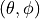. An antenna
radiation pattern is then expressed as a mathematical function
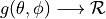 that returns the
gain (in dB) for each possible direction of
transmission/reception. All angles are expressed in radians.
, and
only considers the angle components 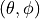. An antenna
radiation pattern is then expressed as a mathematical function
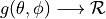 that returns the
gain (in dB) for each possible direction of
transmission/reception. All angles are expressed in radians.
 is the azimuthal orientation of the antenna
(i.e., its direction of maximum gain) and the exponential
is the azimuthal orientation of the antenna
(i.e., its direction of maximum gain) and the exponential . Note that
this radiation pattern is independent of the inclination angle
. Note that
this radiation pattern is independent of the inclination angle
 .
.
 is the maximum attenuation in dB of the
antenna. Note that this radiation pattern is independent of the inclination angle
is the maximum attenuation in dB of the
antenna. Note that this radiation pattern is independent of the inclination angle
 .
. ).
).


![L_\mathrm{total} = 20\log f + N\log d + L_f(n)- 28 [dB]](_images/math/1b59b2d1cbefd429fd62e46a74fad923f9b43a00.png)
: number of floors between base station and mobile (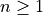)
: frequency [MHz]
: distance (where 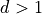) [m]
 , and approximating the number of walls that are penetrated with the manhattan distance (in number of rooms) between the transmitter and the receiver. In detail, let
, and approximating the number of walls that are penetrated with the manhattan distance (in number of rooms) between the transmitter and the receiver. In detail, let  , 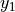,
, 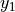,  , 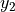 denote the room number along the
, 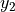 denote the room number along the  and
and  axis respectively for user 1 and 2; the total loss 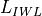 is calculated as
axis respectively for user 1 and 2; the total loss 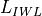 is calculated as.
.

 ) has to be calculated as the square root of the sum of the quadratic values of the standard deviatio in case of outdoor nodes and the one for the external walls penetration. This is due to the fact that that the components producing the shadowing are independent of each other; therefore, the variance of a distribution resulting from the sum of two independent normal ones is the sum of the variances.
) has to be calculated as the square root of the sum of the quadratic values of the standard deviatio in case of outdoor nodes and the one for the external walls penetration. This is due to the fact that that the components producing the shadowing are independent of each other; therefore, the variance of a distribution resulting from the sum of two independent normal ones is the sum of the variances. and variable standard deviation
and variable standard deviation  , according to models commonly used in literature. Three test cases are provided, which cover the cases of indoor, outdoor and indoor-to-outdoor communications.
Each test case generates 1000 different samples of shadowing for different pairs of MobilityModel instances in a given scenario. Shadowing values are obtained by subtracting from the total loss value returned by
, according to models commonly used in literature. Three test cases are provided, which cover the cases of indoor, outdoor and indoor-to-outdoor communications.
Each test case generates 1000 different samples of shadowing for different pairs of MobilityModel instances in a given scenario. Shadowing values are obtained by subtracting from the total loss value returned by 

 The full battery voltage
The full battery voltage The maximum battery capacity
The maximum battery capacity The voltage at the end of the exponential zone
The voltage at the end of the exponential zone The capacity at the end of the exponential zone
The capacity at the end of the exponential zone The voltage at the end of the exponential zone
The voltage at the end of the exponential zone The capacity at the end of the exponential zone
The capacity at the end of the exponential zone The battery impedance (The battery internal resistance)
The battery impedance (The battery internal resistance) The typical current value used to discharge the battery, this value is used to calculate some of the constants used in the model.
The typical current value used to discharge the battery, this value is used to calculate some of the constants used in the model. Required if we desired to inform connected energy consumption models that the battery has reached its discharged point.
Required if we desired to inform connected energy consumption models that the battery has reached its discharged point. The discharge current used to discharge the battery. This value is provided by the energy consumption model attached to the battery.
The discharge current used to discharge the battery. This value is provided by the energy consumption model attached to the battery. can
be obtained by inferring its value from the discharged curves shown in datasheets. When modeling
the behavior of a new battery, it is important to chose values that satisfies more than one curve,
trial an error adjustments might be necessary to obtain the desired results.
can
be obtained by inferring its value from the discharged curves shown in datasheets. When modeling
the behavior of a new battery, it is important to chose values that satisfies more than one curve,
trial an error adjustments might be necessary to obtain the desired results. value.
value. value.
value. value.
value. value.
value. value.
value. value.
value.


 ) by using the exponential weighted moving average (EWMA) as
shown below:
) by using the exponential weighted moving average (EWMA) as
shown below:


 is the number of fading scenarios that are desired (i.e., combinations of different sets of channel taps and user speed values). We provide traces for 3 different scenarios one for each taps configuration defined in Annex B.2 of [TS36104]:
is the number of fading scenarios that are desired (i.e., combinations of different sets of channel taps and user speed values). We provide traces for 3 different scenarios one for each taps configuration defined in Annex B.2 of [TS36104]: . All traces have
. All traces have  s and . This results in a total 24 MB bytes of traces.
s and . This results in a total 24 MB bytes of traces.
 be
the Transmission Bandwidth Configuration in number of Resource Blocks. For every
pair used in the simulation we define a corresponding SpectrumModel using
the functionality provided by the Spectrum Module .
model using the Spectrum framework described
in [Baldo2009]. and
be
the Transmission Bandwidth Configuration in number of Resource Blocks. For every
pair used in the simulation we define a corresponding SpectrumModel using
the functionality provided by the Spectrum Module .
model using the Spectrum framework described
in [Baldo2009]. and 
 and blocks of size
and blocks of size  . Therefore the overall TB BLER (TBLER) can be expressed as
. Therefore the overall TB BLER (TBLER) can be expressed as obtained according to the link level simulator CB BLER curves.
For estimating the , the MI evaluation has been implemented according to its numerical approximation defined in [wimaxEmd]. Moreover, for reducing the complexity of the computation, the approximation has been converted into lookup tables. In detail, Gaussian cumulative model has been used for approximating the AWGN BLER curves with three parameters which provides a close fit to the standard AWGN performances, in formula:
obtained according to the link level simulator CB BLER curves.
For estimating the , the MI evaluation has been implemented according to its numerical approximation defined in [wimaxEmd]. Moreover, for reducing the complexity of the computation, the approximation has been converted into lookup tables. In detail, Gaussian cumulative model has been used for approximating the AWGN BLER curves with three parameters which provides a close fit to the standard AWGN performances, in formula:![CBLER_i = \frac{1}{2}\left[1-erf\left(\frac{x-b_{ECR}}{\sqrt{2}c_{ECR}} \right) \right]](_images/math/5034a67ad4e058559b1cda84ee267f88424357b7.png)


[dB].
[dB].
[dB].
and
[dB].
and
[dB].
 within the RB
within the RB  , which, as observed before, is constant within the same RB and equal to
, which, as observed before, is constant within the same RB and equal to  ,
,  is the number of REs carrying the RS in a RB and
is the number of REs carrying the RS in a RB and  is the number of RBs. It is to be noted that
is the number of RBs. It is to be noted that 
 is the power spectral density of the RB
is the power spectral density of the RB 
 is the number of OFDM symbols carrying RS in a RB and is the number of REs carrying a RS in a OFDM symbol (which is fixed to ) while , and represent respectively the perceived power of the serving cell, the interference power and the noise power of the RE
is the number of OFDM symbols carrying RS in a RB and is the number of REs carrying a RS in a OFDM symbol (which is fixed to ) while , and represent respectively the perceived power of the serving cell, the interference power and the noise power of the RE  . As for RSRP, the measurements within a RB are always equals among each others according to the PHY model; therefore
. As for RSRP, the measurements within a RB are always equals among each others according to the PHY model; therefore  ,
,  and , which implies that the RSSI can be calculated as:
and , which implies that the RSSI can be calculated as:
 as detailed in the following:
as detailed in the following: is the RSRP of the neighbor cell
is the RSRP of the neighbor cell  is the RSSI of the neighbor cell
is the RSSI of the neighbor cell  is the power noise spectral density in any RE. The sample is considered as valid in case of the RSRQ evaluated is above the
is the power noise spectral density in any RE. The sample is considered as valid in case of the RSRQ evaluated is above the ![\in [0..9]](_images/math/51913cbad6eefab53a57ad4bdfec4d1a5054cef2.png) , 16QAM for MCS and 64QAM for MCS
, 16QAM for MCS and 64QAM for MCS ![\in [17..28]](_images/math/6c1e8861452e52ec6f4b2c3e1eb53ed89966a66e.png) ). This restriction comes from the specification of the rate matcher in the 3GPP standard [
TS36212]_, where the algorithm fixes the modulation order for generating the different blocks of the redundancy versions.
). This restriction comes from the specification of the rate matcher in the 3GPP standard [
TS36212]_, where the algorithm fixes the modulation order for generating the different blocks of the redundancy versions. is the number of original information bits,
is the number of original information bits,  are number of coded bits, are the mutual information per HARQ block received on the total number of
are number of coded bits, are the mutual information per HARQ block received on the total number of  retransmissions. Therefore, in order to be able to return the error probability with the error model implemented in the simulator evaluates the
retransmissions. Therefore, in order to be able to return the error probability with the error model implemented in the simulator evaluates the  and the and return the value of error probability of the ECR of the same modulation with closest lower rate respect to the
and the and return the value of error probability of the ECR of the same modulation with closest lower rate respect to the  be its SINR. We get the spectral efficiency
of user
be its SINR. We get the spectral efficiency
of user 
 denote generic users; let
denote generic users; let  be the
subframe index, and
be the
subframe index, and  be MCS
usable by user
be MCS
usable by user  in bit/s for user
in bit/s for user 
 is the TTI duration.
At the start of each subframe
is the TTI duration.
At the start of each subframe  to which RBG
to which RBG 
 is the actual
throughput achieved by the user
is the actual
throughput achieved by the user 


: packet arrival rate (byte/sec )
: token generation rate (byte/sec)
: token pool size (byte)
: counter that records the number of token borrowed from or given to the token bank by flow
: the maximum number of tokens UE i can borrow from the bank in one time.
: once

![\widehat{Mcoi}_{k}(t) = \underset{j=1,...,N}{\operatorname{argmax}}
\left( \frac{ CoI[j,k] }{ \sum_{k=0}^{N_{RBG}} CoI[j,k] } \right)](_images/math/9bc37fb9dc9e089b88caff28daa0ff00e87c52ad.png)
 is similar past throughput performance perceived by the user
is similar past throughput performance perceived by the user ![CoI[j,k]](_images/math/93d721f1812648f6b2a991e1781d1714d824bfff.png) is an
estimation of the SINR on the RBG
is an
estimation of the SINR on the RBG ![W[n] = max (1, \frac{TBR}{ T_{j}(t) })](_images/math/ca3fbfed2db469bba1852455d1db3bf534785610.png)
 , ) by weight
, ) by weight ![W[n]](_images/math/c9d18087ddac8b5a064ab652747bdc9dcac05205.png) . This strategy will guarantee the throughput of lower
quality UE tend towards the TBR.
. This strategy will guarantee the throughput of lower
quality UE tend towards the TBR.
 is a grouping parameter that determines
granularity of the groups, i.e. the number of the flows that will be
considered in the FD scheduling iteration.
is a grouping parameter that determines
granularity of the groups, i.e. the number of the flows that will be
considered in the FD scheduling iteration. is the bit rate specified in EPS bearer of the
flow
is the bit rate specified in EPS bearer of the
flow  is the past averaged throughput that is calculated with a
moving average,
is the past averaged throughput that is calculated with a
moving average,  is the throughput achieved at the
time t, and
is the throughput achieved at the
time t, and  we consider two different
metrics:
we consider two different
metrics:  and .
is the Proportional Fair metric which is defined as follows:
and .
is the Proportional Fair metric which is defined as follows:

 is the last reported CQI value from user
is the last reported CQI value from user


 , which has to be higher than a required minimum
in order to pass the criterion:
, which has to be higher than a required minimum
in order to pass the criterion:


is the latest received measurement result from the physical layer;
is the updated filtered measurement result;
(i.e. the first measurement is not filtered); and
 will disable Layer 3 filtering. On the other hand, past
measurements can be granted more influence on the filtering results by using
larger value of
will disable Layer 3 filtering. On the other hand, past
measurements can be granted more influence on the filtering results by using
larger value of  ) defines the distance between the
entering and leaving conditions in dB. Similarly, time-to-trigger introduces
delay to both entering and leaving conditions, but as a unit of time.
) defines the distance between the
entering and leaving conditions in dB. Similarly, time-to-trigger introduces
delay to both entering and leaving conditions, but as a unit of time. in Event A3, A4, and A5) are not
supported as well. The value equal to zero is always assumed in place of them.
in Event A3, A4, and A5) are not
supported as well. The value equal to zero is always assumed in place of them.
, then the UE transmit power for PUSCH transmission in subframe
![P_{PUSCH,c}(i)=\min\begin{Bmatrix}
10\log_{10}(\hat{P}_{CMAX,c}(i) - \hat{P}_{PUCCH}(i))\\
10\log_{10}(M_{PUSCH,c}(i))+ P_{O\_PUSCH,c}(j)
+ \alpha_{c} (j) * PL_{c} + \Delta_{TF,c}(i) + f_{c}(i)
\end{Bmatrix} [dBm]](_images/math/96d61b5f5f0645ef73023f3a40fe9d6e16274a85.png)
 and a component
and a component  provided by higher
layers for
provided by higher
layers for  is a 3-bit parameter provided by higher layers for serving cell
is a 3-bit parameter provided by higher layers for serving cell  ,
,  For ,
For ,  .
This parameter is configurable by attribute system:
.
This parameter is configurable by attribute system: is the downlink pathloss estimate calculated in the UE for serving cell
is the downlink pathloss estimate calculated in the UE for serving cell  is provided by higher layers and RSRP.
is provided by higher layers and RSRP.  for
for  and for . Only second case is implemented.
and for . Only second case is implemented. is component of Closed Loop Power Control. It is the current PUSCH power control
adjustment state for serving cell
is component of Closed Loop Power Control. It is the current PUSCH power control
adjustment state for serving cell 
 ;
;  for FDD.
for FDD. for the SRS transmitted on subframe
for the SRS transmitted on subframe ![P_{PUSCH,c}(i)=\min\begin{Bmatrix}
{P}_{CMAX,c}(i)\\
P_{SRS\_OFFSET,c}(m) + 10\log_{10}(M_{SRS,c})+
P_{O\_PUSCH,c}(j) + \alpha_{c}(j) * PL_{c} + f_{c}(i)
\end{Bmatrix} [dBm]](_images/math/fa2f9d41bb69b090f6be826348ecad4f2c39ccad.png)
{kind=link}
{kind=link}
{kind=link}
{kind=link}
{kind=link}
{kind=link}
{kind=link}
{kind=link}
{kind=link}
{kind=link}
{kind=link}
{kind=link}
{kind=link}
{kind=link}
{kind=link}
 .
For P_Srs_Offset_Value is computed with equation:
.
For P_Srs_Offset_Value is computed with equation:![P_{SRS\_OFFSET,c}(m)value = -10.5 + P_{SRS\_OFFSET,c}(m) * 1.5 [dBm]](_images/math/b631cb2b417b55aecb9aca353391a41145ab69ca.png)
 is the bandwidth of the SRS transmission in subframe
is the bandwidth of the SRS transmission in subframe {kind=link}
{kind=link}
{kind=link}
{kind=link}
{kind=link}

{kind=link}

 is the RNTP from the
is the RNTP from the  denotes weight with respect to adjacent
cell
denotes weight with respect to adjacent
cell 

{kind=link}
{kind=link}
{kind=link}
{kind=link}


{kind=link}
 to be used for CQI feedback reporting
uses the following formula:
to be used for CQI feedback reporting
uses the following formula: parameter represents the distance of each UE to the eNB it
is attached to, whereas the
parameter represents the distance of each UE to the eNB it
is attached to, whereas the  parameter represent the
interferer distance. We note that the scenario topology is such that
the interferer distance is the same for uplink and downlink; still,
the actual interference power perceived will be different, because of
the different propagation loss in the uplink and downlink
bands. Different test cases are obtained by varying the
parameter represent the
interferer distance. We note that the scenario topology is such that
the interferer distance is the same for uplink and downlink; still,
the actual interference power perceived will be different, because of
the different propagation loss in the uplink and downlink
bands. Different test cases are obtained by varying the 

{kind=link}

 the RBG size,
the RBG size,  of RBGs allocated to each user as
of RBGs allocated to each user as
 in bit/s achieved by each UE is then calculated as
in bit/s achieved by each UE is then calculated as for each user
for each user 


 that are located at a distance from the base
station such that they will use respectively the MCS index
that are located at a distance from the base
station such that they will use respectively the MCS index  . From the figure, we note that, as expected, the obtained throughput is
proportional to the achievable rate. In other words, the PF scheduler assign
more resources to the users that use a higher MCS index.
. From the figure, we note that, as expected, the obtained throughput is
proportional to the achievable rate. In other words, the PF scheduler assign
more resources to the users that use a higher MCS index. ¶
¶ be the fraction of time allocated to user i in total simulation time,
be the fraction of time allocated to user i in total simulation time,
 be the full bandwidth achievable rate for user i and be the achieved throughput of
user i. Then we have:
be the full bandwidth achievable rate for user i and be the achieved throughput of
user i. Then we have:
 . Otherwise, UE throughput
equals to its traffic generation rate.
. Otherwise, UE throughput
equals to its traffic generation rate.
 dB, which accounts for numerical
errors in the calculations.
dB, which accounts for numerical
errors in the calculations.


 varies in the two tests, in detail:
varies in the two tests, in detail:
 is the total number of TTIs in 1 second.
The test is performed both for Round Robin scheduler. The test passes if the measured throughput matches with the reference throughput within a relative tolerance of 0.1. This tolerance is needed to account for the transient behavior at the beginning of the simulation and the on-fly blocks at the end of the simulation.
is the total number of TTIs in 1 second.
The test is performed both for Round Robin scheduler. The test passes if the measured throughput matches with the reference throughput within a relative tolerance of 0.1. This tolerance is needed to account for the transient behavior at the beginning of the simulation and the on-fly blocks at the end of the simulation. which accounts for numerical errors.
Different test cases are provided by varying the x and y coordinates
of the UE, and the beamwidth and the orientation of the antenna of
the eNB.
which accounts for numerical errors.
Different test cases are provided by varying the x and y coordinates
of the UE, and the beamwidth and the orientation of the antenna of
the eNB.
is the max delay necessary for the acquisition of System Information. We set it to 90ms accounting for 10ms for the MIB acquisition and 80ms for the subsequent SIB2 acquisition
considering that 2 RRC packets have to be transmitted and that at most 4 such packets can be transmitted per TTI. In cases where interference is high, we accommodate one retry attempt by the UE, so we double the value and then add
{kind=link}
{kind=link}

{kind=link}
{kind=link}
{kind=link}
{kind=link}
{kind=link}
{kind=link}
{kind=link}
{kind=link}


: wavelength (m)
 coordinate plus a model parameter
set via SetHeightAboveZ.
coordinate plus a model parameter
set via SetHeightAboveZ. the average received power.
the average received power. the Nakagami-m distribution equals the Rayleigh distribution. Thus
this model also implements Rayleigh distribution based fast fading.
the Nakagami-m distribution equals the Rayleigh distribution. Thus
this model also implements Rayleigh distribution based fast fading.: is the street orientation with respect to the direct path (degrees)
![L_{msd} = L_{bsh} + k_{a} + k_{d}\log{(d/1000)} + k_{f}\log{(f)} - 9\log{(b)}
L_{bsh} = \left\{ \begin{array}{ll} -18\log{(1+\Delta h_{b})} & \mbox{for } h_{b} > h_{r} \\ 0 & \mbox{for } h_{b} \le h_{hr} \end{array}\right.
k_a = \left\{ \begin{array}{lll}
71.4 & \mbox{for } h_{b} > h_{r} \mbox{ and } f>2000 \mbox{ MHz} \\
54 & \mbox{for } h_{b} > h_{r} \mbox{ and } f\le2000 \mbox{ MHz} \\
54-0.8\Delta h_b & \mbox{for } h_{b} \le h_{r} \mbox{ and } d \ge 500 \mbox{ m} \\
54-1.6\Delta h_b & \mbox{for } h_{b} \le h_{r} \mbox{ and } d < 500 \mbox{ m} \\
\end{array} \right.
k_d = \left\{ \begin{array}{ll}
18 & \mbox{for } h_{b} > h_{r} \\
18 -15\frac{\Delta h_b}{h_r} & \mbox{for } h_{b} \le h_{r}
\end{array} \right.
k_f = \left\{ \begin{array}{ll}
-8 & \mbox{for } f>2000 \mbox{ MHz} \\
-4 + 0.7(f/925 -1) & \mbox{for medium city and suburban centres and} f\le2000 \mbox{ MHz} \\
-4 + 1.5(f/925 -1) & \mbox{for metropolitan centres and } f\le2000 \mbox{ MHz}
\end{array}\right.](_images/math/07bf8b989fed91036910696855866025548035f4.png)
 .
TR 37.885 specifies that
.
TR 37.885 specifies that  , the scattering effect is not considered.
The Doppler equation is implemented in the class
, the scattering effect is not considered.
The Doppler equation is implemented in the class 


 , in which each
entry H u,s
, in which each
entry H u,s  corresponds to the impulse response of the channel between the
s-th element of the transmitting antenna and the u-th element of the receiving
antenna. H u,s
corresponds to the impulse response of the channel between the
s-th element of the transmitting antenna and the u-th element of the receiving
antenna. H u,s 


 ,
,  are the number of horizontal and vertical antenna
elements respectively,
are the number of horizontal and vertical antenna
elements respectively,  ,
,  are the element spacing in the
horizontal and vertical direction respectively. The figures below depict the resulting
array radiation pattern versus the relative azimuth of transmitter and receiver, for antenna
arrays featuring 3GPP TR 38.901 (
are the element spacing in the
horizontal and vertical direction respectively. The figures below depict the resulting
array radiation pattern versus the relative azimuth of transmitter and receiver, for antenna
arrays featuring 3GPP TR 38.901 (

 , disabling the shadowing
and fixing the LOS condition. In such a way, any variation around the mean is due to the small-scale fading only.
The channel gain samples are produced, and returned on output conditioned on the value of
, disabling the shadowing
and fixing the LOS condition. In such a way, any variation around the mean is due to the small-scale fading only.
The channel gain samples are produced, and returned on output conditioned on the value of


 -modem. The class follows pretty closely the RadioEnergyModel class as the transducer behaviour is pretty close to that of a Wi-Fi radio.
-modem. The class follows pretty closely the RadioEnergyModel class as the transducer behaviour is pretty close to that of a Wi-Fi radio.


 and the number of unsuccessful transmissions
and the number of unsuccessful transmissions
 for each MCS
for each MCS  from the beta distribution with shape
parameters
from the beta distribution with shape
parameters  for each MCS and then
selects MCS with the highest expected throughput calculated as the
sample frame success rate multiplied by MCS rate.
for each MCS and then
selects MCS with the highest expected throughput calculated as the
sample frame success rate multiplied by MCS rate.